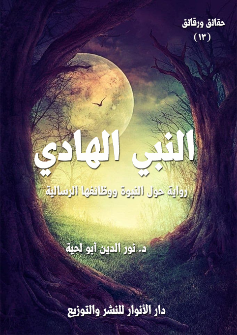

الكتاب: النبي الهادي
المؤلف: أ.د. نور الدين أبو لحية
الناشر: دار الأنوار للنشر والتوزيع
الطبعة: الثانية، 1437 هـ
عدد الصفحات: 519
ISBN: 978-620-2-34486-9
لمطالعة الكتاب من تطبيق مؤلفاتي المجاني وهو أحسن وأيسر: هنا

التعريف بالكتاب
تحاول هذه الرواية ـ بقدر الطاقة ـ أن تصور بعض وظائف الهداية التي مارسها رسول الله صلى الله عليه وآله وسلم باعتباره رسول الله وواسطة الهداية بين الله وبين عباده.
وخلاصة أحداثها هي أن الراوي ـ وهو رجل دين مسيحي ـ يذهب إلى بعض الأدغال الإفريقية للتبشير.. وفجأة تتعطل سيارته في بعض الغابات الموحشة.. وهناك يجد شخصا يسمى محمد الهادي.. يدعوه إلى السير معه لهدايته للطريق، ويشرط عليه في كل مرحلة من المراحل أن يستمع لقصة من قصصه..
وفي الطريق يقص عليه هذه القصص العشرة التي ذكرناها في الرواية..
وفي الأخير يصل إلى محل النجاة.. وهناك تحدث أحداث أخرى.. ندعها للقارئ ليتعرف عليها.
النبي الهادي (9)
تحاول هذه الرواية ـ بقدر الطاقة ـ أن تصور بعض وظائف الهداية التي مارسها رسول الله صلى الله عليه وآله وسلم باعتباره رسول الله وواسطة الهداية بين الله وبين عباده.
وهدفنا الأول من ورائها هو تبيان السنن الحقيقية المرتبطة بهذه الناحية العظيمة، والتي نالها من التشويه ما نال غيرها، حيث أصبحت الدعوة إلى الله حجابا من الحجب التي تحول بين البشر والتعرف على دين الله الحقيقي.. وأصبح الداعية ذلك الذي يحمل سلاح التكفير والتبديع.. ويحمل معه جميع أسلحة العنف، ليرمي الخلق جميعا في سجون الحقد والكراهية التي تعمر قلبه.
وهدفنا منها كذلك التعريف برسول الله صلى الله عليه وآله وسلم من خلال القرآن الكريم، والسنة المطهرة، والورثة الذي تمثلوا هذا الجانب فيه.
وهدفنا منها قبل ذلك وبعده ـ كما هو هدف هذه السلسلة ـ البرهنة على أن هذا الرجل العظيم الذي اكتنزت حياته بكل كنوز الكمال، وكان مع ذلك هاديا مهديا، يستحيل أن يكون كاذبا أو مخادعا أو مضللا، بل يجب أن يكون واسطة الهداية الربانية الأعظم، وعنوان عنايته الأكبر.
وبما أنه يستحيل على أي كان أن يصور هذه الناحية العظيمة من رسول الله صلى الله عليه وآله وسلم، فقد استعرنا لذلك مثلما فعلنا في الرواية السابقة مجموعة من الورثة، كل وارث تمثل جانبا من جوانب الهداية في شخصية رسول الله صلى الله عليه وآله وسلم، وراح يبشر بها، ويستعملها في هداية خلق الله.
وهذه النواحي هي:
الحكيم: فرسول الله صلى الله عليه وآله وسلم كان في غاية الحكمة في دعوته.. فقد كان يراعي المخاطبين في طباعهم وقدراتهم وتوجهاتهم وحاجاتهم وأعرافهم.. وكان ينزل الناس منازلهم في
النبي الهادي (10)
الخطاب.. وكان يستعمل كل الوسائل والأساليب، ويضعها في محالها الصحيحة.
الواعظ: فقد كان رسول الله صلى الله عليه وآله وسلم واعظا مؤثرا، وقد أوتي جوامع الكلم، واختصر له الكلام اختصارا، ولو أن أي داعية اكتفى بمواعظ رسول الله صلى الله عليه وآله وسلم وتوجيهاته في دعوة الخلق لكفته.
المحاور: فقد كان صلى الله عليه وآله وسلم يحاور بعلم وعقلانية من يدعوهم، وقد وضع لنا منهجا متكاملا للحوار الهادف الناجح.
المعلم: فقد وضع لنا صلى الله عليه وآله وسلم منهجا كاملا في التربية والتعليم، يمكنه أن ينهض بالمدرسة، ويحولها إلى محل لصياغة الإنسان الصالح الذي لا يكتفي بالمعرفة وحدها، بل يضم إليها جميع الآداب الإنسانية الرفيعة.
القدوة: فقد كان صلى الله عليه وآله وسلم قدوة في كل شيء.. ويمكن أن يستفيد منه كل أحد.
المربي: فقد وضع لنا رسول الله صلى الله عليه وآله وسلم منهجا متكاملا في الترقي الأخلاقي والعرفاني، يمكن لمن سلكه أن يرقى في معارج العرفان، ويتحقق بما تحقق به أولياء الله من الورثة.
الخطيب: فقد كان رسول الله صلى الله عليه وآله وسلم خطيبا مفوها، ويمكن لمن درس خطبه أن يستفيد منها كل ما يرقى بالخطابة لتؤدي دورها الإصلاحي والتوعوي.
المفتي: فقد كان رسول الله صلى الله عليه وآله وسلم يجيب من سأله، ويعلمه أحكام دينه، وقد ترك للمفتين منهجا لذلك يمكنهم توظيفه لهداية خلق الله إلى شريعة الله.
المحتسب: فقد كان رسول الله صلى الله عليه وآله وسلم آمرا بالمعروف، ناهيا عن المنكر، وعلمنا من الآداب والأخلاق ما يمكن أن ينهض بهذه الوظيفة الخطيرة من وظائف الدين لتؤدي دورها في الإصلاح في جميع مجالاته.
الشاهد: فقد كان رسول الله صلى الله عليه وآله وسلم شاهدا على أمته جميعا.. وورث ورثته هذه المسؤولية الخطيرة، وهي تعني القيام بكل ما من شأنه أن يعرض الدين عرضا صحيحا متناسبا مع
النبي الهادي (11)
القيم الجميلة التي جاء بها، حتى يدخل الخلق في دين الله أفواجا، وحتى يظهر الإسلام على الدين كله.
هذه هي النواحي العشرة التي حاولنا في هذه الرواية أن نشرحها، ونبسطها قدر الإمكان، وقد استعملنا لذلك بعض الأحداث المشوقة الرمزية التي تجمع للقارئ بين المعلومة والفكرة والمتعة..
وخلاصة أحداثها هي أن الراوي ـ وهو رجل دين مسيحي ـ يذهب إلى بعض الأدغال الإفريقية للتبشير.. وفجأة تتعطل سيارته في بعض الغابات الموحشة.. وهناك يجد شخصا يسمى محمد الهادي.. يدعوه إلى السير معه لهدايته للطريق، ويشرط عليه في كل مرحلة من المراحل أن يستمع لقصة من قصصه..
وفي الطريق يقص عليه هذه القصص العشرة التي ذكرناها في الرواية..
وفي الأخير يصل إلى محل النجاة.. وهناك تحدث أحداث أخرى.. ندعها للقارئ ليتعرف عليها.
وننبه هنا ـ كما نبهنا سابقا ـ إلى أن ما نذكره من شخصيات وأماكن وأحداث وغيرها، لا علاقة لها بالواقع إلا علاقة الرمزية التي تقتضيها الأعمال الفنية.. وما كان من ذلك منطبقا مع الواقع أشرنا إليه في الهامش.
النبي الهادي (12)
في ذلك الصباح، نهضت فرحا مسرورا بعد أن سمعت تلك الأحاديث الجميلة عن نبينا - صلى الله عليه وسلم -، ومن يمثله من الورثة الذين لم يرتضوا لذواتهم قالبا غير القالب الذي اختاره الله لرسوله صلى الله عليه وآله وسلم..
ولكن الألم عاد يعتصرني من جديد..
لقد قلت لنفسي: كم يمكن أن يكون في هذه الرقعة الكبيرة المباركة التي يستوطنها المسلمون من أولئك النماذج الراقية من ورثة النبي صلى الله عليه وآله وسلم؟.. كم يمكن أن يكون هناك من جعفر وباقر وزين العابدين وأويس وبشر والنورسي والبغدادي والصالحي والسيد سليمان (1)؟.. كم يمكن أن يكون من أعداد هؤلاء، أو من يقاربهم، ولو بأن يكتفي بالسير على خطاهم؟
وبعد أن قلبت بصري وبصيرتي في الواقع وجدت أن أعداد أمثال هؤلاء لا تكاد تذكر.. فهم كالإكسير الأحمر قل من يظفر بهم.. وقل من يمكن أن يستفيد منهم.. وهم في حال وجودهم قد يغرقون في وديان النسيان، أو قد يتيهون في صحارى الإهمال واللامبالاة.. وبالتالي يصبح وجودهم في الناس كعدمهم.
ثم عدت ببصري وبصيرتي إلى ورثة الشياطين.. فوجدتهم يملأون الأرض سهلها وجبلها، وبرها وبحرها.. صياحا ونعيقا ولغوا:
وجدتهم يدخلون كل بيت عبر شاشات التلفزيون، والمذياع، والأشرطة المسموعة والمرئية، وعبر وسائل الإعلام الكثيرة التي تفنن أهل عصرنا في اختراعها، كما تفننوا في استغلالها.
ووجدتهم يستعملون كل الحيل، ويلتمسون كل السبل ليصلوا إلى قلوب الذين يستهلكون تلك الوسائل وعقولهم.. بل حتى أجسادهم.. فكم رأيت من شباب يضع السماعات على أذنه ليرقص معها بالحركات التي توحيها له الموسيقى التي أبدع ورثة الشياطين في التلاعب
__________
(1) هؤلاء هم أبطال الرواية السابقة [النبي الإنسان]، والذين يمثلون دور ورثة النبي (.
النبي الهادي (13)
بها؟
ووجدتهم لا يكتفون بكل ذلك مما يخص العامة البسطاء.. بل رأيتهم ببصري وبصيرتي يدخلون الجامعات ومراكز العلم والثقافة ليملأوها بما شاءت لهم أهواؤهم من أطروحات تلبس لباس العلم، لتجعله ذريعة لجهل مركب يستحيل محوه، ولو صبت عليه جميع بحار الدنيا.
ووجدتهم فوق ذلك كله يصرفون أموالا ضخمة.. لا مكاسب واضحة لها.. ولكن مكاسبها الخفية أعظم من كل المكاسب.. إن مكاسبها هي استعباد الإنسان نفسه، ليصبح لعبة بين يدي تلك الوسائل تملي عليه ما تشاء، فلا يجد نفسه إلا مسوقا للتحرك حسب رغبتها.
بعد أن امتلأت ألما بكل هذا.. رحت أبحث في واقعنا.. نحن المسلمين.. نحن الذين كلفوا بأن يحملوا رسالة أعظم الأنبياء ليبلغوها إلى الأرض، فيطهروها بذلك البلاغ من ورثة الشياطين، ومن رجس أذنابهم وذيولهم.. فازددت ألما على ألم، وحزنا على حزن:
لقد رأيت الخطيب الذي يصعد المنبر وحوله الألوف المؤلفة.. فلا يلتفت لهم، ولا يحاول أن يسمعهم رسالة ربهم، وهدي نبيهم، بل ينشغل بورقته يقرأ حروفها حرفا حرفا.. وأحيانا تتوقف به الحروف، فيقرأ ما لا يفهم، ويسمعهم ما لا يفهمون.. وتنصرف بعدها الألوف المؤلفة، وكأنها كانت تمثل تمثيلية ساخرة، ولم تكن تسمع كلام ربها أو هدي نبيها.
ورأيت الواعظ الذي ينشغل بالسجع والجناس والطباق والحروف التي لا نقط لها والجمل التي تقرأ من الجهتين عن التسلل إلى القلوب لمحو الران الذي يغشاها، والسموم التي تقتلها، والظلام الذي يسكنها.
ورأيت المفتي الذي يوزع الفتاوى بحسب هواه، يفتي في كل شيء، ولا يتورع عن شيء، ولا يجعل فتاواه سلما يعرج به العباد إلى ربهم، بل يجعل منها سما يشوه به الدين وحقائق الدين، ويجعل منها مهواة تنحدر بالمؤمنين إلى الهاوية التي تسكنها الأهواء.
ورأيت المعلم الذي يتعامل مع تلاميذه كما يتعامل السيد مع عبيده..
النبي الهادي (14)
ورأيت غير هؤلاء ممن يستلمون المناصب العالية.. ولكنهم بسلوكهم ينزلون بها إلى الحضيض الأسفل.
-\--\-
كانت أول مرة أسمع الغريب ينادني بذلك الإلحاح (1)، وأنا في غرفتي، فأسرعت أهرول إليه، وقلت: اعذرني حضرة الولي الصالح.. لقد شغلتني نفسي كما تعودت أن تشغلني.
قال: ألست مشتاقا إلى النبي الهادي؟
قلت: وكيف لا أشتاق.. ونحن ـ كما ترى ـ في واقع لا يتقن شيئا كما يتقن أساليب الإضلال والتمويه والتلاعب بالحقائق.
قال: فلن يصلح هذا الواقع إلا النبي الهادي.. والهدي الذي خلفه النبي الهادي.. وورثة النبي الهادي.
قلت: وأين هم؟.. نحن لا نرى إلا الأشباح التي لا تستطيع أن تصل إلى الأرواح، بل لا تفكر في الوصول إليها.. بل تعتبر الحديث معها وعنها لغوا وثرثرة.
قال: يستحيل على ركن خطير من أركان النبوة كهذا الركن أن يعدم من الأمة.. إن الله الرحمن الرحيم النور الهادي أرحم بعباده من أن يتركهم فرائس للشياطين وورثة الشياطين.
قلت: فهل التقيت ببعضهم؟.. حدثني عن ذلك.. فما أجمل أحاديث الورثة؟
قال: نعم.. لقد شرفني الله، فالتقيت ببعضهم.. وسيكون حديثنا عنه اليوم، كما كان حديثنا في الرحلة السابقة عن الوارث.
-\--\-
__________
(1) أشير بهذا إلى أن الداعية الوارث هو الذي يبدأ بدعوة الناس إلى الله، لا الذي يتنظر حتى يأتيه الناس، كما قال تعالى: {يَا أَيُّهَا الرَّسُولُ بَلِّغْ مَا أُنْزِلَ إِلَيْكَ مِنْ رَبِّكَ وَإِنْ لَمْ تَفْعَلْ فَمَا بَلَّغْتَ رِسَالَتَهُ وَاللَّهُ يَعْصِمُكَ مِنَ النَّاسِ إِنَّ اللَّهَ لا يَهْدِي الْقَوْمَ الْكَافِرِينَ} (المائدة:67)
النبي الهادي (15)
اعتدل الغريب في جلسته وحمد الله وصلى وسلم على نبيه صلى الله عليه وآله وسلم مستغرقا في كل ذلك، ثم قال: بعد أن رأيت ما رأيت، وسمعت ما سمعت من حديث الوارث مما كنت قد ذكرته لك في رحلتي السابقة.. وبعد أن آنس مني قومي من الصدق والإخلاص والثبات ما أنسوا.. ترقيت في السلم الذي كنت أحلم به إلى درجات عالية لم أكن أتصورها، ولا أطمح لها.
وقد تثاقلت ـ بسبب تلك الكراسي الرفيعة، وما توفره من رغد عيش ـ إلى الدنيا مدة من الزمن إلى أن جاء ذلك اليوم العظيم الذي التقيت فيه الهادي الذي هداني الله به إلى النبي الهادي..
في ذلك اليوم كنت في أواسط إفريقيا في جولة هي أقرب إلى الجولة السياحية منها إلى الجولة التبشيرية.. كنت حينها أسير بسيارتي الفخمة ذات العجلات القوية مخترقا غاباتها العذراء، غير مبال بأي خطر قد ألقاه في طريقي، لأن ما زودت به السيارة من وسائل الأمان يكفي لحمايتها وصد أي خطر عنها أو عني.
ولكن الله شاء في ذلك اليوم أن أتعرض لخطر ربما لم أتعرض لمثله في حياتي..
لقد اصطدمت سيارتي بشيء لا أزال إلى الآن أجهله.. ربما يكون شيئا من الغيب، وربما يكون من الشهادة.. المهم أني إلى الآن لم أعرف ما هو.. لم أعرف إلا أنه أصاب سيارتي بما جعلها لا تطيق السير خطوة واحدة.. وقد أصابني ذلك بهلع شديد، فقد كنت في أدغال الغابات، وليس بين يدي إلا الحيوانات المفترسة.. والتقدم في تلك الغابة خطوة واحدة ليس له إلا معنى واحد هو الموت المؤكد.. فلم يخرج من تلك الغابات أحد من الناس سالما.
في ذلك المحل الذي كان برزخا بين الموت والحياة، وبين الدنيا والآخرة.. وصرت أشعر بجسدي فيه كعارية جاء مالكها ليستلمها.. في ذلك المحل ارتفع عني ذلك التثاقل إلى الأرض، وشعرت من جديد بتلك الأشواق إلى تلك الشمس التي دعتني العذراء للبحث عنها.
وبمجرد أن دب ذلك الشعور إلى نفسي رأيت صاحبك (معلم السلام)، وهو يسير نحوي كما يسير البرء إلى المريض، وكما تسير العافية إلى المبتلى.. وما إن لمحته حتى أسرعت مهرولا
النبي الهادي (16)
إليه، وقد رأيت فيه الحياة التي يئست منها، والعافية التي غادرتني، وكنت أتصور أنها لا ترجع.
استقبلني بابتسامته التي عهدتها منه، وقال: عجبا.. ما الذي جاء بك إلى هنا؟
قلت: سيارتي.. هذه السيارة التي ترى هي التي جاءت بي إلى هنا.
ابتسم، وقال: أأعطيتها عقلك وإرادتك لتقودك إلى هنا؟
قلت: لا.. عقلي لا يزال لدي.. وإرادتي كذلك.. وأنا لم آت إلا وفق ما أملاه علي عقلي، وما طلبته مني إرادتي.
قال: فعقلك وإرادتك هما اللذان جاءا بك إلى هنا.. لا هذه السيارة المسكينة المسخرة التي لا يمكنها إلا أن تطيع إرادتك، وتستجيب لعقلك.
قلت: ذلك صحيح..
ثم عقبت قائلا: وأنت.. ما الذي جاء بك إلى هنا، فأنا لا أرى معك سيارة ولا طائرة؟
قال: الذي خلق السيارة والطائرة يستطيع أن ينقلك بهما، ويستطيع أن ينقلك بغيرهما.
قلت: إن هذه الغابة خطيرة جدا، ولم يخرج منها أحد يسير على قدميه سالما، فكيف ظهر لك أن تسير فيها؟
قال: لي في الغابة حاجة، فأنا أبحث عنها..
ابتسمت وقلت: ليس في الغابة إلا الأسود المفترسة.. والغزلان المفتَرَسة.. لا يأتي مثل هذه الغابة إلا من يريد أن يَفترس، أو يريد أن يُفترس.
قال: هناك من يريد أن يفترس اللحوم، وهناك من يريد أن يفترس الحقائق.
قلت: الحقائق لا تفترس في الغابات؟
قال: لو لم تكن هناك حقائق تزين الغابات ما خلقها ربك.. فلكل خلق حقيقته التي إليها يرجع.. وسره الذي إليه يؤول.
قلت: ومن يعرفك بالأسرار في مثل هذه المجاهيل؟
النبي الهادي (17)
قال: الذي هدى النحل إلى صناعة العسل، وهدى الطير في أجواء السماء، وهدى النجوم في مساراتها.. لن يعجز أن يرسل لي من الهداة من يدلني على الحقائق، ومن يكشف لي عن الأسرار.
قلت: ألا تخاف أن تقع في يد من يضللك؟
قال: للهداة نور لا تطفئه الظلمات.. وللمضللين ظلمات لا يمكن لجميع أشعة الدنيا أن تنيرها.
قلت: فأين الهداة؟.. نحن في غابة ليس فيها إلا التضليل والتمويه.
قال: بل نحن في غابة ليس فيها إلا الهداية والدلالة.. ألا ترى أن أبسط طائر يمكنه أن يخرج من هذه الغابة من غير عناء؟
قلت: ذلك أنه يطير.. وهو يرى في السماء ما لا نراه نحن المتثاقلون إلى الأرض.
قال: فلنطر كما يطير، لنبصر ما يبصر، فلا ينتظر المتثاقل إلا الافتراس.. فهو إن لم تفترسه السباع افترسته نفسه التي زينت له أن يقع في أيدي السباع.
ما قال ذلك حتى رأى طيرا جميلا يترنم بألحان عذبة.. فأسرع إليه.. قلت: ما بالك.. أين تذهب وتتركني؟
قال: إن لهذا الطائر هو الذي جئت أبحث عنه.. إنه السيمرغ (1) الذي تحدث عنه الأولياء.. ألا تعرفه؟
قلت: أنا لا أعرف في هذه المفازة إلا البحث عن النجاة..
قال: لقد ذكرتها لك.. لا تتثاقل إلى الأرض.. اركب سيارتك، ولا تدعها تركبك.. قدها، ولا تدعها تقودك..
__________
(1) أشير به إلى (منطق الطير) لفريد الدين العطار، وأشير بالسيمرغ إلى الطيور التي كانت تبحث عن الملك، وتطير شوقا إليه، وكل ذلك من باب الكناية على أن طريق الهداية لا حدود له.
النبي الهادي (18)
قال ذلك، ثم انصرف مسرعا نحو ذلك الطائر العجيب الذي كان يرسل من الألحان ما يملأ القلوب بطرب لا يستطيع أي لسان في الدنيا تصويره ولا تفسيره.
بعد أن غاب عني عاد اليأس يدب إلى نفسي من جديد.. فامتطيت السيارة، ورحت أنتظر قدر الله..
أخذتني سنة من النوم.. لم أفطن بعدها إلا برجل هو أشبه الناس بالحكيم، وبمحمد الوارث.. فصحت: ها قد أرسلك الله إلي ـ يا محمد ـ لتنقذني؟
قال: أبشر.. فأنا ليس لي من دور في هذه الغابة إلا الإنقاذ.. كل من أطاعني أنقذته من الموت المحقق..
قلت: ومن هو الأحمق الذي يرفض أن تنقذه؟
قال: كثيرون هم.. وإن شئت أريتك من جثثهم ما يملؤك رعبا.
قلت: هؤلاء مجانين لا حمقى.
قال: ولكنهم يدعون أنهم أعقل الناس وأعلم الناس وأغنى الناس.. كلما جئت إليهم محذرا من السباع المتربصة والثعابين المتلهفة كلما أداروا رؤوسهم وصعروا خدودهم.. وقالوا: اذهب، فلسنا في حاجة إليك.
قلت: أما أنا فبحاجة إليك.. سر بي حيث شئت، واقطع بي أي واد، واصعد بي أي جبل.. فلن تجد مني إلا الطاعة والتسليم.
قال: أنت تعلم أن الطريق صعبة شاقة.
قلت: وأعلم ـ كذلك ـ أن الموت في هذه الغابة بين أنياب السباع أصعب وأشق.
قال: إن السير في هذه الغابة يحتاج إلى قوة وبصيرة وصبر.. فهل تملكها؟
قلت: إن لم أملكها في جميع حياتي، فسأملكها اليوم.
قال: أنت تعلم أن في كل خطوة في هذه الطريق شرك أو أحبولة أو حفرة يمكن أن تقع
النبي الهادي (19)
فيها.
قلت: أعلم ذلك.. ولولا ذلك لكنت قطعت الطريق بنفسي، وما احتجت إليك لتدلني.
قال: فما دمت قد تحققت بالإرادة، وتحليت بالهمة.. فما عليك إلا أن تتبعني.. فما أيسر السير على صاحب الإرادة، المتحلي بالهمة.
قلت: لقد سرت بالسيارة مسافة طويلة.. فكم يا ترى يمكن لأرجلنا الضعيفة أن تقطع تلك المسافة؟
قال: لا يهم الزمن في هذه المحال.. المهم هو أن نسير في الطريق الصحيح.. لأن خطأ واحدا سيضعنا في أفواه السباع.
قلت: وسيارتي!؟
قال: أراك تردد ما ردد أكثر من أريد أن أنقذهم.
قلت: أكانت لديهم سيارات؟
قال: لو لم تكن لديهم سيارات لنجوا.. لقد أهلكتهم سياراتهم.
قلت: كيف أهلكتهم مع أنها لم تصمم إلا للإنقاذ؟
قال: لقد تعلقوا بها، فلم يستطيعوا أن يسيروا ويتركوها.. فهلكوا وهلكت سياراتهم معهم.. وإن شئت أريتك من هياكلها ما يملؤها زهدا في سيارتك، ورغبة عن التعلق بها.
قلت: فأرني ذلك.. لعل همتي تترفع عن هذه السيارة التي التصقت بروحي.
لم يسر بي إلا قليلا حتى رأينا سيارة اخترقتها بعض القوارض، وحولتها مأوى لها..
قلت: أين صاحب هذه السيارة؟
قال: انظر إلى أسفلها.
نظرت فإذا هيكل عظمي ملأني بالرعب، فقال: هذا هو صاحبها.. لقد استعملت كل الأساليب لأنقذه، فلم يستجب.. وأبى.. بل تصورني لصا يريد أن يسرق سيارته.. فلما أكثرت
النبي الهادي (20)
من الإلحاح أخرج بندقية من سيارة وصوبها في وجهي، وقال: (إن لم تغادر أيها البدائي هذا المحل، فسأقتلك بسلاحي هذا)
قلت: فأنت الآن تشفي غيظك بالنظر إلى جثته.
قال: لقد حزنت عليه حزنا شديدا.. وعندما طردني بكيت..
قاطعته قائلا: عليه.. أم على نفسك؟
قال: بل عليه.. فأنا أعلم أن المصير الذي كان ينتظره هو هذا المصير.. لقد حاولت أن أستشفع له بدموعي لكنه ضحك ضحكة عالية، وقال: لا مكان هنا للعواطف.. هنا القوة.. القوة وحدها هي التي تحميك.
قلت: فأين ذهبت قوته؟
قال: كان المسكين يكذب على نفسه.. فليس هناك إلا قوة واحدة في هذا الوجود.. وكل ما عداها ضعف.. وليس هناك إلا حصن واحد.. وما عداه مفازة.
قلت: من أنت؟.. وما الذي جعلك تمارس هذه الوظيفة؟.. وما هي الأجور التي تتقاضاها؟
قال: أما أنا فرجل من أرض الله اسمه (محمد الهادي).. وأما وظيفتي فهداية من انقطعت به السبل، واحتارت به الطرق.. وأما الأجر الذي أناله فهو نجاة من نجا، وهداية من اهتدي.. يكفيني أن أرى من أنقذته يسير بعافية في وسط أهله وماله وولده.
قلت: إن أمرك عجيب.. لا بد أن لك قصة غريبة.. فحدثني حديثها.
قال: لك ذلك.. فلا تقطع مثل هذه الطريق الطويلة إلا بالأحاديث.
قلت: من أين تبدأ قصتك؟
قال: من الضلال تبدأ قصتي..
قلت: عجبا.. أقصة الهادي تبدأ من الضلال؟
النبي الهادي (21)
قال: أجل.. ألم تسمع قوله تعالى: {وَوَجَدَكَ ضَالاً فَهَدَى} (الضحى:7)
قلت: بلى.. هذه الآية قرأتها كثيرا في قرآن المسلمين.
قال: بل في قرآن رب العالمين الذي هو خطابه للناس أجمعين..
قلت: فكيف بدأ الضلال يتسرب لتحل محله الهداية؟
قال: لقد هداني الله إلى رجل من أهله من الصالحين من ورثة رسول الله صلى الله عليه وآله وسلم كان اسمه محمد الوارث..
قاطعته قائلا: أعرفه.. لقد زرته قبل سنوات.. وسمعت رحلته إلى محمد.
قال: لقد صحبته مدة من الزمن.. وقد امتلأت بالمعاني العظيمة التي كان ـ بسلوكه ـ يدعو إليها.
قلت: فما الذي جعلك ترغب عن صحبته.. وتسير إلى هذه البلاد، حيث لا تسمع إلا عواء الذئاب، وزئير الأسود؟
قال: لقد ذكرت ما كنت فيه من الضلال، فامتلأت هما وغما..
قلت: أخفت ألا يتوب الله عليك؟
قال: لا.. لقد أيقنت بأن الله قد تاب علي.. فيستحيل على الغفور الرحيم أن يستغفره عبده، ثم لا يغفر له.
قلت: فما الذي دعاك إلى الحزن إذن؟
قال: لقد حزنت على البشر التائه في صحراء نفسه، الغارق في أوحال شهواته، المصلوب على خشبة أهوائه.
قلت: وما تملك أن تفعل أنت له؟
قال: لقد قلت لنفسي: إن الرحمن الرحيم الذي ما أنزل داء يرتبط بالطين إلا أنزل له من الدواء ما يقاومه، لن يتخلى عن الروح التي هي الأصل.. فلذلك لن يكون في الروح داء إلا وينزل
النبي الهادي (22)
الله من الأدوية ما يقاومه.
قلت: فماذا فعلت؟
قال: لقد قعد بي العجز عن معرفة الدواء.. فلذلك ظللت مدة في تلك الأحزان إلى أن جاء اليوم الذي أرسل الله لي فيه رجلا لا أزال إلى الآن لا أعرف كيف جاء، ولا كيف ذهب.
قلت: ما اسمه؟
قال: لم أكن أناديه إلا بـ (معلم الهداية)
قلت: معلم الهداية..!؟
قال: أجل.. فلم يكن له حديث إلا عن الهداية.. وقد سألته أول ما زارني عن أسرار الهداية التي تقضي على كل ضلال، فقال: سر في الأرض.. فلن ينال الهداية ولا علوم الهداية إلا من سار في الأرض، وخبر البشر، وتعلم لغة الطير، وسلك مسالك النحل، وسكن قرى النمل.
قلت: إن هذا الرجل يلغز ولا يهدي..
قال: أحيانا تلبس الهداية لباس الألغاز.. وتحتاج العبارة إلى ثوب إشارة.
قلت: هل فهمت مراده؟
قال: أجل.. لقد فهمت مراده.. فقد وضح لي لغزه هذا بلغز أمكنني أن أبحث عنه.. وأعيش فترة من حياتي في البحث عنه.
قلت: فما قال؟
قال: لقد قال لي: ترياق الهداية يحتاج إلى عشرة أوصاف لن تنالها إلى في عشرة حضائر، ومن عشرة أفواه..
قلت له: فما الفم الأول؟
قال: الفم الذي يعرف للمراتب حقها.. فلا يتجاوز بها منازلها. (1)
__________
(1) أقصد به (الحكيم)، وهو الفصل الأول من هذه الرسالة.
النبي الهادي (23)
قلت له: فما الفم الثاني؟
قال: الفم الذي يسيل ما جف من الدموع، ويلين ما قسا من القلوب (1).
قلت: فما الفم الثالث؟
قال: الفم الذي يكشف عن الجواهر بالقيل والقال، والجواب والسؤال، لا بالمراء والجدل (2).
قلت: فما الفم الرابع؟
قال: الفم الذي طهر لسانه بماء الحقائق، وزين بمواثيق الرقائق، وعتق من سجون العلائق، فصار بين الناس كالبدر المتلألئ، تنشق له حجب الظلمات، وتندك له صروح الطغاة (3).
قلت: فما الفم الخامس؟
قال: الفم الذي ينطق من غير لسان.. ولكنه أبلغ من كل لسان (4).
قلت: فما الفم السادس؟
قال: الفم الذي يطهر أرض النفوس من الأدناس، ليرفعها إلى قدس الأقداس (5).
قلت: فما الفم السابع؟
قال: الفم الذي يرفع صوته، فتعلو برفعه الرايات، وتنتشر المكرمات (6).
قلت: فما الفم الثامن؟
قال: الفم الذي حلي بحلية الورع، وزين بزينة العلم والحلم، ونور بأنوار البصيرة..
__________
(1) أقصد به (الواعظ)، وهو الفصل الثاني من هذه الرسالة.
(2) أقصد به (المحاور)، وهو الفصل الثالث من هذه الرسالة.
(3) أقصد به (المعلم)، وهو الفصل الرابع من هذه الرسالة.
(4) أقصد به (القدوة)، وهو الفصل الخامس من هذه الرسالة.
(5) أقصد به (المربي)، وهو الفصل السادس من هذه الرسالة.
(6) أقصد به (الخطيب)، وهو الفصل السابع من هذه الرسالة.
النبي الهادي (24)
فأجاب عن كل سؤال، وحل كل إشكال، ورفع كل معضلة، وأزال كل مشكلة (1).
قلت له: فما الفم التاسع؟
قال: الفم الذي يثور على المحو، ليطفئ السراب، ويمحو الضباب (2).
قلت: فما الفم العاشر؟
قال: الفم الذي يسلك القفار، ويقطع البحار، لينشر الأنوار (3).
قلت: فهل بحثت عن هذه الأفواه؟
قال: أجل.. لقد ذكر لي أنها في عشرة حضائر من بلاد الإسلام.. فلذلك سرت في كل بلاد الإسلام أبحث عنها حتى وجدتها.
قلت: وجدتها جميعا؟
قال: أجل.. فلا تكمل الهداية إلا باجتماعها جميعا.. كما لا يمكن أن يكتمل الشعاع الأبيض إلا بجميع ألوانه.
قلت: فهل ستحدثني حديث رحلتك هذه؟
قال: يسرني ذلك.. فبيننا وبين الأمان عشر مراحل.. وسنقطع بكل واحد من هذه الأفواه مرحلة من المراحل.. على أن لا تنسى أننا في غابة.. وأنه يمكن في أي لحظة أن يهم بنا سبع، أو تلدغنا عقرب..
قلت: إن ذلك يمنعني من أن أعيش ما تقول..
قال: دع بصرك لجسدك.. وأرسل ببصيرتك إلي.. فلست أحتاج سوى بصيرتك.
قلت: فمن أين ابتدأت رحلتك؟
__________
(1) أقصد به (المفتي)، وهو الفصل الثامن من هذه الرسالة.
(2) أقصد به (المحتسب)، وهو الفصل التاسع من هذه الرسالة.
(3) أقصد به (الشاهد)، وهو الفصل العاشر من هذه الرسالة.
النبي الهادي (25)
أشار إلي أن نسير، ثم حمد الله وصلى على نبيه صلى الله عليه وآله وسلم مستغرقا في كل ذلك، ثم قال:
النبي الهادي (26)
بدأت رحلتي من بلاد العراق.. تلك البلاد التي بدأ بها التاريخ.. وفيها التقيت أول حامل لمشعل من مشاعل الهداية النبوية، وهو (مشعل الحكمة).. وفيها تعرفت على (النبي الحكيم).. سأقص عليك القصة من البداية:
كنت أسير في مدينة الموصل.. ثم بدا لي أن أدخل مكتبة من مكتباتها الضخمة.. وفيها التقيت رجلا أسود شديد السواد، كان الناس يطلقون عليه لقب لقمان الحكيم (1).. ولست أدري هل كان ذلك اسما سماه به أبوه، أم أنهم كانوا يشبهونه في حكمته بلقمان عليه السلام، فقد كانت الصلة بينه وبين لقمان عليه السلام شديدة جدا في كل شيء حتى لون البشرة وطول القامة وغير ذلك.. وأما شبهه به في الحكمة فقد تجلى لي من خلال حديثي معه.. والذي سأذكره لك.
عندما دخلت المكتبة ورأيته حسبته في البدء صاحب المكتبة، فقد رأيته يرتب كتبها، وينظمها باهتمام، وكأنه صاحبها.
أردت في تلك الأيام أن أنشغل بتعلم النحو، فقد رأيت أنه لا مناسبة أحسن من تلك المناسبة لتعلمه.. فطلبت منه أن يعطيني حاشية من الحواشي على الألفية، فقال لي، والابتسامة تشع من شفتيه: أتسمح لي أن أسألك سؤالا؟
قلت: سل ما بدا لك.
__________
(1) أشير به إلى لقمان الحكيم الذي ذُكر في القرآن الكريم، وأطلق اسمه على سورة لقمان، وقد ذكر المؤرخون أنه عاصر داود عليه السلام، وأنه لد وعاش في بلاد النوبة، وأنه كان عبدا حبشيا أسودا، وأنه أول من تحرر من عبوديته بدفع ثمنه بالمكاتبة، وكان خياطا او نجارا او راعيا، وأنه نزل بالموصل في قرية يقال لها (كومليس او كوماس) بالعراق وانه مات في الشام حيث قبره بها في قرية اسمها طبرية وهي مدينة بقرب دمشق.
وقد روي في الحديث: (ثلاثة من سادات أهل الجنة لقمان الحكيم والنجاشي وبلال المؤذن) [المعجم الكبير للطبراني ج 11 ص 159]، وروى عن الامام علي أنه سئل عن سلمان الفارسي فقال (بخ بخ سلمان منا أهل البيت، ومن لكم بمثل لقمان الحكيم علم علم الأول والآخر) [الاحتجاج للطبرسي ج 1 ص 387].
النبي الهادي (27)
قال: هل أنت مبتدئ في تعلم النحو.. أم لك خبرة سابقة فيه؟
قلت: بل أنا مبتدئ.. وإن شئتُ قلتُ: أنا أجهل الناس بهذا العلم.. وقد دعتني الغربة إلى الانشغال بتعلمه.
قال: فأنصحك إذن أن تقرأ كتبا أيسر وأبسط.. ولدينا الكثير منها هنا.
قلت: لكني سمعت أن هذه الحاشية من أفضل ما كتب في النحو.
قال: الأفضل يتعدد.. فما صلح لزيد قد يضر عمرا، وما حسن لبكر قد يقبح بخالد.
قلت: لا بأس.. سأعمل بنصيحتك.. دلني على هذه الكتب التي نصحتني بها..
سار بي قليلا في أركان المكتبة.. وفي جناح من أجنحتها كتب على لوحه (نحوُ المبتدئين)، وكتب في الدرج الذي فوقه (نحوُ المتوسطين)، وفي درج فوقهم جميعا (نحوُ المحترفين)
قلت: هذه أول مرة في حياتي أرى الكتب ترتب بهذا الأسلوب؟
قال: ليست كتب النحو وحدها هي التي رتبت بهذا الأسلوب.. لقد من الله علي، فرتبت الجميع بحسب مراتبها..
قلت: أنت مهتم بمكتبك، وبزبائنك كثيرا؟
قال: هذه مكتبة أخ من إخواني في الله..
قلت: فأنت تعمل عنده؟
قال: أنا أعمل عند الله.. لقد رأيت هذه الكتب لا تراعي مراتب الناس، فأردت أن أرتبها، ليتيسر على كل طالب علم أن يجد بغيته من غير عناء.. وقد طلبت من صاحب المكتبة أن أفعل هذا.. في البداية رفض.. ولكنه عندما رأى نفور الناس من مكتبته، طلب مني أن أرتبها بحسب ما ذكرت له.. وهو الآن ـ بحمد الله ـ راض عما يجنيه منها، بل يعتقد أن الترتيب الذي وضعته هو السر في إقبال الزبائن عليها.
قلت: من أنت.. لكأني بك أحد الذين أبحث عنهم؟
النبي الهادي (28)
قال: أنا الذي أعرف للمراتب حقها.. فلا أتجاوز بها منازلها.
قلت: ففمك هو الفم الأول؟
قال: إن كانت الحكمة هي الفم الأول.. ففمي ـ بحمد الله ـ هو ذلك الفم.
قلت: لقد طلبت من صاحب هذه المكتبة أن ترتب كتبه لوجه الله.. فهل لك أن ترتب كتبي لوجه الله؟
قال: إن كنت الباحث عن الهادي.. فقد ظفرت ببغيتك عندي.
قلت: أنا ذلك الرجل..
قال: فاصبر معي لأعلمك حكمة الحكيم الذي يضع الأمور في مراتبها، ولا يتجاوز بها منازلها.
قلت: {سَتَجِدُنِي إِنْ شَاءَ اللَّهُ صَابِراً وَلا أَعْصِي لَكَ أَمْراً} (الكهف: 69)
-\--\-
سرت معه إلى بيته.. وقد كان في غاية النظام والترتيب.. وغاية الجمال والتناسق، قلت له: أراك تهتم بالترتيب في كل شيء..
قال: من رأى النظام البديع الذي بنى الله به أكوانه، ورأى الترتيبات العجيبة التي رتبها لا يملك إلا أن يجعل من حياته كلها مرآة يتجلى فيها بديع الصنع الإلهي.
قلت: البعض يعتبر ذلك وسوسة.
قال: الوسوسة في الفوضى، لا في النظام.. والوسوسة في عالم النفس، لا في العوالم المرتبطة بالله.. ونحن بحمد الله لا نتحرك حركة إلا بنية تربطنا بالله.. فلذلك نرجو من الله أن يأجرنا عليها..
قلت: سواء كانت من الدنيا أو من الآخرة.
قال: ليس هناك دنيا ولا آخرة إلا في أعين المحجوبين.. أما الموصولون بالله، فهم عبيد لله
النبي الهادي (29)
مطلقا.. سواء كانوا في هذه الدار أو في تلك الدار.
شد انتباهي في مكتبة بيته أربعة سجلات ضخمة.. غلافها مفهرس بفهارس مختلفة، فقلت: أهذه كتب تكتبها؟
قال: بل هذه مشاريع لكتب أكتبها.
قلت: في أي مواضيع تكتب.. لا بد أنك تكتب في الشريعة؟
قال: أنا أكتب من يكتب في الشريعة.. أو من يعيش الشريعة.
قلت: لم أفهم.. ما الذي تقصد؟
قال: افتح دفترا منها، وسترى ما أكتب.
فتحت الدفتر الأول، وكان عنوانه (مراتب المخاطبين).. وقد زين غلافه بقوله تعالى: {لا يُكَلِّفُ اللَّهُ نَفْساً إِلَّا وُسْعَهَا} (البقرة: 286).. وفوقها كتب قوله تعالى: {لِيُنْفِقْ ذُو سَعَةٍ مِنْ سَعَتِهِ وَمَنْ قُدِرَ عَلَيْهِ رِزْقُهُ فَلْيُنْفِقْ مِمَّا آتَاهُ اللَّهُ لا يُكَلِّفُ اللَّهُ نَفْساً إِلَّا مَا آتَاهَا سَيَجْعَلُ اللَّهُ بَعْدَ عُسْرٍ يُسْراً} (الطلاق:7)، وبينهما قوله تعالى: {رَبُّنَا الَّذِي أَعْطَى كُلَّ شَيْءٍ خَلْقَهُ ثُمَّ هَدَى} (طه: 50)
قلت: لاشك أن هذا الكتاب في فقه الدعوة.. فإني أرى لك اهتماما بهذا النوع من الفقه.
قال: افتحه.. وستعرف موضوعه..
فتحته.. فتعجبت.. فلم أر فيه إلا جداول كثيرة ملئت بأسماء كثيرة.. وبجانب كل اسم وضعت بعض المعلومات المرتبطة به..
قلت، وقد أصابني بعض الفزع: أنت من المخابرات إذن؟
ضحك، وقال: تستطيع أن تقول ذلك.. ولكني من المخابرات الإلهية.. لا المخابرات الأرضية.
النبي الهادي (30)
قلت: فما الفرق بينهما؟
قال: المخابرات الأرضية تبحث عن أمن الأرض، وأمن أهل الأرض.. ومخابرات أهل الله تبحث في أمن النفس، وأمن عالم النفس..
قلت: وما حاجة عوالم النفس لهذه المعلومات؟
قال: ألا ترى الطبيب الحاذق الناصح الماهر كيف يسجل مرضاه.. ويسجل ما يرتبط بمرضهم من تواريخ ومن أدوية.. ونحوها؟
قلت: أجل.. رأيت بعض الأطباء يفعل ذلك؟
قال: لم؟
قلت: يفعل ذلك نصحا للمرضى.. وحتى لا يسقيهم دواء قد يصطدم مع بعض أدوائهم.
قال: وهكذا عالم النفس.. وعالم الروح.. وجميع العوالم الخفية التي يتكون منها بنيان الإنسان.. فقد يصطدم الخطاب مع بعضها مع الآخر.. وذلك قد يؤدي إلى تشنجات خطيرة لا يصبح بها الإنسان إنسانا.
قلت: فماذا فعلت حتى تتجنب هذا النوع من التشجنات؟
قال: سجلت أسماء جميع المرضى الذين رغبت في علاجهم.. ثم سجلت ما يرتبط بكل واحد منهم من طباع وعلل وحاجات مختلفة حتى أراعيها في حال خطابي لهم حتى لا أسقيهم من الشريعة ما ينفرهم عنها.
قلت: أراك وضعت أمام كل اسم ست خانات..
قال: أجل.. فقد رأيت أن كل إنسان يختلف عن غيره في طباعه وقدراته وتوجهاته وأحواله وحاجاته، وأحيانا يكون الشخص من عائلة معينة، وتكون لهم أعراف معينة.. فلذلك صارت الخانات ستا.
النبي الهادي (31)
قلت: من أي عالم نفس.. أو من أي عالم اجتماع.. استلهمت هذه المعاني؟
قال: من عالم العلماء، وإمام الأئمة، وهادي الهداة وحكيم الحكماء..
قلت: من؟
قال: ومن غير السراج المنير الذي أنار الله به عوالم الدين والدنيا!؟
قلت: محمد رسول الله!؟
قال: مبتدع أنا إن سرت خلف غيره.. ودني همة أنا إن اخترت لنفسي قالبا غير القالب الذي اختاره.
قلت: فحدثني عن شواهد استنانك.. فلا يمكن أن نثبت السنة إلا بالسنة.
قال: وبالقرآن.. ألم يكن خلق محمد صلى الله عليه وآله وسلم هو القرآن؟
قلت: بلى.. هكذا ذكر المحدثون.
قال: بل هكذا حدث القرآن وحدثت السنة وحدثت السيرة.. وحدث كل من شهده صلى الله عليه وآله وسلم وتشرف بصحبته.
قلت: فلنبدأ من الخانة الأولى.. ما الذي تريده بالطباع؟
قال: لقد تأملت الخلق، فرأيتهم متفاتين في طباعهم تفاوتا عجيبا، فرأيت منهم صاحب الحس المرهف، الذي يتأثر بالعاطفة، ويستجيب للموعظة بسهولة.. ورأيت منهم العقلاني الذي لا يناسبه إلا الطرح العقلي، والاستدلالات العقلية.. ورأيت منهم الذي يؤخذ بالترغيب.. ورأيت منهم الذي يتأثر بالترهيب.. ورأيت منهم المسالم المنصت.. ورأيت منهم المجادل العنيد.. ورأيت منهم المتعالم.. ورأيت منهم المتجاهل.. ورأيت منهم القوي.. ورأيت منهم الضعيف.
وقد رأيت من العبث ألا ألتفت إلى هذه الصفات المتنافرة.. لأني حينذاك لن أحصد إلا
النبي الهادي (32)
الفشل.. بل سأكون حينها كمن يزرع في الأرض الجافة النباتات التي تحتاج إلى الرطوبة.. فيقتلها بالجفاف، ولا يجني غير السراب.
قلت: لا شك أن التأمل هو الذي هداك لهذا؟
قال: لقد تغذى تأملي بالقرآن الكريم.. ولولا القرآن الكريم.. ولولا تدبره ما اهتديت إلى هذا.. لقد رأيت القرآن الكريم كيف يتغلغل إلى النفس، ليوحي إليها قدرة بارئها على معرفة ما يجري داخلها..
اسمع لقوله تعالى: {وَاعْلَمُوا أَنّ اللّهَ يَحُولُ بَيْنَ الْمَرْءِ وَقَلْبِهِ وَأَنّهُ إِلَيْهِ تُحْشَرُونَ} (الأنفال: 24).. وقوله: {يَعْلَمُ خَآئِنَةَ الأعْيُنِ وَمَا تُخْفِي الصّدُورُ} (غافر: 19).. وقوله: {وَلَقَدْ خَلَقْنَا الإِنسَانَ وَنَعْلَمُ مَا تُوَسْوِسُ بِهِ نَفْسُهُ وَنَحْنُ أَقْرَبُ إِلَيْهِ مِنْ حَبْلِ الْوَرِيدِ} (ق: 16)
واسمع كيف تُشعرنا هذه الآيات بهيمنة الله على ملكوته؛ بالعلم والقدرة والسمع والبصر، وبمراقبة الله للعبد في كل حين، وفي كل قول وفعل.. {وَهُوَ الْقَاهِرُ فَوْقَ عِبَادِهِ وَهُوَ الْحَكِيمُ الْخَبِير} (الأنعام:18)..
ألا ترى كيف تختم هذه الآية باسم (الخبير).. إن هذا الاسم يعني أن الله هو العالم بخفايا الأمور، والمطلع على دقائق الأشياء.. ولذلك يتعامل مع عباده على أساسها؟
لذلك يخبرنا الله تعالى في معرض الحديث عن أحكامه عن خبرته بأعمال خلقه، لأن العالم بذوات الخلق أعلم بأعمالهم (1):
ففي معرض ذكر الله تعالى لجواز تزين النساء بعد انتهاء إحدادهن، قال: {وَالَّذِينَ يُتَوَفَّوْنَ مِنْكُمْ وَيَذَرُونَ أَزْوَاجاً يَتَرَبَّصْنَ بِأَنْفُسِهِنَّ أَرْبَعَةَ أَشْهُرٍ وَعَشْراً فَإِذَا بَلَغْنَ أَجَلَهُنَّ فَلا جُنَاحَ عَلَيْكُمْ فِيمَا فَعَلْنَ فِي أَنْفُسِهِنَّ بِالْمَعْرُوفِ وَاللَّهُ بِمَا تَعْمَلُونَ خَبِيرٌ} (البقرة:234)
وهي تحمل عتابا مبطنا لمن ينكر عليهن، لأن في إنكاره تعديا على الله، فالله هو الخالق الخبير
__________
(1) ذكرنا المسألة بتفصيل في رسالة (أسرار الأقدار)
النبي الهادي (33)
بخلقه، وهو أعلم بما في نفوسهم وبواطنهم، وله وحده لذلك الحق في الإنكار أو عدمه.
وفي معرض ذكره للصدقات قال تعالى: {إِنْ تُبْدُوا الصَّدَقَاتِ فَنِعِمَّا هِيَ وَإِنْ تُخْفُوهَا وَتُؤْتُوهَا الْفُقَرَاءَ فَهُوَ خَيْرٌ لَكُمْ وَيُكَفِّرُ عَنْكُمْ مِنْ سَيِّئَاتِكُمْ وَاللَّهُ بِمَا تَعْمَلُونَ خَبِيرٌ} (البقرة:271)، فالله تعالى عقب على هذا السلوك الذي هو إظهار الصدقات أو إخفائها بكونه خبيرا، وكأنه يخبر من أظهر الصدقات بأن الله خبير يعلم نيته في إخراجه لها علانية... فالعلانية لا تدل بحد ذاتها على الإخلاص أو على الرياء، ولهذا فهي تحتاج إلى خبير يميز بينهما.
ومثل هذا يقال في قوله تعالى: {إِذْ تُصْعِدُونَ وَلا تَلْوُونَ عَلَى أَحَدٍ وَالرَّسُولُ يَدْعُوكُمْ فِي أُخْرَاكُمْ فَأَثَابَكُمْ غَمّاً بِغَمٍّ لِكَيْلا تَحْزَنُوا عَلَى مَا فَاتَكُمْ وَلا مَا أَصَابَكُمْ وَاللَّهُ خَبِيرٌ بِمَا تَعْمَلُونَ} (آل عمران:153)، وقوله تعالى: {وَلا يَحْسَبَنَّ الَّذِينَ يَبْخَلُونَ بِمَا آتَاهُمُ اللَّهُ مِنْ فَضْلِهِ هُوَ خَيْراً لَهُمْ بَلْ هُوَ شَرٌّ لَهُمْ سَيُطَوَّقُونَ مَا بَخِلُوا بِهِ يَوْمَ الْقِيَامَةِ وَلِلَّهِ مِيرَاثُ السَّمَاوَاتِ وَالْأَرْضِ وَاللَّهُ بِمَا تَعْمَلُونَ خَبِيرٌ} (آل عمران:180) وغيرها من آيات القرآن الكريم.
لقد كان لي صاحب من مصر.. كان اسمه سيد.. وقد حدثني مرة عن هذا، فقال ـ وهو يحدثني عن الأسلوب الذي تميز به القرآن المكي ـ: (كان هذا القرآن يُواجه به النفوس في مكة، ويروضها حتى تسلس قيادها، راغبة مختارة، ويرى أنه كان يواجه النفوس بأساليب متنوعة، تنوعاً عجيباً.. تارة يواجهها بما يشبه الطوفان الغامر، من الدلائل الموحية، والمؤثرات الجارفة.. وتارة يواجهها، بما يشبه السياط اللاذعة تلهب الحس، فلا يطيق وقعها، ولا يصبر على لذعها! وتارة يواجهها بما يشبه المناجاة الحبيبة، والمسارَّة الودودة، التي تهولها المشاعر، وتأنس لها القلوب..! وتارة يواجهها بالهول المرعب، والصرخة المفزعة، التي تفتح الأعين على الخطر الداهم القريب..! وتارة يواجهها بالحقيقة في بساطة، ونصاعة، لا تدع مجالاً للتلفت عنها، ولا الجدل فيها.. وتارة يواجهها بالرجاء الصبوح، والأمل الندي، يهتف لها ويناجيها.. وتارة يتخلل مساربها، ودروبها ومنحنياتها، فيلقي عليها الأضواء التي تكشفها لذاتها، فترى ما يجري في داخلها
النبي الهادي (34)
رأي العين، وتخجل من بعضه، وتكره بعضه، وتتيقظ لحركاتها، وانفعالاتها التي كانت غافلة عنها!.. ومئات من اللمسات، ومئات من اللفتات، ومئات من الهتافات، ومئات من المؤثرات.. يطلع عليها قارئ القرآن، وهو يتبع تلك المعركة الطويلة، وذلك العلاج البطيء، ويرى كيف انتصر القرآن على الجاهلية في تلك النفوس العصيّة العنيدة) (1)
قلت: أعرف طريقة القرآن الكريم في هذا.. ولكن هذا كلام الله، والله هو اللطيف الخبير، العالم بما دق وما جل.. ولا يمكن لغير الله أن يفعل هذا؟
قال: الكامل هو الذي يتأسى بربه.. ويترقى ليتخلق بما تقتضيه أسماؤه الحسنى.. وقد كان محمد صلى الله عليه وآله وسلم هو النموذج الأكمل لهذا التأسي وهذا الترقي.
أنت تعلم أن أبا ذر من صحابة رسول الله صلى الله عليه وآله وسلم الكبار؟
قلت: أجل.. فقد كان من أوائل السابقين إلى الإسلام، أسلم في أول البعثة خامس خمسة، وكان رأسا في العلم والزهد والجهاد وصدق اللهجة والاخلاص.. وكان يوازي ابن مسعود في العلم.. وقد قال فيه رسول الله صلى الله عليه وآله وسلم: (ما أظلت الخضراء، ولا أقلت الغبراء على ذي لهجة أصدق من أبي ذر.. من سره أن ينظر إلى زهد عيسى بن مريم، فلينظر إلى أبي ذر) (2)
قال: ومع هذا الفضل العظيم.. فقد نصحه صلى الله عليه وآله وسلم بأن لا يتولى الإمارة.. بل نَصَحَهُ أن لا يقترب منها..
قلت: ذلك صحيح، فقد حدث أبو ذرٍ قال: قال لي رسول الله صلى الله عليه وآله وسلم: (يا أبا ذرٍ إني أراك ضعيفاً، وإني أحب لك ما أحب لنفسي، لا تأمرن على اثنين ولا تولين مال يتيمٍ) (3)، وفي رواية عنه قال: قلت يا رسول الله ألا تستعملني؟ فضرب بيده على منكبي، ثم قال: (يا أبا ذر إنك
__________
(1) في ظلال القرآن: 6/ 3692 - 3693.
(2) رواه ابن سعد في الطبقات الكبرى.. وانظر: سير أعلام النبلاء: 2/ 59.
(3) رواه مسلم.
النبي الهادي (35)
ضعيف وإنها أمانة وإنها يوم القيامة خزي وندامة، إلا من أخذها بحقها وأدى الذي عليه فيها) (1)
قال: فقد لاحظ رسول الله صلى الله عليه وآله وسلم في هذا طباع أبي ذر.. فأبو ذر صادق وزاهد.. ولكن طبعه الذي جبله الله عليه لا يسمح له بتولي الإمارة.
قلت: وعيت هذا..
قال: فقد كان صلى الله عليه وآله وسلم يلاحظ الطباع في جميع ما يفعله، وما يتعامل به..
قلت: وعيت ما ذكرته في الخانة الأولى.. فما (القدرات) التي وضعتها في الخانة الثانية؟
قال: كما أن البشر يختلفون في طباعهم التي طبعوا عليها يختلفون كذلك في توجيههم للقدرات والملكات التي وهبهم الله.. لقد قال الله تعالى يذكر ذلك: {أَهُمْ يَقْسِمُونَ رَحْمَتَ رَبِّكَ نَحْنُ قَسَمْنَا بَيْنَهُمْ مَعِيشَتَهُمْ فِي الْحَيَاةِ الدُّنْيَا وَرَفَعْنَا بَعْضَهُمْ فَوْقَ بَعْضٍ دَرَجَاتٍ لِيَتَّخِذَ بَعْضُهُمْ بَعْضاً سُخْرِيّاً وَرَحْمَتُ رَبِّكَ خَيْرٌ مِمَّا يَجْمَعُونَ} (الزخرف:32)
فبعضهم صرف هذه القدرات للعلم.. وبعضهم صرفها للتجارة.. وبعضهم صرفها للسياسة.. وبعضهم للصناعة.. وهكذا.. وليس من الحكمة أن يخاطب الجميع بنفس الأسلوب..
قلت: صحيح ما ذكرت.. وقد رأيت في الواقع من يسئ التصرف في مثل هذا.. فلا يجني من تصرفه إلا الشوك والحنضل..
قال: ولذلك كان رسول الله صلى الله عليه وآله وسلم حكيم الحكماء يراعي هذه النواحي في خطابه وفي تعامله:
ومما ورد في السنة من مراعاة رسول الله صلى الله عليه وآله وسلم لأحوال المدعويين العلمية حديث ذلك الأعرابي الذي بال في المسجد، وكشف عورته فيه، فقام أصحاب رسول الله صلى الله عليه وآله وسلم ليقعوا فيه.. لكن
__________
(1) رواه مسلم.
النبي الهادي (36)
سيد الحكماء صلى الله عليه وآله وسلم أدرك حاله من الجهل، وأدرك أنه ـ في ذلك الحين ـ كان في حالة خاصة، فعالجه بما يناسب حاله.. فعالج جهله بالتعليم.. وعالج الحالة الخاصة التي كان عليها بتأخيره حتى يفرغ من بوله، ولو كان في المسجد، ولو كان كاشف العورة، لأن مفسدة قطعه من بوله أعظم من مفسدة ما يفعل..
لقد بدأ رسول الله صلى الله عليه وآله وسلم بمعالجة حاله، ونهى الصحابة أن يتعرضوا له، بل منعهم من أن يقطعوا عليه بوله، فقال: (لا تُزرِمُوه)
ثم ما إن انتهت حاله هذه حتى بدأ رسول الله صلى الله عليه وآله وسلم بمعالجة حاله الأصلية، وهي الجهل، فبدأ يُعلِّمُهُ برِفق، حتى قال الأعرابي قولته المشهورة، التي أضحكت رسول الله صلى الله عليه وآله وسلم: (اللهم ارحمني ومحمدًا، ولا ترحم معنا أحداً) (1)
وقريب من هذا ما حدث به صحابي آخر، فقال: (بينا أنا أصلي مع رسول الله صلى الله عليه وآله وسلم إذ عطس رجل من القوم فقلت: يرحمك الله، فرماني القوم بأبصارهم فقلت: وا ثكل أمياه ما شأنكم تنظرون إلي، فجعلوا يضربون بأيديهم على أفخاذهم فلما رأيتهم يصمتونني لكني سكت فلما صلى رسول الله صلى الله عليه وآله وسلم فبأبي هو وأمي ما رأيت معلما قبله ولا بعده أحسن تعليما منه، فوالله ما كهرني ولا ضربني ولا شتمني قال: (إن هذه الصلاة لا يصلح فيها شيء من كلام الناس، إنما هو التسبيح والتكبير وقراءة القرآن) ـ أو كما قال رسول الله صلى الله عليه وآله وسلم ـ قلت: يا رسول الله إني حديث عهد بجاهلية، وقد جاء الله بالإسلام، وإن منا رجالا يأتون الكهان قال: فلا تأتهم قال: ومنا رجال يتطيرون قال: ذاك شيء يجدونه في صدورهم فلا يصدنكم، قال: قلت ومنا رجال يخطون قال: كان نبي من الأنبياء يخط فمن وافق خطه فذاك) (2)
انظر.. لقد كان سلوك رسول الله صلى الله عليه وآله وسلم مع هذا الرجل المبتدئ في الإسلام سببا لأن يقول
__________
(1) رواه البخاري وغيره.
(2) رواه مسلم.
النبي الهادي (37)
هذه الشهادة التي ظلت الأجيال تحفظها: (ما رأيت معلماً قبله ولا بعده أحسن تعليماً منه، فوالله ما كهرني ولا ضربني ولا شتمني)
وانظر كيف ألان ذلك التعليم الرحيم قلب الرجل، فراح يسأل رسول الله صلى الله عليه وآله وسلم تلك الأسئلة التي لم يتجرأ على سؤاله عنها لو أنه لم ير من رحمته ورفقه ما رأى.
وانظر في مقابل هذا كيف غضب من أسامة لما شفع في شأن المخزومية، فقد روي أن قريشاً أهمهم شأن المرأة المخزومية التي سرقت، فقالوا: من يكلم فيها رسول الله صلى الله عليه وآله وسلم؟ فقالوا: من يجترئ عليه إلا أسامة بن زيد؟ فكلمه أسامة، فقال رسول الله صلى الله عليه وآله وسلم: (أتشفع في حد من حدود الله تعالى؟)، ثم قام فاختطب، ثم قال: (إنما أهلك من قبلكم أنهم كانوا إذا سرق فيهم الشريف تركوه، وإذا سرق فيهم الضعيف أقاموا عليه الحد! وأيُمُ الله، لو أن فاطمة بنت محمد سرقت لقطعتُ يدها) (1)
وجدت في بعض خانات هذا العمود كلمة (صاحب مكانة)، وأمامه كتب ملاحظة (يحتاج إلى عناية خاص)، فقلت: ما هذا؟.. ألم تقرأ سورة عبس (2)؟
__________
(1) رواه البخاري ومسلم.
(2) اختلف المفسرون فيمَن هو المعاتب في الآيات الكريمة من أول سورة عبس على رأيين:
الأول: ما ذكرناه هنا، وهو المشهور بين عامّة المفسّرين وخاصتهم، وهو أنها نزلت في عبداللّه بن اُم مكتوم، إنّه أتى رسول اللّه (وهو يناجي عتبة بن ربيعة وأبا جهل بن هشام والعباس بن عبد المطلب واُبي واُميّة بن خلف يدعوهم إلى اللّه ويرجو إسلامهم (فإنّ في إسلامهم إسلام جمع من أتباعم، وكذلك توقف عدائهم ومحاربتهم للإسلام والمسلمين)، فقال: يا رسول الّله، أقرئني وعلمني ممّا علمك اللّه، فجعل يناديه ويكرر النداء ولا يدري أنّه مشتغل مقبل على غيره، حتى ظهرت الكراهة في وجه رسول اللّه لقطعه كلامه، وقال في نفسه: يقول هؤلاء الصناديد، إنّما أتباعه العميان والعبيد، فأعرض عنه وأقبل على القوم الذين يكلمهم، فنزلت الآية.. وكان رسول اللّه (بعد ذلك يكرمه، وإذا رآه قال: (مرحباً بمن عاتبني فيه ربّي)، ويقول له: (هل لك من حاجة).استخلفه على المدينة مرّتين في غزوتين)
الثاني: ما روي عن الإمام الصادق: (إنّها نزلت في رجل من بني اُميّة، كان عند النّبي، فجاء ابن اُم مكتوم، فلما رآه تقذر منه وجمع نفسه عبس وأعرض بوجهه عنه، فحكى اللّه سبحانه ذلك، وأنكره عليه) (تفسير مجمع البيان، ج 10، ص 437) وقد أيّد المحقق الإسلامي الكبير الشريف المرتضى الرأي الثّاني.
وقد قال ناصر مكارم الشيرازي عن الرأي الأول: وعلى فرض صحة الرأي الأوّل في شأن النزول، فإنّ فعل النّبي (والحال هذه لا يخرج من كونه (تركاً للأولى)، وهذا ما لا ينافي العصمة، وللأسباب التالية:
أوّلاً: على فرض صحة ما نسب إلى النّبي في إعراضه عن الأعمى وإقباله على شخصيات قريش، فإنّه (بفعله ذلك لم يقصد سوى الإسراع في نشر الإسلام عن هذا الطريق، وتحطيم صف أعدائه.
ثانياً: إنّ العبوس أو الإنبساط مع الأعمى سواء، لأنّه لا يدرك ذلك، وبالإضافة إلى ذلك فإنّ (عبد اللّه بن اُم مكتوم) لم يراع آداب المجلس حينها، حيث أنّه قاطع النّبي (مراراً في مجلسه وهو يسمعه يتكلم مع الآخرين، ولكن بما أنّ اللّه تعالى يهتم بشكل كبير بأمر المؤمنين المستضعفين وضرورة اللطف معهم واحترامهم فإنّه لم يقبل من رسوله هذا المقدار القليل من الجفاء وعاتبه من خلال تنبيهه على ضرورة الإعتناء بالمستضعفين ومعاملتهم بكل لطف ومحبّة.
ويمثل هذا السياق دليلاً على عظمة شأن النّبي (، فالقرآن المعجز قد حدد لنبيّ الإسلام الصادق الأمين أرفع مستويات المسؤولية، حتى عاتبه على أقل ترك للأولى (عدم اعتنائه اليسير برجل أعمى)، وهو ما يدلل على أنّ القرآن الكريم كتاب إلهي وأنّ النّبي (صادق فيه، حيث لو كان الكتاب من عنده (فرضاً) فلا داعي لإستعتاب نفسه...
ومن مكارم خلقه (كما ورد في الرواية المذكورة ـ إنّه كان يحترم عبد اللّه بن اُم مكتوم، وكلما رآه تذكر العتاب الرّباني له.
وقد ساقت لنا الآيات حقيقة أساسية في الحياة للعبرة والتربية والإستهداء بها في صياغة مفاهيمنا وممارستنا، فالرجل الأعمى الفقير المؤمن أفضل من الغني المتنفذ المشرك، وأنّ الإسلام يحمي المستضعفين ولا يعبأ بالمستكبرين (الأمثل: ج 19، ص 412)
النبي الهادي (38)
قال: بلى.. قرأتها.. فما علاقتها بهذا؟
قلت: لقد أبدى النبي صلى الله عليه وآله وسلم بعض الاهتمام ببعض سادة قريش، فنهي عن ذلك.
قال: لم ينه رسول الله صلى الله عليه وآله وسلم عن اهتمامه بالقرشيين، وإنما نهي من التقصير في حق الأعمى.
قلت: كلا الأمرين سواء.
قال: لا.. النهي عن شيء لا يدل على النهي على غيره إلا بدليل..
قلت: ألا يكفي في الاستدلال قوله تعالى: {أَمَّا مَنِ اسْتَغْنَى (5) فَأَنْتَ لَهُ تَصَدَّى (6) وَمَا عَلَيْكَ أَلَّا يَزَّكَّى (7)} (عبس)؟
قال: هذه الآيات الكريمة تتحدث عن المستغني عن الله.. وهو يتحقق في الأغنياء كما يتحقق في الفقراء..
قلت: ولكن كيف بدا لك أن تضع أمامه تلك الملاحظة؟
قال: هذا لم يبدو لي.. بل هي سنة رسول الله صلى الله عليه وآله وسلم.. بل هي سنة الأنبياء قبله جميعا.. لقد ذكر الله تعالى في القرآن الكريم دعوة الأنبياء إلى الملأ من قومهم، وتلطفهم معهم..
لقد ذكر الله تعالى كيف أرسل موسى وهارون ـ عليهما السلام ـ إلى فرعون، فقال: {اذْهَبْ أَنْتَ وَأَخُوكَ بِآَيَاتِي وَلَا تَنِيَا فِي ذِكْرِي (42) اذْهَبَا إِلَى فِرْعَوْنَ إِنَّهُ طَغَى (43) فَقُولَا لَهُ قَوْلًا لَيِّنًا لَعَلَّهُ
النبي الهادي (39)
يَتَذَكَّرُ أَوْ يَخْشَى (44)} (طه).. انظر كيف أمرهما الله تعالى بدعوة فرعون بكلام رقيق لين سهل، ليكون أوقع في النفوس.. ذلك أن الكلام الذي فيه خشونة من أعظم أسباب النفرة، لا سيما إذا كان المدعو من الكبراء الذين تغلب عليهم صفة الكبر والتجبّر.
قلت: إن موقف موسى عليه السلام في هذا موقف خاص.. ولا يصح القياس عليه.
قال: لا بأس.. فلنعتبره موقفا خاصا.. ولنسر نحو النبي الحكيم لنرى كيف كان يتعامل مع هذا النوع من الناس.. فالسنة لا تتلقى إلا منه..
لقد وردت النصوص الكثيرة الدالة على حرص رسول الله صلى الله عليه وآله وسلم على إسلام هؤلاء.. ففي السيرة روي: اجتمع علية من أشراف قريش.. فبعثوا إليه: إن أشراف قومك قد اجتمعوا لك ليكلموك، فجاءهم رسول الله صلى الله عليه وآله وسلم سريعا، وهو يظن أنه قد بدا لهم في أمره بدو، وكان حريصًا يحب رشدهم، ويعز عليه عنتهم، حتى جلس إليهم.
ومما يدل على هذا موقفه صلى الله عليه وآله وسلم مع عتبة بن ربيعة، وهو أحد سادات قريش (1)، فقد أظهر صلى الله عليه وآله وسلم من العناية به والتلطف في دعوته ما جعله يعود بغير الوجه الذي جاء به.
بل كان صلى الله عليه وآله وسلم يبدأ بعرض الدعوة على ذوي المكانة من الأشراف والسادة، قال ابن إسحاق: (لما انتهى رسول الله صلى الله عليه وآله وسلم إلى الطائف عمد إلى نفر من ثقيف هم يومئذ سادة ثقيف وأشرافهم.. فدعاهم إلى الله) (2)
ثم لما عاد صلى الله عليه وآله وسلم إلى مكة كان لا يسمع بقادم يقدمها من ذوي المكانة والشرف إلا تصدى له فدعاه إلى الله، وعرض عليه ما عنده، ثم بدأ يعرض دعوته على وفود العرب في موسم الحج وأسواق العرب، وكانت مناسبات هامة للالتقاء بذوي المكانة من رؤساء العرب.
وقد بين صلى الله عليه وآله وسلم الحكمة في العناية بذوي المكانة بقوله: (لو آمن بي عشرة من اليهود لآمن
__________
(1) ومما يدل على مكانته في قريش قولهم: إن صبأ أبو الوليد لتصبون قريش كلها (ابن هشام، السيرة النبوية 1/ 229)
(2) رواه ابن إسحق.
النبي الهادي (40)
اليهود) (1).. لقد علق ابن حجر على هذا الحديث بقوله: (والذي يظهر أنهم الذين كانوا حينئذ رؤساء في اليهود ومن عداهم كان تبعًا لهم) (2)
وهذا هو الأسلوب الذي انتهجه ورثته مع أمثال هذا النوع:
فمصعب بن عمير وهو مبعوثه صلى الله عليه وآله وسلم إلى المدينة ليقوم بمهمة الدعوة والتعليم ـ أظهر عناية خاصة بذوي المكانة في المجتمع المدني، فقد استفاد من أسعد بن زرارة وهو من ذوي المكانة في قومه حيث نزل ضيفًا عليه، وأخذ يصطحبه في جولاته الدعوية ليقوم بمهمة تعريفه بذوي المكانة ليوليهم عناية خاصة في الدعوة، فحينما دخلا حائط بني عبد الأشهل، وأقبل عليهما أسيد بن حضير لزجرهما، فلما رآه أسعد بن زرارة قال لمصعب بن عمير: هذا سيد قومه قد جاءك، فاصدق الله فيه.
وحينما أسلم أسيد بن حضير، قال لهما مبينًا مكانة سعد بن معاذ في قومه: إن ورائي رجلا إن اتبعكما لم يتخلف عنه أحد من قومه، وسأرسله إليكما الآن، سعد بن معاذ.. فلما أقبل سعد قال أسعد لمصعب: (أي مصعب، جاءك والله سيد من وراءه من قومه، إن يتبعك لا يتخلف عنك منهم اثنان) (3)
فكان لهذه العناية بهذين الرجلين الأثر البالغ حيث أسلم بإسلامهما جميع دور بني الأشهل.
قلت: وعيت ما ذكرته في الخانة الثانية.. فما (التوجهات) التي وضعتها في الخانة الثالثة؟
قال: كما أن البشر يختلفون في طباعهم التي طبعوا عليها، ويختلفون في قدراتهم، يختلفون
__________
(1) رواه البخاري.
(2) فتح الباري: 7/ 695.
(3) سيرة ابن هشام: 2/ 59.
النبي الهادي (41)
كذلك في توجهاتهم.. فمنهم الملاحدة الذين لا يؤمنون برب، ولا رسول، ولا كتاب، ولا دين.. ومنهم المشركون الذين يعبدون الأصنام.. ومنهم أهل الكتاب الذين يؤمنون بالله خالقاً، وبكثير من الرسل.. ومنهم المنافقون الذين يُظهِرون الإسلام، ويُبطِنون الكفر.. ومنهم العُصاة الذين طغت عليهم المعصية، حتى أصبحت تُلازِمهم، فلا يهتمون بدين، ولا يُفكرون بتوبة.. ومنهم المقتصدون الذين يأتون بالواجبات، ويجتنبون المحرمات، ولكنهم لا يسارعون في الخيرات، وإذا ما وقعوا في بعض الذنوب لم يصروا عليها، ويسارعون إلى التوبة.. ومنهم بعد ذلك كله الأخيار الذين أتوا بالواجبات على وجهها، وبمعظم النوافل، واجتنبوا محارم الله أو تابوا منها توبة نصوحاً.. وبين هؤلاء جميعا طبقات كثيرة لا يمكن حصرها.
فهل ترى من الحكمة أن يخاطب هؤلاء جميعا بأسلوب واحد وبمعاني واحدة؟
قلت: لا شك في أن ذلك لا يصح.. ومن فعل ذلك يكون كمن عالج مريض القلب بأدوية الزكام.. أو عالج المزكوم بأدوية أمراض القلب.
قال: ولهذا وضعت هذه المرتبة.. فلم أر من الحكمة أن أتكلم مع الملاحدة عن طاعة الله، ومحبة رسوله صلى الله عليه وآله وسلم، والتمسك بالدين، وأحتج لهم بالآيات والأحاديث، وهم لا يؤمنون برب، ولا يقرون بدين.
ولم أر من الحكمة أن أتكلم مع أهل الكتاب عن أهمية الصلاة، أو أحكام الطلاق، وهم لا يُسلِّمون بالأصل.
قلت: فأين هذا في القرآن الكريم أو في حياة رسول الله صلى الله عليه وآله وسلم التي تستند للقرآن؟
قال: هذا كثير في القرآن.. فالقرآن الكريم يذكر اختلاف أصناف الناس.. ويذكر مدى تميزهم في توجهاتهم.. فالله تعالى يقول ـ مثلا ـ عن أصناف ورثة الكتاب: {ثُمَّ أَوْرَثْنَا الْكِتَابَ الَّذِينَ اصْطَفَيْنَا مِنْ عِبَادِنَا فَمِنْهُمْ ظَالِمٌ لِنَفْسِهِ وَمِنْهُمْ مُقْتَصِدٌ وَمِنْهُمْ سَابِقٌ بِالْخَيْرَاتِ بِإِذْنِ اللَّهِ ذَلِكَ هُوَ الْفَضْلُ الْكَبِيرُ} (فاطر:32)
النبي الهادي (42)
وهو يخاطب الناس بحسب توجهاتهم.. فيخاطب الدهريين بإثبات وجود الخالق، فيقول: {أَمْ خُلِقُوا مِنْ غَيْرِ شَيئٍ أَمْ هُمُ الْخَالِقُونَ} (الطور: 35)، ويقول: {هَذَا خَلْقُ اللّهِ فَأَرُونِى مَاذَا خَلَقَ الّذِينَ مِن دُونِهِ بَلِ الظّالِمُونَ فِي ضَلاَلٍ مّبِينٍ} (لقمان: 11)، ويقول: {وَمِنْ آيَاتِهِ أَنْ خَلَقَكُمْ مّن تُرَابٍ ثُمّ إِذَآ أَنتُمْ بَشَرٌ تَنتَشِرُونَ} (الروم: 20)
ويحاجَّ إبراهيمُ ـ عليه السلام ـ الدهريَّ بقوله: {فَإِنّ اللّهَ يَأْتِى بِالشّمْسِ مِنَ الْمَشْرِقِ فَأْتِ بِهَا مِنَ الْمَغْرِبِ} (البقرة: 258)
ويخاطب المشركين بما يناسبهم في اعتقاداتهم، فيقول: {وَلَئِن سَأَلْتَهُمْ مّنْ خَلَقَ السّمَاوَاتِ وَالأرْضَ وَسَخّرَ الشّمْسَ وَالْقَمَرَ لَيَقُولُنّ اللّهُ فَأَنّىَ يُؤْفَكُونَ} (العنكبوت: 61)، فألزمهم الله بمقتضى هذا الإيمان أن لا يشرك به.. لأن العبادة تصرف لخالق هذا الكون والمتصرف فيه، ولا تصرف لغيره.
وقال تعالى مخاطبا لهم: {إِنّ الّذِينَ تَدْعُونَ مِن دُونِ اللّهِ عِبَادٌ أَمْثَالُكُمْ فَادْعُوهُمْ فَلْيَسْتَجِيبُوا لَكُمْ إِن كُنتُمْ صَادِقِينَ} (الأعراف: 194)
وقال: {وَالّذِينَ يَدْعُونَ مِن دُونِ اللّهِ لاَ يَخْلُقُونَ شَيْئاً وَهُمْ يُخْلَقُونَ أَمْواتٌ غَيْرُ أَحْيَآءٍ وَمَا يَشْعُرُونَ أَيّانَ يُبْعَثُونَ} (النحل: 20، 21)
وقال: {وَمَنْ أَضَلّ مِمّن يَدْعُو مِن دُونِ اللّهِ مَن لاّ يَسْتَجِيبُ لَهُ إِلَىَ يَوْمِ الْقِيَامَةِ وَهُمْ عَن دُعَآئِهِمْ غَافِلُونَ} (الأحقاف: 5)
ويخاطب أهل الكتاب بما يناسب معتقداتهم، فيقول: {قُلْ يَاأَهْلَ الْكِتَابِ تَعَالَوْا إِلَىَ كَلَمَةٍ سَوَآءٍ بَيْنَنَا وَبَيْنَكُمْ أَلاّ نَعْبُدَ إِلاّ اللّهَ وَلاَ نُشْرِكَ بِهِ شَيْئاً وَلاَ يَتّخِذَ بَعْضُنَا بَعْضاً أَرْبَاباً مّن دُونِ اللّهِ فَإِن تَوَلّوْا فَقُولُوا اشْهَدُوا بِأَنّا مُسْلِمُونَ} (آل عمران: 64)، ويقول: {يَا أَهْلَ الْكِتَابِ لا تَغْلُوا فِي دِينِكُمْ وَلا تَقُولُوا عَلَى اللَّهِ إِلَّا الْحَقَّ إِنَّمَا الْمَسِيحُ عِيسَى ابْنُ مَرْيَمَ رَسُولُ اللَّهِ وَكَلِمَتُهُ أَلْقَاهَا إِلَى مَرْيَمَ وَرُوحٌ مِنْهُ فَآمِنُوا بِاللَّهِ وَرُسُلِهِ وَلا تَقُولُوا ثَلاثَةٌ انْتَهُوا خَيْراً لَكُمْ إِنَّمَا اللَّهُ إِلَهٌ وَاحِدٌ سُبْحَانَهُ أَنْ يَكُونَ
النبي الهادي (43)
لَهُ وَلَدٌ لَهُ مَا فِي السَّمَاوَاتِ وَمَا فِي الْأَرْضِ وَكَفَى بِاللَّهِ وَكِيلاً} (النساء:171)، ويقول: {مَا الْمَسِيحُ ابْنُ مَرْيَمَ إِلَّا رَسُولٌ قَدْ خَلَتْ مِنْ قَبْلِهِ الرُّسُلُ وَأُمُّهُ صِدِّيقَةٌ كَانَا يَأْكُلانِ الطَّعَامَ انْظُرْ كَيْفَ نُبَيِّنُ لَهُمُ الْآياتِ ثُمَّ انْظُرْ أَنَّى يُؤْفَكُونَ} (المائدة:75)
بل يقول لهم: {قُلْ يَا أَهْلَ الْكِتَابِ لَسْتُمْ عَلَى شَيْءٍ حَتَّى تُقِيمُوا التَّوْرَاةَ وَالْأِنْجِيلَ وَمَا أُنْزِلَ إِلَيْكُمْ مِنْ رَبِّكُمْ وَلَيَزِيدَنَّ كَثِيراً مِنْهُمْ مَا أُنْزِلَ إِلَيْكَ مِنْ رَبِّكَ طُغْيَاناً وَكُفْراً فَلا تَأْسَ عَلَى الْقَوْمِ الْكَافِرِينَ} (المائدة:68)، فانظر كيف أمرهم باتباع ما يعتقدون صحته، ولم يأمرهم مباشرة باتباع القرآن، لأن اتباعهم للتوراة الصحيحة سيجعلهم ـ لا محالة ـ يؤمنون بالقرآن.
ومثل ذلك خطاب القرآن الكريم لعُصاة المسلمين، فقد خاطبهم بما يتناسب وإيمانهم، وتسليمهم لأمر ربهم، فتارة يُخاطبهم بما في قلوبهم من إيمان فيقول: {أَلَمْ يَأْنِ لِلَّذِينَ آمَنُوا أَنْ تَخْشَعَ قُلُوبُهُمْ لِذِكْرِ اللَّهِ وَمَا نَزَلَ مِنَ الْحَقِّ وَلا يَكُونُوا كَالَّذِينَ أُوتُوا الْكِتَابَ مِنْ قَبْلُ فَطَالَ عَلَيْهِمُ الْأَمَدُ فَقَسَتْ قُلُوبُهُمْ وَكَثِيرٌ مِنْهُمْ فَاسِقُونَ} (الحديد:16)
وتارة يُخاطبهم بالترهيب كقوله تعالى: {يَا أَيُّهَا الَّذِينَ آمَنُوا اتَّقُوا اللَّهَ وَذَرُوا مَا بَقِيَ مِنَ الرِّبا إِنْ كُنْتُمْ مُؤْمِنِينَ} (البقرة:278)، وقوله: {وَمَنْ يَفْعَلْ ذَلِكَ فَقَدْ ظَلَمَ نَفْسَهُ وَلا تَتَّخِذُوا آيَاتِ اللَّهِ هُزُواً} (البقرة: 231)، وقوله: {يَعِظُكُمُ اللَّهُ أَنْ تَعُودُوا لِمِثْلِهِ أَبَداً إِنْ كُنْتُمْ مُؤْمِنِينَ} (النور:17)، وقوله: {فَمَنْ جَاءَهُ مَوْعِظَةٌ مِنْ رَبِّهِ فَانْتَهَى فَلَهُ مَا سَلَفَ وَأَمْرُهُ إِلَى اللَّهِ وَمَنْ عَادَ فَأُولَئِكَ أَصْحَابُ النَّارِ هُمْ فِيهَا خَالِدُونَ} (البقرة: 275)
وهكذا كان رسول الله صلى الله عليه وآله وسلم يتعامل مع مختلف أصناف.. فيعطي لكل شخص حقه من التوجيه والخطاب..
فقد خاطب رسول الله صلى الله عليه وآله وسلم أهل الكتاب بغير ما كان يخاطب به كفار قريش.. فخاطب اليهود ـ مثلا ـ بوجوب التزامهم التوراة الصحيحة، وعدم التحريف فيها، فلو أنهم التزموها لآمنوا، ومما وري في ذلك أن رسول الله صلى الله عليه وآله وسلم خاطب وفد نجران ـ وهم من المسيحيين ـ في إبراهيم
النبي الهادي (44)
عليه السلام بأنه لم يكن يهودياً ولا نصرانياً ولكن كان حنيفاً مسلماً..
وكان قد كتب لهم قبل ذلك يقول: (بسم الله إله إبراهيم وإسحق ويعقوب من محمد رسول الله إلى أسقف نجران وأهل نجران.. إن أسلمتم فإني أحمد إليكم الله إله إبراهيم وإسحق ويعقوب، أما بعد فإني أدعوكم إلى عبادة الله من عبادة العباد وأدعوكم إلى ولاية الله من ولاية العباد..) (1)
فانظر كيف ذكر لهم الأنبياء وسماهم لهم لكونهم يؤمنون بهم..
وهكذا في خطابه صلى الله عليه وآله وسلم لملوك وسلاطين العالم، فقد كان يخاطبهم بحسب توجهاتهم الدينية، ولذلك كان خطابه لكسرى مختلفا عن خطابه للنجاشي.
قلت: وعيت ما ذكرته في الخانة الثالثة.. فما (الأحوال) التي وضعتها في الخانة الرابعة؟
قال: كما أن البشر يختلفون في طباعهم التي طبعوا عليها، ويختلفون في قدراتهم، ويختلفون في توجهاتهم، يختلفون كذلك ـ وبشكل كبير ـ في الأحوال التي تمر بهم.. فقد ينتقل الإنسان من الثراء الفاحش إلى الفقر المدقع.. وقد ينتقل من الصحة والعافية إلى المرض والبلاء.. وليس من الحكمة أن يخاطب في جميع الأحوال بأسلوب واحد، وبمعاني واحدة..
قلت: ما ذكرته صحيح.. وهو عين الحكمة.. ولكن هل ورد في النصوص المقدسة ما يدل على مراعاة هذا؟
قال: جاهل أنا إن حكمت عقلي.. وهربت من النصوص المقدسة.. إن الغنى كل الغني في النصوص المقدسة..
ففي مراعاة هذه الناحية ورد قوله تعالى ـ مثلا ـ: {إِنَّ الَّذِينَ تَوَفَّاهُمُ الْمَلائِكَةُ ظَالِمِي أَنْفُسِهِمْ
__________
(1) رواه البيهقي في الدلائل.
النبي الهادي (45)
قَالُوا فِيمَ كُنْتُمْ قَالُوا كُنَّا مُسْتَضْعَفِينَ فِي الْأَرْضِ قَالُوا أَلَمْ تَكُنْ أَرْضُ اللَّهِ وَاسِعَةً فَتُهَاجِرُوا فِيهَا فَأُولَئِكَ مَأْوَاهُمْ جَهَنَّمُ وَسَاءَتْ مَصِيراً} (النساء:97)
انظر.. إن هذه الآية تحوي عتابا شديدا لهؤلاء المستضعفين باعتبار أنهم أطاقوا الهجرة، لكنهم لم يفعلوا.. بينما الآية التالية تستثني أصحاب الظروف الخاصة الذين قعدت بهم ظروفهم عن الهجرة، قال تعالى: {إِلَّا الْمُسْتَضْعَفِينَ مِنَ الرِّجَالِ وَالنِّسَاءِ وَالْوِلْدَانِ لا يَسْتَطِيعُونَ حِيلَةً وَلا يَهْتَدُونَ سَبِيلاً} (النساء:98)
وقد كان صلى الله عليه وآله وسلم يراعي هذه الناحية.. والأمثلة كثيرة على ذلك..
من ذلك مثلا أن أبا ذر لما أسلم أمره رسول الله صلى الله عليه وآله وسلم أن يرجع إلى قومه قائلا له: (ارجع إلى قومك فأخبرهم حتى يأتيك أمري) (1)، فالنبي صلى الله عليه وآله وسلم في هذا الحديث أمره أن يمكث في أهله، ولا يهاجر حتى ينتصر الرسول صلى الله عليه وآله وسلم ويتمكّن في الأرض.
قلت: كيف ذلك مع أن الهجرة كانت فرضا.. وقد قال تعالى: {وَالَّذِينَ آمَنُوا وَلَمْ يُهَاجِرُوا مَا لَكُمْ مِنْ وَلَايَتِهِمْ مِنْ شَيْءٍ حَتَّى يُهَاجِرُوا وَإِنِ اسْتَنْصَرُوكُمْ فِي الدِّينِ فَعَلَيْكُمُ النَّصْرُ إِلَّا عَلَى قَوْمٍ بَيْنَكُمْ وَبَيْنَهُمْ مِيثَاقٌ وَاللَّهُ بِمَا تَعْمَلُونَ بَصِيرٌ} (لأنفال:72)
قال: لأن ظروف أبي ذر كانت تختلف اختلافا كبيرا عن ظروف سائر الصحابة.. فلم يكن أبو ذر من أهل مكة، ولم يكن له ناصر منهم، فيؤذونه أذى كبيرًا، فلذلك طلب منه رسول الله صلى الله عليه وآله وسلم ذلك.
قلت: وعيت هذا.. فاذكر لي أمثلة أخرى..
قال: من ذلك ـ مثلا ـ أن رسول الله صلى الله عليه وآله وسلم مر بامرأة تبكي على ولدها، فقال: (اتقي الله واصبري)، فقالت: إليك عني، فإنك لم تصب بمصيبتي، ولم تعرفه، فقيل لها: إنه النبي صلى الله عليه وآله وسلم، فأتت
__________
(1) رواه البخاري ومسلم.
النبي الهادي (46)
باب النبي صلى الله عليه وآله وسلم، فلم تجد عنده بَوَّابِين، فقالت: لم أعرفك، فقال: (إنما الصبر عند الصدمة الأولى) (1)
انظر.. لا شك أن كلمتها (إليكَ عني) كلمة كبيرة على أحدنا، فكيف إذا قيلت لرسول الله صلى الله عليه وآله وسلم.. ولكن النبي صلى الله عليه وآله وسلم حكيم الحكماء، أدرك ما كانت المرأة عليه من حالة خاصة، فضلاً عن أنها لم تعرفه.. فاكتفى بأن أعرض عنها، بل أعرض عن تعليمها، لأنها في حال لا يُمَكّنها من القبول والفهم، فلما جاءته وكانت في نفسية غير نفسيتها الأولى، أقبل عليها الرسول صلى الله عليه وآله وسلم يعظها ويعلمها ولا يعاتبها.
ومثل ذلك ما روي أن شابا جاء إلى النبي صلى الله عليه وآله وسلم فقال: ائذن لي بالزنى، فأقبل القوم عليه، فزجروه، وقالوا: مه مه، فقال: ادنه فدنا منه قريباً، قال: فجلس، قال: أتحبه لأمك؟ قال: لا والله، جعلني الله فداءك. قال: ولا الناس يحبونه لأمهاتهم قال: أفتحبه لابنتك؟ قال: لا والله يا رسول الله، جعلني الله فداءك. قال: ولا الناس يحبونه لبناتهم قال أفتحبه لأختك؟ قال: لا والله جعلني الله فداءك. قال: ولا الناس يحبونه لأخواتهم قال: أفتحبه لعمتك؟ قال: لا والله جعلني الله فداءك. قال: ولا الناس يحبونه لعماتهم قال: أفتحبه لخالتك؟ قال: لا والله جعلني الله فداءك قال: ولا الناس يحبونه لخالاتهم. قال: فوضع يده عليه، وقال: اللهم اغفر ذنبه، وطهِّر قلبه، وحَصِّن فَرْجَه قال: فلم يكن بعد ذلك الفتى يلتفت إلى شيء (2).
انظر كيف أدرك رسول الله صلى الله عليه وآله وسلم حالته الخاصة، فلقد كان يتصارع في نفس الشاب شهوة عارمة، وإيمان صادق، ولم ير الشاب ـ وقتئذ ـ حلاً لهذا الصراع، وَفَضَّاً لهذا النزاع.. إلا إذناً من النبي صلى الله عليه وآله وسلم يتجاوز به حدود الشرع.. فأدرك النبي صلى الله عليه وآله وسلم حال الشاب، فلم يتوجه إليه بموعظة إيمانية، فضلاً عن أن يُعنِّفه أو يُوَبِّخه أو يطرده، بل راح يُذَكِّرُهُ بما في هذا العمل من مفسدة أخلاقية عظيمة.. تستبشعها الفطر السليمة، وتستقبحها النفوس العفيفة..
__________
(1) رواه البخاري ومسلم.
(2) رواه أحمد واللفظ له، والطبراني في الكبير وفي مسند الشاميين.
النبي الهادي (47)
قلت: ألا ترى أن قوله صلى الله عليه وآله وسلم: (أقيلوا ذوي الهيئات عثراتهم إلا الحدود) (1) مما يمكن أن يدخل هذا الباب؟
قال: بورك فيك.. أجل.. فهذ الحديث يدل على أنه إذا سقط من عُرِفَ عنه التُّقى، أو الوجاهة، في زلة أن يُعفى عنه، ويُغض الطرف عن زلته..
قلت: لقد ذكرتني بما ورد من إكرام رسول الله صلى الله عليه وآله وسلم عدي بن حاتم الطائي لما قدم إليه.. فقد قدم له وسادة إكراماً له، فهو ابن كريم مشهور (2).
قال: الأمثلة في هذا أكثر من أن تنحصر.. وقد أشار إلى قاعدتها وقاعدة هذا الباب جميعا قوله صلى الله عليه وآله وسلم: (أنزلوا الناس منازلهم) (3)
قلت: وعيت ما ذكرته في الخانة الرابعة.. فما (الحاجات) التي وضعتها في الخانة الخامسة؟
قال: كما أن البشر يختلفون في طباعهم التي طبعوا عليها، ويختلفون في قدراتهم، ويختلفون في توجهاتهم، ويختلفون في أحوالهم، يختلفون كذلك في الحاجات التي تعرض لهم..
وليس من الحكمة أن يتجاهل الحكيم تلك الحاجات أثناء خطابه لهم..
قلت: ما هذه الحاجات؟
قال: الحاجات كثيرة.. فقد يكون المخاطب مريضا يحتاج إلى العلاج.. وقد يكون جائعا محتاجا إلى طعام.. وقد يكون ظمآن.. وهكذا.. ومما يدل على هذا أن النبي صلى الله عليه وآله وسلم كان يأمر الأئمة أن يخففوا من الصلاة، معللاً ذلك بقوله: (أيها الناس إنكم منفرون، فمن صلّى بالناس فليخفف، فإن
__________
(1) رواه أبو داود وأحمد والبيهقي في السنن.
(2) رواه الترمذي وأحمد.
(3) ذكره مسلم في المقدمة، ورواه أبو داود.
النبي الهادي (48)
فيهم المريض والضعيف وذا الحاجة) (1)
قلت: لقد فهمت.. إن النبي صلى الله عليه وآله وسلم في هذا الحديث يأمرنا بأن نراعي الحاجات المختلفة، ونتعامل مع أصحابه على أساسها.
قال: صدقت.. فلا ينبغي للحكيم الداعية إلى الله أن يغفل عن حاجات الناس المختلفة.
قلت: وعيت ما ذكرته في الخانة الخامسة.. فما (الأعراف) التي وضعتها في الخانة السادسة؟
قال: كما أن البشر يختلفون في طباعهم التي طبعوا عليها، ويختلفون في قدراتهم، ويختلفون في توجهاتهم، ويختلفون في أحوالهم، ويختلفون في الحاجات التي تعرض لهم، يختلفون كذلك في الأعراف التي تؤمن بها البيئات التي نشأوا فيها.. بل تذعن لها.
وليس من الحكمة أن يتجاهل الحكيم تلك الأعراف أثناء خطابه لهم..
قلت: ولكن الأعراف قد تكون أعراف سوء.. والداعية إلى الله السائر على قدم رسول الله صلى الله عليه وآله وسلم مكلف بتطهير البيئات منها لا بإقرارها..
قال: لقد وضعت في هذه الخانة ثلاثة أنواع من الأعراف.. وكلها مما يحتاج الحكيم للتعرف عليه، ومعاملة المخاطبين على أساسه.
قلت: فما النوع الأول؟
قال: ما ذكرت من العادات السيئة والأعراف القبيحة..
قلت: فما العمل مع هذا النوع من الأعراف.. هل يقرهم الحكيم عليه؟
قال: لا.. الحكيم لا يقر حراما..
__________
(1) رواه البخاري ومسلم.
النبي الهادي (49)
قلت: إذن هو يسعى لتغييره.
قال: بما تقتضيه الحكمة.. لا بما يقتضيه الطيش.
قلت: فما الفرق بينهما؟
قال: الحكيم يتعامل مع مثل هذه الأدواء مثلما يتعامل الجراح الماهر مع ما يريد استئصاله من الأدواء.. فهو يتلمس لذلك كل سبل الحكمة.. بينما الطائش لا يبالي بما يفعل، وقد يقتل المريض بطيشه.
قلت: فهل يمكن أن تضرب لي أمثلة عن هذا النوع من الأعراف؟
قال: إن في بلادنا أعرافا كثيرة متوارثة.. ولها تحكم في الكثير من الناس.. ولم أر من الحكمة أن نستعجل بالإنكار عليها.. بل رأيت أن الأولى هو تقديم القناعات الكافية التي تجعل أصحاب هذا النوع من الأعراف يقلعون عنها من غير شعور.
قلت: أليس السكوت عن البيان وقت الحاجة لا يجوز؟
قال: لكل حاجة وقتها ومرتبتها.. ولا يصح أن نخترق المراحل.. أو نبدل الأوقات..
قلت: فهل لذلك دليل من السنة؟
قال: أدلة ذلك لا تحصى.. لقد جاء النبي صلى الله عليه وآله وسلم إلى بيئة كانت ممتلئة بالعادات القبيحة.. أخبرني كيف كانت عقود الزواج في تلك البيئة التي جاءها النبي صلى الله عليه وآله وسلم؟
قلت: لقد كانت عقود الزواج فيها أكثرها عقود سفاح (1).
قال: فهل رأيت النبي صلى الله عليه وآله وسلم من خلال ما ورد في السيرة.. أو من خلال ما ورد في القرآن المكي يتحدث عن هذه القضايا، ويركز عليها، ويجعلها محط اهتمامه؟
قلت: لا.. ولولا أن المحدثين ذكروها في أسباب نزول بعض آيات المدنية ما عرفنا ذلك.
قال: لقد كان النبي صلى الله عليه وآله وسلم حكيما في تعامله مع البيئة التي كلف بإصلاحها.. لقد بدأ بالمحرك
__________
(1) فقد ورد أن الزواج كان عندهم على أنواع: منها نكاح الاستبضاع.. وغيرها، رواه البخاري وغيره.
النبي الهادي (50)
الذي يتحرك من خلاله كل سلوك إنساني، فأصلحه.. فلما أصلحه صلح الإنسان جميعا..
قلت: فما النوع الثاني؟
قال: على عكس هذا.. عادات طيبة متوارثة.. كالكرم والمروءة، وإغاثة الملهوف، والتعاون في حاجات المجتمع، وما شابه ذلك.
قلت: لقد كفى هؤلاء شرهم.. فما حاجتهم للحكيم؟
قال: الحكيم هو الذي يعتني ببذور الخير الموجودة في هذه النفوس والمجتمعات ليخرج منها الثمار اليانعة الطيبة.
قلت: فهل ورد في النصوص المقدسة ما يشير إلى هذه؟
قال: أجل.. فنحن بحمد الله لا نستقي إلا من بحار النصوص المقدسة.
قلت: فاذكر لي أمثلة على ذلك.
قال: من أمثلة ذلك أن القرآن الكريم أثنى على بعض العادات الطيبة عند أهل الكتاب، فقال ـ مثلا ـ: {وَمِنْ أَهْلِ الْكِتَابِ مَنْ إِنْ تَأْمَنْهُ بِقِنْطَارٍ يُؤَدِّهِ إِلَيْكَ وَمِنْهُمْ مَنْ إِنْ تَأْمَنْهُ بِدِينَارٍ لا يُؤَدِّهِ إِلَيْكَ إِلَّا مَا دُمْتَ عَلَيْهِ قَائِماً ذَلِكَ بِأَنَّهُمْ قَالُوا لَيْسَ عَلَيْنَا فِي الْأُمِّيِّينَ سَبِيلٌ وَيَقُولُونَ عَلَى اللَّهِ الْكَذِبَ وَهُمْ يَعْلَمُونَ} (آل عمران:75).. فهذه الآية تثني على الوفاء عند بعض من أهل الكتاب.. ولم يمنع كفرهم من الثناء عليهم.
قلت: وعيت هذا.. فهل ورد في السنة ما يشير إليه؟
قال: لقد ورد في الحديث أن النبي صلى الله عليه وآله وسلم أثنى على بعض أفعال الجاهلية، ومن ذلك ثناؤه على التحالف الذي كانوا يفعلونه على عمل الصالحات، كحلف المطيَّبين (1)، وحلف
__________
(1) حلف المطيبين: وهو حلف عقد في أيام الجاهلية، وسمّي بهذا لأن المتحالفين طيّبوا الكعبة، وطيّبوا بعضهم، السيرة لابن هشام [1/ 150]
النبي الهادي (51)
الفَضول (1)، فقال صلى الله عليه وآله وسلم: (شهدت حلف المطيَّبين مع عمومتي وأنا غلام، فما أحب أن لي حُمْرَ النَّعَمِ، وأني أنكثه) (2)
قلت: فما النوع الثالث؟
قال: بين هذا وذاك.. عادات سكت عنها الشرع، فلم يحرمها ولم يوجبها.. وقد ترك الشرع هذه المساحة عفوا..
قلت: مثل ماذا؟
قال: مثل ما اعتاده الناس في أطعمتهم وألبستهم وولائمهم وأفراحهم، وأدويتهم، وطرق بنائهم، وما شابه ذلك..
قلت: وما حاجة الحكيم لهذا؟
قال: ألا تعرف المثل الذي يقول (إذا كنت في قوم فاحلب في إنائهم)؟
قلت: بلى.. أعرفه..
قال: فالحكيم هو الذي يطبقه مع مخاطبيه.. فهو يراعي أعرافهم ويحترمها ليكون ذلك سببا في إقبالهم عليه، وانفعالهم له.
قلت: فهل لذلك أمثلة؟
قال: بل ترك النبي صلى الله عليه وآله وسلم لذلك قاعدة لها تحكم في كثير من فروع الأحكام.. لقد قال صلى الله عليه وآله وسلم في هذا: (أنتم أعلم بأمر دنياكم) (3)
__________
(1) الفضول: هو حلف عقد في الجاهلية، وقيل: سمّي بذلك لأن معظم المتحالفين كانت أسماؤهم (الفضل) السيرة لابن هشام [1/ 153]
(2) رواه أحمد والبيهقي في السنن الكبرى وصححه الحاكم ووافقه الذهبي..
(3) رواه مسلم.
النبي الهادي (52)
وضعت الدفتر الأول في محله، ثم فتحت الدفتر الثاني، وكان عنوانه (مراتب الخطاب).. وقد زين غلافه بقوله تعالى: {لَيْسَ الْبِرَّ أَنْ تُوَلُّوا وُجُوهَكُمْ قِبَلَ الْمَشْرِقِ وَالْمَغْرِبِ وَلَكِنَّ الْبِرَّ مَنْ آمَنَ بِاللَّهِ وَالْيَوْمِ الْآخِرِ وَالْمَلائِكَةِ وَالْكِتَابِ وَالنَّبِيِّينَ وَآتَى الْمَالَ عَلَى حُبِّهِ ذَوِي الْقُرْبَى وَالْيَتَامَى وَالْمَسَاكِينَ وَابْنَ السَّبِيلِ وَالسَّائِلِينَ وَفِي الرِّقَابِ وَأَقَامَ الصَّلاةَ وَآتَى الزَّكَاةَ وَالْمُوفُونَ بِعَهْدِهِمْ إِذَا عَاهَدُوا وَالصَّابِرِينَ فِي الْبَأْسَاءِ وَالضَّرَّاءِ وَحِينَ الْبَأْسِ أُولَئِكَ الَّذِينَ صَدَقُوا وَأُولَئِكَ هُمُ الْمُتَّقُونَ} (البقرة:177)،وتحتها قوله تعالى: {يَسْأَلونَكَ عَنِ الْأَهِلَّةِ قُلْ هِيَ مَوَاقِيتُ لِلنَّاسِ وَالْحَجِّ وَلَيْسَ الْبِرُّ بِأَنْ تَأْتُوا الْبُيُوتَ مِنْ ظُهُورِهَا وَلَكِنَّ الْبِرَّ مَنِ اتَّقَى وَأْتُوا الْبُيُوتَ مِنْ أَبْوَابِهَا وَاتَّقُوا اللَّهَ لَعَلَّكُمْ تُفْلِحُونَ} (البقرة:189)
قلت: أهذا الدفتر ـ مثل الذي سبقه ـ وضعته لأسماء من تريد أن تخاطبهم؟
قال: لا.. لقد وضعت في هذا الدفتر المعاني التي أريد أن أخاطب بها من أرى نفسي ملزما بدعوتهم إلى الله.
قلت: الدعوة تشمل الإسلام جميعا بجميع ما ورد فيه من تفاصيل..
قال: والحكيم هو الذي يضع تفاصيل أحكام الإسلام في مراتبها الصحيحة.. فلا يتجاوز مرتبة قبل أن يحكم التي قبلها.
قلت: لم أفهم.
قال: بم وصى رسول الله صلى الله عليه وآله وسلم معاذا حين بعثه إلى اليمن؟
قلت: لقد قال له: (إنك ستأتي قوماً أهل كتاب، فليكن أول ما تدعوهم إليه شهادة ألا إله إلا الله وأن محمداً رسول الله؛ فإن هم أجابوك لذلك فأعلمهم أن الله قد افترض عليهم خمس صلوات في كل يوم وليلة، فإن هم أجابوك لذلك فأعلمهم أن الله قد افترض عليهم صدقة تؤخذ
النبي الهادي (53)
من أغنيائهم فترد إلى فقرائهم) (1)
قال: ألا ترى كيف رتب صلى الله عليه وآله وسلم المواضيع التي أراد من معاذا أن يدعو إليها؟
قلت: ذلك صحيح..
قال: أرأيت لو أن معاذا خلط هذا الترتيب.. فبدأ بالزكاة.. كيف سيتصوره الناس حينها؟
قلت: سيرونه جابيا أو لصا.
قال: فلهذا أمره رسول الله صلى الله عليه وآله وسلم أن يعمق الإيمان في قلوبهم أولا، فإن هم آمنوا أمرهم بالصلاة التي هي عبادة محضة.. فإن هم فعلوا، وزينت قلوبهم بحلاوة العبادة أمرهم حينها بالزكاة والصدقات.
قلت: نعم.. هذا ما تقتضيه الحكمة..
فتحت الدفتر، وكان أول عبارة قابلتني فيه (الإيمان قبل العمل)، فسألته عنها، فقال: لقد تأملت ما ورد في النصوص حول مرتبتي الإيمان والعمل.. فوجدتها جميعا تنص على تقديم الإيمان على العمل.. فالله تعالى يقول ـ مثلا ـ: {وَمَاذَا عَلَيْهِمْ لَوْ آمَنُوا بِاللَّهِ وَالْيَوْمِ الْآخِرِ وَأَنْفَقُوا مِمَّا رَزَقَهُمُ اللَّهُ وَكَانَ اللَّهُ بِهِمْ عَلِيماً} (النساء:39).. فقد قدم الله في هذه الآية الإيمان على النفقات..
قلت: أحفظ من ذلك الكثير.. فقد قدم الله تعالى الإيمان على الجهاد في قوله تعالى: {وَإِذَا أُنْزِلَتْ سُورَةٌ أَنْ آمِنُوا بِاللَّهِ وَجَاهِدُوا مَعَ رَسُولِهِ اسْتَأْذَنَكَ أُولُوا الطَّوْلِ مِنْهُمْ وَقَالُوا ذَرْنَا نَكُنْ مَعَ الْقَاعِدِينَ} (التوبة:86)
وقدمه على أدب الاستئذان في قوله تعالى: {إِنَّمَا الْمُؤْمِنُونَ الَّذِينَ آمَنُوا بِاللَّهِ وَرَسُولِهِ وَإِذَا كَانُوا مَعَهُ عَلَى أَمْرٍ جَامِعٍ لَمْ يَذْهَبُوا حَتَّى يَسْتَأْذِنُوهُ إِنَّ الَّذِينَ يَسْتَأْذِنُونَكَ أُولَئِكَ الَّذِينَ يُؤْمِنُونَ بِاللَّهِ
__________
(1) رواه البخاري ومسلم.
النبي الهادي (54)
وَرَسُولِهِ فَإِذَا اسْتَأْذَنُوكَ لِبَعْضِ شَأْنِهِمْ فَأْذَنْ لِمَنْ شِئْتَ مِنْهُمْ وَاسْتَغْفِرْ لَهُمُ اللَّهَ إِنَّ اللَّهَ غَفُورٌ رَحِيمٌ} (النور:62)
وقدمه على النفقات في قوله تعالى: {آمِنُوا بِاللَّهِ وَرَسُولِهِ وَأَنْفِقُوا مِمَّا جَعَلَكُمْ مُسْتَخْلَفِينَ فِيهِ فَالَّذِينَ آمَنُوا مِنْكُمْ وَأَنْفَقُوا لَهُمْ أَجْرٌ كَبِيرٌ} (الحديد:7)
قال: وهكذا.. لقد وجدت القرآن في كل المناسبات يرتب الإيمان قبل العمل، فهو يخاطب المؤمنين بالتكاليف بحسب ما عندهم من الإيمان، فيقول ـ مثلا ـ: {يَا أَيُّهَا الَّذِينَ آمَنُوا كُتِبَ عَلَيْكُمُ الصِّيَامُ كَمَا كُتِبَ عَلَى الَّذِينَ مِنْ قَبْلِكُمْ لَعَلَّكُمْ تَتَّقُونَ} (البقرة:183)، ويقول: {يَا أَيُّهَا الَّذِينَ آمَنُوا ادْخُلُوا فِي السِّلْمِ كَافَّةً وَلا تَتَّبِعُوا خُطُوَاتِ الشَّيْطَانِ إِنَّهُ لَكُمْ عَدُوٌّ مُبِينٌ} (البقرة:208)
فهذا النداء المرتبط بالإيمان كأنه يقول للمخاطبين: ما دمتم قد تحققتم بالإيمان، وامتلأتم به، فإن ذلك يفرض عليكم أن تلتزموا بالسلوك الذي يقتضيه الإيمان.
وهكذا في تعليل أسباب دخول الكفار إلى جهنم، فقد قيد الإيمان على العمل، فقال تعالى: {إنَّهُ كَانَ لَا يُؤْمِنُ بِاللَّهِ الْعَظِيمِ (33) وَلَا يَحُضُّ عَلَى طَعَامِ الْمِسْكِينِ (34} (الحاقة)
قلت: صدقت.. بل إن القرآن يحدد الإيمان كشرط لإمكانية التحقق بالعمل، كما قال تعالى ـ مثلا ـ: {وَإِذَا طَلَّقْتُمُ النِّسَاءَ فَبَلَغْنَ أَجَلَهُنَّ فَلا تَعْضُلُوهُنَّ أَنْ يَنْكِحْنَ أَزْوَاجَهُنَّ إِذَا تَرَاضَوْا بَيْنَهُمْ بِالْمَعْرُوفِ ذَلِكَ يُوعَظُ بِهِ مَنْ كَانَ مِنْكُمْ يُؤْمِنُ بِاللَّهِ وَالْيَوْمِ الْآخِرِ ذَلِكُمْ أَزْكَى لَكُمْ وَأَطْهَرُ وَاللَّهُ يَعْلَمُ وَأَنْتُمْ لا تَعْلَمُونَ} (البقرة:232).. فكأن الله تعالى يقول في هذه الآية: إن من لم يؤمن بالله واليوم الآخر فإنه لن يتأثر بموعظة، ولن يستجيب لطلب.. ويكون حاله في ذلك كحال الكافرين في قولهم لأنبيائهم: {قَالُوا سَوَآءٌ عَلَيْنَآ أَوَعَظْتَ أَمْ لَمْ تَكُنْ مّنَ الْوَاعِظِينَ} (الشعراء: 136)
ومثل ذلك ما ورد في السنة كقوله صلى الله عليه وآله وسلم: (من كان يؤمن باله واليوم الآخر، فلا يؤذ جاره، ومن كان يؤمن بالله واليوم الآخر، فليكرم ضيفه، ومن كان يؤمن بالله واليوم الآخر، فليقل خيراً
النبي الهادي (55)
أو ليسكت) (1)، وقوله صلى الله عليه وآله وسلم: (من كان يؤمن بالله واليوم الآخر، فليحسن إلى جاره، ومن كان يؤمن بالله واليوم الآخر، فليكرم ضيفه، ومن كان يؤمن بالله واليوم الآخر، فليقل خيراً أو ليسكت) (2)، وقوله صلى الله عليه وآله وسلم: (من كان يؤمن بالله واليوم الآخر، فليقل خيراً، أو ليصمت) (3)
فقد اعتبر صلى الله عليه وآله وسلم في هذه الأحاديث الإيمان بالله واليوم الآخر هو الأساس الذي تنبني عليه تلك المكارم التي حض عليها.
قال: ولهذا.. فإن النبي صلى الله عليه وآله وسلم مكث في قومه ثلاث عشرة سنة، يدعوهم إلى الإيمان، ويُربِّيهم عليه، دون أن يتعرض لمعظم الأحكام، أو ينهى عن معظم المحرمات.. مع أنه كان من أصحابه في ذلك الوقت من يمارس ما عُدّ بعد ذلك من الكبائر، كالخمر، والميسر وما شابه ذلك، ولم ينههم عنها صلى الله عليه وآله وسلم.
قلت: أجل.. فمن المشهور أن الخمر لم ينزل تحريمها إلا بعد ثلاث سنوات خَلَوْنَ من هجرته صلى الله عليه وآله وسلم إلى المدينة.
قال: ولذلك كان لذلك النهي تأثيره الكبير الذي لم يكن ليحدث لو لم تفرش تلك الأرضية الصحيحة من الإيمان..
قلت: لقد ورد في الحديث ما يدل على تأثير ذلك النهي في المسلمين، فقد حدث أنس قال: كان لنا خمر غير فَضِيخِكُم هذا الذي تسمونه الفَضِيخ (4)، فإني لقائم أسقي أبا طلحة وفلاناً وفلاناً إذ جاء رجل فقال: وهل بلغكم الخبر؟ فقالوا: وماذاك؟ قال: حرمت الخمر، قالوا: أهرق هذه
__________
(1) رواه البخاري ومسلم.
(2) رواه مسلم بهذا اللفظ، وروى البخاري بعضه.
(3) رواه البخاري ومسلم.
(4) الفضيخ: شراب يتخد من البسر (التمر قبل أن يصبح رطباً ويسمى بلحاً) وحده من غير أن تمسه النار. انظر لسان العرب (3/ 45)
النبي الهادي (56)
القلاس يا أنس، قال: فما سألوا عنها ولا راجعوها بعد خبر الرجل (1).
قال: وهكذا استقبل النساء الأمر بالحجاب..
قلت: أجل.. لقد حدثت عائشة قالت: يرحم الله نساء المهاجرات الأُول لما أنزل الله: {وَلْيَضْرِبْنَ بِخُمُرِهِنّ عَلَىَ جُيُوبِهِنّ} (النور: 31)، شققن مُرُوطَهُنَّ، فاختمرن بها) (2)
قال: أتدري ما الثمرة التي ينالها من قدم الدعوة إلى العمل على الإيمان؟
قلت: هو لن ينال أي ثمرة.. فيستحيل على من لم يؤمن أن يخضع للتكاليف.
قال: الأصل هو ما قلت.. ولكنه بنوع من الهمة والاجتهاد قد ينال بعض الثمار.. ولكنها ثمار مرة سامة.. لقد عبر الله عن تلك الثمار، فقال: {إِنّ الْمُنَافِقِينَ يُخَادِعُونَ اللّهَ وَهُوَ خَادِعُهُمْ وَإِذَا قَامُوَا إِلَى الصّلاَةِ قَامُوا كُسالىََ يُرَآءُونَ النّاسَ وَلاَ يَذْكُرُونَ اللّهَ إِلاّ قَلِيلاً مّذَبْذَبِينَ بَيْنَ ذَلِكَ لاَ إِلَىَ هَؤُلآءِ وَلاَ إِلَى هََؤُلآءِ وَمَن يُضْلِلِ اللّهُ فَلَن تَجِدَ لَهُ سَبِيلاً} (النساء: 142 - 143)
قلت: تقصد النفاق؟
قال: هكذا سماه القرآن.. فالمنافق هو الذي يتحرك بالحركات الظاهرة.. ولكن باطنه المقصود بتلك الحركات خاو منها.. ولهذا ذكر الله تعالى أنهم يقومون كسالى لأداء أوامر ربهم، ثم هم لا يقصدون بأدائها إلا الرياء والسمعة.
قلت: فهمت سر الرياء.. فما سر الكسل؟
قال: أرأيت لو أن الكسول النائم المستحلي لنومه عرض في السرير الذي ينام عليه حريق.. هل تراه يبقى نائما، أم تراه يسرع فارا بنشاط وحيوية؟
قلت: بل أراه يسرع فارا بنشاط وحيوية.
قال: لم؟
__________
(1) رواه البخاري ومسلم.
(2) رواه البخاري.
النبي الهادي (57)
قلت: إن ما يراه من نار تريد أن تلتهمه يجعله يطير من غير جناحين.
قال: فإن لم ير النار في تلك الحال، ولكن ثقة أخبره بأن حريقا سينزل بتلك الدار على تلك الساعة التي ينام فيها.. أتراه يظل نائما؟
قلت: لا.. فالأمر في الحالين سواء.
قال: فالإيمان هو الذي جعله يتحرك إذن بذلك النشاط.. فلولا الإيمان ما حدثت حركة جادة في الوجود كله.. لا في عالم الإنسان وحده.
قلت: لقد ذكرتني بقوله تعالى: {وَاسْتَعِينُوا بِالصّبْرِ وَالصّلاَةِ وَإِنّهَا لَكَبِيرَةٌ إِلاّ عَلَى الْخَاشِعِينَ الّذِينَ يَظُنّونَ أَنّهُم مّلاَقُوا رَبّهِمْ وَأَنّهُمْ إِلَيْهِ رَاجِعُونَ} (البقرة: 45 - 46)، فالله تعالى يخبرنا ـ في هاتين الآيتين ـ أن أداء الصلاة شاق على الذين لا يؤمنون بها، ولا يخشعون فيها، وذلك لفقدان الإيمان بالعبادة المؤداة.
قال: قارن بين هذا وبين قوله صلى الله عليه وآله وسلم: (جُعلت قرّة عيني في الصلاة) (1)
قلت: وقد كان صلى الله عليه وآله وسلم يقول لبلال ـ إذا حان وقت الصلاة ـ: (أرحنا بها يا بلال) (2)
قال: وفوق هذا كله فإن الدعوة إلى الإيمان قبل الدعوة للأحكام نوع من مضيعة الوقت.. ذلك أن الإيمان شرطٌ لقبول العمل، فلا يصح عمل بلا إيمان، كما قال تعالى: {فَمَن يَعْمَلْ مِنَ الصّالِحَاتِ وَهُوَ مُؤْمِنٌ فَلاَ كُفْرَانَ لِسَعْيِهِ وَإِنّا لَهُ كَاتِبُونَ} (الأنبياء: 94)
قلت: ولأجل هذا كان رسول الله صلى الله عليه وآله وسلم يذكر بالإيمان في كل مناسبة، كقوله صلى الله عليه وآله وسلم: (من صام رمضان إيماناً واحتساباً غفر له ما تقدم من ذنبه) (3)، وقوله ـ للرجل الذي قال له: يا رسول الله مرني بأمر في الإسلام لا أسأل عنه أحدا بعدك ـ: (قل آمنت بالله، ثم استقم) (4)
__________
(1) رواه أحمد والنسائي والحاكم وصححه، ووافقه الذهبي.
(2) رواه أبو داوود والطبراني في الكبير.
(3) رواه البخاري ومسلم.
(4) رواه النسائي والترمذي وابن ماجه، وقال الترمذي: حسن صحيح.
النبي الهادي (58)
لقد أشار القرآن الكريم إلى معنى هذا الحديث، فقال: (إِنَّ الَّذِينَ قَالُوا رَبُّنَا اللَّهُ ثُمَّ اسْتَقَامُوا تَتَنزلُ عَلَيْهِمُ الْمَلائِكَةُ أَلا تَخَافُوا وَلا تَحْزَنُوا وَأَبْشِرُوا بِالْجَنَّةِ الَّتِي كُنْتُمْ تُوعَدُونَ نَحْنُ أَوْلِيَاؤُكُمْ فِي الْحَيَاةِ الدُّنْيَا وَفِي الآخِرَةِ وَلَكُمْ فِيهَا مَا تَشْتَهِي أَنْفُسُكُمْ وَلَكُمْ فِيهَا مَا تَدَّعُونَ نزلا مِنْ غَفُورٍ رَحِيمٍ} (فصلت: 30 - 31)
رأيت مراتب كثيرة تحت (الإيمان).. وهي مرتبة بمراتب مختلفة، فقلت: ما هذه المراتب.. أحسب الإيمان شيئا واحدا، فكيف عددت مراتبه؟
قال: في قضايا الإيمان أصول وفروع.. وليس من الحكمة أن أبدأ بالفروع قبل الأصول.. وفي الإيمان متفق عليه ومختلف فيه.. وليس من الحكمة أن أبدأ بالمختلف فيه قبل المتفق عليه.
قلت: ألم تقوله تأصيل شرعي، أم هو مجرد اجتهاد؟
قال: ما كان لعقلي أن يجتهد في أمر خطير كهذا.. إن هذا ما تدل عليه النصوص الصريحة القطعية.. فالله تعالى رتب مراتب الإيمان وأصوله فقال: {لَيْسَ الْبِرَّ أَنْ تُوَلُّوا وُجُوهَكُمْ قِبَلَ الْمَشْرِقِ وَالْمَغْرِبِ وَلَكِنَّ الْبِرَّ مَنْ آمَنَ بِاللَّهِ وَالْيَوْمِ الْآخِرِ وَالْمَلائِكَةِ وَالْكِتَابِ وَالنَّبِيِّينَ} (البقرة: 177)، وقال: {آمَنَ الرَّسُولُ بِمَا أُنْزِلَ إِلَيْهِ مِنْ رَبِّهِ وَالْمُؤْمِنُونَ كُلٌّ آمَنَ بِاللَّهِ وَمَلائِكَتِهِ وَكُتُبِهِ وَرُسُلِهِ لا نُفَرِّقُ بَيْنَ أَحَدٍ مِنْ رُسُلِهِ وَقَالُوا سَمِعْنَا وَأَطَعْنَا غُفْرَانَكَ رَبَّنَا وَإِلَيْكَ الْمَصِيرُ} (البقرة:285)، وقال: {يَا أَيُّهَا الَّذِينَ آمَنُوا آمِنُوا بِاللَّهِ وَرَسُولِهِ وَالْكِتَابِ الَّذِي نَزَّلَ عَلَى رَسُولِهِ وَالْكِتَابِ الَّذِي أَنْزَلَ مِنْ قَبْلُ وَمَنْ يَكْفُرْ بِاللَّهِ وَمَلائِكَتِهِ وَكُتُبِهِ وَرُسُلِهِ وَالْيَوْمِ الْآخِرِ فَقَدْ ضَلَّ ضَلالا بَعِيداً} (النساء:136)
وذكر صلى الله عليه وآله وسلم الأركان الأساسية للإيمان، فقال: (الإيمان: أن تؤمن بالله وملائكته وكتبه ورسله وتؤمن بالجنة والنار والميزان وتؤمن بالبعث بعد الموت وتؤمن بالقدر خيره وشره) (1)
__________
(1) رواه النسائي، والطبراني في الكبير.
النبي الهادي (59)
قلت: ألهذا وضعت الإلهيات قبل النبوات، ووضعت النبوات قبل السمعيات؟
قال: أجل.. فلا يمكن أن ندعو إلى النبوة قبل أن نعرف بالله.. إن تعريف (رسول الله) لا يستقيم إلا بعد التعريف بالله.. والإيمان بالغيبيات لا يستقيم قبل إثبات النبوات.
قلت: الواو في اللغة لا تفيد الترتيب.. فكيف فهمت أنت منها الترتيب؟
قال: أنا أعلم أن كلام الله مفصل تفصيلا عجيبا.. فلذلك لا يقدم ولا يؤخر إلا لغرض.. وقد قال صلى الله عليه وآله وسلم مشيرا إلى هذا: (أبدأ بما بدأ الله به) (1)
بالإضافة إلى أني وجدت أن الدعوة للإيمان بالله وتوحيده هي أساس دعوة الرسل ـ عليهم السلام ـ، كما قال تعالى: {وَاسْأَلْ مَنْ أَرْسَلْنَا مِنْ قَبْلِكَ مِنْ رُسُلِنَا أَجَعَلْنَا مِنْ دُونِ الرَّحْمَنِ آلِهَةً يُعْبَدُونَ} (الزخرف:45)، وقال تعالى: {وَمَا أَرْسَلْنَا مِنْ قَبْلِكَ مِنْ رَسُولٍ إِلَّا نُوحِي إِلَيْهِ أَنَّهُ لا إِلَهَ إِلَّا أَنَا فَاعْبُدُونِ} (الانبياء:25)
وقد ذكر الله تعالى عن كل من الرسل ـ عليهم السلام ـ أنهم افتتحوا دعوتهم بتوحيد الله، قال تعالى: {لَقَدْ أَرْسَلْنَا نُوحاً إِلَى قَوْمِهِ فَقَالَ يَا قَوْمِ اعْبُدُوا اللَّهَ مَا لَكُمْ مِنْ إِلَهٍ غَيْرُهُ} (لأعراف: 59)، وقال تعالى: {وَإِلَى عَادٍ أَخَاهُمْ هُوداً قَالَ يَا قَوْمِ اعْبُدُوا اللَّهَ مَا لَكُمْ مِنْ إِلَهٍ غَيْرُهُ أَفَلا تَتَّقُونَ} (لأعراف:65)، وقال تعالى: {وَإِلَى ثَمُودَ أَخَاهُمْ صَالِحاً قَالَ يَا قَوْمِ اعْبُدُوا اللَّهَ مَا لَكُمْ مِنْ إِلَهٍ غَيْرُهُ} (لأعراف: 73)، وقال تعالى: {وَإِلَى مَدْيَنَ أَخَاهُمْ شُعَيْباً قَالَ يَا قَوْمِ اعْبُدُوا اللَّهَ مَا لَكُمْ مِنْ إِلَهٍ غَيْرُهُ} (لأعراف: 85)
ولهذا كان التوحيد هو أول ما يُدخل به إلى الإسلام، وآخر ما يخرج به من الدنيا، كما قال صلى الله عليه وآله وسلم: (من كان آخر كلامه لا إله إلا الله دخل الجنة) (2)
ولهذا كان من سنة رسول الله صلى الله عليه وآله وسلم التأذين في أذن المولود، ليكون أول ما يسمعه توحيد الله،
__________
(1) رواه مسلم.
(2) رواه أحمد وأبو داود والحاكم.
النبي الهادي (60)
وقد كانت أم سليم الرميصاء أم أنس بن مالك خادم الرسول صلى الله عليه وآله وسلم أسلمت وكان أنس صغيراً، لم يفطم بعد، فجعلت تلقن أنساً قل: لا إله إلا الله، قل أشهد أن لا إله إلا الله، ففعل، فيقول لها أبوه: لا تفسدي على ابني فتقول: إني لا أفسده (1).
قلت: أراك وضعت قائمة بأسماء الله الحسنى، ومراتبها..
قال: أجل.. إن أسماء الله الحسنى هي المعارف التي أذن الله فيها لوسائل إدراكنا البسيطة أن تتعرف بها على كمالات الألوهية، وهي لذلك من الأهمية بحيث لا يمكن مقارنتها بأي معرفة من المعارف الأخرى، لأن كل ما في الكون أثر من آثار أسماء الله.
وهي لذلك أبواب علاقتنا بالله، لأن لكل اسم من أسماء الله دلالته الخاصة التي تتطلب عبوديته الخاصة.
ولهذا أمرنا الله تعالى أن ندعوه بأسمائه الحسنى، مستشفعين بها إليه، ومتوسطين بها لديه، كما قال تعالى: {وَلِلَّهِ الْأَسْمَاءُ الْحُسْنَى فَادْعُوهُ بِهَا} (الأعراف: 180)
قلت: صدقت في هذا.. فالدعاء ـ في أصله ـ مقتضى من مقتضيات المعرفة بالله، فالمعرفة بأسماء الله هي التي تدعو إلى الثقة فيه، وهي التي تدعو إلى سؤاله، وقد أشار ابن عقيل إلى سر الصلة بين الدعاء وأسماء الله الحسنى، فقال: (قد ندب الله تعالى إلى الدعاء، وفي ذلك معانٍ: أحدها: الوجود، فإن من ليس بموجود لا يُدعى، الثاني: الغنى، فإن الفقير لا يُدعى، الثالث: السمع، فإن الأصم لا يُدعى، الرابع: الكرم، فإن البخيل لا يُدعى، الخامس: الرحمة، فإن القاسي لا يُدعى، السادس: القدرة، فإن العاجز لا يُدعى)
قال: وهكذا لو ذهبنا نعد مع ابن عقيل لوجدنا أن أسماء الله تعالى تقتضي رفع أيدينا إليه بالسؤال، بل إفراده في هذا الرفع.. ولهذا نرى امتزاج أدعيته صلى الله عليه وآله وسلم بأسماء الله..
قلت: أجل.. ومما أحفظه من ذلك أن رسول الله صلى الله عليه وآله وسلم كان جالسا ورجل يصلي، ثم دعا:
__________
(1) سير أعلام النبلاء 2/ 305.
النبي الهادي (61)
اللهم إني أسألك بأن لك الحمد لا إله إلا أنت وحدك لا شريك لك، المنان بديع السموات والأرض، يا ذا الجلال والإكرام، يا حي يا قيوم أسألك الجنة وأعوذ بك من النار، فقال النبي صلى الله عليه وآله وسلم: (لقد دعا الله باسمه العظيم) (1)
وقد علم صلى الله عليه وآله وسلم من أصابه هم أو حزن أن يقول: (اللهم إني عبدك، ابن عبدك ابن أمتك في قبضتك، ناصيتي بيدك ماض في حكمك، عدل في قضاؤك أسألك بكل اسم هو لك، سميت به نفسك، أو أنزلته في كتابك، أو علمته أحدا من خلقك، أو استأثرت به في علم الغيب عندك، أن تجعل القرآن ربيع قلبي، ونور بصري، وجلاء حزني، وذهاب غمي) (2)، ثم بين أثر ذلك في نفسه، فقال: (فما قالها عبد قط إلا أبدله الله بحزنه فرحا)
قال: إن تأثير الدعوة إلى هذه الأسماء ليس مقتصرا على الدعاء فقط.. بل إن لها تأثيرا تربويا عظيما.. إنها تغير الإنسان كله.
قلت: لقد ذكرتني بقول العز بن عبد السلام: (فهم معاني أسماء الله تعالى وسيلة إلى معاملته بثمراتها من: الخوف، والرجاء، والمهابة، والمحبة، والتوكل، وغير ذلك من ثمرات معرفة الصفات) (3)
ويقول مفصلا أسباب ذلك: (ذكرُ الله بأوصاف الجمال موجب للرحمة، وبأوصاف الكمال موجب للمهابة، وبالتوّحد بالأفعال موجب للتوكل، وبسعة الرحمة موجب للرجاء، وبشدة النقمة موجب للخوف، وبالتفرّد بالإنعام موجب للشكر)
وقد اهتم الغزالي في كتابه الجليل (المقصد الأسنى) بالبعد التربوي لأسماء الله الحسنى، فكان يذكر عند نهاية شرح كل اسم حظ العبد السلوكي منه، فهو يعتبر ولكل صفة من صفات
__________
(1) رواه أحمد وأبو داود، والترمذي، والنسائي وابن ماجة وغيرهم.
(2) رواه ابن السني وابن حبان عن ابن مسعود.
(3) شجرة المعارف والأحوال، ص 1.
النبي الهادي (62)
الله تعالى أو اسم من أسمائه أثره الخاص به، والذي لا يمكن للإنسان الحصول عليه إذا لم يستولي على قلبه معنى ذلك الاسم او تلك الصفة، وهو معنى الإحصاء الذي ورد في قوله صلى الله عليه وآله وسلم: (إن لله تسعة وتسعين اسما مائة غير واحد من أحصاها دخل الجنة) (1)
قلت: لم أرك تذكر في هذا الباب ما يطنب الكثير في الدعوة إليه من..
قال: دعنا من لغوهم.. فلسنا أعرف بالله من رسول الله صلى الله عليه وآله وسلم..
قلت: ولكنهم يقتبسون ما يذكرونه من رسول الله صلى الله عليه وآله وسلم..
قال: بم أمر الله نبيه صلى الله عليه وآله وسلم أن ينبئ عباده؟
قلت: لقد قال له: {نَبِّئْ عِبَادِي أَنِّي أَنَا الْغَفُورُ الرَّحِيمُ (49) وَأَنَّ عَذَابِي هُوَ الْعَذَابُ الْأَلِيمُ (50} (الحجر)
قال: فهل في أسماء الله الحسنى (ذو الساق.. وذو اليد..)؟
قلت: لا.. ولا ينبغي أن يسمى الله إلا بما سمى به نفسه.. ولكنهم يعتبرون ذلك صفات ولا يعتبرونه أسماء.
قال: فأين كلمة (صفات الله) في القرآن الكريم أو في سنة رسول الله صلى الله عليه وآله وسلم..
قلت: لا أحفظ نصا في ذلك.
قال: ولا يوجد نص في ذلك.. إن المعرفة التي طولبنا بها هي معرفة الله بأسمائه الحسنى.. أما ما عداها.. فعقولنا أعجز من أن تحيط به أو تدركه.. ولذلك نفوض لله علم ما لا نعلم، ولا نشغل عقول العوام الغارقة في التشبيه في مثله.
رأيته في المرتبة الكبرى الثانية من مراتب الإيمان يضع النبوات.. فسألته عنها، فقال: إن النبوات هي العنصر الثاني من الأركان الأساسية للإيمان، ولذلك امتلأت آيات القرآن الكريم
__________
(1) الترمذي وابن ماجة.
النبي الهادي (63)
بالثناء عليهم وذكر قصصهم وأحوالهم لتملأ القلوب محبة لهم وإجلالا، وتشحن الطاقات قدوة وسلوكا، فيعيش المؤمن في صحبتهم، ويترفع من خلالها إلى الآفاق العليا من الكمال الإنساني.
قال: ولذلك كان رسول الله صلى الله عليه وآله وسلم يحبب الأنبياء ـ عليهم السلام ـ إلى أمته، ويقص عليهم قصصهم.. بل يصف لهم أحيانا صورهم لتقريب ما يصفه القرآن الكريم من أحوالهم، قال: (رأيت عيسى بن مريم وموسى وإبراهيم فأما عيسى فابيض جعد عريض الصدر وأما موسى فآدم جسيم قالوا فابراهيم قال انظروا إلى صاحبكم) (1)، وقال: (رأيت ليلة أسري بي موسى بن عمران رجلا طوالا جعدا كأنه من رجال شنؤة ورأيت عيسى بن مريم مربوع الخلق إلى الحمرة والبياض سبط الرأي)
قال: لقد كان رسول الله صلى الله عليه وآله وسلم يعلم التأثير التربوي العظيم الذي يحمله الإيمان بالأنبياء ـ عليهم الصلاة والسلام ـ.. لقد أشار القرآن الكريم إلى هذا، فقال: {أُولَئِكَ الَّذِينَ هَدَى اللَّهُ فَبِهُدَاهُمُ اقْتَدِهْ} (الأنعام: 90)
قلت: لقد ظللت دهرا أبحث عن سر هذا.. فالنبي صلى الله عليه وآله وسلم في منتهى الكمال، فكيف يؤمر بالاقتداء بالأنبياء ـ عليهم الصلاة ـ.. أيؤمر الفاضل بالاقتداء بالمفضول؟
قال: ليس في هذا الباب فاضل ولا مفضول.. فالسلوك الطيب يمثل معناه ولا يمثل شخص من سلكه.. فسلوك الكرم الذي اشتهر به حاتم كان داعية للكرم ولم يكن داعية لحاتم.
قلت: فلم لم يكتف بالأمر بالمعاني، بل رأينا الله تعالى يأمرنا بالاقتداء بمن تلبس بها؟
قال: ذلك يرجع إلى أن المعارف تظل أرواحا مجردة قد لا تجد من يلتفت إليها حتى تجد الأجساد الطاهرة التي تمثلها، فتخرج من عالم المثال إلى عالم الواقع.
وكمثال على ذلك تمثيل الرسل ـ صلوات الله وسلامه عليهم ـ لدور التجرد والإخلاص في التعامل مع الله، وهذا ما تبرهن عليه خطبهم لأقوامهم في القرآن الكريم، والتي يحرص القرآن
__________
(1) البخاري:4/ 22.
النبي الهادي (64)
الكريم على ذكرها وتكرارها لتصبح في محل نظر المقتدي، فلا يتيه بالحوادث عن مواضع القدوة، قال تعالى على ألسنتهم: {يَا قَوْمِ لا أَسْأَلُكُمْ عَلَيْهِ أَجْراً إِنْ أَجْرِيَ إِلَّا عَلَى الَّذِي فَطَرَنِي أَفَلا تَعْقِلُونَ} (هود:51)
ولهذا أمر رسول الله صلى الله عليه وآله وسلم أن يردد أقوالهم، اقتداء بهم فقال تعالى: {قُلْ مَا أَسْأَلُكُمْ عَلَيْهِ مِنْ أَجْرٍ إِلَّا مَنْ شَاءَ أَنْ يَتَّخِذَ إِلَى رَبِّهِ سَبِيلاً} (الفرقان:57)
ولهذا كان صلى الله عليه وآله وسلم يستحضر مواقف الأنبياء ليعيد إحياءها من جديد، فكان يستحضر في المواقف المختلفة ما حصل لإخوانه من الأنبياء، عن عبد اللّه بن مسعود قال: قسم رسول اللّه صلى الله عليه وآله وسلم ذات يوم قسماً فقال رجل من الأنصار: إن هذه القسمة ما أريد بها وجه اللّه، قال، فقلت: يا عدو اللّه أما لأخبرن رسول اللّه صلى الله عليه وآله وسلم بما قلت، فذكرت ذلك للنبي صلى الله عليه وآله وسلم فاحمر وجهه ثم قال: (رحمة اللّه على موسى، لقد أوذي بأكثر من هذا فصبر) (1)
وفي موقف آخر قال صلى الله عليه وآله وسلم: (أقول كما قال أخي يوسف: {لا تَثْرِيبَ عَلَيْكُمُ الْيَوْمَ يَغْفِرُ اللَّهُ لَكُمْ وَهُوَ أَرْحَمُ الرَّاحِمِينَ} (يوسف: 92)) (2)
وقد استدل ابن عباس بهذا على مشروعية سجدة سورة ص، فعن العوام قال: سألت مجاهداً عن سجدة (ص) فقال: سألت ابن عباس من أين سجدت؟ فقال: أوما تقرأ: {وَمِنْ ذُرِّيَّتِهِ دَاوُدَ وَسُلَيْمَان} (الأنعام: 84)، {أُولَئِكَ الَّذِينَ هَدَى اللَّهُ فَبِهُدَاهُمُ اقْتَدِهْ} (الأنعام: 90)؟ فكان داود عليه الصلاة والسلام ممن أمر نبيكم صلى الله عليه وآله وسلم أن يقتدي به، فسجدها داود عليه الصلاة والسلام، فسجدها رسول اللّه صلى الله عليه وآله وسلم) (3)
قلت: إن بعضهم لا يذكر الأنبياء إلا ويذكر معهم من الخطايا ما يندى له الجبين.
__________
(1) رواه البخاري ومسلم وأحمد، واللفظ لأحمد.
(2) رواه ابن أبي الدنيا في ذم الغضب ابن السني في عمل يوم وليلة.
(3) البخاري.
النبي الهادي (65)
قال: أولئك حجب.. فلا تلتفت للحجب..
قلت: كيف تقول هذا.. وهذا قد ذكر في كتب التفسير والحديث.. بل اعتبر الكلام فيه من الكتاب والسنة.
قال: ذلك دين كعب الأحبار ووهب بن منبه.. لا دين محمد صلى الله عليه وآله وسلم.. فمن رغب في دين محمد صلى الله عليه وآله وسلم فعليه أن يصفي عقله وقلبه وروحه وسره من كل تأثير غير التأثير الذي دعاه إليه نبيه صلى الله عليه وآله وسلم.
قلت: أرك وضعت الإيمان بعوالم الغيب في المرتبة الأخيرة..
قال: أجل.. لأنه لا يمكنك أن تدعو للإيمان بالملائكة قبل أن تدعو لله ولرسول الله.
قلت: وعيت أنه لا يمكن الدعوة للملائكة قبل الدعوة لله.. ولكن لم لم يمكن الدعوة للملائكة قبل الدعوة لرسل الله؟
قال: لأنه لولا رسل الله ما عرفنا الملائكة.. إن العلماء يسمون هذا الباب من العقائد (السمعيات).. ذلك أنه يكتفى فيها بالأدلة المعصومة، ويعزل العقل عن البت فيها بقول أو بدليل إلا دليل الإمكان.
قلت: أجل.. وقد قال تعالى بعد ذكر كثر من الأخبار والقصص: {ذَلِكَ مِنْ أَنْبَاءِ الْغَيْبِ نُوحِيهِ إِلَيْكَ وَمَا كُنْتَ لَدَيْهِمْ إِذْ يُلْقُونَ أَقْلامَهُمْ أَيُّهُمْ يَكْفُلُ مَرْيَمَ وَمَا كُنْتَ لَدَيْهِمْ إِذْ يَخْتَصِمُونَ} (آل عمران:44)، وقال: {تِلْكَ مِنْ أَنْبَاءِ الْغَيْبِ نُوحِيهَا إِلَيْكَ مَا كُنْتَ تَعْلَمُهَا أَنْتَ وَلا قَوْمُكَ مِنْ قَبْلِ هَذَا فَاصْبِرْ إِنَّ الْعَاقِبَةَ لِلْمُتَّقِينَ} (هود:49)، وقال: {ذَلِكَ مِنْ أَنْبَاءِ الْغَيْبِ نُوحِيهِ إِلَيْكَ وَمَا كُنْتَ لَدَيْهِمْ إِذْ أَجْمَعُوا أَمْرَهُمْ وَهُمْ يَمْكُرُونَ} (يوسف:102)، وقال: {قُلِ اللَّهُ أَعْلَمُ بِمَا لَبِثُوا لَهُ غَيْبُ السَّمَاوَاتِ وَالْأَرْض} (الكهف: 26)
قال: ولهذا الإيمان تأثيره النفسي والتربوي الكبير على الإنسان.. إنه ينقله من عالم البهيمية
النبي الهادي (66)
الذي تلقيه فيه غرائزه وأهواؤه إلى عالم الإنسانية الرفيع..
قلت: إن بعض الناس يمزجون الحديث بعالم الغيب بقصص هي أقرب إلى الأساطير منها إلى الحقائق (1)؟
قال: عالم الغيب هو العالم الذي وردت النصوص المعصومة بالإخبار عنه، أما ما عداه فعالم خرافة.
قلت: ولكن تفاصيله مبثوثة في كتب العقيدة والتفسير والحديث والفقه؟
قال: كتبة تلك الكتب بشر.. يخطئون ويصيبون.. فخذ بصوابهم، واحذر من خطئهم.
قلت: فكيف أميز صوابهم من خطئهم؟
قال: ما جاءك من المعصوم، فهو معصوم.. وما جاءك من غيره، فخذ منه ودع.
قلت: فما آخذ، وما أدع؟
قال: ما دل عليه العقل.. فخذه.. وما لم يدل عليه، فدعه.
قلت: أأقدم عقلي على دين الله.
قال: لقد خلق الله لنا العقول لنميز بها الطيب من الخبيث والحق من الباطل، ولم يخلقها لنا لنودعها سجون الإهمال.
__________
(1) والأمثلة على دخول الخرافة هذه العوالم الغيبية كثيرة، منها ـ مثلا ـ الخرافات التي نسجت حول الملائكة الموكلين بالعرش ـ عليهم السلام ـ والتي تلبست بلباس الحديث الشريف، فذكرت أنهم (ثمانية أملاك على صورة الأوعال)، وأن (لكل ملك منهم أربعة أوجه وجه رجل ووجه أسد ووجه ثور ووجه نسر وكل وجه منها يسأل الله الرزق لذلك الجنس)، و(أن فوق السماء السابعة ثمانية أو عال بين أظلافهن وركبهن مثل ما بين سماء إلى سماء وفوق ظهورهن العرش)
وقد رويت هذه الأساطير ـ للأسف ـ في كتب التفسير المعتمدة، وهي مما يحرص العامة على مثله، وهي خرافات لا حظ لها من العلم، ولا حظ لراويها وملفقها من الذوق، وقد رد عليها ـ بحمد الله ـ الشيخ محمد زاهد الكوثري، برسالة سماها (فصل المقال في بحث الأوعال) أو (فصل المقال في تمحيص أحدوثة الأوعال)، فذكر المصادر التي أخرجت هذه النصوص وتتبع أقوالهم تمحيصا وتحليلا وانتهى إلى أنّها أقاصيص دخيلة لا أصل لها.
النبي الهادي (67)
بعد أن انتهيت من سرد مراتب الإيمان على لقمان الحكيم وشرحها لي.. وجدت مرتبة العمل، فسألته عنها، فقال: إذا باشر الإيمان القلب هان عليك أن تكلفه التكاليف.. بل إن المدعو نفسه هو الذي يرغب إليك في أن تعمله ما كلفه به ربه.. فيؤديه عن طواعية ومحبة.
رأيته وضع في المرتبة الأولى (العبادات).. فسألته عنها، فقال: إن أول ما يبدأ به الداعية إلى الله في تقريب العباد إلى الله هو الدعوة إلى عبادة الله.. فإنه لا يثبت الإيمان في القلوب كالعبادات..
قلت: والسلوك!؟
قال: كما أن الإيمان يمهد للعبادة.. فإن العبادة تمهد للسلوك.. لقد قال الله تعالى يذكر ذلك: {اتْلُ مَا أُوحِيَ إِلَيْكَ مِنَ الْكِتَابِ وَأَقِمِ الصَّلاةَ إِنَّ الصَّلاةَ تَنْهَى عَنِ الْفَحْشَاءِ وَالْمُنْكَرِ وَلَذِكْرُ اللَّهِ أَكْبَرُ وَاللَّهُ يَعْلَمُ مَا تَصْنَعُونَ} (العنكبوت:45)، وقال: {خُذْ مِنْ أَمْوَالِهِمْ صَدَقَةً تُطَهِّرُهُمْ وَتُزَكِّيهِمْ بِهَا وَصَلِّ عَلَيْهِمْ إِنَّ صَلاتَكَ سَكَنٌ لَهُمْ وَاللَّهُ سَمِيعٌ عَلِيمٌ} (التوبة:103)
وقال صلى الله عليه وآله وسلم: (صوم ثلاثة أيام من الشهر تذهب وحر الصدر) (1)
وقال: (الطُّهور شطر الإيمان، والحمد لله تملأ الميزان، وسبحان الله والحمد لله تملآن، أو تملأ مابين السماء والأرض، والصلاة نور، والصدقة برهان، والصبر ضياء، والقرآن حجة لك أو عليك، كل الناس يغدو، فبائع نفسه فمعتقها أو موبقها) (2)
قلت: تعلمت أن أبدأ الدعوة للإيمان من الإيمان بالله، فمن أين أبدأ الدعوة للعبادات؟
قال: بم أمرنا رسول الله صلى الله عليه وآله وسلم أن نبدأ.. فقد علمنا سيد الحكماء كيف نرتب الأمور في مراتبها، وكيف لا نعدو بها منازلها.. لقد حدث ابن عباس قال: قال رسول الله صلى الله عليه وآله وسلم لمعاذ بن جبل
__________
(1) رواه أحمد والنسائي في السنن وفي الكبرى.
(2) رواه مسلم.
النبي الهادي (68)
حين بعثه إلى اليمن: (إنك ستأتي قوماً من أهل الكتاب، فإذا جئتهم فادعهم إلى أن يشهدوا أن لا إله إلا الله وأن محمداً رسول الله، فإن هم أطاعوا لك بذلك فأخبرهم أن الله قد فرض عليهم خمس صلوات في كل يوم وليلة، فإن هم أطاعوا لك بذلك، فأخبرهم أن الله قد فرض عليهم صدقة تؤخذ من أغنيائهم فترد على فقرائهم، فإن هم أطاعوا لك بذلك فإياك وكرائم أموالهم، واتق دعوة المظلوم فإنه ليس بينه وبين الله حجاب) (1)
وما ذكره صلى الله عليه وآله وسلم هو ما تدل عليه النصوص الكثيرة الدالة على أن أول ما بدأ به رسول الله صلى الله عليه وآله وسلم تربية أصحابه هو تربيتهم على إقامة الصلاة.. ومن ذلك ما ورد في سورة المزمل ـ وهي من أوائل ما نزل من القرآن الكريم ـ من الأمر بالصلاة، ومن الإخبار بحرص رسول الله صلى الله عليه وآله وسلم الصحابة عليها، كما قال تعالى: {إِنَّ رَبَّكَ يَعْلَمُ أَنَّكَ تَقُومُ أَدْنَى مِنْ ثُلُثَيِ اللَّيْلِ وَنِصْفَهُ وَثُلُثَهُ وَطَائِفَةٌ مِنَ الَّذِينَ مَعَكَ وَاللَّهُ يُقَدِّرُ اللَّيْلَ وَالنَّهَارَ عَلِمَ أَنْ لَنْ تُحْصُوهُ فَتَابَ عَلَيْكُمْ فَاقْرَأُوا مَا تَيَسَّرَ مِنَ الْقُرْآنِ عَلِمَ أَنْ سَيَكُونُ مِنْكُمْ مَرْضَى وَآخَرُونَ يَضْرِبُونَ فِي الْأَرْضِ يَبْتَغُونَ مِنْ فَضْلِ اللَّهِ وَآخَرُونَ يُقَاتِلُونَ فِي سَبِيلِ اللَّهِ فَاقْرَأُوا مَا تَيَسَّرَ مِنْهُ وَأَقِيمُوا الصَّلاةَ وَآتُوا الزَّكَاةَ وَأَقْرِضُوا اللَّهَ قَرْضاً حَسَناً وَمَا تُقَدِّمُوا لِأَنْفُسِكُمْ مِنْ خَيْرٍ تَجِدُوهُ عِنْدَ اللَّهِ هُوَ خَيْراً وَأَعْظَمَ أَجْراً وَاسْتَغْفِرُوا اللَّهَ إِنَّ اللَّهَ غَفُورٌ رَحِيمٌ} (المزمل:20)
بعد مرتبة (العبادات) وجدت مرتبة (الأخلاق)، فسألته عنها، فقال: إن من عرفته بالله، وعلمته كيف يعبد الله لن يصعب عليك أن تدعوه لمكارم الأخلاق..
قلت: لم.. ولم لم نبدأ بالدعوة لمكارم الأخلاق؟
قال: إن الأخلاق بجميع فروعها تستدعي قوة إيمانية عالية.. لأنها تستدعي ثبات داعي الحق أمام داعي الهوى.. ولا يمكن لداعي الهوى أن يدحر ويهزم إلا إذا قاومه داعي الإيمان.
__________
(1) رواه البخاري ومسلم.
النبي الهادي (69)
قلت: ولكني أرى على البعض ـ رغم عدم تدينه ـ من الأخلاق ما ليس للمتدينين؟
قال: صدقت.. هناك من فطر على كثير من الأخلاق الطيبة، أو ربي عليها، وقد قال صلى الله عليه وآله وسلم في هذا لبعض أصحابه: (إن فيك خصلتين يحبهما الله: الحلم والأناة) (1).. ومثل ذلك أخبر صلى الله عليه وآله وسلم عن معادن الناس، فقال: (تجدون الناس معادن: خيارهم في الجاهلية خيارهم في الإسلام إذا فقهوا، وتجدون خيار الناس في هذا الشأن أشدهم له كراهيةً، وتجدون شر الناس ذا الوجهين، الذي يأتي هؤلاء بوجهٍ، وهؤلاء بوجهٍ) (2)
قلت: إن هذه النصوص تقضي على ما ذكرت من الدعوة للأخلاق.. فالأخلاق شيء فطري لا يحتاج إلى التكلف للدعوة إليها؟
قال: إن قولك هذا يشبه قول من يقول: إن الصحة شيء فطري.. ولا حاجة للأطباء.. أترى هذا القول مستقيما؟
قلت: لا.. فقد يمرض الصحيح، وقد يصح المريض.
قال: فكذلك الأخلاق.. فقد ينحرف صاحب الخلق الطيب، وقد يعتدل صاحب الخلق الخبيث..
قلت: فما الذي يرجح الطيبة أو الخبث؟
قال: الدعوة.. الدعوة إلى السلوك الطيب تنشر الطيبة.. والدعوة إلى السلوك الخبيث تنشر الخبث..
قلت: أهذه سنة رسول الله صلى الله عليه وآله وسلم؟
قال: أجل.. بل إن النبي صلى الله عليه وآله وسلم أخبر أن من أساسيات دعوته الدعوة إلى مكارم الأخلاق،
__________
(1) رواه مسلم.
(2) رواه البخاري ومسلم.
النبي الهادي (70)
فقال: (إنما بعثت لأتمم مكارم الأخلاق) (1)..
وكان يربي أمته على هذا.. فهو صلى الله عليه وآله وسلم يعرف البر ـ الذي هو جامع خصال الخير ـ بأنه حسن الخلق، فقد روي أن رجلا سأل رسول الله صلى الله عليه وآله وسلم عن البر والإثم فقال: (البر حسن الخلق، والإثم: ما حاك في نفسك، وكرهت أن يطلع عليه الناس) (2)
وبما أن كل مؤمن يود أن يثقل ميزان حسناته يوم القيامة، فقد أخبر صلى الله عليه وآله وسلم أنه (ما من شيءٍ أثقل في ميزان المؤمن يوم القيامة من حسن الخلق، وإن الله يبغض الفاحش البذي) (3)
وبما أن كل مؤمن يود أن يدخل الجنة، فقد أخبر صلى الله عليه وآله وسلم عن دور الخلق الحسن في ذلك.. فقد سئل رسول الله صلى الله عليه وآله وسلم عن أكثر ما يدخل الناس الجنة؟ قال: تقوى الله وحسن الخلق، وسئل عن أكثر ما يدخل الناس النار، فقال: الفم والفرج (4).
وبما أن كل مؤمن يود أن يكون أقرب الناس إلى رسول الله صلى الله عليه وآله وسلم، فقد أخبر صلى الله عليه وآله وسلم عن تأثير حسن الخلق في ذلك، فقال: (إن أقربكم مني مجلسا أحاسنكم أخلاقا، الموطئون أكنافا الذين يألفون ويؤلفون) (5)
وبما أن كل مؤمن يود أن يكون أكمل المؤمنين إيماناً، فقد أخبر صلى الله عليه وآله وسلم عن تأثير حسن الخلق في ذلك، فقال: (أكمل المؤمنين إيماناً أحسنهم خلقاً، وخياركم خياركم لنسائهم) (6)
وكان صلى الله عليه وآله وسلم يصحح النظرة القاصرة التي تحصر الدين في العبادة المجردة، دون أن تجعل له
__________
(1) رواه أحمد والبيهقي والحاكم وصححه.
(2) رواه مسلم.
(3) رواه الترمذي وقال: حديث حسن صحيح.
(4) رواه الترمذي وقال: حديث حسن صحيح.
(5) رواه الطبراني في مكارم الأخلاق من حديث جابر بسند ضعيف.
(6) رواه الترمذي وقال: حديث حسن صحيح.
النبي الهادي (71)
أي علاقة بالأخلاق.. فكان يقول: (إن المؤمن ليدرك بحسن خلقه درجة الصائم القائم) (1)
وروي أنه ذكر لرسول الله صلى الله عليه وآله وسلم امرأة تكثر من الصلاة والصيام غير أنها تؤذي جيرانها بلسانها فقال صلى الله عليه وآله وسلم: (هي في النار) (2)
قلت: أعرف ما ورد في النصوص المقدسة من فضائل الخلق الحسن، وأنا لا أسألك عنه الآن، ولا أجادلك فيه.. ولكني أسألك عن مراتب الخطاب.. فكيف عرفت أن الدعوة للأخلاق مرتبة من المراتب السابقة؟
قال: لا شك أنك تعرف حديث جعفر مع النجاشي.
قلت: أجل.. كيف لا أعرف تلك الخطبة الجليلة التي هي من أعظم خطب الدعوة للإسلام.
قال: فماذا قال جعفر للنجاشي؟
قلت: لقد قال له: (: أيها الملك كنا قوما أهل جاهلية نعبد الأصناما ونأكل الميتة ونأتي الفواحش ونقطع الأرحام ونسئ الجوار ويأكل القوي الضعيف، فكنا على ذلك حتى بعث الله إلينا رسولا منا نعرف نسبه وصدقه وأمانته وعفافه فدعانا إلى الله لنوحده ونعبده ونخلع ما كنا نعبد نحن وآباؤنا من دونه من الحجارة والأوثان، وأمرنا أن نعبد الله وحده لا نشرك به شيئا، وأمرنا بالصلاة والزكاة والصيام).. فعدد عليه أمور الإسلام، ثم قال: (وأمرنا بصدق الحديث وأداء الأمانة وصلة الرحم وحسن الجوار والكف عن المحارم والدماء، ونهانا عن الفواحش وقول الزور وأكل مال اليتيم وقذف المحصنات، فصدقناه وآمنا واتبعناه على ما جاء به من الله تعالى: فعبدنا الله تعالى وحده ولم نشرك به شيئا وحرمنا ما حرم الله علينا وأحللنا ما أحل لنا فعدا علينا قومنا فعذبونا وفتنونا عن ديننا ليردونا إلى عبادة الأوثان من عبادة الله وأن نستحل ما كنا
__________
(1) رواه أبو داود.
(2) رواه أحمد والبزار وابن حبان في صحيحه والحاكم وصححه.
النبي الهادي (72)
نستحل من الخبائث، فلما قهرونا وظلمونا وضيقوا علينا وحالوا بيننا وبين ديننا خرجنا إلى بلادك واخترناك على من سواك ورغبنا في جوارك ورجونا إلا نظلم عندك إيها الملك) (1)
قال: بورك في قراءتك للخطبة جميعا، فكلها تبين أهمية الخلق ومدى تأثيره.. ففيها أن خلق النبي صلى الله عليه وآله وسلم هو الذي جذب القلوب إليه.. وفيها أن النبي صلى الله عليه وآله وسلم كان يدعو إلى الأخلاق.. وفيها أن أساس اختيار النبي صلى الله عليه وآله وسلم الحبشة لهجرة أصحابه هو ما كان ينعم به ملكها من حسن الخلق.
بعد مرتبة (الأخلاق) وجدت مرتبة (الشرائع)، فسألته عنها، فقال: إن من عرفته بالله، وعلمته كيف يعبد الله، ثم ملأته بالحنين للقيم الرفيعة والأخلاق النبيلة، لن يصعب عليه أن يتلقى الشرائع الإلهية.. بل إنه سيتلقاها بطيبة نفس ورحابة صدر.
قلت: فما سر ذلك؟
قال: لأن الشرائع هي التنفيذ العملي لما تتطلبه الأخلاق الكريمة.. ولذلك نحتاج إلى التوعية بقيمة الأخلاق قبل الدعوة للتنفيذ العملي لها.
قلت: اضرب لي مثالا يقرب هذا.
قال: سنة النبي صلى الله عليه وآله وسلم في دعوته إلى الله كلها تدل على هذا وتمثل له.. سأضرب لك مثالا عن شريعة مهمة وخطيرة من شرائع الإسلام، وهي شريعة (تحريم الخمر)، وهي الشريعة التي لم يطق أي دين من الأديان ولا قانون من القوانين تنفيذها..
قلت: أجل.. ولكن الإسلام استطاع أن يشرع التشريعات المناسبة لها.. بل قد روي أن المسلمين كانوا هم الذين طلبوا من رسول الله صلى الله عليه وآله وسلم أن يبين لهم في الخمر بيانا شافيا.
قال: لقد حصل ذلك، لأن رسول الله صلى الله عليه وآله وسلم بث عن طريق الدعوة إلى الأخلاق الحسنة وعيا عاما بضرورة وضع التشريعات التي تحمي الأخلاق، وتحفظها، وتؤسس لها.. ولذلك صار
__________
(1) رواه ابن إسحق وغيره.
النبي الهادي (73)
المخاطبون هم الذين يطالبون بالتشريعات.. لا التشريعات هي التي تريد أن تفرض نفسها على المخاطبين.
قلت: ألا تضرب لي مثالا يقرب لي هذا؟
قال: أرأيت لو أن مدرسا أراد أن يضيف ساعات دراسة لتلاميذه مع إعطاء الحرية لهم في الحضور وعدمه.. هل تراهم سيحضرون؟
قلت: أما تلاميذ هذا الجيل.. فلا شك أنهم يتمردون عليه.
قال: ولو أنه قدم لذلك بما يملأهم رغبة في العلم وحبا له.
قلت: حينها سيطالبون هم بالساعات الإضافية.
قال: فهكذا يفعل الحكيم.. فهو لا يهجم على الناس بالتشريعات.. بل يدع واقعهم الإيماني والأخلاقي هو الذي يطلب تلك التشريعات.
قلت: إن بعض قومي يركزون في دعوتهم للدين على الدعوة للشرائع.. ولا أراهم يبدأون إلا بالحدود.. حتى توهم البعض أن الإسلام لم يأت إلا ليقطع ويجلد..
قال: أولئك جهلة منفرون.. إن مثلهم مثل من وصف طبيبا حكيما، فقال من غير مقدمات تبين مهنته: هذا رجل لا هم له إلا إسالة دماء من يقصده، وتقطيع أوصالهم.. فهل ترى أحدا من الناس سيقبل عليه؟
قلت: وكيف يقبلون عليه، وقد نفروا منه.. بل خوفوا منه؟
قال: ولو قال لهم: هذا طبيب خبير يستأصل الأدواء، وينعم الله على من يصحبه بالشفاء.. وهو إن اضطر إلى إسالة الدماء، فإنه لا يسيلها إلا ليداوي بها العلل، ويبرئ بها من الأسقام.
قلت: حينذاك سيقبل الجميع عليه.. بل يتوددون له حتى يطهرهم.
قال: وهذا ما فعله رسول الله صلى الله عليه وآله وسلم.. لقد بث من الوعي الإيمان والأخلاقي في المجتمع ما جعل المجتمع هو الذي يطالب بتطهيره وإقامة الشرائع عليه.
النبي الهادي (74)
قلت: وعيت كل ما ذكرته في مراتب الخطاب، ولكن اعتراضا يفرض نفسه..
قاطعني، وقال: تقصد قوله تعالى: {الْيَوْمَ أَكْمَلْتُ لَكُمْ دِينَكُمْ وَأَتْمَمْتُ عَلَيْكُمْ نِعْمَتِي وَرَضِيتُ لَكُمُ الْأِسْلامَ دِيناً} (المائدة: 3)؟
قلت: أجل.. فإن ما ذكرته قد يصلح مع من عاش الإسلام في مراحله الأولى.. أما نحن الآن فلسنا في العهد المكي.. ولذلك قد ينهار كل ما ذكرته من مراتب.
قال: لا أقصد بما ذكرته لك أني أريد إعادة إحياء العهد المكي بحروفه وسنواته، فإن ذلك لم يقل به أحد من الناس، ولكني أقصد بأن الأسلوب الذي تعامل به رسول الله صلى الله عليه وآله وسلم مع من دعاهم سواء في المرحلة المكية أو المدنية كله يدل على هذا..
سأذكر لك نصين قد يقربان لك هذا، ويفتحان لك من الآفاق في هذا الباب ما كان منغلقا:
أما أولهما.. فما ورد في حديث وفد ثقيف، فعن وهب قال: سألت جابراً عن شأن ثقيف إذ بايعت، قال: اشترطت على النبي صلى الله عليه وآله وسلم أن لا صدقة عليها ولا جهاد، وأنه سمع النبي صلى الله عليه وآله وسلم بعد ذلك يقول: (سيتصدقون، ويجاهدون إذا أسلموا) (1)
أما الحديث الثاني، فما حدث به نصر بن عاصم عن رجل منهم: أنه أتى النبي صلى الله عليه وآله وسلم، فأسلم على أنه لا يصلي إلا صلاتين فقبل ذلك منه (2).
فالنبي صلى الله عليه وآله وسلم في كلا الحديثين تنازل ـ في الظاهر ـ عن بعض الأحكام، ولكنه في الحقيقة يعلم أن من التزم ببعض أحكام الشريعة التزاما صادقا سيؤدي به ذلك على التزام سائر أحكامها.. فالشريعة سلسلة من سلاسل الرحمة يؤدي بعضها إلى بعض لا محالة.
قلت: إن ما ذكرته من الحديثين عظيم.. فهل يمكن القياس عليه؟
__________
(1) رواه أحمد وأبو داود والبيهقي في دلائل النبوة.
(2) رواه أحمد وابن أبي عاصم في الآحاد والمثاني وأبو نعيم، واسناده صحيح، ورجاله ثقات.
النبي الهادي (75)
قال: قس عليه ما تشاء.. واعلم أن الموت على المعصية خير من الموت على الكفر.
قلت: صدقت.. لطالما كنت أحلم بنص يدلني على هذا.. فأنا ـ أحيانا ـ تأتيني المرأة الحريصة على الإسلام.. ولكنه لا يحول بينها وبين دعوتها إليه إلا ترددها في الحجاب، فهي لا تحب أن تتخلى على ما تعودته من زينة.. وأنا أخشى أن أعرض لها الإسلام من دون حجاب، فأكون كمن أنقص من شرائع الإسلام ما لم يؤذن له بإنقاصه.
قال: فإذا لقيت مثل هذه المرأة.. فلا تحدثها عن الحجاب.. ولا عن أي شريعة قد تحجبها عن ربها.. فإن حلاوة الإيمان وحدها كافية لتجعلها تأتيك ـ بعد ذلك ـ لتسألك عن أحكام شريعة ربها.. بل لعلها تأتيك، وفي قلبها من الورع ما لم يكن يخطر على بالك.
وضعت الدفتر الثاني في محله، ثم فتحت الدفتر الثالث، وكان عنوانه (مراتب الأساليب).. وقد زين غلافه بقوله تعالى: {ادْعُ إِلَى سَبِيلِ رَبِّكَ بِالْحِكْمَةِ وَالْمَوْعِظَةِ الْحَسَنَةِ وَجَادِلْهُمْ بِالَّتِي هِيَ أَحْسَنُ إِنَّ رَبَّكَ هُوَ أَعْلَمُ بِمَنْ ضَلَّ عَنْ سَبِيلِهِ وَهُوَ أَعْلَمُ بِالْمُهْتَدِينَ} (النحل:125)
قلت: أهذا كتاب نحو، أم كتاب بلاغة؟
قال: هو كتاب نحو وكتاب بلاغة.. فهو يبحث في الأساليب.. والأساليب تحتاج إلى كلا العلمين.
فتحت الدفتر، فلم أجد فيه لا نحوا ولا بلاغة، فقلت: أتسخر مني.. وإنت الحكيم؟
قال: لم أسخر.. أنا لم أقل لك إلا الحقيقة.. أليس النحو هو التعرف على مراتب الكلمات، فلا توضع إلا في محالها الصحيحة؟
أليس اللحن في النحو هو خلط تلك المراتب، بنصب الفاعل أو رفع المفعول.. فتختلط
النبي الهادي (76)
المراتب؟
قلت: بلى.. ما تقوله صحيح..
قال: فمن خلط في كلامه لمن يريد أن يدعوهم بأن رفع ما ينبغي أن ينصب، أو نصب ما ينبغي أن يرفع كان لاحنا.. واللحن في هذا أخطر من اللحن في النحو؟
قلت: ذلك صحيح.. فكيف ذكرت أنه يبحث في البلاغة؟
قال: أليست البلاغة هي أن يكون الكلام متناسبا مع موضوعه، فلا يتحدث في الرثاء بأسلوب التهنئة؟
قلت: بلى.. ذلك صحيح..
قال: فلهذا كان هذا الدفتر دفترا لنحو الدعاة وبلاغتهم.
ابتسمت، وقلت: لقد عرفت كيف تتخلص.
قال: من العلوم الضرورية للدعاة أن يعرفوا كيف يتخلصوا.. وإلا فسيكونون حجابا لا دعاة.
قلت: التخلص يحتاج إلى الحيلة.. والمسلم أشرف من أن ينزل إلى حضيض الاحتيال.
قال: حيلة أهل الحق ليست بالكذب ولا التزوير.. إنها حيلة تحاول أن تتسلل إلى القلوب لتطهرها من رجسها وتدلها على ربها.. وهي لا تجد لذلك من سبيل إلا الصدق.. فلا يمكن أن تكون النجاة في غيره.
فتحت الدفتر، فوجدت أول كلمة فيه (الحكمة)، فقلت: أليست كل هذه الدفاتر تبحث في الحكمة؟
قال: بلى..
النبي الهادي (77)
قلت: فكيف يتحول الكل جزءا؟
قال: الحكمة نوعان: حكمة في المنهج.. وهي الكل الذي تنضم حوله كل ما رأيته من أجزاء.. وحكمة في الأسلوب.. وهو ما وضعت مراتبه هنا.
قلت: فما دليلك عليه؟
قال: الآية التي أذنت لي في أن أبحث في هذا..
قلت: الآية التي زينت بها مدخل الكتاب؟
قال: كتاب الله أعظم من أن نختصره في التزيين.. إن كل آية من كتاب الله بحر من بحار العلم.. ولا خير في علم لم يزين مدخله بكلام ربه.
قلت: فما الفرق بين هذه الأساليب الثلاث؟
قال: من خلال اطلاعي على علاقة المخاطبين بالحقائق وجدت ثلاثة أصناف كبرى، تنطوي تحتها أصناف كثيرة.. وقد وجدت أن هذه الآية الكريمة تعلمنا الأسلوب الذي نخاطب به هؤلاء الثلاثة.
قلت: فما أول هذه الأصناف، وبم يخاطبون؟
قال: أولهم هم أهل البحث عن الحقائق، والاستعداد لتقبلها، وهم من غلبوا عقولهم على نفوسهم.. وهؤلاء يخاطبون بأسلوب (الحكمة) التي هي عرض الحقائق مع براهينها الدالة عليها.
قلت: وما الصنف الثاني، وبم يخاطبون؟
قال: هم من أصحاب النفوس التي تمتلئ رغبة ورهبة..
قلت: إن هؤلاء محجوبون بنفوسهم عن عقولهم، فكيف يمكنك خطابهم، وبينك وبين عقولهم تلك الحجب الكثيفة؟
قال: بالموعظة التي دلنا عليها ربنا.. فالموعظة هي التي يمكن التسلل من خلالها إلى
النبي الهادي (78)
العقول والقلوب والأرواح وجميع اللطائف.
قلت: وما الصنف الثالث، وبم يخاطبون؟
قال: هم أصحاب عقول، وأصحاب نفوس.. فهم لم يتمحضوا لعقولهم، ولم يتمحضوا لنفوسهم..
قلت: إن خطاب مثل هؤلاء صعب.
قال: لقد أرشدنا الله إلى استعمال الجدال الحسن مع هؤلاء..
قلت: لم؟
قال: لنميز خطاب النفس من خطاب العقل، ولنتسلل من خلال ذلك إلى خطاب العقل والروح والسر وكل لطائف الإنسان.
قلت: أترى انحصار الطوائف في هذا؟
قال: أجل.. لقد استقرأت كل طوائف الناس، ونوع الأسلوب الذي يتناسب معهم، فوجدت أن الآية تعلمنا كيف نخاطبهم جميعا (1).
__________
(1) ذكر الفخر الرازي وجه الانحصار في هذه الأساليب، فذكر أن أهل العلم ثلاث طوائف:
1. الكاملون الطالبون للمعارف الحقيقية والعلوم اليقينية، والمكالمة مع هؤلاء لا تمكن إلا بالدلائل القطعية اليقينية وهي الحكمة.
2. الذين تغلب على طباعهم المشاغبة والمخاصمة لا طلب المعرفة الحقيقية والعلوم اليقينية، والمكالمة اللائقة بهؤلاء المجادلة التي تفيد الإفحام والإلزام، وهذان القسمان هما الطرفان. فالأول: هو طرف الكمال، والثاني: طرف النقصان.
3. الواسطة، وهم الذين ما بلغوا في الكمال إلى حد الحكماء المحققين، وفي النقصان والرذالة إلى حد المشاغبين المخاصمين، بل هم أقوام بقوا على الفطرة الأصلية والسلامة الخلقية، وما بلغوا إلى درجة الاستعداد لفهم الدلائل اليقينية والمعارف الحكمية، والمكالمة مع هؤلاء لا تمكن إلا بالموعظة الحسنة.
ثم تحدث عن مراتب هذه الأساليب، فذكر أن أدناها المجادلة، وأعلى مراتب الخلائق الحكماء المحققون، وأوسطهم عامة الخلق وهم أرباب السلامة، وفيهم الكثرة والغلبة، وأدنى المراتب الذين جبلوا على طبيعة المنازعة والمخاصمة. (انظر: التفسير الكبير)
وقريب من هذا ما ذكره الغزالي في (القسطاس المستقيم) حين سأله رفيق التعليم عن أصناف الخلق وكيفية علاجهم، فذكر أنهم ثلاثة: (عوام، وهم أهل السلامة، وخواص هم أهل البصيرة وخواص الذكاء، ويتولد بينهم طائفة هم (أهل الجدل والشغب)
قال الغزالي: (فأدعو هؤلاء [العوام] بالموعظة، وأهل البصيرة بالحكمة، وأدعو أهل الشغب بالمجادلة)
النبي الهادي (79)
قلت: فحدثني عن الأسلوب الأول.
قال: هذا الأسلوب هو أصل الأساليب، ومبدؤها، ولا مندوحة للداعية إلى الله من تحصيل العلوم الموصلة إليه.
قلت: أيحتاج هذا الأسلوب إلى علوم؟
قال: أجل.. كل أسلوب من الأساليب يحتاج علوما خاصة به.
قلت: فما الذي يحتاجه هذا الأسلوب من علوم؟
قال: يختلف ذلك باختلاف من تريد أن تخاطبهم.. فإن كنت تريد أن تخاطب فيلسوفا بالحكمة، فعليك أن تكون عارفا بفلسفته، ومنهج تفكيره لتتسلل إليه من خلاله.
وإن كنت تخاطب رجل دين.. أي دين.. فعليك أن تكون مطلعا على دينه، وعلى المنهج العقلي الذي ارتضاه لنفسه لتخاطبه من خلاله.. وهكذا.. فالحكمة أن تخاطب العقول بما تفهم.. وأن تنطلق من البديهيات والمسلمات إلى ما لم يسلم لك، وما لم يقبل منك.
قلت: إن الحكمة بذلك تحتاج قدرات كبيرة.
قال: أجل.. ولهذا، فإن الله تعالى أثنى على الحكمة وأهلها ثناء عظيما في القرآن (1).. قال تعالى: {يُؤْتِي الْحِكْمَةَ مَنْ يَشَاءُ وَمَنْ يُؤْتَ الْحِكْمَةَ فَقَدْ أُوتِيَ خَيْراً كَثِيراً وَمَا يَذَّكَّرُ إِلَّا أُولُو
__________
(1) خلافا للعلم، فقد ذكر في مواضع الثناء والذم جميعا.
النبي الهادي (80)
الْأَلْبَابِ} (البقرة:269) (1)
وقد اعتبر القرآن الكريم الحكمة نوعا من أنواع النعم التي من الله بها على عباده المؤمنين، فقال تعالى: {وَاذْكُرُوا نِعْمَتَ اللَّهِ عَلَيْكُمْ وَمَا أَنْزَلَ عَلَيْكُمْ مِنَ الْكِتَابِ وَالْحِكْمَةِ يَعِظُكُمْ بِهِ وَاتَّقُوا اللَّهَ وَاعْلَمُوا أَنَّ اللَّهَ بِكُلِّ شَيْءٍ عَلِيمٌ} (البقرة: 231)
وهو يخبره عن فضله على الأنبياء ـ صلوات الله وسلامه عليهم ـ بإعطائهم الحكمة، قال تعالى: {وَإِذْ أَخَذَ اللَّهُ مِيثَاقَ النَّبِيِّينَ لَمَا آتَيْتُكُمْ مِنْ كِتَابٍ وَحِكْمَةٍ ثُمَّ جَاءَكُمْ رَسُولٌ مُصَدِّقٌ لِمَا مَعَكُمْ لَتُؤْمِنُنَّ بِهِ وَلَتَنْصُرُنَّهُ} (آل عمران: 81)، وقال: {أَمْ يَحْسُدُونَ النَّاسَ عَلَى مَا آتَاهُمُ اللَّهُ مِنْ فَضْلِهِ فَقَدْ آتَيْنَا آلَ إِبْرَاهِيمَ الْكِتَابَ وَالْحِكْمَةَ وَآتَيْنَاهُمْ مُلْكاً عَظِيماً} (النساء:54)، وقال: {فَهَزَمُوهُمْ بِإِذْنِ اللَّهِ وَقَتَلَ دَاوُدُ جَالُوتَ وَآتَاهُ اللَّهُ الْمُلْكَ وَالْحِكْمَةَ وَعَلَّمَهُ مِمَّا يَشَاءُ} (البقرة: 251)، وقال: {وَيُعَلِّمُهُ الْكِتَابَ وَالْحِكْمَةَ وَالتَّوْرَاةَ وَالْأِنْجِيلَ} (آل عمران:48)، وقال: {وَشَدَدْنَا مُلْكَهُ وَآتَيْنَاهُ الْحِكْمَةَ وَفَصْلَ الْخِطَابِ} (صّ:20)، وقال: {وَلَمَّا جَاءَ عِيسَى بِالْبَيِّنَاتِ قَالَ قَدْ جِئْتُكُمْ بِالْحِكْمَةِ وَلِأُبَيِّنَ لَكُمْ بَعْضَ الَّذِي تَخْتَلِفُونَ فِيهِ فَاتَّقُوا اللَّهَ وَأَطِيعُونِ} (الزخرف:63)
وهو يمن على رسول الله صلى الله عليه وآله وسلم بأن الله أنزل عليه الحكمة، فقال: {وَأَنْزَلَ اللَّهُ عَلَيْكَ الْكِتَابَ وَالْحِكْمَةَ وَعَلَّمَكَ مَا لَمْ تَكُنْ تَعْلَمُ وَكَانَ فَضْلُ اللَّهِ عَلَيْكَ عَظِيماً} (النساء: 113)، وقال: {ذَلِكَ مِمَّا أَوْحَى إِلَيْكَ رَبُّكَ مِنَ الْحِكْمَةِ وَلا تَجْعَلْ مَعَ اللَّهِ إِلَهاً آخَرَ فَتُلْقَى فِي جَهَنَّمَ مَلُوماً مَدْحُوراً} (الاسراء:39)
__________
(1) قال القرطبي تعليقا على هذه الآية: (إن من أعطي الحكمة والقرآن فقد أعطي أفضل ما أعطي من جمع علم كتب الأولين من الصحف وغيرها، لأنه قال لأولئك: {وَمَا أُوتِيتُمْ مِنَ الْعِلْمِ إِلَّا قَلِيلاً} (الاسراء: 85)، وسمى هذا خيرا كثيرا، لأن هذا هو جوامع الكلم (القرطبي: 3/ 330)
النبي الهادي (81)
قلت: فهل في سنة رسول الله صلى الله عليه وآله وسلم ما يدل على هذا الأسلوب؟
قال: سنة رسول الله صلى الله عليه وآله وسلم كلها تدل على هذا الأسلوب حتى أن من الناس من سمى السنة (حكمة) مستنبطا ذلك من قوله تعالى: {كَمَا أَرْسَلْنَا فِيكُمْ رَسُولاً مِنْكُمْ يَتْلُو عَلَيْكُمْ آيَاتِنَا وَيُزَكِّيكُمْ وَيُعَلِّمُكُمُ الْكِتَابَ وَالْحِكْمَةَ وَيُعَلِّمُكُمْ مَا لَمْ تَكُونُوا تَعْلَمُونَ} (البقرة:151) وغيرها من الآيات (1).
قلت: فاذكر لي مثالا يقرب لي هذا.
قال: سأذكر لك أمثلة على ذلك.. ولعلك تلتقي من ورثة رسول الله صلى الله عليه وآله وسلم من يزودك بالكثير من الأمثلة على هذا.
لقد حدث ابن عباس أن ضمادًا قدم مكة وكان من أزد شنوءة وكان يرقي من هذه الريح، فسمع سفهاء من أهل مكة يقولون: إن محمدا مجنون، فقال: لو أني رأيت هذا الرجل لعل الله يشفيه على يدي، قال: فلقيه فقال: يا محمد: إني أرقي من هذه الريح، وإن الله يشفي على يدي من شاء فهل لك؟ فقال رسول صلى الله عليه وآله وسلم: (إن الحمد لله نحمده ونستعينه، من يهده الله فلا مضل له، ومن يضلل فلا هادي له، وأشهد أن لا إله إلا الله وحده لا شريك له، وأن محمدا عبده ورسوله، أما بعد..)، قال: فقال أعد كلماتك هؤلاء، فأعادهن عليه رسول الله صلى الله عليه وآله وسلم ثلاث مرات، فقال: لقد سمعت قول الكهنة، وقول السحرة، وقول الشعراء، فما سمعت مثل كلماتك هؤلاء، ولقد بلغن قاموس (2) البحر، قال: فقال: هات يدك أبايعك على الإسلام، قال: فبايعه، فقال رسول الله صلى الله عليه وآله وسلم: (وعلى قومك)، قال: وعلى قومي (3).
__________
(1) كما قال الشافعي: (الحكمة سنة رسول الله () وهو قول قتادة، قال أصحاب الشافعي: (والدليل عليه أنه تعالى ذكر تلاوة الكتاب أولاً وتعليمه ثانياً ثم عطف عليه الحكمة، فوجب أن يكون المراد من الحكمة شيئاً خارجاً عن الكتاب، وليس ذلك إلا سنة الرسول ()، قال ابن القيم: (وتفسيرها بالسنة أعم وأشهر) (مدارج السالكين: 2/ 472)
(2) قاموس البحر: هو وسطه ولجته (النهاية في غريب الحديث والأثر: 5/ 81)
(3) رواه مسلم.
النبي الهادي (82)
انظر هذا الرجل كيف اكتفى من رسول الله صلى الله عليه وآله وسلم بتلك الكلمات الممتلئة بفيوضات الحكمة.. اكتفى بها من غير جدل، ولا مراء، ولا خصومة.. وقد عرف النبي صلى الله عليه وآله وسلم ما تنطوي عليه نفسه من خير، فلذلك بايعه على أن يدعو قومه لله.
وهكذا في دعوته صلى الله عليه وآله وسلم لرجل لم يحفظ التاريخ اسمه، ولكنه حفظ لنا حكمته، والأسلوب الذي خاطبه به رسول الله صلى الله عليه وآله وسلم.. فعن حرب بن سُريج قال: حدثني رجل من بلْعَدَوِيَّة، قال: حدثني جدِّي قال: انطلقت إلى المدينة فنزلت عند الوادي، فإذا رجلان بينهما عنز واحدة وإِذا المشتري يقول للبائع؛ أحسن مبايعتي، قال: فقلت في نفسي: هذا الهاشمي الذي قد أضلَّ الناس أهو هو؟ قال: فنظرت فإذا رجل حسن الجسم عظيم الجبهة، دقيق الأنف، دقيق الحاجبين، وإذا من ثُعْرة نحره إلى سُرّته مثل الخيط الأسود شعر أسود، وإِذ هو بين طِمْرين قال: فدنا منا فقال: السلام عليكم، فرددنا عليه، فلم ألبث أن دعا المشتري فقال: يا رسول الله، قل له: يحسن مبايعتي، فمدَّ يده وقال: (أموالكم تملكون، إنِّي أرجو أن ألقى الله عزّ وجلّ يوم القيامة لا يطلبني أحد منكم بشيء ظلمته في مال ولا في دم ولا عرض إلا بحقه، رحم الله أمرأ سهل البيع، سهل الشراء، سهل الأخذ، سهل العطاء، سهل القضاء، سهل التقاضي)، ثم مضى، فقلت: والله لأقضينَّ هذا فإنه حسن القول، فتبعته فقلت: يا محمد، فالتفت إليَّ بجميعه فقال: (ما تشاء؟)، فقلت: أنت الذي أضللتَ الناس وأهلكتَهم وصدَدتهم عمَّا كان يعبد آباؤهم؟ قال: (ذاك الله)، قال: ما تدعو إليه؟ قال: (أدعو عباد الله إلى الله)، قلت: ما تقول؟ قال: (أشهد أن لا إله إلا الله وأنِّي محمد رسول الله، وتؤمن بما أنزله عليَّ، وتفكر باللات والعُزَّى، وتقيم الصلاة، وتؤتي الزكاة)، قلت: وما الزكاة؟ قال: (يردّ غنينا على فقيرنا)؛ قلت: نِعمَ الشيء تدعو إليه. قال: فلقد كان وما في الأرض أحد يتنفس أبغض إليّ منه، فما برح حتى كان أحب إليّ من ولدي ووالديَّ ومن الناس أجمعين، فقلت: قد عرفتُ؛ قال: (قد عرفتَ؟) قلت: نعم؛ قال: (تشهد أن لا إِله إِلا الله وأنِّي محمد رسول الله، وتؤمن بما أُنزل عليّ)، قلت: نعم، يا رسول الله، إنِّي أرد ماءً عليه كثير من الناس فأدعوهم إلى ما
النبي الهادي (83)
دعوتني إليه، فإنِّي أرجو أن يتَّبعوك، قال: نعم، فادعهم؛ فأسلم أهل ذلك الماء رجالهم ونساؤهم، فمسح رسول الله صلى الله عليه وآله وسلم رأسه (1).
رأيت في المرتبة الثانية من مراتب الأساليب (مرتبة الموعظة)، فسألته عنها، فقال: هي كل أساليب التأثير التي تخاطب بها النفوس لتمتلئ بحقائق الإيمان.
قلت: فمن أصحاب هذه المرتبة؟
قال: لقد ذكرهم الرازي، فقال: (هم الذين ما بلغوا في الكمال إلى حد الحكماء المحققين، وفي النقصان والرذالة إلى حد المشاغبين المخاصمين، بل هم أقوام بقوا على الفطرة الأصلية والسلامة الخلقية، وما بلغوا إلى درجة الاستعداد لفهم الدلائل اليقينية والمعارف الحكمية) (2)
قلت: فهم وحدهم المخصوصون بهذه المرتبة إذن؟
قال: لا.. كل المخاطبين قد يحتاجون إلى هذه المرتبة.. وما ذكره الرازي هو الأعم الأغلب.
قلت: ما تعني؟
قال: إن كل إنسان مهما بلغت به مرتبته من الكمال العقلي، فإنه لا محالة صاحب نفس، وهي لا محالة تؤثر فيه، وتؤثر عليه.. ولذلك كان من كمال الخطاب العقلي مزجه بخطاب النفس.
قلت: فبم تخاطب النفس؟
قال: النفس ترغب وترهب، وتحب وتبغض، وتشح وتحرص.. فلذلك يتسلل إليها العاقل مما تحب ليوجهها إلى عوالم الحكمة والحقائق.
قلت: كيف ذلك؟
__________
(1) رواه أبو يَعْلى قال الهيثمي وفيه: راوٍ لم يسمَّ، وبقية رجاله وُثِّقوا.
(2) التفسير الكبير:20/ 288.
النبي الهادي (84)
قال: أرأيت اللص الحريص على جمع المال من حله وحرامه؟
قلت: هو مجرم بفعله.
قال: أعلم ذلك.. وأنا لا يهمني أن أحكم عليه.. بل كل همي هو التفكير في كيفية تخليصه من اللصوصية والإجرام.
قلت: أحسن وسيلة هي أن يزج به في السجن مع المجرمين.
قال: أترى السجن رادعا له؟
قلت: لو حوى السجن من أساليب التعذيب ما يقهر نفسه لتاب من جرائمه.
قال: فأنا أفعل هذا معه.
قلت: ألك علاقة بالشرطة؟
قال: لي علاقة بالشرطة الإلهية.. فأنا كما ذكرت لك من المخابرات الإلهية.. لا من المخابرات الأرضية.
قلت: صرح، فأنا لا أطيق فهم التلميح.
قال: إن هذا الرجل الذي برمجت نفسه على الخوف من الألم، والحرص على الراحة والسعادة.. أطرق نفسه من هذه الأبواب لأخرجه من ظلمات نفسه إلى نور الإيمان والحكمة.
قلت: كيف؟
قال: بالموعظة الحسنة.
قلت: فما الموعظة الحسنة.. وما ضوابطها.. وما سنة رسول الله صلى الله عليه وآله وسلم فيها؟
قال: لن أجيبك أنا عن هذا.. فأنا الحكيم ولست الواعظ.. ولا ينبغي لي أن أتحدث خارج تخصصي.
قلت: فمن يجيبني؟
قال: إن علم الله صدقك، فسيرسل لك من يعلمك الموعظة، كما أرسل لك من يعلمك
النبي الهادي (85)
الحكمة (1).
رأيت في المرتبة الثالثة من مراتب الأساليب (مرتبة الحوار)، فقلت له: لقد ذكر القرآن (الجدل)، فكيف وضعت أنت (الحوار)؟
قال: أنا لم أرغب عن المصطلح الذي وضعه القرآن الكريم، ولكني وجدت أن الحوار هو المصطلح المتعارف عليه للدلالة على (الجدال بالتي هي أحسن)، ولا مشاحة في الاصطلاح.
زيادة على أن هذا المصطلح استعمله القرآن الكريم، قال تعالى: {قَدْ سَمِعَ اللَّهُ قَوْلَ الَّتِي تُجَادِلُكَ فِي زَوْجِهَا وَتَشْتَكِي إِلَى اللَّهِ وَاللَّهُ يَسْمَعُ تَحَاوُرَكُمَا إِنَّ اللَّهَ سَمِيعٌ بَصِيرٌ} (المجادلة:1)، ففي هذه الآية إخبار بأن رسول الله صلى الله عليه وآله وسلم استعمل الحوار في إقناعه المرأة.
وفي آية أخرى أخبر الله أن بعض ورثة الرسل ـ عليهم الصلاة والسلام ـ استعمله في دعوة صاحبه لله، قال تعالى: {قَالَ لَهُ صَاحِبُهُ وَهُوَ يُحَاوِرُهُ أَكَفَرْتَ بِالَّذِي خَلَقَكَ مِنْ تُرَابٍ ثُمَّ مِنْ نُطْفَةٍ ثُمَّ سَوَّاكَ رَجُلاً} (الكهف:37)
قلت: فمن يخاطب بهذا الأسلوب؟
قال: اثنان من الناس: إما من فيهم فطانة ظاهرة ترقوا بها عن العوام ولكنها ناقصة.. أو كانت الفطرة كاملة، ولكن باطنهم مشحون بالخبث والعناد والتعصب والتقليد.
قلت: فما المجادلة الحسنة، وما أصولها؟
قال: أهم أصولها أخذ الأصول التي يسلم بها المجادل، واستنتاج الحق منها، مع الإبتعاد عن اللجاجة والمراء والجدال المنهي عنه..
قلت: هلا ضربت لي مثال اعلى ذلك.
__________
(1) سنتحدث عن الموعظة في فصل (الواعظ) من هذه الرسالة.
النبي الهادي (86)
قال: لقد ضرب الغزالي لها مثلا، فقال: (وليته كانت له أسوة حسنة بإبراهيم الخليل _ صلوات الله عليه _ حيث حاج خصمه، فقال: {رَبِّيَ الَّذِي يُحْيِي وَيُمِيتُ} (البقرة: 258)، فلما رأى أن ذلك لا يناسبه، وليس حسنا عنده عدل إلى الأوفق بطبعه والأقرب لفهمه، فقال: {فَإِنَّ اللَّهَ يَأْتِي بِالشَّمْسِ مِنَ الْمَشْرِقِ فَأْتِ بِهَا مِنَ الْمَغْرِبِ} (البقرة: 258)
قلت: فاذكر لي أصول هذا الأساليب وآدابها، فإن من قومي من يبدأون بالحوار، وينتهون بالجدل، ومنهم يبدأون بالحوار، وينتهون بالشغب.
قال: لست المكلف بتعليمك علوم هذا.. وإن تك صادقا، فسيقيظ الله لك من يعلمك ما طلبته (1)..
وضعت الدفتر الثالث في محله، ثم فتحت الدفتر الرابع، وكان عنوانه (مراتب الوسائل)، وقد زين غلافه بقوله تعالى: {لَقَدْ أَرْسَلْنَا رُسُلَنَا بِالْبَيِّنَاتِ وَأَنْزَلْنَا مَعَهُمُ الْكِتَابَ وَالْمِيزَانَ لِيَقُومَ النَّاسُ بِالْقِسْطِ وَأَنْزَلْنَا الْحَدِيدَ فِيهِ بَأْسٌ شَدِيدٌ وَمَنَافِعُ لِلنَّاسِ وَلِيَعْلَمَ اللَّهُ مَنْ يَنْصُرُهُ وَرُسُلَهُ بِالْغَيْبِ إِنَّ اللَّهَ قَوِيٌّ عَزِيزٌ} (الحديد:25)، وتحته قوله صلى الله عليه وآله وسلم: (من رأى منكم منكرا فليغيره بيده، فإن لم يستطع فبلسانه، فإن لم يستطع فبقلبه، وذلك أضعف الإيمان) (2)
قلت: ما الذي تقصد بالوسائل؟
قال: أقصد بها كل الأدوات التي يستخدمها الداعي إلى الله من أجل تبليغ رسالة الله.
قلت: ألهذه الأدوات المراتب؟.. قد كنت أحسب أن الداعي إلى الله هو الذي لا يدخر أي أداة في سبيل تبليغ رسالة ربه.
__________
(1) انظر فصل (المحاور) من هذه الرسالة.
(2) رواه مسلم.
النبي الهادي (87)
قال: لكل شيء في هذا الوجود مرتبته الخاصة به.. فمن حاد به عنها وقع في الانحراف والضلال والإضلال.
قلت: فما الإضلال الذي يمكن أن يقع في هذا الباب؟
قال: أكثر الإضلال يقع في هذا الباب.. فقد يستعمل بعضهم من الوسائل ما لم يسمح له باستعماله، وقد يقدم بعضهم من الوسائل ما ينبغي أن يؤخر، وقد يؤخر ما ينبغي أن يقدم.
قلبت صفحات الدفتر، فوجدت أربعة مراتب كبرى، هي (العيان، واللسان، والإحسان، والسنان)، فقلت: أهذه مراتب هذا الباب؟
قال: هذه بعض مراتب هذا الباب.. أو هي مجامع مراتب هذا الباب.
قلت: فما العيان؟
قال: الإنسان.
قلت: لم أفهم.. كيف يكون الإنسان وسيلة؟
قال: الإنسان هو أعظم الوسائل.. وليس في الدعوة إلى الله أعظم من الإنسان.
قلت: تقصد لسان الإنسان، أم جميع الإنسان؟
قال: لسان الإنسان بعض الإنسان.. وهو وسيلة من الوسائل.. وهو أقصر بكثير من وسيلة (الإنسان)
قلت: أنت تعلم صعوبة حلي للألغاز، فوضح لي ما ترمي إليه.
قال: أرأيت لو أن خطيبا مفوها جاء بخطبة طويلة عريضة يصف فيها سلعة من السلع.. ثم جاء آخر لم يتحدث كلمة واحدة، وإنما عرض السلعة، وأراهم من خلال سلوكها وفوائدها قيمتها.. أيهم أقوم قيلا، وأفصح لسانا؟
النبي الهادي (88)
قلت: لا شك أنه الثاني.. فـ (ليس الخبر كالعيان) (1)
قال: فهكذا في عرضنا للإسلام.. قد نعرضه في مقالات وخطب.. وتظل تلك المقالات والخطب مجرد كلمات قد تبث فيها الحياة، وقد تظل ميتة لا يهتم لها أحد، ولا يستفيد منها أحد.. لكنا لو عرضنا الإسلام عبر النماذج الإنسانية الراقية، وقلنا للعالم: (هذا هو الإنسان الذي لا يصنع إلا في مصنع الإسلام) حينها سيدخل الناس في دين الله أفواجا.
قلت: تقصد صناعة القدوة؟
قال: إن البشر بطبيعتهم التي جبلوا عليها لا تكفي في تغييرهم الأقوال، وهم لذلك يحتاجون إلى النماذج الراقية التي تبعث الحياة في أجساد الكلمات.
قلت: فما مجامع هذا، وما أصوله، وكيف نصل إليه؟
قال: ذلك علم من العلوم لم يؤذن لي أن أبثه لك.. وإن كنت صادقا، فسيقيض الله لك من يعلمك علومه (2).
قلت: فاذكر لي دليلا يدل عليه.
قال: قوله تعالى: {لَقَدْ كَانَ لَكُمْ فِي رَسُولِ اللَّهِ أُسْوَةٌ حَسَنَةٌ لِمَنْ كَانَ يَرْجُو اللَّهَ وَالْيَوْمَ الْآخِرَ وَذَكَرَ اللَّهَ كَثِيراً} (الأحزاب:21)، فقد أشار الله تعالى في هذه الآية إلى أن رسول الله صلى الله عليه وآله وسلم داعية إلى الله بأفعاله وسلوكه وآدابه.
قلت: فكيف جعلت اللسان في المرتبة الثانية؟
قال: لأن الله تعالى جعل اللسان هو وسيلة الخطاب.. ولذلك فإن الداعية إلى الله يستثمره
__________
(1) رواه أحمد وابن منيع والطبراني والعسكري وابن حبان والحاكم موقوفا على ابن عباس.
(2) انظر فصل (القدوة) من هذه الرسالة.
النبي الهادي (89)
أعظم استثمار في الدعوة إلى ربه.. لقد ورد لفظ: (قل) الداعي إلى استعمال هذه الوسيلة في القرآن الكريم في أكثر من ثلاثمائة آية.. وقد أثني الله تعالى على أقوال الدعاة إلى الله، فقال: {وَمَنْ أَحْسَنُ قَوْلاً مِمَّنْ دَعَا إِلَى اللَّهِ وَعَمِلَ صَالِحاً وَقَالَ إِنَّنِي مِنَ الْمُسْلِمِينَ} (فصلت:33)
وقد أخبر الله تعالى أنه ما أرسل من رسول إلا بلسان قومه، فقال: {وَمَا أَرْسَلْنَا مِنْ رَسُولٍ إِلَّا بِلِسَانِ قَوْمِهِ لِيُبَيِّنَ لَهُمْ فَيُضِلُّ اللَّهُ مَنْ يَشَاءُ وَيَهْدِي مَنْ يَشَاءُ وَهُوَ الْعَزِيزُ الْحَكِيمُ} (ابراهيم:4)
قلت: فهل استثمر رسول الله صلى الله عليه وآله وسلم هذه الوسيلة؟
قال: أعظم استثمار.. فلم يكن رسول الله صلى الله عليه وآله وسلم يدع مناسبة من المناسبات، ولا فرصة من الفرص إلا ودعا فيها إلى ربه..
فحينما خرج رسول الله صلى الله عليه وآله وسلم إلى الطائف دعاهم إلى الله بالقول، يقول ابن إسحاق: لما انتهى رسول الله صلى الله عليه وآله وسلم إلى الطائف عمد إلى نفر ثقيف.. فدعاهم إلى الله، وكلمهم بما جاءهم له من نصرته على الإسلام، والقيام معه على من خالفه من قومه.
وحينما أمره الله بعرض نفسه على القبائل، كان يدعوهم بالقول، يقول ابن إسحاق: فكان رسول الله صلى الله عليه وآله وسلم على ذلك من أمره، كلما اجتمع له الناس بالموسم أتاهم يدعو القبائل إلى الإسلام، ويعرض عليهم نفسه، وما جاء به من الهدى والرحمة.
وبالقول استطاع رسول الله صلى الله عليه وآله وسلم إقناع وفد الأنصار بدعوة الحق حين التقى بهم، فقد قال لهم ـ كما يروي ابن إسحاق ـ: أفلا تجلسون أكلمكم؟ قالوا: بلى، فجلسوا معه، فدعاهم إلى الله عز وجل، وعرض عليهم الإسلام، وتلا عليهم القرآن.
وكان القول وسيلة مبعوثيه صلى الله عليه وآله وسلم في إقناع مدعويهم، فقد قال مصعب بن عمير وهو مبعوثه صلى الله عليه وآله وسلم إلى المدينة المنورة لزعيمي بني عبد الأشهل: أو تقعد فتسمع، فإن رضيت أمرًا ورغبت فيه قبلته، وإن كرهته عزلنا عنك ما تكره؟
فهذه النصوص وغيرها كثير تبين أن اللسان من أهم وسائل الدعوة إلى الله.
النبي الهادي (90)
قلت: فكيف نستثمر هذه الوسيلة؟
قال: بكل ما يمكن أن تستثمر به.. بالموعظة التي تدمع لها العيون.. والخطبة التي ترتجف لها القلوب.. والحوار الذي يصد عن الباطل ويهدي إلى الحق.. والمعلومة التي يقضى بها على الجهل.. وهكذا فميادين اللسان لا يمكن حصرها.
قلت: إن ذلك يستدعي علوما كثيرة.
قال: أجل.. ففاقد الشيء لا يعطيه.. وما اللسان إلا ثمرة لما غرس في الجنان.
قلت: فبأي لسان نتحدث.. فالألسنة كثيرة؟
قال: لقد قال الله تعالى: {وَمَا أَرْسَلْنَا مِنْ رَسُولٍ إِلَّا بِلِسَانِ قَوْمِهِ لِيُبَيِّنَ لَهُمْ فَيُضِلُّ اللَّهُ مَنْ يَشَاءُ وَيَهْدِي مَنْ يَشَاءُ وَهُوَ الْعَزِيزُ الْحَكِيمُ} (ابراهيم:4)
قلت: إن ذلك يستدعي تعلم لغات العالم.
قال: أجل.. فما لا يتم الواجب إلا به، فهو واجب.
قلت: فما الإحسان، وكيف جعلته في المرتبة الثالثة؟
قال: ألا تعرف البيت الذي يقول:
أحسن إلى الناس تستعبد قلوبهمُ فطالما استعبد الإنسانَ إحسانُ
قلت: بلى.. أعرفه.. فهذا البيت أشهر من نار على علم.. يعرفه منا الصغير والكبير، والنساء والرجال.
قال: أتدري لم يحفظونه؟
قلت: أجل.. فهو يعبر عن حقيقة تمتلئ بها نفوسهم جبل عليهم طبعهم، فلا يستطيعون الانفكاك عنها.
النبي الهادي (91)
قال: أي طبيعة؟
قلت: الإنسان بطبعه يميل إلى من أحسن إليه، ويحبه، ويخضع له.
قال: ولذلك كان الداعية إلى الله السائر على قدم رسول الله صلى الله عليه وآله وسلم هو الذي يستثمر هذه الطبيعة ليتسلل منها إلى القلوب ليملأها بأنوار الهداية (1).
قلت: ألا تخاف أن تنبت هذه الوسيلة المنافقين؟
قال: قد تنبت المنافقين.. ولكنها قد تنبت الصادقين.
قلت: فلم لم تسد الذريعة التي تنبت النفاق؟
قال: وكيف أسد الذريعة التي قد تنبت الصادقين؟
قلت: إن درء المفسدة أولى من جلب المصلحة.
قال: إن أعظم مفسدة هي الضلال.. والضلال يتحقق في كل ما يبعد عن الله سواء كان كفرا أو معصية أو نفاقا..
قلت: فهل في السنة ما يدل على هذا؟
قال: ألم تقرأ قوله تعالى: {إِنَّمَا الصَّدَقَاتُ لِلْفُقَرَاءِ وَالْمَسَاكِينِ وَالْعَامِلِينَ عَلَيْهَا وَالْمُؤَلَّفَةِ قُلُوبُهُمْ وَفِي الرِّقَابِ وَالْغَارِمِينَ وَفِي سَبِيلِ اللَّهِ وَابْنِ السَّبِيلِ فَرِيضَةً مِنَ اللَّهِ وَاللَّهُ عَلِيمٌ حَكِيمٌ} (التوبة:60)؟
__________
(1) يثير المبشرون وغيرهم في كتبهم ومواقعهم التبشيرية بين الحين والآخر شبهة مفادها أن إعطاء المؤلفة قلوبهم من مال الزكاة عبارة عن رشوة تستقبحها الضمائر النزيهة وأنه من غير المعقول أن يدعو المسلمون غير المسلمين إلى دينهم عن طريق دفع الرشاوى، حتى وصلت جرأة أحدهم لأن يسأل في وقاحة: (أليست هذه رشوة؟ يعطي ثروة مهولة لقوم، لكي يدخلوا الاسلام، أليس هذا شراء للضمائر والذمم؟)، ويصيح آخر في هستيرية: (أليس هذا من أسوأ أنواع الرشوة؟ أليس هذا شراء لضمائر الناس؟ أيعجز محمد عن إثبات دينه بالمعجزات الربانية والخوارق فيلجأ إلى أرخص الوسائل وأسهلها وهي شراء الولاءات؟ فبماذا تختلف هذه الأفعال عن قولنا أن الغرب يشتري حكّام العرب؟ فهي تدفع لهم حتى يخدموا مصالحها)
وسنتحدث عن جواب هذه الشبهة هنا.
النبي الهادي (92)
قلت: بلى.. إن هذه الآية تذكر مصارف الزكاة.
قال: ألا ترى أن من مصارف الزكاة التي نصت عليها الآية مصرف (المؤلفة قلوبهم)؟
قلت: بلى.. ولكن هل طبق رسول الله صلى الله عليه وآله وسلم هذه الوسيلة؟
قال: أجل.. فما كان النبي صلى الله عليه وآله وسلم يهتدي إلا بهدي القرآن الكريم..
قلت: فحدثني بما ورد في ذلك ليطمئن قلبي.
قال: لقد روى علماء السيرة أن رسول الله صلى الله عليه وآله وسلم ـ بعد غزوة حنين ـ بدأ بالأموال فقسمها، وأعطى المؤلفة قلوبهم أول الناس، فأعطى أبا سفيان بن حرب 40 أوقية من الفضة و100 من الإبل وكذا ابناه يزيد ومعاوية، وأعطى حكيم بن حزام 100 من الإبل، ثم سأله مئة أخرى فأعطاه إياها، وأعطى النضر بن الحارث بن كلدة 100 من الإبل، وكذا أسيد بن جارية الثقفي والحارث بن هشام، وصفوان بن أمية، وقيس بن عدي، وسهيل بن عمرو، وحويطب بن عبد العزى، والأقرع بن حابس التميمي، وعيينة بن حصن، ومالك بن عوف.
وأعطى العباس بن مرداس 40 من الإبل فقال في ذلك شعراً فأعطاه 100 من الإبل، وأعطى مخرمة بن نوفل 50 بعير، وكذا العلاء بن حارثة وسعيد بن يربوع وعثمان بن وهب وهشام بن عمرو العامري، فبلغ ما أعطى ممن ذكروا 14850 من الإبل.
قلت: إن البعض قد يرى في تفضيل أمثال هؤلاء الذين كانوا حربا على الإسلام إسرافا لا مبرر له؟
قال: لقد كان رسول الله صلى الله عليه وآله وسلم أعظم الناس حكمة.. لقد رأى أن أمثال هؤلاء لا يجذبهم شيء كما يجذبهم الإحسان، فلذلك راح يطوق أعناقهم به.
قلت: فهل أثر هذا العطاء فيهم؟
قال: لقد حدث صفوان بن أمية عن نفسه بعد أن أعطاه رسول الله صلى الله عليه وآله وسلم عطاءه، فقال: (والله لقد أعطاني رسول الله صلى الله عليه وآله وسلم ما أعطاني، وإنه لأبغض الناس إليّ، فما برح يعطيني حتى
النبي الهادي (93)
إنه لأحب الناس إلي) (1)
وحدث أنس عن أثر ذلك العطاء، فقال: (إن كان الرجل ليسلم ما يريد إلا الدنيا، فما يسلم حتى يكون الإسلام أحب إليه من الدنيا وما عليها) (2)
قلت: ولكن.. ألم يهز ذلك أولئك المؤمنين البسطاء الذين قضوا حياتهم كلها جهادا وتضحية مع رسول الله صلى الله عليه وآله وسلم؟
قال: لقد وجد بعضهم من ذلك، لكنه ما إن بين لهم رسول الله صلى الله عليه وآله وسلم سر ذلك التفضيل حتى راحوا يسلمون لرسول الله صلى الله عليه وآله وسلم تصرفه..
قلت: وما قال لهم؟
قال: سأحدثك بالحديث من أوله.. لقد حدث جمع من الصحابة (3) أن رسول الله صلى الله عليه وآله وسلم أصاب غنائم حنين، وقسم للمتألفين من قريش وسائر العرب ما قسم، فوجد هذا الحي من الأنصار في أنفسهم، حتى كثر فيهم القالة حتى قال قائلهم: يغفر الله تعالى لرسول الله صلى الله عليه وآله وسلم إن هذا لهو العجب يعطي قريشا، ويتركنا وسيوفنا تقطر من دمائهم، إذا كانت شديدة فنحن ندعى ويعطى الغنيمة غيرنا، وددنا أنا نعلم ممن كان هذا، فإن كان من أمر الله تعالى صبرنا، وإن كان من رأي رسول الله صلى الله عليه وآله وسلم استعتبناه.
فمشى سعد بن عبادة إلى رسول الله صلى الله عليه وآله وسلم فقال: يا رسول الله، إن هذا الحي قد وجدوا عليك في أنفسهم، قال: (فيم؟)، قال: فيما كان من قسمك هذه الغنائم في قومك وفي سائر العرب، ولم يكن فيهم من ذلك شئ، فقال رسول الله صلى الله عليه وآله وسلم: (فأين أنت من ذلك يا سعد؟) قال: ما أنا إلا امرؤ من قومي، فقال رسول الله صلى الله عليه وآله وسلم: (فاجمع لي قومك في هذه الحظيرة)، فخرج سعد يصرخ فيهم
__________
(1) رواه مسلم.
(2) رواه مسلم.
(3) رواه ابن إسحاق، وأحمد عن أبي سعيد الخدري، وأحمد، والبخاري ومسلم من طريق أنس بن مالك، وهما عن عبد الله بن يزيد بن عاصم.. بروايات مختلفة، وقد حاولنا الجمع بينها.
النبي الهادي (94)
حتى جمعهم في تلك الحظيرة، حتى إذا لم يبق أحد من الانصار إلا اجتمع له، أتاه فقال يا رسول الله: قد اجتمع لك هذا الحي من الأنصار حيث أمرتني أن جمعهم، فخرج رسول الله صلى الله عليه وآله وسلم فقال: (هل منكم أحد من غيركم؟) قالوا: لا يا رسول الله إلا ابن أختنا، قال: (ابن أخت القوم منهم)، فقام رسول الله صلى الله عليه وآله وسلم خطيبا، فحمد الله وأثنى عليه بما هو أهله، ثم قال: (يا معشر الأنصار ألم آتكم ضلالا فهداكم الله تعالى وعالة فاغناكم الله، وأعداء فألف بين قلوبكم، ومتفرقين فالفكم الله؟)، قالوا: بلى يا رسول الله، الله ورسوله أمن وأفضل.
ثم قال رسول الله صلى الله عليه وآله وسلم: (ألا تجيبون يا معشر الأنصار؟)، قالوا: وما نقول يا رسول الله؟ وماذا نجيبك؟ المن لله تعالى ولرسوله صلى الله عليه وآله وسلم، فقال رسول الله صلى الله عليه وآله وسلم: (والله لو شئتم لقلتم فصدقتم وصدقتم، جئتنا طريدا فآويناك، وعائلا فآسيناك، وخائفا فأمناك، ومخذولا فنصرناك، ومكذبا فصدقناك)، فقالوا: المن لله تعالى ورسوله، فقال: (وما حديث بلغني عنكم؟)، فسكنوا، فقال: (ما حديث بلغني عنكم؟) فقال فقهاء الأنصار: أما رؤساؤنا فلم يقولوا شيئا، وأما أناس منا حديثة أسنانهم قالوا يغفر الله تعالى لرسوله صلى الله عليه وآله وسلم يعطي قريشا ويتركنا، وسيوفنا تقطر من دمائهم! فقال رسول الله صلى الله عليه وآله وسلم: (إن قريشا حديثو عهد بجاهلية ومصيبة، وإني أردت أن أجبرهم وأتالفهم، أوجدتم يا معشر الانصار في أنفسكم في لعاعة من الدنيا تألفت بها قوما أسلموا، ووكلتكم إلى ما قسم الله تعالى لكم من الاسلام، أفلا ترضون يا معشر الأنصار أن يذهب الناس إلى رحالهم بالشاة والبعير وتذهبون برسول الله صلى الله عليه وآله وسلم إلى رحالكم تحوزونه إلى بيوتكم، فو الله لمن تنقلبون به خير مما ينقلبون به، فو الذي نفسي بيده لو أن الناس سلكوا شعبا وسلكت الأنصار شعبا لسلكت شعب الأنصار.. أنتم الشعار والناس دثار.. الأنصار كرشي وعيبتي، ولولا أنها الهجرة لكنت امرأ من الانصار، اللهم ارحم الأنصار، وأبناء الأنصار)، فبكى القوم حتى أخضلوا لحاهم، وقالوا: رضينا بالله ورسوله حظا وقسما.
قلت: لقد نجح رسول الله صلى الله عليه وآله وسلم في التعامل مع الحدث.
النبي الهادي (95)
قال: بالصدق نجح في التعامل معه.. لقد كان رسول الله صلى الله عليه وآله وسلم يعلم ما تمتلئ به قلوبهم من محبة الله ومحبة رسوله، فلذلك خاطبهم بهما (1).
قلت: أبالمال وحده يمكن الإحسان؟
قال: لا.. الإحسان أعم من أن يقتصر على المال، ألم تسمع قوله تعالى: {قَوْلٌ مَعْرُوفٌ وَمَغْفِرَةٌ خَيْرٌ مِنْ صَدَقَةٍ يَتْبَعُهَا أَذىً وَاللَّهُ غَنِيٌّ حَلِيمٌ} (البقرة:263)؟
قلت: بلى..
قال: فقد أشار الله في هذه الآية إلى أن القول المعروف والمغفرة قد يكونان خيرا من الصدقة.
قلت: فهل أثر عن رسول الله صلى الله عليه وآله وسلم في ذلك شيء.
قال: لقد كان رسول الله صلى الله عليه وآله وسلم يستعمل كل الوسائل ليجذب القلوب إلى التعرف على الله وعبادته..
قلت: فحدثني عن المغفرة.
قال: المغفرة من الأخلاق التي أمر الله تعالى بها رسوله صلى الله عليه وآله وسلم، وأخبر أن لها من التأثير ما جعل القلوب تلتف به صلى الله عليه وآله وسلم.. قال تعالى: {فَبِمَا رَحْمَةٍ مِنَ اللَّهِ لِنْتَ لَهُمْ وَلَوْ كُنْتَ فَظّاً غَلِيظَ الْقَلْبِ لَانْفَضُّوا مِنْ حَوْلِكَ فَاعْفُ عَنْهُمْ وَاسْتَغْفِرْ لَهُمْ وَشَاوِرْهُمْ فِي الْأَمْرِ فَإِذَا عَزَمْتَ فَتَوَكَّلْ عَلَى اللَّهِ إِنَّ اللَّهَ يُحِبُّ الْمُتَوَكِّلِينَ} (آل عمران:159)
وفي موضع آخر قال تعالى: {خُذِ الْعَفْوَ وَأْمُرْ بِالْعُرْفِ وَأَعْرِضْ عَنِ الْجَاهِلِينَ} (لأعراف:199)
__________
(1) ذكر محمد بن عمر أن رسول الله (أراد حين دعاهم أن يكتب بالبحرين لهم خاصة بعده دون الناس، وهي يومئذ أفضل ما فتح عليه من الارض، فقالوا: (لا حاجة لنا بالدنيا بعدك)، فقال رسول الله (: (إنكم ستجدون بعدي أثرة شديدة، فاصبروا حتى تلقوني على الحوض)
النبي الهادي (96)
وقد أخبر الله تعالى عن تأثير العفو والمقابلة بالحسنى في المودة، فقال: {وَلا تَسْتَوِي الْحَسَنَةُ وَلا السَّيِّئَةُ ادْفَعْ بِالَّتِي هِيَ أَحْسَنُ فَإِذَا الَّذِي بَيْنَكَ وَبَيْنَهُ عَدَاوَةٌ كَأَنَّهُ وَلِيٌّ حَمِيمٌ} (فصلت:34)
قلت: فهل ورد في السنة ما يدل على هذا؟
قال: ذلك كثير.. منه ما حدث به جابر بن عبد الله أنه غزا مع رسول الله صلى الله عليه وآله وسلم قبل نجد، فلما قفل رسول الله صلى الله عليه وآله وسلم قفل معه، فأدركتهم القائلة في واد كثير العضاه، فنزل رسول الله صلى الله عليه وآله وسلم وتفرق الناس في العضاه يستظلون بالشجر، ونزل رسول الله صلى الله عليه وآله وسلم تحت سمرة، فعلق بها سيفه، قال جابر: فنمنا نومة فإذا رسول الله صلى الله عليه وآله وسلم يدعونا فجئناه، فإذا عنده أعرابي جالس، فقال رسول الله صلى الله عليه وآله وسلم: (إن هذا اخترط سيفي وأنا نائم، فاستيقظت وهو في يده صلتًا، فقال لي: من يمنعك مني؟ قلت: الله، فها هو ذا جالس)، ثم لم يعاقبه رسول الله صلى الله عليه وآله وسلم..
وقد كانت نتيجة هذا العفو أن رجع الرجل إلى قومه، وقال: (جئتكم من عند خير الناس) (1)
ومنه ما حدث به الرواة من قصة ثمامة بن أثال سيد أهل اليمامة، وأسره.. فقد ورد في بعض الروايات: أن رسول الله صلى الله عليه وآله وسلم بعث خيلا قبل نجد فجاءت برجل من بني حنيفة يقال له ثمامة بن أثال سيد أهل اليمامة ولا يشعرون من هو حتى أتوا به رسول الله صلى الله عليه وآله وسلم، فقال: (أتدرون من أخذتم؟ هذا ثمامة بن أثال الحنفي، أحسنوا اساره)، فربطوه بسارية من سواري المسجد (2).
وفي رواية أخر أن ثمامة كان رسول مسيلمة إلى رسول الله صلى الله عليه وآله وسلم قبل ذلك وأراد اغتياله، فدعا رسول الله صلى الله عليه وآله وسلم ربه تبارك وتعالى أن يمكنه منه، فدخل المدينة معتمرا وهو مشرك فدخل المدينة حتى تحير فيها فأخذ، ورجع رسول الله صلى الله عليه وآله وسلم إلى أهله فقال: (اجمعوا ما كان عندكم من طعام فابعثوا به إليه)، وأمر بلقحته ان يغدى عليه بها ويراح، فجعل لا يقع من ثمامة موقعا ويأتيه رسول
__________
(1) رواه البخاري.
(2) رواه البخاري ومسلم.
النبي الهادي (97)
الله صلى الله عليه وآله وسلم فيقول: (ما عندك يا ثمامة؟) فيقول: (إيها يا محمد، إن تقتل تقتل ذا دم، وإن تنعم تنعم على شاكر، وإن ترد الفداء فسل منه ما شئت)، فتركه رسول الله صلى الله عليه وآله وسلم حتى إذا كان الغد فقال: (ما عندك يا ثمامة؟) قال: عندي ما قلت لك، وذكر مثله، فقال رسول الله صلى الله عليه وآله وسلم: (أطلقوا ثمامة)، فأطلقوه فانطلق إلى نخل قريب من المسجد، فاغتسل، ثم دخل المسجد، فقال: (أشهد ألا اله الا الله، وأشهد أن محمدا عبده ورسوله، يا محمد والله ما كان على الأرض وجه أبغض إلى من وجهك فقد أصبح وجهك أحب الوجوه كلها إلى، والله ما كان من دين أبغض إلى من دينك فأصبح دينك أحب الدين كله إلى، والله ما كان من بلد أبغض إلى من بلدك فأصبح بلدك أحب البلاد كلها إلى، وان خيلك أخذتني وأنا أريد العمرة فماذا ترى؟) فبشره رسول الله صلى الله عليه وآله وسلم وأمره أن يعتمر.
قال ابن هشام: فبلغني أنه خرج معتمرا حتى إذا كان ببطن مكة لبى فكان أول من دخل مكة يلبي، فأخذته قريش فقالوا: لقد اجترأت علينا، فلما قدمو ه ليضربوا عنقه قال قائل منهم: دعوه فإنكم تحتاجون إلى اليمامة لطعامكم فخلوه، وقالوا: أصبوت يا ثمامة؟ فقال: لا، ولكني أسلمت مع رسول الله صلى الله عليه وآله وسلم اتبعت خير دين، دين محمد، ووالله لا تصل اليكم من اليمامة حبة حنطة حتى يأذن فيها رسول الله صلى الله عليه وآله وسلم، ثم خرج إلى اليمامة فمنعهم أن يحملوا منها شيئا إلى مكة حتى أكلت قريش العلهز.
فكتبوا إلى رسول الله صلى الله عليه وآله وسلم: (إنك تأمر بصلة الرحم وإنك قد قطعت أرحامنا)، فكتب رسول الله صلى الله عليه وآله وسلم إليه أن يخلي بينهم وبين الحمل، وأنزل الله عز وجل: {وَلَقَدْ أَخَذْنَاهُمْ بِالْعَذَابِ فَمَا اسْتَكَانُوا لِرَبِّهِمْ وَمَا يَتَضَرَّعُونَ} (المؤمنون:76) (1)
ومنه الحديث الذي سارت به الركبان من عفوه صلى الله عليه وآله وسلم عن أهل مكة بعد كل ما صدر منهم
__________
(1) رواه البيهقي عن ابن اسحاق.
النبي الهادي (98)
في حقه وفي حق أصحابه وفي حق دعوته.. لقد روى جمع من الصحابة (1) قالوا: إن رسول الله صلى الله عليه وآله وسلم لما خرج من البيت استكف له الناس، وأشرف على الناس وقد ليط بهم حول الكعبة ـ وهم جلوس ـ قام على بابه فقال: (لا إله إلا الله وحده لا شريك له، الحمد لله الذي صدق وعده، ونصر عبده، وهزم الاحزاب وحده، يا معشر قريش ماذا تقولون؟ ماذا تظنون؟)، قالوا: نقول خيرا ونظن خيرا، نبي كريم، وأخ كريم، وابن أخ كريم، وقد قدرت، فقال رسول الله صلى الله عليه وآله وسلم: (فاني أقول كما قال أخي يوسف: {لا تَثْرِيبَ عَلَيْكُمُ الْيَوْمَ يَغْفِرُ اللَّهُ لَكُمْ وَهُوَ أَرْحَمُ الرَّاحِمِينَ} (يوسف: 92)، اذهبو فانتم الطلقاء)، فخرجوا كأنما نشروا من القبور، فدخلوا في الاسلام.
قلت: فما السنان، وكيف جعلته في المرتبة الرابعة؟
قال: السنان هو أداة السلطان.. و(الله يزع بالسلطان ما لا يزع بالقرآن) (2)
قلت: ما دام بيد السلطان، فكيف وضعته هنا؟
قال: لأعرف أهله، فأدل السلطان عليهم.
قلت: ألا تكون بذلك واشيا؟
قال: بل أكون داعيا.. لقد قال صلى الله عليه وآله وسلم: (من رأى منكم منكرا فليغيره بيده، فإن لم يستطع فبلسانه، فإن لم يستطع فبقلبه، وذلك أضعف الإيمان) (3)
قلت: لم يذكر رسول الله صلى الله عليه وآله وسلم في هذا الحديث السلطان، فكيف ذكرته؟
قال: كل من تولى شيئا كان له السلطة عليه، ألم تسمع قوله صلى الله عليه وآله وسلم: (كلكم راعٍ، وكلكم
__________
(1) رواه أحمد، وأبو داود، والنسائي، وابن ماجه عن عبد الله بن عمر والبخاري في صحيحه عن مجاهد، وابن أبي شيبة، وابن إسحاق عن صفية بنت شيبة، والبيهقي عن عبد الله بن عمر، وابن أبي شيبة عن عبد الله بن عبيدة.
(2) روي عن عثمان موقوفا ونحوه عن عمر موقوفا.
(3) رواه مسلم.
النبي الهادي (99)
مسؤولٌ عن رعيته، والأمير راعٍ، والرجل راعٍ على أهل بيته؛ والمرأة راعيةٌ على بيت زوجها وولده، فكلكم راعٍ، وكلكم مسؤولٌ عن رعيته) (1)
قلت: بلى.. وهذا الحديث أشهر من نار على علم.
قال: فلذلك لا تغير منكرا بيدك إلا إذا كانت لك سلطة عليه، أو إذن من السلطة.
قلت: فسر لي ذلك.
قال: انظر.. فقد وضعت لهذا خمس حالات.. ووضعت لكل حالة حلها.
نظرت، فرأيت مكتوبا في الحالة الأولى: (أن يكون للمغيِّر ولاية خاصة على ذي المنكر)، فقلت: ما الذي تقصد بهذا؟
قال: أقصد ما ذكره صلى الله عليه وآله وسلم من الولاية الخاصة، كولاية الوالد على ولده، والزوج على زوجته.. فلهؤلاء الحق في تغيير ما يرونه منكرا ممن تولوهم.. لقد أشار صلى الله عليه وآله وسلم إلى هذا النوع من الولاية بقوله: (مروا أولادكم بالصلاة وهم أبناء سبع سنين، واضربوهم عليها وهم أبناء عشر) (2)، فقد أذن صلى الله عليه وآله وسلم في استعمال هذه الأسلوب في تربية الأولاد، ولكن بعد ثلاث سنين تجرب فيها جميع الوسائل الأخرى.
وهكذا.. إذا رأى الزوج من زوجته منكرا، فإنه يجب عليه أن يغيره بيده..
قلت: فللأب أن يقيم الحدود على ابنه، وللزوج أن يقيم الحدود على زوجته.
قال: لا.. ذلك للإمام الأعلى..
قلت: فما التغيير باليد إذن؟
قال: التغيير باليد ذو صور ومراحل عديدة.. منها استخدام اليد في إفساد آلات المنكر، أو إذهاب عين المنكر، كتحطيم أدوات شرب الخمر وإراقتها، وتهديم حاناتها، إذا لم تكن تصلح إلا
__________
(1) رواه البخاري ومسلم.
(2) رواه أبو داود والحاكم.
النبي الهادي (100)
لذلك، أو غلق الطرق المؤدية إليها، أو قطع المياه وأدوات الإنارة عنها، أو إفساد آلات الغناء الماجن المحرم، وإفساد أماكن بيعه وتوزيعه، إذا لم تكن تلك الأماكن صالحة إلا لذلك..
قلت: فقد انحصر الأمر في إفساد آلة المنكر.. والضرب.
قال: أما إفساد آلة المنكر، فلا يفسدها إلا إذا كانت لمحض المنكر.. وأما الضرب، فله حدود وضوابط لابد من التزامها، وإلا كان التغيير نفسه منكرا (1).
نظرت، فرأيت مكتوبا في الحالة الثانية: (أن يكون للمغيِّر ولاية عامة على ذي المنكر)، فقلت: ما الذي تقصد بهذا؟
قال: الولاية العامة هي ولاية الحاكم على رعيته.. وبما أن هذا الحاكم مفوض من الرعية بإقامة العدل، وتوفير الأمن، فقد أعطاه الشرع حق استعمال الشدة في محلها، ولأهلها.
قلت: فلم لم يضع طرقا أكثر رحمة، وأميل إلى الرفق؟
قال: أرأيت لو أن مريضا من الأمراض أصابه ورم عجز كل علاج عن شفائه، فلم ير الطبيب حلا لذلك إلا استئصال الورم بعملية جراحية.. أكان في ذلك رحيما أم قاسيا؟
قلت: ما دام لم يجد أي علاج.. فما وصفه عين الرحمة؟
قال: وبهذا جاء الشرع الممتلئ بالحكمة.. لقد وضع منهجا متكاملا في التربية والإصلاح في كل المجالات.. ثم جعل بعد ذلك للحاكم من السلطة ما يفرض به قوانين العدالة والرحمة.
قلت: إن البعض يشنع في مثل هذا (2).
قال: دعهم يشنعون، فإنهم بذلك ينصرون المستكبرين المجرمين.. فلا يدافع عن المجرم إلا مجرم، أو من يحلم بأن يصير مجرما.
__________
(1) ذكرنا الضوابط الشرعية لاستعمال هذه الوسيلة في كتاب (الأساليب الشرعية لتربية الأولاد) من سلسلة (فقه الأسرة برؤية مقاصدية)
(2) انظر التفاصيل الكثيرة المرتبطة بهذا في رسالة (عدالة للعالمين) من هذه السلسلة.
النبي الهادي (101)
اسمع هذه الآية الشديدة التي تتحدث عن الجزاء المرتبط بهؤلاء: {إِنَّمَا جَزَاءُ الَّذِينَ يُحَارِبُونَ اللَّهَ وَرَسُولَهُ وَيَسْعَوْنَ فِي الْأَرْضِ فَسَاداً أَنْ يُقَتَّلُوا أَوْ يُصَلَّبُوا أَوْ تُقَطَّعَ أَيْدِيهِمْ وَأَرْجُلُهُمْ مِنْ خِلافٍ أَوْ يُنْفَوْا مِنَ الْأَرْضِ ذَلِكَ لَهُمْ خِزْيٌ فِي الدُّنْيَا وَلَهُمْ فِي الْآخِرَةِ عَذَابٌ عَظِيمٌ} (المائدة:33)
واسمع الآية الأخرى التي تأمر بإقامة حد الزنا، وعدم الالتفات لما تمليه العواطف في ذلك: {الزَّانِيَةُ وَالزَّانِي فَاجْلِدُوا كُلَّ وَاحِدٍ مِنْهُمَا مِائَةَ جَلْدَةٍ وَلا تَأْخُذْكُمْ بِهِمَا رَأْفَةٌ فِي دِينِ اللَّهِ إِنْ كُنْتُمْ تُؤْمِنُونَ بِاللَّهِ وَالْيَوْمِ الْآخِرِ وَلْيَشْهَدْ عَذَابَهُمَا طَائِفَةٌ مِنَ الْمُؤْمِنِينَ} (النور:2)
ألا ترى أن في تعليق الحاكم لافتة بأمثال هذا في كل المحال، سيردع كل محارب، وسيقمع نفس كل مجرم؟
قلت: بلى.. ذلك صحيح.
قال: فلهذا ورد في الأثر: (إن الله يزع بالسلطان ما لا يزع بالقرآن)
نظرت، فرأيت مكتوبا في الحالة الثالثة: (ألا يكون للمغيِّر أي ولاية على ذي المنكر)، فقلت: ما الذي تقصد بهذا؟
قال: هذا هو الأعم الغالب.. فأكثر أفراد الرعية لا سلطان لبعضهم على غيره.
قلت: فكيف يتم الإنكار باليد هنا؟
قال: ليس لذلك إلا سبيل واحد.
قلت: ما هو؟
قال: إذا كان الحاكم عادلا، وناصحا، ومهتما بشأن رعيته، أو فوض من يقوم بذلك، فإن على المؤمن أن يسعى إلى هؤلاء طالبا منهم أن يقوموا بتغيير المنكر بما أوتوا من وسائل الحزم.
قلت: فإن لم يكن.
النبي الهادي (102)
قال: لم يبق حينها إلا الجهاد باللسان.. فلا يحق لمسلم أن ينشر الفتنة بتغيير المنكر بيده.. إنه بذلك يغير منكرا واحدا، ويحيي مناكر كثيرة.
قلت: الجهاد باللسان مع الحاكم المقصر، أم مع المحكوم؟
قال: مع كليهما.. فكلاهما في منكر.. أما الحاكم فبسكوته، وأما المحكوم فبفعله.
نظرت، فرأيت مكتوبا في الحالة الرابعة: (أن يكون لذي المنكر ولاية خاصة على من يقوم بتغيير منكره)، فقلت: ما الذي تقصد بهذا؟
قال: كأن يكون ذو المنكر والد المغيِّر أو زوجها..
قلت: فما عسى هؤلاء المستضعفين أن يفعلوا؟
قال: يفرق هنا بين نوع المنكر ودرجته.. فإن لم يترتب عن تغيير المنكر باليد أي إيذاء أو ضرر، فلهما ذلك.. أما إذا ترتب عنه ضرر، فلا يكلف الله نفسا إلا وسعها (1).
نظرت، فرأيت مكتوبا في الحالة الخامسة: (أن يكون ذو المنكر ذا ولاية عامة على من يقوم بتغيير منكره)، فقلت: ما الذي تقصد بهذا؟
قال: هذه الحالة أخطر حالات إنكار المنكر، وأدقها، وأصعبها.. فهي ترتبط بالإنكار على الحاكم.
قلت: فما مصدر الصعوبة فيها؟
قال: الحاكم في نظر الشريعة يمثل أمرين: العدل، والأمن.. والحاكم الكامل هو الذي جمع
__________
(1) ذهب الغزالي إلى أن للولد مع والده الواقع في المنكر، أن يغيره بالمنع، بالقهر، بطريق المباشرة، (بأن يكسر مثلاً عوده، ويريق خمره، ويحل الخيوط من ثيابه المنسوجة من الحرير، ويرد إلى الملاك، ما يجده في بيته من المال الحرام الذي غصبه أو سرقه، أو أخذه عن إدرار رزق من ضريبة المسلمين إذا كان صاحبه معيَّناً، ويبطل الصور المنقوشة على حيطانه، والمنقورة في خشب بيته، ويكسر أوان الذهب والفضة، فإنَّ فعله في هذه الأمور ليس يتعلق بذات الأب، بخلاف الضرب والسب، ولكن الوالد يتأذى به ويسخط بسببه إلا أنَّ فعل الولد حق وسخط الأب منشؤه حبه للباطل وللحرام، والأظهر في القياس أنه يثبت للولد ذلك بل يلزمه أن يفعل ذلك) (انظر: الإحياء: 2/ 318)
النبي الهادي (103)
بين الأمرين.. فلذلك إن لم يترتب عن الأمر بالمعروف والنهي عن المنكر إخلال بكلا الجانبين، وجب الإنكار.. أما إذا ترتب عنه الإخلال بهما، أو بأحدهما، وجب استعمال وسائل أخرى بديلة.
قلت: عرفت العدل.. فما الأمن؟
قال: أن تنتشر الفوضى التي هي مرتع الفتن ومنبعها..
قلت: فهل نسالم مثل هذا الإمام؟
قال: السلام الذي يزين بالنصيحة، لقد أمرنا رسول الله صلى الله عليه وآله وسلم بذلك..
قلت: أجل.. فقد روي أن النبي صلى الله عليه وآله وسلم قال: الدين النصيحة، فقيل له: لمن؟ فقال: لله ولكتابه ولرسوله ولأئمة المسلمين وعامتهم (1).
قال: وقد صرح صلى الله عليه وآله وسلم بالنهي عن قتال الأئمة الظالمين، ما داموا لم يتدخلوا في شؤون الدينية الأساسية، فقال: (إنه يُستعمل عليكم أُمراء، فتعرفون وتنكرون، فمن كره فقد برئ، ومن أنكر فقد سلم، ولكن من رضي وتابع)، قالوا: يا رسول الله، ألا نقاتلهم؟ قال لا، ما صلُّوا (2).
-\--\-
ما استتم صاحبي حديثه هذا حتى وجدنا أنفسنا قد قطعنا المرحلة الأولى من الطريق من غير أن نشعر بأي عناء أو تعب..
لقد كنت أتخيل نفسي في الهند.. ومع هذا الرجل الحكيم.. ومع ذلك النبي الحكيم الذي امتلأ العالم جميعا بلطائف حكمته، وأنوار هدايته.. ولم يخطر على بالي طيلة هذه المرحلة ما كنا نقطعه من غابات موحشة، ومن سباع عادية تتربص بنا من كل اتجاه.
سألت صاحبي عن لقمان الحكيم وكيف تركه، فقال: لقد ظللت فترة مهمة من عمري في صحبته، إلى أن توفاه الله، وهو في طريق الله.. وقد كان موته ـ كحياته ـ لا يختلفان.
__________
(1) رواه مسلم.
(2) رواه مسلم.
النبي الهادي (104)
قلت: كيف ذلك؟
قال: لقد كنت أسير معه في بادية من البوادي.. وكان فيها بعض الحاقدين عليه، وعلى الدين الذي يدعو إليه، وعلى السلام الذي تمتلئ به نفسه.. فلذلك استغل فرصة من فرص غفلتنا، فراح يطعنه بما امتلأت به نفسه من حقد.
قلت: فكيف عرفتم الجاني؟
قال: لقد أقر بجنايته..
قلت: عجبا.. كيف يقر بجنايته.. وهو لم يلحظه أحد؟
قال: عندما قدمنا، فوجدنا صاحبنا مضرجا في دمائه، والبسمة تملأ شفتيه، والأسارير الصافية تملأ وجهه، وجدنا بجانبه قاتله يبكي عليه كما يبكي على أعز الناس.
قلت: إن هذا لعجيب.. أمجنون من قتله؟
قال: بل عاقل.. ولكن حقده غلب على عقله، فقتله.
قلت: فكيف غلب عقله على حقده، فندم؟
قال: لقد كان لقمان الحكيم هو سبب توبته وندمه.. لقد ظل لقمان داعية إلى الله إلى آخر قطرة من عمره.
قلت: إن ما تقوله عجيب.. كيف وقد قتل؟
قال: لقد حكى لنا قاتله من أمره ما قفت له شعورنا، وعلمنا منه أنه كان لصاحبنا من الصدق والإخلاص ما لم نكن نتصوره.
قلت: فما حكى؟
قال: بعد أن طعنه، ونفذت الطعنة القاتلة فيه، نظر إليه والبسمة تملأ شفتيه، وقال له: يا أخي.. ما أنا سوى بشر بسيط.. وجسدي الذي طعنته بشفرتك لا يختلف كثيرا عن التراب الذي تسير عليه.. فلا تنشغل بي عن السير إلى ربك.. سر إلى الله، فإنك إن سرت ترى العجائب.
النبي الهادي (105)
ثم قال له: إن كان لي حق في قتلك لي.. فقد أسقطته.. وأرجو أن نلتقي عند ربنا أخوين لندخل جميعا جنة الرضوان.. تلك الجنة التي لا غل فيها ولا حقد ولا صراع..
قال ذلك، ثم ابتسم ابتسامة عريضة، وقال: أعوذ بك يا رب أن يشقى هذا المسكين بسببي.. فافتح له من أبواب رحمتك وفضلك وهدايتك ما تريد الشياطين أن تغلقه في وجهه.
قلت: إن هذا مشهد مؤثر.. فما فعل القاتل؟
قال: لقد أخبرنا بما نزل على قلبه من أشعة النور التي حولته فردا من أهل الله، وقد صحبنا زمانا، ورأينا من علامات صدق توبته ما جعلنا نؤمن بعظم المنهج الذي اختاره الحكيم في الدعوة إلى ربه.. منهج الحكمة الذي استفاده من النبي الحكيم.
النبي الهادي (106)
قلت: فحدثني عن رحلتك الثانية.
قال: في رحلتي الثانية.. سرت إلى الطائف.. إلى تلك البلدة التي تشرفت بقدوم رسول الله صلى الله عليه وآله وسلم إليها، وهو يحمل أعظم رسالة في الأرض.. بل أعظم رسالة في الكون جميعا.. رسالة التعريف بالله، والدعوة إلى عبادته.
كنت قبل ذلك قد تشرفت بأداء عمرة في مكة المكرمة، ثم منها سرت إلى الطائف، وقد حاولت أن أنهج نفس الطريق الذي سلكه رسول الله صلى الله عليه وآله وسلم في رحلته إليها، لأستشعر الجهد العظيم الذي ناله صلى الله عليه وآله وسلم وهو يؤدي رسالة ربه.. فنالني من الجهد في تلك الطريق ما لم ينلني في حياتي جميعا.
في الطائف شد انتباهي رجل كانت سيما الدعاة إلى الله تتجلى على جبينه ولسانه وجميع حركاته، وكأنه يعد حركاته عدا، فلا يتحرك حركة إلا وخلط فيها من الدعوة إلى الله ما يملأك بالعجب..
سأقص عليك القصة من البداية:
كان أول ما ظهر لي عند زيارتي للطائف أن أزور مقبرتها، فليس هناك واعظ يمسح الجفاء عن القلوب مثل المقابر..
في المقبرة رأيت صاحبي الذي أرشدني إليه معلم الهداية، والذي كان الناس يطلقون عليه (الأمير) (1) ينشد مخاطبا نفسه بأبيات الحريري المعروفة، والتي ضمنها مقامته الساوية:
أيا من يدعي الفهم... الى كم يا أخا الوهم
تعبي الذنب والذم... وتخطي الخطأ الجم
أما بان لك العيب... أما أنذرك الشيب
وما في نصحه ريب... ولا سمعك قد صم
أما نادى بك الموت... أما أسمعك الصوت
أما تخشى من الفوت... فتحتاط وتهتم
فكم تسدر في السهو... وتختال من الزهو
وتنصب الى اللهو... كأن الموت ما عم
وحتام تجافيك... وإبطاء تلافيك
طباعا جمعت فيك... عيوبا شملها انضم
إذا أسخطت مولاك... فما تقلق من ذاك
وإن أخفق مسعاك... تلظيت من الهم
وإن لاح لك النقش... من الأصفر تهتش
وإن مر بك النعش... تغاممت ولا غم
تعاصي الناصح البر... وتعتاص وتزور
وتنقاد لمن غر... ومن مان ومن نم
وتسعى في هوى النفس... وتحتال على الفلس
وتنسى ظلمة الرمس... ولا تذكر ما ثم
ولو لاحظك الحظ... لما طاح بك اللحظ
ولا كنت إذا الوعظ... جلا الأحزان تغتم
ستذري الدم لا الدمع... إذا عاينت لا جمع
يقي في عرصة الجمع... ولا خال ولا عم
كأني بك تنحط... الى اللحد وتنغط
وقد أسلمك الرهط... الى أضيق من سم
هناك الجسم ممدود... ليستأكله الدود
الى أن ينخر العود... ويمسي العظم قد رم
ومن بعد فلا بد... من العرض إذا اعتد
صراط جسره مد... على النار لمن أم
فكم من مرشد ضل... ومن ذي عزة ذل
وكم من عالم زل... وقال الخطب قد طم
فبادر أيها الغمر... لما يحلو به المر
فقد كاد يهي العمر... وما أقلعت عن ذم
ولا تركن الى الدهر... وإن لان وإن سر
فتلفى كمن اغتر... بأفعى تنفث السم
وخفض من تراقيك... فإن الموت لاقيك
وسار في تراقيك... وما ينكل إن هم
وجانب صعر الخد... إذا ساعدك الجد
وزم اللفظ إن ند... فما أسعد من زم
ونفس عن أخي البث... وصدقه إذا نث
ورم العمل الرث... فقد أفلح من رم
ورش من ريشه انحص... بما عم وما خص
ولا تأس على النقص... ولا تحرص على اللم
وعاد الخلق الرذل... وعود كفك البذل
ولا تستمع العذل... ونزهها عن الضم
وزود نفسك الخير... ودع ما يعقب الضير
وهيئ مركب السير... وخف من لجة اليم
كان ينشد هذه الأبيات بلحن عذب، زاد في عذوبته امتزاجه بحشرجة الدموع.. وقد أسال من دموعي بإنشاده وخشوعه ما غسل بعض القسوة من قلبي.
بعد أن انتهى من إنشاده خرج من المقبرة، فسرت خلفه من غير أن يشعر بي..
كان أول ما صادفنا بعد المقبرة رجل يعرض سلعة في مدخل السوق، ما إن رأى (الأمير) حتى أقبل مسرعا إليه، وقال: يا طبيب القلوب.. جد لي بموعظة تلين ما قسا من قلبي.
نظر إليه (الأمير) نظرة ممتلئة بالرحمة، وقال: (يا ابن آدم إنما تغدو في كسب الأرباح، فاجعل نفسك فيما تكسبه، فإنك لم تكسب مثلها) (2)
عاد الرجل إلى محله، وقد امتلأ عزيمة وإرادة.. وكأنه في ذلك الموقف البسيط قد شحن قلبه بما يعيد له الحياة.
سرت خلفه.. فلقيه رجل آخر، وطلب منه ما طلب الأول، فقال (الأمير): (من امتطى الصبر قوي على العبادة، ومن أجمع اليأس استغنى عن الناس، ومن أهمته نفسه لم يول مرمتها غيره، ومن أحب الخير وفق له، ومن كره الشر جنبه، ومن رضي الدنيا من الآخرة حظا فقد أخطأ حظ نفسه)
__________
(1) أشير به إلى الإمام إبراهيم بن محمد بن إسماعيل الحمزي الحسني الهاشمي المعروف بالأمير (1141 - 1213 ه = 1729 - 1799 م) وهو واعظ، ومفسر، من متصوفي الزيدية، نعته الشوكاني بكونه (عالم الدنيا وحافظها، وخطيب الأمة وواعظها)، ولد وتعلم في صنعاء، ورحل إلى مكة مرات ثم استقر إلى أن توفي فيها.. من كتبه (فتح الرحمن في تفسير القرآن بالقرآن)، و(فتح المتعال الفارق بين أهل الهدى والضلال) و(مجموع) ذكر فيه مؤلفات والده وشيوخه وتلاميذه وتراجم بعض معاصريه.. انظر: البدر الطالع بمحاسن من بعد القرن السابع، لمحمد بن علي الشوكاني، وانظر: الأعلام للزركلي.
وقد اخترناه لسببين: أولاهما أنه واعظ جمع بين الوعظ والسلوك، ولا يكمل الوعظ إلا بالسلوك.
والثاني: أنا أردنا أن نشير من خلاله إلى طائفة من طوائف الأمة التي لا تزال تتمسك بهدي نبيها (وبهدي أهل بيته الطاهرين، وهي (الزيدية)، وهي طائفة تنسب إلى زيد بن علي بن الحسين (79 - 122 هـ)، وتتفق مع الاثني عشرية (والتي سنشير إلى علم من أعلامها البارزين في عصرنا، وهو القمي في الفصل الأخير) في ترتيب الأئمة حتى الإمام علي زين العابدين، ولكنها تقول بإمامة زيد بدلاً من محمد الباقر.. ومن أعلامها البارزين غير الأمير محمد بن إبراهيم بن الوزير (775 - 840 هـ)، ومحمد بن إسماعيل بن الأمير (1099 - 1182 هـ)، ومحمد بن علي الشوكاني (1173 - 1250 هـ)
(2) هذه الموعظة والمواعظ التي أضعها بين قوسين هي لابن السماك، كما في (صفة الصفوة)
النبي الهادي (107)
لقيه بعد ذلك رجل يظهر من مظهره أنه صاحب وظيفة دينية في تلك البلدة، فأسرع إليه (الأمير)، وقال: أخي.. أنت مثل نفسي.. فاسمح لي أن أخاطبك بما أخاطب به نفسي.
قال الرجل: قل ما بدا لك.. فلطالما أحييت قلوبنا الميتة، وأسلت عيوننا الجافة.
قال (الأمير): (أوصيك ـ أخي ـ بتقوى الله الذي هو نجيك في سريرتك ورقيبك في علانيتك، فاجعله من بالك على حالك، وخفه بقدر قربه منك وقدرته عليك، واعلم أنك بعينه ليس تخرج من سلطانه إلى سلطان غيره، فليعظم منه حذرك وليكثر منه وجلك، واعلم أن الذنب من العاقل أعظم من الأحمق، ومن العالم أعظم من الجاهل، وقد أصبحنا أدلاء بزعمنا والدليل لا ينام في البحر)
ثم سكت قليلا، وقال: لقد كان المسيح عليه السلام يقصدنا حين قال: (حتى متى تصفون الطريق للدالجين وأنتم مقيمون في محلة المتحيرين؟ تصفون البعوض من شرابكم وتسترطون الجمال بأجمالها) أي أخي كم من مذكر بالله ناس لله، وكم من مخوف بالله جريء على الله وكم من داع إلى الله فار من الله. وكم تال لكتاب الله منسلخ من آيات الله)
قال ذلك، ثم انصرف تاركا الرجل لدموعه.. سرت خلفه، فرأيته قصد جمعا يبدو أن الخلاف دب بين بعضهم، فما إن رأوه حتى فتحوا له الطريق، فقال: (إن استطعتم أن تكونوا كرجل ذاق الموت وعاش ما بعده، فسأل الرجعة، فأسعف بطلبه، وأعطي حاجته فهو متأهب مبادر، فافعلوا، فإن المغبون من لم يقدم من ماله شيئا ومن نفسه لنفسه)
قال ذلك، ثم انصرف عنهم، وقد عالج ما حل بهم من غير خطبة ولا قضاء.
سرت خلفه، فلقيه رجل في موكب كمواكب الملوك والأمراء.. فلما رآه (الأمير) أسرع، وكأنه يفر بنفسه، فأسرع خلفه بعض من كان في ذلك الموكب، وقال له: إن الأمير يطلبك..
قال (الأمير): وما يريد من فقير مثلي؟
قال: يريد أن تلين من قلبه ما قسا، وتسيل من دموعه ما جف.
النبي الهادي (108)
ذهب (الأمير) معه، وحدثه، ولم أسمع من حديثه إلا قوله له: (يا أمير المؤمنين إن لك بين يدي الله تعالى مقاما وإن لك من مقامك منصرفا، فانظر إلى أين منصرفك، إلى الجنة أم إلى النار؟)
قال له: زدني
فقال: إن أردت النجاة من عذاب الله، فليكن كبير المسلمين عندك أبا، وأوسطهم عندك أخا، وأصغرهم عندك ولدا، فوقر أباك، وأكرم أخاك، وتحنن على ولدك.
بكى الأمير بكاء شديدا، حتى قال بعض رفقاء الأمير مخاطبا (الأمير): (ارفق بأمير المؤمنين) فقال: (يا فلان.. تقتله أنت وأصحابك وارفق به أنا)
فقال الأمير: لا تسمع إليه.. زدني رحمك الله.
قال (الأمير): يا حسن الوجه، أنت الذي يسألك الله عز وجل عن هذا الخلق يوم القيامة، فإن استطعت أن تقي هذا الوجه من النار، فافعل، وإياك أن تصبح وتمسي وفي قلبك غش لأحد من رعيتك، فإن النبي صلى الله عليه وآله وسلم قال: (من اصبح لهم غاشا لم يرح رائحة الجنة) (1)
فبكى الأمير، وقال له: عليك دين.
قال (الأمير): نعم، دين لربي يحاسبني عليه، فالويل لي إن سألني، والويل لي إن ناقشني، والويل لي إن لم ألهم حجتي.
قال الأمير: إنما أعني دين العباد.
قال (الأمير): إن ربي لم يأمرني بهذا، أمر ربي أن أوحده وأطيع أمره، فقال تعالى: {وَمَا خَلَقْتُ الْجِنَّ وَالْأِنْسَ إِلَّا لِيَعْبُدُونِ مَا أُرِيدُ مِنْهُمْ مِنْ رِزْقٍ وَمَا أُرِيدُ أَنْ يُطْعِمُونِ إِنَّ اللَّهَ هُوَ الرَّزَّاقُ ذُو الْقُوَّةِ الْمَتِينُ} (الذريات:56 ـ 58)
قال الأمير: هذه ألف دينار، خذها، فأنفقها على عيالك، وتقو بها على عبادتك.
قال (الأمير): سبحان الله، أنا أدلك على طريق النجاة، وأنت تكافئني بمثل هذا؟ سلمك
__________
(1) رواه ابن سعد وابن عساكر.
النبي الهادي (109)
الله ووفقك.
قال (الأمير) هذا، ثم انصرف تاركا الأمير لدموعه..
ظللت طيلة النهار أسير خلف (الأمير) من غير أن يشعر بي، وقد رأيته لا يترك أحدا إلا وعظه ودعاه.
بعد أن رأيت كل ذلك اقتربت منه، وقلت: لكأني بك أحد الذين أبحث عنهم.
نظر إلي، وقال: إن كنت تبحث عن الذي يسيل ما جف من الدموع، ويلين ما قسا من القلوب (1)، فقد ظفرت بحاجتك، وأنا ذلك الرجل.
قلت: ففمك هو الفم الثاني.
قال: إن كان الفم الثاني هو فم الواعظ، ففمي هو فم ذلك الفم.
قلت: فهل تأذن لي في صحبتك لأتعلم على يديك من فنون الهداية ما يجعلني وارثا من ورثة النبي صلى الله عليه وآله وسلم؟
قال: ذلك لك لا لي.. فما كان لي أن أرد من قصدني.
قلت: كيف يكون ذلك لي، وأنا الذي أضع نفسي بين يديك لتعلمني مما علمك الله؟
قال: إن تحليت بحلة أهل العلم، وتأدبت بآداب أهل الورع، كنت صالحا لتلقي هذه العلوم، وإلا فإن في هذه العلوم فتنة، فلا تكفر.
قلت: فتنة.. أي فتنة؟.. هل الدعوة إلى الله فتنة؟
قال: ليست الدعوة إلى الله هي الفتنة.. ولكن الفتنة قد تعرض للداعية إلى الله بما يراه من إقبال الناس عليه، فيتخذهم إلها من دون الله.
__________
(1) أشير إلى الحديث المعروف: وعطنا رسول الله (موعظةً بليغةً وجلت منها القلوب وذرفت منها العيون، فقلنا: يا رسول الله كأنها موعظة مودعٍ فأوصنا. قال: أوصيكم بتقوى الله، والسمع والطاعة وإن تأمر عليكم عبدٌ حبشي، وإنه من يعش منكم فسيرى اختلافاً كثيراً. فعليكم بسنتي وسنة الخلفاء الراشدين المهديين، عضوا عليها بالنواجذ، وإياكم ومحدثات الأمور فإن كل بدعةٍ ضلالةٌ (رواه أبو داود، والترمذي وقال: حديث حسن صحيح)
النبي الهادي (110)
قلت: فما المخرج من ذلك؟
قال: أن لا تدعو إلا نفسك، وأن لا تعظ إلا نفسك.
قلت: إنما قصدتك ليجعل الله مني نورا من أنوار الهداية، فكيف أكتفي بنفسي؟
قال: إذا وعظت غيرك، فكن في موعظتك لغيرك واعظا لنفسك، فلا خير فيمن يعظ ولا يوعظ.
قلت: أكل ما سمعته منك كان مواعظ لنفسك؟
قال: أجل.. ولولا ذلك ما خشعت القلوب، ولا سالت الدموع؟.. لقد قال رسول الله صلى الله عليه وآله وسلم يدعونا إلى ذلك: (أوحى الله إلى عيسى ابن مريم: عظ نفسك بحكمتي، فان انتفعت فعظ الناس، وإلا فاستحي مني) (1)
-\--\-
لم أصحب هذا الرجل الفاضل إلا أربعة أيام فقط.. ولكنها كانت ـ بالنسبة لثمراتها وعلومها ـ كأربعة أعوام.. لقد كانت ـ كما قال ابن عطاء الله في حكمه ـ: (رب عمر اتسعت آماده وقلت أمداده، ورب عمر قليلة آماده كثيرة أمداده)
في مساء اليوم الأول سرت معه إلى مجلس من المجالس، وكان ذلك المجلس مكتظا بالحضور، وكلهم شوق ولهفة لسماعه.
صعد (الأمير) منصة متواضعة، وقال: سلوني.. ولا تسألوني إلا ما ينفعكم..
__________
(1) رواه الديلمي.
النبي الهادي (111)
قام رجل تبدو عليه آثار النعمة، وقال: أصدقك القول.. أنا رجل من أثرياء هذه المدينة.. وهم في سائر المناطق ـ ماعدا هذه المدينة ـ يسمونني (رجل أعمال).. وأنا ألقى الاحترام حيث حللت.. ولكني في هذه المدينة لا أجد من الاحترام ما أجد في تلك المناطق.
نظر إليه (الأمير)، وقال: ما حاجتك؟
قال الرجل: أريد منك أن تعظ هؤلاء في هذا.. ألم يأمر رسول الله صلى الله عليه وآله وسلم بإنزال الناس منازلهم؟.. فأريد منك أن تعظهم في هذا.
قال (الأمير): أهذه هي حاجتك؟
قال الرجل: أجل.. هذه أول مرة أحضر مجلسك هذا.. وقد علمت مدى تأثيرك.. فلذا طلبت منك ما طلبت.. ولك عندي من الجزاء بعدها ما تريد.
قال (الأمير): فاسمع مني هذه القصة التي رواها النبي صلى الله عليه وآله وسلم لأمته.. واعلم أن النبي صلى الله عليه وآله وسلم لم يروها لنا لنتسلى، وإنما رواها لنتأدب ونتعظ.
قال الرجل: هات نسمع.. فما أحلى القصص.. أنا أسافر من أجل القصص المسافات الطويلة.. وأصرف الأموال الكثيرة.
قال (الأمير): لقد ذكر النبي صلى الله عليه وآله وسلم أن ثلاثةً من بني إسرائيل: أبرص، وأقرع، وأعمى، أراد الله أن يبتليهم فبعث إليهم ملكاً، فأتى الأبرص فقال: أي شيءٍ أحب إليك؟ قال: لونٌ حسنٌ، وجلدٌ حسنٌ، ويذهب عني الذي قد قذرني الناس؛ فمسحه فذهب عنه قذره وأعطي لوناً حسناً. قال: فأي المال أحب إليك؟ قال: الإبل، فأعطي ناقةً عشراء، فقال: بارك الله لك فيها.
فأتى الأقرع فقال: أي شيءٍ أحب إليك؟ قال: شعرٌ حسنٌ، ويذهب عني هذا الذي قذرني الناس: فمسحه فذهب عنه، وأعطي شعراً حسناً. قال: فأي المال أحب إليك؟ قال: البقر، فأعطي بقرةً حاملاً، وقال: بارك الله لك فيها.
فأتى الأعمى فقال: أي شيءٍ أحب إليك؟ قال: أن يرد الله إلي بصري فأبصر الناس،
النبي الهادي (112)
فمسحه فرد الله إليه بصره. قال: فأي المال أحب إليك؟ قال: الغنم، فأعطي شاةً والداً.
فأنتج هذان وولد هذا، فكان لهذا وادٍ من الإبل، ولهذا وادٍ من البقر، ولهذا وادٍ من الغنم.
ثم إنه أتى الأبرص في صورته وهيئته، فقال: رجلٌ مسكينٌ قد انقطعت بي الحبال في سفري، فلا بلاغ لي اليوم إلا بالله ثم بك، أسألك بالذي أعطاك اللون الحسن، والجلد الحسن، والمال، بعيراً أتبلغ به في سفري، فقال: الحقوق كثيرةٌ. فقال: كأني أعرفك، ألم تكن أبرص يقذرك الناس فقيراً، فأعطاك الله!؟ فقال: إنما ورثت هذا المال كابراً عن كابر، فقال: إن كنت كاذباً فصيرك الله إلى ما كنت.
وأتى الأقرع في صورته وهيئته، فقال له مثل ما قال لهذا، ورد عليه مثل ما رد هذا، فقال: إن كنت كاذباً فصيرك الله إلى ما كنت.
وأتى الأعمى في صورته وهيئته، فقال: رجلٌ مسكينٌ وابن سبيلٍ انقطعت بي الحبال في سفري، فلا بلاغ لي اليوم إلا بالله ثم بك، أسألك بالذي رد عليك بصرك شاةً أتبلغ بها في سفري؟ فقال: قد كنت أعمى فرد الله إلي بصري، فخذ ما شئت ودع ما شئت، فوالله لا أجهدك اليوم بشيءٍ أخذته لله عز وجل. فقال: أمسك مالك فإنما ابتليتم، فقد رضي الله عنك، وسخط على صاحبيك (1).
صاح الرجل: حسبك.. حسبك.. والله لكأن النبي صلى الله عليه وآله وسلم يتحدث عني.. لقد كنت فقيرا، فأغناني الله.. وكنت مبتلى فعافاني الله.. وأنا أعوذ بالله من أن أسقط في الاختبار.. وإني أشهدك وأشهد هذا الجمع المبارك أن بابي مفتوح لمن يريد، وأناشد كل من رددته أو صددت دونه بابي أن يأتي إلي ليأخذ ما يريد، ويدع ما يريد.
__________
(1) رواه البخاري ومسلم.
النبي الهادي (113)
قام آخر، وقال: أنا تاجر.. والتاجر ـ كما تعلم ـ يتعامل مع أموال الناس.. وأنا ـ أحيانا ـ يأتيني الرجل بسلعة من سلعه لأبيعها له.. ثم يغيب عني، فلا أراه.
قال (الأمير): فما تفعل في المال الذي تستفيده منها؟
قال الرجل: أنتفع به.. ليس لي إلا ذلك.. لقد ذكرت لك أن الرجل يضع سلعته عندي، ثم لا أراه بعدها.
قال (الأمير): اصدقني.. هل تسر لمجيئه إن جاء؟
قال الرجل: لولا أني في هذا المجلس، وأمامك، ما صدقتك.. أنا لا أسر لمجيئه، بل أحيانا أدعو الله أن يضل عن محلي، فلا يراه ولا يدله أحد عليه.. وأحسب أن كل إنسان في محلي يتخذ نفس الموقف.
قال (الأمير): فاسمع هذه القصة التي قصها علينا رسول الله صلى الله عليه وآله وسلم.. وحاول أن تطبقها على نفسك.. لقد ذكر رسول الله أن رجلا من بني إسرائيل سأل بعض بني إسرائيل أن يسلفه ألف دينار، فقال: ائتني بالشهداء أشهدهم، فقال: كفى بالله شهيدا، قال: فائتني بالكفيل، فقال: كفى بالله كفيلا، قال: صدقت، فدفعها إليه إلى أجل مسمى، فخرج في البحر فقضى حاجته، ثم التمس مركبا يركبها يقدم عليه للأجل الذي أجله، فلم يجد مركبا، فأخذ خشبة فنقرها فأدخل فيها ألف دينار وصحيفة منه إلى صاحبه ثم زجج موضعها، ثم أتى بها إلى البحر فقال: اللهم إنك تعلم أني تسلفت من فلان ألف دينار، فسألني كفيلا فقلت: كفى بالله كفيلا، فرضى بك، وسألني شهيدا فقلت: كفى بالله شهيدا، فرضى بك، وإني قد جهدت أن أجد مركبا أبعث إليه الذي له فلم أجد، وإني أستودعكها، فرمى بها في البحر حتى ولجت فيه، ثم انصرف وهو في ذلك يلتمس مركبا يخرج إلى بلده، فخرج الرجل الذي كان أسلفه ينظر لعل مركبا قد جاء بماله، فإذا بالخشبة التي فيها المال، فأخذها لأهله حطبا، فلما نظرها وجد المال والصحيفة، ثم قدم الذي كان أسلفه فأتى بألف دينار وقال: والله ما زلت جاهدا في طلب مركب لآتيك بمالك فما وجدت مركبا قبل الذي
النبي الهادي (114)
أتيت فيه! قال: هل كنت بعثت إلي شيئا؟ قال: أخبرتك أني لم أجد مركبا قبل الذي جئت فيه، قال: فان الله قد أدى عنك الذي بعثت في الخشبة، فانصرف بألف دينار راشدا) (1)
قال الرجل: فهمت القصة.. وعلمت أمانة هذا الرجل.. ولكن هل ترى من الحكمة أن أرمي المال في الشارع، ثم أقول له: (اذهب إلى فلان)
قال (الأمير): رسول الله صلى الله عليه وآله وسلم لم يقصد هذا.. إن القصة لا تؤخذ بحروفها، بل بمعانيها.
قال الرجل: فكيف أطبقها علي.. أو: كيف أستفيد منها في وضعي.
قال (الأمير): إذا جاءك الرجل، فسجل كل ما يرتبط به من معلومات.. فإذا وفقك الله وبعت سلعته، فاكتف بحقك منها، وأرسل إليه ليأخذ حقه.
قال الرجل: أحيانا تكون السلع بسيطة.. فهل أتكلف كل هذا التكلف لأجلها.
قال (الأمير): ليس في الأمانة صغير ولا كبير.. ألم تسمع قوله تعالى: {وَمِنْ أَهْلِ الْكِتَابِ مَنْ إِنْ تَأْمَنْهُ بِقِنْطَارٍ يُؤَدِّهِ إِلَيْكَ وَمِنْهُمْ مَنْ إِنْ تَأْمَنْهُ بِدِينَارٍ لا يُؤَدِّهِ إِلَيْكَ إِلَّا مَا دُمْتَ عَلَيْهِ قَائِماً ذَلِكَ بِأَنَّهُمْ قَالُوا لَيْسَ عَلَيْنَا فِي الْأُمِّيِّينَ سَبِيلٌ وَيَقُولُونَ عَلَى اللَّهِ الْكَذِبَ وَهُمْ يَعْلَمُونَ} (آل عمران:75)؟
أترضى ـ وأنت المنتسب إلى أمة محمد صلى الله عليه وآله وسلم ـ أن تكون أدنى من ذاك الإسرائيلي؟
قال الرجل: لا.. لا أرضى.. وبورك فيك.. وأعاهدك وأعاهد هذا الجمع المبارك أني سأبحث عن كل صاحب أمانة لأرد له أمانته.. فما كان لهمتي أن تكون أقصر من همة ذلك الإسرائيلي (2).
__________
(1) رواه البخاري.
(2) لم نقصد بهذا احتقار الإسرائيلي، فالمسلم يعتقد أن كل المسلمين في جميع الأزمنة والأمكنة أمة واحدة.. وإنما أردنا من هذا أن الهمة تستثار بذكر أعمال الصالحين.
النبي الهادي (115)
قام رجل آخر، وقال: اسمح لي يا طبيب القلوب.. واسمحوا لي أيها الجمع المبارك أن أبث إليكم شكواي.. أنا رجل كنت في رغد من الدنيا، وفي وافر من الصحة، وفي رفيع من المناصب.. لكن كل ذلك ولى وجهه عني.. ولست أدري لم.. ولست أدري ما المخرج.. أنا الآن أشعر كأني داخل كهف مظلم لا يتسرب إلي من خلاله أي شعاع من أشعة الأمل.
قال ذلك، ثم جلس، فقال (الأمير): سأقص عليك قصة رواها لنا المصطفى صلى الله عليه وآله وسلم.. حاول أن ترتقي لتفهمها، وتطبقها على حالك.. قال صلى الله عليه وآله وسلم: (انطلق ثلاثة نفرٍ ممن كان قبلكم حتى آواهم المبيت إلى غارٍ فدخلوه، فانحدرت صخرةٌ من الجبل، فسدت عليهم الغار؛ فقالوا: إنه لا ينجيكم من هذه الصخرة إلا أن تدعوا الله بصالح أعمالكم.
قال رجلٌ منهم: اللهم كان لي أبوان شيخان كبيران، وكنت لا أغبق قبلهما أهلاً ولا مالاً. فنأى بي طلب الشجر يوماً فلم أرح عليهما حتى ناما فحلبت لهما غبوقهما فوجدتهما نائمين، فكرهت أن أوقضهما وأن أغبق قبلهما أهلاً أو مالاً، فلبثت ـ والقدح علي يدي ـ أنتظر استيقاظهما حتى برق الفجر والصبية يتضاغون عند قدمي ـ فاستيقظا فشربا غبوقهما.. اللهم إن كنت فعلت ذلك ابتغاء وجهك ففرج عنا ما نحن فيه من هذه الصخرة، فانفرجت شيئاً لا يستطيعون الخروج منه.
قال الآخر: اللهم إنه كانت لي ابنة عمٍ كانت أحب الناس إلي، فأردتها على نفسها فامتنعت مني حتى ألمت بها سنةٌ من السنين، فجاءتني فأعطيتها عشرين ومائة دينارٍ على أن تخلي بيني وبين نفسها ففعلت، حتى إذا قدرت عليها، قالت: اتق الله، فانصرفت عنها، وهي أحب الناس إلي وتركت الذهب الذي أعطيتها.. اللهم إن كنت فعلت ذلك ابتغاء وجهك فافرج عنا ما نحن فيه، فانفرجت الصخرة غير أنهم لا يستطيعون الخروج منها.
وقال الثالث: اللهم استأجرت أجراء وأعطيتهم أجرهم غير رجلٍ واحدٍ ترك الذي له وذهب، فثمرت أجره حتى كثرت منه الأموال، فجاءني بعد حين فقال: يا عبد الله أد إلي أجري،
النبي الهادي (116)
فقلت: كل ما ترى من أجرك: من الإبل والبقر والغنم والرقيق. فقال: يا عبد الله لا تستهزيء بي؟! فقلت: لا أستهزيء بك، فأخذه كله فاستاقه فلم يترك منه شيئاً، اللهم إن كنت فعلت ذلك ابتغاء وجهك فافرج عنا ما نحن فيه، فانفرجت الصخرة فخرجوا يمشون (1).
قال الرجل: بورك فيك.. لقد دللتني على المخرج.. لكأن رسول الله صلى الله عليه وآله وسلم يتحدث معي، ويبشرني.. فجزاك الله عني كل خير.
قام شاب من الجمع، وقال: أنا ـ في الحقيقة ـ أمثل مجموعة شباب من هذه المدينة.. نحن طلبة بالجامعة الأمريكية بلبنان.. نحن ملتزمون باطنا.. ولكنا ـ في الظاهر ـ نستحيي من إظهار انتسابنا للإسلام.. فلذلك نحاول إخفاءه قدر ما استطعنا.. حتى أنا ـ إذا كنا في الجامعة ـ لا نلقي السلام الذي علمنا إياه رسول الله صلى الله عليه وآله وسلم.. بل نلقي التحية التي تعارف عليها طلبة هذه الجامعة..
قال (الأمير): أتخشون من إدارة الجامعة أن تطردكم منها إن أظهرتم التزامكم بالإسلام؟
قال الشاب: لا.. الإدارة تسمح بالحرية الدينية..
قال (الأمير): فلا يمنعكم من الالتزام الظاهر بآداب الدين إلا ما ترونه من سخرية زملائكم؟
قال الشاب: أجل.. لقد جربنا أن نفعل ذلك.. فضحكوا علينا.. بل سمونا (رجعيين)، وبعضهم سمانا (إرهابيين)
قال (الأمير): فاسمع مني هذه القصة التي قصها رسول الله صلى الله عليه وآله وسلم لأصحابه في وقت كانوا يجدون أكثر مما تجدون.. قال رسول الله صلى الله عليه وآله وسلم: كان ملكٌ فيمن كان قبلكم، وكان له ساحرٌ، فلما كبر قال للملك: إني قد كبرت فابعث إلي غلاماً أعلمه السحر؛ فبعث إليه غلاماً يعلمه، وكان في
__________
(1) رواه البخاري ومسلم.
النبي الهادي (117)
طريقه إذا سلك راهبٌ، فقعد إليه وسمع كلامه فأعجبه، وكان إذا أتى الساحر مر بالراهب وقعد إليه، فإذا أتى الساحر ضربه، فشكا ذلك إلى الراهب فقال: إذا خشيت الساحر فقل: حبسني أهلي، وإذا خشيت أهلك فقل: حبسني الساحر.
فبينما هو على ذلك إذ أتى على دابةٍ عظيمةٍ قد حبست الناس فقال: اليوم أعلم الساحر أفضل أم الراهب أفضل؟ فأخذ حجراً فقال: اللهم إن كان أمر الراهب أحب إليك من أمر الساحر فاقتل هذه الدابة حتى يمضي الناس، فرماها فقتلها ومضى الناس، فأتى الراهب فأخبره. فقال له الراهب: أي بني أنت اليوم أفضل مني، قد بلغ من أمرك ما أرى، وإنك ستبتلى، فإن ابتليت فلا تدل علي؛ وكان الغلام يبريء الأكمه والأبرص، ويداوي الناس من سائر الأدواء.
فسمع جليسٌ للملك كان قد عمي، فأتاه بهدايا كثيرةٍ فقال: ما ههنا لك أجمع إن أنت شفيتني، فقال: إني لا أشفي أحداً، إنما يشفي الله تعالى، فإن آمنت بالله تعالى دعوت الله فشفاك، فآمن بالله تعالى فشفاه الله تعالى، فأتى الملك فجلس إليه كما كان يجلس فقال له الملك: من رد عليك بصرك؟ قال: ربي. قال: ولك ربٌ غيري؟! قال: ربي وربك الله، فأخذه فلم يزل يعذبه حتى دل على الغلام، فجيء بالغلام فقال له الملك: أي بني قد بلغ من سحرك ما تبريء الأكمه والأبرص وتفعل وتفعل فقال: إني لا أشفي أحداً، إنما يشفي الله تعالى، فأخذه فلم يزل يعذبه حتى دل على الراهب؛ فجيء بالراهب فقيل له: ارجع عن دينك، فأبى، فدعا بالمنشار فوضع المنشار في مفرق رأسه، فشقه حتى وقع شقاه، ثم جيء بجليس الملك فقيل له: ارجع عن دينك فأبى، فوضع المنشار في مفرق رأسه، فشقه به حتى وقع شقاه، ثم جيء بالغلام فقيل له: ارجع عن دينك فأبى، فدفعه إلى نفرٍ من أصحابه فقال: اذهبوا به إلى جبل كذا وكذا فاصعدوا به الجبل فقال: اللهم اكفنيهم بما شئت، فرجف بهم الجبل فسقطوا، وجاء يمشي إلى الملك، فقال له الملك: ما فعل بأصحابك؟ فقال: كفانيهم الله تعالى، فدفعه إلى نفرٍ من أصحابه فقال: اذهبوا به فاحملوه في
النبي الهادي (118)
قرقورٍ (1) وتوسطوا به البحر، فإن رجع عن دينه وإلا فاقذفوه، فذهبوا به فقال: فإذا بلغتم ذروته فإن رجع عن دينه وإلا فاطرحوه فذهبوا به فصعدوا به الجبل فقال: اللهم اكفنيهم بما شئت، فانكفأت بهم السفينة فغرقوا، وجاء يمشي إلى الملك. فقال له الملك: ما فعل بأصحابك؟ فقال: كفانيهم الله تعالى. فقال للملك: إنك لست بقاتلي حتى تفعل ما آمرك به. قال: ما هو؟ قال: تجمع الناس في صعيد واحدٍ، وتصلبني على جذعٍ، ثم خذ سهماً من كنانتي، ثم ضع السهم في كبد القوس ثم قل: بسم الله رب الغلام ثم ارمني، فإنك إذا فعلت ذلك قتلتني. فجمع الناس في صعيدٍ واحدٍ، وصلبه على جذعٍ، ثم أخذ سهماً من كنانته، ثم وضع السهم في كبد القوس، ثم قال: بسم الله رب الغلام، ثم رماه فوقع السهم في صدغه، فوضع يده في صدغه فمات. فقال الناس: آمنا برب الغلام، فأتي الملك فقيل له: أرأيت ما كنت تحذر قد والله نزل بك حذرك. قد آمن الناس. فأمر بالأخدود بأفواه السكك فخدت وأضرم فيها النيران وقال: من لم يرجع عن دينه فأقحموه فيها أو قيل له: اقتحم، ففعلوا حتى جاءت امرأةٌ ومعها صبيٌ لها، فتقاعست أن تقع فيها، فقال لها الغلام: يا أماه اصبري فإنك على الحق (2).
بكى الشاب، وقال: ما أعظم التضحية التي قدمها هؤلاء..
قال (الأمير): لقد حدث خباب بن الأرت قال: شكونا إلى رسول الله صلى الله عليه وآله وسلم وهو متوسدٌ بردةً له في ظل الكعبة، فقلنا: ألا تستنصر لنا، ألا تدعو لنا؟ فقال: (قد كان من قبلكم يؤخذ الرجل، فيحفر له في الأرض فيجعل فيها، ثم يؤتى بالمنشار فيوضع على رأسه، فيجعل نصفين، ويمشط بأمشاط الحديد ما دون لحمه وعظمه، ما يصده ذلك عن دينه، والله ليتمن الله هذا الأمر حتى يسير الراكب من صنعاء إلى حضرموت لا يخاف إلا الله والذئب على غنمه، ولكنكم
__________
(1) القرقور بضم القافين: نوعٌ من السفن.
(2) رواه مسلم.
النبي الهادي (119)
تستعجلون) (1)
بكى الشاب، وقال: لو ذكرت هذا لزملائي لامتلأوا حياء من أنفسهم.
قال (الأمير): لقد حدث ابن عباس عن النبي صلى الله عليه وآله وسلم قال: (لما كانت الليلة التي أسرى بي فيها وجدت رائحة طيبة فقلت: ما هذه الرائحة الطيبة يا جبريل؟ قال: هذه رائحة ماشطة بنت فرعون وأولادها، قلت: ما شأنها؟ قال: بينما هي تمشط بنت فرعون إذ سقط المشط من يدها، فقالت: بسم الله، فقالت بنت فرعون: أبي؟ فقالت: لا ولكن ربي وربك ورب أبيك الله، قالت: وإن لك ربا غير أبي؟ قالت: نعم، قالت: فأعلمه بذلك؟ قالت: نعم، فأعلمته، فدعا بها فقال: يا فلانة! ألك رب غيري؟ قالت: نعم، ربي وربك الله، فأمر ببقرة من نحاس، فأحميت ثم أخذ أولادها يلقون فيها واحدا بعد واحد، فقالت: إن لي إليك حاجة! قال: وما هي؟ قالت: أحب أن تجمع عظامي وعظام ولدي في ثوب واحد فتدفننا جميعا! قال: ذلك لك لما لك علينا من الحق، فلم يزل أولادها يلقون في البقرة حتى انتهى إلى ابن لها رضيع فكأنما تقاعست من أجله فقال لها: يا أمه! اقتحمي، فإن عذاب الدنيا أهون من عذاب الآخرة، ثم ألقيت مع ولدها، وتكلم أربعة وهم صغار: هذا وشاهد يوسف وصاحب جريج وعيسى ابن مريم) (2)
قام رجل من الجمع، وقال: أنا رجل حبب الله إلي الصلاة.. وأحيانا يأتيني من يزعجني عنها.. فأرفع صوتي غضبا عليه.. فهل ترى في هذا ما يتنافى مع آداب الشريعة؟
سكت (الأمير)، حتى بدا للجمع أنه لا يريد إجابته.. فقام آخر، وقال: أصارحك.. أنا رجل أحب المظاهر.. وأعظم كل صاحب مظهر.. وأمتلئ بالاحتقار لكل متواضع.. حتى أن
__________
(1) رواه البخاري.
(2) رواه أحمد والنسائي والحاكم والبيهقي.
النبي الهادي (120)
التواضع صار بالنسبة لي مرادفا للذلة.
التفت (الأمير) إلى الرجلين، وقال: لقد روى لنا النبي صلى الله عليه وآله وسلم قصة.. اسمعوها مني.. وحاولوا أن ترتقوا لتسمعوها من رسول الله صلى الله عليه وآله وسلم.. فلا خير فيمن لم يسمع من رسول الله.. قال: لم يتكلم في المهد إلا ثلاثةٌ: عيسى ابن مريم، وصاحب جريجٍ، وكان جريجٌ رجلاً عابداً، فاتخذ صومعةً فكان فيها، فأتته أمه وهو يصلي فقالت: يا جريج، فقال: يا رب أمي وصلاتي. فأقبل على صلاته فانصرفت. فلما كان من الغد أتته وهو يصلي، فقالت: يا جريج، فقال: أي رب أمي وصلاتي. فأقبل على صلاته، فلما كان من الغد أتته وهو يصلي فقالت: يا جريج، فقال: أي رب أمي وصلاتي، فأقبل على صلاته، فقالت: اللهم لا تمته حتى ينظر إلى وجوه المومسات. فتذاكر بنو إسرائيل جريجاً وعبادته، وكانت امرأةٌ بغيٌ يتمثل بحسنها، فقالت: إن شئتم لأفتننه، فتعرضت له، فلم يلتفت إليها، فأتت راعياً كان يأوي إلى صومعته، فأمكنته من نفسها فوقع عليها. فحملت، فلما ولدت قالت: هو من جريجٍ، فأتوه فاستنزلوه وهدموا صومعته، وجعلوا يضربونه، فقال: ما شأنكم؟ قالوا: زنيت بهذه البغي فولدت منك. قال: أين الصبي؟ فجاؤوا به فقال: دعوني حتى أصلي، فصلى، فلما انصرف أتى الصبي فطعن في بطنه وقال: يا غلام من أبوك؟ قال: فلانٌ الراعي، فأقبلوا على جريجٍ يقبلونه ويتمسحون به وقالوا: نبني لك صومعتك من ذهبٍ، قال: لا، أعيدوها من طينٍ كما كانت، ففعلوا.
وبينا صبيٌ يرضع من أمه، فمر رجلٌ راكبٌ على دابةٍ فارهةٍ وشارةٍ حسنةٍ، فقالت أمه: اللهم اجعل ابني مثل هذا، فترك الثدي وأقبل إليه فنظر إليه فقال: اللهم لا تجعلني مثله، ثم أقبل على ثديه فجعل يرتضع، ـ قال الراوي: فكأني أنظر إلى رسول الله صلى الله عليه وآله وسلم وهو يحكي ارتضاعه بأصبعه السبابة في فيه، فجعل يمصها ـ قال: ومروا بجاريةٍ وهم يضربونها، ويقولون: زنيت سرقت، وهي تقول: حسبي الله ونعم الوكيل. فقالت أمه: اللهم لا تجعل ابني مثلها، فترك الرضاع ونظر إليها فقال: اللهم اجعلني مثلها، فهنالك تراجعا الحديث فقالت: مر رجلٌ حسن الهيئة فقلت: اللهم
النبي الهادي (121)
اجعل ابني مثله فقلت: اللهم لا تجعلني مثله، ومروا بهذه الأمة وهم يضربونها ويقولون: زنيت سرقت، فقلت: اللهم لا تجعل ابني مثلها فقلت: اللهم اجعلني مثلها؟! قال: إن ذلك الرجل كان جباراً فقلت: اللهم لا تجعلني مثله، وإن هذه يقولون لها زنيت، ولم تزن وسرقت، ولم تسرق، فقلت: اللهم اجعلني مثلها) (1)
قام رجل، وقال: أحيانا تأتيني فرص عظيمة.. ومن ناس بسطاء.. لو أتيحت لهم لخرجوا من الوضع الذي هم فيه إلى وضع أحسن وأكمل..
سأضرب لك مثالا على ذلك.. في الأسبوع الماضي اشتريت سلعة بألف دينار.. ولم يمض يوم على شرائي لها حتى ارتفع سعرها في الأسواق العالمية عشرات الأضعاف.. فرحت لذلك فرحا كثيرا.. ولكني ما إن رأيت بائعها، وهو يعض أصابع الندم، حتى امتلأت حسرة، وتصورت أني في موقفه.. فما تراني أفعل في مثل هذه المواقف؟
قال: سأقص عليك قصة قصها علينا رسول الله صلى الله عليه وآله وسلم.. وافهم منها ما بدا لك.. لقد حدثنا رسول الله صلى الله عليه وآله وسلم عمن قبلنا من الأمم، فقال: اشترى رجل من رجل عقارا له، فوجد الرجل الذي اشترى العقار في عقاره جرة يها ذهب، فقال له الذي اشترى العقار: خذ ذهبك مني، إنما اشتريت منك الأرض ولم أبتع الذهب، وقال الذي له الأرض: إنما بعتك الأرض وما فيها فتحاكما إلى رجل، فقال الذي تحاكما إليه: ألكما ولد؟ قال أحدهما: لي غلام، وقال الآخر لي جارية فقال: أنكحوا الغلام الجارية وأنفقوا على أنفسهما منه وتصدقوا (2).
قال الرجل: وعيت القصة.. ولكني لم أقدر على تنزيلها على حالتي.
__________
(1) رواه البخاري ومسلم.
(2) رواه البخاري ومسلم.
النبي الهادي (122)
قال (الأمير): النبي صلى الله عليه وآله وسلم في هذه القصة يحضنا على الأمانة والرحمة والعدالة.. فلا ينبغي للكريم السمح أن يكون أنانيا حريصا.. بل يحاول أن يشرك غيره..
وأنا أرى أن تشرك هؤلاء في بعض ما يرزقك الله به من المكاسب..
قال الرجل: بورك فيك.. نعم.. لا ينبغي لي أن أكون أنانيا.. ولا حريصا.. لقد استفتيت الفقهاء، فأفتوني.. ولكن قلبي لم يطمئن.. فلذلك سآخذ بما ذكرت.
قام رجل من الجمع، وقال: أنا رجل حبب الله إلي العلم.. فأنا أنهل منه، ولا أكاد أشبع.. ولكي ـ أحيانا ـ أشعر، وكأني قد التهمت جميع العلوم.. وأحيانا ـ وبكل صراحة ـ أشعر أني أعلم أهل الأرض.. وأنه لا أحد يضاهيني في المعارف التي كتب لي أن أتعلمها.
نظر إليه (الأمير)، وقال: لقد قص علينا رسول الله صلى الله عليه وآله وسلم قصة، فاسمعها، وارتق لتسمعها منه صلى الله عليه وآله وسلم.. قال رسول الله صلى الله عليه وآله وسلم: إن موسى قام خطيبا في بني إسرائيل فسئل: أي الناس أعلم؟ قال: أنا. فعتب الله عليه إذ لم يرد العلم إليه، فأوحى الله إليه: إن لي عبدا بمجمع البحرين هو أعلم منك. فقال موسى: يا رب، وكيف لي به؟ قال: تأخذ معك حوتا، تجعله بمكتل، فحيثما فقدت الحوت فهو ثم.
فأخذ حوتا، فجعله بمكتل، ثم انطلق وانطلق معه بفتاه يوشع بن نون ـ عليهما السلام ـ حتى إذا أتيا الصخرة وضعا رؤوسهما فناما، واضطرب الحوت في المكتل، فخرج منه، فسقط في البحر واتخذ سبيله في البحر سربا، وأمسك الله عن الحوت جرية الماء، فصار عليه مثل الطاق. فلما استيقظ نسي صاحبه أن يخبره بالحوت، فانطلقا بقية يومهما وليلتهما، حتى إذا كان من الغد قال موسى لفتاه: {آتِنَا غَدَاءَنَا لَقَدْ لَقِينَا مِنْ سَفَرِنَا هَذَا نَصَباً} (الكهف: 62)، ولم يجد موسى النصب حتى جاوزا المكان الذي أمره الله به.
النبي الهادي (123)
قال له فتاه: {أَرَأَيْتَ إِذْ أَوَيْنَا إِلَى الصَّخْرَةِ فَإِنِّي نَسِيتُ الْحُوتَ وَمَا أَنْسَانِيهُ إِلَّا الشَّيْطَانُ أَنْ أَذْكُرَهُ وَاتَّخَذَ سَبِيلَهُ فِي الْبَحْرِ عَجَباً} (الكهف: 63)، قال: فكان للحوت سربا ولموسى وفتاه عجبا، فقال: {ذَلِكَ مَا كُنَّا نَبْغِ فَارْتَدَّا عَلَى آثَارِهِمَا قَصَصاً} (الكهف: 64)
فرجعا يقصان أثرهما حتى انتهيا إلى الصخرة، فإذا رجل مسجى بثوب، فسلم عليه موسى، فقال الخضر: وأنى بأرضك السلام!. قال: أنا موسى. قال: موسى بني إسرائيل؟ قال: نعم، أتيتك لتعلمني مما علمت رشدا، قال: {إِنَّكَ لَنْ تَسْتَطِيعَ مَعِيَ صَبْراً} (الكهف: 67)، يا موسى إني على علم من علم الله علمنيه، لا تعلمه أنت، وأنت على علم من علم الله علمكه الله لا أعلمه. فقال موسى: {سَتَجِدُنِي إِنْ شَاءَ اللَّهُ صَابِراً وَلا أَعْصِي لَكَ أَمْراً} (الكهف: 69)، قال له الخضر: {فَإِنِ اتَّبَعْتَنِي فَلا تَسْأَلْنِي عَنْ شَيْءٍ حَتَّى أُحْدِثَ لَكَ مِنْهُ ذِكْراً} (الكهف: 70)
فانطلقا يمشيان على ساحل البحر، فمرت سفينة، فكلموهم أن يحملوهما، فعرفوا الخضر، فحملوهم بغير نول، فلما ركبا في السفينة لم يفجأ إلا والخضر قد قلع لوحا من ألواح السفينة بالقدوم، فقال له موسى: قد حملونا بغير نول، فعمدت إلى سفينتهم فخرقتها لتغرق أهلها؟ لقد جئت شيئا إمرا: {قَالَ أَلَمْ أَقُلْ إِنَّكَ لَنْ تَسْتَطِيعَ مَعِيَ صَبْرًا (72) قَالَ لَا تُؤَاخِذْنِي بِمَا نَسِيتُ وَلَا تُرْهِقْنِي مِنْ أَمْرِي عُسْرًا (73)} (الكهف)، قال: وقال رسول الله صلى الله عليه وآله وسلم: (كانت الأولى من موسى نسيانا)
وجاء عصفور فنزل على حرف السفينة فنقر في البحر نقرة، أو نقرتين، فقال له الخضر: ما علمي وعلمك في علم الله إلا مثل ما نقص هذا العصفور من هذا البحر.
ثم خرجا من السفينة، فبينما هما يمشيان على الساحل إذ أبصر الخضر غلاما يلعب مع الغلمان، فقتله، فقال له موسى: {أَقَتَلْتَ نَفْسًا زَكِيَّةً بِغَيْرِ نَفْسٍ لَقَدْ جِئْتَ شَيْئًا نُكْرًا (74) قَالَ أَلَمْ أَقُلْ لَكَ إِنَّكَ لَنْ تَسْتَطِيعَ مَعِيَ صَبْرًا (75)} (الكهف)، قال: (وهذه أشد من الأولى)، {قَالَ إِنْ سَأَلْتُكَ عَنْ شَيْءٍ بَعْدَهَا فَلا تُصَاحِبْنِي قَدْ بَلَغْتَ مِنْ لَدُنِّي عُذْراً} (الكهف:76)
النبي الهادي (124)
فانطلقا حتى إذا أتيا أهل قرية استطعما أهلها فأبوا أن يضيفوهما فوجدا فيها جدارا يريد أن ينقض قال: مائل. فقال الخضر بيده، فأقامه، فقال موسى: قوم أتيناهم فلم يطعمونا ولم يضيفونا، {لَوْ شِئْتَ لَاتَّخَذْتَ عَلَيْهِ أَجْرًا (77) قَالَ هَذَا فِرَاقُ بَيْنِي وَبَيْنِكَ سَأُنَبِّئُكَ بِتَأْوِيلِ مَا لَمْ تَسْتَطِعْ عَلَيْهِ صَبْرًا (78)} (الكهف)، فقال رسول الله صلى الله عليه وآله وسلم: (وددنا أن موسى كان صبر حتى يقص الله علينا من خبرهما) (1)
قام رجل من الجمع، وقال: أنا عضو في بعض جمعيات الرفق بالحيوان.. وقد عاتبني البعض في انتمائي لمثل هذه الجمعيات.. فهل ترى علي من بأس في ذلك؟
نظر إليه (الأمير)، وقال: لقد حكى لنا رسول الله صلى الله عليه وآله وسلم هذه القصة.. قال: (بينما رجل يمشي بطريق اشتد عليه العطش، فوجد بئرا فنزل فيها وشرب منها ثم خرج فإذا هو بكلب يأكل الثرى من العطش، فقال: لقد بلغ هذا الكلب من العطش مثل الذي بلغ بي! فنزل البئر فملا خفه ماء ثم أمسكه بفيه ثم رقى فسقى الكلب فشكر الله له فغفر له، قالوا: يا رسول الله! وإن لنا في البهائم أجرا؟ قال في كل ذات كبد رطبة أجر) (2)
وحكى لنا قصة أخرى، فقال: (غفر لامرأة مومسة مرت بكلب على رأس ركي (3) كاد يقتله العطش، فنزعت خفها فأوثقته بخمارها فنزعت له من الماء فغفر لهذا بذلك) (4)
وحكى لنا قصة أخرى، فقال: (دخلت امرأة النار في هرة ربطتها فلم تطعمها ولم تدعها
__________
(1) رواه البخاري ومسلم والترمذي والنسائي وابن جرير وابن المنذر وابن أبي حاتم وابن مردويه والبيهقي في الأسماء والصفات.
(2) رواه البخاري ومسلم.
(3) ركي: الركي جنى للركية، وهي البئر، وجمعها ركايا. (النهاية:2/ 261).
(4) رواه البخاري.
النبي الهادي (125)
تأكل من خشاش (1) الأرض حتى ماتت) (2)
وحكى لنا قصة أخرى، فقال: (مر رجل بغصن شجرة على ظهر الطريق فقال: والله لانحين هذا عن طريق المسلمين لا يؤذيهم، فأدخل الجنة) (3)
-\--\-
بعد أن عدنا إلى البيت في ذلك المساء قلت له: يا إمام.. كيف اكتفيت في ذلك المجلس بتلك القصص، ولم تعدها إلى المواعظ التي تعود الوعاظ إلقاءها.
قال: من آداب الواعظ أن يغير أسلوب موعظته حتى لا يصيب الناس السأم والملل.. فالملل هو أخطر ما يصيب المستمعين، ولذلك فإن الواعظ المستن بسنة رسول الله صلى الله عليه وآله وسلم هو الذي يحرص على أن لا يجر مستمعيه إليه.. فعن ابن مسعود قال: (كان النبي صلى الله عليه وآله وسلم يتخولنا بالموعظة في الأيام، كراهية السآمة علينا) (4)
قلت: فلم اخترت القصص بالذات؟
قال: لم يكن لي خيار في ذلك.. لقد كانت حال المستمعين وأسئلتهم تستدعي أن أذكر لهم من القصص ما سمعت، فقصصت عليهم.
قلت: أترى أن للقصص من التأثير ما يمكن أن يؤثر في المستمعين؟
قال: أجل.. ولولا ذلك ما أمرنا الله تعالى باستعمال هذا الأسلوب، فقال: {فَاقْصُصِ الْقَصَصَ لَعَلَّهُمْ يَتَفَكَّرُونَ} (لأعراف: من الآية 176).. ولولا ذلك ما قص علينا ربنا، ولا قص علينا نبينا.. إن كلام ربنا، وهدي نبينا {لا يَأْتِيهِ الْبَاطِلُ مِنْ بَيْنِ يَدَيْهِ وَلا مِنْ خَلْفِهِ تَنْزِيلٌ مِنْ حَكِيمٍ
__________
(1) خشاش: الخشاش: حشرات الارض، والطير ونحوها، الواحدة خشاشة. (المعجم الوسيط:1/ 235)
(2) رواه البخاري ومسلم.
(3) رواه أحمد ومسلم.
(4) رواه البخاري ومسلم.
النبي الهادي (126)
حَمِيدٍ} (فصلت:42)
قلت: فما وجه هذا التأثير؟
قال: لقد أخبر القرآن الكريم عن بعض تأثير القصص في نفس المتلقي، فقال: {وَكُلّاً نَقُصُّ عَلَيْكَ مِنْ أَنْبَاءِ الرُّسُلِ مَا نُثَبِّتُ بِهِ فُؤَادَكَ} (هود: 120)، ففي هذه الآية الكريمة إخبار عن نوع من أنواع تأثير القصص القرآني في النفس، وهو تثبيت المؤمن على دين الله، وأخذه بالعزيمة في ذلك.
قلت: فما سر ذلك؟
قال: إن القاص ـ الذي يعرف كيف يتسلل إلى قلوب مستمعيه ـ ينشئ في نفس المستمع إلى القصة حب تقمص شخصية البطل، وهو ما يدعوه إلى التأسي به والاعتبار بمواقفه.
فمن يعجب مثلا بموقف إبراهيم عليه السلام مع قومه، وعدم خوفه من أذاهم، وتعرضه للفتن بسبب ذلك، يمتلئ إعجابا وحبا لإبراهيم عليه السلام، وهو ما يدعوه بتلقائية لأن يتقمص الأدوار التي أداها إبراهيم عليه السلام تقمصا لروح القصة لا لحقيقتها.
فقصة إبراهيم عليه السلام مع ابنه مثلا، وكيف هم بذبحه طاعة لله في ذلك ينشئ في نفس المؤمن الاستسلام المطلق لله بغض الظر عن أن يكون ذلك بنفس الطريقة التي حصل بها إسلام إبراهيم عليه السلام.
قلت: ولكن البعض ينحرف بالقصص انحرافات خطيرة (1)؟
قال: في كل مجال هناك المستن، وهناك المبتدع.. ولا ينبغي أن نترك السنة لأجل الخوف من البدعة.
قلت: ألا يمكن أن نسد ذرائع البدع؟
__________
(1) وذلك مثل القصص الكثيرة التي تمتلئ بها كتب التفسير، والمتلقاة عن اليهود الذين أسلموا، وهي قصص أقرب إلى الأساطير منها إلى الحقائق.
النبي الهادي (127)
قال: إذا سددنا ذرائع البدع بإماتة السنن، يكون ذلك من أعظم البدع.. ونكون قد حققنا أغراض البدع، لأنه لا غرض للبدعة إلا إماتة السنة.
قلت: لكني سمعت نهي بعض الصالحين عن الجلوس إلى القصاصين؟
قال: هم لم يقصدوا كل القصاص.. وإنما قصدوا الكذابين منهم..
قلت: إن كل ما ذكرته من القصص مما ورد في السنة.. فهل تعني بذلك عدم جواز القص بما ورد في غيرها؟
قال: لا.. ومعاذ الله أن أضيق ما وسع الله..
قلت: فهل يمكن وضع القصص كما يفعل الروائيون؟
قال: أجل.. ولابد من ذلك.. فلا يحق لمسلم يجد وسيلة يدعو بها إلى ربه، ثم يفرط فيها.
قلت: ولكنه يكذب بذلك.. لأنه يحكي شيئا لم يوجد.
قال: لو حكاه باعتباره وقع بالفعل كان كاذبا.. لكنه إن حكاه باعتباره حكاية موضوعة فلا حرج عليه في ذلك.
قلت: لقد نظر البعض إلى القصص التي ذكرها القرآن الكريم بهذا الاعتبار، فتصوروا أنها مجرد حكايات موضوعة للتربية ولا حظ لها من الوجود الواقعي.
قال: كذبوا.. ألم يقرأوا قوله تعالى: {نَحْنُ نَقُصُّ عَلَيْكَ نَبَأَهُمْ بِالْحَقِّ} (الكهف: 13)؟
ألم يقرأوا قوله تعالى: {ذَلِكَ مِنْ أَنْبَاءِ الْغَيْبِ نُوحِيهِ إِلَيْكَ وَمَا كُنْتَ لَدَيْهِمْ إِذْ يُلْقُونَ أَقْلامَهُمْ أَيُّهُمْ يَكْفُلُ مَرْيَمَ وَمَا كُنْتَ لَدَيْهِمْ إِذْ يَخْتَصِمُونَ} (آل عمران:44)؟
ألم يقرأوا قوله تعالى: {تِلْكَ مِنْ أَنْبَاءِ الْغَيْبِ نُوحِيهَا إِلَيْكَ مَا كُنْتَ تَعْلَمُهَا أَنْتَ وَلا قَوْمُكَ مِنْ قَبْلِ هَذَا فَاصْبِرْ إِنَّ الْعَاقِبَةَ لِلْمُتَّقِينَ} (هود:49)؟
ألم يقرأوا قوله تعالى: {ذَلِكَ مِنْ أَنْبَاءِ الْغَيْبِ نُوحِيهِ إِلَيْكَ وَمَا كُنْتَ لَدَيْهِمْ إِذْ أَجْمَعُوا أَمْرَهُمْ وَهُمْ يَمْكُرُونَ} (يوسف:102)؟
النبي الهادي (128)
في اليوم الثاني سرت مع الأمير إلى مجلس من المجالس، وكان ذلك المجلس ـ كسابقه ـ مكتظا بالحضور، وكلهم ـ مثل من قبلهم ـ شوق ولهفة لسماعه.. ولكن الفرق بين هؤلاء وأولئك هو أن هؤلاء كانوا من خلال مظهرهم وأسئلتهم على مستوى عال من الثقافة، فلذلك كانت أسئلتهم تختلف كثيرا عن أسئلة من قبلهم، وكانت أجوبة الأمير تميل إلى العلمية في هذا المحل أكثر منها إلا الوعظية.
صعد (الأمير) منصة متواضعة، وقال: عم تريدون أن أحدثكم.
قال رجل منهم: نريد أن تحدثنا عن سر قوله تعالى: {وَيَضْرِبُ اللَّهُ الْأَمْثَالَ لِلنَّاسِ لَعَلَّهُمْ يَتَذَكَّرُونَ} (ابراهيم: 25)، وقوله تعالى: {وَتِلْكَ الْأَمْثَالُ نَضْرِبُهَا لِلنَّاسِ وَمَا يَعْقِلُهَا إِلَّا الْعَالِمُونَ} (العنكبوت:43)
قال الأمير: في هذه الآيات وغيرها يخبرنا القرآن الكريم عن مسلك من المسالك التي تنفذ منها المواعظ إلى القلوب، وهو مسلك الأمثال.. لقد قال الله تعالى يذكر ذلك: {وَلَقَدْ صَرَّفْنَا لِلنَّاسِ فِي هَذَا الْقُرْآنِ مِنْ كُلِّ مَثَلٍ فَأَبَى أَكْثَرُ النَّاسِ إِلَّا كُفُوراً} (الاسراء:89)، وقال: {وَلَقَدْ صَرَّفْنَا فِي هَذَا الْقُرْآنِ لِلنَّاسِ مِنْ كُلِّ مَثَلٍ وَكَانَ الْأِنْسَانُ أَكْثَرَ شَيْءٍ جَدَلاً} (الكهف:54).. فتصريف الآيات يشمل تنويع الحجج والبراهين على قضية واحدة، فيؤتى للقضية الواحدة بأكثر من دليل وبرهان، فتتابع على عقولهم الحجج وتُصرَّف لها الأمثال والعبر.
انظروا القرآن الكريم، فسترونه ينوع الأساليب، فيؤتى بالدليل الواحد بأكثر من أسلوب: فتارة بالخبر، وتارة بالاستفهام، وأخرى بالنفي والإثبات، وأحيانا بضرب الأمثال أو القصص، ونحوها.
قالوا: فما الأمثال؟
قال: هي ادعاء التماثل الجزئي أو الكلي بين شيئين أو حالين طلباً لإثبات أو إيضاح أحدهما
النبي الهادي (129)
اعتماداً على ثبوت أو وضوح الثاني.. وهي لذلك تستخدم في تقريب المعنى وإيضاحه والإقناع به والحث على الفعل ونحو ذلك.
قالوا: فاضرب لنا مثلا يقرب ذلك.
قال: انظروا كيف عبر لقمان عليه السلام عن لطف الله وخبرته، وهي قضية عقدية، ترتبط بها ناحية سلوكية، وهي تأثير هذه المعرفة في الحذر من المعاصي، والحرص على الطاعة، فجاء بصورة حسية تقرب هذه المعاني جميعا، فقال: {يَا بُنَيَّ إِنَّهَا إِنْ تَكُ مِثْقَالَ حَبَّةٍ مِنْ خَرْدَلٍ فَتَكُنْ فِي صَخْرَةٍ أَوْ فِي السَّمَاوَاتِ أَوْ فِي الْأَرْضِ يَأْتِ بِهَا اللَّهُ إِنَّ اللَّهَ لَطِيفٌ خَبِيرٌ} (لقمان:16)
إن هذه الصورة هي أن المظلمة أو الخطيئة أو الطاعة لو كانت مثقال حبة خردل، وكانت مخفية في السماوات أو في الأرض، فإن الله يحضرها يوم القيامة حين يضع الموازين القسط، ويجازي عليها إن خيراً فخير، وإن شراً فشر، حتى لو كانت تلك الذرة محصنة محجبة في داخل صخرة صماء، أو ذاهبة في أرجاء السماوات والأرض، فإن اللّه يأتي بها لأنه لا تخفى عليه خافية، ولا يعزب عنه مثقال ذرة في السماوات ولا في الأرض، ولهذا ختم الآية بقوله تعالى: {إِنَّ اللَّهَ لَطِيفٌ خَبِيرٌ} أي لطيف العلم فلا تخفى عليه الأشياء، وإن دقّت ولطفت وتضاءلت، خبير لا تعزب عنه الأخبار الباطنة فلا يجري في الملك والملكوت شيء ولا تتحرك ذرة ولا تسكن ولا تضطرب نفس ولا تطمئن إلا ويكون عنده خبرها.
وقد عبر القرآن الكريم عن هذا المعنى بغير هذه الصيغة كقوله تعالى: {وَنَضَعُ الْمَوَازِينَ الْقِسْطَ لِيَوْمِ الْقِيَامَةِ فَلا تُظْلَمُ نَفْسٌ شَيْئاً وَإِنْ كَانَ مِثْقَالَ حَبَّةٍ مِنْ خَرْدَلٍ أَتَيْنَا بِهَا وَكَفَى بِنَا حَاسِبِينَ} (الانبياء:47)
ولكن للصيغة التي ذكرها لقمان عليه السلام، وفي المحل الذي ذكرها فيه تأثيرها الخاص، وهي تتناسب مع ميل الإنسان بطبعه إلى توظيف الخيال في توضيح الحقائق.
النبي الهادي (130)
قالوا: وعينا ما ذكرت، فاضرب لنا من أمثال القرآن الكريم ما يؤكد ذلك ويحققه.
قال: لقد ورد في القرآن الكريم الكثير من الأمثال التي خصت بالبحث فيها المصنفات.. بل ورد في الحديث اعتبار الأمثال قسما من أقسام القرآن الكريم، فقد قال رسول الله صلى الله عليه وآله وسلم: (إن القرآن نزل على خمسة أوجه: حلال، وحرام، ومحكم، ومتشابه، وأمثال. فاعملوا بالحلال، واجتنبوا الحرام، واتبعوا المحكم، وآمنوا بالمتشابه، واعتبروا بالأمثال) (1)
ومن الأمثال التي ورد بها القرآن الكريم قوله تعالى: {ضَرَبَ اللَّهُ مَثَلاً عَبْداً مَمْلُوكاً لا يَقْدِرُ عَلَى شَيْءٍ وَمَنْ رَزَقْنَاهُ مِنَّا رِزْقاً حَسَناً فَهُوَ يُنْفِقُ مِنْهُ سِرّاً وَجَهْراً هَلْ يَسْتَوُونَ الْحَمْدُ لِلَّهِ بَلْ أَكْثَرُهُمْ لا يَعْلَمُونَ} (النحل:75)، فهذا المثل يشبه المشركين بعبد مملوك لا يستطيع القيام بأية خدمة لمولاه، ويشبه المؤمنين بإِنسان غني، يستفيد الجميع من إِمكانياته.. والعبد ليس له قدرة تكوينية لأنّه أسير بين قبضة مولاه ومحدود الحال في كل شيء، وليس له قدرة تشريعية أيضاً لأنّ حق التصرف بأمواله (إِنْ كان له مال) وكل ما يتعلق به هو بيد مولاه، وبعبارة أُخرى إنّه: عبد للمخلوق، ولا يعني ذلك إِلاّ الأسر والمحدودية في كل شيء.
أمّا ما يقابل ذلك فالانسان المؤمن الذي يتمتع بانواع المواهب والرزق الحسن: (ومَنْ رزقناه منّا رزقاً حسناً) والإِنسان الحر مع ما له من إِمكانيات واسعة (وهو ينفق منه سراً وجهراً) فاحكموا: (هل يستوون).. قطعاً، لا.. فإِذِنْ: (الحمد لله)
اللّه الذي يكون عبده حُرّ وقادر ومنفق، وليس الاصنام التي عبادها أسرى وعديمو القدرة ومحددون (بل أكثرهم لا يعلمون) (2)
ومن الأمثال القرآنية قوله تعالى: {وَلا تَكُونُوا كَالَّتِي نَقَضَتْ غَزْلَهَا مِنْ بَعْدِ قُوَّةٍ أَنْكَاثاً
__________
(1) رواه البيهقي.
(2) الأمثل للشيرازي: 8/ 264..
النبي الهادي (131)
تَتَّخِذُونَ أَيْمَانَكُمْ دَخَلاً بَيْنَكُم} (النحل: 92)
فالله تعالى يصور لنا في هذا المثال حال من ينقض المواثيق والأيمان بعد توكيدها، فضرب مثلا بامرأة خرقاء كلما غزلت شيئاً نقضته بعد إبرامه.. لقد قال سيد مبينا التأثير التربوي لهذا المثل: (فمثل من ينقض العهد مثل امرأة حمقاء ملتاثة ضعيفة العزم والرأي، تفتل غزلها ثم تنقضه وتتركه مرة أخرى قطعا منكوثة ومحلولة! وكل جزيئة من جزئيات التشبيه تشي بالتحقير والترذيل والتعجيب. وتشوه الأمر في النفوس وتقبحه في القلوب. وهو المقصود وما يرضى إنسان كريم لنفسه أن يكون مثله كمثل هذه المرأة الضعيفة الإرادة الملتاثة العقل، التي تقضي حياتها فيما لا غناء فيه) (1)
ومن الأمثال القرآنية قوله تعالى: {أَلَمْ تَرَ كَيْفَ ضَرَبَ اللَّهُ مَثَلاً كَلِمَةً طَيِّبَةً كَشَجَرَةٍ طَيِّبَةٍ أَصْلُهَا ثَابِتٌ وَفَرْعُهَا فِي السَّمَاءِ تُؤْتِي أُكُلَهَا كُلَّ حِينٍ بِإِذْنِ رَبِّهَا وَيَضْرِبُ اللَّهُ الْأَمْثَالَ لِلنَّاسِ لَعَلَّهُمْ يَتَذَكَّرُونَ} (ابراهيم:24 ـ 25)، وفي مقابلها: {وَمَثَلُ كَلِمَةٍ خَبِيثَةٍ كَشَجَرَةٍ خَبِيثَةٍ اجْتُثَّتْ مِنْ فَوْقِ الْأَرْضِ مَا لَهَا مِنْ قَرَارٍ} (ابراهيم:26)
فهذا المثال يصور الكلمة الطيبة بصورة الشجرة الطيبة الثابتة التي تؤتي ثمرها كل حين، وتصور الكلمة الخبيثة بصورة الشجرة الخبيثة التي لا قرار لها، ولا ثمر ينتفع به، وقد قال سيد مبينا بعض أبعاد هذا المثل: (إن الكلمة الطيبة - كلمة الحق - لكالشجرة الطيبة. ثابتة سامقة مثمرة.. ثابتة لا تزعزعها الأعاصير، ولا تعصف بها رياح الباطل؛ ولا تقوى عليها معاول الطغيان - وإن خيل للبعض أنها معرضة للخطر الماحق في بعض الأحيان - سامقة متعالية، تطل على الشر والظلم والطغيان من عل - وإن خيل إلى البعض أحيانا أن الشر يزحمها في الفضاء - مثمرة لا ينقطع ثمرها، لأن بذورها تنبت في النفوس المتكاثرة آنا بعد آن)
__________
(1) الظلال.
النبي الهادي (132)
وبالمقابل فإن (الكلمة الخبيثة - كلمة الباطل - لكالشجرة الخبيثة؛ قد تهيج وتتعالى وتتشابك؛ ويخيل إلى بعض الناس أنها أضخم من الشجرة الطيبة وأقوى. ولكنها تظل نافشة هشة، وتظل جذورها في التربة قريبة حتى لكأنها على وجه الأرض.. وما هي إلا فترة ثم تجتث من فوق الأرض، فلا قرار لها ولا بقاء) (1)
ومن الأمثال القرآنية هذا المثال الذي يصور عاقبة الصدقة في سبيل الله، قال تعالى: {مَثَلُ الَّذِينَ يُنْفِقُونَ أَمْوَالَهُمْ فِي سَبِيلِ اللَّهِ كَمَثَلِ حَبَّةٍ أَنْبَتَتْ سَبْعَ سَنَابِلَ فِي كُلِّ سُنْبُلَةٍ مِائَةُ حَبَّةٍ وَاللَّهُ يُضَاعِفُ لِمَنْ يَشَاءُ وَاللَّهُ وَاسِعٌ عَلِيمٌ} (البقرة:261)
فالله تعالى في هذه الآية يضرب مثلا لتضعيف الثواب لمن أنفق في سبيله وابتغاء مرضاته، وأن الحسنة تضاعف بعشر أمثالها إلى سبعمائة ضعف، فجاء بمثل يحوي القضية ودليلها، ليكون أكثر إقناعا وتأثيرا.
ومن الأمثال القرآنية ما نص عليه قوله تعالى: {مَثَلُهُمْ كَمَثَلِ الَّذِي اسْتَوْقَدَ نَارًا فَلَمَّا أَضَاءَتْ مَا حَوْلَهُ ذَهَبَ اللَّهُ بِنُورِهِمْ وَتَرَكَهُمْ فِي ظُلُمَاتٍ لَا يُبْصِرُونَ (17) صُمٌّ بُكْمٌ عُمْيٌ فَهُمْ لَا يَرْجِعُونَ (18) أَوْ كَصَيِّبٍ مِنَ السَّمَاءِ فِيهِ ظُلُمَاتٌ وَرَعْدٌ وَبَرْقٌ يَجْعَلُونَ أَصَابِعَهُمْ فِي آَذَانِهِمْ مِنَ الصَّوَاعِقِ حَذَرَ الْمَوْتِ وَاللَّهُ مُحِيطٌ بِالْكَافِرِينَ (19) يَكَادُ الْبَرْقُ يَخْطَفُ أَبْصَارَهُمْ كُلَّمَا أَضَاءَ لَهُمْ مَشَوْا فِيهِ وَإِذَا أَظْلَمَ عَلَيْهِمْ قَامُوا وَلَوْ شَاءَ اللَّهُ لَذَهَبَ بِسَمْعِهِمْ وَأَبْصَارِهِمْ إِنَّ اللَّهَ عَلَى كُلِّ شَيْءٍ قَدِيرٌ (20} (البقرة)
ففي هذه الآيات الكريمة نجد مثالين للمنافقين:
يصور أولهما بدقّة عمل المنافقين على ساحة الحياة الإنسانية. فهذه الحياة مملوءة بطرق الإنحراف والضلال، وليس فيها سوى طريق مستقيم واحد للهداية، وهذا الطريق مليء بالمزالق
__________
(1) الظلال.
النبي الهادي (133)
والأعاصير. ولا يستطيع الفرد أن يهتدي من بين الطرق الملتوية إلى الصراط المستقيم، كما لا يستطيع أن يتجنب المزالق ويقاوم أمام الأعاصير، إلاّ بنور العقل والإيمان، وبمصباح الوحي الوهّاج.
وهل تستطيع الشعلة المحدودة المؤقتة التي يضيئها الإنسان، أن تهدي الكائن البشري في هذا الطريق الشائك الطويل؟!
هؤلاء الذين سلكوا طريق النفاق، ظنوا أنّهم قادرون بذلك أن يحافظوا على مكانتهم ومصالحهم لدى المؤمنين والكافرين. وأن ينضمّوا إلى الفئة الغالبة بعد نهاية المعركة. كانوا يخالون أن عملهم هذا ذكاء وحنكة. وأرادوا أن يستفيدوا من هذا الذكاء وهذه الحنكة، كضوء يشقّ لهم طريق الحياة ويوصلهم إلى مآربهم. لكن الله سبحانه ذهب بنورهم وفضحهم.
وأما المثال الثاني، فيصوّر حياة المنافقين بشكل ليلة ظلماء مخوفة خطرة، يهطل فيها مطر غزير، وينطلق من كل ناحية منها نور يكاد يخطف الأبصار، ويملأ الجوّ صوت مهيب مرعب يكاد يمزّق الآذان. وفي هذا المناخ القلق ضلّ مسافر طريقه، وبقي في بلقع فسيح لا ملجأ فيه ولا ملاذ، لا يستطيع أن يحتمي من المطر الغزير، ولا من الرعد والبرق، ولا يهتدي إلى طريق لشدّة الظلام (1).
قال بعض القوم: لكن المثل الواحد قد تفهم منه معاني مختلفة، ألا يحدث ذلك تلبيسا؟
قال: لا.. ذلك يثري المثل، ويجعله مادة تربوية غنية بالمعاني..
قالوا: وعينا هذا.. فحدثنا عن الأمثال التي نطق بها حبيب القلوب، ومحيي النفوس سيدنا رسول الله صلى الله عليه وآله وسلم.
__________
(1) انظر: الأمثل: 1/ 105.
النبي الهادي (134)
قال: لقد كان رسول الله صلى الله عليه وآله وسلم حريصا على اتباع سنة القرآن الكريم في ضرب الأمثال.. ولذلك كان من سنته ضربها للتعليم والموعظة.
قالوا: فحدثنا عن أمثاله صلى الله عليه وآله وسلم.
قال: من ذلك قوله صلى الله عليه وآله وسلم يحكي عن انتهاج الأنبياء ـ عليهم السلام ـ لضرب الأمثال في المواعظ: (إن الله تعالى أمر يحيى بن زكريا بخمس كلمات أن يعمل بهن وأن يأمر بني إسرائيل أن يعملوا بهن، فكأنه أبطأ بهن فأوحى الله تعالى إلى عيسى: إما أن يبلغهن أو تبلغهن! فأتاه عيسى فقال له: إنك قد أمرت بخمس كلمات أن تعمل بهن وأن تأمر بني إسرائيل أن يعملوا بهن فاما أن تبلغهن وإما أن أبلغهن! فقال له: يا روح الله! إني أخشى أن سبقتني أو أن أعذب أو يخسف بي!
فجمع يحيى بني إسرائيل في بيت المقدس حتى امتلأ المسجد فقعد على الشرفات، فحمد الله وأثنى عليه ثم قال: إن الله تعالى أمرني بخمس كلمات أن أعمل بهن وآمركم أن تعملوا بهن، وأولهن: أن تعبدوا الله ولا تشركوا به شيئا، فان مثل من أشرك بالله كمثل رجل اشترى عبدا من خالص ماله بذهب أو ورق ثم أسكنه دارا فقال: اعمل وارفع إلي! فجعل العبد يعمل ويرفع إلى غير سيده، فأيكم يرضى أن يكون عبده كذلك! وإن الله خلقكم ورزقكم فاعبدوه ولا تشركوا به شيئا، وأمركم بالصلاة، وإذا قمتم إلى الصلاة فلا تلتفتوا فان الله عزوجل يقبل بوجهه إلى عبده ما لم يلتفت، وأمركم بالصيام، ومثل ذلك كمثل رجل معه صرة مسك في عصابة كلهم يجد ريح المسك، وإن خلوف فم الصائم أطيب عند الله من ريح المسك، وأمركم بالصدقة، ومثل ذلك كمثل رجل أسره العدو فشدوا يديه إلى عنقه وقدموه ليضربوا عنقه فقال لهم: هل لكم أن أفتدي نفسي منكم! فجعل يفتدي نفسه منهم بالقليل والكثير حتى فك نفسه، وأمركم بذكر الله كثيرا، ومثل ذلك كمثل رجل طلبه العدو سراعا في اثره فأتى حصنا حصينا فأحرز نفسه فيه، وإن العبد أحصين ما يكون من الشيطان إذا ان في ذكر الله تعالى وأنا آمركم بخمس أمرني الله بهن: الجماعة والسمع والطاعة، والهجرة، والجهاد في سبيل الله، فانه من فارق الجماعة قيد شبر فقد خلق ربقة
النبي الهادي (135)
الاسلام من عنقه إلا أن يراجع، ومن دعا بدعوى الجاهلية فهو من جثى جهنم وإن صام وصلى وزعم أنه مسلم، فادعو بدعوى الله الذي سماكم المسلمين والمؤمنين عباد الله) (1)
ومن ذلك قوله صلى الله عليه وآله وسلم: (ضرب الله مثلاً صراطاً مستقيماً، وعلى جنبتي الصراط سوران فيهما أبواب مفتحة، وعلى الأبواب ستور مرخاة، وعلى باب الصراط داع يقول: يا أيها الناس ادخلوا الصراط جميعاً ولا تتفرجوا، وداع يدعو من جوف الصراط، فإذا أراد أن يفتح شيئاً من تلك الأبواب، قال: ويحك لا تفتحه فإنك إن فتحته تلجه، والصراط: الإسلام، والسوران: حدود الله تعالى، والأبواب المفتحة: محارم الله تعالى، وذلك الداعي على رأس الصراط كتاب الله تعالى، والداعي فوق الصراط: واعظ الله في قلب كل مسلم) (2)
وقد كان صلى الله عليه وآله وسلم يربط الأمثلة أحيانا بأمور حسية ليبقى أثرها في نفس المتلقي، ومن ذلك ما جاء في الحديث أن النبي صلى الله عليه وآله وسلم أخذ غصناً، فنفضه فلم ينتفض، ثم نفضه فلم ينتفض، ثم نفضه فانتفض، فقال: (إن سبحان الله والحمد لله ولا إله إلا الله ينفض الخطايا كما تنفض الشجرة ورقها)
ومن ذلك أن رسول الله صلى الله عليه وآله وسلم كان يستعمل حركات معينة لتقرير المعاني وتشبيهها، ومما روي عنه في ذلك في مواضع مختلفة التشبيك بين أصابعه الشريفة للكناية عن القوة والتماسك حينًا، وللتداخل بين شيئين حينًا آخر، وللاختلاط والاختلاف أحيانا أخرى.
ومن ذلك قوله صلى الله عليه وآله وسلم: (المؤمن للمؤمن كالبنيان يشد بعضه بعضًا، وشبك بين أصابعه) (3)
ومنها قوله: (كيف بكم وبزمان يوشك أن يأتي، يغربل (4) الناس فيه غربلة، تبقى حثالة
__________
(1) رواه أحمد والترمذي وابن حبان والحاكم والبخاري في التاريخ عن الحارث بن الحارث الاشعري.
(2) رواه أحمد والترمذي والنسائي.
(3) رواه البخاري.
(4) أي يذهب خيارهم ويبقى أرذالهم.
النبي الهادي (136)
من الناس، قد مرجت (1) عهودهم وأماناتهم واختلفوا، وكانوا هكذا، وشبك بين أصابعه) (2)
في اليوم الثالث، سرت مع الأمير إلى مدرسة من المدارس التقنية، وقد تعجبت من مسيره إليها، وقلت: ما عسى الرجل يتحدث في هذا المحل.. وهو محل لا يتحدث إلا عن الصنائع والأكوان؟
أحسست أنه قرأ ما في خاطري، فقال: لقد تحول هذا المحل ـ بحمد الله ـ وبفضل التوجيه الصادق إلى محراب من محاريب العبادة.. لقد صارت المخابر منابر.. وصارت المراقب والمراصد مجالي للتأمل في خلق الله وعبودية الله من خلال النظر إلى أكوانه.. وصارت الآلات التي انشغل بها الكثير عن الله مسابح يذكر الله عند كل حركة من حركاتها.
قلت: كيف ذلك؟
قال: تعال معي لأدلك على منهج ذلك.
سرت معه إلى داخل تلك المدرسة التي ما إن رآه أهلها حتى هبوا مسرعين إليه، وكأنهم معه على ميعاد، وقد رأيت في عيونهم من الأشواق لحديثه ما رأيت في سابقيهم.
في بداية حديثه أخذ يرتل بصوت عذب قوله تعالى: {وَجَعَلْنَا السَّمَاءَ سَقْفاً مَحْفُوظاً وَهُمْ عَنْ آيَاتِهَا مُعْرِضُونَ} (الأنبياء:32)، وقوله تعالى: {وَزَيَّنَّا السَّمَاءَ الدُّنْيَا بِمَصَابِيحَ وَحِفْظاً ذَلِكَ تَقْدِيرُ الْعَزِيزِ الْعَلِيمِ} (فصلت: 12)
ثم قال لرجل كان يستمع إليه بشوق عظيم: حدثنا يا فلان عما ورد في العلم من حفظ الله للأرض من كل ما يؤذيها.
__________
(1) أي اختلطت وفسدت.
(2) رواه ابن ماجة.
النبي الهادي (137)
أخذ الرجل يقول: إن هذه الآية تتحدث عن خاصية مهمة لبناء السماء أثبتتها الأبحاث العلمية الحديثة.. لا يمكنني أن أتحدث عنها هنا بالتفصيل.. ولكني سأحدثكم فقط على ناحية منها لها علاقة بالأرض التي نعيش فيها.. فالأرض تحاط بغلاف جوي يؤدي وظائف ضرورية لاستمرار الحياة، فهو يدمر الكثير من النيازك الكبيرة والصغيرة، ويمنعها من السقوط على سطح الأرض وإيذاء الكائنات الحية.
فلولا وجود الغلاف الجوي لسقطت ملايين النيازك على الأرض جاعلة منها مكاناً غير قابل للعيش، ولكن خاصية الحماية التي يتمتع بها هذا الغلاف سمحت للكائنات بالبقاء آمنة على قيد الحياة.
ليس ذلك فقط.. فالغلاف الجوي يصفي شعاع الضوء الآتي من الفضاء المؤذي للكائنات الحية.
والملفت للنظر، والجالب للدهشة أن الغلاف الجوي لا يسمح إلا للإشعاعات غير الضارة مثل الضوء المرئي والأشعة فوق البنفسجية، وموجات الراديوا بالمرور.. وكل هذه الإشعاعات أساسية للحياة.
فالأشعة فوق البنفسجية التي يسمح بمرورها بشكل جزئي فقط عبر الغلاف الجوي ضرورية جداً لعملية التمثيل في النباتات، ولبقاء الكائنات الحية على قيد الحياة.
أما غالبية الإشعاعات فوق البنفسجية المركزة، فيتم تصفيتها من خلال طبقة الأوزون في الغلاف الجوي، ولا تصل إلا كمية محدودة وضرورية من الطيف فوق البنفسجي إلى الأرض.
وهذه الوظيفة الوقائية للغلاف الجوي لا تقف عند هذا الحد، بل إن الغلاف الجوي يحمي الأرض من برد الفضاء المجمد الذي يصل إلى 270 درجة مئوية تحت الصفر.
قال ذلك، ثم التفت إلى الأمير، وقال: هذا بعض ما أعرفه من تفسير تلك الآيات التي قرأتها.
النبي الهادي (138)
أشار الأمير إلى رجل آخر، وقال: حدثنا عن تفسير ما ورد في النصوص المقدسة في مواضع كثيرة من الإخبار عن دقة الصنع الإلهي للكون، وأنه مبني على حسابات دقيقة، كما قال تعالى: {لا الشَّمْسُ يَنْبَغِي لَهَا أَنْ تُدْرِكَ الْقَمَرَ وَلا اللَّيْلُ سَابِقُ النَّهَارِ وَكُلٌّ فِي فَلَكٍ يَسْبَحُونَ} (يّس:40)، وقال تعالى يعبر عن الموازين التي تضبط الكون، لئلا يختل اتزانه، فيقول: {وَالسَّمَاءَ رَفَعَهَا وَوَضَعَ الْمِيزَانَ} (الرحمن:7)
أخذ الرجل يتحدث بكلام مسهب مفصل عن دقائق الصنع الإلهي، ودقة الموازين التي ضبط بها الكون (1).
وبعد أن أنهى حديثه أشار الأمير إلى رجل آخر، وقال: حدثنا عما ورد في العلوم من تفسير قوله تعالى: {إِنَّ اللَّهَ يُمْسِكُ السَّمَاوَاتِ وَالْأَرْضَ أَنْ تَزُولا وَلَئِنْ زَالَتَا إِنْ أَمْسَكَهُمَا مِنْ أَحَدٍ مِنْ بَعْدِهِ إِنَّهُ كَانَ حَلِيماً غَفُوراً} (فاطر:41)، وقوله: {أَلَمْ تَرَ أَنَّ اللَّهَ سَخَّرَ لَكُمْ مَا فِي الْأَرْضِ وَالْفُلْكَ تَجْرِي فِي الْبَحْرِ بِأَمْرِهِ وَيُمْسِكُ السَّمَاءَ أَنْ تَقَعَ عَلَى الْأَرْضِ إِلَّا بِإِذْنِهِ إِنَّ اللَّهَ بِالنَّاسِ لَرَؤُوفٌ رَحِيمٌ} (الحج:65)، وقوله: {خَلَقَ السَّمَاوَاتِ بِغَيْرِ عَمَدٍ تَرَوْنَهَا وَأَلْقَى فِي الْأَرْضِ رَوَاسِيَ أَنْ تَمِيدَ بِكُمْ وَبَثَّ فِيهَا مِنْ كُلِّ دَابَّةٍ وَأَنْزَلْنَا مِنَ السَّمَاءِ مَاءً فَأَنْبَتْنَا فِيهَا مِنْ كُلِّ زَوْجٍ كَرِيمٍ} (لقمان:10)، وقوله: {اللَّهُ الَّذِي رَفَعَ السَّمَاوَاتِ بِغَيْرِ عَمَدٍ تَرَوْنَهَا ثُمَّ اسْتَوَى عَلَى الْعَرْشِ وَسَخَّرَ الشَّمْسَ وَالْقَمَرَ كُلٌّ يَجْرِي لِأَجَلٍ مُسَمّىً يُدَبِّرُ الْأَمْرَ يُفَصِّلُ الْآياتِ لَعَلَّكُمْ بِلِقَاءِ رَبِّكُمْ تُوقِنُونَ} (الرعد:2)
أخذ الرجل يتحدث بمثل ما تحدث من قبله بكلام مسهب مفصل فيما قاله العلم الحديث في آخر أبحاثه في هذه المسائل.
ظللنا طول يومنا نسمع قرآنا وعلوما.. وقد رأيت دموع الحاضرين تنهمر بقوة، وهي تسمع تلك الأحاديث العذبة التي تفسر القرآن الكريم خير تفسير وأبين تفسير.. وقد رأيت
__________
(1) انظر تفاصيل ما ورد في هذا من كلام الخبراء في رسالة (معجزات علمية) من هذه السلسلة.
النبي الهادي (139)
بعضهم يصيح تائبا لله ومستغفرا له.
وقد عجبت من ذلك عجبا شديدا، فلم أر من الأمير إلا قراءته القرآن، ودعوته العلماء والمختصين للحديث، وقد سألته عن سر ذلك التأثير، فقال: إن أعظم حجاب بين الإنسان وبين الإيمان، وما يقتضيه الإيمان هو غفلته عن الله، وعن عظمة الله، ولذلك، فإن خير ما يعيد للقلب يقظته هو نظره في الكون، وعبادته الله من خلال ذلك النظر.
ولهذا يتكرر في القرآن الكريم الدعوة إلى النظر، والدعوة إلى العلم، بل إن القرآن الكريم أخبر بأن الخشية محصورة في العلماء.. فلا يعرف الله من لا يعرف أكوانه.
اسمع قوله تعالى: {إِنَّ فِي خَلْقِ السَّمَاوَاتِ وَالْأَرْضِ وَاخْتِلافِ اللَّيْلِ وَالنَّهَارِ وَالْفُلْكِ الَّتِي تَجْرِي فِي الْبَحْرِ بِمَا يَنْفَعُ النَّاسَ وَمَا أَنْزَلَ اللَّهُ مِنَ السَّمَاءِ مِنْ مَاءٍ فَأَحْيَا بِهِ الْأَرْضَ بَعْدَ مَوْتِهَا وَبَثَّ فِيهَا مِنْ كُلِّ دَابَّةٍ وَتَصْرِيفِ الرِّيَاحِ وَالسَّحَابِ الْمُسَخَّرِ بَيْنَ السَّمَاءِ وَالْأَرْضِ لَآياتٍ لِقَوْمٍ يَعْقِلُونَ} (البقرة:164).. وقوله تعالى: {إِنَّ فِي خَلْقِ السَّمَاوَاتِ وَالْأَرْضِ وَاخْتِلافِ اللَّيْلِ وَالنَّهَارِ لَآياتٍ لِأُولِي الْأَلْبَابِ} (آل عمران:190)
بل إن القرآن الكريم دعا أولي العقول إلى إعمال فكرهم في السماء.. ليعرفوا الله من خلالها، فقال تعالى: {أَوَلَمْ يَتَفَكَّرُوا فِي أَنْفُسِهِمْ مَا خَلَقَ اللَّهُ السَّمَاوَاتِ وَالْأَرْضَ وَمَا بَيْنَهُمَا إِلَّا بِالْحَقِّ وَأَجَلٍ مُسَمّىً وَإِنَّ كَثِيراً مِنَ النَّاسِ بِلِقَاءِ رَبِّهِمْ لَكَافِرُونَ} (الروم:8)
وأخبر الجاحدين الذين يجحدون قدرة الله على بعث مخلوقاته بعظمة خلق الكون، فقال: {لَخَلْقُ السَّمَاوَاتِ وَالْأَرْضِ أَكْبَرُ مِنْ خَلْقِ النَّاسِ وَلَكِنَّ أَكْثَرَ النَّاسِ لا يَعْلَمُونَ} (غافر:57)
في اليوم الرابع سرت مع الأمير إلى محال مختلفة، ومن العجيب أني لم أره في تلك المحال
النبي الهادي (140)
جميعا ينطق بشيء إلا بما ورد في أحاديث رسول الله صلى الله عليه وآله وسلم من جوامع الحكمة.
سأكتفي بأن أذكر لك بعض ما قاله باختصار (1) لترى مدى عظمة الهدي الذي جاء به نبينا صلى الله عليه وآله وسلم:
رأى رجلا، فحدثه بقوله صلى الله عليه وآله وسلم: (اعزل الاذى عن طريق المسلمين) (2)
ورأى آخر، فحدثه بقوله صلى الله عليه وآله وسلم: (إن من الناس مفاتيح للخير مغاليق للشر، وإن من الناس مفاتيح للشر مغالبيق للخير، فطوبى لمن جعل الله مفاتيح الخير على يديه، وويل لمن جعل الله مفاتيح الشر على يديه) (3)
ورأى آخر، فحدثه بقوله صلى الله عليه وآله وسلم: (إن الله تعالى محسن فأحسنوا) (4)
ورأى آخر، فحدثه بقوله صلى الله عليه وآله وسلم: (إن الله تعالى يحب أن يعمل بفرائضه) (5)
ورأى آخر، فحدثه بقوله صلى الله عليه وآله وسلم: (إن الله تعالى يحب معالى الامور وأشرافها، ويكره سفسافها) (6)
ورأى آخر، فحدثه بقوله صلى الله عليه وآله وسلم: (إن الله تعالى يقول يا ابن آدم! تفرغ لعبادتي أملا صدرك غنى وأسد فقرك، وإن لا تفعل ملات يديك شغلا ولم أسد فقرك) (7)
ورأى آخر، فحدثه بقوله صلى الله عليه وآله وسلم: (من أفضل الاعمال إدخال السرور على المؤمن، تقضي عنه
__________
(1) حاولنا أن نجمع هنا أكبر قدر من النصوص في جوامع كلمه (، والتي تصنف في أبواب الحكم، وقد اكتفينا بذكرها دون شرحها، لأن لكل منها محله الخاص به.
(2) رواه مسلم.
(3) رواه ابن ماجة.
(4) رواه ابن عدي.
(5) رواه ابن عدي.
(6) رواه الطبراني في الكبير.
(7) رواه أحمد والترمذي والحاكم.
النبي الهادي (141)
دينا، تقضي له حاجة، تنفس له كربة) (1)
وورأى آخر، فحدثه بقوله صلى الله عليه وآله وسلم: (إن من موجبات المغفرة إدخالك السرور على أخيك المسلم) (2)
ورأى آخر، فحدثه بقوله صلى الله عليه وآله وسلم: (ألا أخبركم بخيركم من شركم! خيركم من يرجى خيره ويؤمن شره، وشركم من لا يرجى خيره ولا يؤمن شره) (3)
ورأى آخر، فحدثه بقوله صلى الله عليه وآله وسلم: (ألا أخبركم بخير الناس وشر الناس! إن من خير الناس رجلا عمل في سبيل الله تعالى عزوجل على ظهر فرسه أو على ظهر بعيره أو على قدميه حتى يأتيه الموت، وإن من شر الناس رجلا فاجرا جريئا يقرأ كتاب الله ولا يرعوي (4) إلى شئ منه) (5)
ورأى آخر، فحدثه بقوله صلى الله عليه وآله وسلم: (من التمس رضاء الله بسخط الناس كفاه الله مؤنة الناس، ومن التمس رضاء الناس بسخط الله وكله الله إلى الناس) (6)
ورأى آخر، فحدثه بقوله صلى الله عليه وآله وسلم: (لا تكونوا إمعة (7) تقولون: إن أحسن الناس أحسنا، وإن أساؤا أسأنا، ولكن وطنوا أنفسكم إن أحسنوا أن تحسنوا، وإن أساؤا أن لا تظلموا) (8)
ورأى آخر، فحدثه بقوله صلى الله عليه وآله وسلم: (ما من عبد إلا وله صيت في السماء، فان كان صيته في
__________
(1) رواه البيهقي عن ابن المنكدر مرسلا.
(2) رواه الطبراني في الكبير.
(3) رواه أحمد والترمذي وابن حبان.
(4) يرعوي: أي لا ينكف ولا ينزجر، من رعا يرعو إذا كف عن الامور (النهاية:2/ 236)
(5) رواه أحمد والنسائي والحاكم.
(6) رواه الترمذي.
(7) إمعة: الامعة بكسر الهمزة وتشديد الميم: الذي لو رأى له، فهو يتابع كل أحد على رأيه، والهاء فيه للمبالغة، ويقال فيه إمع أيضا، (النهاية:1/ 67)
(8) رواه البخاري.
النبي الهادي (142)
السماء حسنا وضع في الأرض، وإن كان صيته في السماء سيئا وضع في الأرض) (1)
ورأى آخر، فحدثه بقوله صلى الله عليه وآله وسلم: (ما رأيت مثل النار نام هاربها، ولا مثل الجنة نام طالبها) (2)
ورأى آخر، فحدثه بقوله صلى الله عليه وآله وسلم: (من دل على خير فله مثل أجر فاعله) (3)
ورأى آخر، فحدثه بقوله صلى الله عليه وآله وسلم: (من ذهب في حاجة أخيه المسلم فقضيت حاجته تكتب له حجة وعمرة، فان لم تقض كتبت له عمرة) (4)
ورأى آخر، فحدثه بقوله صلى الله عليه وآله وسلم: (من رأى عورة فسترها كان كمن أحيا مؤودة من قبرها) (5)، وورأى آخر، فحدثه بقوله صلى الله عليه وآله وسلم: (من ستر أخاه المسلم في الدنيا ستره الله يوم القيامة) (6)
ورأى آخر، فحدثه بقوله صلى الله عليه وآله وسلم: (أيما مسلم كسا مسلما ثوبا كان في حفظ الله تعالى ما بقيت عليه منه رقعة) (7)
ورأى آخر، فحدثه بقوله صلى الله عليه وآله وسلم: (من عال أهل بيت من المسلمين يومهم وليلتهم غفر الله له ذنوبه) (8)
ورأى آخر، فحدثه بقوله صلى الله عليه وآله وسلم: (من يتوكل لي ما بين لحييه وما بين رجليه أتوكل له بالجنة) (9)
ورأى آخر، فحدثه بقوله صلى الله عليه وآله وسلم: (خير الناس ذو القلب المخموم واللسان الصادق، قيل: ما
__________
(1) رواه البزار.
(2) رواه الترمذي.
(3) رواه أحمد وأبو داود والترمذي.
(4) رواه البيهقي.
(5) رواه البخاري في الأدب وأبو داود والحاكم.
(6) رواه أحمد.
(7) رواه الطبراني في الكبير.
(8) رواه ابن عساكر.
(9) رواه أحمد والترمذي والحاكم وابن حبان.
النبي الهادي (143)
القلب المخموم؟ قال: هو التقي النقي الذي لا إثم فيه ولا بغي ولا حسد، قيل: فمن على أثره؟ قال: الذي يشنأ الدنيا ويحب الآخرة، قيل: فمن على أثره؟ قال: مؤمن في خلق حسن) (1)
ورأى آخر، فحدثه بقوله صلى الله عليه وآله وسلم: (من ألطف مؤمنا أو خف له في شئ من حوائجه صغر أو كبر كان حقا على الله أن يخدمه من خدم الجنة) (2)
ورأى آخر، فحدثه بقوله صلى الله عليه وآله وسلم: (أتدرون ما أكثر ما يدخل الناس الجنة؟.. تقوى الله وحسن الخلق، أتدرون ما أكثر ما يدخل الناس النار؟.. الأجوفان: الفم والفرج) (3)
ورأى آخر، فحدثه بقوله صلى الله عليه وآله وسلم: (من حفرماء لم يشرب منه كبد حرى من إنس وجن ولا سبع ولا طاهر إلا آجره الله يو القيامة، ومن بنى مسجدا كمفحص قطاة أو أصغر بنى الله له بيتا في الجنة) (4)
ورأى آخر، فحدثه بقوله صلى الله عليه وآله وسلم: (ثلاث من كن فيه وجد بهن حلاوة الايمان: أن يكون الله ورسوله أحب إليه مما سواهما، وأن يحب المرء لا يحبه إلا لله، وأن يكره أن يعود في الكفر بعد إذ أنقذه الله منه كما يكره أن يلقى في النار) (5)
ورأى آخر، فحدثه بقوله صلى الله عليه وآله وسلم: (ثلاث من كن فيه ستر الله تعالى عليه كنفه وأدخله جنته: رفق بالضعيف، وشفقة على الوالدين، والاحسان إلى الملوك) (6)
ورأى آخر، فحدثه بقوله صلى الله عليه وآله وسلم: (ثلاث من كن فيه آواه الله في كنفه ونشر عليه رحمته وأدخله
__________
(1) رواه ابن ماجة.
(2) رواه البزار.
(3) رواه أبو الشيخ في الثواب، والخرائطي في مكارم الاخلاق.
(4) رواه ابن خزيمة والشاشي وسمويه.
(5) رواه البخاري ومسلم.
(6) رواه الترمذي.
النبي الهادي (144)
جنته: من إذا أعطي شكر، وإذا قدر غفر، وإذا غضب فتر) (1)
ورأى آخر، فحدثه بقوله صلى الله عليه وآله وسلم: (ثلاث من كن فيه حاسبه الله حسابا يسيرا وأدخله الجنة برحمته: تعطي من حرمك، وتعفو عمن ظلمك، وتصل من قطعك) (2)
ورأى آخر، فحدثه بقوله صلى الله عليه وآله وسلم: (ثلاث من كن فيه فإن الله يغفر له ما سوى ذلك: من مات لا يشرك بالله شيئا، ولم يكن ساحرا يتبع السحرة، ولم يحقد على أخيه) (3)
ورأى آخر، فحدثه بقوله صلى الله عليه وآله وسلم: (ثلاث من كن فيه استوجب الثواب واستكمل الايمان: خلق يعيش به في الناس، وورع يحجزه عن محارم الله، وحلم يرده عن جهل الجاهل) (4)
ورأى آخر، فحدثه بقوله صلى الله عليه وآله وسلم: (ثلاث من كن فيه أظله الله تحت عرشه يوم لاظل إلا ظله: الوضوء على المكاره، والمشي إلى المساجد في الظلم، وإطعام الجائع) (5)
-\--\-
لم أمكث في الطائف إلا تلك الأيام الأربعة التي تشرفت فيها بصحبة (الأمير).. لقد كانت تلك الأيام من أكثر الأيام بركة في حياتي..
لقد شعرت ـ وأنا أسير في الطائف بصحبة (الأمير) ـ برسول الله صلى الله عليه وآله وسلم، وهو يتجول في شوارع المدينة وأسواقها يدعوها لربها ويهديها لسبيله.. بل شعرت، وكأن أحفاد أهل الطائف يكفرون عن ذنب أسلافهم في مقابلة رسول الله صلى الله عليه وآله وسلم بما قابلوه به، بذلك الإكرام وتلك الحفاوة التي أفاضوها على وريثه (الأمير)
وشعرت في نفس الوقت بأن رسول الله صلى الله عليه وآله وسلم هو سيد الوعاظ، ومعلمهم، وأن من لم يتعلم
__________
(1) رواه الحاكم والبيهقي عن ابن عباس.
(2) رواه ابن أبي الدنيا في ذم الغضب، والطبراني في الأوسط والحاكم عن أبي هريرة.
(3) رواه البخاري في الأدب والطبراني في الكبير عن ابن عباس.
(4) رواه البزار عن أنس.
(5) رواه أبو الشيخ في الثواب، والاصبهاني في الترغيب عن جابر.
النبي الهادي (145)
الوعظ على يديه، فسيتيه في أودية الهوى، وسيغرق من يعظه وديان الردى.
سألت صاحبي عن سبب تركه للأمير بعد جميل صحبته له، فقال: لقد كان الأمير رجلا رحالة.. لقد كان يشعر أنه كالطبيب الذي يبحث عن الأمراض ليعالجها..
فلذلك نهض ذلك اليوم باكرا، وحزم أمتعته، فسألته عن قصده، فقال: أنت تعلم أن رسول الله صلى الله عليه وآله وسلم لم يترك سوقا، ولا قبيلة، ولا مجتمعا، ولا أفرادا إلا وبث فيهم من أنوار الهداية ما يقيم به عليهم الحجة، ويدلهم على المحجة.
قلت: ذاك رسول الله صلى الله عليه وآله وسلم.
قال: ولا خير فيمن لم يحمل من الهم ما كان يحمل رسول الله صلى الله عليه وآله وسلم.. إن الوارث لن يناله حظه من وراثة نبيه إلا بعد أن يمتلئ قلبه ألما لكل معصية، وحزنا على كل عاص.
قلت: ما جاء ديننا إلا بالرحمة، فكيف تدعوني إلى الألم؟
قال: الرحمة هي التي تدعو إلى الألم.
قلت: كيف تقول هذا؟
قال: ألا تتألم عندما ترى الفقير الجائع، واليتيم الضائع؟
قلت: بلى.. الكل ينشق قلبه لهذه المرائي.
قال: والورثة يرون في الناس ما ترون.
قلت: ليس كل الناس لهم من الفقر واليتم ما ذكرت.
قال: أعظم الفقر أن تكون فقيرا من ربك، مستغنيا عنه، وأعظم اليتم أن تكون بعيدا عن مولاك الذي لا خير إلا منه.
قلت: فأولياء الله يرون عباد الله بهذا المنظار؟
قال: أجل.. وقد ورثوا ذلك من رسول الله صلى الله عليه وآله وسلم.. فلذلك لا ترى لهم سرورا إلا في إقبال الخلق على الله، واهتدائهم بهدي الله.
النبي الهادي (146)
-\--\-
ما استتم صاحبي حديثه هذا حتى وجدنا أنفسنا قد قطعنا المرحلة الثانية من الطريق من غير أن نشعر بأي عناء أو تعب..
لقد كان خيالي منصرفا تمام الانصراف لما يتحدث به صاحبي.. وكأني مع ذلك النبي الواعظ الذي امتلأ العالم جميعا بأنوار عظاته، وتقوت بجمال كلماته.. ولم يخطر على بالي طيلة هذه المرحلة ما كنا نقطعه من غابات موحشة، ومن سباع عادية تتربص بنا من كل اتجاه.
لقد نزلت علي بمجرد قطعي لتلك المرحلة أنوار جديدة.. اهتديت بها بعد ذلك إلى شمس محمد صلى الله عليه وآله وسلم.
النبي الهادي (147)
قلت: فحدثني عن رحلتك الثالثة.
قال: في رحلتي الثالثة، سرت إلى طوس.. تلك البلدة العريقة من بلاد فارس.. البلاد التي تشرفت بقوله صلى الله عليه وآله وسلم: (لو كان الإيمان عند الثريا لذهب به رجل من أبناء فارس حتى يتناوله) (1)
خطر على بالي، وأنا أتجول في بعض شوارعها العتيقة هذا الحديث.. وخطر على بالي بعدها الجموع الكثيرة من العلماء والأولياء والربانيين من الفرس الذين ورثوا رسول الله صلى الله عليه وآله وسلم أكمل وراثة، وأحسن وراثة..
ولست أدري كيف خطر على بالي فجأة أبا حامد الغزالي.. وخطر على بالي ـ بالتحديد ـ المدرسة والخانقاه اللذين أسسهما بعد عودته من الخلوة ليكونا رمزا لإحياء علوم الدين (2)..
ما خطر ذلك الخاطر على خاطري حتى رحت أسأل بعض المارة عن آثار المدرسة الغزالية، فابتسم، وقال: ولماذا تبحث عن آثارها؟
قلت: أنا سائح.. وأهتم بالآثار.. ولذلك أحببت أن أراها.. فهل بقي لها وجود بعد تلك القرون الطوال؟
ابتسم، وقال: ما أسس على التقوى لا يهدم.. وما رفع بنيانه على ذكر الله حفظ بالله.. وما حفظ بالله لا يصيبه البلى.
قلت: أتقصد أن آثار المدرسة لا تزال موجودة؟
قال: بل المدرسة نفسها لا تزال موجودة.. وأنا الذي تراني أمامك طالب من طلبتها.
__________
(1) رواه البخاري ومسلم.
(2) وذلك لما روي أن الغزالي لما رجع إلى مسقط رأسه مدينة طوس بعد فترة الخلوة (اتخذ إلى جانب داره مدرسة للفقهاء وخانقاه للصوفية، ووزع أوقاته على وظائف من ختم القرآن ومجالسة أرباب القلوب والتدريس لطلبة العلم وإدامة الصلاة والصيام وسائر العبادات إلى أن انتقل إلى رحمة الله تعالى)
النبي الهادي (148)
قلت: فمن أستاذها؟
قال: الغزالي (1)..
قلت: ما بك يا رجل.. الغزالي طوت جسده السنون..؟
قال: ولكن علمه وما تركه لم تطوه السنون.. هو لا يزال حيا نابضا بالحياة.
قلت: فأنت تتملذ على كتبه؟
قال: أنا أتتلمذ على رجل من أحفاده.. لكأنه الغزالي نفسه عاد للحياة من جديد.
قلت: فأسرع بي إليه.. فما أشد شوقي لأن أجلس بين يدي الغزالي، وأتعلم منه.
سار بي الرجل إلى مدرسة جمعت بين القديم والحديث.. وبين الأصالة والمعاصرة.. لست أدري هل كانت عتيقة، فرممت، فصارت حديثة بترميمها، أم أنها أنها حديثة طليت ببعض مظاهر القديم.. فصارت تجمع بين القديم والحديث؟
دخلت إليه، فاستقبلنا رجل عليه سيما الورثة، قال لي صاحبي: هذا هو الغزالي..
لم أدر إلا وأنا أسرع إليه، وأقبل يديه، فابتسم، وقال: هل جئت لتتعلم الحوار؟
قلت: أنا جئت لأتلقى، لا لأجادل.. فمن جلس أمام الغزالي لم يصلحه إلا الصمت.
قال: بل لن يصلحه إلا الحوار.. فالحوار هو الكشاف الذي تكشف به الجواهر عن معدنها، ولا يمكن التعامل مع الجواهر قبل التعرف على معدنها.
__________
(1) نشير به إلى أبي حامد الغزالي (450 - 505 هـ، 1058 - 1111 م) الملقب بحجة الإسلام، وهو محمد بن محمد بن محمد، أبو حامد الغزاليّ وُلِدَ في طُوس، وفقد أباه صبيًّا، فرباه وصيٌّ صوفي فترة من الزمن، ثم وضعه في مدرسة خيرية يعيش ويتعلم. أتى نيسابورَ، وتعلَّم التصوف على الفرامدي، والفقه والكلام على إمام الحرمين، ثم أتى مجلس نظام المُلك، حيث أقام ست سنوات، عيّنه بعدها الوزير أستاذًا في نظامية بغداد. درّس في بغداد أربع سنوات (484 - 488 هـ) مرّ أثناءها بشكوك وألف كتابين هما: مقاصد الفلاسفة؛ حيث عرض فلسفة الفارابي وابن سينا، وتهافت الفلاسفة، حيث انتقد هذه الفلسفة. ترك بغداد، وتفرغ للخلوة عشر سنوات، عاد بعدها إلى التعليم في نيسابور. اعتزل التعليم بعد سنة 500 هـ، 1106 م وأسس مدرسة وخانقاه.
وقد اخترناه لهذا الفصل باعتباره من أئمة الحوار الكبار وأعلامه والدعاة إليه.
النبي الهادي (149)
قلت: إذن أفتضح؟
قال: لا يصلح إلا من افتضح.. ألا ترى أن المريض لا يتعرف الطبيب على دوائه إلا بعد أن يفضح داءه؟
قلت: صحيح ذلك..
قال: فلذلك نحن نكشف عن الجواهر بالقيل والقال، والجواب والسؤال، لا بالمراء والجدل.
قلت: إن هذا ما ذكره لي معلم الهداية.. فهل فمك هو الفم الثالث؟
قال: إن كان الفم الثالث هو فم المحاور، ففمي هو ذلك الفم.
قلت: فهل تأذن لي أن أصحبك لأتعلم منك هذا الفم؟
قال: آذن لك في أن تتعلم في هذه المدرسة.. فهذه المدرسة مدرسة الحوار.. أسستها بعد جدي لأعلم الدعاة إلى الله السائرين على قدم النبي صلى الله عليه وآله وسلم كيف يحاورون، وفيم يحاورون، ولم يحاورون.
قلت: فما شروط التسجيل فيها.. فأنا لست من هذه البلاد؟
قال: الصدق والطهارة والهمة العالية.
قلت: فما الشهادة التي تسلم لطلبة هذه المدرسة؟
قال: وراثة النبوة في فنون الحوار.
قلت: ما أعظمها من شهادة.. وأنا ـ من الآن ـ أتشرف بأن أنضم إلى هذه المدرسة.. فما أقسامها؟
قال: أربعة.. لا يمكن للأقسام إلا أن تكون أربعة.. ألم تر أن جدي أبا حامد أسس إحياءه على أربع؟
قلت: أجل.. فما الأربع التي أسست عليها مدرستك؟
النبي الهادي (150)
قال: الطهارة، والخبرة، والأدب، والسعة.
قلت: فما الطهارة؟
قال: لا يمكن للمحاور أن ينجح في حواره، وقلبه ممتلئ بالخبائث، ولا يمكن له أن ينجح في حواره وهمته متوجهة إلى نفسه، لا إلى الحق الذي يدعو إليه.
قلت: إن هذا يستدعي مدرسة تربوية.. لا مدرسة علمية..
قال: لا خير في علم لا يربي صاحبه..
قلت: فما الخبرة؟
قلت: لا يمكن للمحاور أن يحاور إلا فيما له خبرة فيه.
قلت: الخبرة أعمق من العلم.
قال: ولهذا سمينا هذا القسم قسم الخبرة، لا قسم العلم.
قلت: فما الأدب؟
قال: لا يمكن للحوار أن ينجح إلا في ظلال الأدب.. فالأدب هو فراش الحوار ودثاره.. ومن لم يتأدب مع من يحاوره لن يزيده حواره معه إلا بعدا.
قلت: فما السعة؟
قال: المحاور السائر على قدم النبي صلى الله عليه وآله وسلم هو الذي يحاور الكل وفي الكل.. ولا يتكبر على أحد من الناس كما لا يتكبر الطبيب على أي مرض، ولا على أي مريض.
كان أول قسم دخلته بعد التحاقي يالمدرسة الغزالية للحوار.. هو قسم (الطهارة).. كان ممتلئا بالطلاب.. سأحكي لك باختصار عن بعض ما جرى في اليوم الأول من دراستي فيه.. فلم تكن لدراستنا في سائر الأيام في ذلك القسم من قصد إلا تعميق ما درسناه في ذلك الدرس.
النبي الهادي (151)
بدأ الدرس بسؤال لأحد الطلبة قال فيه: يا إمام.. لم اعتبرت الطهارة شرطا من شروط الحوار، وأصلا من أصوله؟
قال الغزالي: قياسا لها على الصلاة.. أليست الصلاة هي حوار بين العبد وربه؟
قال الطالب: أجل.. وقد ورد في الحديث القدسي قوله صلى الله عليه وآله وسلم: (قال الله عز وجل: قَسَمْتُ الصلاة بيني وبين عبدي نصفين، ولعبدي ما سأل فإذا قال العبد: {الْحَمْدُ لِلَّهِ رَبِّ الْعَالَمِينَ} (الفاتحة: 2)، قال الله: حمدني عبدي، وإذا قال: {الرَّحْمَنِ الرَّحِيمِ} (الفاتحة: 3)، قال الله: أثنى علي عبدي، فإذا قال: {مَالِكِ يَوْمِ الدِّينِ} (الفاتحة: 4)، قال: مجدني عبدي فإذا قال: {إِيَّاكَ نَعْبُدُ وَإِيَّاكَ نَسْتَعِينُ} (الفاتحة: 5)، قال: هذا بيني وبين عبدي، ولعبدي ما سأل، فإذا قال: {اهدنا الصِّرَاطَ الْمُسْتَقِيمَ صِرَاطَ الَّذِينَ أَنْعَمْتَ عَلَيْهِمْ غَيْرِ الْمَغْضُوبِ عَلَيْهِمْ وَلا الضَّالِّينَ} (الفاتحة: 6، 7)، قال: هذا لعبدي ولعبدي ما سأل) (1)
قال الغزالي: ألا ترى أنه يشترط لصحة الصلاة تحقق الطهارة؟
قال الطالب: أجل.. وقد ورد في الحديث قوله صلى الله عليه وآله وسلم: (لا يقبل الله صلاة أحدكم إذا أحدث حتى يتوضأ) (2)
قال الغزالي: فهكذا الحوار بين العبد والعبد لا يمكن أن يؤتي ثماره إلا إذا تقدمته الطهارة.
قال الطالب: لم أسمع بهذا.. هل يشترط على المتحاورين أن يقصدوا دورات المياه قبل ابتداء حوارهم؟
قال الغزالي: ألم تقرأ ما قاله جدي أبو حامد في أول وظائف طالب العلم؟
قال الطالب: بلى.. لقد ذكر أول وظيفة من وظائف طالب العلم، فقال: (تقديم طهارة النفس عن رذائل الأخلاق ومذموم الأوصاف)
__________
(1) رواه البخاري ومسلم.
(2) رواه البخاري ومسلم.
النبي الهادي (152)
وعلل ذلك بقوله: (إذ العلم عبادة القلب وصلاة السر وقربة الباطن إلى الله تعالى؛ وكما لا تصح الصلاة التي هي وظيفة الجوارح الظاهرة إلا بتطهير الظاهر عن الأحداث والأخباث، فكذلك لا تصح عبادة الباطن وعمارة القلب بالعلم إلا بعد طهارته عن خبائث الأخلاق وأنجاس الأوصاف)
ثم استدل لذلك بقوله تعالى: {إِنَّمَا الْمُشْرِكُونَ نَجَسٌ} (التوبة: 28) ففي هذه الآية (تنبيه للعقول على أن الطهارة والنجاسة غير مقصورة على الظواهر بالحس، فالمشرك قد يكون نظيف الثوب مغسول البدن، ولكنه نجس الجوهر أي باطنه ملطخ بالخبائث، والنجاسة عبارة عما يجتنب ويطلب البعد منه، وخبائث صفات الباطن أهم بالاجتناب فإنها مع خبثها في الحال مهلكات في المآل)
واستدل بقوله صلى الله عليه وآله وسلم: (لا تدخل الملائكة بيتا فيه كلب) (1) وعلق عليه بقوله: (والقلب بيت هو منزل الملائكة ومهبط أثرهم ومحل استقرارهم؛ والصفات الرديئة مثل الغضب والشهوة والحقد والحسد والكبر والعجب وأخواتها كلاب نابحة، فأنى تدخله الملائكة وهو مشحون بالكلاب ونور العلم لا يقذفه الله تعالى في القلب إلا بواسطة الملائكة، كما قال تعالى: {وَمَا كَانَ لِبَشَرٍ أَنْ يُكَلِّمَهُ اللَّهُ إِلَّا وَحْياً أَوْ مِنْ وَرَاءِ حِجَابٍ أَوْ يُرْسِلَ رَسُولاً فَيُوحِيَ بِإِذْنِهِ مَا يَشَاءُ إِنَّهُ عَلِيٌّ حَكِيمٌ} (الشورى:51)، وهكذا ما يرسل من رحمة العلوم إلى القلوب إنما تتولاها الملائكة الموكلون بها، وهم المقدسون المطهرون المبرؤون عن الصفات المذمومات، فلا يلحظون إلا طيباً ولا يعمرون بما عندهم من خزائن رحمة الله إلا طيباً طاهراً)
التفت الغزالي إلى تلاميذه، ثم قال: إذا وعيتم هذا، فاعلموا أن أول شرط من شروط الحوار هو تصفية النفس بمياه التوبة والإنابة والتسليم لله.. فلا يمكن أن تحاور من تحاوره إلا وأنت صاحب قلب نقي صاف سليم من كل درن.
__________
(1) رواه البخاري ومسلم.
النبي الهادي (153)
قال أحد الطلبة: إن ذلك يقلل أهل الحوار.
قال الغزالي: ولكن الحوار لن يؤتي ثماره إلا بذلك.. فلا يمكن للكدورات أن تثمر إلا الكدورات.
قال الطالب: لم ذلك؟
قال الغزالي: لقد ذكر جدي أبو حامد في (الإحياء) وفي جميع كتبه أن أكبر الآفات التي تفسد المناظرات وأخطرها هي الآفات النفسية، فهي السبب الأكبر في فشل الحوار وعدم إتيانه ثماره، بل إن ثماره تصبح عكسية، تزيد الطين بلة.
وقد قام بتحليل نفسي رائع لنفسيات المتحاورين التي لم تتأدب بآداب الشرع، فذكر الآفات النفسية الكثيرة التي تسببها المناظرات العلمية ـ والتي هي نوع من أنواع الحوار ـ ويعتبرها منبع جميع الأخلاق المذمومة، بل يقيسها على كبائر الفواحش الظاهرة، باعتبارها لا تختلف عنها، وقد قال في فصل عقده بعنوان (بيان آفات المناظرة وما يتولد منها من مهلكات الأخلاق): (اعلم وتحقق أن المناظرة الموضوعة لقصد الغلبة والإفحام وإظهار الفضل والشرف والتشدّق عند الناس، وقصد المباهاة والمماراة واستمالة وجوه الناس هي منبع جميع الأخلاق المذمومة عند الله المحمودة عند عدوّ الله إبليس) (1)
ويتفرع عن هذه الخصال خصال أخرى كثيرة، قال الغزالي: (ثم يتشعب من كل واحدة من هذه الخصال العشر عشر أخرى من الرذائل لم نطول بذكرها وتفصيل آحادها مثل: الأنفة، والغضب، والبغضاء، والطمع، وحب طلب المال، والجاه للتمكن من الغلبة، والمباهاة، والأشر، والبطر، وتعظيم الأغنياء والسلاطين والتردد إليهم والأخذ من حرامهم، والتجمل بالخيول والمراكب والثياب المحظورة، والاستحقار للناس بالفخر والخيلاء، والخوض فيما لا يعني، وكثرة الكلام، وخروج الخشية والخوف والرحمة من القلب، واستيلاء الغفلة عليه لا يدري المصلي منهم
__________
(1) الإحياء: 1/ 45.
النبي الهادي (154)
في صلاته ما صلى، وما الذي يقرأ، ومن الذي يناجيه؟ ولا يحس بالخشوع من قلبه مع استغراق العمر في العلوم التي تعين في المناظرة مع أنها لا تنفع في الآخرة: من تحسين العبارة وتسجيع اللفظ وحفظ النوادر إلى غير ذلك من أمور لا تحصى. والمناظرون يتفاوتون فيها على حسب درجاتهم ولهم درجات شتى ولا ينفك أعظمهم ديناً وأكثرهم عقلاً عن جمل من مواد هذه الأخلاق وإنما غايته إخفاؤها ومجاهدة النفس بها) (1)
والغزالي يقيس هذه المنكرات الباطنة على الكبائر من الفواحش الظاهرة، فيقول: (ونسبتها إلى الفواحش الباطنة من الكبر والعجب والحسد والمنافسة وتزكية النفس وحب الجاه وغيرها كنسبة شرب الخمر إلى الفواحش الظاهرة من الزنا والقذف والقتل والسرقة)
ويستدل على ذلك بعلة جامعة ينص عليها بقوله: (كما أن الذي خير بين الشرب وسائر الفواحش استصغر الشرب فأقدم عليه فدعاه ذلك إلى ارتكاب بقية الفواحش في سكره، فكذلك من غلب عليه حب الإفحام والغلبة في المناظرة وطلب الجاه والمباهاة دعاه ذلك إلى إضمار الخبائث كلها في النفس وهيج فيه جميع الأخلاق المذمومة)
بل يذكر أن هذه الفواحش الباطنة مما يقع فيه المتماسكون أما غيرهم، فيقع منهم (من الخصام المؤدي إلى الضرب واللكم واللطم وتمزيق الثياب والأخذ باللحى وسب الوالدين وشتم الأستاذين والقذف الصريح)
قال أحد الطلبة: لقد صدق الغزالي فيما ذكره من ذلك.. ونحن نرى في وسائل الإعلام الكثير مما يؤكد قوله هذا.. فهل بحث عن أسبابه؟
قال الغزالي: أجل.. فلا يمكن وصف الدواء قبل تشخيص الداء.
قال الطالب: فما الذي ذكره من أسباب ذلك الدنس الذي تمتلئ به نفوس المتحاورين، والذي يحيل حوارهم وقودا لا يزيد نيران العلاقات إلا اشتعالا.
__________
(1) الإحياء: 1/ 45..
النبي الهادي (155)
قال الغزالي: لقد رأيت أن فروع تلك الخبائث التي تملأ نفوس المتحاورين تنطلق من أربعة أمراض كبرى.. الحسد، والكبر، والرياء، والبغي.. وكلها ذكرها جدي أبو حامد، بحمد الله.
قال الطالب: فما منبع الحسد، وما علاقته بالحوار.. وما تأثيره فيه؟
قال الغزالي: لقد ذكر أبو حامد الحسد باعتباره الآفة الكبرى التي تنخر العلاقات.. كما يشير إلى ذلك قوله صلى الله عليه وآله وسلم: (الحسد يأكل الحسنات كما تأكل النار الحطب) (1).. فكل الحسنات التي تنبت من العلاقات الطيبة بين المتحاورين تأكلها نار الحسد.
قال الطالب: فما العلة النفسية لذلك؟
قال الغزالي: أنت تعلم أن المحاور تارة يغلب وتارة يُغلب، وتارة يحمد كلامه وأخرى يحمد كلام غيره.. وهو لذلك إن حمد كلامه امتلأ إعجابا بنفسه.. وإن حمد كلام غيره امتلأ حسدا وحقدا.. فهو لذلك يتمنى زوال النعم عنه وانصراف القلوب والوجوه عنه إليه، ولهذا قال ابن عباس: (خذوا العلم حيث وجدتموه، ولا تقبلوا قول الفقهاء بعضهم على بعض فإنهم يتغايرون كما تتغاير التيوس في الزريبة)
قال الطالب: فما منبع الكبر، وما علاقته بالحوار.. وما تأثيره فيه؟
قال الغزالي: لقد ذكر أبو حامد ما ينشئه اعتقاد المحاور لغلبته وتفضله على مخالفه، فقال: (ولا ينفك المناظر عن التكبر على الأقران والأمثال والترفع إلى فوق قدره حتى إنهم ليتقاتلون على مجلس من المجالس يتنافسون فيه في الارتفاع والانخفاض والقرب من وسادة الصدر والبعد منها والتقدّم في الدخول عند مضايق الطرق، وربما يتعلل الغبي والمكار الخداع منهم بأنه يبغي صيانة عز العلم، وأن المؤمن منهيٌّ عن الإذلال لنفسه، فيعبر عن التواضع الذي أثنى الله عليه وسائر أنبيائه بالذل، وعن التكبر الممقوت عند الله بعز الدين تحريفاً للاسم وإضلالاً للخلق به)
__________
(1) رواه ابن ماجة.
النبي الهادي (156)
ولهذا ورد التحذير في النصوص من الكبر، وأمر بالتواضع، وربط كل ذلك بالاهتداء إلى الحق.. ففي الحديث أن رجلا أتى النبي صلى الله عليه وآله وسلم، فقال: يانبي الله إنه ليعجبني الجمال حتى أود أن علاقة سوطي وقبالة نعلي حسن، فهل ترهب علي الكبر؟ فقال نبي الله صلى الله عليه وآله وسلم: (كيف تجد قلبك؟) قال: أجده عارفا للحق مطمئنا إليه، قال: (فليس ذاك بالكبر، ولكن الكبر أن تبطر الحق، وتغمص الناس فلا ترى أحدا أفضل منك وتغمص الحق فتجاوزه إلى غيره) (1)
انظروا.. ألا ترون (أن أبغض شيء إلى المناظر أن يظهر على لسان خصمه الحق، ومهما ظهر تشمر لجحده وإنكاره بأقصى جهده وبذل غاية إمكانه في المخادعة والمكر والحيلة لدفعه حتى تصير المماراة فيه عادة طبيعية، فلا يسمع كلاماً إلا وينبعث من طبعه داعية الاعتراض عليه حتى يغلب ذلك على قلبه)؟
قال الطلبة جميعا بلسان واحد: بلى..
قال الغزالي: فلذلك تبدأ مدرستنا بتربية المتحاورين على التواضع، وعلى تقبل الحق من أي كان.. فلا يمكن أن ندنس سنة الحوار التي سنها لنا نبينا صلى الله عليه وآله وسلم بما تمتلئ به نفوسنا من أمراض.
قال الطالب: فما منبع الرياء، وما علاقته بالحوار.. وما تأثيره فيه؟
قال الغزالي: الرياء هو أن تنشغل النفس برؤية نفسها عن رؤية الحق أو الدفاع عنه أو الدعوة إليه.. ومحال أن يتجلى الحق والنفس في مرآة واحدة.
قال الطالب: فكيف تطهر النفس من الرياء؟
قال الغزالي: بتحقيق التوحيد والإخلاص، فلا يقصد المحاور إلا نصرة الحق.. لا يهمه في ذلك إن ظهر على لسانه أو ظهر على لسان غيره.
لقد كان الشافعي يصيح بهذا، ويخبره عن نفسه به.. كان يقول: (ما ناظرت أحداً قط فأحببت أن يخطئ).. وكان يقول: (ما كلمت أحداً قط إلا أحببت أن يوفق ويسدد ويعان ويكون
__________
(1) رواه عبد بن حميد وابن المنذر وابن أبي حاتم.
النبي الهادي (157)
عليه رعاية من الله تعالى، وما كلمت أحداً قط وأنا أبالي أن يبين الله الحق على لساني أو على لسانه).. وكان يقول: (ما أوردت الحق والحجة على أحد فقبلها مني إلا هبته واعتقدت محبته، ولا كابرني أحد على الحق ودافع الحجة إلا سقط من عيني ورفضته)
قال الطالب: فما منبع البغي، وما علاقته بالحوار.. وما تأثيره فيه؟
قال الغزالي: من امتلأت نفسه بالحسد والكبر والإعجاب بالنفس والتباهي بها لن ينظر إلى غيره إلا بعين البغي والظلم والعدوان.. فلذلك تجده في حواره كسبع ضار ليس له من هم إلا افتراس فريسته.
لقد ذكر الغزالي بعض ما كان في عصره من مظاهر البغي، فقال: (المناظر لا ينفك عن طلب عثرات أقرانه وتتبع عورات خصومه حتى إنه ليخبر بورود مناظر إلى بلده، فيطلب من يخبر بواطن أحواله ويستخرج بالسؤال مقابحه حتى يعدها ذخيرة لنفسه في إفضاحه وتخجيله إذا مست إليه حاجة، حتى إنه ليستكشف عن أحوال صباه وعن عيوب بدنه فعساه يعثر على هفوة أو على عيب به من قرع أو غيره، ثم إذا أحس بأدنى غلبة من جهته عرّض به إن كان متماسكاً، ويستحسن ذلك منه، ويعد من لطائف التسبب، ولا يمتنع عن الإفصاح به إن كان متبجحاً بالسفاهة والاستهزاء، كما حكي عن قوم من أكابر المناظرين المعدودين من فحولهم)
لقد ذكر القرآن الكريم كيف يقف البغي والظلم حجابا دون الحق، فقال: {قَدْ نَعْلَمُ إِنَّهُ لَيَحْزُنُكَ الَّذِي يَقُولُونَ فَإِنَّهُمْ لا يُكَذِّبُونَكَ وَلَكِنَّ الظَّالِمِينَ بِآيَاتِ اللَّهِ يَجْحَدُونَ} (الأنعام:33)
لقد أخبر الله في هذه الآية الكريمة أن الظلم هو السبب في جحود الظالمين لآيات الله، لا كون الآيات في نفسها تستحق أن تكذب.
قال أحد الطلبة: أهذه هي الآفات التي يتم التكوين فيها في هذا القسم؟
قال الغزالي: أجل.. نحن في هذا القسم نحاول أن نعلم الطلبة كيف يتخلصون من هذه الآفات الخطيرة، وكيف تمتلئ نفوسهم بالصفاء.. ليتمكنوا بعدها من إجراء حوار ناجح يؤتي
النبي الهادي (158)
الثمار التي يطلبونها.
بعد أن مكثت ما شاء الله أن أمكث في القسم الأول أذن لي مع بعض رفاقي أن ننتقل إلى القسم الثاني، وهو قسم (الخبرة).. لقد كان مكتوبا في مدخل ذلك القسم قوله تعالى: {وَمِنَ النَّاسِ مَنْ يُجَادِلُ فِي اللَّهِ بِغَيْرِ عِلْمٍ وَلا هُدىً وَلا كِتَابٍ مُنِيرٍ} (الحج:8)، وبجانبها قوله تعالى: {هَا أَنْتُمْ هَؤُلاءِ حَاجَجْتُمْ فِيمَا لَكُمْ بِهِ عِلْمٌ فَلِمَ تُحَاجُّونَ فِيمَا لَيْسَ لَكُمْ بِهِ عِلْمٌ وَاللَّهُ يَعْلَمُ وَأَنْتُمْ لا تَعْلَمُونَ} (آل عمران:66)
وقد رأينا في مدخل ذلك القسم أربعة فروع..
بدأنا بالفرع الأول، وكان اسمه (الوجهة)، وقد علق على بابه قوله تعالى: {لِكُلٍّ وِجْهَةٌ هُوَ مُوَلِّيهَا} (البقرة: 148).. قابلنا الغزالي في ذلك الفرع، وهو يقول: مبارك لكم تخرجكم من القسم الأول، فقلما يتخرج منه المتخرجون إلا بعد عناء وتعب.
قال أحد رفاقي: لقد وفقني الله في أوائل حياتي، فصحبت رجلا من أهل الله اسمه (محمد الوارث).. فإن يكن هناك من سبب لنجاحي في ذلك القسم، فلا أراه يعود إلا إليه.
صحت: أنا كذلك.. وفقني الله لصحبته فترة من الزمن..
صاح جميع أصحابي بذلك..
قال الغزالي: كلنا صحب ذلك الرجل.. وبركات ذلك الرجل لا نزال ننهل منها بحمد الله.
قلت: فما الذي سنتعلمه في هذا القسم؟
قال: تفسير ما قرأته في مدخل باب هذا القسم.
النبي الهادي (159)
قلت: أتقصد قوله تعالى: {لِكُلٍّ وِجْهَةٌ هُوَ مُوَلِّيهَا} (البقرة: 148)
قال: أجل.. فهذه الآية هي عنوان دراستكم في هذا الفرع.
قال بعض رفاقي: أتقصد أنا سنبحث عن أنواع الوجهات التي تتوجه إليها الأديان في شعائرها؟
قال: سنبحث في هذا الفرع عن أنواع الوجهات التي تتوجه لها العقول والقلوب والأرواح والأسرار في شعائرها وفي حياتها.
قلت: إن ذلك سيستفرع منا جهدا كبيرا.
قال: هو جهد لابد منه.. فلا يمكن لمن يريد أن يحاور جهة من الجهات ليهديها إلى الله إلا أن يتعرف على ما تعتقده تلك الجهة، وما تستدل به على اعتقادها.. ليخاطبها بالعلم لا بالجهل، وبالحقائق لا بالأباطيل..
عندما لاح لجدي أبي حامد أن ينتقد الفلسفة اليونانية، وما كانت تحمله من أنواع الضلال، لم يكتف بأن يكتب قصيدة أو خطبة يملؤها سبابا وشتائم.. وإنما راح لكتب الفلسفة يقرؤها بتمعن وتمحيص وتدقيق..
لقد ذكر سر ذلك، فقال: (ثم إني ابتدأت - بعد الفراغ من علم الكلام - بعلم الفلسفة، وعلمت يقيناً: أنه لا يقف على فساد نوع من العلوم، من لا يقف على منتهى ذلك العلم، حتى يساوي أعلمهم في أصل ذلك العلم، ثم يزيد عليه، ويجاوز درجته فيطلع على ما لم يطلع عليه صاحب العلم، من غوره وغائله، وإذا ذاك يمكن أن يكون ما يدعيه من فساده حقاً، ولم أر أحداً من علماء الإسلام صرف عنايته وهمته إلى ذلك، ولم يكن في كتب المتكلمين من كلامهم ـ حيث اشتغلوا بالرد عليهم ـ إلا كلمات معقدة مبددة ظاهرة التناقض والفساد، لا يظن الاغترار بها بعاقل عامي، فضلاً عمن يدعي دقائق العلم، فعلمت أن رد المذهب قبل فهمه والإطلاع على كنه رمى في عماية.
النبي الهادي (160)
فشمرت عن ساق الجد في تحصيل ذلك العلم من الكتب، بمجرد المطالعة من غير استعانة بأستاذ، وأقبلت على ذلك في أوقات فراغي من التصنيف والتدريس في العلوم الشرعية، وأنا ممنو بالتدريس والإفادة لثلاثمائة نفس من الطلبة ببغداد، فأطلعني الله سبحانه وتعالى بمجرد المطالعة في هذه الأوقات المختلسة، على منتهى علومهم في أقل من سنتين، ثم لم أزل أواظب على التفكر فيه بعد فهمه قريباً من سنة أعاوده وأردده وأتفقد غوائله وأغواره، حتى اطَّلعت على ما فيه من خداع، وتلبيس وتحقيق وتخييل، واطلاعاً لم أشك فيه) (1)
وهكذا.. فلا ينبغي لمن يريد محاورة أي جهة من الجهات إلا أن يكون له القدرة على فهمها واستيعاب ما تطرحه من أفكار.
قال أحد رفاقي: فإن لم يكن له القدرة على ذلك؟
قال: من لم تكن له القدرة.. فليلزم الصمت.. فلا يمكن للجاهل أن يكون معلما..
قال الطالب: إن ذلك يقلل الدعاة إلى الله.
قال: للدعوة إلى الله أساليب كثيرة.. والحوار العلمي أسلوب من أساليبها.. ولا يمكن أن يمارس هذا الأسلوب جاهل.. لأنه لا يزيد طين الحوار إلا بلة.
قلت: إن من قومي من يدعو المسيحيين إلى مناظرات علمية.. وهو لا يعرف حتى فصول الكتاب المقدس.
قال: ذلك مغرور.. فانهره.. وأخبره بقوله تعالى: {وَمِنَ النَّاسِ مَنْ يُجَادِلُ فِي اللَّهِ بِغَيْرِ عِلْمٍ وَلا هُدىً وَلا كِتَابٍ مُنِيرٍ} (الحج:8)
قلت: إن هذه الآية تتحدث عن الكفار.. لا عن المسلمين.
قال: الآية تتحدث عن المجادل بغير علم.. ويستوي في ذلك المسلم وغير المسلم.
قلت: فهل في النصوص المقدسة ما يدل على مراعاة هذا في الحوار؟
__________
(1) المنقذ من الضلال.
النبي الهادي (161)
قال: أجل.. وما كان لنا أن نتخطى النصوص المقدسة، أو نتجاهلها..
قلت: أين ذلك؟
قال: ألست تقرأ في القرآن الكريم قوله تعالى: {وَقَالَتِ الْيَهُودُ لَيْسَتِ النَّصَارَى عَلَى شَيْءٍ وَقَالَتِ النَّصَارَى لَيْسَتِ الْيَهُودُ عَلَى شَيْءٍ وَهُمْ يَتْلُونَ الْكِتَابَ كَذَلِكَ قَالَ الَّذِينَ لا يَعْلَمُونَ مِثْلَ قَوْلِهِمْ فَاللَّهُ يَحْكُمُ بَيْنَهُمْ يَوْمَ الْقِيَامَةِ فِيمَا كَانُوا فِيهِ يَخْتَلِفُونَ} (البقرة:113)، وقوله تعالى: {وَقَالَتِ الْيَهُودُ وَالنَّصَارَى نَحْنُ أَبْنَاءُ اللَّهِ وَأَحِبَّاؤُهُ} (المائدة: 18)، وقوله تعالى: {وَقَالَتِ الْيَهُودُ يَدُ اللَّهِ مَغْلُولَةٌ} (المائدة: 64)، وقوله تعالى: {وَقَالَتِ الْيَهُودُ عُزَيْرٌ ابْنُ اللَّهِ وَقَالَتِ النَّصَارَى الْمَسِيحُ ابْنُ اللَّهِ ذَلِكَ قَوْلُهُمْ بِأَفْوَاهِهِمْ يُضَاهِئُونَ قَوْلَ الَّذِينَ كَفَرُوا مِنْ قَبْلُ قَاتَلَهُمُ اللَّهُ أَنَّى يُؤْفَكُونَ} (التوبة:30)؟
قلت: بلى.. وفي القرآن الكريم الكثير من هذا.
قال: إن القرآن الكريم في هذه الآيات الكريمة يذكر لنا وجهات اليهود والنصارى ومعتقداتهم ليخاطبهم على أساسها.. وهو ـ بذلك ـ يدعونا أن نتعرف على الوجهات المختلفة قبل التعامل معها.
قلت: ولكن الحوار قد لا يكون في تلك الوجهات بذاتها.. أي أن حوارنا مع النصارى مثلا لا يرتبط بما يقولونه عن المسيح عليه السلام.
قال: ولو.. إن الأفكار والمعتقدات سلسلة واحدة.. ولا يمكنك أن تتعامل مع حلقة من حلقات السلسلة، وأنت تجهل السلسلة جميعا.
قلت: ولكن الوجهات كثيرة جدا..
قال: كل من أراد أن يحاور جهة.. فعليه أن يتعرف على القبلة التي تتوجه إليها..
قلت: أتقصد أنا لن ندرس في هذا الفرع كل الوجهات؟
قال: لو فعلنا ذلك.. فلن تخرجوا من هنا.. لقد عرفت كيف استمر جدي أبو حامد أكثر
النبي الهادي (162)
من سنتين في دراسة الفلسفة اليونانية وحدها.
قلت: فماذا سندرس في هذا الفرع إذن؟
قال: سنتعرف على الوجهات العامة للملل والنحل.. ونتعرف على المصادر التي يمكن أن تكون مرجعا لنا إذا أردنا العلم التفصيلي عنها.
قلت: لم نكتف بهذا؟
قال: لأن العلم بالملل والنحل وحصرها وتصنيفها من العلوم التي استفدناها من نبينا صلى الله عليه وآله وسلم.. ألم تسمع حديثه في افتراق الملل والنحل؟
قلت: بلى.. فقد ورد في الحديث قوله صلى الله عليه وآله وسلم: (افترقت اليهود على إحدى وسبعين فرقة، وافترقت النصارى على اثنتين وسبعين فرقة، وستفترق أمتي على ثلاث وسبعين فرقة) (1)
قال: ألا ترى كيف حصر رسول الله صلى الله عليه وآله وسلم أصناف الفرق المتفرعة عن اليهودية، وعن النصرانية، وذكر ما سيصل إليه المسلمون من تفرق.
قلت: بلى.. ولكن من قومي من يتخذ من هذا الحديث مطية للتفريق بين المسلمين، وزرع الأحقاد بينهم.
قال: أولئك جهلة أو غافلون.. وهم لا يفهمون من النصوص المقدسة إلا ما توحي لهم به نفوسهم المدنسة بالحقد والتعصب والكبرياء.
قلت: فما تفهم أنت؟
قال: إن رسول الله صلى الله عليه وآله وسلم أعظم الناصحين.. وهو يدلنا على التعرف على مقولات الفرق والملل والنحل.. لا لنصب عليها نيران أحقادنا، وإنما لنصيبها ببلسم شفائنا.. ألا ترى كيف يصنف الأطباء المرض الواحد إلى أنواع مختلفة.. تحت كل نوع منها أنواع أخرى.. وهكذا؟
قلت: بلى.. وقد مارست الطب زمنا، وعرفت من علوم ذلك ما وفقني الله لمعرفته.
__________
(1) رواه أحمد والترمذي والحاكم وغيرهم.
النبي الهادي (163)
قال: فاعبر من طب الأجساد إلى طب الأرواح.. واعبر من طب الأفراد إلى طب المجتمعات.
قلت: لقد ذكرني حديثك هذا بجدك أبي حامد.. فقد كان رجلا حكيما.. لقد قال بعد أن ذكر ما تعلمه من علوم الفلاسفة: (اعلم أنهم ـ على كثرة فرقهم، واختلاف مذاهبهم ـ ينقسمون إلى ثلاثة أقسام: الدهريون، والطبيعيون، والإلهيون)
ثم ذكر مقولات كل طائفة، وما تميزت به عن غيرها، فذكر أن الدهريين (هم طائفة من الأقدمين جحدوا الصانع المدبر، العالم القادر، وزعموا: أن العالم لم يزل موجوداً كذلك بنفسه، وبلا صانع، ولم يزل الحيوان من النطفة، والنطفة من الحيوان، كذلك كان، وكذلك يكون أبداً وهؤلاء هم الزنادقة)
وذكر أن الطبيعيين (هم قوم أكثروا بحثهم عن عالم الطبيعة وعن عجائب الحيوان والنبات، وأكثروا الخوض في علم تشريح أعضاء الحيوانات، فرأوا فيها من عجائب صنع الله تعالى، وبدائع حكمته، مما اضطروا معه إلى الاعتراف بفاطر حكيم، مطلع على غايات الأمور ومقاصدها، ولا يطالع التشريح، وعجائب منافع الأعضاء مطالع إلا ويحصل له هذا العلم الضروري بكمال تدبير الباني لبنية الحيوان، لا سيما بنية الإنسان..! إلا أن هؤلاء لكثرة بحثهم عن الطبيعة ظهر عندهم ـ لاعتدال المزاج ـ تأثير عظيم في قوام قوى الحيوان به، فظنوا أن القوة العاقلة من الإنسان تابعة لمزاجه أيضاً، وأنها تبطل ببطلان مزاجه فينعدم، ثم إذا انعدم فلا يعقل إعادة المعدوم، كما زعموا، فذهبوا إلى أن النفس تموت ولا تعود فجحدوا الآخرة، وأنكروا الجنة والنار، والحشر والنشر، والقيامة، والحساب، فلم يبق عندهم للطاعة ثواب، ولا للمعصية عقاب، فانحل عنهم اللجام، وانهمكوا إنهماك الأنعام. وهؤلاء أيضاً زنادقة، لأن أصل الإيمان هو: الإيمان بالله واليوم الآخر، وهؤلاء جحدوا اليوم الآخر، وإن آمنوا بالله وصفاته)
وذكر أن الإلهيين (وهم المتأخرون منهم مثل سقراط وهو أستاذ أفلاطون وأفلاطون
النبي الهادي (164)
أستاذ أرسطاطاليس وأرسطاطاليس هو الذي رتب لهم المنطق، وهذَّب لهم العلوم، وحرر لهم ما لم يكن محرراً من قبل، وأنضج لهم ما كان فجاً من علومهم ـ وهم بجملتهم، ردوا على الصنفين الأولين من الدهرية، والطبيعية، وأوردوا في الكشف عن فضائحهم ما أغنوا به غيرهم {وَكَفَى اللَّهُ الْمُؤْمِنِينَ الْقِتَالَ} (الأحزاب: 25) بتقاتلهم، ثم رد أرسطاطاليس على أفلاطون وسقراط ومن كان قبلهم من الإلهيين، رداً لم يقصر فيه حتى تبرأ عن جميعهم) (1)
قال: انظر.. إن ما قرأته من هذا النص يدل على منهج حكيم للمحاور الحكيم.. وهو منهج أشار إليه قوله تعالى: {وَقَالَتِ الْيَهُودُ لَيْسَتِ النَّصَارَى عَلَى شَيْءٍ وَقَالَتِ النَّصَارَى لَيْسَتِ الْيَهُودُ عَلَى شَيْءٍ وَهُمْ يَتْلُونَ الْكِتَابَ كَذَلِكَ قَالَ الَّذِينَ لا يَعْلَمُونَ مِثْلَ قَوْلِهِمْ فَاللَّهُ يَحْكُمُ بَيْنَهُمْ يَوْمَ الْقِيَامَةِ فِيمَا كَانُوا فِيهِ يَخْتَلِفُونَ} (البقرة:113)
قلت: ما تعني؟
قال: إن الآية الكريمة تشير إلى العداوة المستفحلة بين اليهود والنصارى.. وهي عداوة يمكن للمحاور الحكيم أن يستثمرها.. فيغني نفسه عن جهد كبير قد لا يكون بحاجة إليه.
قلت: نعم.. لقد ذكر جدك أبو حامد أنه استثمر العداوة فيما بين الفلاسفة، والصراع الذي كان بينهم.
قال: وهكذا الحكيم يستثمر الصراع بين الفلسفات المختلفة.. فالحكمة ضالة المؤمن أنى وجدها، فهو أحق بها.
سكت قليلا، ثم قال: سأضرب لك مثالا..
قاطعه بعض رفاقي قائلا ـ وهو يبتسم ـ: هو لجدك أم لك.
ابتسم، وقال: ليس جدي سواي.. ولست سوى جدي.. لقد امتلأت حبا له، ففنيت فيه.. فلا تراني أتحدث إلا عنه.. فاعذروني..
__________
(1) المنقذ من الضلال.
النبي الهادي (165)
أما هذا المثال.. فأنا الذي اكتشفته بحمد الله.. ولو أن لجدي سبب في اكتشافه..
لقد أردت مرة أن أحاور بعض أهل الكتاب في التحريف الذي طال كتبهم، ولم يكن لدي الوقت الكافي للبحث في المخطوطات والتراجم والنسخ المختلفة.. وقد سمعت حينها أن اسبينوزا.. الفيلسوف اليهودي المعروف.. كان قد كتب رسالة في اللاهوت والسياسة، وهو أساساً نقد للعهد القديم ولأسفار موسى الخمسة.. وقرأت أنه من أوائل المفكرين الذين وضعوا دعائم العلم الذي يُسمَّى (نقد العهد القديم)، أو (النقد التاريخي للكُتب المقدَّسة).. فرحت أستثمر كل ما قاله في ذلك.
قلت: وماذا لو كان اسبينوزا أخطأ في استنتاجاته؟
قال: أنا لا تهمني الاستنتاجات.. ولم أكن أطلب الاستنتاجات.. بل كنت أطلب الحقائق، والتوثيقات المرتبطة بها.. أما النتائج.. فيمكنك أن تستثمرها في أي محل.. ألست ترى من الناس من يأكل التفاح ناضجا، ومنهم من يأكله مربى، ومنهم من يأكله مطبوخا؟
قلت: المهم أنه أكل تفاحا..
قال: وهكذا فعلت.. لقد كنت أبحث عن تفاح الحقائق من جميع أنواع البساتين لأطبخ منه بعد ذلك ما أراه صالحا للمعد المختلفة.
بعد أن مكثنا فترة في الفرع الأول.. انتقلت مع بعض رفاقي إلى الفرع الثاني من قسم (الخبرة).. وقد كتب على بابه قوله تعالى: {قُلْ يَا أَهْلَ الْكِتَابِ تَعَالَوْا إِلَى كَلِمَةٍ سَوَاءٍ بَيْنَنَا وَبَيْنَكُمْ أَلَّا نَعْبُدَ إِلَّا اللَّهَ وَلا نُشْرِكَ بِهِ شَيْئاً وَلا يَتَّخِذَ بَعْضُنَا بَعْضاً أَرْبَاباً مِنْ دُونِ اللَّهِ فَإِنْ تَوَلَّوْا فَقُولُوا اشْهَدُوا بِأَنَّا مُسْلِمُونَ} (آل عمران:64)
وقد قابلنا في مدخل هذا الفرع الغزالي مبتسما مهنئا، فسألناه عن سر وضع الآية في مدخل
النبي الهادي (166)
هذا الفرع، فقال: هنا نبحث في المسائل المهمة التي نحتاج إلى الحوار فيها.
قلت: كنت أتصور أن الحوار يمكن أن يكون في كل شيء؟
قال: أجل.. ولكنا في هذه المدرسة خصوصا آلينا على أنفسنا أن نبتعد عن كل لغو.. فلذلك جعلنا هذا القسم مركز أبحاث في المسائل المهمة التي ينبغي الحوار فيها.
قلت: فما علاقة ذلك بالآية؟
قال: الآية الكريمة هي التي هدتنا إلى ذلك.. فالله تعالى يخاطب أهل الكتاب داعيا لهم إلى الاجتماع مع نبيه صلى الله عليه وآله وسلم حول القضايا العقدية الكبرى.. والتي هي إفراد العبودية لله، وترك الخلافات الجانبية..
قلت: أهناك خلافات جانبية؟
قال: هي كثيرة جدا.. وأكثرها مما يستنفذ الجهود.. وأكثرها مما ينفخ فيه الشيطان.
قلت: فهل وجدتم ما تخمدون به نيران الشياطين؟
قال: أجل.. وجدنا ـ بحمد الله ـ الكثير.. ونحن نتدارس ذلك في هذا الفرع.
بعد أن مكثنا فترة في الفرع الثاني.. انتقلت مع بعض رفاقي إلى الفرع الثالث من قسم (الخبرة).. وقد كتب على بابه قوله تعالى: {قُلْ هَاتُوا بُرْهَانَكُمْ إِنْ كُنْتُمْ صَادِقِينَ} (البقرة: 111)، وقد لاقانا الغزالي كعهدنا به في بداية الدخول إلى كل فرع، وبعد أن هنأنا بتخرجنا من الفرع السابق، قال: مرحبا بكم في القسم الثالث من أقسام الخبرة.. إنه القسم الذي ترثون به سنة البراهين من إرث الحوار النبوي.
قال بعض رفاقي: عهدنا بالبراهين تدرس في العلوم العقلية، لا في العلوم النقلية.. فكيف تعتبر البراهين العقلية إرثا من إرث النبوة؟
النبي الهادي (167)
قال: لأنه لم يكتمل تطبيق البراهين العقلية لأحد من الناس كما اكتمل للنبي صلى الله عليه وآله وسلم، ولإخوانه من الأنبياء الكرام..
قلت: نحن نعرف أن أرسطو هو واضع البراهين العقلية.. فكيف تنسب ذلك للأنبياء؟
قال: ألا تعرف الخليل بن أحمد؟
قلت: وكيف لا أعرفه؟.. إنه واضع علم العروض، فهو مكتشف أوزان البحور الشعرية المعروفة وواضع تفعيلاتها.
قال: أمعلقته أجمل، أم معلقة زهير بن أبي سلمي؟
ضحكت، وقلت: ما بالك؟.. لا شك أن بضاعتك مزجاة في الشعر.. كيف تقارن بين رجل باحث لا علاقة له بالشعر بأولئك الفحول الكبار من الشعراء؟
قال: فعلم من ذكرت من الفحول بالعروض أكبر أم علم الخليل؟
قلت: بل علم الخليل.. فلم يكن في الجاهلية من يعرف بحور الشعر.
قال: وهكذا البراهين العقلية.. فرق كبير بين أن تعرف المقدمات والمقاييس وبين أن تطبقها.. نعم ربما يكون أرسطو أعلم بمصطلحات المنطق.. لكن التطبيق المثالي للمنطق لم يتحقق بكماله لغير الأنبياء وورثة الأنبياء.
قلت: ألست تحجر واسعا؟
قال: لا.. لم أحجر واسعا.. إن الأحكام العقلية تقتضي عقلا سليما لا تؤثر فيه أي شهوة أو شبهة.. فلا يمكن أن يكون الاستنتاج العقلي سليما، وهو محاط بأكوام الشهوات والشبهات.
قلت: أكوام الشبهات والشهوات!؟
قال: أجل.. ونحن في هذا الفرع من هذا القسم نبحث في هذه الأكوام لنطهر العقل منها، فلا يمكن للعقل الملطخ بذلك الدنس أن يصدر منه إلا الدنس.
قلت: اضرب لي أمثلة عنها..
النبي الهادي (168)
قال: منها الكبر الذي تمتلئ به تلك العقول عن سماع غيرها.. لقد ذكر بعض هؤلاء، فقال: {وَمَثَلُ الَّذِينَ كَفَرُوا كَمَثَلِ الَّذِي يَنْعِقُ بِمَا لَا يَسْمَعُ إِلَّا دُعَاءً وَنِدَاءً صُمٌّ بُكْمٌ عُمْيٌ فَهُمْ لَا يَعْقِلُونَ} (البقرة:171).. إن في هذه الآية تشبيها بليغا للمؤمن الذي قد يكون محدود الثقافة، ومع ذلك يخاطب الكفار الذين قد يكون منهم العلماء والباحثون وأهل الفكر فلا يسمعون منه إلا صوته، ولا يفهمون ما يقول، أو قد يضحكون مما يقول، فهم كالراعي الذي ينعق بالغنم والإبل فلا تسمع إلا دعاءه ونداءه ولا تفهم ما يقول، لأن موجات الحديث مختلفة، وطريقة التفكير مختلفة، وبعد النظر متفاوت.
قال بعض رفاقي: صدقت.. فكثيرا ما نرى عقلا رياضيا جبارا يحل أعقد المعضلات الرياضية، أو عقل اقتصادي يحل أفتك أزمات مجاعة، أو عقل فيلسوف يقسم الشعرة بذكائه، ولكنه إذا ما حدث عن أبسط القضايا الإيمانية صعر خده ولوى عنقه، وقال: هذه قضايا هامشية، أو مسائل غير مطروحة، ويرضي ـ بعد ذلك ـ بأن يموت على إلحاد أو على إيمان لا وجود لأي أثر له في حياته.
قال: لقد شبه الله أمثال هؤلاء بالأنعام تشبيها صريحا في القرآن وفي مواضع كثيرة، بل يزيد في تفضيل الأنعام عليهم، قال تعالى: {إِنَّ شَرَّ الدَّوَابِّ عِنْدَ اللَّهِ الصُّمُّ الْبُكْمُ الَّذِينَ لَا يَعْقِلُونَ} (المائدة:22)، وقال: {أَمْ تَحْسَبُ أَنَّ أَكْثَرَهُمْ يَسْمَعُونَ أَوْ يَعْقِلُونَ إِنْ هُمْ إِلَّا كَالْأَنْعَامِ بَلْ هُمْ أَضَلُّ سَبِيلًا} (الفرقان:44)
قلت: صدق الله العظيم.. إن هؤلاء الذين يتيهون بمعارفهم وصنائعهم الدنيوية البسيطة يوجد ما يماثلها في الحيوانات التي لم تدرس في الجامعات، ولم تقرأ الكتب، ولم تتلق أي تدريبات، فإن أي عنكبوت يتحدى أبرع مهندس، وأي نملة تتحدى وزارة تموين، وأي نحلة تفوز على جميع خبراء التغذية، بل أي نبات يفقه أسرار الجو كما لا يفقهه خبراء الإرصاد فيلبس لكل مناخ لبوسه.
النبي الهادي (169)
قال بعض رفاقي: فهل هناك غير الكبر من حجب العقل؟
قال: كل ما درستموه في القسم الأول هو حجب من حجب العقل.. فالعقل الذي امتلأ صاحبه بالحسد والحقد لن يفكر إلا فيما يرضي سموم الحسد والحقد التي تمتلئ بها نفسه.
لقد ذكر الله تعالى ذلك، فقال: {وَدَّ كَثِيرٌ مِنْ أَهْلِ الْكِتَابِ لَوْ يَرُدُّونَكُمْ مِنْ بَعْدِ إِيمَانِكُمْ كُفَّاراً حَسَداً مِنْ عِنْدِ أَنْفُسِهِمْ مِنْ بَعْدِ مَا تَبَيَّنَ لَهُمُ الْحَقُّ فَاعْفُوا وَاصْفَحُوا حَتَّى يَأْتِيَ اللَّهُ بِأَمْرِهِ إِنَّ اللَّهَ عَلَى كُلِّ شَيْءٍ قَدِيرٌ} (البقرة:109).. لقد ذكر الله تعالى في هذه الآية الكريمة أن الحسد هو الذي حال بين هؤلاء وبين التسليم للحق..
قلت: ولكن مع ذلك.. فإن المقاييس العقلية يمكنها أن تطهر العقل من ران هذه الأكوام..
قال: ذلك صحيح.. إذا استطاع صاحب العقل أن يعمل عقله.. ويلغي ما تطلبه نفسه من نوازع الشر.
قلت: أي منطق تعتمدون في هذه المدرسة.. فإن للمنطق مدارس مختلفة.
قال: هو باختلاف مدارسه يؤول إلى شيء واحد.. ونحن نعتمد كل ما ورد في ذلك..
بعد أن مكثنا فترة في الفرع الثالث.. انتقلت مع بعض رفاقي إلى الفرع الرابع والأخير من قسم (الخبرة).. وقد كتب على بابه قوله تعالى: {يَسْأَلونَكَ عَنِ الْأَهِلَّةِ قُلْ هِيَ مَوَاقِيتُ لِلنَّاسِ وَالْحَجِّ} (البقرة: 189)، وقد لاقانا الغزالي كعهدنا به في بداية الدخول إلى كل فرع، وقد كان أول ما سألته هو عن سر وضع آية الأهلة في مدخل الفرع، فقال: هذه الآية تشير إلى العلم الذي ستدرسونه في هذا الفرع.
قلت: أي علم؟
قال: علم التسيير.
النبي الهادي (170)
قلت: عهدي بالتسيير يدرس في الاقتصاد والسياسة.
قال: ونحن نستثمر التسيير في الاقتصاد والسياسة لنحفظ به الحوار من أن يتحول إلى جدل.. أو نحفظ به الجدل من أن يتحول إلى الجدال بالتي هي أسوأ، لأنا أمرنا أن لا نجادل إلا بالتي هي أحسن.
قلت: فما علاقة الآية بذلك؟
قال: لقد ورد في سبب نزولها أن بعض الصحابة قالوا: يا رسول الله ما بال الهلال يبدو ويطلع دقيقاً مثل الخيط، ثم يزيد حتى يعظم ويستوي ويستدير، ثم لا يزال ينقص ويدق حتى يعود كما كان لا يكون على حال واحد؟ فنزلت (1).
قلت: أعرف سبب نزول الآية.. وأنا لم أسأل عن ذلك، وإنما أسأل عن الحكمة من وضع هذه الآية في هذا المحل.
قال: إن الله تعالى في هذا الجواب يعلمنا كيف نجيب، وكيف نحاور.. لقد سأل هؤلاء عن مسألة ترتبط بعلم الفلك، وهي فوق ذلك ترتبط بعلوم لا قبل لهم بها في ذلك الحين.. فصرفوا عنها صرفا حسنا إلى ما ينفعهم.
قلت: إن ذلك يشبه ما ورد في الحديث من أن أعرابياً قال لرسول الله صلى الله عليه وآله وسلم: متى الساعة يا رسول الله؟ فقال صلى الله عليه وآله وسلم: (ما أعددتَ لها؟)، قال: ما أعددتُ لها من كثير صلاة، ولا صوم، ولا صدقة، ولكني أحب الله ورسوله، قال: (أنت مع من أحببت) (2)
قال: أحسنت بذكر هذا المثال، فرسول الله صلى الله عليه وآله وسلم صرف السائل عما لا ينفعه إلى ما ينفعه.. دون أن يشعر السائل.. فلو قال له رسول الله صلى الله عليه وآله وسلم: (لا أعلم متى يوم القيامة)، فربما يقع في نفس الأعرابي ما يقع، لقرب عهده بالجاهلية، أو لجهله.. بالإضافة إلى أن ذلك لا يفيده أي فائدة
__________
(1) رواه ابن عساكر.
(2) رواه البخاري ومسلم.
النبي الهادي (171)
جديدة.. ولهذا كان من حكمة رسول الله صلى الله عليه وآله وسلم صرفه عن سؤاله الذي لا ينفعه جوابه، إلى جواب ينفعه في دينه وآخرته، وينفع الأمة من بعده، فقال له صلى الله عليه وآله وسلم: (وما أعددتَ لها؟)، فانصرف الأعرابي عن سؤاله.. وانشغل بما ينفعه عما لا ينفعه.
قلت: لقد أشار القرآن الكريم إلى هذا أيضا في قوله تعالى مخبرا عن الحوار الذي جرى بين موسى عليه السلام وفرعون، كما قال: {فَأْتِيَا فِرْعَوْنَ فَقُولَا إِنَّا رَسُولُ رَبِّ الْعَالَمِينَ (16) أَنْ أَرْسِلْ مَعَنَا بَنِي إِسْرَائِيلَ (17) قَالَ أَلَمْ نُرَبِّكَ فِينَا وَلِيدًا وَلَبِثْتَ فِينَا مِنْ عُمُرِكَ سِنِينَ (18) وَفَعَلْتَ فَعْلَتَكَ الَّتِي فَعَلْتَ وَأَنْتَ مِنَ الْكَافِرِينَ (19) قَالَ فَعَلْتُهَا إِذًا وَأَنَا مِنَ الضَّالِّينَ (20) فَفَرَرْتُ مِنْكُمْ لَمَّا خِفْتُكُمْ فَوَهَبَ لِي رَبِّي حُكْمًا وَجَعَلَنِي مِنَ الْمُرْسَلِينَ (21) وَتِلْكَ نِعْمَةٌ تَمُنُّهَا عَلَيَّ أَنْ عَبَّدْتَ بَنِي إِسْرَائِيلَ (22) قَالَ فِرْعَوْنُ وَمَا رَبُّ الْعَالَمِينَ (23) قَالَ رَبُّ السَّمَاوَاتِ وَالْأَرْضِ وَمَا بَيْنَهُمَا إِنْ كُنْتُمْ مُوقِنِينَ (24) قَالَ لِمَنْ حَوْلَهُ أَلَا تَسْتَمِعُونَ (25) قَالَ رَبُّكُمْ وَرَبُّ آَبَائِكُمُ الْأَوَّلِينَ (26) قَالَ إِنَّ رَسُولَكُمُ الَّذِي أُرْسِلَ إِلَيْكُمْ لَمَجْنُونٌ (27) قَالَ رَبُّ الْمَشْرِقِ وَالْمَغْرِبِ وَمَا بَيْنَهُمَا إِنْ كُنْتُمْ تَعْقِلُونَ (28) قَالَ لَئِنِ اتَّخَذْتَ إِلَهًا غَيْرِي لَأَجْعَلَنَّكَ مِنَ الْمَسْجُونِينَ (29) قَالَ أَوَلَوْ جِئْتُكَ بِشَيْءٍ مُبِينٍ (30) قَالَ فَأْتِ بِهِ إِنْ كُنْتَ مِنَ الصَّادِقِينَ (31) فَأَلْقَى عَصَاهُ فَإِذَا هِيَ ثُعْبَانٌ مُبِينٌ (32) وَنَزَعَ يَدَهُ فَإِذَا هِيَ بَيْضَاءُ لِلنَّاظِرِينَ (33)} (الشعراء)
قال: في هذه المحاورة فوائد جليلة، ونكت بديعة، ونحن نستثمرها هنا خير استثمار..
فمنها أن موسى عليه السلام بدأ محاورته بالبيان، وأنه وأخاه رسولا رب العالمين.. وهذا توجيه للحوار، وتحكم في موضوعه حتى لا يصرفه فرعون إلى أي موضوع آخر..
ومنها عدم انسياق موسى عليه السلام وراء ما يثيره فرعون، مما ليس هو محل المحاروة، فقد اعترض عليهما فرعون بقوله: {أَلَمْ نُرَبّكَ فِينَا وَلِيداً وَلَبِثْتَ فِينَا مِنْ عُمُرِكَ سِنِينَ} (الشعراء:18) إشغالاً لهما عن نقطة البحث، وهي إثبات الربوبية لله.
ثم ذكّره بقتل الرجل..: {وَفَعَلْتَ فَعْلَتَكَ الّتِي فَعَلْتَ وَأَنْتَ مِنَ الْكَافِرِينَ}
النبي الهادي (172)
(الشعراء:19)
فتنبه موسى عليه السلام إلى ما يريده فرعون من صرف الحوار عن موضوعه الحقيقي، فبادره بالاعتراف، حتى لا يضيع الوقت في ذلك، فالوقت ثمين، والموقف لا يسمح بضياع شيء منه، {قَالَ فَعَلْتُهَآ إِذاً وَأَنَا مِنَ الضّالّينَ} (الشعراء:20)
فقطع موسى عليه السلام بذلك الطريق على فرعون، كي لا يخرج عن الموضوع، وحتى لا يحول المحاورة إلى قضايا شخصية.
ثم رد على شبهته في مسألة تربيته باختصار رابطا لها بالموضوع الذي جاء من أجله، والذي هو تحرير بني إسرائيل: {وَتِلْكَ نِعْمَةٌ تَمُنّهَا عَلَيّ أَنْ عَبّدتّ بَنِي إِسْرَائِيلَ} (الشعراء:22)، أي: هل تعادل نعمة تربيتك لي، بالإساءات والأذيات لبني إسرائيل، أوَ تريد أن تستر ظلمك، وتعبيدك بني إسرائيل، بتربيتك لي، وبعبارة أخرى: أتذكر وتمن علي بتربيتك لي، وتتناسى ظلمك واستعبادك لبني إسرائيل.
فلما فشل فرعون في إشغال موسى عليه السلام والحضور بإثارة الماضي، لجأ إلى الاتهام المباشر، وحاول السخرية من موسى واتهامه بالجنون، فلم يعبأ موسى عليه السلام بمثل هذه الاتهامات، لأن فرعون أُسقط في يديه، فلا حاجة بعد ذلك للرد على الأمور الشخصية، فالقضية أكبر، والوقت أثمن.
لقد استمر موسى عليه السلام في بيانه، وفي عرض أدلته.. فلما استهزأ فرعون به قائلاً: {وَمَا رَبُّ الْعَالَمِينَ} (الشعراء:23) كان جواب موسى: {رَبُّ السَّمَاوَاتِ وَالْأَرْضِ وَمَا بَيْنَهُمَا إِنْ كُنْتُمْ مُوقِنِينَ} (الشعراء: 24)
ولما قال فرعون للملأ حوله: {أَلَا تَسْتَمِعُونَ} (الشعراء:25)، قال موسى عليه السلام ردا عليه: {رَبُّكُمْ وَرَبُّ آَبَائِكُمُ الْأَوَّلِينَ} (الشعراء: 26)
ولما اتهمه فرعون بتهمة الجنون، أجابه موسى عليه السلام في غير مبالاة بما يمس شخصه: {رَبّ
النبي الهادي (173)
الْمَشْرِقِ وَالْمَغْرِبِ وَمَا بَيْنَهُمَآ إِن كُنتُمْ تَعْقِلُونَ} (الشعراء:28)
وهكذا لم يلتفت موسى عليه السلام لكل ما يرتبط بشخصه، بل بقي مصرا على الموضوع الذي جاء من أجله إلى آخر لحظة.
بعد أن مكثت ما شاء الله أن أمكث في القسم الثاني بفروعه الأربع، أذن لي مع بعض رفاقي أن ننتقل إلى القسم الثالث، وهو قسم (الأدب).. لقد كان مكتوبا في مدخل ذلك القسم قوله تعالى: {وَلا تُجَادِلُوا أَهْلَ الْكِتَابِ إِلَّا بِالَّتِي هِيَ أَحْسَنُ} (العنكبوت: 46)، وقوله تعالى: {وَجَادِلْهُمْ بِالَّتِي هِيَ أَحْسَنُ} (النحل: 125)
وقد رأينا في ذلك القسم الذي يشبه المسجد حلقات كثيرة، أمامها مصنفات قديمة، سألنا الغزالي الذي كان في استقبالنا عن هذه الحلقات، فقال: هؤلاء أساتذة جاءوا من أصقاع الأرض يتدارسون ما ورد في السنة والسيرة المطهرة من آداب الحوار (1)..
قلت: لم يفعلون ذلك؟
قال: هم يعلمون أن الكمال مرتبط بسلوك رسول الله صلى الله عليه وآله وسلم، فلا يصدر عن الإنسان الكامل إلا الكمال.. فلذلك راحوا يبحثون في هديه عن آداب الحوار..
قلت: أهذه الآداب سنن وفضائل.. أم مباحات وجائزات.. أم واجبات وفرائض؟
قال: السائر على قدم رسول الله صلى الله عليه وآله وسلم لا يفرق في هذا بين واجب ومستحب ومباح.. فمحمد صلى الله عليه وآله وسلم هو رمز الكمال، وهو الذي أدبه ربه، فأحسن تأديبه.. وما على من يريد الكمال إلا أن يسير على هديه من غير أن يتيه في الجدل أو يغرق في أوحال التكلف والفضول.
__________
(1) استفدنا في هذا المبحث خصوصا من البحوث المقدمة في (مؤتمر الحوار مع الآخر في الفكر الإسلامي) المقام في مدينة الشارقة في دولة الإمارات العربية المتحدة في الفترة من 28 – 30/ 3/1428 هـ..
النبي الهادي (174)
قلت: فكيف نتعلم في هذه الحلقات الكثيرة؟
قال: طوفوا عليها كما يطوف النحل على الأزهار.. ففي كل زهرة من الرحيق ما ليس في غيرها.
كانت أول حلقة بدأت بها جلس فيها قوم من البدو.. يبدو أنهم قدموا من جزيرة العرب.. فقد كانوا يرتدون ما يرتديه أهل تلك المناطق من ثياب..
قرأ قارئهم من الكتاب الضخم الذي كان بين يديه ما حدث به ابن عباس قال: لما نزلت: {وَأَنْذِرْ عَشِيرَتَكَ الْأَقْرَبِينَ} (الشعراء:214) صعد النبي صلى الله عليه وآله وسلم على الصفا فجعل ينادي: يا بني فهر، يا بني عدي، لبطون قريش حتى اجتمعوا، فجعل الرجل إذا لم يستطع أن يخرج أرسل رسولا لينظر ما هو، فجاء أبو لهب وقريش، فقال: أرأيتكم لو أخبرتكم أن خيلا بالوادي تريد أن تُغير عليكم أكنتم مصدقيّ؟ قالوا: نعم، ما جربنا عليك إلا صدقا، قال: فإني نذير لكم بين يدي عذاب شديد، فقال أبو لهب: تبا لك سائر اليوم، ألهذا جمعتنا؟!.. فنزلت: {تَبَّتْ يَدَا أَبِي لَهَبٍ وَتَبَّ} (المسد:1) (1)
بعد أن أنهى المحدث حديثه التفت إلى المحيطين به، وقال: ما الذي يمكن استثماره من هذا الحديث من الهدي النبوي في الحوار؟
قال أحدهم: الجهر بالحوار.. أحيانا لا بد من الجهر بالحوار لينتفع به الجميع، ولهذا ترون النبي صلى الله عليه وآله وسلم لم يبدأ حديثه حتى اجتمعت الجموع حوله.
قال آخر: اختيار المكان والزمان المناسبين.. فالنبي صلى الله عليه وآله وسلم اختار مكانا عاليا متوسطا يعرفه كل الناس، وهو جبل الصفا.
قال آخر: حسن الاستهلال.. ففي الحديث إشارة مهمة إلى أهميته في بدء الحوار.. وذلك لشد انتباه السامعين.
__________
(1) رواه البخاري.
النبي الهادي (175)
قال آخر: في قوله صلى الله عليه وآله وسلم: (أرأيتكم لو أخبرتكم أن خيلا بالوادي تريد أن تُغير عليكم أكنتم مصدقيّ؟) إلزام للمحاور.. حيث مهّد صلى الله عليه وآله وسلم لخطابه معهم بجعلهم يُقرّون له بالصدق والأمانة، مما يلزمهم التصديق بما يقول خاصة في قوله على الله تعالى، فما كان ليترك الكذب على الناس ثم يكذب على الله تعالى.
قال آخر: في الحديث نرى ـ أيضا ـ ما كان عليه صلى الله عليه وآله وسلم من الصبر على رد الطرف المخالف، ولو أساء الأدب.. فالنبي صلى الله عليه وآله وسلم لم يرد على أبي لهب إساءته، إنما تولى الله تعالى الرد، وذلك ليكون عبرة لمن يعتبر.
فالمطلوب منا هو التحمل والصبر، ولا نغضب لأنفسنا، لعل الطرف الآخر يرعوي أو يشعر بسوء تصرفه فيندم ويكون سبا في تراجعه عن مذهبه السيئ، كما قال تعالى: {وَلا تَسْتَوِي الْحَسَنَةُ وَلا السَّيِّئَةُ ادْفَعْ بِالَّتِي هِيَ أَحْسَنُ فَإِذَا الَّذِي بَيْنَكَ وَبَيْنَهُ عَدَاوَةٌ كَأَنَّهُ وَلِيٌّ حَمِيمٌ} (فصلت:34)
انتقلت إلى حلقة أخرى.. سمعت القارئ فيها يقرأ ما حدث به ابن اسحق من أن عتبة بن ربيعة ـ وكان سيدا ـ قال يوما ـ وهو جالس في نادي قريش ورسول الله صلى الله عليه وآله وسلم جالس في المسجد وحده ـ: يا معشر قريش ألا أقوم إلى محمد فأكلمه وأعرض عليه أمورا لعله يقبل بعضها، فنعطيه أيها شاء ويكف عنّا؟ ـ وذلك حين أسلم حمزة ورأوا أصحاب رسول الله صلى الله عليه وآله وسلم يزيدون ويكثرون ـ فقالوا: يا أبا الوليد قُم إليه فكلمه، فقام إليه عتبة حتى جلس إلى رسول الله صلى الله عليه وآله وسلم فقال له: (يا ابن أخي، إنك منا حيث قد علمت من البسطة في العشيرة والمكان في النسب، وإنك قد أتيت قومك بأمر عظيم، فرّقت به جماعتهم وسفّهت به أحلامهم وعبت به آلهتهم ودينهم، وكفّرت به من مضى من آبائهم، فاسمع مني أعرض عليك أمورا تنظر فيها لعلك تقبل منها بعضها)
قال: يا ابن أخي، إن كنت إنما تريد بما جئت به من هذا الأمر مالا جمعنا لك من أموالنا حتى تكون أكثرنا مالا، وإن كنت َ تريد به شرفا ملكناك علينا، وإن كان هذا الذي يأتيك رئيا تراه
النبي الهادي (176)
لا تستطيع رده عن نفسك طلبنا لك الطب وبذلنا فيه أموالنا حتى نُبرئك منه...
حتى إذا فرغ عتبة، ورسول الله صلى الله عليه وآله وسلم يستمع منه، قال: أقد فرغت يا أبا الوليد؟ قال: نعم، قال: فاسمع مني؟ قال: أفعل، فقرأ رسول الله صلى الله عليه وآله وسلم: {بسم الله الرحمن الرحيم حم (1) تَنْزِيلٌ مِنَ الرَّحْمَنِ الرَّحِيمِ (2) كِتَابٌ فُصِّلَتْ آَيَاتُهُ قُرْآَنًا عَرَبِيًّا لِقَوْمٍ يَعْلَمُونَ (3) بَشِيرًا وَنَذِيرًا فَأَعْرَضَ أَكْثَرُهُمْ فَهُمْ لَا يَسْمَعُونَ (4)} (فصلت)، ثم مضى رسول الله صلى الله عليه وآله وسلم فيها يقرؤها عليه، فلما سمعها منه عتبة أنصت لها وألقى يديه خلف ظهره معتمدًا عليهما، يسمع منه، ثم انتهي رسول الله صلى الله عليه وآله وسلم إلى السجدة منها فسجد ثم قال: (قد سمعت يا أبا الوليد ما سمعت، فأنت وذاك)
فقام عتبة إلى أصحابه، فقال بعضهم لبعض: نحلف بالله لقد جاءكم أبو الوليد بغير الوجه الذي ذهب به، فلما جلس إليهم قالوا: ما وراءك يا أبا الوليد؟ قال: ورائي أني سمعت قولًا والله ما سمعت مثله قط، والله ما هو بالشعر ولا بالسحر، ولا بالكهانة، يا معشر قريش، أطيعونى واجعلوها بي، وخلوا بين هذا الرجل وبين ما هو فيه فاعتزلوه، فوالله ليكونن لقوله الذي سمعت منه نبأ عظيم، فإن تصبه العرب فقد كفيتموه بغيركم، وإن يظهر على العرب فملكه ملككم، وعزه عزكم، وكنتم أسعد الناس به، قالوا: سحرك والله يا أبا الوليد بلسانه، قال: هذا رأيي فيه، فاصنعوا ما بدا لكم.
وفي روايات أخرى: أن عتبة استمع حتى إذا بلغ الرسول صلى الله عليه وآله وسلم قوله تعالى: {فَإِنْ أَعْرَضُوا فَقُلْ أَنذَرْتُكُمْ صَاعِقَةً مِّثْلَ صَاعِقَةِ عَادٍ وَثَمُودَ} (فصلت:13) قال: حسبك، حسبك، ووضع يده على فم رسول الله صلى الله عليه وآله وسلم، وناشده بالرحم أن يكف، وذلك مخافة أن يقع النذير، ثم قام إلى القوم فقال ما قال.
التفت القارئ إلى المحيطين به، وقال: ما ترون في هذا الحديث من آداب الحوار وسننه؟
قال أحدهم: الإنصات.. بل الإنصات الكامل حتى يفرغ الطرف الآخر دون مقاطعة، بل إتاحة المجال له إن أمكن لإضافة ما يريده إن كان غفل عن شيء أو نسيه، كما قال صلى الله عليه وآله وسلم: (أقد
النبي الهادي (177)
فرغت يا أبا الوليد)، وهذا غاية في الإنصاف ونهاية في الذوق الرفيع.. فالنبي صلى الله عليه وآله وسلم استمع لوجهة نظر الخصم بصدر رحب، مع أنها وجهة نظر مرفوضة، وذلك لضمان استماع الطرف الآخر لوجهة نظره.
قال آخر: عدم إظهار الاشمئزاز من الطرف الآخر مهما بلغت به الخصومة.. فالنبي صلى الله عليه وآله وسلم لم يعنف عتبة، ولم يسخر منه.. وحاشاه من كل ذلك.
قال آخر: بل فوق ذلك نرى النبي صلى الله عليه وآله وسلم أعطى الطرف الآخر حقه من الاحترام اللائق به في المخاطبة، والكلام معه بأدب وتقدير، ويظهر ذلك من مخاطبة الرسول صلى الله عليه وآله وسلم لعتبة بكنيته: {أفرغت يا أبا الوليد)
قال آخر: مما يتجلى في الحديث من هديه صلى الله عليه وآله وسلم في الحوار أهمية الاستعانة بالقرآن الكريم وما فيه من مواعظ، خاصة إذا كان الطرف الآخر ممن يفهم ذلك ويُحسن تدبره، وقد اختار النبي الكريم صلى الله عليه وآله وسلم آيات من أول سورة فصلت تناولت موقف المشركين من الإسلام وتعرضت لعقيدة التوحيد وقدرة الله تعالى الذي خلق السماوات والأرض في ستة أيام، ثم الإنذار بصاعقة مثل صاعقة عاد وثمود.
وقد كان لهذه الآيات وقع شديد على نفس عتبة بن الوليد حيث أثرت فيه تأثيرا شديدا، حتى جاء قومه وقال: (سمعت قولا والله ما سمعت مثله قط، والله ما هو بالشعر ولا بالسحر ولا بالكهانة، يا معشر قريش أطيعوني واجعلوها بي، وخلّوا بين هذا الرجل وبين ما هو فيه فاعتزلوه، فوالله ليكونن لقوله الذي سمعت منه نبأ عظيم)
انتقلت إلى حلقة أخرى.. سمعت القارئ فيها يقرأ ما حدث به ابن اسحق عن عبد الله بن عباس قال: اجتمع عتبة بن ربيعة وشيبة بن ربيعة وأبو سفيان بن حرب، والنضر بن الحارث، أخو بني عبد الدار، وأبو البَختري بن هشام، والأسود بن المطلب بن أسد، وزمعة بن الأسود... قال: اجتمعوا بعد غروب الشمس عند ظَهر الكعبة، ثم قال بعضهم لبعض: ابعثوا إلى محمد
النبي الهادي (178)
فكلموه وخاصموه حتى تُعذِروا فيه، فبعثوا إليه: إن أشارف قومك قد اجتمعوا لك ليكلموك، فأتهم فجاءهم رسول الله صلى الله عليه وآله وسلم، وهو يظن أن قد بدا لهم فيما كلمهم فيه بداء، وكان عليهم حريصا يحب رُشدهم ويَعزّ عليه عنَتَهُم، حتى جلس إليهم، فقالوا له: يا محمد إنا بعثنا إليك لنكلمك وإنا والله ما نعلم رجلا من العرب أدخل على قومه مثل ما أدخلت على قومك، لقد شتمت الآباء وعبت الدين وشتمت الآلهة، وسفّهت الأحلام وفرّقت الجماعة، فما بقي أمر قبيح قد جِئته فيما بيننا وبينك ـ أو كما قالوا له ـ فإن كنت إنما جئت بهذا الحديث تطلب به مالا جمعنا لك من أموالنا حتى تكون أكثرنا مالا، وإن كنت إنما تطلب به الشرف فينا فنحن نسوّدك علينا، وإن كنت تريد به ملكا ملّكناك علينا، وإن كان هذا الذي يأتيك رِئيا تراه قد غلب عليك ـ وكانوا يُسمون التابع من الجن رِئيا ـ فربما كان ذلك، بذلنا أموالنا في طلب الطب لك حتى نُبرئك منه، أو نُعذر فيك.
فقال لهم رسول الله صلى الله عليه وآله وسلم: (ما بي ما تقولون، ما جئت بما جئتكم به أطلب أموالكم ولا الشرف فيكم ولا الملك عليكم، ولكن الله بعثني إليكم رسولا، وأنزل عليّ كتابا، وأمرني أن أكون لكم بشيرا ونذيرا، فبلغتكم رسالة ربي ونصحت لكم، فإن تقبلوا مني ما جئتكم به فهو حظكم في الدنيا والآخرة، وإن تردوه عليّ أصبر لأمر الله حتى يحكم الله بيني وبينكم ـ أو كما قال رسول الله صلى الله عليه وآله وسلم ـ
قالوا: يا محمد فإن كنت غير قابل منا شيئا مما عرضناه عليك، فإنك قد علمت أنه ليس من الناس أحد أضيق بلدا ولا أقل ماءً ولا أشد عيشا منا، فسلْ لنا ربك الذي بعثك بما بعثك به فليسيّر عنا هذه الجبال التي قد ضيّقت علينا، ليبسط لنا بلادنا، وليفجر لنا فيها أنهارا كأنهار الشام والعراق، وليبعث لنا من مضى من آبائنا، وليكن لنا منهم قُصي بن كلاب، فإنه كان شيخَ صِدْق، فنسألهم عما تقول، أحق هو أم باطل، فإن صدقوك وصنعت ما سألنا صدقناك وعرفنا به منزلتك من الله، وأنه بعثك رسولا كما تقول.
فقال لهم رسول الله صلى الله عليه وآله وسلم: ما بهذا بُعثت إليكم، إنما جئتكم من الله بما بعثني به، وقد بلغتكم
النبي الهادي (179)
ما أرسلت به إليكم، فإن تقبلوه فهو حظكم في الدنيا والآخرة، وإن تردوه عليّ أصبر لأمر الله تعالى حتى يحكم الله بيني وبينكم.
قالوا: فإذا لم تفعل هذا لنا فخُذ لنفسك، سلْ ربك أن يبعث معك ملكا يصدقك بما تقول، ويراجعنا عنك، وسله فليجعل لك جِنانا وقصورا وكنوزا من ذهب وفضة يُغنيك بها عما نراك تبتغي، فإنك تقوم بالأسواق كما نقوم، وتلتمس المعاش كما نلتمسه، حتى نعرف فضلك ومنزلتك من ربك إن كنت رسولا كما تزعم.
فقال لهم رسول الله صلى الله عليه وآله وسلم: ما أنا بفاعل، وما أنا بالذي يسأل ربه هذا، وما بُعثت إليكم بهذا، ولكن الله بعثني بشيرا ونذيرا ـ أو كما قال ـ فإن تقبلوا ما جئت به فهو حظكم في الدنيا والآخرة، وإن تردوه علي أصبر لأمر الله بيني وبينكم.
قالوا: فأسقط السماء علينا كسفا كما زعمت أن ربك إن شاء فعل، فإنا لا نؤمن لك إلا أن تفعل.
فقال رسول الله صلى الله عليه وآله وسلم: ذلك إلى الله، إن يفعله بكم فعل.
قالوا: يا محمد، أفما علم ربك أنا سنجلس معك ونسألك عما سألناك عنه، ونطلب منك ما نطلب، فيتقدم إليك فيعلمك ما تُراجعنا به، ويخبرك ما هو صانع في ذلك بنا، إذ لم نقبل منك ما جئتنا به، إنه قد بلغنا أنك إنما يعلمك هذا رجل باليمامة يقال له الرحمن، وإنا والله لا نتركك وما بلغت منا حتى نُهلكك أو تُهلكنا؟
فلما قالوا ذلك لرسول الله صلى الله عليه وآله وسلم قام عنهم.
التفت القارئ إلى المحيطين به، وقال: هذا هو نص هذه الرواية.. فالتمسوا منها بدائع الأدب، وغرائب الحكمة.. فلا أدب أرفع من أدب رسول الله صلى الله عليه وآله وسلم، ولا حكمة أحكم من حكمته.
قال أحدهم: من الملاحظات المهمة المرتبطة بهذا الحديث أن قريشا هي التي طلبت إجراء الحوار، فبادر رسول الله صلى الله عليه وآله وسلم إلى إجابتها على الرغم مما كانوا عليه من العناد والمكابرة.. وهذا يدل
النبي الهادي (180)
على أن الواجب يحتم على الدعاة وأهل العلم اقتناص كل فرصة فيها حوار، لعلها تكون مفتاحا لهداية الآخرين، ولأن ذلك فرصة ثمينة لعرض ما عندنا من الحق والخير واستماع وجهة نظر الآخر لمعرفة طريقة تفكيرهم وما هي بواعثهم وأهدافهم.
قال آخر: ومن الملاحظات المهمة ـ كذلك ـ أن الرسول الكريم صلى الله عليه وآله وسلم قد استمع لمطالبهم حتى انتهوا من ذلك دون أن يقاطعهم، وهذا يذكرنا بأهم أدب من آداب الحوار، وهو حسن الاصغاء للآخر حتى ينتهي، لأن المقاطعة توغر الصدور وتشتت الأفكار، وتُعكّر الحوار.
قال آخر: ومنها أن الرسول صلى الله عليه وآله وسلم لم يتعرض لهم في هذا الحوار بتسخيف أو تعنيف أو شتم، مع أنهم تفننوا في تقبيح ما جاء به والتشنيع عليه في ذلك، حتى أنهم لم يستبعدوا كونه مريضا أو أنه يتلقى تعليمه من شخص آخر، ونحو ذلك مما يسيء له.. وذلك لأن الحرص على هداية الناس وإقناعهم بالحق يحتاج جواً من المودة والتسامح وإبداء التغاضي دون أي تشنج.
قال آخر: ومنها أن الرسول صلى الله عليه وآله وسلم بادر بإيضاح موقفه عندما قال لهم: (ما بي ما تقولون، ما جئت بما جئتكم به أطلب أموالكم ولا الشرف فيكم، ولا الملك عليكم ولكن الله بعثني إليكم رسولا..)، وهذا الجواب الصريح ضروري ليقطع عليهم وساوسهم وأمنياتهم بتخذيله ومحاولة ثنيه عن هدفه، فالجواب الحازم فيما يتعلق بالمبادئ والثوابت أمر في غاية الأهمية، وذلك لإدراك الرسول صلى الله عليه وآله وسلم أن الطرف الآخر عندما يشتد عليه الضغط ويخشى من عواقب ظهور أصحاب الحق يلجا إلى العروض المغرية من منصب أو جاه أو مال.
قال آخر: ومنها أهمية إظهار الصبر قولا وعملا، لأن الصبر دليل على الإيمان العميق بالفكرة، وبرهان على الصدق في المضي بها إلى آخر المطاف مهما كانت النتائج، ولهذا كان في جوابه صلى الله عليه وآله وسلم: (فإن تقبلوه فهو حظكم في الدنيا والآخرة، وإن تردوه عليّ أصبر لأمر الله تعالى حتى يحكم الله بيني وبينكم..)، وإظهار الصبر أحد عوامل اقتناع الطرف الآخر بصدق المحاور وأنه صاحب هدف نبيل يضحي من أجله.
النبي الهادي (181)
قال آخر: ومنها عدم انسياق المحاور وراء رغبات وتعجيزات الطرف الآخر، لأن الدعوات إنما تقوم على العقيدة التي قامت البراهين على صدقها، ثم إن طلبات التعجيز لا تنتهي لأن الهدف منها إضاعة الوقت أو جر الداعية إلى سلسلة من الطلبات غير الواقعية.
قال القارئ: لقد ذكر المؤرخون ما أنزله الله تعالى على نبيه صلى الله عليه وآله وسلم جوابا على ما سأله قومه لأنفسهم من تسيير الجبال وتقطيع الأرض وبعث من مضى من آبائهم من الموتى.. ومن ذلك قوله تعالى: {وَلَوْ أَنَّ قُرْآناً سُيِّرَتْ بِهِ الْجِبَالُ أَوْ قُطِّعَتْ بِهِ الْأَرْضُ أَوْ كُلِّمَ بِهِ الْمَوْتَى بَلْ لِلَّهِ الْأَمْرُ جَمِيعاً أَفَلَمْ يَيْأَسِ الَّذِينَ آمَنُوا أَنْ لَوْ يَشَاءُ اللَّهُ لَهَدَى النَّاسَ جَمِيعاً وَلا يَزَالُ الَّذِينَ كَفَرُوا تُصِيبُهُمْ بِمَا صَنَعُوا قَارِعَةٌ أَوْ تَحُلُّ قَرِيباً مِنْ دَارِهِمْ حَتَّى يَأْتِيَ وَعْدُ اللَّهِ إِنَّ اللَّهَ لا يُخْلِفُ الْمِيعَادَ} (الرعد:31)، أي لا أصنع من ذلك إلا ما شئت.
ومنها قوله تعالى: {وَمَا أَرْسَلْنَا قَبْلَكَ مِنَ الْمُرْسَلِينَ إِلَّا إِنَّهُمْ لَيَأْكُلُونَ الطَّعَامَ وَيَمْشُونَ فِي الْأَسْوَاقِ وَجَعَلْنَا بَعْضَكُمْ لِبَعْضٍ فِتْنَةً أَتَصْبِرُونَ وَكَانَ رَبُّكَ بَصِيراً} (الفرقان:20)، أي جعلت بعضكم لبعض بلاءً لتصبروا، ولو شئت أن أجعل الدنيا مع رُسلي فلا يُخالفوا لفعلت.
ومنها قوله تعالى: {وَقَالُوا لَنْ نُؤْمِنَ لَكَ حَتَّى تَفْجُرَ لَنَا مِنَ الْأَرْضِ يَنْبُوعًا (90) أَوْ تَكُونَ لَكَ جَنَّةٌ مِنْ نَخِيلٍ وَعِنَبٍ فَتُفَجِّرَ الْأَنْهَارَ خِلَالَهَا تَفْجِيرًا (91) أَوْ تُسْقِطَ السَّمَاءَ كَمَا زَعَمْتَ عَلَيْنَا كِسَفًا أَوْ تَأْتِيَ بِاللَّهِ وَالْمَلَائِكَةِ قَبِيلًا (92) أَوْ يَكُونَ لَكَ بَيْتٌ مِنْ زُخْرُفٍ أَوْ تَرْقَى فِي السَّمَاءِ وَلَنْ نُؤْمِنَ لِرُقِيِّكَ حَتَّى تُنَزِّلَ عَلَيْنَا كِتَابًا نَقْرَؤُهُ قُلْ سُبْحَانَ رَبِّي هَلْ كُنْتُ إِلَّا بَشَرًا رَسُولًا (93)} (الإسراء)
وأنزل الله تعالى عليه فيما عرضوا عليه من أموالهم: {قُلْ مَا سَأَلْتُكُمْ مِنْ أَجْرٍ فَهُوَ لَكُمْ إِنْ أَجْرِيَ إِلَّا عَلَى اللَّهِ وَهُوَ عَلَى كُلِّ شَيْءٍ شَهِيدٌ} (سبأ:47)
انتقلت إلى حلقة أخرى، فسمعت القارئ يقرأ فيها ما حدث به ابن إسحق عن ابن عباس من أن أشراف قريش مشوا إلى أبي طالب عندما علموا بأنه على فراش الموت، فقالوا له: يا أبا طالب، إنك منا حيث قد علمت، وقد حضرك ما ترى، وتخوفنا عليك، وقد علمت الذي بيننا
النبي الهادي (182)
وبين ابن أخيك، فادعه فخذ له منا، وخذ لنا منه، ليكف عنا، ونكف عنه، وليدعنا وديننا وندعه ودينه.
فبعث إليه أبو طالب فجاءه، فقال: يا ابن أخي.. هؤلاء أشراف قومك قد اجتمعوا لك، ليعطوك وليأخذوا منك.
فقال رسول الله صلى الله عليه وآله وسلم: نعم، كلمة واحدة تُعطونيها تملكون بها العرب وتدين لكم بها العجم.
فقال أبو جهل: نعم وأبيك، وعشر كلمات.
قال: تقولون لا إله إلا الله، وتخلعون ما تعبدون من دونه.
فصفقوا بأيديهم، ثم قالوا: أتريد يا محمد أن تجعل الآلهة إلها واحدا، إن أمرك لعجب!
ثم قال بعضهم لبعض: إنه والله ما هذا الرجل بمعطيكم شيئا مما تريدون، فانطلقوا وامضوا عل دين آبائكم حتى يحكم الله بينكم وبينه، قال: ثم تفرقوا.
فقال أبو طالب لرسول الله صلى الله عليه وآله وسلم: والله يا ابن أخي ما رأيتك سألتهم شططا.
التفت القارئ إلى الجمع، وقال: ما ترون في هذا الحديث؟
قال أحدهم: لقد حدد رسول الله صلى الله عليه وآله وسلم طلبه بدقة، فلا يحق لمن دخل في حوار أن يكون جاهلا بمطالبه، ولا مطالب خصمه.
قال آخر: انظروا كيف لم يتأثر رسول الله صلى الله عليه وآله وسلم بذلك الاستهزاء الذي أبدوه عندما صفقوا.
تركتهم يستنبطون من الحديث وجوه الآداب والحكمة، وانتقلت إلى حلقة أخرى كان قارئها يروي ما حدث به ابن إسحق عن حوار رسول الله صلى الله عليه وآله وسلم مع نفر من الخزرج، قال: لما لقيهم رسول الله صلى الله عليه وآله وسلم قال لهم: من أنتم؟
قالوا: نفر من الخزرج
قال: أمن موالي اليهود؟
النبي الهادي (183)
قالوا: نعم.
قال: أفلا تجلسون أكلمكم؟
قالوا: بلى.
فجلسوا معه، فدعاهم إلى الله عز وجل، وعرض عليهم الإسلام، وتلا عليهم القرآن، قال: وكان مما صنع الله بهم في الإسلام، أن يهودا كانوا معهم في بلادهم... فلما كلم رسول الله صلى الله عليه وآله وسلم أولئك النفر، ودعاهم إلى الله، قال بعضهم لبعض: يا قوم، تعلمون والله إنه للنبي الذي توعدَكم به يهود، فلا تسبقَنكم إليه، فأجابوه فيما دعاهم إليه، بأن صدقوه وقبلوا منه ما عرض عليهم من الإسلام (1).
التفت القارئ إلى الجالسين، وقال: ما تقولون في هذا الحوار؟
قال أحدهم: أرى أن رسول الله صلى الله عليه وآله وسلم استفاد في هذا الحوار من المناخ النفسي والظروف المحيطة بالطرف الآخر، فالطرف الآخر هنا ـ وهم الخزرج من أهل المدينة ـ يجاورهم اليهود وهم أهل كتاب، فلم يكن غريبا على أذهانهم الحديث عن الله تعالى وكتبه ورسله فيما يسمعونه دائما من اليهود، وكانوا مهيئين نفسيا لسماع حديث الإسلام، فقد كانوا يحسون دائما بالحسرة أمام اليهود، فهم أميون ليس عندهم رصيد يواجهون به اليهود الذين يشعرون بتفوقهم العلمي وأفضليتهم على غيرهم، لأنهم أهل كتاب، ثم إن الحديث عن النبي المرسل كان يملأ جو يثرب، بل يهددهم اليهود به، فما إن تناهى إلى سمع الخزرج حديث الرسول صلى الله عليه وآله وسلم حتى قالوا: (والله إنه للنبي الذي توعدَكم يهود فلا يسبقُنكم إليه)
قال آخر: وأرى كذلك ذلك الثبات والهدوء الذي كان عليه رسول الله صلى الله عليه وآله وسلم وهو يخاطبهم.. إن ذلك السمت وحده كاف للتأثير في القلوب والعقول.
-\--\-
__________
(1) رواه ابن إسحق.
النبي الهادي (184)
ظللت فترة من الزمن أتردد على تلك الحلقات أستمع فيها إلى هدي النبي صلى الله عليه وآله وسلم في الحوار، وآدابه فيه، وقد ملأني بالغرابة ما أراه من قوم يدعون أنهم يحتكرون السنة، وهم أبعد الناس عن تلك الآداب الراقية التي لم يكن يبديها رسول الله صلى الله عليه وآله وسلم مع من معه من المسلمين فقط، بل كان يبديها مع ألد أعداء الإسلام، وأشنع خصومه حتى لم يجدوا إلا أن يسلموا له، ويسلموا على يديه.
بعد أن مضت تلك المدة التي تشرفت فيها بدراسة ما ورد في السنة المطهرة والسيرة العطرة من مجالس الحوار التي عقدها رسول الله صلى الله عليه وآله وسلم مع أصناف الناس، انتقلت مع بعض رفاقي إلى القسم الرابع من أقسام الحوار، وقد وجدنا على بابه مكتوبا قصة حوار الله تعالى مع إبليس، وقد تعجبنا من وضع تلك القصة في ذلك المحل، ولذلك ما إن لاقانا الغزالي في مدخل ذلك القسم ـ كعادتنا به ـ حتى رحنا نسأله عن سر وضع تلك القصة في ذلك المحل، فقال: أتعرفون إبليس؟
ابتسمنا، وقلنا: ومن لا يعرفه؟.. ذلك الذي راح يتحدى ربه، لا يمكن أن يجهله أحد.
قال: ألا ترون كيف حاوره الله تعالى (1)، فبدأ بسؤاله عن سر تصرفه، ثم لما طلب منه النظرة أمهله؟
قلنا: أجل.. ذلك واضح.
قال: أرأيتم لو أن إبليس بدل أن يقول: {أَنَا خَيْرٌ مِنْهُ خَلَقْتَنِي مِنْ نَارٍ وَخَلَقْتَهُ مِنْ طِينٍ} (لأعراف: 12)، قال: (يا رب.. لقد عظم علي أن أسجد لغيرك، فاغفر لي إن كنت قد
__________
(1) اعتبر العلماء حوار الله تعالى مع إبليس مناظرة، قال الرازي: (دلّت المناظرات المذكورة في القرآن بين الله تعالى وبين إبليس على أنه تعالى كان يتكلم مع إبليس من غير واسطة، فذلك هل يسمى وحياً من الله تعالى إلى إبليس أو لا، الأظهر منعه، ولا بد في هذا الموضع من بحث غامض كامل) التفسير الكبير: 27/ 619.
النبي الهادي (185)
أخطأت) (1)
قلنا: لو قال ذلك ما كان إبليس إبليسا.
قال: أتقصدون أنه لو قال ذلك لم يطرد من رحمة الله.
قلت: أجل.. وفي السنة ما يدل على ذلك.. ففي الحديث قال رسول الله صلى الله عليه وآله وسلم: (إن عبدا من عباد الله آتاه الله مالا وولدا، فذهب من عمره عمر وبقي عمر، فقال لبنيه: أي أب كنت لكم؟ قالوا: خير أب، قال: إني والله ما أنا بتارك عند أحد مالا كان مني إليه إلا أخذته أو تفعلون بي ما أقول لكم، فأخذ منهم ميثاقا، قال: أما الأول، فانظروا إذا أنا مت، فأحرقوني بالنار، ثم اسحقوني، ثم انظروا يوما ذا ريح، فأذروني لعلي أضل الله، فدعي واجتمع، فقيل: ما حملك على ما صنعت؟ قال: خشية عذابك، قال: استقل ذاهبا فتيب عليه (2).
فإن هذا الرجل تصور أنه قادر على إضلال الله، ولكنه في حواره مع الله تأدب، وأبدى حجته في تواضع وعبودية، فغفر له.
قال أحد رفاقي: بل في القرآن الكريم ما يدل على ذلك.. فإن القرآن كما ذكر ما وقع فيه إبلس، ذكر ما وقع فيه آدم عليه السلام.. ولكن الفرق بينهما أن إبليس تعنت واستكبر، وآدم عليه السلام تواضع، وقال مخاطبا ربه ـ ومعه زوجه ـ: {رَبَّنَا ظَلَمْنَا أَنْفُسَنَا وَإِنْ لَمْ تَغْفِرْ لَنَا وَتَرْحَمْنَا لَنَكُونَنَّ مِنَ الْخَاسِرِينَ} (لأعراف: 23)
قال الغزالي: فقد عرفتم سر ما كتب في الباب من قصة إبليس وحواره مع ربه.
قلنا: لا.. لم نفهم.. نحن نعرف القصة من قبل.
قال: ألا ترون أن الله تعالى.. مع تعاليه وعظمته.. يحاور إبليس، وهو الذي عصاه، بل
__________
(1) روي أن إبليس استشفع بموسى - عليه السلام - إلى ربه أن يتوب عليه فشفع، فقال: يا موسى إن سجد لقبر آدم، فأعلمه، فقال بعد أن أظهر الغضب: لم أسجد له حيا فكيف أسجد له ميتا.
(2) رواه أحمد والحكيم والطبراني في الكبير عن بهز بن حكيم عن أبيه عن جده.
النبي الهادي (186)
يعطيه فوق ذلك ما يطلبه من الإنظار؟
قلنا: ذلك صحيح.
قال: فهل هناك من هو شر من إبليس؟
قلنا: لا نعلم أحدا شرا منه.. فكل شر يحصل في الأرض له نصيب منه.
قال: فهل هناك من هو أعظم من الله؟
قلنا: ما تقول؟.. لو قلنا: نعم لكفرنا.
قال: فاعلموا إذن بأن الله تعالى في قدسه حاور شر خلقه، وأعدى أعدائه، فمن تكبر على أي شخص يريد أن يحاوره ـ مهما كان ـ فقد وضع نفسه في مرتبة أعظم من مرتبة الله، أو وضع من طلب محاورته في محل أخطر من المحل الذي جعل الله فيه إبليس.
رأينا فروعا كثيرة في ذلك القسم، فقلنا: ما هذه الفروع؟
قال: هذه الفروع تستن بقوله صلى الله عليه وآله وسلم: (أنزلوا الناس منازلهم) (1)
قلنا: إن هذا الحديث ينزل كل منزل، فما منزله هنا؟
قال: المحاور الذي كلف بأن يخاطب الكل يعرف الأساليب التي يتعامل بها مع كل صنف، فلكل أسلوبه الخاص، ولكل منافذه الخاصة.
قلنا: فهل ننزل بهذه الفروع لنتعلم من أهلها؟
قال: أجل.. فلا يمكن لمن يريد أن يستن بسنة رسول الله صلى الله عليه وآله وسلم في الحوار أن يجهل هذا.
-\--\-
بعد أن درسنا بالتفصيل ما يرتبط بمناهج الحوار مع الملأ والعامة، وكيفية إجابتهم على ما ينتشر بينهم من شبهات، انتقلنا إلى فرع من فروع قسم السعة، وهو الفرع المسمى (الأحبار)، وقد كتب على باب هذا الفرع قوله تعالى: {وَلا تُجَادِلُوا أَهْلَ الْكِتَابِ إِلَّا بِالَّتِي هِيَ أَحْسَنُ إِلَّا الَّذِينَ
__________
(1) رواه أبو داود.
النبي الهادي (187)
ظَلَمُوا مِنْهُمْ وَقُولُوا آمَنَّا بِالَّذِي أُنْزِلَ إِلَيْنَا وَأُنْزِلَ إِلَيْكُمْ وَإِلَهُنَا وَإِلَهُكُمْ وَاحِدٌ وَنَحْنُ لَهُ مُسْلِمُونَ} (العنكبوت:46)
وقد كان هذا الفرع من أهم الفروع الدراسية في هذه المدرسة، وقد استفدنا منه مناهج كثيرة في التعامل مع أحبار الأديان المختلفة..
لا يمكنني أن أذكر لك كل ذلك، ولكني سأذكر لك حادثة وقعت بين بعض زوار هذه المدرسة والغزالي.. سأحكيها لك بحروفها.. فقد كانت هذه الحادثة من أهم ما رغبنا في الدراسة في هذا الفرع.
بمجرد أن دخلنا إلى هذا الفرع، رأينا رجلا جسيما صاحب لحية طويلة، يمسك بالغزالي بشدة، ويقول: اتق الله يا رجل.. ما الذي تريد أن تفعل بالمسلمين؟.. ألم ترتدع وقد حرق سلفنا كتب جدك؟
ابتسم الغزالي، ولم يرد عليه.. أردنا أن نتدخل، فنهرنا.. ثم قال للرجل الذي لا يزال يمسك بتلابيبه: رويدك ـ يا أخي ـ فلا يمكنني أن أنتصح لما لم أنصح به.. انصحني ـ أولا ـ ثم عنفني كما تشاء.
أطلق الرجل الغزالي، ثم قال: لك الحق في هذا.. لقد استفزني الغضب لله، ولرسول الله، فرحت ـ من غير شعور ـ أفعل ما أفعل.
قال الغزالي: تعال نجلس.. ولتذكر حجتك بتفاصيلها.. وليكن هؤلاء شهودا على ما نقول.. ألسنا في مدرسة حوار؟
جلس الغزالي مع الرجل، وجلسنا في محل قريب منهما نسمع ما يقولان:
قال الرجل: لقد مررت على جمع هنا يقول كلاما تنهد له الجبال.
قال الغزالي: وما يقولون؟
قال الرجل: كله كفر وضلال.. فكيف أردده عليك؟
النبي الهادي (188)
قال الغزالي: ألك حجة على إنكار ذلك؟
قال الرجل: بل لدي حجج كثيرة.. منها ما يرتبط بمصادرنا المقدسة، ومنها ما يرتبط بواقعنا.
قال الغزالي: يسرنا أن نسمعها منك، فحدثنا.. وابدأ بالدين.. فالدين مقدم على الواقع.. فلا اجتهاد مع نص.
قال الرجل: أول ذلك، وأبلغه قوله تعالى: {قُلْ يَا أَهْلَ الْكِتَابِ تَعَالَوْا إِلَى كَلِمَةٍ سَوَاءٍ بَيْنَنَا وَبَيْنَكُمْ أَلاَّ نَعْبُدَ إِلاَّ اللَّهَ وَلا نُشْرِكَ بِهِ شَيْئاً وَلا يَتَّخِذَ بَعْضُنَا بَعْضاً أَرْبَاباً مِنْ دُونِ اللَّهِ فَإِنْ تَوَلَّوْا فَقُولُوا اشْهَدُوا بِأَنَّا مُسْلِمُونَ} (آل عمران:64)، وقوله تعالى: {فَإِنْ حَاجُّوكَ فَقُلْ أَسْلَمْتُ وَجْهِي لِلَّهِ وَمَنْ اتَّبَعَنِي} (آل عمران:20)، وقوله تعالى: {وَإِنْ جَادَلُوكَ فَقُلْ اللَّهُ أَعْلَمُ بِمَا تَعْمَلُونَ} (الحج: 68)، فهذه الآيات الكريمة وأمثالها تغلق الباب أمام الحوار في العقائد، حيث أنها تحث النبي صلى الله عليه وآله وسلم في حال المجادلة على تفويض الأمر إلى الله، وعدم الخوض في الحوار الكلامي مع الآخرين.
هذا زيادة على أن قضايا العقيدة الإيمانية، يتعذر إخضاعها للمحاجة والجدل، ومن ثم ينبغي أن يترك شأنها لرب القلوب والضمائر.
قال الغزالي: فما تقول في قوله تعالى: {وَلا تُجَادِلُوا أَهْلَ الْكِتَابِ إِلَّا بِالَّتِي هِيَ أَحْسَنُ} (العنكبوت: 46)
قال الرجل: هذه الآية تتعلق بالأمور الدنيوية المتصلة بالمعاملات الدائرة في إطار التعايش في علاقة المسلمين بغيرهم، فالخلاف حول العقائد يتعذر تجاوزه أو حتى الوصول فيه الى حل وسط، بل إن الحوار في مثل هذه الأمور العقدية قد يبعد ولا يقرب، ويورث المرارة ولا يبددها.
قال الغزالي: هذه حجتك الدينية، فما حجتك الواقعية؟
قال الرجل: لقد رأيت أن الحوار ما هو إلا وسيلة أراد القائمون عليه من خلالها
النبي الهادي (189)
اختراق عقول صفوة المفكرين المسلمين بهدف تحييدهم واخراجهم من دائرة الحوار الحقيقي، وذلك بإضفاء صفات السماحة والعصرية والتحضر والمرونة والتنوير وغير ذلك من المصطلحات التي تطلق على بعض المشاركين في هذه المؤتمرات.
بالإضافة إلى ذلك، فإن هدف مؤتمرات الحوار مع الأحبار تذويب الاسلام عن طريق الإخاء الديني والحوار بين الأديان في ظل الدعوة الابراهيمية، ومثل هذه الدعوات دعوات خطيرة وخبيثة تستهدف عقيدة التوحيد عند المسلمين تحت شعار الوحدة بين الأديان، وما تفرع عن ذلك من محاولة طبع القرآن والتوراة والانجيل في غلاف واحد، وبناء مسجد وكنيسة وبيعة في محيط واحد.
ولخطورة هذه الدعوة أصدرت اللجنة الدائمة للبحوث العلمية والافتاء بالسعودية فتوى جاء فيها: (لا يجوز لمسلم يؤمن بالله رباً وبالإسلام دينا وبمحمد نبياً ورسولاً الدعوة إلى هذه الفكرة الآثمة والتشجيع عليها وتسليكها بين المسلمين، فضلاً عن الاستجابة لها، والدخول في مؤتمراتها وندواتها)
سكت الرجل، فقال الغزالي: هل فرغت ـ يا أخي ـ من ذكر حججك؟
قال الرجل: وهل ترى أن مثل هذه الحجج يمكن أن تقاوم.. إنها الصارم المسلول المجهز على كل محاور مشلول؟
قال الغزالي: فهل تأذن لي في أن أدلي بحججي؟
قال الرجل: تحدث كما تشاء.. ولكن إياك وبديهيات الدين.. فلا ينبغي أن يناقش أحد في البديهيات.
قال الغزالي: سأكتفي بشاهدين.. وستجد فيهما الجواب المفصل على ما ذكرته، فلا تقاطعني حتى أكملهما لك.
قال الرجل: فما أولهما؟
النبي الهادي (190)
قال الغزالي: القرآن الكريم.. اذهب، وافتح القرآن الكريم، فستجده يقرر في مواضع كثيرة مبدأ الحوار مع أهل الكتاب وغيرهم، بل يضع ضوابط الحوار معهم، ويدعو إلى استخدام أرقى أنواع الخطاب وألطف العبارات في الحوار.
بل إنه فوق ذلك يقدم العديد من النماذج لأنواع من الحوار..
بل إنك في قراءتك للقرآن الكريم تجد كل شيء قابلا للحوار، فلا مقدسات ولا محرمات في الحوار، حتى في وجود الله تعالى وشخصية النبي صلى الله عليه وآله وسلم، فنحن نعلم أن القرآن الكريم بسط كل هذه الموضوعات للحوار مع أهل الشرك والإلحاد فقد عرض لكل المفردات التي اتهم بها النبي صلى الله عليه وآله وسلم في شخصه وفي رسالته: هل هو مجنون أم عاقل؟ ساحر أم نبي؟ كاذب أم صادق؟ قرآنه بشري أم إلهي؟.. ثم عالج القرآن كل هذه المسائل بكل موضوعية وعلمية.
بل إن الله تعالى مع عظمته وقدسيته حاور إبليس، قال تعالى: {قَالَ مَا مَنَعَكَ أَلَّا تَسْجُدَ إِذْ أَمَرْتُكَ قَالَ أَنَا خَيْرٌ مِنْهُ خَلَقْتَنِي مِنْ نَارٍ وَخَلَقْتَهُ مِنْ طِينٍ} (لأعراف:12)
وذكر القرآن الكريم حواره تعالى مع ملائكته، قال تعالى: {وَإِذْ قَالَ رَبُّكَ لِلْمَلائِكَةِ إِنِّي جَاعِلٌ فِي الْأَرْضِ خَلِيفَةً قَالُوا أَتَجْعَلُ فِيهَا مَنْ يُفْسِدُ فِيهَا وَيَسْفِكُ الدِّمَاءَ وَنَحْنُ نُسَبِّحُ بِحَمْدِكَ وَنُقَدِّسُ لَكَ قَالَ إِنِّي أَعْلَمُ مَا لا تَعْلَمُونَ} (البقرة:30)
ويذكر القرآن الكريم أن إبراهيم عليه السلام حاور الملائكة، بل اعترض عليهم، قال تعالى: {وَلَمَّا جَاءَتْ رُسُلُنَا إِبْرَاهِيمَ بِالْبُشْرَى قَالُوا إِنَّا مُهْلِكُو أَهْلِ هَذِهِ الْقَرْيَةِ إِنَّ أَهْلَهَا كَانُوا ظَالِمِينَ (31) قَالَ إِنَّ فِيهَا لُوطًا قَالُوا نَحْنُ أَعْلَمُ بِمَنْ فِيهَا لَنُنَجِّيَنَّهُ وَأَهْلَهُ إِلَّا امْرَأَتَهُ كَانَتْ مِنَ الْغَابِرِينَ (32)} (العنكبوت)، بل إن الله سمى حواره للملائكة جدالا، وهو دليلا على تكرر مراجعته لهم، قال تعالى: {فَلَمَّا ذَهَبَ عَنْ إِبْرَاهِيمَ الرَّوْعُ وَجَاءَتْهُ الْبُشْرَى يُجَادِلُنَا فِي قَوْمِ لُوطٍ (74) إِنَّ إِبْرَاهِيمَ لَحَلِيمٌ أَوَّاهٌ مُنِيبٌ (75) يَا إِبْرَاهِيمُ أَعْرِضْ عَنْ هَذَا إِنَّهُ قَدْ جَاءَ أَمْرُ رَبِّكَ وَإِنَّهُمْ آَتِيهِمْ عَذَابٌ غَيْرُ مَرْدُودٍ (76)} (هود)
النبي الهادي (191)
وفوق هذا كله، فإن القرآن الكريم يحاور أهل الكتاب في قضايا دينهم، لا يترك في ذلك قضية من القضايا الكبرى إلا طرحها.
بل إنه ـ فوق ذلك كله ـ أمرنا بحوارهم دون أن يستثني عقيدة أو غيرها، قال تعالى: {وَلا تُجَادِلُوا أَهْلَ الْكِتَابِ إِلَّا بِالَّتِي هِيَ أَحْسَنُ إِلَّا الَّذِينَ ظَلَمُوا مِنْهُمْ وَقُولُوا آمَنَّا بِالَّذِي أُنْزِلَ إِلَيْنَا وَأُنْزِلَ إِلَيْكُمْ وَإِلَهُنَا وَإِلَهُكُمْ وَاحِدٌ وَنَحْنُ لَهُ مُسْلِمُونَ} (العنكبوت:46)
فهذه الآية الكريمة ـ فضلاً عن مطالبتها بالجدال بالتي هي أحسن ـ كأنها تقول للمسلمين: إذا لم يكن في جعبتكم الأسلوب الأحسن في الجدال فلا تجادلوا أهل الكتاب.
وهي دعوة صريحة للحوار مع أهل الكتاب، حوار يركز على الانطلاق من مواطن اللقاء في الفكر والرسالة، والقواسم المشتركة مع أهل الكتاب، وعلى هذا الأساس كانت الدعوة إلى بدء الحوار من قاعدة مشتركة في قضية الإيمان التي يمكن أن توحي بإمكانية اللقاء في القضايا الأخرى..
قاطعه الرجل قائلا: ولكن الولاء والبراء (1)..
قال الغزالي: ألم أطلب منك أن تمهلني إلى أن أكمل حججي الأربع؟
قال: لا بأس.. قد وعيت الشاهد الأول.. فاذكر لي الثاني.
قال الغزالي: الثاني هو السنة المطهرة.. ففي السنة المطهرة الكثير من النصوص الدالة على أن رسول الله صلى الله عليه وآله وسلم حاور من جاءه من أهل الكتاب سواء كانوا من اليهود أو النصارى..
لاشك أنك تعرف كيف قابل رسول الله صلى الله عليه وآله وسلم نصارى نجران وإحسانه وفادتهم وسماحه لهم بالصلاة في مسجده، وفوق ذلط محاورتهم في أمور الدين.. وهكذا وحواره صلى الله عليه وآله وسلم مع اليهود، ودعوتهم للإسلام.
__________
(1) ذلك أن من ذرائع المعارضين للحوار اعتبارهم الحوارتنازلاً عن مبادئ الإسلام وهدماً لقاعدة الولاء والبراء.. وما أكثر ما جني على الإسلام تحت ذريعة الولاء والبراء، وسوء الفهم للولاء والبراء.
النبي الهادي (192)
وهكذا فعل صحابته في عهده، فأقرهم.. لاشك أنك تعرف ما جرى في مجلس النجاشي بأرض الحبشة بين مهاجري المسلمين والوفد القرشي الذي ذهب لردهم، حيث تلى جعفر بن أبي طالب قدرا من سورة مريم يخبر عن المسيح وأمه مريم، وانتهى الحوار بمناصرة النجاشي للمسلمين على وفد قريش، والإذن لهم بالاقامة في الحبشة ما شاءوا معززين مكرمين.
ولاشك أنك تعرف ما وقع في مجلس هرقل ملك الروم، بإيلياء (بيت المقدس)، وتولى عرض الإسلام دحية الكلبي الذي كان رسول رسول الله صلى الله عليه وآله وسلم إلى هرقل، وانتهي الحوار بقبول هرقل لرسالة النبي إليه (1).
ولاشك أنك تعرف ما وقع في المدينة المنورة بين الرسول صلى الله عليه وآله وسلم وبين وفد نجران الذي جاء محتجاَ على وصف عيسى بن مريم عليه السلام بأنه بشر وليس إلهاَ ولا ابن إله، وقال رسول الله صلى الله عليه وآله وسلم: نعم إنه أخي وإنه عبد الله ورسوله، وأن الله تعالى لم يلد ولم يولد، ودعاهم الرسول صلى الله عليه وآله وسلم إلى الإسلام، فأبوا فدعاهم الرسول إلى المباهلة، فرفضوا وقبلوا الجزية، وأعطاهم الرسول عهد الأمان مؤكدا فيه الالتزام التام بحمايتهم والدفاع عنهم، وحماية دور عبادتهم ضامناً لهم الحرية في العبادة وممارسة شعائرهم (2).
التفت الغزالي إلى الرجل، وقال: هذه بعض حججي، فما تقول فيها؟
قال الرجل: ولكن.. سد الذرائع.. ألا تعلم أن المفسدة مقدمة على جلب المصلحة؟
قال الغزالي: أنت تخاف على المسلمين أن ينحرفوا إلى غير الإسلام.
قال الرجل: أجل.. أليس هذا الخوف معتبرا؟
قال الغزالي: أجل هو معتبر.. ولكن.. ألا تخاف على هذه البشرية التائهة عن الإسلام أن تموت على غيره؟
__________
(1) سنذكر التفاصيل المرتبطة بهذه الرسائل في فصل (الشاهد) من هذه الرسالة.
(2) انظر التفاصيل المرتبطة بهذا في فصل (الشاهد) من هذه الرسالة.
النبي الهادي (193)
قال الرجل: هي تائهة لا محالة.
قال الغزالي: ولكنا مسؤولون عن تيههم.. إذا جاءوا يوم القيامة، وقالوا: يا رب.. إن هؤلاء قاطعونا، وحرمونا من النور الذي أنزلته، واستأثروا به دوننا، فما عسانا نجيب ربنا؟
قال الرجل: نقول: يا رب.. إنهم أسمعونا كلاما عظيما.
قال الغزالي: ألا تعلم أن الحوار هو الذي يكشف عن الجواهر، أم أنك تريد منهم أن ينافقوك، فيظهروا خلاف ما يبطنون.
سكت الرجل قليلا، ثم قال: صدقت.. لا أجد ما أجيبك به إلا أن أطلب منك أن تسمح لي أن أنضم إلى هذه المدرسة، فعسى الله أن يفتح علي فيها من العلم ما أتمكن به من إنقاذ أخ من إخواني في الإنسانية من ظلمات الجهل إلى نور الإسلام.
قال الغزالي: بورك لك هذه الهمة.. وأبشر بما بشر به رسول الله صلى الله عليه وآله وسلم من يهتم بهمتك، فقال مخاطبا عليا: (انفذ على رسلك حتى تنزل بساحتهم، ثم ادعهم إلى الإسلام، وأخبرهم بما يجب عليهم من حق الله تعالى فيه، فوالله لأن يهدي الله بك رجلاً واحداً خيرٌ لك من حمر النعم) (1)
-\--\-
مكثت في ذلك الفرع برهة طويلة من الزمن درست خلالها كل ما جادت به قريحة علماء المسلمين في الحوار بينهم وبين سائر الملل والنحل.
وقد عرفت من تلك الدراسة المفصلة العميقة.. أنها جميعا لم تكن تنهل إلا من بحار القرآن الكريم، وبحار الرسول الهادي الذي جعله الله نورا للعالمين، كما جعله رحمة لهم.
قلت: فما حال تلك المدرسة، وكيف تركتها؟
قال: لقد تركتها بخير.. ولكنها تحولت إلى شر.
قلت: ما هذا؟.. وهل يتحول الخير إلى شر؟
__________
(1) رواه البخاري ومسلم.
النبي الهادي (194)
قال: ليست المدارس بجدرانها.. ولكنها بأصحابها.. لقد كان الغزالي هو مدير تلك المدرسة وأستاذها، وكان النبي المحاور هو روح تلك المدرسة وسر حياتها..
قلت: فما حصل لهما؟
قال: أما الغزالي، فقد طعنه بعض الحاقدين الذين أحرقوا كتب جده.. وأما النبي المحاور، فقد راح أولئك الحاقدون يصورونه بصورة لا أستطيع أن أذكرها لك.
قلت: ما هي؟
قال: صورة نفوسهم المملوءة بالأحقاد، فهم لا يسمعون إلا أنفسهم وأهواءهم.. فلذلك راحوا يصفون الحوار بالهرطقة، والمحاورين بالمبتدعة.
قلت: فما وضعوا بدل الحوار؟
قال: السيف بنوعيه.
قلت: أللسيف نوعان؟
قال: نعم.. أما أحدهما، فالسيف الذي تعرفه، وقد انتدبت له طائفة منهم.. وأما الثاني، فسيف الحرمان؟
قلت: ما سيف الحرمان؟
قال: أنت أدرى الناس به.. ألا تعلم أن الكنيسة تعاقب من تنتقم عليه بحرمانه من بركات الكنيسة، والمسيحية؟
قلت: بلى.. أعلم ذلك.
قال: فقد راح هؤلاء يسلطون هذا السيف على كل الناس.. يرمونهم بما شاءت لهم أهواؤهم أن يرموهم به.
قلت: والمدرسة.. كيف حالها؟
قال: أما بنيانها، فباق.. ويوشك أن يقيض الله لها حفيدا من أحفاد الغزالي ليعيد لها الحياة.
النبي الهادي (195)
-\--\-
ما استتم صاحبي حديثه هذا حتى وجدنا أنفسنا قد قطعنا المرحلة الثالثة من الطريق من غير أن نشعر بأي عناء أو تعب.. ولم يخطر على بالي طيلة هذه المرحلة ما كنا نقطعه من غابات موحشة، ومن سباع عادية تتربص بنا من كل اتجاه.
لقد تنزلت علي بمجرد قطعي لتلك المرحلة أشعة جديدة اهتديت بها بعد ذلك إلى شمس محمد صلى الله عليه وآله وسلم.
النبي الهادي (196)
قلت: فحدثني عن رحلتك الرابعة.
قال: كانت الحاضرة الرابعة من حواضر الإسلام التي قدر لي أن ألتقي فيها بوارث الهدي النبوي في مجال التعليم مدينة (شنقيط)..
وقد بدأت قصة التقائي بورثة هذا الهدي العظيم في صحراء قريبة منها..
كنت أسير في تلك الصحراء التي امتلأت حرا وجفافا، وأتعجب كيف استطاع النبي صلى الله عليه وآله وسلم أن يخرج من مثل هذه الصحراء أساتذة لا تزال جامعات العالم ومدارسه تنهل من علومهم، وتستفيد من حكمتهم، وتطمح لأن يكون لها من اتقاد الذهن، وحدة الذكاء، وصفاء الذاكرة ما كان لهم.
وبالرغم من أن هذه الخواطر كانت تملؤني بالأشواق الجميلة إلا أني مع ذلك كنت أشعر بألم عظيم.. لقد قلت لنفسي: كيف قصرت الأمة في حق هدي نبيها حتى جفت تلك الآبار التي حفرها لنا، فصرنا لا نجد ما نروي به العالم المتعطش إلى أكمل هدي، وأعظم هدي، وأنبل هدي؟
لقد صارت مدارسنا لا تخرج أمثال من تربوا في مدرسة رسول الله صلى الله عليه وآله وسلم.. وتعلموا فيها.. بل صارت تخرج المشاغبين والمشردين ومشتتي الذهن، وممن يستعملون علومهم لاقتناص الدنيا..
صارت تخرج أمثال بلعم بن باعوراء.. وأمثال أولئك الذين شبههم الله بالحمير التي تحمل أسفارا.
بينما أنا كذلك تتنازعني خواطر مسرة، وخواطر حزن، إذا بي أسمع صوتا عذبا يترنم بلامية الشنفرى الممتلئة بالغريب، ومما سمعته منها قوله:
أقيموا بني أمي، صدورَ مَطِيكم... فإني، إلى قومٍ سِواكم لأميلُ!
فقد حمت الحاجاتُ، والليلُ مقمرٌ... وشُدت، لِطياتٍ، مطايا وأرحُلُ؛
وفي الأرض مَنْأىً للكريم، عن الأذى... وفيها، لمن خاف القِلى، مُتعزَّلُ
لَعَمْرُكَ، ما بالأرض ضيقٌ على أمرئٍ... سَرَى راغباً أو راهباً، وهو يعقلُ
ولي، دونكم، أهلونَ: سِيْدٌ عَمَلَّسٌ... وأرقطُ زُهلول وَعَرفاءُ جيألُ
هم الأهلُ. لا مستودعُ السرِّ ذائعٌ... لديهم، ولا الجاني بما جَرَّ، يُخْذَلُ
وكلٌّ أبيٌّ، باسلٌ. غير أنني... إذا عرضت أولى الطرائدِ أبسلُ
وإن مدتْ الأيدي إلى الزاد لم أكن... بأعجلهم، إذ أجْشَعُ القومِ أعجل
وماذاك إلا بَسْطَةٌ عن تفضلٍ... عَلَيهِم، وكان الأفضلَ المتفضِّلُ
وإني كفاني فَقْدُ من ليس جازياً... بِحُسنى، ولا في قربه مُتَعَلَّلُ
ثلاثةُ أصحابٍ: فؤادٌ مشيعٌ،... وأبيضُ إصليتٌ، وصفراءُ عيطلُ
اقتربت من صاحب الصوت، فوجدته راعيا قد استلقى على رمال تلك الصحراء.. وهو يترنم بتلك الأببات بلذة لا تعدلها لذة، وكأنه يتوهم نفسه في محفل كبير، وقد طرح جلابيب الرعاة، ليرتدي طيالسة الأدباء والبلغاء والعلماء..
حييته، فلم يشعر بتحيتي، فحركته بيدي، وقلت: مرحبا بصديقنا الشنفرى.. هل رضي الشنفرى من حياته بعد عودته بأن يصير راعيا؟
ابتسم، وقال: وهل يمكن أن يتكبر على الرعي أحد بعد رعي رسول الله صلى الله عليه وآله وسلم؟
ثم أردف يقول: لو أن الشنفرى سمع قول رسول الله صلى الله عليه وآله وسلم: (ما بعث الله نبيا إلا راعي غنم)، فقيل له: وأنت يا رسول الله؟ قال: (وأنا رعيتها لأهل مكة بالقراريط) (1)
وسمع ما حدث به جابر بن عبد الله من قوله: كنا مع رسول الله صلى الله عليه وآله وسلم نجني الكباث، فقال: عليكم بالأسود منه فإنه أطيبه فإني كنت أجنيه إذ كنت أرعى الغنم، قلنا: وكنت ترعى الغنم يا
__________
(1) رواه ابن سعد والبخاري وابن ماجه.
النبي الهادي (197)
رسول الله؟ قال: (نعم، وما من نبي إلا وقد رعاها) (1)
وسمع ما حدث به أبو سعيد قال: افتخر أهل الإبل والشاء، فقال رسول الله صلى الله عليه وآله وسلم: (بعث موسى وهو راعي غنم، وبعث داود وهو راعي غنم، وبعثت وأنا راعي غنم لأهلي بأجياد) (2)
لو أن سمع كل هؤلاء الشهود لترك رماحه وسيوفه وجلس مع غنماته كما أجلس أنا الآن معها.. وقد كفى العالم من شره، وكفاه العالم شره.
قلت: كيف رضيت لنفسك ـ مع ما منحته من قدرة على التعلم ـ على الجلوس بين الغنم.. ألم يكن الأجدى بك أن تجلس بين يدي تلاميذك، يقبل هذا يدك، ويسعى ذاك لخدمتك، وفوق ذلك تنال من الأجور ما لا تناله من هذه المهنة؟
قال: ومن لهذه الغنم المسكينة يرويها ويطعمها.. ومن للبشر الذين ينتظرون صوفها ولبنها ولحمها..؟
قلت: لكل حرفته التي تصلح له.. وأنا لا أرى هذه الحرفة تصلح لك.
قال: إن كل من تراه في هذه الصحارى مثلي يحفظون ما أحفظ.. ويعلمون ما أعلم.. فهل نترك حرفنا ووظائفنا لنجلس جميعا معلمين وأساتذة؟
قلت: فهل تعلمتم إذن لتصيروا رعاة؟
قال: العلم شيء.. والحرفة شيء آخر.. نحن نتعلم لوجه الله، وابتغاء مرضاة الله، ثم نكل إلى الله أحوالنا.. فإن شاء أن يجعلنا في زمر الأساتذة حمدنا الله على ذلك مع اعتقادنا بعظم المسؤولية المنوطة بنا.. وإن شاء أن يجعلنا رعاة غنم حمدنا الله، واعتقدنا فضل ما نحن فيه.. فلسنا أشرف من رسول الله صلى الله عليه وآله وسلم ولا أشرف من الأنبياء.
قلت: متى توقفت عن طلب العلم؟
__________
(1) رواه البخاري ومسلم.
(2) رواه أبو داود الطيالسي والبغوي وابن منده وأبو نعيم.
النبي الهادي (198)
ابتسم، وقال: ومتى توقفت أنت عن أداء الصلاة؟
قلت: كيف تقول هذا؟.. لقد كنت أحسبك ذا علم وذا عقل.. هل يجوز للمسلم أن يتوقف عن أداء الصلاة؟.. إن الصلاة مفروضة في جميع الأحوال، ولو أن تؤديها بالإيماء.
قال: ومثلها العلم.. كلاهما فريضة من فرائض الله.. وكلاهما مما لا يجوز التوقف عن طلبه.. ألم تسمع قوله تعالى مخبرا عن دعاء النبي صلى الله عليه وآله وسلم: {وَقُل رَبِّ زِدْني عِلْماً} (طه: 114)، وقوله تعالى وهو يبين رفعة أهل العلم: {قُلْ هَلْ يَسْتَوِي الَّذِينَ يَعْلَمُونَ وَالَّذِينَ لا يَعْلَمُونَ} (الزمر: 9)، وقوله تعالى: {يَرْفَعِ اللهُ الَّذينَ آمَنُوا مِنْكُمْ وَالَّذِينَ أُوتُوا الْعِلْمَ دَرَجَاتٍ} (المجادلة: 11)، وقوله تعالى وهو يحصر الخشية في أهل العلم: {إنَّمَا يَخْشَى اللهَ مِنْ عِبَادِهِ الْعُلَمَاءُ} (فاطر: 28)؟
وفوق ذلك.. فقد أخبر رسول الله صلى الله عليه وآله وسلم بأن العلم نوع من أنواع العبادة، بل هو من أفضلها، فقال: (أفضل العبادة الفقه، وأفضل الدين الورع) (1)، وصرح صلى الله عليه وآله وسلم بذلك فقال: (فضل العلم خير من فضل العبادة، وخير دينكم الورع) (2)
وقال صلى الله عليه وآله وسلم في حديث آخر: (قليل العلم خير من كثير العبادة، وكفى بالمرء فقها إذا عبد الله، وكفى بالمرء جهلا إذا أعجب برأيه) (3)
وقال صلى الله عليه وآله وسلم: (ما عبد الله بشيء أفضل من فقه في دين، ولفقيه واحد أشد على الشيطان من ألف عابد، ولكل شيء عماد وعماد هذا الدين الفقه) (4)
قلت: أراك تحفظ الكثير مما ورد في فضل العلم؟
قال: إن هذه الأحاديث وغيرها هي المحرك الذي حرك هممنا وحرك همم الأجيال الكثيرة من ورثة رسول الله صلى الله عليه وآله وسلم لطلب العلم.. فكيف لا أحفظها؟
__________
(1) رواه الطبراني في معاجيمه الثلاثة.
(2) رواه الطبراني في الأوسط، والبزار بإسناد حسن.
(3) رواه الطبراني في الأوسط.
(4) رواه الدارقطني والبيهقي.
النبي الهادي (199)
قلت: من رواها لك.. أأخذتها من الثقاة العدول.. أم تراك أخذتها من المدلسين والضعفاء؟
نظر إلي بغضب، وقال: أتتهمني في ديني؟.. كيف أرضى أن آخذ علم ديني وأقوال نبيي من المدلسين والضعفاء.. إن كل ما أرويه لدي أسانيده العالية إلى رسول الله صلى الله عليه وآله وسلم.. ولولا خشية الإطالة عليك لذكرتها لك سندا سندا.. وعرفتك برجالها رجلا رجلا..
قلت: أنت محدث إذن.. فكيف ترضى بالرعي؟
قال: أراك تعود إلى ما بتتنا فيه.. أنا عبد لله.. وعبد الله لا يختار إلا ما اختار الله له.. ثم إن كل من تلاقيه من الرعاة والتجار والبنائين والخياطين يعلم ما أعلم، أو يعلم أكثر مما أعلم.. فهل يتركون حرفهم جميعا؟
قال ذلك، ثم انتبه إلى بعض نعجاته، وقد ابتعدت عن صواحبها، فأسرع إليها، وهو يحدو بقول الحافظ العراقي في ألفية السيرة:
مَرُّوا على خَيمَةِ أمِ مَعبَدِ... وهْيَ علَى طريقِهِمْ بمَرْصَد
وعندَها شَاةٌ أضرَّ الجَهْدُ... بِها وما بِها قوًى تَشتَدُّ
فَمَسَحَ النبيُّ منها الضَرْعَا... فَحَلبَتْ ما قدْ كفَاهُمْ وُسعَا
وَحَلَبَتْ بعدُ إناءً ءاخرَا... تركَ ذاكَ عندَها وَسَافَرَا
جزى الله ربُّ الناس خيرَ جزائه... رفيقين حَلاّ خيمتَي أم معبد
هما نزلاها بالهدى فاهتدت به... فقد فاز من أمسى رفيق محمد
فما حملت من ناقة فوق رَحْلِها... أبرّ وأوفى ذمة من محمد
عادت الشاة إلى حيث صواحبها، فاقتربت منه، وقلت: أرى الشاة قد أطاعتك، أترى فهمت ما كنت تقرؤه عليها؟
قال: وما يمنعها أن تفهم.. إن لله في خلقه من الأسرار ما لا تطيق عقولنا أن تحيط به.
النبي الهادي (200)
قلت: لقد كنت تقرأ من ألفية العراقي في السيرة.. فما تحفظ منها؟
ابتسم، وقال: أحفظها ـ بحمد الله ـ جميعا..
صحت متعجبا: أتحفظ ألف بيت كاملة؟
ابتسم، وقال: وما ألف بيت.. إنها أيسر علينا بحمد الله من شربة ماء..
قال ذلك، ثم نظر إلي، وقال: إن الذي تراه أمامك يحفظ عشرات الآلاف من أبيات الشعر والنظم.. وأذكر أن أمي كانت تسكتني في صباي بألفية ابن مالك؟
قلت: أأمك تحفظها؟
قال: وكيف لا تحفظها؟.. وما لها لا تحفظها؟.. ألم تحفظ لنا الألفية النحو الذي نطق به رسول الله صلى الله عليه وآله وسلم؟
قلت: بلى..
قال: فلذلك ترى الجميع يحفظها هنا.
قلت: أراكم انشغلتم بعلوم الآلات عن علوم المقاصد؟
قال: وما علوم المقاصد؟
قلت: حفظ القرآن الكريم مثلا.. أليس الأجدر بكم بذل الجهد في حفظه بدل حفظ الأشعار التي لا تصلح إلا للأسمار.
قال: نحن لا نتحدث عن حفظ القرآن..
قلت: لم؟.. لقد يسره الله للذكر، فكيف عسر عليكم؟
قال: أرأيت لو أن من أهل بلدك من راح يعدد في محفوظاته سورة الفاتحة، ويفخر بها.. ما ترى موقف الناس منه؟
قلت: سيضحكون من بلاهته.
قال: فهكذا الأمر عندنا.. لو راح أحدنا يذكر حفظه للقرآن لأضحك الناس عليه.
النبي الهادي (201)
قلت: أبلغ بهم احتقار القرآن الكريم إلى هذه الدرجة؟
قال: لا.. هذا من تعظيم القرآن لا من احتقاره.. هم يعتقدون أن حفظه فريضة لا نافلة، ولا يحق لأحد أن يزهو بأدائه الفريضة.
قلت: ما سر هذه الذاكرة العجيبة التي أوتيتموها من دون الناس؟
قال: نحن بحمد الله أخلصنا لله، وسلمنا أمورنا له.. ثم جلسنا بين أيدي ورثة رسول الله صلى الله عليه وآله وسلم نتأدب على أيديهم، وننهل من علومهم، وكأنا بين يدي رسول الله صلى الله عليه وآله وسلم فرزقنا الله من الفتوح على أيديهم ما لم نكن نحلم به.
قلت: فدلني عليهم.. فأنا لا همة لي في حياتي إلا البحث عن ورثة رسول الله صلى الله عليه وآله وسلم.
قال: هم كثيرون، فأيهم تطلب؟
قلت: لقد ذكر لي معلم الهداية فما لعل هذه الحاضرة هي بلده.. ولعل ورثتها هم حملة مشعله.
قال: إن كان قد ذكر لك الفم الذي طهر لسانه بماء الحقائق، وزين بمواثيق الرقائق، وعتق من سجون العلائق، فصار بين الناس كالبدر المتلألئ، تنشق له حجب الظلمات، وتندك له صروح الطغاة.. فهذه البلاد هي بلاده، وهذه الأرض هي أرضه، وهذه الحاضرة هي حاضرته.
قلت: بلى.. لقد ذكر لي هذا.. إنك تحفظ ما قاله حرفا حرفا.. فهل التقيت بمعلم الهداية؟
قال: دعك من الفضول، فما وصل للأصول من تعلق بالفضول.
قلت: فأين أجد حامل هذا المشعل من مشاعل الهداية النبوية؟
قال: اذهب إلى مركز هذه المدينة.. وزر أي محضرة من محاضرها.. وستجد كل واحد منهم فمه هو ذلك الفم.. ووظيفته هي تلك الوظيفة.
-\--\-
سرت إلى حيث أرشدني الراعي، وأنا ممتلئ عجبا وإعجابا.. لقد أزاح ذلك الراعي ما
النبي الهادي (202)
تراكم على نفسي من الهموم والأحزان.. بل جعلني أشعر بأن البئر التي تركها رسول الله صلى الله عليه وآله وسلم.. بل الآبار التي تركها.. لا تزال ممتلئة بالمياه العذبة التي يمكن أن تسقي كل من يفد إليها ليرتوي من ينابيعها.
لا يمكنني أن أحدثك عن كل من لاقيته من الأساتذة والطلبة.. ولكني سأكتفي برجلين من الورثة.. أما أحدهما، فعرفت من صحبتي له قيمة الأدب وارتباط العلم بالأدب والأخلاق والروحانية.
وأما الثاني، فعرفت من صحبتي له أنواع المعارف وقيمتها وعلاقتها بالهدي النبوي.
أما أول الرجلين، فقد كان اسمه محمد الأمين.. وكان رجلا ممتلئا بالحكمة والأدب والالتزام التام بالهدي النبوي..
لقد كان أول رجل لاقيته عندما دخلت حاضرة (شنقيط).. فقد دخلت أول محضرة من محاضر العلم فيها.. وقد كتب على بابها قوله تعالى: {مَا كَانَ لِبَشَرٍ أَنْ يُؤْتِيَهُ اللَّهُ الْكِتَابَ وَالْحُكْمَ وَالنُّبُوَّةَ ثُمَّ يَقُولَ لِلنَّاسِ كُونُوا عِبَاداً لِي مِنْ دُونِ اللَّهِ وَلَكِنْ كُونُوا رَبَّانِيِّينَ بِمَا كُنْتُمْ تُعَلِّمُونَ الْكِتَابَ وَبِمَا كُنْتُمْ تَدْرُسُونَ} (آل عمران:79)
في مدخلها التقيته، وقد كان عليه سيما المتوسمين، ونور ورثة النبيين.. سلمت عليه، وقد أصابني من هيبته ما منعنى من الاقتراب منه أو الحديث معه مع ما كان يظهر عليه من التواضع والبساطة.
لكنه دعاني، وقال: مرحبا بك في بلدك، وأمام أهلك.. ومبارك لك تخرجك من مدرسة الحوار الغزالية، فقل من يتخرج من تلك المدرسة هذه الأيام.
قلت: كيف عرفت ذلك؟.. أنا لم أر أحدا لأخبره.
النبي الهادي (203)
قال: ألم ينبهك الراعي إلى أن لا تسأل مثل هذه الأسئلة؟
قلت: أجل.. وأعتذر إليك.. لاشك أنك صاحبي الرابع الذي أرشدني إليه معلم الهداية.
قال: أنا أحدهم.. فكل من تراه في هذه المدينة ورثة من ورثة الهدي النبوي في التعليم.. ولذلك ترى بركاته علينا معشر الشناقطة.
قلت: بمن أبدأ منكم.. فإني الآن في متاهة..
قال: بي تبدأ.. وبي يبدأ كل طلبة العلم في هذه الحاضرة من حواضر الإسلام.
قلت: لم؟
قال: أنا الذي أكسو الطلبة حلة أهل العلم.. ولا يمكن للطالب الذي لم يكتس بهذه الحلة أن يقبله أي معلم في هذه المدينة.
قلت: أعمامة هي تلك الحلة، أم قميص؟.. وهل تشبه حلة الأزهر، أم تشبه حلة القرويين؟.. أم تراها تشبه تلك الحلة التي أهداها الصالحي لمحمد الوارث (1)؟
قال: هذه الحلة هي حلة سيد المرسلين.. فلا يمكننا أن نلقن طالبا أي علم من العلوم ما لم يتحل بتلك الحلة المباركة.
قلت: فأين وجدتموها؟
قال: في هديه صلى الله عليه وآله وسلم.. وفي هدي ورثته من بعده.. فنحن ننهل منهما، ونربي عليهما، ونبدأ بهما.
قلت: فما أثواب هذه الحلة؟
قال: أربع.. ولا تكتمل الحلة إلا بها.
قلت: فما هي؟
__________
(1) ذكرناها في رسالة [النبي الإنسان]
النبي الهادي (204)
قال: العبودية.. والمجاهدة.. والسمت.. والإفادة (1).
قلت: أهذه سنة سننتموها في هذه الحاضرة من حواضر الإسلام، أم هي هدي تلقاه سلفكم عن خلفكم؟
قال: بل هي هدي تلقاه سلفنا عن خلفنا.. لقد كانت الأمة جميعا، وإلى فترة قريبة لا تعرف في العلم إلا هذا الهدي (2) إلى أن غزتها شلة المراهقين، فحولت مدارسها إلى مدارس المشاغبين.
قلت: ولكني أرى أن مدراس المشاغبين أكثر تطورا من هذه المحاضر التي أراها في هذه المدينة؟
قال: نعم هي أكثر منها تطورا في العمران.. ولكنها أعظم انحدارا في الإنسان.
قلت: فلم لم تجعلوها متفوقة في العمران؟
قال: لقد قعدت بنا الفاقة دون ذلك.. ثم إنا رأينا أن أكثر ما في ذلك العمران ترف، ولا يمكن للطالب أن يجمع بين الحقائق والترف.
قلت: فهل تسمح لي أن أستفيد منك ما ذكرته من حلة طلاب العلم النبوية؟
قال: ذلك واجب علي وعليك.. على أن تلتحق بطلبة هذه المحضرة.. لتنهل من آدابها ما يؤهلك لسائر المحاضر.
كان أول فرع من فروع الآداب بدأنا به دراستنا في محضرة الآداب هو فرع (العبودية)،
__________
(1) استفدنا الكثير من الآداب التي نذكرها من كتاب (آداب العلماء والمتعلمين)، الحسين ابن المنصور اليمني، وغيرها من المراجع الكثيرة في هذا الباب.
(2) ويدل لهذا كثرة ما ألف في هذا الباب من متون وشروح ومؤلفات، ومن بينها (الجامع) و(الفقيه والمتفقه) كلاهما للخطيب البغدادي، و(تعليم المتعلم طريق التعليم) للزرنوجي، و(آداب الطلب) للشوكايى، و(أخلاق العلماء) للآجري، و(آداب المتعلمين) لسحنون، و(الرسالة المفصلة لأحكام المتعلمين) للقابسي، و(تذكرة السامع والمتكلم) لابن جماعة.. وغيرها كثير.
النبي الهادي (205)
وقد سألت الشنقيطي عن سر البدء بالعبودية، فقال: لقوله تعالى: {اقْرَأْ بِاسْمِ رَبِّكَ الَّذِي خَلَقَ} (العلق:1).. فلا يمكن أن يتعلم من يتعلم إلا بتعليم الله.. ولا يحق لمن تعلم بتعليم الله أن يغفل عن الله، أويحاد الله، أو ينشغل بعلمه عن الله.
قلت: فما أركان العبودية التي سنتعلم آدباها في هذا القسم؟
قال: اثنان: التجرد، والعمل.. فلا تتحقق العبودية إلا لمن تجرد بعلمه لله، ثم عمل بما يقتضيه علمه لوجه الله.
قلت: فهل ستعلمني علوم ذلك؟
قال: اجلس مع زملائك من طلبة العلم، وستتعلم معهم أسرار هذين الركنين.
جلست مع زملائي في حلقة العلم، وقد بدا لي أنهم كلهم جدد، فلم يكن أحد منهم يعرف الآخر.. لم نلبث إلا قليلا، حتى جاء الشنقيطي، وسلم علينا بأدب وتواضع، ثم راح يردد قوله صلى الله عليه وآله وسلم: (إنما الأعمال بالنيات، وإنما لكل امريءٍ ما نوى فمن كانت هجرته إلى الله ورسوله فهجرته إلى الله ورسوله، ومن كانت هجرته لدنيا يصيبها، أو امرأةٍ ينكحها فهجرته إلى ما هاجر إليه) (1)
ثم قال: إن هذا الحديث الذي دأب أهل العلم على استفتاح مجالسهم ومصنفاتهم به هو الأساس الذي ينبغي أن تبدأ حياتكم به.. فلا يمكن للعالم ولطالب العلم أن يتحقق بعبودية العلماء حتى يعيشه ويتذوقه وتسير عليه حياته جميعا.
لقد ورد عن نبينا صلى الله عليه وآله وسلم الأحاديث الكثيرة المنبئة عن خطر قصد غير الله بطلب العلم، ففي الحديث الصحيح يصور رسول الله صلى الله عليه وآله وسلم مشهدا من مشاهد الآخرة، فيقول: (إن أول الناس يقضى عليه يوم القيامة رجل استشهد فأتى به فعرفه نعمه فعرفها، قال: فما عملت فيها؟ قال: قاتلت فيك حتى استشهدت. قال: كذبك ولكنك قاتلت ليقال فلان جريء، فقد قيل ثم أمر ثم أمر به
__________
(1) رواه البخاري ومسلم.
النبي الهادي (206)
فسحب على وجهه حتى ألقي في النار، ورجل تعلم العلم وعلمه وقرأ القرآن فأتى به فعرفه نعمه فرفعها قال: قال: فما عملت فيها؟ قال: تعلمت العلم وعلمته ومن قرآت فيك القرآن. قال: كذبت ولكنك تعلمت ليقال عالم، وقرأت القرآن ليقال هو قارئ فقد قيل ثم أمر بن فسحب على وجهه حتى ألقي في النار، ورجل وسع الله عليه وأعطاه من أصناف المال كله فأتى به فعرفه نعمه فعرفها. قال: فما عملت فيها؟ قال: ما تركت سبيل تحب أن ينفق فيها إلا أنفقت فيها لك قال: كذبت ولكنك فعلت ليقال هو جواد فقد قيل، ثم أمر فسحب على وجهه حتى ألقي في النار) (1)
وفي حديث آخر قال صلى الله عليه وآله وسلم: (ثلاثة مهلكون عند الحساب: جواد وشجاع وعالم) (2)
وقال صلى الله عليه وآله وسلم: (إذا جمع الله الأولين والآخرين ليوم لا ريب فيه نادى مناد من كان أشرك في عمل عمله لله أحدا فليطلب ثوابه من عنده فإن الله أغنى الشركاء عن الشرك) (3)
وفي الحديث القدسي يقول صلى الله عليه وآله وسلم: (قال الله تعالى: أنا أغنى الشركاء عن الشرك من عمل عملا أشرك فيه معي غيري تركته وشركه، إذا كان يوم القيامة أتي بصحف مختمة فتنصب بين يدي الله تعالى، فيقول الله لملائكته: اقبلوا هذا وألقوا هذا، فتقول الملائكة: وعزتك ما رأينا إلا خيرا، فيقول: نعم لكن كان لغيري ولا أقبل اليوم إلا ما ابتغي به وجهي) (4)
وفي رواية أخرى: (إذا كان يوم القيامة يجاء بالأعمال في صحف مختمة، فيقول الله ـ عز وجل ـ: اقبلوا هذا وردوا هذا، فتقول الملائكة وعزتك ما كتبنا إلا ما عمل، فيقول: إن عمله كان لغير وجهي، وإني لا أقبل اليوم إلا ما كان لوجهي)
وفي رواية أخرى: (إن الملائكة يرفعون عمل العبد من عباد الله يستكثرونه حتى يبلغوا به إلى حيث شاء الله من سلطانه فيوحي الله إليهم: إنكم حفظة على عمل عبدي وأنا رقيب على ما
__________
(1) رواه مسلم.
(2) رواه الحاكم.
(3) رواه وأحمد والترمذي وابن ماجه.
(4) رواه مسلم وابن ماجه.
النبي الهادي (207)
في نفسه، إن عبدي هذا لم يخلص لي في عمله فاجعلوه في سجين، ويصعدون بعمل العبد يستقلونه ويحقرونه حتى يبلغوا به إلى حيث شاء الله من سلطانه فيوحي إليهم إنكم حفظة على عمل عبدي وأنا رقيب على نفسه، إن عبدي هذا أخلص لي عمله فاجعلوه في عليين) (1)
وفي حديث آخر قال صلى الله عليه وآله وسلم: (إن الله يحب الأبرار الأتقياء الأخفياء الذين إذا غابوا لم يفتقدوا وإذا حضروا لم يدعوا ولم يعرفوا مصابيح الهدى يخرجون من كل غبراء مظلمة) (2)
وفي حديث آخر قال صلى الله عليه وآله وسلم: (تعوذوا بالله من جب الحزن واد في جهنم تتعوذ منه جهنم كل يوم أربعمائة مرة يدخله القراء المراءون بأعمالهم، وإن أبغض القراء إلى الله تعالى الذين يزورون الأمراء) (3)
قال بعض الطلبة: فكيف نتقي هذا الخطر العظيم الذي يهدد أهل العلم؟
قال: لا يتحقق ذلك إلا بأن تتجردوا لله، فلا تقصدوا بعلمكم أي غرض دنيوي، من تحصيل مال أو جاه أو شهرة أو سمعة أو تميز عن الأقران.. وغير ذلك مما تشتهيه النفوس..
قلت: ألا ترى ـ يا شيخنا الجليل ـ أن ذلك قد يقف بعجلة العلم؟
قال: ولم؟
قلت: نحن نرى في واقعنا أن طللبة العلم لا يستحثهم إلا الجاه، والشهادات العالية، والمناصب الرفيعة، والأموال التي تدر عليهم من كل محل.. وفوق ذلك كله نيلهم الجوائز العالمية الكبرى التي يسيل لها لعاب الحريصين.
قال: لا حرج أن يسلم الطالب المجد، والعالم الفحل كل تلك الجوائز.. ولكن الخطر الكبير في أن يقصدها.
__________
(1) رواها ابن المبارك.
(2) رواه ابن ماجه.
(3) رواه البخاري في التاريخ، والترمذي وابن ماجه.
النبي الهادي (208)
قلت: ما الفرق بينهما؟
قال: لقد فرق رسول الله صلى الله عليه وآله وسلم بينهما عندما قيل له: أرأيت الرجل يعمل العمل من الخير، ويحمده الناس عليه؟ فقال: (تلك عاجل بشرى المؤمن) (1)
قلت: فما سر هذا التفريق؟
قال: عندما تقصد شيئا، وتجعله هدفا بين عينيك، فإنك لن تتحرك إلا من خلاله، وذاك يحجزك عن خير كثير.. وقد يضعك بين يدي شر كثير.
قلت: فاضرب لي مثالا على ذلك.
قال: لقد كنت في المدرسة الغزالية.. ولعلك سمعت الغزالي، وهو يقول: (كم من بلدة ليس فيها طبيب إلا من أهل الذمة، ولا يجوز قبول شهادتهم فيما يتعلق بالأطباء من أحكام الفقه، ثم لا نرى أحداً يشتغل به، ويتهاترون على علم الفقه لاسيما الخلافيات والجدليات والبلد مشحون من الفقهاء بمن يشتغل بالفتوى والجواب عن الوقائع؛ فليت شعري كيف يرخص فقهاء الدين في الاشتغال بفرض كفاية قد قام به جماعة وإهمال ما لا قائم به؟ هل لهذا سبب إلا أن الطب ليس يتيسر الوصول به إلى تولي الأوقاف والوصايا وحيازة مال الأيتام وتقلد القضاء والحكومة والتقدم به على الأقران والتسلط به على الأعداء؟) (2)
قلت: بلى.. سمعت هذا.
قال: أرأيت لو أن هؤلاء الطلبة الذين انشغلوا بما كفوا.. وضعوا بين أعينهم طاعة الله، فراحوا يبحثون في فروض الأعيان والكفاية ما يحققها.. هل ترى مثل هؤلاء يتركون لأهل الذمة الانشغال بهذه العلوم دونهم؟
قلت: لا.. لا أحسبهم يفعلون ذلك..
__________
(1) رواه مسلم.
(2) إحياء علوم الدين:1/ 21.
النبي الهادي (209)
قال: وحينذاك ستكفى الأمة هذه الناحية كما تكفى غيرها من النواحي، ولا يتحقق ذلك إلا ببركة الإخلاص والتجرد.
قلت: صحيح ما ذكرت.. ولو أنهم فعلوا ذلك لكنا الآن أحسن حالا.. ولكن الوضع الآن مختلف.
قال: لا.. الوضع واحد.. الإنسان واحد في جميع الأزمان.
قلت: كيف ذلك.. ونحن نرى أن أكثر ما وصلنا إليه من تطور لم نصل إليه إلا ببركات حب الجاه والمال والشهرة؟
قال: ولكن شؤم حب المال والجاه والشهرة جعل هذا التطور الذي تفخر به البشرية تطورا ممحوق البركة.. ولو أنها رعته بالإخلاص والتجرد لكان شأنها الآن مختلفا تماما.
قلت: كيف ذلك؟
قال: نحن ننظر إلى ما أوتينا، ولم ننظر إلى ما لم نؤت.. فانشغلنا بما أوتينا، وتصورنا أنه النهاية.. ولو فكرنا فيما لم نؤت مع قدرتنا على أن يكون لنا لاعتبرنا أنفسنا متخلفين لا متقدمين، وفقراء لا أغنياء، وجهلة لا متعلمين.
قلت: كيف ذلك؟
قال: سأضرب لك مثالا على ذلك.. ألا ترى أن الشركات والأفراد.. وكل مراكز البحث تحتكر الكثير من بحوثها.. بل تشح به حتى يبقى غيرها تابعا لها.. وحتى تنسب براءات الاكتشاف والاختراع إليها لا إلى غيرها.
قلت: أجل.. أرى ذلك.
قال: ألا ترى أن ذلك يقف في وجه البحث العلمي؟
قلت: بلى..
قال: وكيف يكون الحال لو أن هذه الجهات تحلت بالإخلاص، فراحت تنشر بصدق كل
النبي الهادي (210)
ما توصلت إليه من علم، لا يهمها هل نسب إليها أم لم ينسب؟
قلت: حينها يختلف الوضع تماما.. حينها ستتحول الأرض جميعا إلى مركز أبحاث موحد.. وحينها سيكون الإنتاج العلمي مضاعفا.
قال: ذلك بعض بركات الإخلاص..
قلت: وما جميع بركاته؟
قال: الإخلاص يحول بين العلماء وطلبه العلم وبين الأهواء.. فلذلك سيخدم العلم الحاجات التي تتطلبها الحكمة، لا الحاجات التي يتطلبها الهوى.
قلت: وحينها ماذا سيحصل؟
قال: حينها لن تكون هناك قنابل نووية، ولا تلوت بيئة، ولا انحراف إنترنت، ولا قنوات ماجنة، ولا صحف فضائح..
قلت: تقصد أن يمتلئ العالم بالسلام.
قال: أجل.. حينها يعم السلام الذي جاء به الإسلام العالم.. فلن تشعر البشرية بلذة السلام إلا في رحاب الإسلام.
قلت: كل ما ذكرته جميل.. ولكن.. ألم تقرأ ما ذكر الغزالي من أن الجاه محبوب بالطبع؟
قال: بلى.. قرأت ذلك.
قلت: أتريد منا أن نقهر طبعنا، أم تريد من البشرية أن تتمرد على الفطرة التي فطرت عليها.
قال: لقد ذكر لنا نبينا صلى الله عليه وآله وسلم ما نملأ به هذه الفطرة.. وبما هو أكمل وأعظم من كل جاه ومنصب.
قلت: فحدثني حديث ذلك.
قال: من ذلك ما أخبر صلى الله عليه وآله وسلم عنه وهو يعدد فضل طالب العلم، فقال: (من سلك طريقا يلتمس فيه علما سهل الله له طريقا إلى الجنة، وإن الملائكة لتضع أجنحتها لطالب العلم رضا بما
النبي الهادي (211)
يصنع، وإن العالم ليستغفر له من في السم؟ وات ومن في الأرض حتى الحيتان في الماء، وفضل العالم على العابد كفضل القمر على سائر الكواكب، وإن العلماء ورثة الأنبياء، إن الأنبياء لم يورثوا دينارا ولا درهما إنما ورثوا العلم فمن أخذه أخذ بحظ وافر) (1)
وقال صلى الله عليه وآله وسلم: (ما من رجل تعلم كلمة، أو كلمتين، أو ثلاثا، أو أربعا، أو خمسا مما فرض الله عز وجل فيتعلمهن ويعلمهن إلا دخل الجنة) (2)
وأخبر صلى الله عليه وآله وسلم عن بعض صور التكريم التي يقابل بها الملأ الأعلى أهل العلم، فقال مخاطبا من جاءه يطلب العلم: (مرحبا بطالب العلم إن طالب العلم تحفه الملائكة بأجنحتها ثم يركب بعضهم بعضا حتى يبلغوا السماء الدنيا من محبتهم لما يطلب) (3)
بل إنه صلى الله عليه وآله وسلم أخبر أن درجة أهل العلم تداني درجة الأنبياء، فقال: (من جاءه أجله وهو يطلب العلم لقي الله ولم يكن بينه وبين النبيين إلا درجة النبوة) (4)
وأخبر أنه يوازي درجة الشهداء، فقال صلى الله عليه وآله وسلم: (إذا جاء الموت لطالب العلم وهو على هذه الحالة مات وهو شهيد) (5)
أما الأجور المعدة لأهل العلم، فإنها أضعاف مضاعفة، قال صلى الله عليه وآله وسلم: (من طلب علما فأدركه كتب الله له كفلين من الأجر، ومن طلب علما فلم يدركه كتب الله له كفلا من الأجر) (6)
ومن أكبر ميزات أجر العلم أن أجره غير منقطع، قال صلى الله عليه وآله وسلم: (إذا مات ابن آدم انقطع عمله
__________
(1) رواه أبو داود والترمذي وابن ماجه.
(2) رواه أبو نعيم.
(3) رواه أحمد والطبراني.
(4) رواه الطبراني في الأوسط.
(5) رواه الطبراني في الكبير.
(6) رواه الطبراني في الكبير.
النبي الهادي (212)
إلا من ثلاث: صدقة جارية، أو علم ينتفع به، أو ولد صالح يدعو له) (1)
بقينا فترة مع الشنقيطي نتعلم أسرار التجرد لطلب العلم حتى شعرنا بأنفسنا ترق، وبعقولنا تتقدس، وبأرواحنا تطمح إلى ما طمحت إليه أرواح الهمم العالية..
بعد أن رأى الشنقيطي منا ذلك، قال في حلقة من الحلقات، بعد أن أجرى لنا بعض الاختبارات: مبارك لكم فهمكم لسر الإخلاص والتجرد.. فهلموا إلى العمل.. فلا ينفع الإخلاص من دون عمل.
لقد ورد في النصوص الكثيرة عن رسول الله صلى الله عليه وآله وسلم اعتبار العمل ركنا من أركان العلم النافع.. فلا يكمل العلم إلا بالعمل، كما لا يصلح العمل إلا بالعلم.
ولهذا كان صلى الله عليه وآله وسلم يستعيذ من العلم الذي لا ينفع، وهو العلم الذي لا يستفيد منه صاحبه عملا صالحا يقربه إلى ربه، قال صلى الله عليه وآله وسلم: (اللهم إني أعوذ بك من علم لا ينفع، ومن قلب لا يخشع، ومن نفس لا تشبع، ومن دعوة لا يستجاب لها) (2)
وأخبر صلى الله عليه وآله وسلم عن بعض مشاهد المعاناة التي يجدها من لم يعمل بعلمه، فقال: (يجاء بالرجل يوم القيامة، فيلقى في النار، فتندلق أقتابه فيدور بها كما يدور الحمار برحاه، فيجتمع أهل النار عليه فيقولون: يا فلان ما شأنك؟ أليس كنت تأمرنا بالمعروف وتنهانا عن المنكر؟ فيقول: كنت آمركم بالمعروف ولا آتيه، وأنهاكم عن الشر وآتيه) (3)
وقال صلى الله عليه وآله وسلم: (الزبانية أسرع إلى فسقة القراء منهم إلى عبدة الأوثان، فيقولون: يبدأ بنا قبل عبدة الأوثان؟ فيقال: لهم ليس من يعلم كمن لا يعلم) (4)
__________
(1) رواه مسلم وغيره.
(2) رواه مسلم وغيره.
(3) رواه البخاري ومسلم.
(4) رواه الطبراني وأبو نعيم.
النبي الهادي (213)
وقال صلى الله عليه وآله وسلم: (إن أناسا من أهل الجنة ينطلقون إلى أناس من أهل النار فيقولون: بم دخلتم النار، فوالله ما دخلنا الجنة إلا بما تعلمنا منكم؟ فيقولون: إنا كنا نقول ولا نفعل) (1)
وقال صلى الله عليه وآله وسلم: (كل علم وبال على صاحبه إلا من عمل به) (2)
وقال صلى الله عليه وآله وسلم: (أشد الناس عذابا يوم القيامة عالم لم ينفعه علمه) (3)
وأخبر صلى الله عليه وآله وسلم أن من الأسئلة الخطيرة التي يسأل عنها العبد يوم القيامة، وعلى أساسها يقرر مصيره، سؤاله عن علمه فيما عمل فيه، قال صلى الله عليه وآله وسلم: (لا تزول قدما عبد يوم القيامة حتى يسأل عن عمره فيم أفناه، وعن علمه فيم فعل، وعن ماله من أين اكتسبه وفيم أنفقه، وعن جسمه فيم أبلاه) (4)
وقال صلى الله عليه وآله وسلم: (لا تزول قدما ابن آدم يوم القيامة حتى يسأل عن خمس: عن عمره فيم أفناه، وعن شبابه فيم أبلاه، وعن ماله من أين اكتسبه وفيم أنفقه، وماذا عمل فيما علم) (5)
وقال صلى الله عليه وآله وسلم: (ما من عبد يخطب خطبة إلا الله عز وجل سائله عنها ما أراد بها) (6)
ولهذا اعتبر صلى الله عليه وآله وسلم من لم يعمل بعلمه شر الناس، فقد سئل صلى الله عليه وآله وسلم: يا رسول الله أي الناس شر؟ فقال صلى الله عليه وآله وسلم: (اللهم اغفر، سل عن الخير ولا تسل عن الشر، شرار الناس شرار العلماء) (7)
وفي الحديث عن عمار بن ياسر قال: بعثني رسول الله صلى الله عليه وآله وسلم إلى حي من قيس أعلمهم شرائع الإسلام، قال: فإذا هم قوم كأنهم الإبل الوحشية طامحة أبصارهم ليس لهم هم إلا شاة أو بعير،
__________
(1) رواه الطبراني في الكبير.
(2) رواه ابن حبان.
(3) رواه الطبراني والبيهقي.
(4) رواه الترمذي وقال: حسن صحيح.
(5) رواه الترمذي بسند حسن في المتابعات.
(6) رواه ابن أبي الدنيا والبيهقي.
(7) رواه البزار، وهو غريب.
النبي الهادي (214)
فانصرفت إلى رسول الله صلى الله عليه وآله وسلم فقال: يا عمار ما عملت؟ فقصصت عليه قصة القوم وأخبرته بما فيهم من السهوة، فقال: (يا عمار ألا أخبرك بأعجب منهم؟ قوم علموا بما جهل أولئك، ثم سهوا كسهوهم) (1)
وشبه رسول الله صلى الله عليه وآله وسلم من يعلم الناس الخير، وينسى نفسه بالسراج الذي يضيء لغيره، وهو يحرق نفسه، قال صلى الله عليه وآله وسلم: (مثل الذي يعلم الناس الخير، وينسى نفسه كمثل السراج يضيء للناس ويحرق نفسه..) (2)
بل إنه صلى الله عليه وآله وسلم ـ وفق ذلك كله ـ سماه منافقا، فقال: (إني لا أتخوف على أمتي مؤمنا ولا مشركا، فأما المؤمن فيحجزه إيمانه، وأما المشرك فيقمعه كفره، ولكن أتخوف عليكم منافقا عليم اللسان، يقول ما تعرفون، ويعمل ما تنكرون) (3)
وفي حديث آخر نفى صلى الله عليه وآله وسلم الإيمان على من لم يجمع بين العلم والعمل، فقال: (ما آمن بالقرآن من استحل محارمه) (4)
وهكذا حذر جميع الأنبياء عليهم السلام، كما وردت الآثار عنهم بذلك، فمما روي عن عيسى عليه السلام قوله: (مثل علماء السوء كمثل صخرة وقعت على فم النهر لا هي تشرب الماء ولا هي تترك الماء يخلص إلى الزرع، ومثل علماء السوء مثل قناة الحش ظاهرها جص وباطنها نتن، ومثل القبور ظاهرها عامر وباطنها عظام الموتى)
وقال: (كيف يكون من أهل العلم من مسيره إلى آخرته، وهو مقبل على طريق دنياه، وكيف يكون من أهل العلم من يطلب الكلام ليخبر به لا ليعمل به؟)
وقال: (مثل الذي يتعلم العلم ولا يعمل به كمثل امرأة زنت في السر فحملت فظهر
__________
(1) رواه البزار والطبراني.
(2) رواه الطبراني بسند حسن.
(3) رواه الطبراني بسند فيه الأعور، وثقه ابن حبان وغيره.
(4) رواه الترمذي وقال: إسناده ليس بالقوي.
النبي الهادي (215)
حملها، فافتضحت فكذلك من لا يعمل بعلمه يفضحه الله تعالى يوم القيامة على رؤوس الأشهاد)
وفي أخبار داود عليه السلام حكاية عن الله تعالى: (إن أدنى ما أصنع بالعالم إذا آثر شهوته على محبتي أن أحرمه لذيذ مناجاتي، يا داود لا تسأل عني عالماً قد أسكرته الدنيا، فيصدك عن طريق محبتي، أولئك قطاع الطريق على عبادي، يا داود إذا رأيت لي طالباً فكن له خادماً؛ يا داود من رد إلي هارباً كتبته جهبذاً، ومن كتبته جهبذاً لم أعذبه أبداً)
وذكر لنا أن رجلاً كان يخدم موسى عليه السلام، فجعل يقول: حدثني موسى صفي الله، حدثني موسى نجي الله، حدثني موسى كليم الله، حتى أثرى وكثر ماله، ففقده موسى عليه السلام فجعل يسأل عنه، ولا يحس له خبراً حتى جاءه رجل ذات يوم وفي يده خنزير وفي عنقه حبل أسود، فقال له موسى عليه السلام: أتعرف فلاناً؟ قال: نعم، قال: هو هذا الخنزير، فقال موسى: يا رب أسألك أن ترده إلى حاله حتى أسأله بم أصابه هذا؟ فأوحى الله عز وجل إليه: لو دعوتني بالذي دعاني به آدم فمن دونه ما أجبتك فيه، ولكن أخبرك لم صنعت هذا به؟ لأنه كان يطلب الدنيا بالدين.
التفت إلينا الشنقيطي، وقال: أتدرون سر كل هذه التشديدات؟
قلنا: ما سرها؟
قال: شيئان: أما أحدهما، فيرتبط بالعالم الذي انشغل بالعلم عن العمل، وأما الثاني، فبالذين يرون العالم، ويسمعون منه.
قلنا: فحدثنا عن الأول.
قال: لقد ضرب الله تعالى لذلك مثلين، فقال في أولهما: {وَاتْلُ عَلَيْهِمْ نَبَأَ الَّذِي آتَيْنَاهُ آيَاتِنَا فَانْسَلَخَ مِنْهَا فَأَتْبَعَهُ الشَّيْطَانُ فَكَانَ مِنَ الْغَاوِينَ وَلَوْ شِئْنَا لَرَفَعْنَاهُ بِهَا وَلَكِنَّهُ أَخْلَدَ إِلَى الْأَرْضِ وَاتَّبَعَ هَوَاهُ فَمَثَلُهُ كَمَثَلِ الْكَلْبِ إِنْ تَحْمِلْ عَلَيْهِ يَلْهَثْ أَوْ تَتْرُكْهُ يَلْهَثْ ذَلِكَ مَثَلُ الْقَوْمِ الَّذِينَ كَذَّبُوا بِآياتِنَا فَاقْصُصِ الْقَصَصَ لَعَلَّهُمْ يَتَفَكَّرُونَ} (لأعراف:175 ـ 176)، فهو مثال على من تبحر في علوم كثيرة، ربما نال منها ثمرات غيرت مسار حياته المادية، ولكنه لم يلتفت إلى حقيقته التي تحولت كلبا
النبي الهادي (216)
إن تحمل عليه يلهث أو تتركه يلهث، انسلخ من إنسانيته لأنه انسلخ قبل ذلك من آيات ربه.
ولذلك ورد في الآثار تشبيهه بالسراج الذي يضيئ لغيره، بينما هو يحترق.
أما الثاني، فقوله تعالى عن بني إسرائيل: {مَثَلُ الَّذِينَ حُمِّلُوا التَّوْرَاةَ ثُمَّ لَمْ يَحْمِلُوهَا كَمَثَلِ الْحِمَارِ يَحْمِلُ أَسْفَاراً بِئْسَ مَثَلُ الْقَوْمِ الَّذِينَ كَذَّبُوا بِآياتِ اللَّهِ وَاللَّهُ لا يَهْدِي الْقَوْمَ الظَّالِمِينَ} (الجمعة:5)، فبنو إسرائيل حملوا كتبهم وعرفوا ما فيها، ولكنهم نسوا ما فيها من الهدي، ولم يشتغلوا بما يخرج حقيقتهم عن البهيمية التي أوقعتها فيها شهواتهم.
قلت: فكيف تطبق هذين المثلين على ما ورد في النصوص المقدسة من عقوبة الذي لم يعمل بعلمه؟
قال: إن القرآن الكريم يخبرنا عن الحقيقة من منبعها الصافي.. هو لا يستعمل ألوان الطلاء التي نملأ بها حياتنا خداعا وغرورا.. إنه يواجهنا بالحقيقة.. إنه يقول بصراحة لمن تعلم العلوم الكثيرة، واجتهد في أن يقرأ المجلدات الضخمة: تريث قليلا، وانظر إلى نفسك في مرآة الحقائق، واقرأها.. ولا تنشغل بالقراءة عنها، فلعلك تجد فيها من الأدواء ما يعيد لها استقامتها وصحتها وعافيتها.
قلت: ولكن القرآن الكريم يشبه هذا الذي يصيح فيه بهذا بالحمار والكلب؟
قال: أجل.. إنه يقول له: إن لم تفعل ذلك، فلا فرق بينك وبين الحمار والكلب.. فالحمار يحمل العلوم لكنه لا يستوعبها، ولا يعيشها.. والكلب ليس له من هم إلا اللهث، إن تحمل عليه يلهث، أو تتركه يلهث.
وهكذا طالب العلم الذي يظل يلهث وراء العلوم غافلا عن التحقق بها، أو لاهثا وراء مكاسب العلوم المرتبطة بالطين، غافلا عن مكاسب العلوم المرتبطة بحقيقته.
قلت: ولكن كيف يهان العالم وطالب العلم كل هذه الإهانة؟
قال: هو الذي أهان نفسه..
النبي الهادي (217)
قلت: كيف ذلك؟
قال: أرأيت لو لقنا آلة جميع المعارف والعلوم.. ووهبنا لها من الذكاء الصناعي ما يجعلها تستطيع أن تقوم بأي عمل.. هل يخرجها ذلك من كونها آلة؟
قلت: لا.. نعم هي آلة ثمينة.. ولكنها تظل آلة.. ولو عرضت نفسها على المرآة، فلن ترى غير آلة.
قال: فهكذا العالم الذي لم يعمل بعلمه.. إنه كسائر الناس.. له شهواتهم وأهواؤهم ومطامحهم، هو في الظاهر اختلف عنهم بعلمه، لكنه في الحقيقة بقي هو هو.. بل ربما يكون قد غذى لطائفه بالكبر والخداع والغش، فزاد في انحرافه على انحراف العوام.. ولذلك إذا ذهب إلى محكمة الله، فإنه لن يرى في مرآتها إلا حقيقته التي سترها بالألفاظ التي أجاد استعمالها والتلاعب بها.
قلنا: وعينا هذا.. وأدركنا خطره.. فحدثنا عن السر الثاني المرتبط بالذين يرون العالم، ويسمعون منه.
قال: هذا مما يزيد طين العالم بلة.. إن العالم في هذا المحل كاللص، بل هو أخطر من ذلك.. هو كالمجرم.. لا.. بل هو كالمحارب.. بل هو أعظم من ذلك بكثير.
قلنا: كيف ذلك؟
قال: لقد عبر بعضهم عن ذلك فقال: (احذروا زلة العالم لأن قدره عند الخلق عظيم فيتبعونه على زلته)
قلت: زلة العالم هي خطؤه في علمه.. وخطؤه لا علاقة له بسلوكه.. ففرق بين الخطأ والخطيئة.
قال: الزلة زلتان: زلة الخطأ وزلة الخطيئة، وكلاهما مما لا ينجو منهما من لم يعمل بعلمه..
لقد أشار الله تعالى إلى ذلك، فقال: {أَلَمْ يَأْنِ لِلَّذِينَ آمَنُوا أَنْ تَخْشَعَ قُلُوبُهُمْ لِذِكْرِ اللَّهِ وَمَا نَزَلَ
النبي الهادي (218)
مِنَ الْحَقِّ وَلا يَكُونُوا كَالَّذِينَ أُوتُوا الْكِتَابَ مِنْ قَبْلُ فَطَالَ عَلَيْهِمُ الْأَمَدُ فَقَسَتْ قُلُوبُهُمْ وَكَثِيرٌ مِنْهُمْ فَاسِقُونَ} (الحديد:16)
وبين في موضع آخر سبب قسوة قلوبهم، فقال: {فَبِمَا نَقْضِهِمْ مِيثَاقَهُمْ لَعَنَّاهُمْ وَجَعَلْنَا قُلُوبَهُمْ قَاسِيَةً يُحَرِّفُونَ الْكَلِمَ عَنْ مَوَاضِعِهِ وَنَسُوا حَظّاً مِمَّا ذُكِّرُوا بِهِ وَلا تَزَالُ تَطَّلِعُ عَلَى خَائِنَةٍ مِنْهُمْ إِلَّا قَلِيلاً مِنْهُمْ فَاعْفُ عَنْهُمْ وَاصْفَحْ إِنَّ اللَّهَ يُحِبُّ الْمُحْسِنِينَ} (المائدة:13)
لقد ذكر الله في هاتين الآيتين أن أول ما يصيب العالم قسوة القلب.. ذلك أن مقصد العلوم تهذيب الطباع وتليين القلوب.. فمن لم يلن قلبه مع أدوية العلوم، فلن يلين أبدا.
قلت: عرفت قسوة القلب.. وهي الخطيئة.. فأين زلة الخطأ؟
قال: لقد ذكرت الآية الثانية ذلك.. لقد ذكرت أن قسوة القلب أورثت فيهم خصلتين مذمومتين: أما إحداهما، فتحريف الكلم من بعد مواضعه.. وأما الثانية، فنسيانهم حظاً مما ذكروا به.
قلت: كيف ذلك؟
قال: العالم الذي لم يعمل بعلمه، سيجعل من علمه شباكا تصيد له ما يطلبه هواه، فلذلك قد يكتم ما أمر بنشره، وقد يحرف ما أمر بحفظه.
قلت: تقصد الفتاوى الضالة؟
قال: وأقصد الخطب الضالة والمواعظ الضالة والاحتساب الضال.. إن الانحراف يدخل على كل مشاعل الهداية إذا انحرف صاحبها.
قلت: أهذه فقط زلة الخطأ؟
قال: هناك زلة أخطر وأعمق.. إن الناس لا يسمعون بقدر ما يرون.. فلذلك تجدهم يتأثرون بسلوك العالم أكثر من تأثرهم بكلماته.. ومثل هذا العالم لن ينتج إلا المنحرفين.
وهناك صنف أخطر وأعظم يحول من العالم المنحرف معولا يهدم به الحقائق.
النبي الهادي (219)
قلت: كيف ذلك؟
قال: ألا ترى كيف تنهار الأحزاب الكبرى نتيجة للفضائح التي يقع فيها رؤساؤها؟
قلت: ذلك صحيح.
قال: فالعالم ـ في أذهان الناس ـ ممثل للدين وللقيم، فإذا انحرف كان ذلك فرصة لمن يريد ضرب الدين أو تشويهه.
قال بعض الطلبة: لقد روي في هذا أن رجلا قال لابن عباس: أريد أن آمر بالمعروف وأنهى عن المنكر، فقال: (إن لم تخش أن تفضحك هذه الآيات الثلاث فافعل، وإلا فابدأ بنفسك، ثم تلا: {أَتَأْمُرُونَ النَّاسَ بِالْبِرِّ وَتَنْسَوْنَ أَنْفُسَكُمْ وَأَنْتُمْ تَتْلُونَ الْكِتَابَ أَفَلا تَعْقِلُونَ} (البقرة:44)، وقال تعالى: {يَا أَيُّهَا الَّذِينَ آَمَنُوا لِمَ تَقُولُونَ مَا لَا تَفْعَلُونَ (2) كَبُرَ مَقْتًا عِنْدَ اللَّهِ أَنْ تَقُولُوا مَا لَا تَفْعَلُونَ (3)} (الصف)، وقوله تعالى حكاية عن شعيب عليه السلام: {وَمَا أُرِيدُ أَنْ أُخَالِفَكُمْ إِلَى مَا أَنْهَاكُمْ عَنْهُ} (هود: 88)
قال بعض الطلبة: وعينا ـ يا شيخنا ـ كل ما ذكرته من ضرورة مزج العلم بالعمل، وقد ملأتنا شوقا إلى العمل، كما ملأتنا رهبة من تركه.. فما الذي ييسر علينا العمل الذي يجعلنا نتحقق بالعبودية؟
قال: ستدرسون هنا عشرة علوم.. كلها علوم عمل.. ولن تخرجوا من هذا القسم حتى تتقنوها جميعا.
قلت: فما أولها؟
قال: أن يشغلكم علم العمل عن علم الجدل.. لقد ضرب الغزالي لذلك مثالا، فقال: (فمثال من يعرض عن علم الأعمال، ويشتغل بالجدال مثل رجل مريض به علل كثيرة، وقد صادف طبيباً حاذقاً في وقت ضيق يخشى فواته، فاشتغل بالسؤال عن خاصية العقاقير
النبي الهادي (220)
والأدوية وغرائب الطب، وترك مهمه الذي هو مؤاخذ به، وذلك محض السفه) (1)
وفي هذا روي أن رجلاً جاء رسول الله صلى الله عليه وآله وسلم فقال: علمني من غرائب العلم، فقال له: ما صنعت في رأس العلم؟ فقال: وما رأس العلم؟ فقال صلى الله عليه وآله وسلم: (هل عرفت الرب تعالى؟) قال: نعم، قال: (فما صنعت في حقه؟) قال: ما شاء الله، فقال صلى الله عليه وآله وسلم: (هل عرفت الموت؟) قال نعم، قال: (فما أعددت له؟) قال: ما شاء الله، قال صلى الله عليه وآله وسلم: (إذهب فأحكم ما هناك، ثم تعال نعلمك من غرائب العلم) (2)
قال آخر: فما الثاني؟
قال: أن لا تشينوا العلم بشيء من الطمع.. فلا أضيع للعلم من الطمع..
قال آخر: فما الثالث؟
قال: أن تتعلموا المداومة على مراقبة الله تعالى في السر والعلانية، والمحافظة على خوفه في جميع الحركات والسكنات والأقوال والأفعال.. فإن العلم أمانة، وقد قال تعالى آمرا هذه الأمة: {يَا أَيُّهَا الَّذِينَ آمَنُوا لا تَخُونُوا اللَّهَ وَالرَّسُولَ وَتَخُونُوا أَمَانَاتِكُمْ وَأَنْتُمْ تَعْلَمُونَ} (لأنفال:27)، وقال مخبرا عن علماء بني إسرائيل ضاربا لنا المثل بهم: {إِنَّا أَنْزَلْنَا التَّوْرَاةَ فِيهَا هُدىً وَنُورٌ يَحْكُمُ بِهَا النَّبِيُّونَ الَّذِينَ أَسْلَمُوا لِلَّذِينَ هَادُوا وَالرَّبَّانِيُّونَ وَالْأَحْبَارُ بِمَا اسْتُحْفِظُوا مِنْ كِتَابِ اللَّهِ وَكَانُوا عَلَيْهِ شُهَدَاءَ فَلا تَخْشَوُا النَّاسَ وَاخْشَوْنِ وَلا تَشْتَرُوا بِآيَاتِي ثَمَناً قَلِيلاً وَمَنْ لَمْ يَحْكُمْ بِمَا أَنْزَلَ اللَّهُ فَأُولَئِكَ هُمُ الْكَافِرُونَ} (المائدة:44)..
قال آخر: فما الرابع؟
قال: أن تتعلموا المحافظة على القيام بشعائر الإسلام، وظواهر الأحكام، كإقامة الصلوات في مساجد الجماعات، وإفشاء السلام للخواص والعوام، والأمر بالمعروف، والنهي
__________
(1) الإحياء: 1/ 65.
(2) رواه ابن السني وأبو نعيم في كتاب الرياضة لهما.
النبي الهادي (221)
عن المنكر، والصبر على الأذى بسبب ذلك، صادعين بالحق عند السلاطين، باذلين أنفسكم لله لا تخافون فيه لومة لائم، ذاكرين قوله تعالى: {يَا بُنَيَّ أَقِمِ الصَّلاةَ وَأْمُرْ بِالْمَعْرُوفِ وَانْهَ عَنِ الْمُنْكَرِ وَاصْبِرْ عَلَى مَا أَصَابَكَ إِنَّ ذَلِكَ مِنْ عَزْمِ الْأُمُورِ} (لقمان:17)، ذاكرين ما كان عليه رسول الله صلى الله عليه وآله وسلم وغيره من الأنبياء ـ عليهم الصلاة والسلام ـ من الصبر على الأذى، وما كانوا يتحملونه في الله تعالى حتى كان لهم العقبى.
قال آخر: فما الخامس؟
قال: أن تتعلموا القيام بإظهار السنن، وإخماد البدع، والقيام لله في أمور الدين، وما فيه من مصالح المسلمين على الطريق المشروع، والمسلك المطبوع، لا ترضون من أفعاله الظاهرة والباطنة بالجائز منها، بل تأخذون أنفسكم بأحسنها وأكملها، فإن العلماء هم القدوة..
قال آخر: فما السادس؟
قال: أن تكثروا من الصلاة على النبي صلى الله عليه وآله وسلم وتعظيمه، فإن محبته وإجلاله وتعظيمه صلى الله عليه وآله وسلم واجب، والأدب عند سماع اسمه وذكر سنته مطلوب وسنة.
قال آخر: فما السابع؟
قال: أن تلازموا تلاوة القرآن الكريم، وأن تتعلموا الفكر في معانيه، وأوامره ونواهيه، ووعده ووعيده، والوقوف عند حدوده.
قال آخر: فما الثامن؟
قال: أن تتعلموا كيف تستعملون الرخص في محالها وعند الحاجة إليها، ووجود سببها ليقتدي به نجيها، فإن الله تعالى يحب أن تؤتى رخصه، كما يحب أن تؤتى عزائمه.
قال آخر: فما التاسع؟
قال: أن تطهروا قلوبكم من كل غش، ودنس، وغل، وحسد، وسوء عقيدة وخلق، ليصلح بذلك لقبول العلم وحفظه والاطلاع على دقائق معانيه وحقائق غوامضه، فإن العلم كما
النبي الهادي (222)
قال بعضهم: صلاة السر، وعبادة القلب، وقربة الباطن، فكما لا تصح الصلاة التي هي عبادة الجوارح الظاهرة إلا بطهارة الظاهر من الحدث والخبث، فكذلك لا يصح العلم الذي هو عبادة القلب إلا بطهارته عن خبث الصفات وحدث مساوئ الأخلاق ورديها..
قال آخر: فما العاشر؟
قال: أن تأخذوا أنفسكم بالورع في جميع شؤونكم، وتتحروا الحلال في الطعام والشراب واللباس والمسكن، وفي جميع ما تحتاجون إليه لتستنير قلوبكم، وتصلح لقبول العلم ونوره، والنفع به.
بعد أن مكثنا مدة في الفرع الأول نتعلم علومه، ونتدرب على آدابه، انتقلنا إلى الفرع الثاني، وهو فرع المجاهدة، وقد سألنا ـ ونحن في الركن المرتبط بهذا من محضرة الآداب ـ شيخنا محمد الأمين الشنقيطي عن سر اعتبار المجاهدة ركنا من أركان آداب طلبة العلم وأهله، فقرأ قوله تعالى: {وَالَّذِينَ جَاهَدُوا فِينَا لَنَهْدِيَنَّهُمْ سُبُلَنَا وَإِنَّ اللَّهَ لَمَعَ الْمُحْسِنِينَ} (العنكبوت:69)
ثم قال: هذه الآية تجيبكم على سؤالكم.. لقد وعد الله المجاهدين فيه أن يهديهم لسبيله.. فلذلك لا يمكن لطالب العلم أن يهتدي لسبل الله ما لم يجاهد نفسه في ذات الله.
ألستم ترون أن أول ما فعل جبريل عليه السلام مع رسول الله صلى الله عليه وآله وسلم في أول لقاء له به أن غطه ثلاث مرات حتى بلغ منه الجهد (1)؟
قلنا: بلى.
قال: وكان بالإمكان في أول مرة أن يقول له: {اقْرَأْ بِاسْمِ رَبِّكَ الَّذِي خَلَقَ} (العلق:1)؟
قلنا: بلى.
__________
(1) رواه البخاري وغيره.
النبي الهادي (223)
قال: ألم يكن رسول الله صلى الله عليه وآله وسلم إذا نزل عليه جبريل عليه السلام بالوحي يتفصد عرقاً في اليوم الشديد البرد، فإذا كان على ناقة جثت الناقة، وأصاب عنقها الأرض من شدة ما يناله صلى الله عليه وآله وسلم عند نزول الوحي؟
قلنا: بلى.. ذلك كذلك.. فما سره؟ وما علاقته بالمجاهدة؟
قال: العلم ثقيل، فلا ينبغي أن يستخف به، ورسالة عظمى، فلا ينبغي إهانتها.
قلنا: وكيف يستخف به؟ وكيف تهان؟
قال: إذا لم يعطه طالبه حقه من الجهد والبحث والنظر والمعاناة كان مستخفا به، وكان مستهينا بالرسالة التي يحملها.
قلت: فما حقه من الجهد؟
قال: لقد جعل الله لكل مسألة من مسائل العلم مفتاحها من المجاهدة، فمن لم تبلغ مجاهدته حق مفتاحها، فإنه لن يظفر من ذلك العلم إلا بالظواهر التي تملؤه بالغفلة، وتملأ نفسه بالغرور.
قلت: ألهذا سمى العلماء الباحث في مسائل العلم مجتهدا؟
قال: أجل.. ولم يطلقوا عليه هذه اللقب العظيم إلا بعد أن عانى الأمرين في البحث عن حقيقة العلم الذي صار مجتهدا فيه.
قلت: ما نوع هذا الجهد؟
قال: يختلف باختلاف المسائل: قد يكون رحلة تحقيق، وقد يكون اجتهاد تحصيل ومراجعة ومطالعة، وقد يكون معاناة تأمل، وقد يكون معاناة حفظ.
قلت: فحدثنا عن الرحلة.. هل هي شرط في المجاهدة؟
قال: قد تكون شرطا.. فمن لم يظفر بالعلم في أرضه، فعليه أن يرحل إلى غيرها.. إن طالب
النبي الهادي (224)
العلم كتلك الشياه التي رأيتها في الصحراء، إذا لم نجد لها كلأ في محل بحثنا لها عن كلأ في غيره.
قلت: فهل في السنة ما يدل على ذلك؟
قال: كل السنة تدل على ذلك.. لقد قال رسول الله صلى الله عليه وآله وسلم: (اطلبوا العلم ولو بالصين، فإن طلب العلم فريضة على كل مسلم) (1)، إن رسول الله صلى الله عليه وآله وسلم في هذا الحديث يأمرنا بالرحلة، ولو إلى الصين.. فكل مكان يمكن أن ننال منه من العلم ما لم نكن نحلم بالتعرف عليه.
وقال في حديث آخر: (يوشك أن يضرب الناس أكباد الإبل يطلبون العلم، فلا يجدون أحدا أعلم من عالم المدينة) (2)
قلت: لقد ذكرتني برحلة موسى عليه السلام الطويلة من أجل البحث عن بعض مسائل العلم.. لقد مشي على قدميه إلى مجمع البحرين قاصداً الخضر عليه السلام حتى بلغ منه الجهد، ومع ذلك لم يستقر، ولم يهدأ له بال حتى بلغ مكان العالم الذي ذكره الله له.
قال أحد الطلبة: وقد ذكر الله تعالى رحلة ذي القرنين الطويلة، وهي ممتلئة بالبحث عن العلم وأسبابه (3)، قال تعالى: {وَيَسْأَلُونَكَ عَنْ ذِي الْقَرْنَيْنِ قُلْ سَأَتْلُو عَلَيْكُمْ مِنْهُ ذِكْرًا (83) إِنَّا مَكَّنَّا لَهُ فِي الْأَرْضِ وَآَتَيْنَاهُ مِنْ كُلِّ شَيْءٍ سَبَبًا (84) فَأَتْبَعَ سَبَبًا (85) حَتَّى إِذَا بَلَغَ مَغْرِبَ الشَّمْسِ وَجَدَهَا تَغْرُبُ فِي عَيْنٍ حَمِئَةٍ وَوَجَدَ عِنْدَهَا قَوْمًا قُلْنَا يَا ذَا الْقَرْنَيْنِ إِمَّا أَنْ تُعَذِّبَ وَإِمَّا أَنْ تَتَّخِذَ فِيهِمْ حُسْنًا (86) قَالَ أَمَّا مَنْ ظَلَمَ فَسَوْفَ نُعَذِّبُهُ ثُمَّ يُرَدُّ إِلَى رَبِّهِ فَيُعَذِّبُهُ عَذَابًا نُكْرًا (87) وَأَمَّا مَنْ آَمَنَ وَعَمِلَ صَالِحًا فَلَهُ جَزَاءً الْحُسْنَى وَسَنَقُولُ لَهُ مِنْ أَمْرِنَا يُسْرًا (88) ثُمَّ أَتْبَعَ سَبَبًا (89) حَتَّى إِذَا بَلَغَ مَطْلِعَ الشَّمْسِ وَجَدَهَا تَطْلُعُ عَلَى قَوْمٍ لَمْ نَجْعَلْ لَهُمْ مِنْ دُونِهَا سِتْرًا (90) كَذَلِكَ وَقَدْ أَحَطْنَا بِمَا لَدَيْهِ خُبْرًا (91) ثُمَّ أَتْبَعَ سَبَبًا (92)} (الكهف)
__________
(1) رواه ابن عدي البيهقي وابن عبد البر في العلم.
(2) رواه الترمذي وصححه الحاكم على شرط مسلم ووافقه الذهبي.
(3) ذكرنا أدلة هذا، وما يمكن أن يستنبط منه أهل العلم في رسالة (مفاتيح المدائن)
النبي الهادي (225)
قال آخر: هذه رحلة موسى ورحلة ذي القرنين عليهما السلام.. فهل رحل محمد صلى الله عليه وآله وسلم في طلب العلم؟
قال: أجل.. ألم يتلق محمد صلى الله عليه وآله وسلم في رحلة الإسراء والمعراج من العلوم ما لم يتلق مثله في مكة المكرمة؟
قلنا: بلى.. وقد ذكر الله تعالى ذلك، فقال عن الإسراء: {سُبْحَانَ الَّذِي أَسْرَى بِعَبْدِهِ لَيْلاً مِنَ الْمَسْجِدِ الْحَرَامِ إِلَى الْمَسْجِدِ الْأَقْصَى الَّذِي بَارَكْنَا حَوْلَهُ لِنُرِيَهُ مِنْ آيَاتِنَا إِنَّهُ هُوَ السَّمِيعُ الْبَصِيرُ} (الاسراء:1)، فاعتبر علة إسرائه هو أن يريه من آيات الله، وكل العلوم آيات الله.
وقال عن المعراج: {النَّجْمِ إِذَا هَوَى (1) مَا ضَلَّ صَاحِبُكُمْ وَمَا غَوَى (2) وَمَا يَنْطِقُ عَنِ الْهَوَى (3) إِنْ هُوَ إِلَّا وَحْيٌ يُوحَى (4) عَلَّمَهُ شَدِيدُ الْقُوَى (5) ذُو مِرَّةٍ فَاسْتَوَى (6) وَهُوَ بِالْأُفُقِ الْأَعْلَى (7) ثُمَّ دَنَا فَتَدَلَّى (8) فَكَانَ قَابَ قَوْسَيْنِ أَوْ أَدْنَى (9) فَأَوْحَى إِلَى عَبْدِهِ مَا أَوْحَى (10) مَا كَذَبَ الْفُؤَادُ مَا رَأَى (11) أَفَتُمَارُونَهُ عَلَى مَا يَرَى (12) وَلَقَدْ رَآَهُ نَزْلَةً أُخْرَى (13) عِنْدَ سِدْرَةِ الْمُنْتَهَى (14) عِنْدَهَا جَنَّةُ الْمَأْوَى (15) إِذْ يَغْشَى السِّدْرَةَ مَا يَغْشَى (16) مَا زَاغَ الْبَصَرُ وَمَا طَغَى (17) لَقَدْ رَأَى مِنْ آَيَاتِ رَبِّهِ الْكُبْرَى (18)} (النجم)، فاعتبر رؤية آيات ربه الكبرى من مقاصد رحلته إلى السموات العلى.
قال: وهكذا وردت الآثار الكثيرة من هدي أهل الله من ورثة رسول الله صلى الله عليه وآله وسلم.. فقد أجمعوا على أنه لن ينال العلم من اكتفى بالراحة دون الرحلة إلى أهل العلم.
قلت: عرفنا الرحلة.. فحدثنا عن التحصيل والمراجعة.. وهل هي شرط في المجاهدة؟
قال: أجل.. هي شرط لا مناص منه لطالب العلم.. لقد أشار القرآن الكريم إليها، فقال تعالى مخبرا عن حرص رسول الله صلى الله عليه وآله وسلم ألا ينسى حرفا واحدا مما يوحى إليه: {وَلا تَعْجَلْ بِالْقُرْآنِ مِنْ قَبْلِ أَنْ يُقْضَى إِلَيْكَ وَحْيُهُ وَقُلْ رَبِّ زِدْنِي عِلْمًا} (طه: 114)، وقال: {لَا تُحَرِّكْ بِهِ لِسَانَكَ
النبي الهادي (226)
لِتَعْجَلَ بِهِ (16) إِنَّ عَلَيْنَا جَمْعَهُ وَقُرْآَنَهُ (17) فَإِذَا قَرَأْنَاهُ فَاتَّبِعْ قُرْآَنَهُ (18) ثُمَّ إِنَّ عَلَيْنَا بَيَانَهُ (19)} (القيامة)
وبمثل هذا وردت الأسانيد، فعن ابن عباس قال: كان رسول الله يعالج من التنزيل شدة، فكان يحرك شفتيه، فأنزل الله عز وجل: {لا تُحَرِّكْ بِهِ لِسَانَكَ لِتَعْجَلَ بِهِ إِنَّ عَلَيْنَا جَمْعَهُ وَقُرْآنَهُ} أي جمعه في صدرك، ثم تقرأه، {فَإِذَا قَرَأْنَاهُ فَاتَّبِعْ قُرْآنَهُ} فاستمع له وأنصت، {ثُمَّ إِنَّ عَلَيْنَا بَيَانَهُ} فكان بعد ذلك إذا انطلق جبريل قرأه كما أقرأه (1).
قلت: ولكن الله طمأن نبيه صلى الله عليه وآله وسلم إلى أنه لن ينسى حرفا مما قرأه، فقال مبشرا نبيه: {سَنُقْرِئُكَ فَلا تَنْسَى} (الأعلى:6)
قال: ولكن الله تعالى لم يبشرنا بما بشر به نبيه صلى الله عليه وآله وسلم.. فلذلك لا ينبغي أن يفتر طالب العلم لحظة عن علمه.. لقد أشار رسول الله صلى الله عليه وآله وسلم إلى ذلك، فقال: (إن مثل صاحب القرآن كمثل صاحب الإبل المعقلة، إن عاهد عليها أمسكها، وإن أطلقها ذهبت) (2)، وفي حديث آخر قال صلى الله عليه وآله وسلم: (تعاهدوا القرآن، فوالذى نفسي بيده لهو أشد تفصيا من قلوب الرجال من الإبل من عقلها) (3)
قلت: فما الذي يعيننا على تحقيق هذا؟
قال: سبعة أمور إن فعلتموها يسر الله لكم ذلك.
قلت: فما أولها؟
قال: أن يبادر طالب العلم شبابه وأوقات عمره فيصرفها إلى التحصيل، ولا يغتر بخدع التسويف والتأمل، فإن كل ساعة تمضي من عمره لا بدل لها ولا عوض عنها.
__________
(1) رواه البخاري ومسلم.
(2) رواه البخاري ومسلم.
(3) رواه البخاري ومسلم.
النبي الهادي (227)
لقد حكى عن ثعلب: أنه كان لا يفارفه كتاب يدرسه، فإذا دعاه رجل إلى دعوة شرط عليه أن يوسع له مقدار سورة يضع فيها كتاب ويقرأ.
وكان أبو بكر الخياط النحوي يدرس جميع أوقاته حتى في الطريق، وكان ربما سقط في جرف أو خبطته دابة.
وكان بعضهم إذا دخل الحمام يجعل من خارجه قارئاً يقرأ عليه.
قلت: فما الثاني؟
قال: أن يقطع طالب العلم ما يقدر على قطعه من العلائق الشاغلة والعوائق المانعة عن تمام الطلب وبذل الاجتهاد وقوة الجد في التحصيل، فإنها كقواطع الطريق، ولذلك استحب الورثة التغرب عن الأهل والبعد عن الوطن تقليلاً للشواغل، لأن الفكرة إذا توزعت قصرت عن درك الحقائق، وما جعل الله لرجل من قلبين في جوفه، ولذلك يقال: (العلم لا يعطيك بعضه حتى تعطيه كلك)
قلت: فما الثالث؟
قال: أن يقنع من القوت بما تيسر، وإن كان يسيراً، ومن اللباس بما ستر مثله، وإن كان خلقاً.. فبالصبر على ضيق العيش، ينال سعة العلم، ويجمع شمل القلب عن متفرقات الآمال، فتفجر فيه ينابيع الحكم.
قلت: فما الرابع؟
قال: أن يقسم أوقات ليله ونهاره، ويغتنم ما بقي من عمره، فإن بقية العمر لا قيمة لها، وأجود الأوقات للحفظ الأسحار، وللبحث الأبكار، وللكتابة وسط النهار، وللمطالعة والمذاكرة الليل، وحفظ الليل أنفع من حفظ النهار، ووقت الجوع أنفع من وقت الشبع، وأجود الأماكن للحفظ كل مكان بعيد عن الملهيات، كالنبات، والخضرة، والأنهار، وقوارع الطرق، وضجيج الأصوات، لأنها تمنع من خلو القلب غالباً.
النبي الهادي (228)
قلت: فما الخامس؟
قال: أكل القدر اليسير من الحلال، لأن كثرة الأكل جالبة لكثرة الشرب، وكثرته جالبة للنوم والبلادة، وقصور الذهن، وفتور الحواس، وكسل الجسم.
والأولى أن يكون أكثر ما يؤخذ من الطعام ما ورد في الحديث عن النبي صلى الله عليه وآله وسلم قال: (ما ملأ ابن آدم وعاء شراً من بطن، حسب ابن آدم لقيمات يقمن صلبه، فإن كان لا محالة فثلث لطعامه، وثلث لشرابه، وثلث لنفسه) (1)، فإن زاد فهو إسراف، وقد قال تعالى: {يَا بَنِي آدَمَ خُذُوا زِينَتَكُمْ عِنْدَ كُلِّ مَسْجِدٍ وَكُلُوا وَاشْرَبُوا وَلا تُسْرِفُوا إِنَّهُ لا يُحِبُّ الْمُسْرِفِينَ} (لأعراف:31)
قلت: فما السادس؟
قال: أن يقلل نومه ما لم يلحقه ضرر في بدنه وذهنه، ولا يزيد في نومه في اليوم والليلة عِلى ثمان ساعات، وهي ثلث الزمان، فإن احتمل حاله أقل من ذلك فعل.
ضحك بعض أصحابي، وقال: لقد ذكرتني برجل قال لخالد بن صفوان: مالي إذا رأيتكم تذاكرون الأخبار وتدارسون الآثار وتناشدون الأشعار وقع عليَّ النوم؟ فقال: لأنك حمار في مسلاخ إنسان.
وذكر عن سليمان الداري قال: إذا رأيت الرجل ينام عند الحديث، فأعلم أنه لا يشتهيه، فإن كان يشتهيه طار نعاسه.
قال: ومع ذلك ينبغي لطالب العلم أن يريح نفسه وقلبه وذهنه وبصره بتنزه وتفرج في المستنزهات بحيث يعود إلى حاله، ولا يضيع عليه زمانه، فقد كان بعض أكابر العلماء يجمع أصحابه في بعض أماكن التنزه في بعض أيام السنة، ويتمازحون بما لا يضرهم في دين ولا عرض.
وينبغي أن يتجنب ما يعاب من الهزل والبسط بالفعل وفرط التمطي، والتمايل على الجنب والقفا والضحك الفاحش بالقهقهة.
__________
(1) رواه الترمذي.
النبي الهادي (229)
قلت: فما السابع؟
قال: أن يترك كثرة المخالطة، فإن تركها من أهم ما ينبغي لطلب العلم، وخصوصاً لمن كثر لعبه وقلت فكرته، فإن الطباع شر آفة، وآفة العشرة ضياع العمر بغير فائدة، وذهاب المال والعرض إن كانت لغير أهل، وذهاب الدين إن كانت لغير أهله.
والذي ينبغي لطالب العلم أن لا يخالط إلا من يفيد أو يستفيد منه، كما روي عن النبي صلى الله عليه وآله وسلم: (اغد عالما أو متعلما أو مستمعا أو محبا ولا تكن الخامس فتهلك) (1)
فإن احتاج إلى من يصحبه فليكن صالحاً، ديناً، تقياً، ورعا، كثير الخير، قليل الشر، حسن المداراة، قليل المماراة، فإن نسي ذكره، وإن ذكر أعانه، وإن احتاج واساه، أو ضجر صبره.
قلت: عرفنا ضرورة بذل الجهد للتحصيل.. فحدثنا عن التأمل.. وما مرادك منه؟ وهل هو شرط في المجاهدة؟
قال: أجل.. فلا ينبغي لطالب العلم أن يشغل جسده، ويترك عقله كسولا لا يبحث ولا يتأمل ولا يفكر.
قلت: فهل لهذا من دليل؟
قال: كل الأدلة مع هذا.. إن القرآن الكريم لا يحض على شيء كما يحض على استعمال العقل والتأمل، لقد قال تعالى مبينا الغرض من نزول القرآن الكريم: {كِتَابٌ أَنْزَلْنَاهُ إِلَيْكَ مُبَارَكٌ لِيَدَّبَّرُوا آيَاتِهِ وَلِيَتَذَكَّرَ أُولُو الْأَلْبَابِ} (صّ:29)
فلآلئ الحقائق وجواهرها لا يمكن أن ينالها من قعد به عقله عن التفكير والتأمل، التفكر الذي لا ينشغل بالظواهر عن البواطن، أو ينشغل بالطلاء على الحقيقة.
ألم تسمع إلى الغزالي، وهو يقول في (جواهر القرآن): (إني أنبهك على رقدتك أيها
__________
(1) رواه البزار والطبراني في الأوسط.
النبي الهادي (230)
المسترسل في تلاوتك، المتخذ دراسة القرآن عملا، المتلقف من معانيه ظواهر وجملا، إلى كم تطوف على ساحل البحر مغمضا عينيك عن غرائبها، أو ما كان لك أن تركب متن لجتها لتبصر عجائبها، وتسافر إلى جزائرها لاجتناء أطايبها، وتغوص في عمقها، فتستغني بنيل جواهرها، أوما تعير نفسك في الحرمان عن دررها وجواهرها بإدمان النظر إلى سواحلها وظواهرها) (1)
قلت: بلى.. وقد سمعته ينقل عن بعضهم قوله: (من بلغه القرآن فكأنما كلمه الله، وإذا قدر ذلك لم يتخذ دراسة القرآن عمله بل يقرؤه كما يقرأ العبد كتاب مولاه الذي كتبه إليه ليتأمله ويعمل بمقتضاه)
قال: لا تحسبن هؤلاء الورثة مبتدعين في هذا، فإن القرآن كلام الله، وكلام الله لا يمكن لأحد أن يحصي أغراضه..
ولكن تحصيل كل هذا يحتاج إلى التأمل والتدبر والمعاناة.. فلا يمكن لعقول كسول أن يخرج بالقرآن عن كسوة الألفاظ التي جاء بها.. ولهذا، فإن المعلم الكامل هو الذي يربي تلاميذه على استعمال عقولهم، لا الذي يحضهم على التقليد.
ولهذا يعقب الله تعالى على القضايا التي لا يمكن للعقل أن يعرفها بادئ الرأي بكونها من اختصاص أولي الألباب.
ولهذا، فإن الأستاذ الماهر المستن بسنة رسول الله صلى الله عليه وآله وسلم هو الذي لا يكتفي بأن يعطي تلاميذه المعلومة جاهزة من دون أن يمنحهم فرصة للتأمل والاجتهاد للوصول إليها، بل يدع لعقولهم فرصا كثيرة للنظر والبحث والتأمل.
قال بعض الطلبة: لقد ذكرتني بحديث لرسول الله صلى الله عليه وآله وسلم وهو أن النبي صلى الله عليه وآله وسلم دخل المسجد، فدخل رجل فصلى، ثم جاء فسلم على النبي صلى الله عليه وآله وسلم، فرد النبي صلى الله عليه وآله وسلم عليه السلام قال: ارجع فصل فإنك لم تصل، فرجع الرجل فصلى كما كان صلى، ثم جاء إلى النبي صلى الله عليه وآله وسلم فسلم عليه، فقال رسول
__________
(1) جواهر القرآن:21.
النبي الهادي (231)
الله صلى الله عليه وآله وسلم: (وعليك السلام) ثم قال: (ارجع فصل فإنك لم تصل) حتى فعل ذلك ثلاث مرات، فقال الرجل: والذي بعثك بالحق! ما أحسن غير هذا علمني، فقال صلى الله عليه وآله وسلم: (إذا قمت إلى الصلاة فكبر، ثم اقرأ ما تيسر معك من القرآن، ثم اركع حتى تطمئن راكعاً، ثم ارفع حتى تعتدل قائماً، ثم اسجد حتى تطمئن ساجداً، ثم ارفع حتى تطمئن جالساً، ثم افعل ذلك في صلاتك كلها) (1)
فقد علم صلى الله عليه وآله وسلم هذا الرجل الذي أساء في صلاته، ولم يحسن فيها بأسلوب عملي يجعل المتعلم يكتشف الخطأ الذي وقع فيه بنفسه.
قلت: عرفنا التأمل.. فحدثنا عن الحفظ، ولم كان شرطا في المجاهدة؟
قال: إن طالب العلم المتفرغ له هو الذي يستعمل جميع ما وهبه الله من طاقات في خدمة العلم الذي يطلبه.. وبما أن الذاكرة من طاقات الإنسان، فإن طالب العلم يستثمرها أعظم استثمار.
فالعالم يحتاج إلى إحضار المعارف المختلفة في كل حين ليستنتج منها معارف جديدة، أو ليخدم بها من يريد أن يخدمه، وما لم تكن هذه المعارف حاضرة في ذهنه، فإنه لا يمكن أن يفيد بها أحدا، بل لا يمكن أن يستفيد هو نفسه منها.
قلت: فهل ورد في النصوص المقدسة ما يدل على ذلك؟
قال: أجل.. ألم تسمع قوله تعالى: {بَلْ هُوَ آيَاتٌ بَيِّنَاتٌ فِي صُدُورِ الَّذِينَ أُوتُوا الْعِلْمَ وَمَا يَجْحَدُ بِآياتِنَا إِلَّا الظَّالِمُونَ} (العنكبوت:49)؟
قلت: بلى..
قال: إن هذه الآية تحمل دعوة عظيمة للحفظ، فلا يمكن أن يتعلم من لم يحفظ.. ولهذا ربطت الآية بين الحفظ في الصدور، وبين أهل العلم، وكأنها تقول لطالب العلم: إن أردت أن
__________
(1) رواه البخاري ومسلم.
النبي الهادي (232)
تصير من أهله، فاشحذ ذاكرتك، ووسع صدرك ليصبح مخزنا للعلوم.
قلت: هذا في القرآن.. فهل ورد في السنة ما يدل عليه؟
قال: السنة تمتلئ بذلك.. فالرسول صلى الله عليه وآله وسلم ـ تشجيعا على الحفظ ـ يقدم حافظ القرآن على غيره في الإمامة وغيرها، فقد قال رسول الله صلى الله عليه وآله وسلم: (يؤم القوم أقرؤهم لكتاب الله، فإن كانوا في القراءة سواء، فأعلمهم بالسنة، فإن كانوا في السنة سواء، فأقدمهم هجرة، فإن كانوا في الهجرة سواء، فأقدمهم سلما (1)، ولا يؤمن الرجل الرجل في سلطانه، ولا يقعد في بيته على تكرمته إلا بإذنه) (2)
وعن جابر بن عبد الله أن النبي صلى الله عليه وآله وسلم كان يجمع بين الرجلين من قتلى أحد، ثم يقول: أيهما اكثر أخذا للقرآن؟ فإن أشير إلى أحدهما قدمه في اللحد (3).
قلت: هذا في حفظ القرآن الكريم.. فهل ورد في النصوص ما يدل على حفظ غيره؟
قال: كل ما ذكر في حفظ القرآن يدل على حفظ غيره، فلا يمكن أن يصير العالم عالما، وهو ناس لما تعلمه.
عن حذيفة قال: قام فينا رسول الله صلى الله عليه وآله وسلم مقاما ما ترك شيئا، يكون في مقامه ذلك إلى قيام الساعة إلا حدث به، حفظه من حفظه، ونسيه من نسيه، قد علمه أصحابي هؤلاء، وإنه ليكون منه الشيء قد نسيته فأراه فأذكره كما يذكر الرجل وجه الرجل إذا غاب عنه، ثم إذا رآه عرفه) (4)
قلت: كل ما ذكرته لا يمكن لأحد أن يجادل فيه.. لكني أرى البعض يتهمون من يحفظ.. ويعتبرونه مجرد وعاء.. وأن الكامل من يفهم، لا من يحفظ.
قال: والأكمل من يجمع بينهما، فيحفظ، ويفهم.. بل إنه لا يعين على الفهم شيء كما يعين عليه الحفظ.. فالحافظ الذي يردد بلسانه ما يحفظه لا محالة سيردده في عقله وقلبه، فيفهمه
__________
(1) قال الأشج في روايته: مكان سلما (سنا)
(2) رواه مسلم.
(3) رواه البخاري.
(4) رواه مسلم.
النبي الهادي (233)
ويستوعبه، فيجمع بين الحسنيين.
بالإضافة إلى أن الذي لا يحفظ لا يطيق أن يفيد بعلمه كل حين، فهو معلق بكراريسه وكتبه إن حضرت أجاب، وإلا لم يطق جوابا.
قال بعض الطلبة: لقد ذكرتني بحادثة حصلت للغزالي كانت سببا في لجوئه إلى الحفظ، قال يحكي عن نفسه: قطعت علينا الطريق، وأخذ العيارون جميع ما معي ومضوا، فتبعتهم، فالتفت إلى مقدمهم، وقال: ارجع ويحك وإلا هلكت، فقلت له: أسألك بالذي ترجو السلامة منه أن ترد على تعليقتي فقط، فما هي بشيء تنتفعون به، فقال لي: وما هي تعليقتك؟ فقلت: كتب في تلك المخلاة، هاجرت لسماعها وكتابتها ومعرفة علمها، فضحك، وقال: كيف تدعي أنك عرفت علمها وقد أخذناها منك، فتجردت من معرفتها، وبقيت بلا علم، ثم أمر بعض أصحابه، فسلم إلى المخلاة.
قال الغزالي: فقلت: هذا مستنطق أنطقه الله ليرشدني به في أمري، فلما وافيت طوس أقبلت على الاشتغال ثلاث سنين حتى حفظت جميع ما علقته، وصرت بحيث لو قطع على الطريق لم أتجرد من علمي (1).
قال آخر: وقد قال بعضهم في هذا: (كل علم لا يدخل مع صاحبه الحمام فلا تعده علماً)
قلت: ولكن العلوم كثيرة.. بل هي أكثر من أن تنحصر.. فكيف يمكن حفظ كل ذلك؟
قال: إن الله تعالى بحكمته ورحمته زود الإنسان بطاقات عظيمة لا يمكن تصورها أو حدها.. نحن فقط بكسلنا وضعفنا وقصورنا نتوهم أن الله أعطانا القليل، فلذلك نستسلم للعجز، ونتعلل بالطاقة المحدودة.
لقد قال بعضهم يذكر هذا: إن الرجل ليطلب العلم وقلبه شِعْبٌ من الشِّعَاب، ثم لا يلبث أن يصير واديًا، لا يوضع فيه شيء إلا التهمه.
__________
(1) طبقات الشافعية الكبرى: 6/ 85.
النبي الهادي (234)
وقال آخر: كان العلماء يقولون: (كل وعاء أفرغت فيه شيئا فإنه يضيق إلا القلب، فإنه كلما أفرغ فيه أتسع)
قلت: سلمت لك في هذا.. وفي تاريخنا ما يدل عليه.. فما أكثر حفاظ الإسلام.. لكن ما سر ذلك؟
قال: الهمة والصدق والصفاء.. ألا ترى كيف يحفظ قومك الأفلام، فيوردونها مشهدا مشهدا ولقطة لقطة؟
قلت: بلى.. أرى ذلك.
قال: فكم مجلدا هي تلك اللقطات المحفوظة؟
قلت: هي مجلدات كثيرة لا يمكن حصرها.
قال: فأفلام أهل العلم هي تلك الكتب.. لقد ترفعت همتهم عن السفاسف، ففتح الله عليهم من العلوم ومن حفظ العلوم ما ملأ غيرهم بالعجب.
قلت: رغبتنا في الحفظ.. فما الذي يعين عليه؟
قال: أوله الصفاء.. فلا يمكن أن تكتب في أوراق مكتوبة.. قال تعالى: {كَمَا أَرْسَلْنَا فِيكُمْ رَسُولاً مِنْكُمْ يَتْلُو عَلَيْكُمْ آيَاتِنَا وَيُزَكِّيكُمْ وَيُعَلِّمُكُمُ الْكِتَابَ وَالْحِكْمَةَ وَيُعَلِّمُكُمْ مَا لَمْ تَكُونُوا تَعْلَمُونَ} (البقرة:151).. انظر كيف قدم الله تعالى التزكية على العلم.. فلا يمكن لمن تلطخ بالأوزار أن يستوعب الأسرار.
وقال تعالى: {وَاتَّقُوا اللَّهَ وَيُعَلِّمُكُمُ اللَّهُ وَاللَّهُ بِكُلِّ شَيْءٍ عَلِيمٌ} (البقرة: 282).. انظر كيف قرن الله التقوى بالعلم.. فلا يتعلم حقيقة العلم إلا من اتقى الله حق التقوى.
قلت: هذا الأول.. فما الثاني؟
قال: تكرير ما تريد حفظه على قلبك.. فلا يثبت الحفظ مثل التكرار.. فعن علي قال: تزاوروا وتدارسوا الحديث، ولا تتركوه يدرس.
النبي الهادي (235)
قلت: هذا الثاني.. فما الثالث؟
قال: المذاكرة.. مذاكرة ما تحفظ مع غيرك.. ليضبط لك ما لم تضبطه، ويفتح عليك ما نسيته، ويضيف لك جديدا إن كان عنده.. حدث سعيد بن جبير أن ابن عباس كان يقول: يا سعيد اخرج بنا إلي النخل، ويقول: يا سعيد، حدث، قلت: أحدَّث وأنت شاهد؟ قال: إن أخطأت فتحت عليك.
قلت: هذا الثالث.. فما الرابع؟
قال: تعليم الناس ما تحفظ.. فليس شيء أكثر ترسيخا للعلم في الذهن من إنفاقه.. فعن بعضهم قال: من سره أن يحفظ الحديث فليحدث به، ولو أن يحدث به من لا يشتهيه، فإنه إذا فعل ذلك كان كالكتاب في صدره.
بعد أن انتهينا من دراسة ما يتطلبه الفرع الثاني من علوم وآداب، انتقلنا إلى الفرع الثالث، وهو فرع (السمت)
وقد سألنا ـ ونحن في الركن المرتبط بهذا من محضرة الآداب ـ شيخنا محمد الأمين الشنقيطي عن معنى السمت، وضرورته لطالب العلم، فقال: السمت الحسن هو التزام هيئة الصالحين في أحوالهم جميعا من كلام وفعال ومعاملات وهيئات وحركات وسكنات وغيرها.. فلا يمكن لطالب العلم إلا أن يميز عن غيره ليستفيدوا منه.
قلت: أليس قد أمرنا أن نكون كالناس؟.. فكيف تعتبر التميز شعارا للصالحين؟
قال: التميز نوعان: نوع هو محض كبر وسمعة ورياء.. وهذا قد حذر منه الصالحون.. قال علي: للمرائي ثلاث علامات: يكسل إذا كان وحده، وينشط إذا كان في الناس، ويزيد في العمل إذا أثني عليه، وينقص إذا ذم به.
النبي الهادي (236)
قلت: هذا السمت الأول.. وهو السمت المذموم، وهو الذي كنت أعنيه، فما الثاني؟
قال: هو في ظاهره كالسمت الأول.. ولكن صاحبه ابتدأ بسمت الباطن، فحسنه وجمله وزينه.. فلما اعتدل باطنه بالطاعات زين الله ظاهره بما يملأ الله القلوب هيبة منه وتوقيرا له.
ولهذا اعتبر صلى الله عليه وآله وسلم هذا النوع من السمت من النبوة، فقال: (الهَدْي الصالح، والسمت الصالح، والاقتصاد جزء من خمسة وعشرين جزءاً من النبوة) (1)
وهذا يبين لنا أن الذي يتحلى بالسمت الصالح والهدي الصالح يُقتدى به ويحاكي بعض صفات النبوة، وكفى بذلك شرفاً.
قلت: أفي القرآن الكريم ما يشير إلى هذا؟
قال: يستحيل على الكتاب الذي فيه بيان كل شيء ألا يكون فيه مثل هذا.
قلت: فأين هو فيه؟
قال: فيه جميعا.. فكل آية في القرآن الكريم تحمل أدبا يزين به الباطن، ليبرز أثره بعد ذلك إلى الظاهر.. ألم تسمع قوله صلى الله عليه وآله وسلم: (أدبني ربي فأحسن تأديبي) (2)
قلت: بلى.. فاذكر لي نموذجا ييسر لي فهم ذلك.
قال: اقرأ ما ورد في صفات (عباد الرحمن) في القرآن الكريم.
أخذت أقرأ: {وَعِبَادُ الرَّحْمَنِ الَّذِينَ يَمْشُونَ عَلَى الْأَرْضِ هَوْناً وَإِذَا خَاطَبَهُمُ الْجَاهِلُونَ قَالُوا سَلاماً} (الفرقان:63)
قال: حسبك.. ألا ترى أن الآية بدأت وصف عباد الرحمن بكونهم يمشون؟
قلت: بلى.. ولكنها لو اكتفت بمشيهم فقط لما كان لعباد الرحمن في هذا أي ميزة.
قال: فبم وصفت مشيتهم؟
__________
(1) رواه أحمد وأبو داود عن ابن عباس.
(2) رواه أبو سعد بن السمعاني في أدب الإملاء.
النبي الهادي (237)
قلت: بالهون.. إنها ذكرت أنهم {يَمْشُونَ عَلَى الْأَرْضِ هَوْناً}
قال: فهذا هو السمت الحسن الصالح.. والذي هو جزء من النبوة.. والذي نحرص على تعليمه هنا في هذه المحضرة.
قلت: أهو مرتبط بالمشي فقط؟
قال: بكل سلوك من سلوكيات الحياة.. فلكل سلوك هونه الخاص به.
قلت: فما سر بدئكم به قبل التعليم؟
قال: لأنه لا يمكن أن يتعلم من لم يكن له سمت أهل العلم.. فالمدارس المستنة بسنة رسول الله صلى الله عليه وآله وسلم تخرج المتأدبين لا المشاغبين.
قلت: أللسمت الحسن تأثيره في التحصيل؟
قال: لو لم يكن له تأثيره في التحصيل لم نبدأ به.. لقد صحبت الوارث.. ولعله أخبرك عن مجالس رسول الله صلى الله عليه وآله وسلم.. فحدثنا عما رواه لك من أحاديث في هذا.
قلت: أجل.. لقد حدثنا عن بعضهم قال: كنا عند رسول الله صلى الله عليه وآله وسلم ما يتكلم منا متكلم، كأن على رؤوسنا الطير (1).
وفي رواية: أتيت رسول الله صلى الله عليه وآله وسلم، وأصحابه حوله، وعليهم السكينة، كأنما على رؤوسهم الطير، فسلمت، ثم قعدت، وذكر الحديث (2).
وحدثنا عن آخر قال: خرجنا مع رسول الله صلى الله عليه وآله وسلم في جنازة رجل من الأنصار فانتهينا إلى القبر، ولما يلحد، فجلس رسول الله صلى الله عليه وآله وسلم، وجلسنا حوله، كأنما على رؤوسنا الطير (3).
وحدثنا عن آخر قال: كنا إذا قعدنا عند رسول الله صلى الله عليه وآله وسلم لم ترتفع رؤوسنا إليه إعظاما له (4).
__________
(1) رواه ابن حبان والحاكم، والذهبي، وأقره، ورواه الطبراني بسند صحيح.
(2) رواه أحمد، وأبو داود، وابن ماجه.
(3) رواه الطيالسي بسند صحيح، وابن أبي شيبة، وأحمد بن منيع.
(4) رواه ابن حبان، والحاكم، وصححه الذهبي، وأقره.
النبي الهادي (238)
قال: هل كان يمكن لرسول الله صلى الله عليه وآله وسلم أن يعلم أصحابه، ويستفيد أصحابه من أحاديثه وتعليمه في مجلس ترتفع فيه الأصوات، ولا يرعى بعضهم حرمة بعض؟
قلت: لا.. لا يمكن ذلك.
قال: ولهذا كان رسول الله صلى الله عليه وآله وسلم يبدأ بالأدب قبل التعليم.. بل إن القرآن الكريم حض عليه وأمر به، فقال: {إِنَّ الَّذِينَ يُنَادُونَكَ مِنْ وَرَاءِ الْحُجُرَاتِ أَكْثَرُهُمْ لا يَعْقِلُونَ} (الحجرات:4)
قال بعض الطلبة: فما الذي سنتعلمه في هذا الفرع؟
قال: أربعة أنواع من السمت لابد لطالب العلم الذي يريد أن يستن بسنة رسول الله صلى الله عليه وآله وسلم منها، ليبارك له في علمه، وليحصل في أقل مدة ما لا يحصل غيره في أكثر منها.
قلنا: فما هي؟
قال: سمت مرتبط بنفسه، وسمت مرتبط بعلمه، وسمت مرتبط بدرسه، وسمت مرتبط بمعلمه.
كان أول ما بدأنا به دراستنا في فرع (السمت) السمت المرتبط بنا، وبسلوكنا تجاه أنفسنا، وكان أول درس جمعنا بشيخنا الشنقيطي قرأ لنا فيه قوله صلى الله عليه وآله وسلم: (طلب العلم فريضة على كل مسلم، وواضع العلم عند أهله كمقلد الخنازير الجوهر واللؤلؤ والذهب) (1)
ثم قال: إن رسول الله صلى الله عليه وآله وسلم في هذا الحديث يدعونا إلى أن نقدم التخلص من الخنزيرية قبل التعلم.. ألا ترون كيف أمرنا بطلب العلم، ثم نهى أن يوضع العلم عند غير أهله، وشبه من يفعل ذلك بمن يقلد الخنازير الجوهر واللؤلؤ والذهب؟
قلنا: ذلك صحيح.. فما المخرج من الخنزيرية؟
قال: لقد حفظ سلفنا عن سلفهم إلى رسول الله صلى الله عليه وآله وسلم في ذلك أربعة سنن، وستتعلمون
__________
(1) رواه ابن ماجه وغيره.
النبي الهادي (239)
أصولها وأركانها في هذا الفرع.
قلنا: فما أولها؟
قال: أن يتخلق طالب العلم بما حث الشرع عليه من الزهد في الدنيا، والتقلل منها بقدر الإمكان، فإن ما يحتاج إليه منها على الوجه المعتدل من القناعة لا يعد من الدنيا..
قلت: فما سر احتياج الطالب للزهد (1)؟
قال: لأن الطالب الذي امتلأ قلبه بالشهوات والأهواء والرغبات لن يبقى فيه محل للاستفادة من العلم.. وكيف يستفيد وآلة العلم هي مرآة القلب.. ومرآة القلب منصرفة إلى الرغبات.
قلنا: فما الثاني؟
قال: أن يتجنب كل خوارم المروءة من دنيء المكاسب ورذيلها، ويتجنب مواضع التهم وإن بعدت، ولا يقيل شيئاً يتضمن نقص مروءة، وما يستنكر ظاهراً، وإن كان جائزاً باطناً، فإنه يعرض نفسه بذلك للتهمة، ويوقع الناس في الظنون المكروهة، فإن اتفق وقوع شيء من ذلك منه لحاجة أو نحوها، أخبر من شاهده بحكمه، وبعذره ومقصوده، كيلا يأثم من رآه بسببه، أو ينفر عِنه، فلا ينتفع بعلمه ولا يستفيد بذلك الجاهل به، ففي الحديث عن أم المؤمنين صفية بنت حييٍ قالت: كان النبي صلى الله عليه وآله وسلم معتكفاً، فأتيته أزوره ليلاً، فحدثته ثم قمت لأنقلب، فقام معي ليقلبني، فمر رجلان من الأنصار، فلما رأيا النبي صلى الله عليه وآله وسلم أسرعا، فقال صلى الله عليه وآله وسلم: (على رسلكما، إنها صفية بنت حييٍ)، فقالا: سبحان الله يا رسول الله؟ فقال: (إن الشيطان يجري من ابن آدم مجرى الدم، وإني خشيت أن يقذف في قلوبكما شراً) (2)
قلنا: فما الثالث؟
__________
(1) ذكرنا بتفصيل مفهوم الزهد وآثاره السلوكية في رسالة (كنوز الفقراء)
(2) رواه البخاري ومسلم.
النبي الهادي (240)
قال: أن يطهر باطنه وظاهره من الأخلاق الردية، كالغل، والحسد، والبغي، والغضب لغير الله تعالى، والغش، والكبر، والرياء والعجب، والسمعة، والبخل، والجبن والبطر والطمع، والفخر، والخيلاء، والتنافس في الدنيا، والمباهاة فيها، والمداهنَة والتزين للناس، وحب المدح بما لم يفعل، والعمى عن عيوب النفس، والاشتغال عنها بعيوب الخلق، والحمية، والعصبية لغير الله، والرغبة والرهبة لغيره، والغيبة، والنميمة، والبهتان، والكذب، والفحش في القول، واحتقار الناس ولو كانوا دونه، وغيرها من الصفات الخبيثة، والأخلاق الرذيلة، فإنها باب كل شر، بل هي الشر كله.
قلنا: فما المخرج من هذه الرذائل، وهي لا يكاد تنجو منها نفس؟
قال: لكل علاجه الذي به يعالج.. ألم يقل رسول الله صلى الله عليه وآله وسلم: (إن الله تعالى حيث خلق الداء خلق الدواء فتدواوا) (1)
قلت: إن رسول الله صلى الله عليه وآله وسلم يذكر في هذا الحديث دواء الأجساد.
قال: بل هو يذكر كل الأدوية.. فلا فرق بين مرض الروح ومرض الجسد.
قلنا: فما الرابع؟
قال: أن يعمر باطنه بالأخلاق المرضية، كدوام التوبة، والإخلاص، واليقين، والتقوى، والصبر، والرضى، والقناعة، والزهد، والتوكل، والتفويض، وسلامة الباطن، وحسن الظن، والتجاوز، وحسن الخلق، ورؤية الإحسان، وشكر النعمة، والشفقة على خلق الله والحياء من الله ومن الناس، ومحبة الله تعالى، هي الخصلة الجامعة لمحاسن الصفات.
وكل ذلك لا يتحقق إلا بمتابعة الرسول صلى الله عليه وآله وسلم كما قال تعالى: {قُلْ إِنْ كُنْتُمْ تُحِبُّونَ اللَّهَ فَاتَّبِعُونِي يُحْبِبْكُمُ اللَّهُ وَيَغْفِرْ لَكُمْ ذُنُوبَكُمْ وَاللَّهُ غَفُورٌ رَحِيمٌ} (آل عمران:31)
__________
(1) رواه أحمد، وللحديث روايات أخرى كثيرة لغير أحمد.
النبي الهادي (241)
بعد أن درسنا وتدربنا على الآداب المرتبطة بالسمت مع النفس مدة، انتقلنا إلى الفرع الثاني للسمت، وهو السمت مع العلم، وقد بدأ الشنقيطي حديثه عن هذا النوع من السمت بقراءة عشر آيات من القرآن الكريم، يكرر كل واحدة منها مرات كثيرة، وقد سألناه عن سر قراءتها وتكراراها، فقال: لابد لمن يريد أن يدرس هذا النوع من السمت أن يقرأ هذه الآيات، ويكررها على نفسه، ويتدبرها، ويمعن في تدبيرها.
قلنا: لم؟
قال: لأنها الأساس الذي يبنى عليه السمت مع العلم.
قلنا: فما الذي يفهمه طالب العلم من الآية الأولى؟
قال: الآية الأولى، وهي قوله تعالى: {وَلَئِنِ اتَّبَعْتَ أَهْوَاءَهُمْ بَعْدَ الَّذِي جَاءَكَ مِنَ الْعِلْمِ مَا لَكَ مِنَ اللَّهِ مِنْ وَلِيٍّ وَلا نَصِيرٍ} (البقرة: 120)، وهي تبين أن للعلم من المكانة ما يجعل صاحبه مترفعا عن اتباع غيره، فالعلم يُتبع ولا يتبع.. والعالم يُطلب ولا يطلب.
قلنا: فما الذي يستفيد من الثانية؟
قال: الثانية.. وهي قوله تعالى: {وَقَالَ لَهُمْ نَبِيُّهُمْ إِنَّ اللَّهَ قَدْ بَعَثَ لَكُمْ طَالُوتَ مَلِكاً قَالُوا أَنَّى يَكُونُ لَهُ الْمُلْكُ عَلَيْنَا وَنَحْنُ أَحَقُّ بِالْمُلْكِ مِنْهُ وَلَمْ يُؤْتَ سَعَةً مِنَ الْمَالِ قَالَ إِنَّ اللَّهَ اصْطَفَاهُ عَلَيْكُمْ وَزَادَهُ بَسْطَةً فِي الْعِلْمِ وَالْجِسْمِ وَاللَّهُ يُؤْتِي مُلْكَهُ مَنْ يَشَاءُ وَاللَّهُ وَاسِعٌ عَلِيمٌ} (البقرة:247) تثني على ما آتى الله لوطا من سعة العلم.. وكيف ـ في المقابل ـ احتقره بنو إسرائيل لأنه لم يؤت سعة من المال؟
قلنا: بلى.. ذلك واضح في الآية.
قال: فمن احتقر العلم، وعظم المال، أو جعل العلم وسيلة للمال، فقد سلك سلوك بني إسرائيل في هذا.
قلت: ولكن المال لابد منه، وقد قال الله تعالى تعالى: {وَلا تُؤْتُوا السُّفَهَاءَ أَمْوَالَكُمُ الَّتِي
النبي الهادي (242)
جَعَلَ اللَّهُ لَكُمْ قِيَاماً} (النساء: 5)، فقد أخبر الله تعالى أن بالمال تقوم حياة الناس.
قال: فرق بين أن تستعمل المال، وبين أن تعظم المال.. من استعمل المال جعله خادما له، وانتفع بخدمته.. ومن عظم المال استعبده ماله، فصار خادما لماله.. لقد ذكر الله تعالى ذلك، فقال: {وَيْلٌ لِكُلِّ هُمَزَةٍ لُمَزَةٍ (1) الَّذِي جَمَعَ مَالًا وَعَدَّدَهُ (2) يَحْسَبُ أَنَّ مَالَهُ أَخْلَدَهُ (3)} (الهمزة).. وقد أخبر الله تعالى عن مصير من هذا حاله، فقال: {كَلَّا لَيُنْبَذَنَّ فِي الْحُطَمَةِ (4) وَمَا أَدْرَاكَ مَا الْحُطَمَةُ (5) نَارُ اللَّهِ الْمُوقَدَةُ (6) الَّتِي تَطَّلِعُ عَلَى الْأَفْئِدَةِ (7) إِنَّهَا عَلَيْهِمْ مُؤْصَدَةٌ (8) فِي عَمَدٍ مُمَدَّدَةٍ (9)} (الهمزة)
قلت: هذا جزاؤه في الآخرة.
قال: وهناك جزاء في الدنيا لمن انشغل بماله عن علمه.. وهو جزاء يكاد يشبه ما ذكره الله تعالى من جزاء الآخرة..
قلنا: فما هو؟
قال: إن هذا الذي استعبده ماله ستحطم إنسانيته بماله، وسيسجن في سجون ماله، وسيحرق بلهب ماله..
لقد اتفق على هذا جميع أهل الله من ورثة رسول الله صلى الله عليه وآله وسلم.. ولهذا تراهم يحضون على تعظيم العلم واحترامه وعدم الوقوع فيما وقع فيه بنو إسرائيل عندما قدموا المال على العلم.
قال بعض الطلبة: أروي في ذلك ما قاله علي بن أبي طالب لتلميذه النجيب كميل، فقد قال له: (يا كميل، العلم خير من المال، العلم يحرسك وأنت تحرس المال، والعلم حاكم، والمال محكوم عليه، والمال تنقصه النفقة، والعلم يزكو بالإنفاق)
قال آخر: وأروي عن أبي الأسود قوله: (ليس شيء أعز من العلم، الملوك حكام على الناس والعلماء حكام على الملوك)
قلنا: عرفنا ما يفهمه طالب العلم من الثانية، فما الذي يستفيد من الثالثة، وهي قوله
النبي الهادي (243)
تعالى: {شَهِدَ اللَّهُ أَنَّهُ لا إِلَهَ إِلَّا هُوَ وَالْمَلائِكَةُ وَأُولُو الْعِلْمِ قَائِماً بِالْقِسْطِ لا إِلَهَ إِلَّا هُوَ الْعَزِيزُ الْحَكِيمُ} (آل عمران:18)؟
قال: ألا ترون كيف عطف الله تعالى أهل العلم على نفسه، وعلى ملائكته؟
قلنا: بلى.. ذلك واضح.
قال: أفترون من شرف بالجلوس في ذلك المجلس الرفيع، وأحل في تلك المكانة الشريفة يرضى بالسفاسف، أو يرى أن هناك مجلسا أفضل من مجلسه، أو محلا أعلى من محله؟
قلنا: لا..
قال: فطالب العلم المستن بسنة رسول الله صلى الله عليه وآله وسلم عليه أن يشهد هذا.. فلا يرى أحدا أفضل منه مجلسا، ولا مكانة..
قلت: ولا الوزراء.. والأمراء.. والمدراء..
قال: وماذا يساوي الوزراء والأمراء والمدراء أمام الله.. إنهم كهباءة.. أو كقلامة.. أو كلا شيء..
وماذا يساوي الوزراء والأمراء والمدراء أمام الملائكة الذين هم رسل الله والمدبرات أمرا والمصطفين الأخيار.
قلت: فهذه الآية تعالج الجاه إذن؟
قال: أجل.. فجاه أهل العلم هو العلم.
قال بعض الطلبة: أروي في ذلك عن سالم بن أبي الجعد قوله: اشتراني مولاي بثلثمائة درهم وأعتقني، فقلت: بأي شيء أحترف؟ فاحترفت بالعلم، فما تمت لي سنة حتى أتاني أمير المدينة زائراً، فلم آذن له.
قال الشنقيطي: بهؤلاء العلماء ارتفعت منارة العلم والدين.. لا الذين يحتبون على أبواب الملوك والأمراء يستجدونهم ويكتبون المعلقات الطوال في مدحهم.
النبي الهادي (244)
قلنا: عرفنا ما يفهمه طالب العلم من الثالثة، فما الذي يستفيد من الرابعة، وهي قوله تعالى: {وَكَذَلِكَ أَنْزَلْنَاهُ حُكْماً عَرَبِيّاً وَلَئِنِ اتَّبَعْتَ أَهْوَاءَهُمْ بَعْدَ مَا جَاءَكَ مِنَ الْعِلْمِ مَا لَكَ مِنَ اللَّهِ مِنْ وَلِيٍّ وَلا وَاقٍ} (الرعد:37)؟
قال: ألا ترون كيف نفى الله ولايته ووقايته على من اتبع ما يتطلبه الهوى، وغفل عما يتطلبه العلم؟
قلنا: أجل.. ذلك واضح.
قال: فالعلم الذي ترفع على المال وترفع على السلطان لا ينبغي أن يذل أمام الهوى، فقد ذم الله تعالى طالب العلم الذي يقع أسير هواه، فقال: {وَاتْلُ عَلَيْهِمْ نَبَأَ الَّذِي آَتَيْنَاهُ آَيَاتِنَا فَانْسَلَخَ مِنْهَا فَأَتْبَعَهُ الشَّيْطَانُ فَكَانَ مِنَ الْغَاوِينَ (175) وَلَوْ شِئْنَا لَرَفَعْنَاهُ بِهَا وَلَكِنَّهُ أَخْلَدَ إِلَى الْأَرْضِ وَاتَّبَعَ هَوَاهُ فَمَثَلُهُ كَمَثَلِ الْكَلْبِ إِنْ تَحْمِلْ عَلَيْهِ يَلْهَثْ أَوْ تَتْرُكْهُ يَلْهَثْ ذَلِكَ مَثَلُ الْقَوْمِ الَّذِينَ كَذَّبُوا بِآَيَاتِنَا فَاقْصُصِ الْقَصَصَ لَعَلَّهُمْ يَتَفَكَّرُونَ (176)} (الأعراف)
قال بعض الطلبة: بل إن الله تعالى اعتبر الهوى صنما من الأصنام التي تعبد من دون الله، فقال: {وَإِذَا رَأَوْكَ إِنْ يَتَّخِذُونَكَ إِلا هُزُوًا أَهَذَا الَّذِي بَعَثَ اللَّهُ رَسُولا (41) إِنْ كَادَ لَيُضِلُّنَا عَنْ آلِهَتِنَا لَوْلا أَنْ صَبَرْنَا عَلَيْهَا وَسَوْفَ يَعْلَمُونَ حِينَ يَرَوْنَ الْعَذَابَ مَنْ أَضَلُّ سَبِيلا (42) أَرَأَيْتَ مَنِ اتَّخَذَ إِلَهَهُ هَوَاهُ أَفَأَنْتَ تَكُونُ عَلَيْهِ وَكِيلا (43)} (الفرقان)
قال آخر: وقد ذكر رسول الله صلى الله عليه وآله وسلم ذلك، فقال: (ما تحت ظل السماء من إله يعبد من دون الله أعظم عند الله من هوى متبع) (1)
قال الشنقيطي: وذلك لأن صاحب الهوى لن ينتقل من الخطأ إلى الصواب، أو من الصلاح إلى الفساد.. بل هو أسير هواه إن تراجع عن خطأ، فلن يقع إلا في غيره، وإن تاب عن معصية، فلن يقع إلا في غيرها.
__________
(1) رواه الطبراني.
النبي الهادي (245)
قال بعض الطلبة: لقد روي في هذا عن ابن عباس قوله: (كان الرجل يعبد الحجر الأبيض زماناً من الدهر في الجاهلية، فإذا وجد حجراً أحسن منه رمى به وعبد الآخر) (1)
قال: وهكذا عباد الهوى من العلماء: يتوب من صنم الشيوعية ليقع في صنم الليبرالية.. ويتوب من عبودية الحاكم ليقع في عبودية الوزير.. ويتوب من عبودية المال ليقع في عبودية الجاه.. وهكذا يظل يتردد بين عبودية وعبودية.
قلت: فمتى يتحرر؟
قال: إذا طلق الهوى، وكفر به.. وجعل الحقيقة هدفه.. حينذاك فقط سيتحرر.
قلنا: عرفنا ما يفهمه طالب العلم من الرابعة، فما الذي يستفيد من الخامسة، وهي قوله تعالى: {قُلْ آمِنُوا بِهِ أَوْ لا تُؤْمِنُوا إِنَّ الَّذِينَ أُوتُوا الْعِلْمَ مِنْ قَبْلِهِ إِذَا يُتْلَى عَلَيْهِمْ يَخِرُّونَ لِلْأَذْقَانِ سُجَّداً} (الاسراء:107)؟
قال: ألا ترون كيف وصف الله أهل العلم من الذين تحرروا من إسار الهوى؟
قلنا: أجل.. لقد وصفهم بالسجود.
قال: فأي علم لا يدلك على السجود، فهو جهل.. وأي علم لم يملأك بالعبودية فالجهل خير منه.
قلت: ولكن العلم أوسع من أن يختصر في هذا.. فالعلوم كثيرة؟
قال: ألم تسمع قوله تعالى: {وَعْدَ اللَّهِ لَا يُخْلِفُ اللَّهُ وَعْدَهُ وَلَكِنَّ أَكْثَرَ النَّاسِ لَا يَعْلَمُونَ (6) يَعْلَمُونَ ظَاهِرًا مِنَ الْحَيَاةِ الدُّنْيَا وَهُمْ عَنِ الْآَخِرَةِ هُمْ غَافِلُونَ (7)} (الروم)؟
قلت: بلى.. فما فيها من العلم؟
قال: ألا ترى كيف نفى الله تعالى العلم عن أكثر الناس.. أي وصفهم بالجهل.. ولكنه استدرك على من يتصور أن ما لديهم من رسوم علما.. فذكر أنه مجرد ظواهر لا تحمل اسم العلم
__________
(1) رواه ابن أبي حاتم وابن مردويه.
النبي الهادي (246)
الحقيقي؟
قلت: كيف لا تحمل اسم العلم الحقيقي؟
قال: لأن العلم الذي لا يثبت، ولا يسير مع صاحبه هو إلى الجهل أقرب منه إلى العلم.
قلت: لم أفهم.. فالعلم يظل علما.. ولن يصير جهلا أبدا.
قال: الصبي في صباه له علوم كثيرة.. فهو يظن أن السماء تنتهي حيث انتهى بصره.. وأن لعبته أفضل من تيجان الملوك..
قلت: وهل هذا يسمى علما؟
قال: بالنسبة له هو علم..
قلت: نحن لا نسميها علوما.
قال: فهكذا الأمر بالنسبة للحقائق الأزلية.. فأكثر المعارف التي يزهو بها العلماء لا تختلف كثيرا عن تلك المعارف التي يزهو بها الصبيان.
قلت: فهمت هذا.. فقربه لي.. فإني من قوم عبدوا علومهم، وصار يصعب عليهم فهم مثل هذا؟
قال: أرأيت لو أن البشرية استطاعت في يوم من الأيام أن تنفذ من أقطار السماء.. كيف يصبح ـ حينها ـ صعودها إلى القمر؟
قلت: يصبح مجرد لعبة.. فالبشرية لو وصلت إلى هذا، فإن القمر حينها يصبح جزيرة لا كوكبا.. بل لعل الصبيان ـ حينها ـ يمتطون دراجاتهم للصعود إليه.
قال: فما ورد في النصوص المقدسة من الحقائق عن الكون يجعل من كل ما نراه شيئا هينا لا يكاد يذكر..
قلت: فكيف يدل العلم على السجود؟
قال: من وعى هذا سجد لله لا محالة.. لقد قال الله تعالى يذكر ذلك: {وَمِنَ النَّاسِ
النبي الهادي (247)
وَالدَّوَابِّ وَالْأَنْعَامِ مُخْتَلِفٌ أَلْوَانُهُ كَذَلِكَ إِنَّمَا يَخْشَى اللَّهَ مِنْ عِبَادِهِ الْعُلَمَاءُ إِنَّ اللَّهَ عَزِيزٌ غَفُورٌ} (فاطر:28)
قلنا: عرفنا ما يفهمه طالب العلم من الخامسة، فما الذي يستفيد من السادسة، وهي قوله تعالى: {يَا أَبَتِ إِنِّي قَدْ جَاءَنِي مِنَ الْعِلْمِ مَا لَمْ يَأْتِكَ فَاتَّبِعْنِي أَهْدِكَ صِرَاطاً سَوِيّاً} (مريم:43)؟
قال: أليس الابن تابعا لأبيه؟
قلنا: بلى.. وقد حدث جابر أن رجلا أتى النبي صلى الله عليه وآله وسلم، فقال: يا رسول الله، إن لي مالا وعيالا، وأنه يريد أن يأخذ من مالي إلى ماله، فقال رسول الله صلى الله عليه وآله وسلم: (أنت ومالك لأبيك) (1)
قال: وفي العلم.. هل يجوز للعالم أن يترك ما هداه إليه علمه في مسألة لأن أباه يقول بها؟
قال بعض الطلبة: لو فعل ذلك لصدق عليه قوله تعالى: {وَإِذَا قِيلَ لَهُمُ اتَّبِعُوا مَا أَنْزَلَ اللَّهُ قَالُوا بَلْ نَتَّبِعُ مَا أَلْفَيْنَا عَلَيْهِ آبَاءَنَا أَوَلَوْ كَانَ آبَاؤُهُمْ لا يَعْقِلُونَ شَيْئاً وَلا يَهْتَدُونَ} (البقرة:170)
قال: فكما تحرر العالم من سلطان المال والجاه والهوى.. ينبغي أن يتحرر من سلاطين الآباء والأجداد والجذور.. فليس للعالم من سلطان غير سلطان علمه.
قلنا: عرفنا ما يفهمه طالب العلم من السادسة، فما الذي يستفيد من السابعة، وهي قوله تعالى: {وَلِيَعْلَمَ الَّذِينَ أُوتُوا الْعِلْمَ أَنَّهُ الْحَقُّ مِنْ رَبِّكَ فَيُؤْمِنُوا بِهِ فَتُخْبِتَ لَهُ قُلُوبُهُمْ وَإِنَّ اللَّهَ لَهَادِ الَّذِينَ آمَنُوا إِلَى صِرَاطٍ مُسْتَقِيمٍ} (الحج:54)؟
قال: ألا ترون كيف وصف الله أهل العلم بالإخبات؟
قلنا: أجل.. ونحن نعلم أن الإخبات هو الخضوع.
قال: متى وصفهم بذلك؟
قلنا: بعد علمهم بأنه الحق.
قال: فالعالم الذي وصف بأنه تخلص من إسار الهوى والسلطان والمال والجذور وصف
__________
(1) رواه ابن ماجه باختصار، ورواه الطبراني في الأوسط.
النبي الهادي (248)
بالخضوع للحق.
قلنا: ذلك صحيح.
قال: وما كان جزاء من أخبت للحق؟
قلنا: لقد ذكر الله ذلك، فقال: {وَإِنَّ اللَّهَ لَهَادِ الَّذِينَ آمَنُوا إِلَى صِرَاطٍ مُسْتَقِيمٍ}
قال: فهذا وعد من الله تعالى لمن لم يخضع إلا لما يطلبه الحق بأن يهديه إلى الصراط المستقيم.
قلنا: ذلك صحيح.
قال: وهذا يعني أن من تكبر على الحق، أو كتم الحق بعد أن علمه، أو لم يسلك السبيل الصحيح التي تهديه إلى الحق، فلن يهتدى سواء السبيل.
قلنا: ذلك كذلك.
قال: فهذه الآية ترسم لنا المنهج الموضوعي في العلم.. وهو المنهج المتحرر من كل قيد سوى قيد البحث عن الحقيقة.. وطالب العلم الذي لم يمتلئ بهذا، لن يزيده علمه إلا نفورا من الحق وإعراضا عنه.
قلت: ولكن المعلمين عندنا يربون تلاميذهم على التقليد؟
قال: من ربى تلاميذه على التقليد، فقد أحدث، ومن أحدث فقد ابتدع، ولا يبتدع إلا ضال.
قلنا: عرفنا ما يفهمه طالب العلم من السابعة، فما الذي يستفيده من الثامنة، وهي قوله تعالى: {وَقَالَ الَّذِينَ أُوتُوا الْعِلْمَ وَيْلَكُمْ ثَوَابُ اللَّهِ خَيْرٌ لِمَنْ آمَنَ وَعَمِلَ صَالِحاً وَلا يُلَقَّاهَا إِلَّا الصَّابِرُونَ} (القصص:80)؟
قال: ألا ترون كيف تحرر أهل العلم من إسار مجتمعاتهم، فراحوا يأمرونهم بالمعروف وينهونهم عن المنكر لا يبالون في ذلك لومة لائم.
قلنا: أجل.. فقد حكى الله تعالى عن موقف مجتمع هؤلاء لما عاينوا زينة قارون، فقال: {
النبي الهادي (249)
فَخَرَجَ عَلَى قَوْمِهِ فِي زِينَتِهِ قَالَ الَّذِينَ يُرِيدُونَ الْحَيَاةَ الدُّنْيَا يَا لَيْتَ لَنَا مِثْلَ مَا أُوتِيَ قَارُونُ إِنَّهُ لَذُو حَظٍّ عَظِيمٍ} (القصص:79)
قال: وذكر في نفس الوقت موقف أهل العلم المترفع الناصح.
قلنا: أجل..
قال: فالعالم هو الذي لا يستسلم للتقاليد والأعراف، فلا يخضع لسلطانها، ولا تستعبده بأهوائها، بل تكون له السلطة عليها.. فالعالم مؤثر لا متأثر، وفاعل لا مفعول، ومغير لا متغير.
قال بعض الطلبة: صدقت.. وقد ذكر رسول الله صلى الله عليه وآله وسلم بعض علماء بني إسرائيل، فقال: (لما وقعت بنو إسرائيل في المعاصي، نهتهم علماؤهم فلم ينتهوا، فجالسوهم في مجالسهم وأسواقهم وواكلوهم وشاربوهم، فضرب الله قلوب بعضهم ببعض، ولعنهم {عَلَى لِسَانِ دَاوُدَ وَعِيسَى ابْنِ مَرْيَمَ ذَلِكَ بِمَا عَصَوْا وَكَانُوا يَعْتَدُونَ} (المائدة: 78)، وكان رسول الله صلى الله عليه وآله وسلم متكئًا فجلس فقال: (لا والذي نفسي بيده حتى تأطروهم على الحق أطرا) (1)
قال آخر: وفي حديث آخر، قال رسول الله صلى الله عليه وآله وسلم: (إن أول ما دخل النقص على بني إسرائيل كان الرجل يلقى الرجل فيقول: يا هذا، اتق الله ودع ما تصنع، فإنه لا يحل لك. ثم يلقاه من الغد فلا يمنعه ذلك أن يكون أكيله وشريبه وقعيده، فلما فعلوا ذلك ضرب الله قلوب بعضهم ببعض، ثم قال: {لُعِنَ الَّذِينَ كَفَرُوا مِنْ بَنِي إِسْرائيلَ عَلَى لِسَانِ دَاوُدَ وَعِيسَى ابْنِ مَرْيَمَ ذَلِكَ بِمَا عَصَوْا وَكَانُوا يَعْتَدُونَ} (المائدة:78)، ثم قال: (كلا والله لتأمرن بالمعروف ولتَنهون عن المنكر، ولتأخذُنَّ على يد الظالم، ولَتَأطرنَّه على الحق أطْرا أو تقصرنه على الحق قصرًا) (2)
قلنا: عرفنا ما يفهمه طالب العلم من الثامنة، فما الذي يستفيد من التاسعة، وهي قوله تعالى: {وَيَرَى الَّذِينَ أُوتُوا الْعِلْمَ الَّذِي أُنْزِلَ إِلَيْكَ مِنْ رَبِّكَ هُوَ الْحَقَّ وَيَهْدِي إِلَى صِرَاطِ الْعَزِيزِ
__________
(1) رواه أحمد.
(2) رواه الترمذي وابن ماجه.
النبي الهادي (250)
الْحَمِيدِ} (سبأ:6)؟
قال: ألا ترون كيف وصف الله النهاية التي يبلغها أهل العلم.. أو النتيجة التي يصلون إليها؟
قلنا: أجل.. لقد ذكر الله أن النتيجة النهائية التي يصل إليها أهل العلم هي أن يعلموا أن {الَّذِي أُنْزِلَ إِلَيْكَ مِنْ رَبِّكَ هُوَ الْحَقَّ وَيَهْدِي إِلَى صِرَاطِ الْعَزِيزِ الْحَمِيدِ}
قال: فالعالم هو الذي لا يغفل عن هذا النوع من العلم.. لأنه لن يصل إلى لباب العلم به.
قلنا: فأين نجد هذا العلم؟
قال: العلوم صنفان: علوم حقائق.. وهي تدلك على أن كل ما أنزل على محمد صلى الله عليه وآله وسلم هو الحق الذي لا مرية فيه.. وعلوم سياسات.. وهي تدلك على أن كل ما أنزل على محمد صلى الله عليه وآله وسلم هو الصراط المستقيم الذي يتوافق مع الفطرة، ولا يصلح الإنسان إلا به.
قلت: فما فائدة هذا لطالب العلم؟
قال: أن لا يقتنع طالب العلم بأي نهاية حتى يصل إلى هذه النهاية.. وهذه النهاية لا حد لها.. فلذلك يظل طول عمره باحثا سالكا سائرا.
قلنا: عرفنا ما يفهمه طالب العلم من التاسعة، فما الذي يستفيد من العاشرة، وهي قوله تعالى: {وَالرَّاسِخُونَ فِي الْعِلْمِ يَقُولُونَ آمَنَّا بِهِ كُلٌّ مِنْ عِنْدِ رَبِّنَا وَمَا يَذَّكَّرُ إِلَّا أُولُو الْأَلْبَابِ} (آل عمران: 7)؟
قال: ألا ترون كيف وصف الله أهل العلم الراسخين فيه بالتسليم المطلق لله؟
قلنا: بلى.
قال: فطالب العلم لن يرسخ في العلم حتى يسلم هو وعلمه لله.
قلنا: عرفنا إسلام العبد لله.. فكيف يسلم علمه؟
قال: إذا عرف العلم قدره، فلم يتجاوز حدود ما أمر بعلمه، كان مسلما.. ألا ترون كيف
النبي الهادي (251)
سلم الراسخون لله في الحين الذي راح فيه المشاغبون يبحثون عن المتشابه ليجادلوا في دين الله.
قلنا: ذلك صحيح.
قال: فلن يصل طالب العلم للرسوخ في العلم حتى يكون هذا حاله..
بعد أن درسنا وتدربنا على الآداب المرتبطة بالسمت مع العلم مدة، انتقلنا إلى الفرع الثالث للسمت، وهو السمت مع الدرس، وقد بدأ الشنقيطي حديثه عن هذا النوع بقوله صلى الله عليه وآله وسلم: (ما اجتمع قوم في بيت من بيوت الله تعالى يتلون كتاب الله تعالى ويتدارسونه بينهم إلا نزلت عليهم السكينة وغشيتهم الرحمة وحفتهم الملائكة وذكرهم الله فيمن عنده) (1)
وحدثنا أن رسول الله صلى الله عليه وآله وسلم خرج على حلقة من أصحابه فقال: ما مجلسكم؟ قالوا: جلسنا نذكر الله تعالى، ونحمده لما هدانا للإسلام، ومن علينا به، فقال: (أتاني جبريل عليه السلام فأخبرني أن الله تبارك وتعالى يباهي بكم الملائكة) (2)
وحدثنا أنه بينما كان رسول الله جالسا في المسجد، والناس معه، إذ أقبل ثلاثة نفرٍ، فأقبل اثنان إلى رسول الله صلى الله عليه وآله وسلم، وذهب واحدٌ، فوقفا على رسول الله صلى الله عليه وآله وسلم، فأما أحدهما، فرأى فرجةً في الحلقة، فجلس فيها وأما الآخر، فجلس خلفهم، وأما الثالث فأدبر ذاهباً. فلما فرغ رسول الله صلى الله عليه وآله وسلم، قال: (ألا أخبركم عن النفر الثلاثة: أما أحدهم، فأوى إلى الله، فآواه الله، وأما الآخر فاستحيا فاستحيا الله منه، وأما الآخر، فأعرض، فأعرض الله عنه) (3)
قلنا: ما سر إيرادك لهذه الأحاديث، وما علاقتها بسمت أهل العلم مع دروسهم؟
قال: هذه الأحاديث هي المنبع الذي منه يستقي طالب العلم ومعلمه ما ينشر فيهما سمت
__________
(1) رواه مسلم وأبو داود.
(2) رواه الترمذي والنسائي، وقال الترمذي: حسن صحيح.
(3) رواه البخاري ومسلم.
النبي الهادي (252)
أهل العلم مع دروسهم.
قلنا: كيف ذلك؟
قال: لقد أخبر رسول الله صلى الله عليه وآله وسلم أن مجلس العلم مجلس يأوي فيه طلبة العلم إلى الله، فيكونون بجلوسهم فيه ضيوفا على الله.. وأخبر أنه مجلس تحضره الملائكة.. وأخبر أنه مجلس تستجاب فيه الدعوات، وتلبى فيه الطلبات.. ومثل هذا المجلس الذي شرف هذا التشريف ينبغي أن لا تقل هيبته عن هيبة الصلاة.
قلنا: نحن نعرف أركان الصلاة وفضائلها وموانعها ونواقضها.. فهل أثر عن سلفكم من أهل العلم ما يرتبط بمجلس العلم من أحكام؟
قال: أجل.. لقد اتفق جميع أهل الله من ورثة رسول الله صلى الله عليه وآله وسلم على أن لمجلس العلم من الحرمة ما لا يقل عن حرمة الصلاة.. فلذلك سنوا فيه من الآداب ما يحفظ حرمته، ويعطيه حقه من التعظيم.
قلنا: فحدثنا عن ذلك.
قال: سأحدثكم عن عشر تجمع أصول ذلك.. أما فروعه فستتدربون عليها في هذا المجلس حتى لا تطردوا من حلق العلم.
قلت: وهل يمكن لمعلم أن يطرد من يتعلم على يديه؟
قال: لقد كان ذلك سنة السلف الصالح.. كانوا لا يرون أحدا يعكر مجلس العلم بالجدال وسوء الأدب إلا طردوه.
قلت: ألا ترى أنهم يقسون عليه بذلك؟
قال: رب قسوة تحمل من الرحمة ما لا تحمله أي رحمة، ألم تسمع الشاعر الحكيم، وهو يقول:
وقسا ليزدجروا ومن يك راحما... فليقس أحيانا على من يرحم
النبي الهادي (253)
قلنا: بلى.. فحدثنا عن الأول.
قال: لقد ذكر سلفنا عن سلفهم من أهل العلم أن من آداب الطالب والأستاذ إذا عزم على الجلوس مجلس التدريس أن يتطهر من الحدث، وينظف، ويتطيب، ويلبس من أحسن ثيابه اللائقة به بين أهل زمانه، قاصداً بذلك تعظيم العلم وتبجيل الشريعة.
قلنا: فحدثنا عن الثاني.
قال: أنتم تعرفون صلاة الاستخارة؟
قلنا: وما علاقتها بهذا؟
قال: لقد كان من سلفنا من يقدم على مجلسه هذه الصلاة.
قلنا: لم؟
قال: حتى يكون تحركه للعلم والتعليم بتحريك الله لا بتحريكه.. ثم إن في العلم مجاهيل، فهو يحتاج من الله أن يوفقه لسلوك متاهاتها.. ثم إن في العلم فروعا كثيرة، فهو يحتاج لأن يخير الله له خيرها، وأوفقها بالنسبة له.
قلنا: فحدثنا عن الثالث.
قال: أن ينوي بطلب العلم أو نشره تبليغ أحكام الله تعالى التي ائتمن عليها، وأمر ببيانها والازدياد من العلم، وإظهار الصواب، والرجوع إلى الحق والاجتماع على ذكر الله تعالى والسلام على إخوانه من المسلمين والدعاء للسلف الصالحين.
يحكى عن بعضهم أنه كان يكتب حتى تكل يده، فيضع القلم ثم ينشد من باب الإشارة:
لئن كان هذا الدمع يجري صبابةً... على غير ليلى فهو دمع مضيع
قلت: حقيق بطالب العلم ومعلمه أن يفرح، فكيف يبكي هذا؟.. ألم يبلغه فضل أهل العلم؟
النبي الهادي (254)
قال: ألم تسمع قوله تعالى: {وَالَّذِينَ يُؤْتُونَ مَا آتَوْا وَقُلُوبُهُمْ وَجِلَةٌ أَنَّهُمْ إِلَى رَبِّهِمْ رَاجِعُونَ (60) أُولَئِكَ يُسَارِعُونَ فِي الْخَيْرَاتِ وَهُمْ لَهَا سَابِقُونَ (61)} (المؤمنون)؟
قلت: بلى.. وقد سئل رسول الله صلى الله عليه وآله وسلم عنها، فقيل له: أهو الرجل يسرق ويزني ويشرب الخمر، وهو مع ذلك يخاف الله؟ قال: (لا، ولكن الرجل يصوم ويتصدق ويصلي، وهو مع ذلك يخاف الله أن لا يتقبل منه) (1)
قال: فأهل العلم هم أولى بالخشية من غيرهم.. ألم تسمع قوله تعالى: {إِنَّمَا يَخْشَى اللَّهَ مِنْ عِبَادِهِ الْعُلَمَاءُ} (فاطر: 28)
قلت: بلى..
قال: فأعظم الخشية هو أن يخاف المؤمن ألا يقبل منه.. لقد قال بعضهم يعبر عن ذلك: (الناس كلهم هلكى إلا العالمون، والعالمون كلهم هلكى إلا العاملون، والعاملون كلهم هلكى إلا المخلصون، والمخلصون على خطر عظيم)
قلنا: فحدثنا عن الرابع.
قال: من آداب طالب العلم ألا يتحرك في طريقه إلى مجلس العلم إلا بصحبة ذكر.. فإذا وصل إليه سلم على من حضر وصلى ركعتين، فإن كان مسجداً تأكدت مطلقاً، ثم يدعو الله تعالى بالتوفيق والإعانة والعصمة، ويجلس مستقبلاً القبلة لقوله صلى الله عليه وآله وسلم: (أكرم المجالس ما استقبل القبلة) (2)
ويكون جلوسه بسكينة، ووقار، وتواضع، وخشوع، متربعاً، أو غير ذلك مما لا يكره من الجلسات، ولا يجلس مقعياً، ولا مستفزاً، ولا رافعاً إحدى رجليه على الأخرى، ولا ماداً رجليه أو إحداهما من غير عذر، ولا متكئاً على يديه إلى جنبه أو وراء ظهره، وليصن بدنه عن
__________
(1) رواه أحمد والترمذي وابن ماجة.
(2) رواه أبو يعلي والطبراني في الأوسط، عن ابن عمر مرفوعاً والطبراني في الكبير عن ابن عباس نحوه مرفوعاً.
النبي الهادي (255)
الزحف، والتنقل عن مكانه، ويديه عن العبث والتشبيك بهما، وعينيه عن تفريق النظر من غير حاجة، ويتقي المزاح وكثرة الضحك، لأنه يقلل الهيبة، ويسقط الحشمة.
قلت: فهل ورد في السنة ما يدل على كل هذا؟
قال: أجل.. ألم تسمع حديث جبريل عليه السلام الذي جاء يعلمنا فيه ديننا (1)؟
قلت: بلى.. بل أحفظه.
قال: إن هذا الحديث أصل من أصول أدب طالب العلم في درسه.. انظر كيف جلس، وكيف سأل، وكيف سمع، وكيف أجاب.. إن جبريل عليه السلام لم يعلمنا فقط أصول ديننا، بل علمنا مع ذلك السمت الذي نطلب به علوم ديننا.. فلا يمكن أن نتعلم الدين في مدارس المشاغبين.
قلنا: فحدثنا عن الخامس.
قال: أن يقطع طالب العلم كل ما يحول بينه وبين التفرغ للعلم والتنصت له والتأمل فيه.. فلا يدرس وقت جوعه، أو عطشه، أو همه، أو غضبه، أو نعاسه، أو قلقه، ولا في حال برده المؤلم، أو حره المزعج، فربما سمع ما لم يتحقق من سماعه، أو فهم ما لا يصح أن يفهمه.. وإن كان أستاذا ربما أجاب أو أفتى بغير الصواب، لأنه لا يتمكن من استيفاء النظر.
قلت: أهذا قياس على ما ورد في الحديث من نهيه صلى الله عليه وآله وسلم عن صلاة الحاقن (2).. ونهيه صلى الله عليه وآله وسلم عن صلاة الحازق (3)، وهو صاحب الخف الضيق.
قال: ليس ذلك قياسا.. بل العلم لا يختلف عن الصلاة.. فكما أن هذه الشواغل تصرف عن الصلاة، وتؤثر في خشوعها، فهي كذلك تصرف عن العلم، وتؤثر على معايشة الطالب ما يتعلمه.. وذلك يحول بينه وبين الاستفادة منه.
__________
(1) رواه مسلم.
(2) رواه ابن ماجه والدار قطني.
(3) عزاه رزين إلى الترمذي.
النبي الهادي (256)
قلنا: فحدثنا عن السادس.
قال: أن يعطي لمجلس العلم حقه من الأدب.. لقد قال الله تعالى يشير إلى مجامع ذلك: {يَا أَيُّهَا الَّذِينَ آمَنُوا إِذَا قِيلَ لَكُمْ تَفَسَّحُوا فِي الْمَجَالِسِ فَافْسَحُوا يَفْسَحِ اللَّهُ لَكُمْ وَإِذَا قِيلَ انْشُزُوا فَانْشُزُوا يَرْفَعِ اللَّهُ الَّذِينَ آمَنُوا مِنْكُمْ وَالَّذِينَ أُوتُوا الْعِلْمَ دَرَجَاتٍ وَاللَّهُ بِمَا تَعْمَلُونَ خَبِيرٌ} (المجادلة:11).. انظروا كيف ربط الله تعالى بين المجالس والعلم.. وانظروا كيف أمر الله تعالى الجالسين بالطاعة المطلقة لمن يريد أن ينظم مجلسهم، فإذا أمرهم بالفسح فسحوا، وإذا أمرهم بالنشوز نشزوا؟
قلنا: فما هي آداب المجالس التي يجب على طالب العلم أن يراعيها؟
قال: أولها.. أن يجلس حيث انتهى به المجلس، فلا يتخير محلا دون غيره إلا لغرض، ولا ينبغي أن يزاحم من هو أولى منه على مجلسه.. لقد روي في الحديث: أن رسول الله صلى الله عليه وآله وسلم كان يجلس حيث انتهى به المجلس.. وورد فيه كذلك أن رسول الله صلى الله عليه وآله وسلم كان يقول: (لِيَليني منكم أولوا الأحلام والنُّهَى، ثم الذين يلونهم، ثم الذين يلونهم) (1)
قلت: ألا يحمل هذا التقديم نوعا من الجور؟
قال: يستحيل على رسول الله صلى الله عليه وآله وسلم أن يقع في الجور.. بل هذا عين العدل.. أليس العدل هو أن تضع كل شيء في موضعه الذي وضعه الله فيه؟
قلنا: بلى..
قال: فالمجالس كذلك.. إن مجالس العلم قد تحتاج حوارا ومراجعات، ولا يصلح لهذا غير أولي الأحلام والنهى..
إن مجالس العلم كصفوف الصلاة تماما، وقد روي أن رسول الله صلى الله عليه وآله وسلم كان يقول: (استووا ولا تختلفوا فتختلف قلوبكم، ليليني منكم أولو الأحلام والنُّهى، ثم الذين يلونهم، ثم الذين
__________
(1) رواه مسلم.
النبي الهادي (257)
يلونهم) (1)
أتدرون لم قدم أولي الأحلام والنهى بهذه المرتبة دون غيرهم؟
قلنا: الحكمة في ذلك يسيرة.. فالإمام قد يحتاج إلى من يفتح عليه، وقد يحتاج إلى من يستخلفه.. ولا يصلح لذلك إلا أولو الأحلام والنهى.
قال: فهكذا مجلس العلم.. قد ينسى المعلم، فيذكر، وقد يخطئ فيصوب، وقد يراجع فيحقق..
قلنا: عرفنا هذا، فهل هناك أدب غيره.
قال: من آداب المجالس التي لا تستقيم مجالس العلم إلا بها أن يحترم الجالس الجلساء، فلا يقيم أحدا من مجلسه ليجلس فيه دون.
قلت: أحفظ في ذلك قوله صلى الله عليه وآله وسلم: (لا يقيم الرَّجُلُ الرَّجُلَ من مجلسه فيجلس فيه، ولكن تَفَسَّحُوا وتَوسَّعوا) (2)
قلنا: وعينا هذا، ووعينا كل ما ورد في السنة من مثله.. فحدثنا عن السابع.
قال: هو ما أشار إليه قوله تعالى: {يَا أَيُّهَا الَّذِينَ آمَنُوا لا تَقُولُوا رَاعِنَا وَقُولُوا انْظُرْنَا وَاسْمَعُوا وَلِلْكَافِرِينَ عَذَابٌ أَلِيمٌ} (البقرة:104)
قال بعض الطلبة: لقد نهى الله تعالى المؤمنين في هذه الآية أن يتشبهوا بالكفار في مقالهم وفعالهم، وذلك أن اليهود كانوا يُعَانُون من الكلام ما فيه تورية لما يقصدونه من التنقيص، فإذا أرادوا أن يقولوا: اسمع لنا يقولون: راعنا، يورون بالرعونة، كما قال تعالى مخبرا عنهم: {مِنَ الَّذِينَ هَادُوا يُحَرِّفُونَ الْكَلِمَ عَنْ مَوَاضِعِهِ وَيَقُولُونَ سَمِعْنَا وَعَصَيْنَا وَاسْمَعْ غَيْرَ مُسْمَعٍ وَرَاعِنَا لَيًّا بِأَلْسِنَتِهِمْ وَطَعْنًا فِي الدِّينِ وَلَوْ أَنَّهُمْ قَالُوا سَمِعْنَا وَأَطَعْنَا وَاسْمَعْ وَانْظُرْنَا لَكَانَ خَيْرًا لَهُمْ وَأَقْوَمَ
__________
(1) رواه رواه مسلم وأهل السنن، إلا الترمذي.
(2) رواه البخاري ومسلم.
النبي الهادي (258)
وَلَكِنْ لَعَنَهُمُ اللَّهُ بِكُفْرِهِمْ فَلا يُؤْمِنُونَ إِلا قَلِيلا} (النساء: 46)
وهكذا ورد في الأحاديث أنهم كانوا إذا سَلَّموا يقولون: السامُ عليكم، والسام هو: الموت.
قلنا: عرفنا هذا.. فما وجه الإشارة فيه إلى آداب طالب العلم مع درسه؟
قال: لقد ذكر سلفنا عن سلفهم تطبقا لهذا أن أن يصان مجلس العلم عن اللغط، فإن الغلط تحته،.
قلنا: فإن حصل التعدي في هذا.. فماذا على المعلم؟
قال: لقد ذكر سلفنا عن سلفهم في هذا أن يزجر من تعدى في بحثه، أو ظهر منه لدد وسوء أدب، أو ترك إنصافا بعد ظهور الحق، أو أكثر الصياح بغير فائدة، أو أساء أدبه على غيره من الحاضرين أو الغائبين، أو ترفع في المجلس على من هو أولى منه، أو نام أو تحدث مع غيره أو ضحك، أو استهزأ بأحد من الحاضرين، أو فعل ما يخل بأدب الطلب في الحلقة، وكل ذلك بشرط أن لا يترتب على ذلك مفسدة تربو عليه.
قلنا: فحدثنا عن الثامن.
قال: هو ما أشار إليه قوله تعالى: {وَقَدِّمُوا لِأَنْفُسِكُمْ وَاتَّقُوا اللَّهَ وَاعْلَمُوا أَنَّكُمْ مُلاقُوهُ وَبَشِّرِ الْمُؤْمِنِينَ} (البقرة: 223)
قال بعض الطلبة: كيف تستشهد بهذا في هذا المحل؟.. إن هذا ورد في محل أنت تعرفه (1).
قال: فما قال ابن عباس في التقديم؟
قال الطالب: لقد ذكر أنه قول بسم الله.. وفي حديث آخر جمع التسمية مع الاستعاذة من الشيطان (2).
__________
(1) وهو قوله تعالى: {نِسَاؤُكُمْ حَرْثٌ لَكُمْ فَأْتُوا حَرْثَكُمْ أَنَّى شِئْتُمْ وَقَدِّمُوا لِأَنْفُسِكُمْ وَاتَّقُوا اللَّهَ وَاعْلَمُوا أَنَّكُمْ مُلاقُوهُ وَبَشِّرِ الْمُؤْمِنِينَ} (البقرة:223)
(2) الحديث رواه البخاري.
النبي الهادي (259)
قال: فإن كنا قد أمرنا في ذلك المحل الذي قد تنتشر فيه الغفلة أن نقدم لأنفسنا بذكر، فكيف لا نفعل ذلك في مجلس العلم الذي هو محراب من محاريب التعبد لله.
قلنا: فما أثر عن سلفكم من العلماء في هذا؟
قال: لقد اتفق على هذا جميع أهل الله من ورثة رسول الله صلى الله عليه وآله وسلم على أن على أهل العلم أن يقدموا على الشروع في البحث والتدريس قراءة شيء من كتاب الله تعالى تبركاً وتيمناً، ويدعو عقيب القراءة لنفسه، وللحاضرين، وسائر المسلمين، ثم يستعيذ بالله من الشيطان الرجيم، ويسمى الله تعالى ويحمده، ويصلي على النبي صلى الله عليه وآله وسلم، ويدعو لنفسه وللحاضرين ووالديهم أجمعين، وهو واقف مكانه إن كان في مدرسة أو نحوها جزاء لحسن فعله وتحصيلاً لقصده.
قلت: ألا ترى أن في هذا تضييعا لوقت كثير؟
قال: الوقت يضيع باللغو.. لا بذكر الله.. والمدرسة عندنا هي المدرسة التي تعمق بالإيمان بالله، وتملأ القلب بحبه، وتملأ النفس بالتهذيب والأدب.. ولم نجد داواء يجمع لنا كل ذلك ككتاب الله وذكر الله، وقد قال رسول الله صلى الله عليه وآله وسلم: (ما اجتمع قوم في مجلس فتفرقوا، ولم يذكروا الله ولم يصلوا على النبي صلى الله عليه وآله وسلم إلا كان مجلسهم تره عليهم يوم القيامة) (1)
قال بعض الطلبة: وفي حديث آخر، قال صلى الله عليه وآله وسلم: (ما جلس قوم مجلسا لم يذكروا الله تعالى ولم يصلوا على نبيهم الا كان عليهم ترة فإن شاء عذبهم وإن شاء غفر لهم) (2)
قلت: عرفنا بما يبدأ الدرس، فبم ينتهي؟
قال: لقد اتفق أهل الله من ورثة رسول الله صلى الله عليه وآله وسلم على أن يقول المدرس عند ختم كل درس: (والله أعلم)، أو غيرها من الصيغ التي تدل على البراءة من الذات، واللجوء إلى الله.. أو يقول كلاما يشعر بختم الدرس كقوله: (وهذا آخره) أو (ما بعده يأتي إن شاء الله تعالى) ونحو ذلك،
__________
(1) رواه أحمد وابن حبان.
(2) رواه الترمذي وابن ماجة.
النبي الهادي (260)
ليكون قوله (والله أعلم) خالصاً لذكر الله تعالى ولقصد معناه.
وقد ذكر سلفنا عن سلفهم في هذا أن الأولى للمدرس أن يمكث قليلاً بعد قيام الجماعة فإن فيه فوائد وآداباً له ولهم، منها عدم مزاحمتهم، ومنها أنه إن كان في نفس أحدهم بقايا سؤال سأله.
واستحبوا له إذا قام أن يدعو بقوله: (سبحانك اللهّ، اللهم وبحمدك لا إله إلا أنت، أستغفرك وأتوب إليك)
قال بعض الطلبة: لقد نص الحديث على هذا، فقد قال صلى الله عليه وآله وسلم: (من جلس في مجلسٍ، فكثر فيه لغطه، فقال قبل أن يقوم من مجلسه ذلك: سبحانك اللهم وبحمدك، أشهد أن لا إله إلا الله، أستغفرك وأتوب إليك؛ إلا غفر له ما كان في مجلسه ذلك) (1)
قال آخر: وفي حديث آخر: كان رسول الله صلى الله عليه وآله وسلم يقول بأخرةٍ إذا أراد أن يقوم من المجلس: (سبحانك اللهم وبحمدك، أشهد أن لا إله إلا أنت، أستغفرك وأتوب إليك)، فقال رجل: يا رسول الله، إنك لتقول قولاً ما كنت تقوله فيما مضى؟ قال: (ذلك كفارةٌ لما يكون في المجلس) (2)
قلنا: فحدثنا عن التاسع.
قال: هو ما أشار إليه قوله تعالى: {وَاغْضُضْ مِنْ صَوْتِكَ إِنَّ أَنْكَرَ الْأَصْوَاتِ لَصَوْتُ الْحَمِيرِ} (لقمان: 19)
قلنا: تقصد خفض الصوت.
قال: بحيث يسمعه السامعون.. فلا يتجاوز به مسامعهم، ولا يقصر به عنها.
قلنا: فما أثر عن سلفكم في هذا؟
قال: لقد اتفق أهل الله من ورثة رسول الله صلى الله عليه وآله وسلم على أن على المعلم في درسه ألا يرفع صوته
__________
(1) رواه الترمذي وقال: حديث حسن صحيح.
(2) رواه أبو داود، ورواه الحاكم.
النبي الهادي (261)
زائداً على قدر الحاجة، ولا يخفضه خفضاً لا يحصل معه كمال الفائدة.
ورووا في ذلك عن النبي صلى الله عليه وآله وسلم قوله: (إن الله يحب الصوت الخفيض، ويبغض الصوت الرفيع) (1)
وذكروا أن الأولى أن لا يجاوز صوته مجلسه، ولا يقصر عن سماع الحاضرين، فإن حضر فيهم ثقيل السمع فلا بأس بعلو صوته بقدر ما يسمع.
وذكروا أنه لا ينبغي له أن يسرد الكلام سرداً، بل يرتله ويرتبه ويتمهل فيه ليفكر فيه هو وسامعه..
قلنا: فحدثنا عن العاشر.
قال: هو ما أشار إليه قوله تعالى: {فَبِمَا رَحْمَةٍ مِنَ اللَّهِ لِنْتَ لَهُمْ وَلَوْ كُنْتَ فَظّاً غَلِيظَ الْقَلْبِ لَانْفَضُّوا مِنْ حَوْلِكَ فَاعْفُ عَنْهُمْ وَاسْتَغْفِرْ لَهُمْ وَشَاوِرْهُمْ فِي الْأَمْرِ فَإِذَا عَزَمْتَ فَتَوَكَّلْ عَلَى اللَّهِ إِنَّ اللَّهَ يُحِبُّ الْمُتَوَكِّلِينَ} (آل عمران:159)
قلنا: هذه الآية جامعة من جوامع العلم، فما حظ المعلم منها؟
قال: لقد ذكر سلفنا عن سلفهم في ذلك آدابا:
منها أن يتودد المعلم لكل غريب أو جديد حضر عنده، وينبسط له لينشرح صدره، فإن للقادم دهشة.. ونصحوا بأن لا يكثر الالتفات والنظر إليه استغراباً له، فإن ذلك يخجله.
وذكروا أنه إذا أقيل بعض الفضلاء، وقد شرع المعلم في مسألة أمسك عنها حتى يجلس، وإن جاء وهو يبحث في مسألة أعادها له أو أعاد مقصودها، وإذا أقبل فقيه وقد بقي لفراغه وقيام الجماعة بقدر ما يصل الفقيه إلى المجلس، فليؤخر تلك البقية ويشتغل عنها ببحث أو غيره إلى أن يجلس الفقيه، ثم يعيدها أو يتم تلك البقية كيلا يخجل المقبل بقيامهم عند جلوسه.
ومنها أن يلازم الِإنصاف في بحثه وخطابه، ويسمع السؤال من مورده على وجهه وإن
__________
(1) رواه الخطيب في الجامع.
النبي الهادي (262)
كان صغيراً، ولا يترفع عن سماعه فيحرم الفائدة، ويكلم كل أحد على قدر عقله وفهمه، فيجيب بما يحتمله حال السائل، ويتروى فيما يجيب به، وإذا سئل عما لم يعلمه قال: لا أعلم أو لا أدري فمن العلم أن يقول فيما لا يعلم: لا أعلم، أو الله اعلمِ، فقد قال ابن مسعود: (يا أيها الناس من علم شيئاً فليقل به، ومن لم يعلم فليقل الله أعلم، فإن من العلم أن يقول لما لا يعلم: الله أعلم)، وعن بعضهم: (لا أدري نصف العلم)
قلت: ألا ترى أن في قوله هذا حطا من قدره.. بحيث يتهمه طلبته بالجهل، وهو ما يرفع ثقتهم فيه، ويمنعهم من الاستفادة منه؟
قال: ذلك عند أهل الدينا.. أما عند أهل الدين.. فالأمر مختلف تماما.. إن هذا القول عند أهل الدين والورع يدل على عظم محله، وقوة دينه، وتقوى ربه، وطهارة قلبه، وكمال معرفته، وحسن تثبته.
بعد أن درسنا وتدربنا على الآداب المرتبطة بالسمت مع الدرس مدة، انتقلنا إلى الفرع الرابع للسمت، وهو السمت مع المعلم، وقد بدأ الشنقيطي حديثه عن هذا النوع بقوله صلى الله عليه وآله وسلم: (ليس منا من لم يجل كبيرنا، ويرحم صغيرنا، ويعرف لعالمنا حقه) (1)
فسألناه عن حق العالم، فقال: أول حق للعالم أن يعز ويكرم ويرفع قدره.. فرفع قدر العالم رفع لقدر العلم.. ومن أذل عالما، فقد أذل العلم، ومن أذل العلم، فقد أذل ما أمر الله بأن يعز.
قلت: فما علاقة ذلك بالعلم، وما تأثيره فيه؟
قال: لقد قال الشاعر الحكيم يبين سر ذلك:
إن المعلم والطبيب كلاهما... لا ينصحان إذا هما لم يكرما
فاصبر لدائك إن أهنت طبيبه... واصبر لجهلك إن جفوت معلما
__________
(1) رواه أحمد والترمذي.
النبي الهادي (263)
قلت: ألا يعني إعزاز العالم إذلالا للمتعلم؟
قال: هي ذلة عزة لا ذلة هوان.. لقد عبد الله بن عباس: ذللت طالبا فعززت مطلوبا.. وقال آخر: من لم يحتمل ذل التعلم ساعة بقي في ذل الجهل أبدا.. وقال آخر: إذا قعدت، وأنت صغير حيث تحب قعدت وأنت كبير حيث لا تحب.
قلت: عرفنا الإجمال، فهات التفصيل..
قال: حقوق المعلم سبعة.. وهي بالسبعين أشبه منها بالسبعة.
قلنا: فما أولها؟
قال: أن لا يتكبر طالب العلم عن أخذ العلم عن أي عالم.. كان غنيا أو فقيرا.. معروفا بين الناس أو خاملا.. فرب علم تجده عند خامل، ولا تجد عند معروف.
قال بعض الطلبة: لقد قال رسول الله صلى الله عليه وآله وسلم يذكر ذلك: (الكلمة الحكمة ضالة المؤمن حيث وجدها فهو أحق بها) (1)
قال آخر: وقال علي: (خذ الحكمة أنى كانت، فهي تكون في صدر المنافق، فتلجلج من صدره حتى تخرج، فتسكن إلى صواحبها في صدر المؤمن)، وقال: (الحكمة ضالة المؤمن، فخذ الحكمة ولو من أهل النفاق)
قال آخر: وقال علي: (الشريف كل الشريف من شرفه علمه، والسؤدد حق السؤدد لمن اتقى ربه، والكريم من أكرم عن ذل النار وجهه)
قلنا: فما الثاني؟
قال: أن يقدر الجهد الذي يبذله معلمه، فيعترف له به، ويشكره عليه، فقد قال رسول الله
__________
(1) رواه الترمذي وابن ماجه والإسناد ضعيف.
النبي الهادي (264)
صلى الله عليه وآله وسلم: (من لم يشكر الناس لم يشكر الله) (1)، وفي رواية: (لا يشكر الله من لا يشكر الناس) (2)
بل ورد في حديث آخر ما هو أعظم من ذلك، حيث عبر بأفعل التفضيل ليدل على أن من الكمال شكر وسائط الجود الإلهي، لينفي ما قد يتوهم من أن ذلك مناف للتوحيد، قال: (إن أشكر الناس لله تعالى أشكرهم للناس) (3)
قال بعض الطلبة: لقد دعا رسول الله صلى الله عليه وآله وسلم إلى مقابلة الإحسان بالشكر والثناء والاعتراف بالفضل لأهل الفضل، فقال: (من أعطى عطاء فوجد فليجز به، فإن لم يجد فليثن فإن من أثنى فقد شكر، ومن كتم فقد كفر) (4)
قال آخر: وقال: (من أولى معروفا فليذكره فمن ذكره فقد شكره، ومن كتمه فقد كفره) (5)
قال آخر: وقال: (من لم يشكر القليل لا يشكر الكثير، ومن لم يشكر الناس لا يشكر الله والتحدث بنعمة الله شكر وتركها كفر) (6)
قال آخر، وقد كان أكبر الجماعة سنا: صدق رسول الله صلى الله عليه وآله وسلم.. لقد مارست في فترة طويلة من عمري التدريس في مدارس الصراع (7).. وكنت أرى الطلبة كيف يستهينون بمعلميهم، وكيف يحتقرونهم..
وقد كان لي بعض الأصدقاء من المعلمين، اسمه إبراهيم طوقان، وكان شاعرا، وقد جمعه مجلس ذات يوم مع أحمد شوقي، فأخذ شوقي يترنم بقصيدته المعروفة، والتي يقول مطلعها:
قم للمعلم وفِّه التبجيلا... كاد المعلم أن يكون رسولا
وقد لاقت القصيدة ترحيبا كبيرا من السامعين إلا من صديقي، الذي قام مغضبا، وراح يقول مرتجلا:
شوقي يقول وما درى بمصيبتي... قم للمعلم وفِّه التبجيلا)
اقعدْ فديتُك هل يكون مُبَجَّلًا... من كان للنشء الصغار خليلا
ويكاد يقلقني الأمير بقوله... كاد المعلم أن يكون رسولا)
لو جرب التعليمَ شوقي ساعةً... لقضى الحياةَ شقاوةً وخمولا
حسبُ المعلمِ غمةً وكآبةً... مرأى الدفاتر بكرةً وأصيلا
مائةٌ على مائةٍ إذا هي صُلِّحتْ... وجد العمى نحو العيون سبيلا
ولَو آن في التصليح نفعًا يرتجى... وأبيك لم أكُ بالعيون بخيلا
لكن أصلِّح غلطةً نحويةً... مثلًا وأتخذ الكتاب دليلا
مستشهدًا بالغر من آياته... أو بالحديث مُفَصلًا تفصيلا
وأغوص في الشعر القديم وأنتقي... ما ليس ملتبسًا ولا مبذولا
وأكاد أبعث سيبويه من البلى... وذويه من أهل القرون الأولى
فأرى حمارا بعد ذلك كله... رفع المضاف إليه والمفعولا
لا تعجبوا إن صِحْتُ يومًا صيحةً... ووقعت ما بين البنوك قتيلا
يا من يريد الانتحار وجدته... إن المعلم لا يعيش طويلا
قال آخر: صدقت.. لقد جربت مثلك التدريس في مدارس الصراع، وقد رأيت أن أكبر ما يبذله المعلم من جهد جهد ضائع، وما ذاك إلا لما ينقصهم من إكسير الأدب الذي دعا إليه رسول الله صلى الله عليه وآله وسلم.. وقد كان لي مثلك صديق أديب اسمه عبد الله بن سليم الرُّشَيد، وقد كتب في ذلك شعرا يقول فيه:
أروح وأغدو بالدفاتر مثقلًا... ويا بؤس من يمسي قرينَ الدفاتر
أريق عليها أعيني كلَّ ليلةٍ... بهمة وقَّادٍ وعزمة صابر
وكم وقفةٍ بين التلاميذ قُمتُها... بلهجة حَضَّاضٍ على الحرب هادر
أمزِّق ساعاتي لترقيع وقتهم... وأهدر عمري بين جد وذاكر
وأحسب أني بالتلاميذ مُبدِلٌ... شيوخًا كبحر باللآلئ زاخر
فألقاهمُ من بعد شرِّ عصابةٍ... وإذ بصياحي كان صفقةَ خاسر
(زواملُ للأشعار لا علم عندهم... بجيِّدها إلا كعلم الأباعر)
قلنا: فما الثالث؟
قال: أن تأخذ من العالم علمه، وما بدا لك من الحكمة منه، وتدع ما سوى ذلك.
قلنا: أذلك واجب أم حق؟
قال: هو واجب وحق.. أما كونه واجبا، فلأن الله تعالى حدد شرط الاتباع بالطاعة لله ورسوله، فقال: {يَا أَيُّهَا الَّذِينَ آمَنُوا لا تُقَدِّمُوا بَيْنَ يَدَيِ اللَّهِ وَرَسُولِهِ وَاتَّقُوا اللَّهَ إِنَّ اللَّهَ سَمِيعٌ عَلِيمٌ} (الحجرات:1)
وأما كونه حقا.. فلأنه لا ينبغي لطالب العلم أن يكلف معلمه عنتا.
قلنا: وما العنت الذي يكلفه في هذا؟
قال: إن من يفعل هذا يطلب ـ من حيث لا يشعر ـ عصمة معلمه، وذلك مما لا يكون إلا فيمن عصمهم الله، ونصت النصوص على عصمتهم، أما من عداهم، فهم عرضة للخطأ، ولا ينبغي لمن هو عرضة للخطأ أن نكلفه بالعصمة.
قال بعض الطلبة: لقد ذكرني حديثكم هذا برجل سمعته يناظر في مجلس حافل، وقد استدل عليه مخالفه بدلالة صحيحة، فكان جوابه عنها أن قال: (إن هذه دلالة فاسدة، وجه فسادها أن شيخي لم يذكرها، وما لم يذكره الشيخ لا خير فيه)، فأمسك عنه المستدل تعجبا؛ ولأن شيخه كان محتشما.
__________
(1) رواه أحمد والترمذي بسند صحيح.
(2) أبو داود والترمذي وقال حديث صحيح.
(3) أحمد ورواته ثقات والطبراني.
(4) الترمذي وأبو داود وابن حبان في صحيحه.
(5) الطبراني وابن أبي الدنيا
(6) ابن أبي الدنيا وغيره بإسناد لا بأس به.
(7) هذا مصطلح استعملناه كثيرا في رسائل السلام خاصة في مجموعاتها الأولى، ونريد به كل ما لم يبن على أسس السلام الذي جاء به الإسلام.
النبي الهادي (265)
قال الشنقيطي: لا تحسبن هذا محدودا فيمن رأيت.. فما أكثر من يلبس لباس العلم ظاهرا، بينما هو ـ في حقيقته ـ مقلد بشع التقليد، لا يتعصب إلا لمن ولاهم أمره، فهو يقبل على قوم إقبالا تاما، كان حقا ما جاءوا به أو باطلا، ويدبر عن قوم من المسلمين غيرهم، أو عن أقوام، كان حقا ما جاءوا به أو باطلا.
قال بعض الطلبة: لقد تصرفت مع هؤلاء تصرفا لست أدري مدى صوابه.
قال الشنقيطي: فما فعلت؟
قال: لقد رأيته يبغض الغزالي بغضا تاما، ويقبل على فلان الفلاني إقبالا تاما.. فكنت أبدل الأسماء في نقولي، فأضع مقولات الغزالي باسم من أحبه، فكانت تعجبه، وكان يثني عليها أتم الثناء.. وكنت أضع مقولات من أحبه باسم الغزالي، فكان ينكر عليها إنكارا شديدا، ويستعمل النصوص المقدسة في الإنكار عليه.
قال الشنقيطي: لقد ذكرتني بحادثة وقعت في عهد رسول الله صلى الله عليه وآله وسلم.. فقد ورد في قصة عبد الله بن سلام أنه بعد أن أسلم رجع إلى أهل بيته فأمرهم فأسلموا وكتم إسلامه، ثم خرج إلى رسول الله صلى الله عليه وآله وسلم فقال: (يا رسول الله، إن اليهود قد علمت أني سيدهم وابن سيدهم، وأعلمهم وابن أعلمهم، وأنهم قوم بهت، وأنهم إن يعلموا بإسلامي قبل أن تسألهم عني بهتوني، وقالوا في ما ليس في، فأحب أن تدخلني بعض بيوتك)
فأدخله رسول الله بعض بيوته، وأرسل إلى اليهود فدخلوا عليه فقال: يا معشر يهود، يا ويلكم اتقوا الله، فوالله الذي لا إله إلا هو إنكم لتعلمون أني رسول الله قد جئتكم بالحق فأسلموا)، فقالوا: ما نعلمه، فقال: (أي رجل فيكم الحصين بن سلام؟)، قالوا: خيرنا وابن خيرنا وسيدنا وابن سيدنا وأعلمنا وابن أعلمنا، فقال: (أرأيتم إن أسلم)، قالوا: أعاذه الله من ذلك، فقال: (يا ابن سلام اخرج إليهم)
فخرج عبد الله فقال: أشهد ألا إله إلا الله وأشهد أن محمد رسول الله، يا معشر يهود اتقوا
النبي الهادي (266)
الله واقبلوا ما جاءكم به، فوالله إنكم لتعلمون أنه لرسول الله حقا، تجدونه مكتوبا عندكم في التوراة: اسمه وصفته، فإني أشهد أنه رسول الله وأؤمن به وأصدقه وأعرفه.
قالوا: كذبت أنت شرنا وابن شرنا، وانتقصوه.
قال: هذا الذي كنت أخاف يا رسول الله، ألم أخبرك أنهم قوم بهت، أهل غدر وكذب وفجور؟ قال: وأظهرت إسلامي وإسلام أهل بيتي، وأسلمت عمتي خالدة بنت الحارث وحسن إسلامها (1).
قلت: ألأجل هذا ورد نهي العلماء عن اتباعهم اتباعا مطلقا؟
قال: أجل.. لقد خاف العلماء الورعون أن يكونوا حجبا عن أشعة الحقيقة، فلذلك يحذرون من يتعلم على أيديهم من التبعية المطلقة لهم.
قال الشنقيطي: لقد كان قوله تعالى عن أهل الكتاب: {اتَّخَذُوا أَحْبَارَهُمْ وَرُهْبَانَهُمْ أَرْبَاباً مِنْ دُونِ اللَّهِ وَالْمَسِيحَ ابْنَ مَرْيَمَ وَمَا أُمِرُوا إِلَّا لِيَعْبُدُوا إِلَهاً وَاحِداً لا إِلَهَ إِلَّا هُوَ سُبْحَانَهُ عَمَّا يُشْرِكُونَ} (التوبة:31) هو الذي جعلهم يذكرون هذا..
قال بعض الطلبة: لقد ورد في تفسيرها عن عدي بن حاتم قوله: أتيت النبي صلى الله عليه وآله وسلم، وهو يقرأ في سورة براءة: {اتَّخَذُوا أَحْبَارَهُمْ وَرُهْبَانَهُمْ أَرْبَاباً مِنْ دُونِ اللَّهِ وَالْمَسِيحَ ابْنَ مَرْيَمَ وَمَا أُمِرُوا إِلَّا لِيَعْبُدُوا إِلَهاً وَاحِداً لا إِلَهَ إِلَّا هُوَ سُبْحَانَهُ عَمَّا يُشْرِكُونَ} (التوبة:31)، فقال: (أما إنهم لم يكونوا يعبدونهم، ولكنهم كانوا إذا أحلوا لهم شيئا استحلوه، وإذا حرموا عليهم شيئا حرموه) (2)
قلنا: فما الرابع؟
قال: هو ما أشار إليه قوله تعالى: {فَاسْأَلْ بِهِ خَبِيراً} (الفرقان: 59)
قلنا: فما في هذه الآية من حقوق العالم؟
__________
(1) رواه البيهقي.
(2) رواه الترمذي وحسنه.
النبي الهادي (267)
قال: من حق العالم أن يسأل.. فلا أضيع للعلم من ترك السؤال والبحث والنظر.
قلت: فما تقول في قوله تعالى: {يَا أَيُّهَا الَّذِينَ آمَنُوا لا تَسْأَلوا عَنْ أَشْيَاءَ إِنْ تُبْدَ لَكُمْ تَسُؤْكُمْ وَإِنْ تَسْأَلوا عَنْهَا حِينَ يُنَزَّلُ الْقُرْآنُ تُبْدَ لَكُمْ عَفَا اللَّهُ عَنْهَا وَاللَّهُ غَفُورٌ حَلِيمٌ} (المائدة:101)
ومثلها ما ورد في أن النبي صلى الله عليه وآله وسلم (كان ينهى عن قيل وقال، وكثرة السؤال، وإضاعة المال) (1)
قال: السؤال نوعان: سؤال عن علم يحتاج إليه، فذلك فضل، وهو ما ورد في النصوص الأمر به.
وسؤال هو أقرب إلى الجدل منه إلى العلم، وقد ضرب له القرآن الكريم ببني إسرائيل في قصة البقرة، فقد راحوا يضيقون على أنفسهم حتى ضيق الله عليهم، وقد قال ابن عباس: فلو اعترضوا بقرة فذبحوها لأجزأت عنهم، ولكنهم شددوا وتعنتوا على موسى فشدد الله عليهم.
ولهذا كان النبي صلى الله عليه وآله وسلم يحذر من مثل هذا النوع من الأسئلة، ففي الحديث عن النبي صلى الله عليه وآله وسلم: (إن أعظم المسلمين جُرْمًا من سأل عن شيء لم يحرم، فحرم من أجل مسألته) (2)، ولما سُئِل رسول الله صلى الله عليه وآله وسلم عن الرجل يجد مع امرأته رجلا فإن تكلم تكلم بأمر عظيم، وإن سكتَ سكتَ على مثل ذلك؛ فكره رسول الله صلى الله عليه وآله وسلم وعابها، ثم أنزل الله حكم الملاعنة (3).
ولهذا ورد في الحديث قوله صلى الله عليه وآله وسلم: (ذروني ما تركتكم، فإنما هلك من قبلكم بكثرة سؤالهم واختلافهم على أنبيائهم، فإذا أمرتكم بأمر فأتوا منه ما استطعتم، وإن نهيتكم عن شيء فاجتنبوه) (4)، وقد قال لهم صلى الله عليه وآله وسلم هذا بعد ما أخبرهم أن الله كتب عليهم الحج، فقال رجل: أكُل عام يا رسول الله؟ فسكت عنه رسول الله صلى الله عليه وآله وسلم ثلاثًا، ثم قال صلى الله عليه وآله وسلم: (لا، ولو قلت: نعم لوجَبَتْ، ولو وَجَبَتْ لما استطعتم)
__________
(1) رواه البخاري ومسلم.
(2) رواه البخاري ومسلم.
(3) رواه البخاري ومسلم.
(4) رواه مسلم.
النبي الهادي (268)
قلت: أراك تكر على ما دعوتنا إليه لتنهانا عنه؟
قال: لا.. لقد ميزت بين الأمرين.. فهناك فرق كبير بين أن تسأل لتعمل أو لتتعلم، وبين سؤالك الذي هو أقرب إلى الاقتراح منه إلى السؤال..
لقد قال الله تعالى يذكر الثاني: {يَسْأَلُكَ أَهْلُ الْكِتَابِ أَنْ تُنزلَ عَلَيْهِمْ كِتَابًا مِنَ السَّمَاءِ فَقَدْ سَأَلُوا مُوسَى أَكْبَرَ مِنْ ذَلِكَ فَقَالُوا أَرِنَا اللَّهَ جَهْرَةً فَأَخَذَتْهُمُ الصَّاعِقَةُ بِظُلْمِهِمْ} (النساء: 153)
وقد ضرب له المثل بسؤال للحواريين، فقال تعالى: {إِذْ قَالَ الْحَوَارِيُّونَ يَا عِيسَى ابْنَ مَرْيَمَ هَلْ يَسْتَطِيعُ رَبُّكَ أَنْ يُنَزِّلَ عَلَيْنَا مَائِدَةً مِنَ السَّمَاءِ قَالَ اتَّقُوا اللَّهَ إِنْ كُنْتُمْ مُؤْمِنِينَ} (المائدة:112)
ولهذا نهيت هذه الأمة أن يقع منها ما وقع لأهل الكتاب قبلها، فقال تعالى: {أَمْ تُرِيدُونَ أَنْ تَسْأَلوا رَسُولَكُمْ كَمَا سُئِلَ مُوسَى مِنْ قَبْلُ وَمَنْ يَتَبَدَّلِ الْكُفْرَ بِالْأِيمَانِ فَقَدْ ضَلَّ سَوَاءَ السَّبِيلِ} (البقرة:108)
وقد حدث أبو العالية في سبب نزول الآية أن رجلا قال: يا رسول الله، لو كانت كَفَّاراتنا كَفَّارات بني إسرائيل! فقال النبي صلى الله عليه وآله وسلم: (اللهم لا نبغيها ـ ثلاثًا ـ ما أعطاكم الله خَيْر مما أعطى بني إسرائيل، كانت بنو إسرائيل إذا أصاب أحدُهم الخطيئة وجدها مكتوبة على بابه وكفَّارتها، فإن كفرها كانت له خزْيًا في الدنيا، وإن لم يكفرها كانت له خزيًا في الآخرة، فما أعطاكم الله خير مما أعطى بني إسرائيل، قال: {وَمَنْ يَعْمَلْ سُوءًا أَوْ يَظْلِمْ نَفْسَهُ ثُمَّ يَسْتَغْفِرِ اللَّهَ يَجِدِ اللَّهَ غَفُورًا رَحِيمًا} (النساء: 110)، وقال: (الصلوات الخمس من الجمعة إلى الجمعة كفارات لما بينهن) وقال: (من هم بسيئة فلم يعملها لم تكتب عليه، وإن عملها كتبت سيئة واحدة، ومن هم بحسنة فلم يعملها كتبت له حسنة واحدة، وإن عملها كتبت له عشر أمثالها، ولا يهلك على الله إلا هالك)، فأنزل الله: {أَمْ تُرِيدُونَ أَنْ تَسْأَلُوا رَسُولَكُمْ كَمَا سُئِلَ مُوسَى مِنْ قَبْلُ}
قلنا: فما الخامس؟
قال: هو ما أشار إليه قوله تعالى: {يَا أَيُّهَا الَّذِينَ آمَنُوا لا تَدْخُلُوا بُيُوتَ النَّبِيِّ إِلَّا أَنْ يُؤْذَنَ
النبي الهادي (269)
لَكُمْ إِلَى طَعَامٍ غَيْرَ نَاظِرِينَ إِنَاهُ وَلَكِنْ إِذَا دُعِيتُمْ فَادْخُلُوا فَإِذَا طَعِمْتُمْ فَانْتَشِرُوا وَلا مُسْتَأْنِسِينَ لِحَدِيثٍ إِنَّ ذَلِكُمْ كَانَ يُؤْذِي النَّبِيَّ فَيَسْتَحْيِي مِنْكُمْ وَاللَّهُ لا يَسْتَحْيِي مِنَ الْحَقِّ} (الأحزاب: 53)
قلنا: فما وجه الإشارة فيه؟
قال: أنتم تعلمون أن العلماء ورثة الأنبياء.. ولذلك، فإن هذا النوع من الأدب ليس خاصا برسول الله صلى الله عليه وآله وسلم.. بل هو مرتبط بورثته من العلماء.
قال بعض الطلبة: أروي في هذا عن علي قوله: (من حق العالم عليك أن تسلم على القوم عامة، وتخصه بالتحية وأن تجلس أمامه، ولا تشيرن بيدك، ولا تغمزن بعينك عنده، ولا تقولن: قال فلان: خلاف قولك، ولا تغتابن عنده أحداً ولا تطلبن عثرته، وإن زل قبلت معذرته، وعليك أن توقره لله تعالى، وإن كانت له حاجة سبقت القوم إلى خدمته، ولا تسار في مجلسه ولا تأخذ بثوبه، ولا تلح عليه إذا كسل، ولا تشبع من طول صحبته، فإنما هو كالنخلة ينتظر متى يسقط عليك منها شيء، وإن المؤمن العالم لأعظم أجراً من الصائم القائم الغازي في سبيل الله، وإذا مات العالم انثلمت في الِإسلام ثلمة لا يسدها شيء إلى يو م القيامة) (1)
قال آخر: وأروي عن بعضهم قوله: (من تعظيم الشيخ، أن لا يجلس إلى جانبه ولا على مصلاه أو وسادته، وإن أمره الشيخ بذلك فلا يفعله إلا إذا جزم عليه جزماً يشق عليه مخالفته، فلا بأس بامتثال أمره في تلك الحال، ثم يعود إلى ما يقتضيه الأدب)
قلنا: فما السادس؟
قال: هو ما أشار إليه قوله تعالى: {نَحْنُ أَعْلَمُ بِمَا يَسْتَمِعُونَ بِهِ إِذْ يَسْتَمِعُونَ إِلَيْكَ وَإِذْ هُمْ نَجْوَى إِذْ يَقُولُ الظَّالِمُونَ إِنْ تَتَّبِعُونَ إِلَّا رَجُلاً مَسْحُوراً} (الاسراء:47)، وقوله تعالى مقابل ذلك: {الَّذِينَ يَسْتَمِعُونَ الْقَوْلَ فَيَتَّبِعُونَ أَحْسَنَهُ أُولَئِكَ الَّذِينَ هَدَاهُمُ اللَّهُ وَأُولَئِكَ هُمْ أُولُو الْأَلْبَابِ} (الزمر:18)، وقوله: {وَإِذْ صَرَفْنَا إِلَيْكَ نَفَراً مِنَ الْجِنِّ يَسْتَمِعُونَ الْقُرْآنَ فَلَمَّا حَضَرُوهُ
__________
(1) رواه الخطيب في الجامع.
النبي الهادي (270)
قَالُوا أَنْصِتُوا فَلَمَّا قُضِيَ وَلَّوْا إِلَى قَوْمِهِمْ مُنْذِرِينَ} (الاحقاف:29)
قلت: هذه آداب الاستماع.
قال: أجل.. وما ذكرته هذه الآيات حاصر لها..
قلت: لاشك أن السماع شرط أساسي للتعلم، فلا يمكن أن يتعلم من لم يسمع.
قال: ولهذا حرص سلفنا من العلماء والصالحين من ورثة النبي صلى الله عليه وآله وسلم على تعليم طلبتهم حسن الاستماع، فلا يمكن أن يتعلم من لم يحسن الاستماع.
قلنا: فما ذكروا من ذلك؟
قال: مما ذكروا في ذلك أن الطالب إذا سمع الشيخ يذكر حكماً في مسألة أو فائدة مستغربة أو يحكي حكاية، أو ينشد شعراً وهو يحفظ ذلك، أصغى إليه إصغاء مستفيد له في الحال كأنه لم يسمعه قط.
فإن سأله الشيخ عند الشروع في ذلك عن حفظه له، فلا يجيب بنعم لما فيه من الاستغناء عن الشيخ فيه، ولا يقل لا لما فيه من الكذب، بل يقول: (أحب إن أستفيده من الشيخ، أو أن أسمعه منه، أو هو من جهتكم أصح)
ونصوا على أن على طالب العلم أن لا يسبق الشيخ إلى شرح مسألة أو جواب سؤال منه، أو من غيره ولا يساوقه فيه ولا يظهر معرفته به أو إدراكه قبل الشيخ، وينبغي أن لا يقطع على الشيخ كلامه أي كلام كان، ولا يسابقه فيه ولا يساوقه، بل يصبر حتى يفرغ الشيخ من كلامه ثم يتكلم ولا يتحدث مع غيره والشيخ يتحدث معه، أو مع جماعة المجلس.
وقد ورد في حديث هند بن أبي هالة، في وصفه للنبي صلى الله عليه وآله وسلم قوله: (كان إذا تكلم أطرق جلساؤه، كأن على رؤوسهم الطير، فإذا سكت تكلموا) (1)
قلنا: فما السابع؟
__________
(1) رواه البيهقي.
النبي الهادي (271)
قال: هو ما أشار إليه قوله تعالى: {أَلَمْ تَرَ إِلَى الَّذِينَ نُهُوا عَنِ النَّجْوَى ثُمَّ يَعُودُونَ لِمَا نُهُوا عَنْهُ وَيَتَنَاجَوْنَ بِالْأِثْمِ وَالْعُدْوَانِ وَمَعْصِيَتِ الرَّسُولِ وَإِذَا جَاءُوكَ حَيَّوْكَ بِمَا لَمْ يُحَيِّكَ بِهِ اللَّهُ وَيَقُولُونَ فِي أَنْفُسِهِمْ لَوْلا يُعَذِّبُنَا اللَّهُ بِمَا نَقُولُ حَسْبُهُمْ جَهَنَّمُ يَصْلَوْنَهَا فَبِئْسَ الْمَصِيرُ} (المجادلة:8)
قلت: هذه الآية تؤكد النهي عن التناجي.. وهو نهي وردت فيه النصوص الكثيرة، وقد ذكر صلى الله عليه وآله وسلم علة النهي عنه، فقال: (إذا كنتم ثلاثة فلا يتناجَينَّ اثنان دون صاحبهما، فإن ذلك يحزنه) (1)، وفي رواية: (إذا كنتم ثلاثة فلا يتناجى اثنان دون الثالث إلا بإذنه؛ فإن ذلك يحزنه) (2)
قال آخر: وفي الآية نهي عن التحية بما لم يعملنا ديننا أن نحيي به.
قال آخر: وفي الآية نهي أن نتحدث في نفوسنا بما يخالف حديث ألسنتنا.
قال الشنقيطي: إن هذه الآية تتحدث عن جميع الآداب التي ترتبط بالكلام.. وهي في مجلس العلم أوجب منها في غيره، فلا يمكن لمن لم يضبط لسانه بضوابط الآداب أن يستفيد من معلمه شيئا.
بعد أن انتهينا من دراسة ما يتطلبه الفرع الثالث من علوم وآداب، انتقلنا إلى الفرع الرابع، وهو فرع (الإفادة)
وقد سألنا ـ ونحن في الركن المرتبط بهذا من محضرة الآداب ـ شيخنا محمد الأمين الشنقيطي عن معنى الإفادة، فقال: إن طالب العلم كما لا يختلف عن النبتة التي تسقى، ويعتنى بها.. فهو لا يختلف ـ كذلك ـ عن النبتة في انتظار ثمارها ونتاجها وفوائدها.
قلنا: إن النباتات تختلف في ثمارها.. فما ثمار طالب العلم المستن بسنة رسول الله صلى الله عليه وآله وسلم؟
__________
(1) رواه البخاري ومسلم.
(2) رواه مسلم.
النبي الهادي (272)
قال: لقد ذكر رسول الله صلى الله عليه وآله وسلم أصناف الثمار، فقال: (إن مثل ما بعثني الله به من الهدى والعلم كمثل غيثٍ أصاب أرضاً فكانت منها طائفةٌ طيبةٌ، قبلت الماء فأنبتت الكلأ والعشب الكثير، وكان منها أجادب أمسكت الماء، فنفع الله بها الناس فشربوا منها وسقوا وزرعوا. وأصاب طائفةٌ منها أخرى، إنما هي قيعان لا تمسك ماءً ولا تنبت كلأ. فذلك مثل من فقه في دين الله، ونفعه بما بعثني الله به، فعلم وعلم، ومثل من لم يرفع بذلك رأساً، ولم يقبل هدى الله الذي أرسلت به) (1)
ففي هذا الحديث ذكر رسول الله صلى الله عليه وآله وسلم ثمرتين صالحتين، وثمرة فاسدة.
أما الثمرة الأولى، وهي أصلح الثمار وأكملها، فهي ثمرة انتفعت بالعلم انتفاعا عظيما، حيث أنبتت من غيثه الكلأ والعشب الكثير الذي انتفع به الإنسان وغير الإنسان.
وأما الثمرة الثانية، فأمسكت من الماء ما انتفع به الناس بعد ذلك في سقيهم وزرعهم.
وأما الثمرة الثالثة، فلم تنتفع بشيء.. فلم تنبت كلأ، ولم تسق عطشانا.
قلت: فهل طلبة العلم يتوزعون على هذه الأصناف الثلاثة؟
قال: أجل.. فمن طلبة العلم من يداوم على طلبه ويحرص عليه، ويكون له من الذكاء وجودة الذهن ما يعينه عليه.. فذلك هو المحقق الذي ينتفع به الكل.
ومنهم من يحفظ للأمة دينها، ويحفظ ما جاء به نبيها من هدي، فيبلغه كما حفظه، فيستفيد من حفظه العموم والمحققون..
ومنهم الذي لا يطيق هذا ولا ذاك.. والأولى به أن ينصرف إلى ما قدر عليه من تجارة أو غيرها من المكاسب.
قلنا: فحدثنا عن الثمرتين الأوليين.
قال: لقد عبر العلماء عن علوم الأولى بأنها علوم دراية وتحقيق.. وعبروا عن علوم الثانية بأنها علوم رواية وحفظ.. وقد جمع بينهما صلى الله عليه وآله وسلم في قوله: (نضر الله عبدا سمع مقالتي فوعاها، ثم
__________
(1) رواه البخاري ومسلم.
النبي الهادي (273)
بلغها عني، فرب حامل فقه غير فقيه، ورب حامل فقه إلى من هو أفقه منه) (1)
قلنا: فحدثنا عن واجبات كلا الصنفين ليحقق من الإفادة ما أمر الله به.
قال: هما ثنتان، من تحقق بهما، فقد تحققت له الإفادة بأكمل معانيها.
قلنا: فما هما؟
قال: النصح والتعليم.. فالعالم لا يكتفي بأحدهما عن الآخر.. لأن أحدهما لا يغني عن الآخر.
قلنا: فبأيهما يبدأ؟
قال: هما قرينان لا ينفك أحدهما عن الآخر.. فالنصيحة لا تكون إلا بعلم.. والعلم لا يكون إلا بنصيحة وعن نصيحة.
قلنا: فكيف نجمع بين العلم والنصح، فيكون علمنا نصحا، ونصحنا علما؟
قال: هي سبعة.. من استكملها، فقد استكمل الجمع بينهما، ومن ضيعها، أو ضيع آحادها، فإن له منهما بحسب ما له منها.
قلنا: فحدثنا عن أولها.
قال: هو ما أشار إليه صلى الله عليه وآله وسلم في حديث النيات.. فقد علمتم أن ذلك الحديث يدخل كل باب من الأبواب.
قلنا: فكيف يدخل هذا الباب؟
قال: من ذلك أن يقصد بتعليم طلبته وتهذيبهم وجه الله تعالى، ونشر العلم، وإحياء الشرع، ودوام ظهور الحق، وخمول الباطل، ودوام خير الأمة بكثرة علمائها، واغتنام ثوابهم، وتحصيل ثواب من ينتهي إليه علمه من بعدهم وبركه دعائهم له، وترحمهم عليه.
__________
(1) رواه أحمد وابن ماجة.
النبي الهادي (274)
قلت: فما علاقة النية بالنصح؟
قال: لا نصح بدون نية.. ألم تسمع قوله تعالى: {إِنْ يُرِيدَا إِصْلاحاً يُوَفِّقِ اللَّهُ بَيْنَهُمَا} (النساء: 35)؟
قلت: بلى.. وقد كتب بعض الأدباء إلى أخيه: أخلص النية في أعمالك يكفك القليل من العمل.
ويروى عن بعض المريدين، أنه كان يطوف على العلماء يقول: من يدلّني على عمل لا أزال فيه عاملاً للّه تعالى فإني أحبّ أن لاتجيء عليّ ساعة من ليلٍ أو نهار إلاّ وأنا عامل من عمال اللّه تعالى، فقيل له: قد وجدت صاحبك اعمل الخير ما استطعت، فإذا أقترت أو تركته فهمّ بعمله، فإن الهامّ بعمل الخير كعامله.
قال: لقد روي في السنة ما يدل على تصديق ذلك.. فقد جاء في الحديث عن رسول الله صلى الله عليه وآله وسلم فيما يروي عن ربه، تبارك وتعالى قال: (إن الله كتب الحسنات والسيئات ثم بين ذلك: فمن هم بحسنةٍ فلم يعملها كتبها الله تبارك وتعالى عنده حسنةً كاملةً، وإن هم بها فعملها كتبها الله عشر حسناتٍ إلى سبعمائة ضعفٍ إلى أضعافٍ كثيرةٍ، وإن هم بسيئةٍ فلم يعملها كتبها الله عنده حسنةً كاملةً، وإن هم بها فعملها كتبها الله سيئةً واحدةً) (1)
قلنا: عرفنا الأولى.. فما الثانية؟
قال: هو ما أشار إليه قوله تعالى: {وَلَقَدْ يَسَّرْنَا الْقُرْآنَ لِلذِّكْرِ فَهَلْ مِنْ مُدَّكِرٍ} (القمر:17)
قلنا: فما فيها من العلم المرتبط بهذا؟
قال: إن العالم المستن بسنة رسول الله صلى الله عليه وآله وسلم هو الذي يقرب لك المعلومة، ويبسطها، فتفهمها من غير عناء.
__________
(1) رواه البخاري ومسلم.
النبي الهادي (275)
قلنا: فهل ورد في السنة ما يدل على ذلك؟
قال: كل السنة تدل على ذلك، فقد سلك رسول الله صلى الله عليه وآله وسلم في التعليم أساليب تربوية كثيرة تبسط المعلومات وتقربها: فكان تارة يضرب لهم الأمثلة، وتارة يستخدم الإشارة الحسية، كأن يحكي فعل شخص ما، وتارة يلغز لهم لينشطهم، وتارة يقص عليهم من أحوال الأمم الماضية، ليكون في ذلك عبرة لهم، وتارة يعلمهم عمليا، بأن يفعل هو ما يريد فيتابعونه عليه، وتارة يسألهم عن الشيء، ولم يسألوا عنه ثم يجيبهم، وتارة يجيبهم على سؤالهم بأكثر مما أرادوا لأجل فائدة عظيمة لهم، وغير ذلك كثير..
قال بعض الطلبة: مما يروى في ذلك أن رسول الله صلى الله عليه وآله وسلم كان يستعمل ـ أحيانا ـ الرسوم التوضيحية، فقد خطَّ مرة خطًّا مربعاً، وخطَّ خطًّا في الوسط خارجاً منه، وخطَّ خططا صغاراً إلى هذا الذي في الوسط من جانبه الذي في الوسط، وقال: (هذا الإنسان، وهذا أجله محيط به، أو قد أحاط به، وهذا الذي هو خارج أمله، وهذه الخطط الصغار الأعراض، فإن أخطأه هذا نهشه هذا، وإن أخطأه هذا نهشه هذا) (1)
قال آخر: ومما يروى في ذلك عن عبد الله بن مسعود قال: خط رسول الله صلى الله عليه وآله وسلم خطاً بيده، ثم قال: (هذا سبيل الله مستقيماً)، وخط عن يمينه وشماله ثم قال: (هذه السبل ليس منها سبيل إلا عليه شيطان يدعو إليه)، ثم قرأ: {وَأَنَّ هَذَا صِرَاطِي مُسْتَقِيماً فَاتَّبِعُوهُ وَلا تَتَّبِعُوا السُّبُلَ فَتَفَرَّقَ بِكُمْ عَنْ سَبِيلِهِ} (الأنعام: 153) (2)
قال آخر: وكان صلى الله عليه وآله وسلم يضرب المثل ليبسط بها المعلومة، ويقربها، ومما يروى في ذلك قوله صلى الله عليه وآله وسلم: (مثل القائم على حدود الله والواقع فيها كمثل قوم استهموا على سفينة فأصاب بعضهم أعلاها وبعضهم أسفلها، فكان الذين في أسفلها إذا استقوا من الماء مرُّوا على من فوقهم فقالوا:
__________
(1) رواه البخاري.
(2) رواه الحاكم، وقال: صحيح ولم يخرجاه.
النبي الهادي (276)
لو أنا خرقنا في نصيبنا خرقاً ولم نؤذ من فوقنا، فإن يتركوهم وما أرادوا هلكوا جميعاً وإن أخذوا على أيديهم نجوا ونجوا جميعاً) (1)
قلنا: عرفنا الثانية.. فما الثالثة؟
قال: هو ما أشار إليه قوله تعالى: {يَا أَيُّهَا الَّذِينَ آمَنُوا هَلْ أَدُلُّكُمْ عَلَى تِجَارَةٍ تُنْجِيكُمْ مِنْ عَذَابٍ أَلِيمٍ} (الصف:10)
قلنا: فما فيها من العلم المرتبط بهذا؟
قال: إن العالم المستن بسنة رسول الله صلى الله عليه وآله وسلم هو الذي يشوقك إلى المعلومة، ويحببها لك، فتقبل عليها بكل كيانك، ولن تتحقق بالعلم، ولن تحقق فيه إلا إذا أقبلت عليه بكل كيانك.
قلنا: فهل ورد في السنة ما يدل على هذا؟
قال: كل السنة تدل على هذا.. فالنبي صلى الله عليه وآله وسلم كان يشوقهم إلى كل خير، ويحببهم فيه، فيقبلون عليه بقلوبهم وعقولهم ونفوسهم وجميع كيانهم.
قال بعض الطلبة: مما يدل على هذا أن النبي صلى الله عليه وآله وسلم في أحيان كثيرة كان يطرح المسألة على أصحابه متسائلاً: (أتدرون ما الغيبة؟) (2).. (أتدرون ما المفلس؟) (3).. (إن من الشجر شجرة لا يسقط ورقها، وإنها مثل المسلم فحدثوني ما هي؟) (4)
فهذه الأسئلة، وغيرها كانت تستحث على التفكير والبحث والتأمل.. وهو ما يجعل الدرس مشوقا بعيدا عن كل أسباب الملل.
__________
(1) رواه البخاري.
(2) رواه مسلم.
(3) رواه مسلم.
(4) رواه البخاري ومسلم.
النبي الهادي (277)
قلنا: عرفنا الثالثة.. فما الرابعة؟
قال: هو ما أشار إليه قوله تعالى: {فَبِمَا رَحْمَةٍ مِنَ اللَّهِ لِنْتَ لَهُمْ وَلَوْ كُنْتَ فَظّاً غَلِيظَ الْقَلْبِ لَانْفَضُّوا مِنْ حَوْلِكَ فَاعْفُ عَنْهُمْ وَاسْتَغْفِرْ لَهُمْ وَشَاوِرْهُمْ فِي الْأَمْرِ فَإِذَا عَزَمْتَ فَتَوَكَّلْ عَلَى اللَّهِ إِنَّ اللَّهَ يُحِبُّ الْمُتَوَكِّلِينَ} (آل عمران:159)
قلنا: فما فيها من العلم المرتبط بهذا؟
قال: إن العالم المستن بسنة رسول الله صلى الله عليه وآله وسلم هو الذي يحل من تلاميذه محل الوالد من ولده، فهو يعطف عليهم، ويرحمهم، ويستعمل كل الوسائل التي تؤلف قلوبهم، لينصرفوا إلى العلم انصراف محب لا مبغض، وانصراف راغب فيه لا راغب عنه.
قال بعضهم: صدقت.. فكم من علوم لم يحل بيننا وبينها إلا سوء خلق معلميها، وكم من علوم لم يحببنا فيها إلا ما طبع الله عليه أساتذتها من خلق ونبل.
قال الشنقيطي: ولهذا، فإن العالم المستن بسنة رسول الله صلى الله عليه وآله وسلم هو الذي يستعمل كل الوسائل ليقرب قلوب تلاميذه إليه، وإلى العلم الذي يحمله.
قلنا: فهل ورد في السنة ما يدل على هذا؟
قال: كل السنة تدل على هذا.. وإن شئتم التقريب، فاقرؤوا ما ورد عنه صلى الله عليه وآله وسلم من مراعاته لمستويات الناس وظروفهم المختلفة، فعن أبي رفاعة قال: انتهيت إلى النبي صلى الله عليه وآله وسلم وهو يخطب قال: فقلت: يا رسول الله، رجل غريب جاء يسأل عن دينه لا يدري ما دينه، قال: فأقبل عليَّ رسول الله صلى الله عليه وآله وسلم وترك خطبته حتى انتهى إلي فأتي بكرسي حسبت قوائمه حديداً، قال: فقعد عليه رسول الله صلى الله عليه وآله وسلم وجعل يعلمني مما علمه الله ثم أتى خطبته فأتم آخرها (1).
قلنا: عرفنا الرابعة.. فما الخامسة؟
__________
(1) رواه مسلم.
النبي الهادي (278)
قال: هو ما أشار إليه قوله صلى الله عليه وآله وسلم: (إن الله رفيقٌ يحب الرفق في الأمر كله) (1)، وقوله صلى الله عليه وآله وسلم: (إن الله رفيقٌ يحب الرفق، ويعطي على الرفق ما لا يعطي على العنف وما لا يعطي على ما سواه) (2)، وقوله صلى الله عليه وآله وسلم: (إن الرفق لا يكون في شيءٍ إلا زانه، ولا ينزع من شيءٍ إلا شانه) (3)
قلنا: فما فيها من العلم المرتبط بهذا؟
قال: إن العالم المستن بسنة رسول الله صلى الله عليه وآله وسلم هو الذي يرفق بتلاميذه أثناء تعليمه، فلا ينهرهم، ولا يكهرهم، ولا يؤذهم، ولا يغضب عليهم، بل يلين لهم، ويعفو عما يبدر منهم إلى أن تهذب نفوسهم وتصفو طباعهم.
قلنا: عرفنا فضل الرفق.. فهل في السنة ما يدل عليه في هذا الباب؟
قال: أجل.. ومن ذلك ما حدث به بعضهم قال: بينا أنا أصلي مع رسول الله صلى الله عليه وآله وسلم إذ عطس رجل من القوم فقلت: يرحمك الله، فرماني القوم بأبصارهم، فقلت: واثكل أمياه ما شأنكم تنظرون إلي؟ فجعلوا يضربون بأيديهم على أفخاذهم، فلما رأيتهم يصمتونني، لكني سكت، فلما صلى رسول الله صلى الله عليه وآله وسلم، فبأبي هو وأمي، ما رأيت معلما قبله ولا بعده أحسن تعليما منه، فوالله ما كهرني (4)، ولا ضربني ولا شتمني، قال: (إن هذه الصلاة لا يصح فيها شيء من كلام الناس، إنما هو التسبيح، والتكبير، وقراءة القرآن)، أو كما قال رسول الله صلى الله عليه وآله وسلم (5).
قال آخر: ومما يروى في هذا ما حدث به أبو حميد الساعدي قال: استعمل النبي صلى الله عليه وآله وسلم رجلاً من بني أسد يقال له ابن اللتبية على صدقة، فلما قدم قال: هذا لكم وهذا أهدي لي، فقام النبي صلى الله عليه وآله وسلم على المنبر فحمد الله وأثنى عليه، ثم قال: (ما بال العامل نبعثه فيأتي فيقول: هذا لك وهذا لي، فهلا
__________
(1) رواه البخاري ومسلم.
(2) رواه مسلم.
(3) رواه مسلم.
(4) ما كهرني: أي ما انتهرني.
(5) رواه مسلم وأبو داود.
النبي الهادي (279)
جلس في بيت أبيه وأمه فينظر أيهدى إليه أم لا؟) (1)، فلم يفصح الرسول صلى الله عليه وآله وسلم عن اسمه مع أن كثيراً من الصحابة يعلمون هذا الذي عناه الرسول صلى الله عليه وآله وسلم، ولكن لما كان القصد هو التحذير من الفعل المذموم وبيان ضرره وسوء عاقبته حتى لا يقع في الآخرون، شهر بالفعل دون الفاعل، إذ ليس هناك مصلحة ترجى من ذكر اسم الفاعل.
قلنا: عرفنا الخامسة.. فما السادسة؟
قال: هو ما أشار إليه قوله صلى الله عليه وآله وسلم: (المؤمن إلف مألوف، ولا خير فيمن لا يألف ولا يؤلف) (2)، وقوله صلى الله عليه وآله وسلم: (إن أقربكم مني مجلساً أحاسنكم أخلاقاً الموطئون أكنافاً الذين يألفون ويؤلفون) (3)
قلنا: فما فيها من العلم المرتبط بهذا؟
قال: إن المعلم المستن بسنة رسول الله صلى الله عليه وآله وسلم هو الذي يملأ مجلسه بالطمأنينة والراحة والسعادة، فلا يشعر تلاميذه بأي ثقل أو ضيق أو ملل.
قلنا: فكيف يكون ذلك؟
قال: بأن يكون لهم صاحبا قبل أن يكون لهم أستاذا، وأن يكون معهم رعية قبل أن يكون عليهم أميرا.
قلنا: فهل في السنة ما يدل على ذلك؟
قال: كل السنة تدل على ذلك.. فقد كان رسول الله صلى الله عليه وآله وسلم كأحدهم، فلم يكن يتميز عليهم بشء.. قال بعضهم يصفه: (والله ما كان رسول الله تغلق دونه الأبواب، ولا يقوم دونه الحجاب،
__________
(1) رواه البخاري ومسلم.
(2) رواه أحمد والطبراني.
(3) رواه الطبراني في مكارم الأخلاق.
النبي الهادي (280)
ولا يغدى عليه بالجفان، ولا يراح بها عليه، ولكنه كان بارزا، من أراد أن يلقى نبى الله لقيه، كان يجلس على الأرض، ويطعم ويلبس الغليظ، ويركب الحمار، ويردف خلفه، ويلعق يده) (1)
وقد أشفق الصحابة على رسول الله مما يصيبه من تلك المخالطة، فطلبوا منه أن يتخذوا له محلا خاصا، فأبى، ففي الحديث: قال العباس: يا رسول الله إني أراهم قد آذوك، وآذاك غبارهم، فلو اتخذت عريشا تكلمهم فيه، فقال رسول الله: (لا أزال بين أظهرهم يطئون عقبى وينازعوني ثوبي، ويؤذيني غبارهم، حتى يكون الله هو الذي يرحمني منهم) (2)
قلت: فمخالطة المعلم لتلاميذه هي ما تريده بالتأليف.
قال: أجل.. فالمعلم الذي يخالط تلاميذه، ويتخذهم أصحابا يفيدهم أكثر بكثير من ذلك الذي يستعلي عليهم.
قال بعض الطلبة: ولكن بعض المعلمين يرى أن في ذلك سقوطا لحرمة الأستاذ.. فلذلك يفرض من السنن ما يملأ مجلس العلم هيبة من أستاذه.
قال: لا يمكن أن ينجح المعلم إلا إذا فرض هيبته على تلاميذه.. ولكن هذه الهيبة لا تعني الكبر.. ولا تعني كل ما يفرضه الكبر من سنن..
لقد قال أنس بن مالك: (ما كان شخص أحب إليهم من رسول الله صلى الله عليه وآله وسلم، وكانوا إذا رأوه لم يقوموا له، لما يعلمون من كراهيته لذلك) (3)، بل إن رسول الله صلى الله عليه وآله وسلم قال: (من أحب أن يتمثل له الناس قياماً فليتبوأ مقعده من النار) (4)
قلت: فهل سن رسول الله صلى الله عليه وآله وسلم سننا غير هذا لتحقيق الألفة؟
قال: كثيرة هي تلك السنن التي تؤلف القلوب:
__________
(1) رواه أحمد في الزهد، وابن عساكر.
(2) رواه ابن إسحاق الزجاجي في تاريخه.
(3) رواه الترمذي في كتاب الأدب وقال: هذا حديث حسن صحيح غريب من هذا الوجه.
(4) رواه أحمد وأبو داود والترمذي.
النبي الهادي (281)
منها بذل السلام.. كما قال رسول الله صلى الله عليه وآله وسلم: (إذا لقي أحدكم أخاه فليسلم عليه، فإن حالت بينهما شجرة، أو جدار، أو حجر ثم لقيه، فليسلم عليه) (1)، وقال صلى الله عليه وآله وسلم: (لا تدخلوا الجنة حتى تؤمنوا، ولا تؤمنوا حتى تحابوا، أو لا أدلكم على شيء إذا فعلتموه تحاببتم؟ أفشوا السلام بينكم) (2).. انظروا كيف اعتبر رسول الله صلى الله عليه وآله وسلم بذل السلام سببا للمحبة وواسطة لها.
ومنها بذل المكافآت المختلفة للمتعلم، ليبعثه ذلك على المزيد من النشاط..
قاطعته قائلا: ألا يقدح ذلك في الإخلاص؟
قال: الإخلاص أرفع وأقدس من أن يقدح فيه مثل هذا.. ألم تسمع قوله صلى الله عليه وآله وسلم في مثل هذا: (تلك عاجل بشرى المؤمن) (3)
قلت: إن من قومنا من يقدمون مكافآت مادية للمتفوقين؟
قال: لقد فعل ذلك رسول الله صلى الله عليه وآله وسلم.. فعن عبد الله بن الحارث قال: كان رسول الله صلى الله عليه وآله وسلم يصف عبد الله وعبيد الله وكثيراً من بني العباس ثم يقول: (من سبق إلي فله كذا وكذا)، قال: فيستبقون إليه، فيقعون على ظهره وصدره فيقبلهم ويلزمهم (4).
ولكن رسول الله صلى الله عليه وآله وسلم ـ فوق هذا ـ كان يهديهم من المكافآت ما لا يمكن أن يقدر بثمن.
قلنا: وما هو؟
قال: الدعوة الصالحة.. ألم يقل رسول الله صلى الله عليه وآله وسلم: (أما إن العبد إذا قال لأخيه المسلم: جزاك الله خيرا فقد بالغ في الدعاء) (5)
__________
(1) رواه أبو داود.
(2) رواه مسلم وأبو داود في الأدب وابن ماجه.
(3) رواه أحمد ومسلم وابن ماجة.
(4) رواه أحمد.
(5) رواه ابن عساكر.
النبي الهادي (282)
قلنا: عرفنا السادسة.. فما السابعة؟
قال: هو ما أشار إليه قوله تعالى: {لَقَدْ مَنَّ اللَّهُ عَلَى الْمُؤْمِنِينَ إِذْ بَعَثَ فِيهِمْ رَسُولاً مِنْ أَنْفُسِهِمْ يَتْلُو عَلَيْهِمْ آيَاتِهِ وَيُزَكِّيهِمْ وَيُعَلِّمُهُمُ الْكِتَابَ وَالْحِكْمَةَ وَإِنْ كَانُوا مِنْ قَبْلُ لَفِي ضَلالٍ مُبِينٍ} (آل عمران:164)
قلنا: إن هذه الآية تتحدث عن وظائف الرسل ـ عليهم الصلاة والسلام ـ
قال: وهي تتحدث عن وظائف ورثتهم من بعدهم.
قلنا: فما هي الثامنة منها؟
قال: هي التزكية.. فالعالم هو الذي لا يكتفي بتثقيف عقلك.. بل يضيف إلى ذلك، أو يقدم لذلك تثقيف نفسك وروحك وعقلك.
قلت: تقصد الجمع بين التعليم والتربية؟
قال: أجل.. فالعلم جواهر كريمة، ولا ينبغي للجواهر الكريمة أن توضع على القمامات.
قلنا: فاذكر لنا أمثلة من السنة تدل على ذلك.
قال: كل السنة تدل على ذلك.. وإن شئتم مثالا مقربا.. فإليكم ما حدث به ابن عباس تلميذ رسول الله صلى الله عليه وآله وسلم.. فقد حدث أن رسول الله صلى الله عليه وآله وسلم قال له واعظا: (يا غلام إني أعلمك كلمات: احفظ اللَّه يحفظك، احفظ اللَّه تجده تجاهك، إذا سألت فسأل اللَّه، وإذا استعنت فاستعَنْ باللَّه، واعلم أن الأمة لو اجتمعت عَلَى أن ينفعوك بشيء لم ينفعوك إلا بشيء قد كتبه اللَّه لك، وإن اجتمعوا عَلَى أن يضروك بشيء لم يضروك إلا بشيء قد كتبه اللَّه عليك، رفعت الأقلام وجفت الصحف) (1)، وفي رواية: (احفظ اللَّه تجده أمامك، تعرف إِلَى اللَّه في الرخاء يعرفك في الشدة، واعلم أن ما أخطأك لم يكن ليصيبك، وما أصابك لم يكن ليخطئك، واعلم أن النصر مع الصبر، وأن الفرج مع الكرب، وأن مع العسر يسرا)
__________
(1) رواه الترمذي، وقال: حديث حسن صحيح.
النبي الهادي (283)
ذاك هو الرجل الأول.. وتلك بعض أحاديثي معه.. أما الرجل الثاني، فقد كان اسمه هو الآخر (محمد الأمين).. وكان الناس يفرقون بين الأول والثاني بتلقيب الثاني بـ (المرابط)، لانشغاله التام بجميع أنواع المعارف والعلوم، فلا تكاد تذكر أمامه علما، إلا وجدت عنده منه حظا وفهما وخبرة.
ولم يحصل لي التشرف بصحبته إلا بعد أن مكثت مدة في محضرة الآداب، أتلقى من آدابها بعض ما ذكرته لك.. مما ملأني يقينا بأن ما تركه محمد صلى الله عليه وآله وسلم من هدي في هذا الباب لا يمكن أن يلحقه فيه أحد من أهل الدينا أو من أهل الدين.. وعلمت علم اليقين أن البشرية لو تمسكت بهديه في هذا الباب وحده لتحول العلم شمسا من شموس الهداية، ونورا من أنوار السلام.
في بداية صحبتي له دخلت محضرته.. وكانت محضرة مختلفة تماما عن محضرة الآداب التي كنت فيها.. فلم تكن محضرة عامرة بالطلبة، وإنما كانت محضرة عامرة بالكتب والمخطوطات.. بل فوق ذلك رأيت فيها مرقبا فلكيا متطورا.. ومجموعة كبيرة من المجاهر المتطورة.. بل فوق ذلك رأيت في بعض أقسامها مخابر لا تختلف عن المخابر الحديثة.
بعد أن امتلأت دهشة بكل هذا.. اقتربت من المرابط.. ولم أكن حينها أعرفه.. وقلت: ما هذا؟.. أهذه محضرة للعلم؟
قال: أجل.. ولكن دخولها مشروط بالمرور على محضرة أخي وسميي محمد الأمين.
قلت: لقد تخرجت على يده.. فمن أنت؟
قال: أنا الوارث الثاني الذي تتعلم على يديه أن محمدا صلى الله عليه وآله وسلم لم يكن يعلم الآداب فقط، بل كان يعطينا أصول العلوم، وأسسها، ومناهجها، وأصنافها..
وعلى يديه ستعلم أن كل ما تراه في العالم من أنواع المعارف والعلوم معارف شرعية لا يتمثل بسنة النبي صلى الله عليه وآله وسلم في كمالها إلا من بحث فيها، ولم تحل بينه وبينها الحوائل.
النبي الهادي (284)
قلت: إن هناك من يختصر العلوم فيما ورد في النصوص المقدسة أو ما ورد في تفسيرها.
قال: صدق من قال هذا..
قلت: فكيف يستقيم ما ذكرت مع ما ذكر؟
قال: لا يستقيم ما ذكر إلا بما ذكرت.
قلت: كيف ذلك؟
قال: ألم تسمع قوله تعالى: {فَلْيَنْظُرِ الْإِنْسَانُ إِلَى طَعَامِهِ (24) أَنَّا صَبَبْنَا الْمَاءَ صَبًّا (25) ثُمَّ شَقَقْنَا الْأَرْضَ شَقًّا (26) فَأَنْبَتْنَا فِيهَا حَبًّا (27) وَعِنَبًا وَقَضْبًا (28) وَزَيْتُونًا وَنَخْلًا (29) وَحَدَائِقَ غُلْبًا (30) وَفَاكِهَةً وَأَبًّا (31) مَتَاعًا لَكُمْ وَلِأَنْعَامِكُمْ (32)} (عبس)
قلت: بلى.. فما قال فيها ابن عباس ومجاهد؟
قال: إن هذه الآية لن نسأل فيها ابن عباس ولا مجاهدا.. بل نسأل فيها علماء التغذية، وعلماء الأرض.. وغيرهم من العلماء الذي نظروا ودققوا، فرأوا ما لم نر، وسمعوا ما لم نسمع.
قلت: أتقصد أن علوم التغذية وعلوم الأرض علوم شرعية بهذا الاستدلال؟
قال: أجل.. ألم يأمرنا الله بالنظر.. أليس قوله: {انْظُرُوا إِلَى ثَمَرِهِ إِذَا أَثْمَرَ وَيَنْعِهِ} (الأنعام: 99)، وقوله: {انْظُرُوا مَاذَا فِي السَّمَاوَاتِ وَالْأَرْضِ} (يونس: 101) تشبه قوله تعالى: {وَأَقِيمُوا الصَّلاةَ وَآتُوا الزَّكَاةَ وَارْكَعُوا مَعَ الرَّاكِعِينَ} (البقرة:43)؟
قلت: بلى.. فكلاهما فعل أمر.
قال: فكيف نفرق بين أحدهما فنعتبره واجبا، ونغرق كتب الفقه بمباحثه وعلومه، ثم نقصر في الواجب الثاني، ولا نهتم به، بل ولا نعتبره، بل يسقط بعضنا في أوحال البدعة، فيتهم تلك العلوم التي دعا القرآن الكريم، ودعا نبينا صلى الله عليه وآله وسلم إلى تعلمها، فيعتبرها علوما بعيدة عن الدين أو حاجبة عنه؟
قلت: ولكن التخصص مع ذلك يدعو إلى أن تكون هناك علوم دين وعلوم دنيا؟
النبي الهادي (285)
قال: ليس هناك مقابلة بين الدين والدنيا عندنا.. فالدين عندنا هو سياسة الدنيا.. ولا دنيا عندنا إن لم تسس بسياسة الدين.
قلت: فما تسمي هذه العلوم الكثيرة التي يعتبرها البعض مزاحمة لعلوم الدين؟
قال: هي ثلاثة لا تخرج عنها: حقائق، وسياسات، وصنائع.
قلت: فما الحقائق؟
قال: الحقائق هي العلوم التي لا تكر عليها جيوش الشبهة والشك، ولا تهزمها جيوش الأيام والليالي.
قلت: تقصد قطعيتها وأبديتها؟
قال: أجل.. فلا علم لما لم يثبت في وجه الأيام، أو لم يثبت في وجه الشبهات.
قلت: فما العلوم التي تدخل في هذا الباب؟
قال: كل العلوم التي لا يستفاد منها إلا معرفة حقائقها.
قلت: مثل ماذا؟
قال: الفلك مثلا.. فكل ما ورد في علم الفلك هو من علوم الحقائق.. وهو تطبيق لقوله تعالى: {قُلِ انْظُرُوا مَاذَا فِي السَّمَاوَاتِ وَالْأَرْضِ وَمَا تُغْنِي الْآياتُ وَالنُّذُرُ عَنْ قَوْمٍ لا يُؤْمِنُونَ} (يونس:101)
قلت: فما علاقة هذا النوع من العلوم بالدين؟
قال: لا يمكن أن يتحقق المؤمن بمعارف الدين إلا بعد أن يتحقق في هذه العلوم ويرسخ قدمه فيها.
قلت: قرب لي ذلك بمثال.. فإن عقلي تستعصى عليه الحقائق المجردة.
النبي الهادي (286)
قال: أرأيت لو أن ملكا من الملوك أراد أن يبين لشخص ما أنه ملك، فماذا يفعل؟
قلت: لا شك أنه سيأمر بمن يطوف به في أنحاء البلاد ليرى مدى اتساع مملكة الملك، ومدى خضوعها لملكها.
قال: فنزه عقلك عن شبه التشبيه.. واربط هذا المثل بحقائق الأزل والأبد.. فإنه لن تعرف أن الله ملك إلا بالطواف في مملكته.. فكلما رسخت معرفتك بعظم مملكة الله كلما رسخ في نفسك عظم كون الله ملكا.
قلت: صدقت في هذا.. فإني أرى لبعضهم معرفة هزيلة بالكون.. وأرى معها هزالا في معرفة هؤلاء بالله..
قال: ولهذا قال الله تعالى: {وَمِنَ النَّاسِ وَالدَّوَابِّ وَالْأَنْعَامِ مُخْتَلِفٌ أَلْوَانُهُ كَذَلِكَ إِنَّمَا يَخْشَى اللَّهَ مِنْ عِبَادِهِ الْعُلَمَاءُ إِنَّ اللَّهَ عَزِيزٌ غَفُورٌ} (فاطر:28)
انظر.. كيف ذكر الله تعالى خشية العلماء بعد ذكره لأصناف المكونات.. فلا يعظم الله حق تعظيمه من لا يعرف المكونات ويبحث فيها ويمتلئ عجبا بما فيها.
قلت: صحيح ذلك.. وليس ذلك خاصا بهذا.. فلا يمكن أن نعرف شاعرا ما لم ندرس أشعاره، ولا رساما دون أن ندقق في لوحاته، ولا ممثلا دون أن نرى ما أبدعه في تمثيلياته.. وهكذا فكل شيء يعرف من خلال آثاره.
قال: ولهذا طولبنا بالتعرف على الآثار لنصل إلى المؤثر.. ألم تسمع قوله تعالى: {فَانْظُرْ إِلَى آثَارِ رَحْمَتِ اللَّهِ كَيْفَ يُحْيِي الْأَرْضَ بَعْدَ مَوْتِهَا إِنَّ ذَلِكَ لَمُحْيِي الْمَوْتَى وَهُوَ عَلَى كُلِّ شَيْءٍ قَدِيرٌ} (الروم:50)؟
قلت: بلى..
قال: فالله تعالى اعتبر نظرنا في الكون نظرا في أفعال الله الدالة على صفاته.. فنقرأ من خلال الكون صفات المكون، ونتعرف على المكون من خلال مكوناته.
النبي الهادي (287)
قال: وهكذا.. فالله تعالى يأمرنا بقراء الرحمة الإلهية من خلال حياة الأرض بعد موتها، قال تعالى: {فَانْظُرْ إِلَى آثَارِ رَحْمَتِ اللَّهِ كَيْفَ يُحْيِي الْأَرْضَ بَعْدَ مَوْتِهَا} (الروم: 50)
ويأمرنا بالاستبشار تفاؤلا بفضل الله، وفرحا بالله، وتنسما لرحمة الله عند هبوب الرياح التي يرسلها الله، قال تعالى: {وَهُوَ الَّذِي يُرْسِلُ الرِّيَاحَ بُشْراً بَيْنَ يَدَيْ رَحْمَتِهِ حَتَّى إِذَا أَقَلَّتْ سَحَاباً ثِقَالاً سُقْنَاهُ لِبَلَدٍ مَيِّتٍ فَأَنْزَلْنَا بِهِ الْمَاءَ فَأَخْرَجْنَا بِهِ مِنْ كُلِّ الثَّمَرَاتِ كَذَلِكَ نُخْرِجُ الْمَوْتَى لَعَلَّكُمْ تَذَكَّرُونَ} (لأعراف:57)
ويعلمنا أن نقرأ لطف الله وخبرته المحيطة بكل شي من خلال حروف الماء الساقطة على الأرض المخضرة، قال تعالى: {أَلَمْ تَرَ أَنَّ اللَّهَ أَنْزَلَ مِنَ السَّمَاءِ مَاءً فَتُصْبِحُ الْأَرْضُ مُخْضَرَّةً إِنَّ اللَّهَ لَطِيفٌ خَبِيرٌ} (الحج:63)
ويعلمنا أن نقرأ علم الله وقدرته من خلال السطور المبثوثة في تقلب الزمان بأعمارنا، قال: {وَاللَّهُ خَلَقَكُمْ ثُمَّ يَتَوَفَّاكُمْ وَمِنْكُمْ مَنْ يُرَدُّ إِلَى أَرْذَلِ الْعُمُرِ لِكَيْ لا يَعْلَمَ بَعْدَ عِلْمٍ شَيْئاً إِنَّ اللَّهَ عَلِيمٌ قَدِيرٌ} (النحل:70)
قلت: فأنتم إذن ـ في هذه المحضرة ـ تدرسون العلوم الحديثة؟
قال: غرور البشر هو الذي سماها كذلك.. أما نحن فلا نسميها علوما حديثة، بل نسميها علوم الحقائق.. فكل علم منها يدلنا على حقائق الأزل والأبد.
قلت: عهدنا بأن من يدرس هذه العلوم يمتلئ قسوة.. ألا تخافون من القسوة؟
ابتسم، وقال: من درس هذه المعارف على طريقة أهل الله، فإنه لن يزداد إلا خشوعا وإيمانا وسعادة..
قلت: كيف ذلك؟
قال: إن النظرة العرفانية لسطور المكونات تكسبها من الجمال ما لا يكسبها أي وصف بشري، فلا مقارنة بين من يرى ذات الزهرة التي سرعان ما تذبل، فيحزن لذبولها بقدر ما سره
النبي الهادي (288)
تفتحها، وبين من يرى في ابتسام الزهرة لطف الله ورحمته وجماله.
قلت: حدثتني عن علوم الحقائق.. فحدثني عن علوم السياسات.
قال: علوم السياسات هي التي تفقهك في كيفية سياسة الدين، وكيفية سياسة الدنيا.. أو هي التي تعلمك كيف تسوس جسدك ونفسك وعقلك وقلبك وروحك وسرك وكل لطائفك.. ثم كيف تسوس بعد ذلك بيتك ومجتمعك ووطنك وأمتك والعالم أجمع..
قلت: إن أكثر العلوم يدخل في هذا الباب.
قال: نعم.. فنحن هنا ندرس علم النفس وعلم الاجتماع وعلوم السياسة والعلوم الطبية.. وكل العلوم التي تهتم بالسياسات المختلفة.
قلت: ما ارتبط منها بالدين، وما ارتبط بالدنيا.
قال: ألم أذكر لك أنه ليس هناك دين ولا دنيا إلا في أذهان الغافلين.. فجل رب الدنيا أن يسلم دنياه للشياطين.. وجل أهل الله أن يروا في الدارين غير الله.
قلت: ألا تخافون بالانحجاب بالدراسات الاجتماعية والنفسية عن الله؟
قال: لا حجاب إلا حجاب الوهم.. وقد تخلصنا منه بحمد الله بتحقيق الإيمان.. ولذلك لا تزيدنا هذه العلوم إلا تحقيقا وعروجا.
لقد قال لنا شيخنا بديع الزمان إبان دراستنا عليه: (العلوم التي تبحث في حقيقة الموجودات - كالفيزياء والكيمياء والنبات والحيوان.. ـ هذه العلوم التي هي (حكمة الاشياء) يمكن ان تكون حكمة حقيقية بمشاهدة التجليات الكبرى لاسم الله (الحكيم) جل جلاله في الاشياء، وهي تجليات تدبير، وتربية، ورعاية. وبرؤية هذه التجليات في منافع الاشياء ومصالحها تصبح تلك الحكمة حكمة حقاً، أي باستنادها الى ذلك الاسم (الحكيم) والى ذلك الظهير تصبح
النبي الهادي (289)
حكمة فعلاً، وإلاّ فإما أنها تنقلب الى خرافات وتصبح عبثاً لا طائل من ورائها أو تفتح سبيلاً الى الضلالة، كما هو الحال في الفلسفة الطبيعية المادية..)
ويذكر علة مهمة لذلك غابت عن العلوم الحديثة، فأغرقتها في الجزئية، وأبعدتها عن جمال الوحدة والتناسق والكمال، فقال: (إن نظر النبوة والتوحيد والايمان يرى الحقائق في نور الالوهية والآخرة ووحدة الكون لأنه متوجه اليها، أما العلم التجريبي والفلسفة الحديثة فانه يرى الامور من زاوية الاسباب المادية الكثيرة والطبيعة لأنه متوجه اليها، فالمسافة اذن بين زاويتي النظر بعيدة جداً. فرب غاية عظيمة جليلة لدى أهل الفلسفة تافهة وصغيرة لا تكاد ترى بين مقاصد علماء اصول الدين وعلم الكلام. ولهذا فقد تقدم اهل العلم التجريبي كثيراً في معرفة خواص الموجودات وتفاصيلها واوصافها الدقيقة في حين تخلفوا كثيراً حتى عن ابسط المؤمنين وأقلهم علماً في مجال العلم الحقيقي وهو العلوم الإلهية السامية والمعارف الاخروية)
قلت: فما علوم الصناعات؟
قال: هي كل العلوم التي نستطيع بها تسخير ما سخره الله لنا من أشياء.. فقد جعل الله تعالى للتسخير مفاتيح لا يمكن أن يسخر شيء من دونها.
قلت: فما هذه المفاتيح؟
قال: لقد ذكرها الله تعالى، وذكر ضرورتها للإنسان، فقال: {وَعَلَّمَ آدَمَ الْأَسْمَاءَ كُلَّهَا ثُمَّ عَرَضَهُمْ عَلَى الْمَلائِكَةِ فَقَالَ أَنْبِئُونِي بِأَسْمَاءِ هَؤُلاءِ إِنْ كُنْتُمْ صَادِقِينَ} (البقرة:31)
قلت: أعلوم الأسماء هي علوم الصنائع؟
قال: من علوم الأسماء ما هو علوم صنائع.. فلا يمكن للإنسان أن ينزل إلى الأرض من دون أن تكون لديه مفاتيح التعامل مع برها وبحرها، وريحها ورياحها.
النبي الهادي (290)
قلت: أفي القرآن الكريم إشارة إلى هذا النوع من العلوم؟
قال: في القرآن الكريم جميع حقائق الأشياء.. فكيف يغيب عنه هذا؟
قلت: فأين هو؟
قال: في كل القرآن.. كل الآية لو نظرت إليها بهذا المنظار، فتستفيد منها من الحقائق ما لم تكن تحلم به.
قلت: فاذكر لي ما ورد به التصريح.. فلا طاقة لي بالتلميح والإشارة.
قال: لقد قال تعالى عن ذي القرنين: {إِنَّا مَكَّنَّا لَهُ فِي الْأَرْضِ وَآتَيْنَاهُ مِنْ كُلِّ شَيْءٍ سَبَباً} (الكهف:84)
قلت: إن من قومي من يحتقرون هذه العلوم، ويعتبرون الخوض فيها انحرافا عن الكتاب والسنة.
ابتسم، وقال: سلاما.. سلاما..
قلت: ما تعني؟
قال: لقد قال الله تعالى واصفا عباده المؤمنين المحققين: {وَعِبَادُ الرَّحْمَنِ الَّذِينَ يَمْشُونَ عَلَى الْأَرْضِ هَوْناً وَإِذَا خَاطَبَهُمُ الْجَاهِلُونَ قَالُوا سَلاماً} (الفرقان:63)
قلت: أترميني بالجهل؟
قال: أرمي من قلت بقوله بالجهل.. والعالم أن رفع من أن يجيب جاهلا.
قلت: العالم لا يتكبر.. فكيف لا يجيب الجاهل؟
قال: الجهل نوعان: جهل سببه عدم العلم.. وهذا هو ميدان العالم.. فالعالم محارب للجهل.. وجهل سببه الكبر.. ولا دواء لهذا إلا أن يتخلص من كبره.
قلت: فما جهل هؤلاء؟
النبي الهادي (291)
قال: هو جهل كبر.. لا جهل علم.. لقد كان أهل الجاهلية يحتقرون هذا النوع من العلوم، فلذلك لم يكن يمارسها عندهم إلا العبيد، فلما جاء القرآن الكريم أخبر أن هذه الصناعات كان يمارسها الأنبياء ـ عليهم السلام ـ ليعلي من شأنها، ويرفع ذلك الاحتقار الذي ورثه هؤلاء عن أولئك.
قلت: صدقت.. فقد ذكر القرآن الكريم صناعة الحديد، ونوه بها، وذكر اشتغال الأنبياء والصالحين بها، فقال تعالى: {آتُونِي زُبَرَ الْحَدِيدِ حَتَّى إِذَا سَاوَى بَيْنَ الصَّدَفَيْنِ قَالَ انْفُخُوا حَتَّى إِذَا جَعَلَهُ نَاراً قَالَ آتُونِي أُفْرِغْ عَلَيْهِ قِطْراً} (الكهف:96)، وقال تعالى: {وَلَقَدْ آتَيْنَا دَاوُدَ مِنَّا فَضْلاً يَا جِبَالُ أَوِّبِي مَعَهُ وَالطَّيْرَ وَأَلَنَّا لَهُ الْحَدِيدَ} (سبأ:10)، بل قرن بإنزال الحديد إنزال الكتاب، فقالتعالى: {لَقَدْ أَرْسَلْنَا رُسُلَنَا بِالْبَيِّنَاتِ وَأَنْزَلْنَا مَعَهُمُ الْكِتَابَ وَالْمِيزَانَ لِيَقُومَ النَّاسُ بِالْقِسْطِ وَأَنْزَلْنَا الْحَدِيدَ فِيهِ بَأْسٌ شَدِيدٌ وَمَنَافِعُ لِلنَّاسِ وَلِيَعْلَمَ اللَّهُ مَنْ يَنْصُرُهُ وَرُسُلَهُ بِالْغَيْبِ إِنَّ اللَّهَ قَوِيٌّ عَزِيزٌ} (الحديد:25)
قال: ومثل ذلك ذكر الصناعات النسيجية وأنواعها وأغرضاها، فقال تعالى: {وَاللَّهُ جَعَلَ لَكُمْ مِنْ بُيُوتِكُمْ سَكَناً وَجَعَلَ لَكُمْ مِنْ جُلُودِ الْأَنْعَامِ بُيُوتاً تَسْتَخِفُّونَهَا يَوْمَ ظَعْنِكُمْ وَيَوْمَ إِقَامَتِكُمْ وَمِنْ أَصْوَافِهَا وَأَوْبَارِهَا وَأَشْعَارِهَا أَثَاثاً وَمَتَاعاً إِلَى حِينٍ} (النحل:80)
وذكر ما يرتبط بالعمران من أعمال، فقال تعالى: {وَبَوَّأَكُمْ فِي الْأَرْضِ تَتَّخِذُونَ مِنْ سُهُولِهَا قُصُوراً وَتَنْحِتُونَ الْجِبَالَ بُيُوتاً فَاذْكُرُوا آلاءَ اللَّهِ وَلا تَعْثَوْا فِي الْأَرْضِ مُفْسِدِينَ} (لأعراف: 74)
وذكر الصناعات المرتبطة بالنقل، فقال تعالى: {وَالْخَيْلَ وَالْبِغَالَ وَالْحَمِيرَ لِتَرْكَبُوهَا وَزِينَةً وَيَخْلُقُ مَا لا تَعْلَمُونَ} (النحل:8)، وقال تعالى: {وَاصْنَعِ الْفُلْكَ بِأَعْيُنِنَا وَوَحْيِنَا وَلا تُخَاطِبْنِي فِي الَّذِينَ ظَلَمُوا إِنَّهُمْ مُغْرَقُونَ} (هود:37)، وقال تعالى: {وَعَلَيْهَا وَعَلَى الْفُلْكِ تُحْمَلُونَ} (المؤمنون:22)
بل إن القرآن الكريم دعانا إلى بذل كل الجهود لتحصيل جميع أنواع القوى، ويدخل فيها
النبي الهادي (292)
هذا النوع من أنواع القوى، قوة الصناعة والسياسة، فقال تعالى: {وَأَعِدُّوا لَهُمْ مَا اسْتَطَعْتُمْ مِنْ قُوَّةٍ وَمِنْ رِبَاطِ الْخَيْلِ تُرْهِبُونَ بِهِ عَدُوَّ اللَّهِ وَعَدُوَّكُمْ} (لأنفال: 60)
-\--\-
التفت صاحبي إلى، وقال: هذه بعض حكايتي مع ورثة النبي المعلم.
قلت: إن هؤلاء ورثة عظماء.
قال: ولم يكونوا عظماء لولا استنانهم بسنة نبيهم صلى الله عليه وآله وسلم.. لقد كان رسول الله صلى الله عليه وآله وسلم هو معلمهم ومؤدبهم وحادي أرواحهم، ومثقف عقولهم.
قلت: صدقت في ذلك.. فلا أراهم يفعلون شيئا إلا الاهتداء بهديه، والسير على قدمه.
قال: ولذلك بورك لهم في علمهم.. فصار علمهم كأقواتهم.. يتناولون منه كما يتناولون منها.
-\--\-
ما استتم صاحبي حديثه هذا حتى وجدنا أنفسنا قد قطعنا المرحلة الرابعة من الطريق من غير أن نشعر بأي عناء أو تعب.. ولم يخطر على بالي طيلة هذه المرحلة ما كنا نقطعه من غابات موحشة، ومن سباع عادية تتربص بنا من كل اتجاه.
لقد تنزلت علي بمجرد قطعي لتلك المرحلة أشعة جديدة اهتديت بها بعد ذلك إلى شمس محمد صلى الله عليه وآله وسلم.
النبي الهادي (293)
قلت: فحدثني عن رحلتك الخامسة.
قال: بعد أن خرجت من (شنقيط) قصدت بلدة من بلاد الجزائر العريقة يقال لها (غرداية).. وفيها التقيت حامل (مشعل القدوة) من مشاعل الهداية النبوية.. وفيها تعرفت على (النبي القدوة).. سأقص عليك القصة من البداية:
كنت أسير في تلك المدينة.. أقلب الطرف في متاجرها، معجبا بتناسقها ونظامها وسلامها.. وأمام أقدم مسجد من مساجدها العتيقة التقيت رجلا كان الناس يطلقون عليه لقب الشيخ أطفيش (1).. لم يكن يتكلم كثيرا.. ولكني مع ذلك رأيت له من التأثير في ذلك المجتمع المحافظ ما لم أر لأفصح الخطباء.
قلت له: من أنت.. لكأني بك أحد الذين قصدهم (معلم الهداية)؟
قال: أنا الذي أنطق من غير لسان.. ولكني إذا نطقت خرس كل لسان.
قلت: فأنت الذي يحمل المشعل الخامس من مشاعل الهداية النبوية؟
قال: إن كان القدوة هو الذي يحمل هذا المشعل.. فأنا ذلك الرجل.
قلت: فـ {هَلْ أَتَّبِعُكَ عَلَى أَنْ تُعَلِّمَنِ مِمَّا عُلِّمْتَ رُشْداً} (الكهف: 66)
قال: {إِنَّكَ لَنْ تَسْتَطِيعَ مَعِيَ صَبْراً} (الكهف: 67)
قلت: {سَتَجِدُنِي إِنْ شَاءَ اللَّهُ صَابِراً وَلا أَعْصِي لَكَ أَمْراً} (الكهف: 69)
__________
(1) أشير به إلى العلامة الكبير محمد بن يوسف بن عيسى بن صالح أطفيش الإباضي (1236 - 1332 هـ، 1820 - 1913 م)، الملقب بقطب الأئمة.. ولد في جنوب الجزائر، وطلب العلم منذ صغره ونبغ فيه فاشتغل بالتدريس والتأليف في بدايات شبابه حتى قيل إن مؤلفاته بلغت ثلاثمائة مؤلف، على الرغم من مشاركته في قضايا عصره، من مؤلفاته الكثيرة، ثلاثة كتب في التَّفسير أشهرها (هميان الزاد إلى دار المعاد) في ثلاثة عشر مجلدًا، والهميان هو الوعاء الذي يضع فيه المسافر زاده. وهو كتاب كبير الحجم..
النبي الهادي (294)
قال: فسر معي، ولا تحدثني إلا إذا أذنت لك.
سرت معه طيلة ذلك اليوم، وطيلة أيام كثيرة.. وقد رأيت من أمره من العجب ما ملأني مهابة منه..
لقد اجتمعت في شخصه جميع الكمالات.. فقد كان عارفا عابدا ورعا زاهدا عالما يملك شخصية الإمام والقائد والمعلم من غير أن ينبس في كل ذلك ببنت شفة.
وقد أثار في نفسي من التساؤلات ما وددت أن يأذن لي معه بالكلام، ولكنه لم يفعل، ولولا أني ذكرت قصة موسى عليه السلام، وما حصل بسبب كلامه من فراقه للخضر عليه السلام لكنت ملأته بالأسئلة، وبالجدل.
بعد فترة طويلة من صحبتي له، وبعد ما عرف مني حرصي على التعرف على سر ذلك التأثير العظيم الذي أحدثه في مجتمعه، وفي غير مجتمعه أذن لي في الكلام، فلم أجد إلا أن أسأله عن سر ذلك التأثير الذي جمع بين القوة والصمت، فقلت: يا إمام.. لقد عهدنا الأئمة أصحاب ألسنة، فكيف قعد بك لسانك دونهم؟
قال: لم يقعد بي لساني.. فأنا ـ بحمد الله ـ سليم معافى.. ولكني رأيت الناس وخبرتهم، وعلمت أنهم يوظفون أبصارهم أكثر مما يوظفون آذانهم.. فلذلك رحت أملأ أبصارهم بما يقربهم من ربهم.
قلت: ولكن سنة نبينا صلى الله عليه وآله وسلم تحثنا على الكلام.
قال: وهي تحثنا على الفعال قبل أن تحثنا على الكلام.. بل قد تكتفي بالفعال عن الأقوال.. ألم تسمع قوله صلى الله عليه وآله وسلم: (صلوا كما رأيتموني أصلى) (1)
قلت: بلى.. وسمعت معها قوله صلى الله عليه وآله وسلم: (لتأخذوا عني مناسككم، فاني لا أدري لعلي لا أحج
__________
(1) رواه البخاري ومسلم.
النبي الهادي (295)
بعد حجتي هذه) (1)
قال: فالنبي صلى الله عليه وآله وسلم دعا أصحابه إلى التأسي بأفعاله.. فدعا إلى أن يصلوا كصلاته، ويصوموا كصومه، ويحجوا كحجه.
قلت: ولكن الناس اختلفوا.
قال: اختلفوا في الأواني.. ولم يختلفوا في المعاني.
قلت: ما تقصد؟
قال: لقد كان النبي صلى الله عليه وآله وسلم يوسع على أمته في أفعال الجوارح، فيؤدي العمل الواحد في صور مختلفة.
قلت: هذه الأواني.. فما المعاني؟
قال: الحقائق التي من أجلها تتحرك الجوارح.. ألا ترى أن الجوارح لا تتحرك في كل ذلك إلا لمرضاة الله خشوعا لله، وخضوعا له؟
قلت: بلى.. ولم أر من يخالف في ذلك.
قال: فهذا هو القدوة الذي يملأ الحياة بالإيمان وبحقائق الإيمان.. إنه لا يشغل الناس بالحركات، بل يشغلهم بما تعنيه الحركات.
قلت: أنا رجل رحل من بلاد بعيدة طلبا لمناهج الهدي.. ولا أريد منك إلا تفصيلا يؤكد لي هذا حتى أعلم أنه منهج نبوي صحيح.. فما أخطر البدعة في مثل هذه السبيل.
قال: لقد كان رسول الله صلى الله عليه وآله وسلم هو القدوة الأول في كل أموره..
لقد كان العابد الأول الذي جعل من الصلاة قرة عينه، فكان يقوم الليل حتى تتفطر قدماه، ويبكي حتى تبلل دموعه لحيته.
وكان يديم الصيام حتى يظن من حوله أنه سيصوم الدهر كله، وأحيانا يواصل الليل
__________
(1) رواه مسلم.
النبي الهادي (296)
بالنهار في الصيام، فيمضي يومين أو أكثر لا يتناول طعاما، بعد الغروب، وهو ما نهى عنه أصحابه ولهذا قالوا له: أتنهانا عن الوصال وتواصل؟ فقال: (وأيكم مثلي؟ إني أبيت يطعمني ربي ويسقيني) (1)
وكان دائم الذكر لله تعالى في كل أحواله، وعلى كل أحيانه، بقلبه ولسانه.
ومع ذلك كله كان دائم الخشية له سبحانه، كثير الاستغفار، كثير التوبة، وهذا من كمال عبوديته، وعظم مقام الألوهية عنده، وفي هذا كان يقول: (إنه ليغان على قلبي، وإني لاستغفر الله في اليوم مائة مرة) (2)، وكان يقول: (يا أيها الناس توبوا إلى ربكم، فإني أتوب إلى الله عز وجل في اليوم مائة مرة) (3)
وكان مع هذا أزهد الناس في الدنيا، وأرضاهم باليسير منها، مع ما فتح الله له من الفتوح، وأفاء عليه من الغنائم، ولكنه لقي ربه ولم يشبع من خبر الشعير ثلاثة أيام متوالية، وكان الشهر يمر تلو الشهر ولا يوقد في بيته نار، إنما عيشه على الأسودين: التمر والماء.. وكان ينام على الحصير حتى يؤثر في جنبيه.. ورآه عمر بن الخطاب يوما كذلك، فبكى توجعا له وإشفاقا عليه، واقترح عليه بعضهم أن يهيئوا له فراشا ألين من هذا، فقال لهم: (ما لي وللدنيا؟ ما مثلي ومثل الدنيا إلا كراكب سار في يوم صائف، فاستظل تحت شجرة ساعة من نهار، ثم راح وتركها) (4)
وكان صلى الله عليه وآله وسلم مع ذلك كله يعيش في حياته قمة التوازن (5):
فإذا احتج به الغزاة والمجاهدون على أنهم أفضل الطوائف، احتج به العلماء على مثل ما احتج به أولئك.
__________
(1) رواه البخاري ومسلم.
(2) رواه أحمد ومسلم والنسائي وابو داود.
(3) رواه ابن ماجة وابن السني.
(4) رواه أحمد والحاكم.
(5) عدة الصابرين:229.
النبي الهادي (297)
وإذا احتج به الزهاد والمتخلفون عن الدنيا على فضلهم، احتج به الداخلون في الدنيا والولاية، وسياسة الرعية، لإقامة دين الله، وتنفيذ أمره.
وإذا احتج به الفقير الصابر، احتج به الغني الشاكر.
وإذا احتج به أهل العبادة على فضل نوافل العبادة وترجيحها، احتج به العارفون على فضل المعرفة.
وإذا احتج به أرباب التواضع والحلم، احتج به أرباب العز والقهر للمبطلين والغلظة عليه والبطش بهم.
وإذا احتج به أرباب الوقار والهيبة والرزانة، احتج به أرباب الخلق الحسن والمزاح المباح الذي لا يخرج عن الحق، وحسن العشرة للأهل والأصحاب.
وإذا احتج به أصحاب الصدع بالحق والقول به في المشهد والمغيب، احتج به أصحاب المداراة والحياء والكرم أن يبادروا الرجل بما يكرهه في وجهه.
وإذا احتج به المتورعون على الورع المحمود، احتج به الميسرون المسهلون الذين لا يخرجون عن سعة شريعته ويسرها وسهولتها.
وإذا احتج به من صرف عنايته إلى إصلاح دينه وقلبه، احتج به من راعى إصلاح بدنه ومعيشته ودنياه، فإنه بعث لصلاح الدنيا والدين.
وإذا احتج به من لم يعلق قلبه بالأسباب ولا ركن إليها، احتج به من قام بالأسباب ووضعها مواضعها وأعطاها حقها.
وإذا احتج به من جاع وصبر على الجوع، احتج به من شبع وشكر ربه على الشبع.
وإذا احتج به من أخذ بالعفو والصفح والاحتمال، احتج به من انتقم في مواضع الانتقام.
وإذا احتج به من أعطى لله ووالي الله، احتج به من منع لله وعادى لله.
وإذا احتج به من لم يدخر شيئا لغد، احتج به من يدخر لأهله قوت سنة.
النبي الهادي (298)
وإذا احتج به من يأكل الخشن من القوت والأدم كخبز الشعير والخل، احتج به من يأكل اللذيذ الطيب كالشوي والحلوى والفاكهة والبطيخ ونحوه.
وإذا احتج به من سرد الصوم، احتج به من سرد الفطر، فكان يصوم حتى يقال لا يفطر، ويفطر حتى يقال لا يصوم.
وإذا احتج به من ترك مباشرة أسباب المعيشة بنفسه، احتج به من باشرها بنفسه فآجر واستأجر، وباع واشترى، واستسلف وأدان ورهن.
وإذا احتج به من رحم أهل المعاصي بالقدر، احتج به من أقام عليهم حدود الله فقطع السارق وجلد الشارب.
وإذا احتج به من أرباب الحكم بالظاهر، احتج به من أرباب السياسة العادلة المبنية على القرائن الظاهرة، فإنه حبس في تهمة وعاقب في تهمة.
ولذلك كله استطاع صلى الله عليه وآله وسلم أن يؤثر في نفوس أصحابه ويحتويها ليعجنها بما يرضي الله، ويبلغها كمالها المستطاع.
قلت: وعيت كل هذا.. فما سره؟.. وما سر تلك النصوص الكثيرة التي تحدث عن كل حركة من حركاته صلى الله عليه وآله وسلم؟
قال: سرها هو أن النبي صلى الله عليه وآله وسلم كان يعيش معهم كواحد منهم.. فلم يكن في حياته يتميز بشيء عنهم.. لقد كان من سنته صلى الله عليه وآله وسلم مخالطة أصحابه ومشاركته في حياتهم الحلو منها والمر، وكان يربيهم خلال تلك المشاركة بفعله قبل أن يربيهم بقوله.
سأذكر لك هنا موقفا اعتاد العلماء نقله من باب إثبات المعجزات الحسية المتعلقة بتكثير الطعام، ولكني سأذكره هنا لنرى المعجزة التربوية في شخص رسول الله صلى الله عليه وآله وسلم، فالرسول صلى الله عليه وآله وسلم هومعجزة الحديث لا كثرة الطعام:
فعن جابر قال: إنا يوم الخندق نحفر فعرضت لنا كدية شديدة، فجاءوا النبى صلى الله عليه وآله وسلم فقالوا:
النبي الهادي (299)
هذه كدية عرضت فى الخندق، فقال: أنا نازل، ثم قام وبطنه معصوب بحجر، ولبثنا ثلاثة أيام لا نذوق ذواقاً، فأخذ النبى صلى الله عليه وآله وسلم المعول فضرب فعاد كثيباً أهيل (أو أهيم) فقلت: (يا رسول الله إئذن لى إلى البيت)، فقلت لامرأتى: (رأيت بالنبى صلى الله عليه وآله وسلم شيئاً ما كان لى فى ذلك صبر، فعندك شئ؟)، قالت: (عندى شعير وعناق)، فذبحت العناق وطحنت الشعير حتى جعلنا اللحم فى البرمة، ثم جئت النبى صلى الله عليه وآله وسلم والعجين قد انكسر والبرمة بين الأثافى قد كادت أن تنضج، فقلت: (طعيّم لى فقم أنت يا رسول الله ورجل أو رجلان)، قال: (كم هو؟) فذكرت له، قال: (كثير طيب، فقل لها لا تنزع البرمة ولا الخبز من التنور حتى آتى)، ثم نادى المهاجرين والأنصار فقال لهم: (يا أهل الخندق، إن جابر قد صنع سوراً فحىّ هلا بكم)، فلما دخل جابر على امرأته قال: (ويحك جاء النبى صلى الله عليه وآله وسلم بالمهاجرين والأنصار ومن معهم) قالت: (هل سألك كم طعامك؟) قال (نعم)، قالت: (الله ورسوله أعلم)
ثم جاء النبى صلى الله عليه وآله وسلم فقال: ادخلوا ولا تضاغطوا، فجعل يكسر الخبز ويجعل عليه اللحم ويخمّر البرمة والتنور إذا أخذ منه شئ، ويقرب الى أصحابه، ثم ينزع، فلم يزل يكسر الخبز ويغرف حتى شبعوا وبقى بقية، قال: (كلى هذا واهدى، فإن الناس قد أصابتهم مجاعة) (1)، وفى رواية: (فأقسم بالله لقد أكلوا حتى تركوا وانصرفوا، وإن برمتنا لتغط كما هى، وإن عجيننا ليخبز كما هو)
فالنبي صلى الله عليه وآله وسلم يعصب الحجر على بطنه من الجوع، وعندما يدعى إلى الطعام يأبى أن يأكل والناس جائعون، وعندما يحضر مجلس الطعام لا يتصدر المجلس، وإنما يقوم يكسر الخبز ويجعل عليه اللحم ويخمّر البرمة والتنور، ويقرب إلى أصحابه، ثم ينزع، إلى أن اطمأن إلى شبعهم.
هذا هو القدوة الذي يبذل من التضحية ما يكسب به ثقة أتباعه ويحتويهم احتواء تاما ويصعد بهم إلى أرفع درجات التربية.
__________
(1) رواه البخارى.
النبي الهادي (300)
قلت: وعيت هذا.. فما تأثير ذلك كله في أصحابه.. إن المنهج الصحيح في الدعوة إلى الله هو المنهج المؤثر.. فهل كان هذا المنهج مؤثرا؟
قال: لقد كان تأثيره أعظم من كل تأثير.. لقد كانت مشاركة صلى الله عليه وآله وسلم للصحابة أكبر حافز لهم على تلك التضحيات التي قدموها، وقد كانوا يقولون عندما يرون جهد الرسول صلى الله عليه وآله وسلم:
لئن قعدنا والنبي يعمل... لذاك منا العمل المضلل
وهذه المشاركات كانت فرصة عظيمة له صلى الله عليه وآله وسلم لتربية أصحابه وتوجيههم بالمقال والفعال، فعن جابر قال: قال رجل للنبي صلى الله عليه وآله وسلم يوم أحد: أرأيت إن قتلت فأين أنا؟ قال: (في الجنة) فألقى تمرات في يده ثم قاتل حتى قتل.
وعن سهيل بن سعد قال: قال النبي صلى الله عليه وآله وسلم يوم خيبر: (لأعطين الراية غداً رجلاً يفتح على يديه يحب الله ورسوله، ويحبه الله ورسوله)، فبات الناس ليلتهم أيهم يعطى، فغدوا كلهم يرجوه، فقال: (أين علي؟)، فقيل: يشتكي عينيه، فبصق صلى الله عليه وآله وسلم في عينيه ودعا له فبرأ كأن لم يكن به وجع، فأعطاه فقال: (أقاتلهم حتى يكونوا مثلنا، فقال: (انفذ على رسلك حتى تنزل بساحتهم، ثم ادعهم إلى الإسلام، وأخبرهم بما يجب عليهم؛ فوالله لأن يهدي الله بك رجلاً خير لك من أن يكون لك حمر النعم) (1)
-\--\-
ما استتم صاحبي حديثه هذا حتى وجدنا أنفسنا قد قطعنا المرحلة الخامسة من الطريق من غير أن نشعر بأي عناء أو تعب.. ولم يخطر على بالي طيلة هذه المرحلة ما كنا نقطعه من غابات موحشة، ومن سباع عادية تتربص بنا من كل اتجاه.
لقد تنزلت علي بمجرد قطعي لتلك المرحلة أشعة جديدة اهتديت بها بعد ذلك إلى شمس محمد صلى الله عليه وآله وسلم.
__________
(1) رواه ابن سعد في الطبقات الكبرى.
النبي الهادي (301)
قلت: فحدثني عن رحلتك السادسة.
قال: بعد خروجي من غرداية، سرت إلى بلدة أخرى من بلاد الجزائر العريقة يقال لها (تلمسان)، وما إن دخلتها وسرت على ثراها، حتى امتلأت نفسي بأشواق غريبة تريد أن ترفعني عن أجواء الأرض وتضاريسها لتضعني في أجواء أنقى، وتضاريس أطهر..
لست أدري سر ذلك التسامي الذي امتلأت به نفسي في تلك اللحظة، مع أن المدينة التي كنت أتجول في شوارعها كانت ممتلئة بالعمران والحضارة، سواء منها ما ورثته من القرون السالفة، أو ما بنته من إيحاء هذا القرن.. فلم يكن في ظاهرها ما يدعو إلى الزهد والتسامي.. بل كان ظاهرها يدعو إلى التثاقل إلى الأرض والانشغال بمتاعها.. وهذا ما ملأني بالغرابة..
لكن الغرابة سرعان ما زالت..
لقد كنت في ذلك الشارع المسمى (العباد).. وهو شارع من شوارع تلمسان الغارقة في القدم.. وهو يحوي ضريح الولي الصالح والمربي الكبير فخر تلمسان وشرفها (أبي مدين شعيب) (1)، أو ما يسميه الناس ـ كل الناس ـ في تلك المدينة (سيدي بومدين)
شد سمعي، وأنا أقطع ذلك الشارع، أصوات عذبة، وكأنها قادمة من القرون السالفة، بل من عهد أبي مدين نفسه.. كان الصوت يردد قصيدة أبي مدين التي يقول فيها:
الله قل وذر الوجود وما حوى... إن كنت مرتاداً بلوغ كمال? ?
فالكل دون الله إن حققته... عدمٌ على التفصيل والإجمال? ?
من لا وجود لذاته من ذاته... فوجوده لولاه عين محال? ?
__________
(1) أشير به إلى الولي الكبير أبي مدين شعيب بن حسين الأنصاري، أصله من (حصن قطنيانة) قرية تابعة لِإشبيلية في الأندلس، هاجر إلى بجاية صغيراً، وعاش فيها، وتوفي في (العباد) في ضواحي تلمسان عام: (594 هـ) وقيل قبل ذلك.
النبي الهادي (302)
لست أدري هل كانت المعاني السامية التي تمتلئ بها هذه الأبيات.. أم كان ذلك الصوت الجميل الذي يعانق السماء.. أم كانت تلك الروحانية العميقة التي أصابتني في تلك المدينة.. لست أدري أي هؤلاء جذبني من حيث لا أشعر لأنضم إلى تلك الحلقة النورانية، فأشدو بما تشدوا، وأترنم بما تترنم؟
بعد أن انتهى الإنشاد، وعادت إلي نفسي، وعدت إلى الأرض، نظرت فيمن حولي، فوجدت سبعة كالكواكب يتوسطهم شمس رنت إليه أحداقهم، وهوت إلى كعبته قلوبهم.
نظر إلي أحدهم، وقال: أبشر.. فأنت الآن بين يدي سيدي أبي مدين..
قلت: أتقصد ضريح أبي مدين؟
قال: لا.. أقصد وارث أبي مدين.. فهذه الشمس التي تراها أمامك هي شمسه.. فإن شئت أن تنعم بدفئها، ونورها، فعليك بصحبتها، فلا يمكن للكواكب أن تستنير بنور الشمس إلا إذا طافت بها، ولم تر غيرها.
قلت: لكن لي شمسي التي بها أطوف.. إن شمسي هو محمد رسول الله.. وأنا أستغني بشمسه عن كل شمس، وبأشعة نوره عن كل أشعة.
قال: كلنا نستمد من تلك الشمس.. ولكنا نحتاج إلى الورثة الذين نتعلم على أيديهم كيف نتأدب مع تلك الشمس التي لا يستفيد منها إلا من تأدب معها.. لقد كان سيدي أبو علي يقول: (من أساء الأدب على البساط رد إلى الباب، ومن أساء الأدب على الباب رد إلى سياسة الدواب)
قلت: أنا أبحث عن ورثة الهداية الذين ينشغلون بإصلاح الخلق.. ولو انشغلت بإصلاح نفسي لحاسبني ربي على تضييع أمة نبيه.
قال: وهل يمكن لأحد أن يصلح قبل أن يصلح؟.. إن كلمة واحدة من قلب ممتلئ بالأنوار لها من التأثير ما لا يعدله آلاف الخطب، وآلاف آلاف المواعظ.. لقد قال سيدي أبو
النبي الهادي (303)
العباس المرسي: (كلام المأذون له يخرج وعليه كسوة وطلاوة، وكلام الذي لم يؤذن له يخرج مكسوف الأنوار، حتى إن الرجلين ليتكلمان بالحقيقة الواحدة، فتقبل من أحدهما، وترد على الآخر)
وعبر عن ذلك سيدي ابن عطاء الله في بعض حكمه، فقال: (كل كلام يبرز، وعليه كسوة القلب الذي منه برز)
قال آخر: لقد اتفق العارفون على أن الكلام إذا خرج من القلب وقع في القلب، وإذا خرج من اللسان لم يتجاوز الآذان.. واتفقوا على أن إنهاض الحال أكثر من إنهاض المقال.. وإذا اجتمع الحال والمقال فهو البحر الطام والنجم الثاقب التام.
قلت: لم أفهم الإذن.. الدعوة إلى الله واجب مطلقا.. فكيف تحتاج إلى إذن؟
قال أحدهم: ألم تسمع قوله تعالى في وصف رسول الله صلى الله عليه وآله وسلم: {وَدَاعِياً إِلَى اللَّهِ بِإِذْنِهِ وَسِرَاجاً مُنِيراً} (الأحزاب:46)؟
قلت: بلى..
قال: فهذه مرتبة من مراتب الدعوة إلى الله.. وهي أشرف المراتب وأعلاها.. ومن تحققت له، فقد ظفر بالإكسير الأحمر الذي يحول به معادن من يصلحهم إلى جواهر كريمة لا تستطيع جميع أدناس الدنيا أن تنجسها.
قلت: لقد سمعت في فترة من فترات عمري بعض من يدعي هذا.. لكني صرفت عنه، وأنا أمتلئ ضحكا.. لقد رأيته ينصب الفاعل، ويرفع المفعول.. فقلت في نفسي: إن من لم يؤتمن على الفاعل والمفعول كيف يؤتمن على دين الله وعلى ما يدعيه.
قال أحدهم: العبرة عند أهل الله بالمعاني لا بالأواني..
قال آخر: لقد ذكرتني ببعض النحويين دخل مجلس الحسن بن سمعون ليسمع كلامه، فوجده يلحن، فانصرف ذاما له، فبلغ ذلك الحسن، فكتب يقول له: (إنك من كثرة الإعجاب
النبي الهادي (304)
رضيت بالوقوف دون الباب، فاعتمدت على ضبط أقوالك مع لحن أفعالك، وإنك قد تهت بين خفض ورفع ونصب وجزم، فانقطعت عن المقصود، هلا رفعت إلى الله جميع الحاجات، وخفضت كل المنكرات، وجزمت عن الشهوات، ونصبت بين عينيك الممات.. والله يا أخي ما يقال للعبد لم لم تكن معرباً؟ وإنما يقال له: لم كنت مذنباً.. ليس المراد فصاحة المقال، وإنما المراد فصاحة الفعال، ولو كان الفضل في فصاحة اللسان لكان سيدنا هارون أولى بالرسالة من سيدنا موسى حيث يقول: {وَأَخِي هَارُونُ هُوَ أَفْصَحُ مِنِّي لِسَاناً فَأَرْسِلْهُ مَعِيَ رِدْءاً يُصَدِّقُنِي إِنِّي أَخَافُ أَنْ يُكَذِّبُونِ} (القصص:34)
قلت: صحيح ما ذكرتموه.. ولكني مع ذلك أرى من يستغرق في عالم نفسه، فهو لا يخرج من خلوة حتى يدخل خلوة.. وليس له مع كل ذلك أي همة لإصلاح الأمة، ولا لتوجيهها.
نظر إلي أبو مدين بابتسامة، وكأنه أراد أن يقطع ذلك الحديث الذي كاد يتحول إلى جدل، وقال: كيف تركت إخواني من الشناقطة؟
تعجبت من سؤاله هذا.. لكني حاولت أن أستر تعجبي، وقلت: هم بأحسن حال.. تركتهم يبثون العلوم التي جاء بها رسول الله صلى الله عليه وآله وسلم ليشقوا بها حجب الظلمات، ويدكوا بها صروح الطغاة.
قال: فهل تعلمت من علومهم؟
قلت: أجل.. والحمد لله.. لقد رزقني الله من علومهم ما أرى أني بحاجة إليه.
قال: فأنت الآن تحتاج إلى تعلم أسرار التطهير والعروج.
قلت: ما التطهير.. وما العروج!؟
قال: تطهير أرض النفوس من الأدناس.. والعروج بالأرواح إلى قدس الأقداس.
قلت: فأنت سادس أصحابي إذن؟
قال: إن كان السادس هو المرشد المربي، فأنا ذلك..
النبي الهادي (305)
قلت: فهل تأذن لي في صحبتك لأتعلم أسرار التربية والإرشاد؟
قال: ما كان للمرشد أن يمنع من قصده.
قلت: لكني سؤول لجوج في المسألة.. وأخاف أن يحصل لي ما قاله أهل هذا الشأن من أن من قال لشيخه: (لم؟) لا يفلح.
قال: هم لم يقصدوك بهذا.. إنما قصدوا المجادل الذي يقف به جدله عن الحق.. لقد قصدوا ما ورد في الحديث من أن رجلاً أكل عند رسول الله صلى الله عليه وآله وسلم بشماله، فقال: كل بيمينك. قال: لا أستطيع! قال: لا استطعت ـ ما منعه إلا الكبر ـ قال: فما رفعها إلى فيه (1).
ويقصدون ما ورد في الحديث عن جابر بن عبدالله قال: أتى رجل بالجعرانة النبي صلى الله عليه وآله وسلم منصرفه من حنين وفى ثوب بلال فضة، ورسول الله صلى الله عليه وآله وسلم يقبض منها ويعطى الناس، فقال: يا محمد اعدل، قال: (ويلك ومن يعدل إذا لم أكن أعدل، لقد خبت وخسرت إذا لم أكن أعدل) (2)
قلت: عرفتك، ويشرفني أن أصحبك، وأن أتتلمذ على يديك.. فمن هؤلاء الذين أحاطوا بك كما تحيط الهالة بالشمس؟
قال: كل هؤلاء رجال من أهل الله.. عرفوا من حقائق السلوك وحقائق الوصول ما أهلهم لبذله لأهله الذين يطلبونه.
أشار إلى أحدهم، وقال: أما هذا، فاسمه الجنيد، وهو كجده أبي القاسم الجنيد بن محمد القواريري ذلك المربي بفنون العلم، المؤيد بعيون الحلم، المنور بخالص الإيقان وثابت الإيمان (3).
ثم أشار إلى الثاني، وقال: أما هذا، فشاه الكرماني، وهو كجده أبي الفوارس الكرماني شاه بن شجاع، ذلك الذي تعرى من الأغراض، تحرزاً من الأعراض، كان من أبناء الملوك، وتشمر
__________
(1) رواه مسلم.
(2) رواه البخاري ومسلم وغيرهما بألفاظ مختلفة.
(3) هذه التعريفات التي نوردها في بداية ذكر أسماء هؤلاء الأولياء مقتبسة من كلام أبي نعيم في حلية الأولياء.
النبي الهادي (306)
للسلوك، تخفف للاستباق، متحققاً بالاشتياق، كان ظريفاً في الفتوة، عريفاً في المروءة..
ثم أشار إلى الثالث، وقال: أما هذا، فأبو هاشم الزاهد، وهو كجده أبي هاشم كان إلى الحق وافداً، وعن الخلق حائداً، وفيما سوى الحق زاهداً.
ثم أشار إلى الرابع، وقال: أما هذا، فأحمد بن محمد بن عطاء، وقد كان كجده أبي العباس أحمد بن محمد بن سهل بن عطاء، ذلك العامل الظريف والكامل النظيف، كان مودع القرآن شعاره، وظاهر البيان دثاره، له اللسان المبسوط والبيان بالحق مربوط..
ثم أشار إلى الخامس، وقال: أما هذا فرويم بن أحمد، وهو كجده أبي الحسن رويم بن أحمد.. ذاك الفطن المكين، له البيان والتبيين، والرأي المتين، كان بالقرآن عالما، وبالمعاني عارفا، وإلى الحقائق عاكفا، قلد بفصل الخطاب، ولم تؤثر فيه العلل والأسباب.
ثم أشار إلى السادس، وقال: أما هذا، فإبراهيم الخواص، وهو كجده أبي إسحاق إبراهيم بن أحمد الخواص.. ذاك المتبتل المتوكل، تبتل عن الخلق وتوكل على الحق، له في التوكل الحال المشهور والذكر المنشور.
ثم أشار إلى السابع، وقال: أما هذا فأبو يزيد البسطامي.. وهو كجده أبي يزيد.. ذلك التائه الوحيد، الهائم الفريد، الذي تاه فغاب، وهام فآب، غاب عن المحدودات إلى موجد المحسوسات والمعدومات، فارق الخلق، ووافق الحق.
قلت: هذه أسماء أعرفها.. ولكني كنت أظن أن البلى قد عضها بنابه، وأن السنين قد طوتها بجيوشها.
قال: لا تسئ ظنك بأمة نبيك.. فالخير فيه وفي أمته إلى يوم القيامة، ويستحيل أن يأتي يوم من الأيام ليس فيه من آثار نبيك صلى الله عليه وآله وسلم ما يجعله بين الناس حجة، وللناس إماما، ألم تسمع قوله تعالى: {وَمَا كَانَ اللَّهُ لِيُعَذِّبَهُمْ وَأَنْتَ فِيهِمْ وَمَا كَانَ اللَّهُ مُعَذِّبَهُمْ وَهُمْ يَسْتَغْفِرُونَ} (لأنفال:33)؟
قلت: بلى.. وقد ذهب الأمان الأول، وبقي الثاني.
النبي الهادي (307)
قال: بل كلاهما باق..
قلت: وهل محمد صلى الله عليه وآله وسلم حي؟
قال: هو حي الأحياء وسيدهم.. ألم تسمع قوله تعالى: {وَلا تَقُولُوا لِمَنْ يُقْتَلُ فِي سَبِيلِ اللَّهِ أَمْوَاتٌ بَلْ أَحْيَاءٌ وَلَكِنْ لا تَشْعُرُونَ} (البقرة:154)، وقوله تعالى: {وَلا تَحْسَبَنَّ الَّذِينَ قُتِلُوا فِي سَبِيلِ اللَّهِ أَمْوَاتاً بَلْ أَحْيَاءٌ عِنْدَ رَبِّهِمْ يُرْزَقُونَ} (آل عمران:169)؟
قلت: بلى.. لكن هذه في الشهداء.
قال: ومحمد صلى الله عليه وآله وسلم هو سيد الشهداء.. أليس الشهيد هو الذي بذل دمه وماله في سبيل الله؟
قلت: بلى..
قال: ومحمد صلى الله عليه وآله وسلم بذل كل شيء لله.. ألم تسمع قوله تعالى: {قُلْ إِنَّ صَلاتِي وَنُسُكِي وَمَحْيَايَ وَمَمَاتِي لِلَّهِ رَبِّ الْعَالَمِينَ} (الأنعام:162)؟
قلت: بلى.. ولكن ما ذكرته مقصور على حياة الآخرة؟
قال: ليس عند أهل الله دنيا ولا آخرة.. ولا وقت ولا مقت.. الكل عند أهل الله سواء.. حجبتهم حقائق الأزل والأبد عن الزمان والمكان.. فانطوى المكان والزمان.
قلت: أشعر ببعض لطائفي تتحرك لما ذكرته من المعاني.
قال: أبشر.. فأنت أهل للسلوك إذن.. فلا يقبل السالك عندنا حتى يكون مريدا راغبا.. ألا ترى أنا نسمي أصحابنا مريدين؟
قلت: بلى.. وأنا مستغرب من هذه التسمية متعجب منها.. بل رأيت البعض ينكرها.
قال: هل ينكرون قوله تعالى: {وَلا تَطْرُدِ الَّذِينَ يَدْعُونَ رَبَّهُمْ بِالْغَدَاةِ وَالْعَشِيِّ يُرِيدُونَ وَجْهَهُ مَا عَلَيْكَ مِنْ حِسَابِهِمْ مِنْ شَيْءٍ وَمَا مِنْ حِسَابِكَ عَلَيْهِمْ مِنْ شَيْءٍ فَتَطْرُدَهُمْ فَتَكُونَ مِنَ الظَّالِمِينَ} (الأنعام:52).. وقوله تعالى: {وَاصْبِرْ نَفْسَكَ مَعَ الَّذِينَ يَدْعُونَ رَبَّهُمْ بِالْغَدَاةِ وَالْعَشِيِّ
النبي الهادي (308)
يُرِيدُونَ وَجْهَهُ وَلا تَعْدُ عَيْنَاكَ عَنْهُمْ تُرِيدُ زِينَةَ الْحَيَاةِ الدُّنْيَا وَلا تُطِعْ مَنْ أَغْفَلْنَا قَلْبَهُ عَنْ ذِكْرِنَا وَاتَّبَعَ هَوَاهُ وَكَانَ أَمْرُهُ فُرُطاً} (الكهف:28)؟
قلت: كيف يتجرأ أحد على معارضة القرآن الكريم؟
قال: فما نذكره عن المريد لا نريد به إلا هذا.. فالمريد عندنا ليس إلا الراغب في الله المشتاق إلى الله، من أنساه الله كل ما سواه.
قال الكرماني: لقد حدثني النباحي قال: طمعت يوماً في شيء من أمور الدنيا فحملتني عيناي ونمت فسمعت هاتفاً في منامي وهو يقول: (أويجمل يا فتى بالحر المريد إذا وجد عند مولاه كل ما يريد أن يركن بقلبه إلى العبيد؟)
قال الجنيد: قال لي السري السقطي: (للمريد عشر مقامات، التحبب إلى الله بالنافلة، والتزين عنده بنصيحة الأمة، والأنس بكلام الله، والصبر على أحكامه، والأثرة لأمره، والحياء من نظره، وبذل المجهود في محبوبه، والرضاء بالقلة، والقناعة بالخمول)
قلت: إن كلامكم يملأ قلبي بأشواق غريبة.
قال: فهلم لتصحبنا.
قلت: فما الفروع التي أصحبكم فيها.. فلا يحل لي أن أقدم على شيء، وأنا لا أعرف بدايته ولا نهايته.
قال: لقد ذكرتهما لك.. أما بدايته: فتطهير أرض النفوس من الأدناس.. وأما نهايته التي لا تنتهي: فالعروج بالروح إلى قدس الأقداس.
قلت: فهما خطواتان فقط؟
قال: هما خطوتان.. وفي كل خطوة منهما مقامات لابد لك من المرور عليها.
قلت: أمقامات الهمذاني أم الحريري؟
قال: مقامات أهل الله..
النبي الهادي (309)
قلت: لقد ذكر لي بعضهم أن هذا المصطلح بدعة..
قال: فاقرأ عليهم قوله تعالى: {وَمِنَ اللَّيْلِ فَتَهَجَّدْ بِهِ نَافِلَةً لَكَ عَسَى أَنْ يَبْعَثَكَ رَبُّكَ مَقَاماً مَحْمُوداً} (الاسراء:79)، واقرأ عليهم قوله تعالى: {وَإِذَا تُتْلَى عَلَيْهِمْ آيَاتُنَا بَيِّنَاتٍ قَالَ الَّذِينَ كَفَرُوا لِلَّذِينَ آمَنُوا أَيُّ الْفَرِيقَيْنِ خَيْرٌ مَقَاماً وَأَحْسَنُ نَدِيّاً} (مريم:73)
وإن كانوا يقولون من قول خير البرية، فاقرأ عليهم قوله صلى الله عليه وآله وسلم: (من قال حين يسمع النداء، اللَّهم رب هذه الدعوة التامة والصلاة القائمة، آت محمدا الوسيلة والفضيلة، وابعثه مقاما محمودا الذي وعدته، حلت له شفاعتي يوم القيامة) (1)
قلت: ليس الشأن في اللفظ.. وإنما الشأن في المراد منه.. فهل تريدون منه ما ورد في النصوص المقدسة.
قال: ألم تسمع بأن علمنا هذا مقيد بالكتاب والسنة.. فلا خير فيما لم يأت به الكتاب والسنة.
قلت: فما تريدون بالمقامات؟
قال: تلك المراحل التي يقطعها المريد السالك في رحلته إلى الله..
قلت: وعيت هذا.. ولكني امرؤ ملأ الله قلبي بالمخافة من البدع.. وقد سمعت من الناس من يذكر أن هذا السبيل سبيل بدعة.. وليس لسبيل البدعة من نهاية إلى الضلال.. وليس للضلال من نهاية إلا النار..
قال: أليس الإسلام طاعة وعبادة، والإيمان نور وعقيدة، والإحسان مراقبة ومشاهدة؟
قلت: بلى.. وقد وضح رسول الله صلى الله عليه وآله وسلم ذلك في حديث الدين، وقد قال عن الإحسان: (أن تعبد الله كأنك تراه، فإن لم تكن تراه فإنه يراك) (2)
__________
(1) رواه البخاري.
(2) رواه مسلم.
النبي الهادي (310)
قال: فلذلك نحن نعتقد أن رسول الله صلى الله عليه وآله وسلم هو مؤسس هذه الطريقة.. فليس ما نحن فيه إلا البحث عن مقام الإحسان.. ذلك المقام الذي نعبد الله فيه، وكأننا نراه.
بعد أن امتلأت قناعة بصحة المنهج التربوي الذي يسير عليه أبو مدين وجماعته من أهل الله طلبت منه أن انضم إلى مريديهم، فأسير كما يسيرون، وأمر بالمقامات التي يمرون بها، لأنال ثمار هذا الشعاع من أشعة الهداية النبوية، لكني اشترطت عليهم أن لا أسير خطوة معهم إلا بشاهدي عدل من الكتاب والسنة.
وقد وافقوني على ذلك، بل حثوني عليه.. وأخبروني أن كل أهل الله نص على هذا، ودعا إلى هذا، فلا خير في هدي يعارض ما جاء به رسول الله صلى الله عليه وآله وسلم.
كان أول منزل بدأت به سيري إلى الله منزل (الخشية)، وقد سرت إليه بصحبة رويم.. وكان منزلا بعيدا عن العمران، وممتلئا بالمهابة.. قال لي رويم، وهو يشير إليه: هذا منزل خصصه أهل الله لملأ القلوب بالخشية.. وسترى فيه قوما من الناس لا هم لهم إلا ملأ قلوبهم بكل ما يملؤها بالخشية، وستجلس معهم، وستتأدب معهم بآداب هذا المقام.
قلت: لقد عرفت شرطي.. فأنا لا أقدم على أمر حتى أعلم حكم الله فيه.
قال: كل النصوص المقدسة.. وكل أهل الله.. مجمعون على أن الخشبة مقام من مقامات السالكين إلى الله، وأنه لا يمكن أن يتحرك السالك حركة في طريق أهل الله إلا إذا صحبته الخشية من الله.
لقد قال تعالى يذكر ذلك، ويدعو إليه: {إِلَّا تَذْكِرَةً لِمَنْ يَخْشَى} (طه:3)، وقال: {وَمَنْ يُطِعِ اللَّهَ وَرَسُولَهُ وَيَخْشَ اللَّهَ وَيَتَّقْهِ فَأُولَئِكَ هُمُ الْفَائِزُونَ} (النور:52)، وقال: {الَّذِينَ يُبَلِّغُونَ
النبي الهادي (311)
رِسَالاتِ اللَّهِ وَيَخْشَوْنَهُ وَلا يَخْشَوْنَ أَحَداً إِلَّا اللَّهَ وَكَفَى بِاللَّهِ حَسِيباً} (الأحزاب:39)، وقال: {إِنَّ الَّذِينَ يَخْشَوْنَ رَبَّهُمْ بِالْغَيْبِ لَهُمْ مَغْفِرَةٌ وَأَجْرٌ كَبِيرٌ} (الملك:12)
وقال في وصف عباد الرحمن: {وَالَّذِينَ يَقُولُونَ رَبَّنَا اصْرِفْ عَنَّا عَذَابَ جَهَنَّمَ إِنَّ عَذَابَهَا كَانَ غَرَاماً إِنَّهَا سَاءَتْ مُسْتَقَرّاً وَمُقَاماً} (الفرقان:65 ـ 66)
وقال في وصف عباده المقربين: {أُولَئِكَ الَّذِينَ يَدْعُونَ يَبْتَغُونَ إِلَى رَبِّهِمُ الْوَسِيلَةَ أَيُّهُمْ أَقْرَبُ وَيَرْجُونَ رَحْمَتَهُ وَيَخَافُونَ عَذَابَهُ إِنَّ عَذَابَ رَبِّكَ كَانَ مَحْذُوراً} (الاسراء:57)
وأخبر تعالى أن توريث الأرض لا يكون إلا للخائفين من الله، قال تعالى: {ذَلِكَ لِمَنْ خَافَ مَقَامِي وَخَافَ وَعِيدِ} (ابراهيم: 14) بعد قوله تعالى: {وَلَنُسْكِنَنَّكُمُ الْأَرْضَ مِنْ بَعْدِهِم} (ابراهيم: 14)
وهكذا، فإن جميع نصوص القرآن الكريم تدل على أن الأمن من عذاب الله، والنجاة منه مرتبطة بمدى الخوف من الله، ومن العذاب الذي أعده لمن عصاه.
قلت: هذا الشاهد الأول.. فأين الشاهد الثاني؟
قال: قال: لقد ورد في النصوص الكثيرة اعتبار الخشية من الله خلقا من أخلاق المؤمنين، ومقاما من مقامات السالكي، ففي الحديث قال صلى الله عليه وآله وسلم: (لا يلج النار رجلٌ بكى من خشية الله حتى يعود اللبن في الضرع، ولا يجتمع غبارٌ في سبيل الله ودخان جهنم) (1)
وقال صلى الله عليه وآله وسلم: (سبعةٌ يظلهم الله في ظله يوم لا ظل إلا ظله: إمامٌ عادلٌ، وشابٌ نشأ في عبادة الله تعالى، ورجلٌ قلبه معلقٌ في المساجد، ورجلان تحابا في الله، اجتمعا عليه، وتفرقا عليه، ورجلٌ دعته امرأةٌ ذات منصبٍ وجمالٍ، فقال: إني أخاف الله، ورجلٌ تصدق بصدقةٍ فأخفاها حتى لا تعلم شماله ما تنفق يمينه، ورجلٌ ذكر الله خالياً ففاضت عيناه) (2)
__________
(1) رواه الترمذي وقال: حديثٌ حسنٌ صحيحٌ.
(2) رواه البخاري ومسلم.
النبي الهادي (312)
وقال صلى الله عليه وآله وسلم: (ليس شيءٌ أحب إلى الله تعالى من قطرتين وأثرين: قطرة دموعٍ من خشية الله، وقطرة دمٍ تهراق في سبيل الله. وأما الأثران: فأثرٌ في سبيل الله تعالى، وأثرٌ في فريضةٍ من فرائض الله تعالى) (1)
قلت: هذا ما ورد به النص من أقوال النبي صلى الله عليه وآله وسلم.. فهل ورد في الفعل ما يؤكده، فإني رأيت نفرا يحتقرون مثل هذا المقام، ويعتبرنه دليلا على قصور السالكين.. وهم يذكرون أن العارفين الكبار بمنأى عنه؟
قال: لقد كان رسول الله صلى الله عليه وآله وسلم أعرف العارفين بالله، وكان مع ذلك أعظم الناس خشية لله، وقد حدث جابر أن رسول الله صنع شيئا، فرخص فيه، فتنزه عنه قوم، فبلغ ذلك رسول الله صلى الله عليه وآله وسلم، فخطب، فحمد الله، ثم قال: (ما بال أقوام يتنزهون عن الشئ أصنعه؟ فوالله إني لأعلمهم بالله، وأشدهم له خشية) (2)
قلت: هذا فعل رسول الله صلى الله عليه وآله وسلم.. فما فعل الورثة من بعده؟
قال: لا يكتمل إرث الوارث حتى تصح نسبته لمورثه.. ورسول الله صلى الله عليه وآله وسلم لم يورث دينارا ولا درهما وإنما ورث علوما وأعمالا وأحوالا.. فمن أخذ حظه منها، فهو الوارث.
قلت: فأخبرني من أخبارهم ما يطمئن به قلبي، وتسكن له نفسي، وتقر له عيني، وتنبعث به همتي.
قال: أما أصحاب رسول الله صلى الله عليه وآله وسلم الذين تتلمذوا على يديه، فقد كانوا أعظم الناس مخافة لله، وقد وصفهم علي فقال: (لقد رأيت أثراً من أصحاب رسول الله صلى الله عليه وآله وسلم، فما أري أحداً يشبههم، والله إن كانوا ليصبحون شعثاً غبراً صفراً، بين أعينهم مثل ركب المعزي، قد باتوا يتلون كتاب الله يراوحون بين أقدامهم وجباههم، إذا ذكر الله مادوا كما تميد الشجرة فى يوم ريح، فانهملت أعينهم
__________
(1) رواه الترمذي، وقال: حديثٌ حسنٌ.
(2) رواه البخاري ومسلم.
النبي الهادي (313)
حتى تبل والله ثيابهم، والله لكأن القوم باتوا غافلين)
قلت: هؤلاء أصحاب رسول الله صلى الله عليه وآله وسلم.. فما فعل من بعدهم؟
قال: منهم من سار على هديهم، وسلك سبيلهم، وهؤلاء لا تخلو منهم الأرض.. وقد وصفهم علي فقال: (لا تخلو الأرض من قائم لله بحجة، إما ظاهر مكشوف وإما خائف مقهور لكيلا تبطل حجج الله تعالى وبيناته، وكم وأين أولئك؟ هم الأقلون عدداً الأعظمون قدراً، أعيانهم مفقودة، وأمثالهم في القلوب موجودة، يحفظ الله تعالى بهم حججه حتى يودعوها من وراءهم ويزرعوها في قلوب أشباههم، هجم بهم العلم على حقيقة الأمر فباشروا روح اليقين فاستلانوا ما استوعر منه المترفون وأنسوا بما استوحش منه الغافلون، صحبوا الدنيا بأبدان أرواحها معلقة بالمحل الأعلى، أولئك أولياء الله عز وجل من خلقه وأمناؤه وعماله في أرضه والدعاة إلى دينه)، ثم بكى وقال: (واشوقاه إلى رؤيتهم)
قلت: فحدثني من أخبارهم.. فلا تصفو القلوب إلا بأخبار الصالحين.
قال: لقد كان علي بن الحسين إذا توضأ اصفر لونه، فيقول له أهله: ما هذا الذي يعتادك عند الوضوء؟ فيقول: أتدرون بين يدي من أريد أن أقوم؟
وقرئ عند يحيى البكاء: {وَلَوْ تَرَى إِذْ وُقِفُوا عَلَى رَبِّهِمْ قَالَ أَلَيْسَ هَذَا بِالْحَقِّ قَالُوا بَلَى وَرَبِّنَا قَالَ فَذُوقُوا الْعَذَابَ بِمَا كُنْتُمْ تَكْفُرُونَ} (الأنعام:30)، فصاح صيحة مكث منها مريضاً أربعة أشهر يعاد من أطراف البصرة.
قلت: لقد دب الانحراف إلى هذه الأمة، فنسيت خشية ربها، وراحت تنشغل بمخافة الشياطين.
قال: ونحن في هذا المنزل الذي تراه أمامك نحيي هذه السنة العظيمة من سنن رسول الله صلى الله عليه وآله وسلم.
قلت: عرفت سنية الخشية، ولم أعرفها تأثيرها السلوكي؟
النبي الهادي (314)
قال: ألم تقرأ ما قصة القرآن الكريم علينا من قصة ابني آدم؟
قلت: بلى.. لقد قال الله تعالى: {وَاتْلُ عَلَيْهِمْ نَبَأَ ابْنَيْ آَدَمَ بِالْحَقِّ إِذْ قَرَّبَا قُرْبَانًا فَتُقُبِّلَ مِنْ أَحَدِهِمَا وَلَمْ يُتَقَبَّلْ مِنَ الْآَخَرِ قَالَ لَأَقْتُلَنَّكَ قَالَ إِنَّمَا يَتَقَبَّلُ اللَّهُ مِنَ الْمُتَّقِينَ (27) لَئِنْ بَسَطْتَ إِلَيَّ يَدَكَ لِتَقْتُلَنِي مَا أَنَا بِبَاسِطٍ يَدِيَ إِلَيْكَ لِأَقْتُلَكَ إِنِّي أَخَافُ اللَّهَ رَبَّ الْعَالَمِينَ (28) إِنِّي أُرِيدُ أَنْ تَبُوءَ بِإِثْمِي وَإِثْمِكَ فَتَكُونَ مِنْ أَصْحَابِ النَّارِ وَذَلِكَ جَزَاءُ الظَّالِمِينَ (29) فَطَوَّعَتْ لَهُ نَفْسُهُ قَتْلَ أَخِيهِ فَقَتَلَهُ فَأَصْبَحَ مِنَ الْخَاسِرِينَ (30)} (المائدة)
قال: ألا ترى أن الخشية من الله هي الحصن الذي تحصن به الأخ الصالح، فلم تمتد يده لقتل أخيه؟
قلت: بلى.. ذلك صحيح، وقد ذكره القرآن الكريم.
قال: ما ذكره إلا لنعتبر به.. إن جميع جيوش الدنيا، وجميع شرطتها، وجميع مخابراتها لن يستطيعوا أن ينشروا الأمن الذي تنشره مخافة الله وخشيته..
ليس ذلك في هذا وحده.. بل في كل شيء..
لقد رويت النصوص الكثيرة الدالة على تأثير الخشية في تزكية النفس وطهيرها:
ومن ذلك ما روي أنه انطلق رجل ذات يوم، فنزع ثيابه وتمرغ في الرمضاء، وهو يقول لنفسه: (ذوقي نار جهنم، ذوقي {نَارُ جَهَنَّمَ أَشَدُّ حَرّاً} (التوبة: 81)، جيفة بالليل، بطالة بالنهار، فبينا هو كذلك إذا أبصر النبي صلى الله عليه وآله وسلم في ظل شجرة، فأتاه، فقال: (غلبتني نفسي)، فقال له النبي صلى الله عليه وآله وسلم: (ألم يكن لك بد من الذي صنعت، لقد فتحت لك أبواب السماء، ولقد باهى الله بك الملائكة) (1)
بعد أن ذكر لي رويم هذه الأحاديث وغيرها امتلأت شوقا لأن يكون لي هذا المقام العظيم من مقامات أهل الله.. فدخلت المنزل.. وكان منزلا ممتلئا بالبركات.. وقد رأيت في الخشية ـ مع
__________
(1) رواه ابن أبي الدنيا وهو مرسل وخرج الطبراني نحوه من حديث بريدة موصولا وفي اسناده من لا يعرف حاله.
النبي الهادي (315)
ما فيها من أحزان وآلام ـ من السرور واللذة ما لا يعدله أي سرور ولا لذة.
بعد أن غادرت منزل الخشية، واستفدت من علومه وأهله ما ملأني بخشية الله، انتقلت مع ولي آخر من أولياء الله من أصحاب أبي مدين، وهو ابن عطاء، إلى منزل الرجاء، وفي الطريق إليه طلبت منه أن يحدثني عن الشهود العدول الذين يشهدون لهذا المنزل، على الشرط الذي شرطته عليهم، فقال: الرجاء ـ كما عرفه أصحابنا ـ هو السكون لفضله تعالى بشواهد العمل في الجميع، وإلا كان اغتراراً (1).
قلت: ما يعني هذا؟
قال: الرجاء الرباني هو الذي يدفعك إلى طلب ما ترجوه.. والرجاء الشيطاني هو الذي يقعد بك عنه.. وقد سماه الله تعالى أماني، فقال: {لَيْسَ بِأَمَانِيِّكُمْ وَلا أَمَانِيِّ أَهْلِ الْكِتَابِ مَنْ يَعْمَلْ سُوءاً يُجْزَ بِهِ وَلا يَجِدْ لَهُ مِنْ دُونِ اللَّهِ وَلِيّاً وَلا نَصِيراً} (النساء:123)
وقد اعتبر رسول الله صلى الله عليه وآله وسلم صاحب هذا النوع من الرجاء عاجزا، فقال: (الكيس من دان نفسه، وعمل لما بعد الموت، والعاجز من أتبع نفسه هواها، وتمنى على الله الأماني) (2)
وقد أشار القرآن الكريم إلى تأثير الرجاء في السلوك، فقال: {لَقَدْ كَانَ لَكُمْ فِي رَسُولِ اللَّهِ أُسْوَةٌ حَسَنَةٌ لِمَنْ كَانَ يَرْجُو اللَّهَ وَالْيَوْمَ الْآخِرَ وَذَكَرَ اللَّهَ كَثِيراً} (الأحزاب:21)، وقال: {إِنَّ الَّذِينَ آمَنُوا وَالَّذِينَ هَاجَرُوا وَجَاهَدُوا فِي سَبِيلِ اللَّهِ أُولَئِكَ يَرْجُونَ رَحْمَتَ اللَّهِ وَاللَّهُ غَفُورٌ رَحِيمٌ} (البقرة:218)
وقال ـ في مقابل ذلك ـ عن الذين عطلوا هذا المقام: {إِنَّ الَّذِينَ لا يَرْجُونَ لِقَاءَنَا وَرَضُوا
__________
(1) قواعد التصوف، ص 74.
(2) رواه الترمذي وقال: حديثٌ حسنٌ.
النبي الهادي (316)
بِالْحَيَاةِ الدُّنْيَا وَاطْمَأَنُّوا بِهَا وَالَّذِينَ هُمْ عَنْ آيَاتِنَا غَافِلُونَ} (يونس:7)
قلت: علمت تأثير الرجاء في السلوك.. فكل مَنْ رجا شيئا طلبه، وشمر عن ساعد الجد والاجتهاد بصدق وإخلاص حتى يناله.. ولكن ما تعلمته في منزل الخشية ملأني بالخشية حتى صرت لا أرى في الكون ولا في النصوص إلا ما يملأ قلبي خشية لله.
قال: ستتعلم هنا كيف تعالج الخشية بالرجاء.. والرجاء بالخشية.. فتكون راجيا في خشيتك، وخاشيا في رجائك.. فالكامل هو الذي جمع بينهما.
قلت: كيف ذلك؟
قال: أنت تعلم أن الرجاء والخوف وغيرهما من مقامات التطهير.. وهي مقامات يتعامل معها أطباء القلوب كما يتعامل الأطباء مع الأدوية، فالدواء الذي قد يسبب آلاما في أعضاء أخرى لا يكتفي به، بل يصف معه الطبيب الناصح الدواء الذي يزيل آثاره السلبية.
ولهذا يقترن في القرآن الكريم ذكر أسباب الخوف مع أسباب الرجاء حتى لا يطغى أحدهما على الآخر، لأن الكمال في اعتدالهما، والقصور في طغيانهما، ومن ذلك قوله تعالى: {نَبِّئْ عِبَادِي أَنِّي أَنَا الْغَفُورُ الرَّحِيمُ وَأَنَّ عَذَابِي هُوَ الْعَذَابُ الْأَلِيمُ} (الحجر:50)، وقد روي في في سبب نزولها عن رجل من أصحاب النبي صلى الله عليه وآله وسلم قال: طلع علينا رسول اللّه صلى الله عليه وآله وسلم من الباب الذي يدخل منه بنو شيبة فقال: (لا أراكم تضحكون)، ثم أدبر، حتى إذا كان عند الحجر رجع علينا القهقرى، فقال: (إني لما خرجت جاء جبريل عليه السلام، فقال: يا محمد إن اللّه يقول: (لم تقنط عبادي؟ {نَبِّئْ عِبَادِي أَنِّي أَنَا الْغَفُورُ الرَّحِيمُ وَأَنَّ عَذَابِي هُوَ الْعَذَابُ الْأَلِيمُ} (الحجر:50)
ومثله قوله تعالى: {غَافِرِ الذَّنْبِ وَقَابِلِ التَّوْبِ شَدِيدِ الْعِقَابِ ذِي الطَّوْلِ لا إِلَهَ إِلَّا هُوَ إِلَيْهِ الْمَصِيرُ} (غافر:3)
قلت: ولكني رأيت بعض من في منزل الخشية يبالغ في هذا المنزل مبالغة ملأتني بالمهابة.
قال: صحيح ما فعل.. فالكمال قد يقتضي المبالغة في أحدهما في بعض المراحل لإيصاله إلى
النبي الهادي (317)
درجة الاعتدال، ومثل ذلك مثل من به عوز لمادة معينة يحتاجها جسمه، فإنه قد يبالغ فيها لإيصال جسمه إلى حال الاعتدال.
قلت: فالكمال في اعتدال الخشية والرجاء إذن؟
قال: أجل.. لأن مقتضاهما واحد.. ولذلك قيل: (لو وزن خوف المؤمن ورجاؤه لاعتدلا)، وقال علي يحث بعض ولده على هذا: (يا بني، خف الله خوفاً ترى أنك لو أتيته بحسنات أهل الأرض لم يتقبلها منك، وارج الله رجاء ترى أنك لو أتيته بسيئات أهل الأرض غفرها لك)
قلت: فما سر هذا الاعتدال؟
قال: إن أهل الله لا ينظرون في الخوف والرجاء لأعمالهم، وإنما ينظرون إلى أوصاف الله المقتضية للخوف والرجاء، ولذلك قال ابن عطاء الله معبرا عن حال العارفين في ذلك: (من علامة الاعتمادِ على العَمَلِ، نُقْصانُ الرَّجاءِ عند وجودِ الزَّللِ)
أي أن من علامات تعويل العامل على عمله أن ينقص رجاؤه في رحمة الله عند وجود زلته، لأن العارفين لا يشاهدون لأنفسهم عملاً، فلذلك لا ينقص أملهم في رحمة الله إذا قصروا في الطاعة أو اكتسبوا زللا.
قلت: وعيت ما ذكرته من هذا.. فهل ورد في النصوص المقدسة ما يمكن أن يستجلب به حال الرجاء؟
قال: أجل.. وسترى تفاصيل ذلك في هذا المنزل..
قلت: فحدثني عن بعض ذلك..
قال: من ذلك قوله تعالى، وهو يحثنا على الرجاء، وينهانا عن القنوط من رحمته: {قُلْ يَا عِبَادِيَ الَّذِينَ أَسْرَفُوا عَلَى أَنْفُسِهِمْ لا تَقْنَطُوا مِنْ رَحْمَةِ اللَّهِ إِنَّ اللَّهَ يَغْفِرُ الذُّنُوبَ جَمِيعاً إِنَّهُ هُوَ الْغَفُورُ الرَّحِيمُ} (الزمر:53)
وقال تعالى مبشراً بسعة رحمته: {وَرَحْمَتِي وَسِعَتْ كُلَّ شَيْءٍ} (لأعراف: 156)
النبي الهادي (318)
أما السنة المطهرة، فقد ورد فيها الكثير من النصوص التي تبين سعة رحمة الله، وهي بالتالي من أفضل أدوية الرجاء:
ففي الحديث الشريف، قال رسول الله صلى الله عليه وآله وسلم: (والذي نفسي بيده لو لم تُذْنبوا لذهب الله بكم وجاء بقوم يذنبون فيستغفرون الله تعالى فيغفر لهم) (1)
وقال صلى الله عليه وآله وسلم: (يقول الله عز وجل: من جاء بالحسنة، فله عشر أمثالها أو أزيد، ومن جاء بالسيئة، فجزاء سيئة مثلها أو أغفر. ومن تقرب مني شبراً، تقربت منه ذراعاً، ومن تقرب مني ذراعاً، تقربت منه باعاً، ومن أتاني يمشي، أتيته هرولةً، ومن لقيني بقراب الأرض خطيئةً لا يشرك بي شيئاً، لقيته بمثلها مغفرةً) (2)
وحدث جابر قال: جاء أعرابيٌ إلى النبي صلى الله عليه وآله وسلم، فقال: يا رسول الله، ما الموجبتان؟ فقال: (من مات لا يشرك بالله شيئاً دخل الجنة، ومن مات يشرك به شيئاً، دخل النار) (3)
وقال رسول الله صلى الله عليه وآله وسلم: (والذي نفسي بيده لو لم تذنبوا، لذهب الله بكم، ولجاء بقوم يذنبون، فيستغفرون الله تعالى، فيغفر لهم) (4)
وقال صلى الله عليه وآله وسلم: (إن الله ليرضى عن العبد أن يأكل الأكلة، فيحمده عليها، أو يشرب الشربة، فيحمده عليها) (5)
بعد هذه الأحاديث وغيرها مع ابن عطاء دخلت إلى منزل الرجاء، وقد كان منزلا ممتلئا بأنوار عجيبة، تملأ النفس سرورا ولذة ومتعة، وتملأ الصدر انشراحا وسكينة وطمأنينة.. ولكنها مع ذلك لا تزيد الجوارح إلا نشاطا، ولا الهمة إلا ارتفاعا.
__________
(1) رواه مسلم.
(2) رواه مسلم.
(3) رواه مسلم.
(4) رواه مسلم.
(5) رواه مسلم.
النبي الهادي (319)
ما إن خرجت من منزل الرجاء حتى شعرت بحاجتي إلى إجراء تصفية شاملة لنفسي التي كانت ممتلئة بالكدورات.. وشعرت في نفس الوقت بحاجتي إلى تطهير سجل سيئاتي من تلك الذنوب التي قد ينزل بي ما رتب عليها من عقوبات..
فلذلك ما إن خرجت حتى بادرت إلى شيخي أبي مدين طالبا منه أن يبين لي سبيل هذه التصفية وعلومها، فأرشدني إلى الكرماني، وقال: عليك بصحبته.. فمنزله هو منزل التوبة.. ولم يصحبه أحد إلا فقه من فقه التوبة ما يعود به كيوم ولدته أمه.
ذهبت إلى الكرماني، وأخبرته بقول أبي مدين، فطلب مني أن أصحبه إلى منزل التوبة، وقد كان منزلا في ضواحي تلمسان، وكان أبيض اللون، وقد رأيت عمالا كثيرين يحيطون به، فمنهم من ينقي أرضه، ومنهم من يعيد صباغته، ومنهم من يرسل بالمياه على أوراق أشجاره ليطهرها من الغبار الذي امتلأت به.
سألت الكرماني عن التوبة، وسرها، وكونها منزلا من منازل السائرين، فقال: التوبة ترك الذنوب على أجمل الوجوه..
قلت: أجمل الوجوه!؟
قال: أجل.. فالاعتذار على ثلاثة أوجه: إما أن يقول المعتذر: لم أفعل، أو يقول: فعلت لأجل كذا، أو يقول: فعلت وأسأت وقد أقلعت، ولا رابع لذلك.. وهذا الأخير هو التوبة (1).
وحقيقة التوبة تنتظم في ثلاثة أمور: علم، وحال، وفعل.. وهي مرتبة بهذا الترتيب: فالعلم الأول، والحال الثاني، والفعل الثالث.. والأول موجب للثاني، والثاني موجب للثالث إيجاباً اقتضاه اطراد سنة الله في الملك والملكوت.
__________
(1) المفردات ص 76.
النبي الهادي (320)
فالعلم الذي هو (معرفة عظم ضرر الذنوب وكونها حجاباً بين العبد وبين كل محبوب) إذا تمكن من الذي يريد التوبة أحدث تألما للقلب بسبب فوات المحبوب، (فإن القلب مهما شعر بفوات محبوبه تألم، فإن كان فواته بفعله تأسف على الفعل المفوت، فيسمى تألمه بسبب فعله المفوت لمحبوبه ندماً، فإذا غلب هذا الألم على القلب واستولى وانبعث من هذا الألم في القلب حالة أخرى تسمى إرادة وقصداً إلى فعل له تعلق بالحال والماضي وبالاستقبال، أما تعلقه بالحال فبالترك للذنب الذي كان ملابساً، وأما بالاستقبال فبالعزم على ترك الذنب المفوت للمحبوب إلى آخر العمر، وأما بالماضي فبتلافي ما فات بالجبر والقضاء إن كان قابلاً للجبر)
قلت: فقد آل أمر التوبة إلى العلم؟
قال: أجل.. ولكنه علم مخصوص.. وهو العلم الذي يريك خطر الذنوب، وكونها حجابا بينك وبين كل مرهوب، أو كونها سبيلا لكل شقاوة وضلالة ومرارة.. وحين تعلم هذا وتتيقن به سيصيبك الألم لا محالة.. وحينذاك ستقدم على التوبة، وستفكر فيها.
قلت: لقد حصل لي هذا.. فأنا ما امتلأت خشية من الله، ورغبة فيما في يد الله حتى شعرت بأن ذنوبي هي الحجاب الحائل بيني وبين فضل الله.. وما شعرت بهذا حتى طلبت منزل التوبة.
قال: لقد وفقت عندما طلبت التوبة على يد شيخك.
قلت: لم؟.. ألا يكتفى من المرء بأن يتوب لله من غير واسطة؟
قال: التوبة الكاملة لابد فيها من الواسطة.. ألم تسمع قوله تعالى: {وَلَوْ أَنَّهُمْ إِذْ ظَلَمُوا أَنْفُسَهُمْ جَاءُوكَ فَاسْتَغْفَرُوا اللَّهَ وَاسْتَغْفَرَ لَهُمُ الرَّسُولُ لَوَجَدُوا اللَّهَ تَوَّاباً رَحِيماً} (النساء: 64)؟
قلت: هذه عن رسول الله صلى الله عليه وآله وسلم.
قال: وهي تصدق على ورثته.
قلت: ألا بد من هذا؟
قال: إن للتوبة أركانا وشروطا وحقيقة.. وفي كل ذلك مسالك ومهالك.. والشيطان
النبي الهادي (321)
يحضر فيها كما لا يحضر في شيء آخر.. ولابد للتائب أن يبحث عن تلك الحقائق التي يتقي بها مداخل الشيطان، فتصدق توبته، وتنصح، فقد قال تعالى: {يَا أَيُّهَا الَّذِينَ آمَنُوا تُوبُوا إِلَى اللَّهِ تَوْبَةً نَصُوحاً عَسَى رَبُّكُمْ أَنْ يُكَفِّرَ عَنْكُمْ سَيِّئَاتِكُمْ وَيُدْخِلَكُمْ جَنَّاتٍ تَجْرِي مِنْ تَحْتِهَا الْأَنْهَارُ يَوْمَ لا يُخْزِي اللَّهُ النَّبِيَّ وَالَّذِينَ آمَنُوا مَعَهُ نُورُهُمْ يَسْعَى بَيْنَ أَيْدِيهِمْ وَبِأَيْمَانِهِمْ يَقُولُونَ رَبَّنَا أَتْمِمْ لَنَا نُورَنَا وَاغْفِرْ لَنَا إِنَّكَ عَلَى كُلِّ شَيْءٍ قَدِيرٌ} (التحريم:8)، فوصف التوبة بالنصح.. ولن تنصح التوبة إلا بالعلم والورع، ولا علم بدون معلم.
قلت: أهناك توبة غير نصوح؟
قال: أجل.. التوبة توبتان:
توبة عامة.. وهي التي أشار إليها قوله تعالى: {وَتُوبُوا إِلَى اللَّهِ جَمِيعاً أَيُّهَا الْمُؤْمِنُونَ لَعَلَّكُمْ تُفْلِحُونَ} (النور: 31)، أي ارجعوا إلى الله من هوى نفوسكم، ومن وقوفكم مع سهواتكم وحظوظكم، عسى أن تظفروا ببغيتكم فى المعاد، وكى تبقوا ببقاء اللَّه فى نعيم لا زوال له ولا نفاد.
وتوبة خاصة، وهي التي أشار إليها قوله تعالى: {يَا أَيُّهَا الَّذِينَ آمَنُوا تُوبُوا إِلَى اللَّهِ تَوْبَةً نَصُوحاً عَسَى رَبُّكُمْ أَنْ يُكَفِّرَ عَنْكُمْ سَيِّئَاتِكُمْ وَيُدْخِلَكُمْ جَنَّاتٍ تَجْرِي مِنْ تَحْتِهَا الْأَنْهَارُ يَوْمَ لا يُخْزِي اللَّهُ النَّبِيَّ وَالَّذِينَ آمَنُوا مَعَهُ نُورُهُمْ يَسْعَى بَيْنَ أَيْدِيهِمْ وَبِأَيْمَانِهِمْ يَقُولُونَ رَبَّنَا أَتْمِمْ لَنَا نُورَنَا وَاغْفِرْ لَنَا إِنَّكَ عَلَى كُلِّ شَيْءٍ قَدِيرٌ} (التحريم:8)، وهي من النصح، أي أنها خالصة لله تعالى مجردة، لا تتعلق بشئ، ولا يتعلق بها شئ، وهو الاستقامة على الطاعة، من غير روغان إلى معصية، كما تروغ الثعالب، وألا يحدث نفسه بذنب متى قدر عليه، وأن يترك الذنب لأجل اللَّه تعالى خالصا لوجهه، كما ارتكبه لأجل هواه مجمعا عليه بقلبه وشهوته، فهذه هى التوبة النصوح، وهذا العبد هو التواب المتطهر الحبيب.
قلت: لقد رأيت البعض ينكر مثل هذه التقسيمات، فتحقق الناس عنده بالمقامات سواء، ولا معنى للتفريق بينهم في ذلك بين خصوص وعموم؟
النبي الهادي (322)
قال: لا.. لقد أخطأ من قال ذلك.. لقد فرق القرآن الكريم بين درجات الناس، فذكر المقربين من السابقين.. وذكر المقتصدين.. وذكر الظالمين لأنفسهم.. وذكر غير ذلك من المراتب..
قلت: فحدثني عن رسول الله صلى الله عليه وآله وسلم.. فأنا لا أحب أن أتحرك حركة إلا على قدمه.
قال: لقد ورد في النصوص الكثيرة ما يدل على رجوع رسول الله صلى الله عليه وآله وسلم إلى ربه مع أنه الطاهر المطهر المعصوم من كل الذنوب (1).. فقد قال رسول الله صلى الله عليه وآله وسلم: (إني لأستغفر الله، وأتوب إليه في اليوم سبعين مرة) (2)
قلت: فهل ورد في النصوص المقدسة ما يطمئن التائب إلى قبول توبته؟
قال: أجل.. لقد ورد في ذلك الكثير.. وستراها في هذا المنزل.. فلا يمكن ليائس أن يتوب.. إنا هنا نبدأ بمداواة اليأس بعلاج الأمل في عفو الله.. فإذا ما تاب العبد تاب الله عليه لا محالة.
اسمع ما يقول صلى الله عليه وآله وسلم في هذا.. لقد قال: (إن الله تعالى يبسط يده بالليل ليتوب مسيء النهار، ويبسط يده بالنهار ليتوب مسيء الليل حتى تطلع الشمس من مغربها) (3)
وفي حديث آخر قال صلى الله عليه وآله وسلم: (إن الله عز وجل يقبل توبة العبد ما لم يغرغر) (4)
بعد هذه الأحاديث وغيرها مع ابن عطاء عن التوبة، وما ورد فيها من النصوص المقدسة، ومن فهوم أهل الله، دخلت منزل التوبة، وقد كان باطنه كظاهره، تجلت فيه جميع قيم الجمال والنظافة، فهو وأهله لا يحرصون على شيئ حرصهم على الصفاء، ولا يعتبرون شيئا من الأشياء يستحق أن يتخذ عدوا غير الكدورة.. الكدورة بجميع أنواعها.
__________
(1) رددنا على الشبهات المرتبطة بهذه النصوص في رسالة (النبي المعصوم) من هذه السلسلة.
(2) رواه البخاري والترمذي.
(3) رواه مسلم.
(4) رواه الترمذي وقال: حديثٌ حسنٌ.
النبي الهادي (323)
لم أخرج من منزل التوبة برغبتي، فقد أخبرني أهله أن التوبة ليس لها حد ولا نهاية، وقد قال تعالى: {وَعَلَى الثَّلاثَةِ الَّذِينَ خُلِّفُوا حَتَّى إِذَا ضَاقَتْ عَلَيْهِمُ الْأَرْضُ بِمَا رَحُبَتْ وَضَاقَتْ عَلَيْهِمْ أَنْفُسُهُمْ وَظَنُّوا أَنْ لا مَلْجَأَ مِنَ اللَّهِ إِلَّا إِلَيْهِ ثُمَّ تَابَ عَلَيْهِمْ لِيَتُوبُوا إِنَّ اللَّهَ هُوَ التَّوَّابُ الرَّحِيمُ} (التوبة:118)
لكن شيخي أبا مدين طلب مني أن ألتحق بالزاهد ليدلني على منزل آخر من منازل التطهير، هو منزل التقوى.
سرت مع الزاهد إلى منزل التقوى، وقد كانت الطريق المؤدية إليه محاطة بأشواك كثيرة.. فلم نكن نسير فيها إلا بجهد وعناء.. وكنت كل لحظة أصيح في صاحبي (الزاهد): احترز.. فإن رماحا من الأشواك تريد أن تشوكك.
بعد أن وصلنا إلى قرب الدار سألت الزاهد عن سر تلك الأشواك، ولم لم يقم أصحابه من أهل الله بقلعها، فقال: أهل الله هم الذين غرسوها؟
قلت: وهل يغرس أهل الله الشوك؟.. عهدي بهم يغرسون الورود والرياحين.
قال: عندما رأوا غفلة الخلق عن أشواك الباطن راحوا يذكرونهم بأشواك الظاهر، ليعبروا من الظاهر إلى الباطن.
قلت: أراك ترمي إلى شيء، فصرح.. فلا طاقة لي بالتلميح.
قال: لقد سئل بعضهم: ما التقوى؟ قال: هل وجدت طريقاً ذا شوكٍ؟ قال: نعم، قال: فكيف صنعت؟ قال: إذا رأيتُ الشوك عدلت أو جاوزته أو قصّرت عنه، قال: ذاك التقوى.
قلت: لقد وردت النصوص القرآنية الكثيرة تذكر التقوى.. وقد وجدت أنها تذكرها لغرضين:
أما أولهما، فالحث عليها، والدعوة إلى التمسك بها باعتبارها من أخلاق المؤمنين، ومن
النبي الهادي (324)
ذلك قوله تعالى: {وَاتَّقُوا يَوْماً لا تَجْزِي نَفْسٌ عَنْ نَفْسٍ شَيْئاً وَلا يُقْبَلُ مِنْهَا شَفَاعَةٌ وَلا يُؤْخَذُ مِنْهَا عَدْلٌ وَلا هُمْ يُنْصَرُونَ} (البقرة:48)، وقوله: {وَلَوْ أَنَّهُمْ آمَنُوا وَاتَّقَوْا لَمَثُوبَةٌ مِنْ عِنْدِ اللَّهِ خَيْرٌ لَوْ كَانُوا يَعْلَمُونَ} (البقرة:103)
وأما الثاني، فذكر الجزاء العظيم المرتبط بأهلها، ومن ذلك قوله تعالى: {قُلْ أَؤُنَبِّئُكُمْ بِخَيْرٍ مِنْ ذَلِكُمْ لِلَّذِينَ اتَّقَوْا عِنْدَ رَبِّهِمْ جَنَّاتٌ تَجْرِي مِنْ تَحْتِهَا الْأَنْهَارُ خَالِدِينَ فِيهَا وَأَزْوَاجٌ مُطَهَّرَةٌ وَرِضْوَانٌ مِنَ اللَّهِ وَاللَّهُ بَصِيرٌ بِالْعِبَادِ} (آل عمران:15)، وقوله: {الَّذِينَ اسْتَجَابُوا لِلَّهِ وَالرَّسُولِ مِنْ بَعْدِ مَا أَصَابَهُمُ الْقَرْحُ لِلَّذِينَ أَحْسَنُوا مِنْهُمْ وَاتَّقَوْا أَجْرٌ عَظِيمٌ} (آل عمران:172)، وقوله: {لَكِنِ الَّذِينَ اتَّقَوْا رَبَّهُمْ لَهُمْ جَنَّاتٌ تَجْرِي مِنْ تَحْتِهَا الْأَنْهَارُ خَالِدِينَ فِيهَا نُزُلاً مِنْ عِنْدِ اللَّهِ وَمَا عِنْدَ اللَّهِ خَيْرٌ لِلْأَبْرَارِ} (آل عمران:198)
بعد أن أكملت قراءة هذه الآيات وغيرها، قال لي: ألا ترى اهتمام القرآن الكريم بالتقوى؟
قلت: أجل.. فهو يحث عليها كل حين.. ويذكر أصناف الأجزية التي وعد بها أهلها.. ولم أقرأ لك مما ورد في القرآن الكريم إلا ما يدل على المجامع، أما التفاصيل، فأكثر من أن تنحصر.
قال: فأنت لا تحتاج إلى الشهود إذن؟
قال: أما شاهد القرآن الكريم، فقد عرفناه، فحدثني عن شاهد السنة.
قال: مثلما ورد في القرآن الكريم الحث على التقوى، فقد وردت السنة كذلك.. فليست السنة إلا بيانا للقرآن الكريم، وتأكيدا لحقائقه، وتطبيقا لتوجيهاته.
قلت: فحدثني عما ورد عن رسول الله صلى الله عليه وآله وسلم من الحث على التقوى، والترغيب فيها.
قال: من ذلك قوله صلى الله عليه وآله وسلم: (لا يبلغ العبد أن يكون من المتقين حتى يدع ما لا بأس بهذ حذراً لما به بأسُ) (1)
__________
(1) رواه أحمد والترمذي وحسّنه ابن ماجه والحاكم.
النبي الهادي (325)
وقال صلى الله عليه وآله وسلم: (من سرَّه أن يكون أكرم الناس فليتقِ اللهَ) (1)
وقال صلى الله عليه وآله وسلم: (إياكم والظن فإن الظن أكذب الحديث، ولا تجسسوا ولا تحسسوا ولا تنافسوا ولا تحاسدوا ولا تباغضوا ولا تدابروا، المسلم أخو المسلم لا يظلمه ولا يخذله ولا يحقره. التقوى ههنا، التقوى ههنا ـ ويشير إلى صدره ـ بحسب امرئٍ من الشر أن يحقر أخاه المسلم، كل المسلم على المسلم حرامٌ: دمه وعرضه وماله) (2)
وسئل رسول الله صلى الله عليه وآله وسلم عن أفضل الناس فقال: (التقي النقي لا إثم فيه ولا بغي ولا غلَّ ولا حسد) (3)
وعن أبي ذر قال: جعل رسول الله صلى الله عليه وآله وسلم يتلو هذه الآية: {وَمَنْ يَتَّقِ اللَّهَ يَجْعَلْ لَهُ مَخْرَجًا (2)} (الطلاق)، فجعل يرددها حتى تعب فقال: يا أبا ذر لو أن الناس كلهم أخذوا بها لكفتهم) (4)
قلت: عرفت كل هذا ووعيته.. لكني أتساءل عن سر كل هذا الفضل الذي أولته هذه التعاليم المقدسة للتقوى.
قال: لأن التقوى هي الزمام الذي تزم به النفس، والحصن الذي تحتمي به من المعاصي.. ومن حصل التقوى فقد حصل على الملكة التي تملؤه بكل خير، وتفرغه من كل شر.
قلت: فهي مَلَكة إذن؟
قال: أجل.. ولم يكن لها هذا الفضل لو لم تكن كذلك.. فالملكات هي التي تصدر عنها الأفعال بسهولة ويسر.. ومن كانت له ملكة التقوى، فإنها لن تدله إلا على الخير، ولن تنهاه إلا عن الشر.. ومن ربى نفسه ومن وكلت إليه مسؤوليتهم على التقوى، فإنه لن يخاف سوءا لا على
__________
(1) رواه الحاكم والبيهقي والطبراني وأبو نعيم.
(2) رواه البخاري ومسلم.
(3) رواه ابن ماجه بإسناد صحيح، والبيهقي.
(4) رواه الحاكم والبيهقي وابن مردويه.
النبي الهادي (326)
نفسه، ولا عليهم، كما قال تعالى يشير إلى ذلك: {لَيْسَ عَلَى الَّذِينَ آمَنُوا وَعَمِلُوا الصَّالِحَاتِ جُنَاحٌ فِيمَا طَعِمُوا إِذَا مَا اتَّقَوْا وَآمَنُوا وَعَمِلُوا الصَّالِحَاتِ ثُمَّ اتَّقَوْا وَآمَنُوا ثُمَّ اتَّقَوْا وَأَحْسَنُوا وَاللَّهُ يُحِبُّ الْمُحْسِنِينَ} (المائدة:93)
قلت: فهل تعتمدون في التربية على هذا؟
قال: أجل.. لا يمكن للمربي أن يربي دون أن يعلم ما تمتلئ به النفوس من أخلاق، وما طبعت عليه من خلال.. ليتوصل من خلال ذلك إلى رسم منهج إصلاحي لها.
قلت: فأنتم في هذا المنزل تفعلون هذا؟
قال: أجل.. نحن نبدأ فندرس نفوس من يقدمون علينا، وما يرغبون فيه، وما يرهبون منه، وما يقدرون عليه، وما يعجزون عنه.. لندلهم من خلال كل ذلك كله على التقوى المرتبطة بهم.
قلت: ألكل صنف من الناس تقواه؟
قال: أجل.. فمن الناس من يكون في جبلته متقيا شر طلب الرئاسة، فلذلك لا يحتاج إلى تربيته عليها.. ومن الناس من يكوف عفيفا طاهرا، فلا نحتاج أن نتكلم معه عن العفاف وغض البصر.. وهكذا..
قلت: إن هذا يحتاج من الداخل إلى هذا المنزل أن يفضح نفسه؟
قال: لقد نص أهل الله على هذا.. فكما يحتاج المريض إلى أن يفضح مرضه عند طبيب جسده، فكذلك مريض الروح يحتاج إلى أن يفضح نفسه عند طبيب الروح.
قلت: لكن شريعتنا نهتنا عن الفضيحة؟
قال: نهتنا عن الفضيحة التي يقصد منها التشهير، لا الفضيحة التي يقصد منها التطهير.. ألم تسمع قوله تعالى: {وَمَا أَرْسَلْنَا مِنْ رَسُولٍ إِلَّا لِيُطَاعَ بِإِذْنِ اللَّهِ وَلَوْ أَنَّهُمْ إِذْ ظَلَمُوا أَنْفُسَهُمْ جَاءُوكَ فَاسْتَغْفَرُوا اللَّهَ وَاسْتَغْفَرَ لَهُمُ الرَّسُولُ لَوَجَدُوا اللَّهَ تَوَّاباً رَحِيماً} (النساء:64)؟
النبي الهادي (327)
قلت: أفي السنة ما يدل على هذا؟
قال: أجل.. ألم تسمع تلك الأسئلة الكثيرة التي تأتيه صلى الله عليه وآله وسلم، والتي تدل على حال قائليها؟
قلت: بلى.. ومن ذلك ما روي أن رجلا أتى النبي صلى الله عليه وآله وسلم فقال: إن لي جارا يؤذيني، فقال له: (أخرج متاعك فضعه على الطريق)، فأخذ الرجل متاعه فطرحه على الطريق، فجعل كل من مر به قال: مالك؟ قال: جاري يؤذيني، فيقول: اللهم العنه، اللهم أخزه! قال: فقال الرجل: ارجع إلى منزلك، وقال: (لا أوذيك أبدًا) (1)
ونحن نعتمد هذا وغيره مما ورد في السنة المطهرة.. فلدينا في هذا المنزل فقهاء وعلماء، كما لدينا علماء نفس وخبراء اجتماع، فالتقوى لا تتحقق بكمالها إلا في ضوء هذه الخبرات جميعا.
قلت: فهلم بنا إليه، فما أشوقني لأن أتعلم علوم التقوى، وأتدرب عليها.
دخلت مع الزاهد إلى منزل التقوى.. فرأيته من خير المنازل، وأكثرها بركات، لقد رأيت بعيني فيه قوله تعالى: {وَلَوْ أَنَّ أَهْلَ الْقُرَى آمَنُوا وَاتَّقَوْا لَفَتَحْنَا عَلَيْهِمْ بَرَكَاتٍ مِنَ السَّمَاءِ وَالْأَرْضِ وَلَكِنْ كَذَّبُوا فَأَخَذْنَاهُمْ بِمَا كَانُوا يَكْسِبُونَ} (لأعراف:96)
وشهدت فيه تحقيق قوله تعالى: {وَمَنْ يَتَّقِ اللَّهَ يَجْعَلْ لَهُ مَخْرَجاً} (الطلاق: 2)، فلم تكن تخطر على بالي في ذلك المنزل شبهة تريد أن تردعني عن التقوى وتزجرني عنها حتى يأتي فضل الله المخزن في التقوى، فيخرجنا منها سالما غانما.
بعد أن مكثت ما شاء الله لي أن أمكث في ذلك المنزل المبارك بصحبة (الزاهد) ومن فيه من الخبراء والعلماء شعرت بحلاوة في قلبي لا أستطيع لها تعبيرا ولا وصفا، فاستأذنت الزاهد أن أذهب إلى شيخي (أبي مدين) لعلي أعرف سرها، فأذن لي.
__________
(1) رواه البزَّار وأبو داود في كتاب الأدب.
النبي الهادي (328)
عندما دخلت عليه كان في مجلسه (الخواص)، وكانا يتذاكران في التوكل، وما إن دخلت عليهما حتى أسرع الخواص إلي يلتزمني، ويقول: أهلا بك في منازل المتوكلين.
قلت: تلك منازل عالية، فكيف عرفت أني من أهلها؟
قال: التوكل هو صنعتي (1)، ولا يعجز الصانع أن يتعرف على أهل صنعته.
قلت: أللمتوكلين سيما خاصة؟
قال: لكل مقام سيماه الخاصة التي يعرفه من خلالها أهل الله.
قلت: أليس ذلك نوعا من الاستشراف للغيب؟
قال: أليس في قدرة الطبيب الخبير أن يتعرف على الداء بمجرد النظر إلى المريض؟
قلت: بلى.. هناك أطباء كثيرون يقدرون على ذلك.
قال: جل ربك أن يجعل في أطباء الجسد من يقدر على هذا، ثم لا يجعل في أطباء الروح من يقدر عليه.
قلت: وما هذا المنزل؟.. وكيف أتأدب بآدابه؟
قال: اصحبني لتتأدب بآدابه.
قلت: فذرني ـ أولا ـ أسأل شيخي عن حلاوة عرضت لقلبي لم أعرف لها تفسيرا.
قال: تلك حلاوة التوكل.. فللتوكل من الحلاوة ما لا يعدله شيء.
قلت: كيف عرفت ذلك؟
قال: ألم تشعر بطمأنينة عظيمة.. وكأنك ملك على عرشك.. كلما احتجت شيئا رزقا أو غيره جاءك من غير عناء ولا تعب؟
__________
(1) نرى من خلال دراسة طبقات الأولياء تخصص الكثير منهم في الحديث عن بعض مقامات السلوك دون بعضها، وقد اشتهر الخواص من بينهم خصوصا بالتخصص في التوكل، ولذلك رمزنا به إليه في هذا المحل.
النبي الهادي (329)
قلت: بلى.. ذلك صحيح.. لم أشعر بالراحة في يوم من أيام حياتي كما شعرت في صحبة هذه الحلاوة.. لقد صرت أتخيل أن لدي كل شيء.. وأنه لم يفتني شيء.. فلذلك زالت كل أحزاني، وارتفعت كل شكواي.
قال: فهذا هو التوكل.. فاصحبني لتتعلم علومه.. ففي كل منزل من منازل السلوك ممالك ومهالك.. ولن ينجو منها إلا من اتقى بالعلم الذي علمه الله لأهل الله ببركة متابعتهم لرسول الله صلى الله عليه وآله وسلم.
سرت مع الخواص إلى منزل التوكل، وقد كان منزلا في غاية الإبداع والجمال والقوة، يخيل إلى الناظر إليه أنه قائم في الهواء من غير أعمدة، ولكنه يقوم على أعمدة كثيرة لا يراها الكثير.. ومع ذلك فهي أقوى من كل شيء..
لقد ذكرني رؤيتي لها قوله تعالى: {اللَّهُ الَّذِي رَفَعَ السَّمَاوَاتِ بِغَيْرِ عَمَدٍ تَرَوْنَهَا} (الرعد: 2)
ورأيت طيورا كثيرة تأوى إلى ذلك المنزل، والسرور يملأ محياها، فهي تغرد بكل ألحان الرضا، فذكرتني رؤيتي لها بقوله صلى الله عليه وآله وسلم: (لو أنكم تتوكلون على الله حق وتوكله لرزقكم كما يرزق الطير، تغدو خماصاً وتروح بطاناً) (1)
أردت أن أسرع بالدخول إليه لما امتلأت به عيني من رونق جماله، لكني تذكرت ما اشترطت به على نفسي وعلى أهل الله ممن وفقني الله لصحبتهم، فقلت: كيف أدخل بدون الشهود العدول الذين يشهدون لحركتي.
قال: أما الشاهد الأول.. كلام ربك.. فهو ممتلئ بالأمر والثناء على المتوكلين:
أما الأمر بالتوكل والحث عليه، فقد قال تعالى: {فَإِذَا عَزَمْتَ فَتَوَكَّلْ عَلَى اللَّهِ إِنَّ اللَّهَ يُحِبُّ الْمُتَوَكِّلِينَ} (آل عمران: 159)، وقال: {قُلْ لَنْ يُصِيبَنَا إِلَّا مَا كَتَبَ اللَّهُ لَنَا هُوَ مَوْلانَا وَعَلَى اللَّهِ
__________
(1) رواه الترمذي، وقال: حديثٌ حسنٌ.
النبي الهادي (330)
فَلْيَتَوَكَّلِ الْمُؤْمِنُونَ} (التوبة:51)، وقال: {فَإِنْ تَوَلَّوْا فَقُلْ حَسْبِيَ اللَّهُ لا إِلَهَ إِلَّا هُوَ عَلَيْهِ تَوَكَّلْتُ وَهُوَ رَبُّ الْعَرْشِ الْعَظِيمِ} (التوبة:129)
وأما الثناء على المتوكلين، وتبيان ما لهم عند الله، فقد قال تعالى: {وَلَمَّا رَأَى الْمُؤْمِنُونَ الأَحْزَابَ قَالُوا: هَذَا مَا وَعَدَنَا اللهُ وَرَسُولُهُ، وَصَدَقَ الله وَرَسُولُهُ، وَمَا زَادَهُمْ إلاَّ إيْماناً وَتَسْلِيماً} (الأحزاب:22)، وقال: {الَّذِينَ قَالَ لَهُمُ النَّاسُ إِنَّ النَّاسَ قَدْ جَمَعُوا لَكُمْ فَاخْشَوْهُمْ فَزَادَهُمْ إِيمَانًا وَقَالُوا حَسْبُنَا اللَّهُ وَنِعْمَ الْوَكِيلُ (173) فَانْقَلَبُوا بِنِعْمَةٍ مِنَ اللَّهِ وَفَضْلٍ لَمْ يَمْسَسْهُمْ سُوءٌ وَاتَّبَعُوا رِضْوَانَ اللَّهِ وَاللَّهُ ذُو فَضْلٍ عَظِيمٍ (174)} (آل عمران)، وقال: {وَمَنْ يَتَوَكَّلْ عَلَى اللَّهِ فَهُوَ حَسْبُهُ إِنَّ اللَّهَ بَالِغُ أَمْرِهِ قَدْ جَعَلَ اللَّهُ لِكُلِّ شَيْءٍ قَدْراً} (الطلاق: 3)، وقال: {إِنَّهُ لَيْسَ لَهُ سُلْطَانٌ عَلَى الَّذِينَ آمَنُوا وَعَلَى رَبِّهِمْ يَتَوَكَّلُونَ} (النحل:99)
قلت: هذا الشاهد الأول.. فهات الشاهد الثاني.
قال: لقد ورد في السنة ـ التي هي بيان للقرآن الكريم ـ الكثير من النصوص التي تحث على التوكل، وتبين فضل أهله، وما أعد لهم من جزاء عند الله:
ومن ذلك قوله صلى الله عليه وآله وسلم: (عرضت علي الأمم، فرأيت النبي ومعه الرهيط (1)، والنبي ومعه الرجل والرجلان، والنبي وليس معه أحدٌ إذ رفع لي سوادٌ عظيمٌ فظننت أنهم أمتي، فقيل لي: هذا موسى وقومه ولكن انظر إلى الأفق، فنظرت فإذا سوادٌ عظيمٌ، فقيل لي: انظر إلى الأفق الآخر، فإذا سوادٌ عظيمٌ، فقيل لي: هذه أمتك، ومعهم سبعون ألفاً يدخلون الجنة بغير حساب ولا عذابٍ)، ثم ذكر سبب دخولهم الجنة بغير حساب، فقال: (هم الذين لا يرقون، ولا يسترقون ولا يتطيرون، وعلى ربهم يتوكلون) (2)
انظر هذا الفضل العظيم الذي أعده الله للمتوكلين.. إنهم من دون الناس.. يدخلون الجنة
__________
(1) الرهيط: تصغير رهطٍ، وهم دون عشرة أنفسٍ.
(2) رواه البخاري ومسلم.
النبي الهادي (331)
من غير حساب.. وذلك لأنهم لم يثقوا إلا في الله، فحطت ثقتهم في الله عنهم أوزارهم، فراحوا إلى الجنة من غير حساب ولا عذاب.
وعن جابرٍ أنه غزا مع النبي صلى الله عليه وآله وسلم قبل نجدٍ، فلما قفل رسول الله صلى الله عليه وآله وسلم قفل معهم، فأدركتهم القائلة في وادٍ كثير العضاه، فنزل رسول الله صلى الله عليه وآله وسلم، وتفرق الناس يستظلون بالشجر، ونزل رسول الله صلى الله عليه وآله وسلم تحت سمرةٍ، فعلق بها سيفه، ونمنا نومةً، فإذا رسول الله صلى الله عليه وآله وسلم يدعونا، وإذا عنده أعرابيٌ فقال: (إن هذا اخترط علي سيفي وأنا نائمٌ، فاستيقظت وهو في يده صلتاً، قال: من يمنعك مني؟ قلت: الله ـ ثلاثاً ـ)، ولم يعاقبه وجلس (1).
وعن أم سلمة أن النبي صلى الله عليه وآله وسلم كان إذا خرج من بيته قال: (بسم الله، توكلت على الله، اللهم إني أعوذ بك أن أضل أو أضل، أو أزل أو أزل، أو أظلم أو أظلم، أو أجهل أو يجهل علي) (2)
قلت: قبلت كل هؤلاء الشهود.. وما كان لي أن أعرض عنهم.. ولكني بين قوم اختلفوا في التعامل مع هذه النصوص المقدسة، فمنهم من راح يفسر التوكل بالاستغراق في التوحيد ونبذ الأسباب، واعتبار الأخذ بها قدحا في التوكل.
ومنهم من راح يستغرق في الأسباب، ويؤول هذه النصوص، ويحملها على محامل تنفي التوحيد، وتجعل من التوكل مجرد اسم لا حقيقة وجودية له.
قال: إن من قرأ هذه النصوص بإيمان وصدق ويقين فهم التوكل على الله حق فهمه، فلم يجنح به إلى أي جهة من الجهات.. لا جهة الإفراط، ولا جهة التفريط.. وهذا ما أحوج أهل الله لبناء هذا المنزل، ووضع الأسوار التي تحيط به، والتي تمنع دخول المتطفلين إليه.
قلت: فما ذكروا من هذه الأسوار؟
قال: لقد ذكروا أن التوكل ـ كسائر المقامات ـ ينتظم من علم، وحال، وعمل.
__________
(1) رواه البخاري ومسلم.
(2) رواه أبو داود، والترمذي وغيرهما.
النبي الهادي (332)
قلت: فما العلم المرتبط بالتوكل؟
قال: التوحيد.. كل مقامات التقديس تبدأ بالتوحيد، وتنتهي به.
قلت: فما التوحيد الذي لا يصير المتوكل متوكلا إلا بتعلمه؟
قال: هو ما وردت به الأذكار من قوله صلى الله عليه وآله وسلم: (من قال: (لا إله إلا الله وحده لا شريك له، له الملك وله الحمد، وهو على كل شيء قدير في يوم مائة مرة كانت له عدل عشر رقاب، وكتبت له مائة حسنة، ومحيت عنه مائة سيئة، وكانت له حرزا من الشيطان يومه ذلك حتى يمسي، ولم يأت أحد بأفضل مما جاء به إلا أحد عمل أكثر من ذلك) (1)
قلت: لقد وردت النصوص الكثيرة تحث على هذا الذكر، وتبين فضله.
قال: إن هذا الذكر العظيم يحتوي على مجامع العلوم التي يقوم عليها بنيان التوكل: فالتوكل ينبني على التوحيد الذي يترجمه قولك: (لا إله إلا الله وحده لا شريك له)، والإيمان بالقدرة التي يترجم عنها قولك (له الملك)، والإيمان بالجود والحكمة الذي يدل عليه قولك (وله الحمد)
ولذلك من قال (لا إله إلا الله وحده لا شريك له له الملك وله الحمد وهو على كل شيء قدير) تم له الإيمان الذي هو أصل التوكل.
قلت: ما أكثر من يقول هذا، ولكني لا أرى عليه حال المتوكلين.
قال: ليس القول قول اللسان وحده.. القول ما قال الفؤاد.. ولذلك، فقد ذكر أهل الله أن للتوحيد ـ الذي هو منبع التوكل وأصله ـ أربع مراتب، وهو بذلك ينقسم كالجوز إلى لب، وإلى لب اللب، وإلى قشر، وإلى قشر القشر.
فالرتبة الأولى من التوحيد: هي أن يقول الإنسان بلسانه (لا إله إلا الله)، وقلبه غافل عنه أو منكر له كتوحيد المنافقين.
والثانية: أن يصدق بمعنى اللفظ قلبه، كما صدق به عموم المسلمين وهو اعتقاد العوام.
__________
(1) رواه البخاري ومسلم.
النبي الهادي (333)
والثالثة: أن يشاهد ذلك بواسطة نور الحق وهو مقام المقربين، وذلك بأن يرى أشياء كثيرة، ولكن يراها على كثرتها صادرة عن الواحد القهار.
والرابعة: أن لا يرى في الوجود إلا واحداً، وهي مشاهدة الصديقين، حيث لا يرى إلا واحداً.. ويطلق عليه أهل الله لقب (الفناء)
قلت: الفناء!؟.. دخلنا في الهرطقات.. هذا ما كنت أحذر منه؟
قال: لا تستعجل.. فليس الفناء ما يفهمه المتطرفون الموغلون في الحس.. فناء أهل الله فناء أرقى وأطهر وأنبل..
لقد ذكره سيد ببيانه البليغ، فقال في بيانه لما تمتلئ به النفس من معاني قوله تعالى: {هُوَ الْأَوَّلُ وَالْآخِرُ وَالظَّاهِرُ وَالْبَاطِنُ وَهُوَ بِكُلِّ شَيْءٍ عَلِيمٌ} (الحديد:3): (وما يكاد يفيق من تصور هذه الحقيقة الضخمة التي تملأ الكيان البشري وتفيض، حتى تطالعه حقيقة أخرى، لعلها أضخم وأقوى: حقيقة أن لا كينونة لشيء في هذا الوجود على الحقيقة، فالكينونة الواحدة الحقيقية هي لله وحده سبحانه؛ ومن ثم فهي محيطة بكل شيء، عليمة بكل شيء {هُوَ الْأَوَّلُ وَالْآخِرُ وَالظَّاهِرُ وَالْبَاطِنُ وَهُوَ بِكُلِّ شَيْءٍ عَلِيمٌ} (الحديد:3)
قلت: ومع ذلك فقد ذكر أن هذه الحال ليست كمالا.
قال: المتوقف عند هذه الحال والمستلذ لها لا شك في نقصه.. فهو قد انقطع به الطريق... أو لم يفهم الغاية منه... فالخالع للكون الفاني لن يفهم مراد الله من رسائل الكون حتى يعيد لبسه من جديد، باسم الله، لا باسمه الذي لا وجود له.
قلت: هذا العلم.. فحدثني عن الحال؟
قال: الحال هو الركن الركين للتوكل.. كما أن الحال هو الركن الركين لجميع المقامات، ذلك أنه الواسطة بين العلم والعمل، وهو صفة في النفس راسخة تدعو إلى إلى ما يقتضيه العلم.
وبما أنه حال قلبي، فقد اختلفت عبارات أهل الله في التعبير عنه.. فعبر عنه بعضهم
النبي الهادي (334)
بقوله: (التوكل: الانخلاع من الحول والقوة)
وقال آخر: (التوكل: الاستسلام لجريان القضاء فى الأحكام)
وقال آخر: (التوكل: الاسترسال بين يدى الله تعالى)
وقال آخر: (التوكل: ترك الإيواء إلا إلى الله)
ولم يستطع آخرون أن يعبروا عن حالهم، فقالوا: (التوكل سر بين العبد وبين الله)
قلت: وما تقول أنت في هذا؟
قال: التوكل مشتق من الوكالة، يقال: وكَّل أمره إلى فلان أي فوضه واعتمد عليه فيه.. والتوكل ـ بهذا ـ عبارة عن اعتماد القلب وعلى الوكيل وحده.
فمن ادعى عليك دعوى باطلة، فوكلت من يكشف دعواه وبطلانها لم تكن متوكلاً عليه ولا واثقاً به ولا مطمئن النفس بتوكيله إلا إذا اعتقدت فيه أربعة أمور: منتهى الهداية، ومنتهى القوة، ومنتهى الفصاحة، ومنتهى الشفقة.
أما الهداية، فليعرف بها مواقع التلبيس حتى لا يخفى عليه من غوامض الحيل شيء أصلاً.
وأما القدرة والقوة، فليستجرئ على التصريح بالحق، فلا يداهن ولا يخاف ولا يستحي ولا يجبن، فإنه ربما يطلع على وجه تلبيس خصمه فيمنعه الخوف أو الجبن أو الحياء أو صارف آخر من الصوارف المضعفة للقلب عن التصريح به.
وأما الفصاحة، فهي ـ أيضاً ـ من القدرة في اللسان على الإفصاح عن كل ما استجرأ القلب عليه وأشار إليه: فلا كل عالم بمواقع التلبيس قادر بذلاقة لسانه على حل عقدة التلبيس.
وأما منتهى الشفقة، فيكون باعثاً له على بذل كل ما يقدر عليه في حقه من المجهود، فإن قدرته لا تغني دون العناية به إذا كان لا يهمه أمره ولا يبالي به ظفر خصمه أو لم يظفر هلك به حقه أو لم يهلك.
قلت: هذا مثال جيد.. وهو أيسر فهما على قومي، فهم كثيرا ما يحتاجون إلى توكيل
النبي الهادي (335)
المحامين.. وهم لا يطلبون منهم إلا من تحققت له الكمالات التي تهيئه لهذه الوظيفة.. وهم في أحيان كثيرة يقتنعون بدون ما ذكرت بكثير.
قال: إذا عرفت هذا، فقس عليه التوكل على الله تعالى، فإن ثبت في نفسك اعتقاد جازم أنه لا فاعل إلا الله ـ كما علمت في الركن الأول من أركان التوكل ـ واعتقدت ـ مع ذلك ـ تمام العلم والقدرة على كفاية العباد، ثم تمام العناية والعطف والرحمة بجملة العباد والآحاد، وأنه ليس وراء منتهى قدرته قدرة، ولا وراء منتهى علمه علم، ولا وراء منتهى عنايته بك ورحمته لك عناية ورحمة، اتكل لا محالة قلبك عليه وحده، ولم يلتفت إلى غيره بوجه ولا إلى نفسه وحوله وقوته، فإنه لا حول ولا قوة إلا بالله.
قلت: ما بال الناس.. كلهم يعتقدون ما ذكرت.. ولكنهم لا يجدون ما تذكر من أحوال؟
قال: ذلك يعود إلى أحد أمرين: إما ضعف اليقين بإحدى هذه الخصال الأربعة، وإما ضعف القلب ومرضه باستيلاء الجبن عليه وانزعاجه بسبب الأوهام الغالبة عليه، فإن القلب قد ينزعج تبعاً للوهم وطاعة له عن غير نقصان في اليقين، فإن من يتناول عسلاً، فشبه بين يديه بنجاسة ربما نفر طبعه وتعذر عليه تناوله مع كونه عسلا.
ولهذا، فإن التوكل لا يتم إلا بقوة القلب، وقوة اليقين جميعاً، إذ بهما يحصل سكون القلب وطمأنينته، فالسكون في القلب شيء، واليقين شيء آخر، فكم من يقين لا طمأنينة معه كما قال تعالى لإبراهيم عليه السلام: {أَوَلَمْ تُؤْمِنْ قَالَ بَلَى وَلَكِنْ لِيَطْمَئِنَّ قَلْبِي} (البقرة: 260)، فالتمس أن يكون مشاهداً إحياء الميت بعينه ليثبت في خياله، فإن النفس تتبع الخيال وتطمئن به ولا تطمئن باليقين في ابتداء أمرها إلى أن تبلغ بالآخرة إلى درجة النفس المطمئنة؛ وذلك لا يكون في البداية أصلاً، وكم من مطمئن لا يقين له.
قلت: علمت هذا، وأيقنت به.. فما درجات الناس فيه؟
قال: كثيرة.. لا يمكن حصرها.. ولكن مجامعها ثلاث:
النبي الهادي (336)
أما الدرجة الأولى، فما وصفته لك من توكيل المخاصمين للمحامين، وثقتهم فيهم، فيكون حاله في حق الله تعالى والثقة بكفالته وعنايته كحاله في الثقة بالوكيل.
وأما الدرجة الثانية، وهي أقوى: فهي أن يكون حاله مع الله تعالى كحال الطفل مع أمه، فإنه لا يعرف غيرها، ولا يفزع إلى أحد سواها، ولا يعتمد إلا عليها.. فمن كان باله إلى الله عز وجل ونظره إليه واعتماده عليه كلف به كما يكلف الصبي بأمه فيكون متوكلاً حقاً: فإن الطفل متوكل على أمه.
أما الدرجة الثالثة، وهي أعلى الدرجات، فهي أن يكون بين يدي الله تعالى في حركاته وسكناته مثل الميت بين يدي الغاسل.. وهو الذي قوي يقينه بأن الله تعالى هو مجري الحركة والقدرة والإرادة والعلم وسائر الصفات..
قلت: فما الفرق بين هذا والذي قبله؟
قال: فرق عظيم.. فالصبي يفزع إلى أمه ويصيح ويتعلق بذيلها ويعدو خلفها، أما هذا، فهو مثل صبي علم أنه وإن لم يزعق بأمه، فالأم تطلبه، وأنه وإن لم يتعلق بذيل أمه، فالأم تحمله، وإن لم يسألها اللبن فالأم تفاتحه وتسقيه.
قلت: إنك بهذا تعتبر نهاية التوكل تؤول إلى الذين انشغلوا بالله عن الأسباب.. فراحوا يتركون الأسباب انشغالا بالله.
قال: أهل الله أعمق علما، وأحكم حكمة من أن يقعوا في مثل هذه المهالك.. إن ما ذكرته لك أحوال إيمانية يمتلئ بها القلب.. أما الجوارح، فإنها لا تترك ما أنيط بها من وظائف.. بل هي تؤديها عبودية خالصة لله.. وهي تعلم أن الله هو الفاعل والمؤثر..
لقد قال الغزالي عند ذكره لأعمال المتوكلين: (اعلم أن العلم يورث الحال، والحال يثمر الأعمال، وقد يظن أن معنى التوكل ترك الكسب بالبدن وترك التدبير بالقلب والسقوط على الأرض كالخرقة الملقاة، وكاللحم على الوضم، وهذا ظن الجهال، فإن ذلك حرام في الشرع،
النبي الهادي (337)
والشرع قد أثنى على المتوكلين، فكيف ينال مقام من مقامات الدين بمحظورات الدين؟) (1)
وقبله قال الحكيم الترمذى فيمن ترك الطلب والسعى، وتواكل بحجة أن الرزق يطلب العبد كما يطلبه أجله: (إن كانوا قعدوا ينبغى لهم أن يقوموا وأن يطلبوا، تحرزا من الطمع وفساد القلب، فلا يضيع حق الزوجة والولد، برغم أن أرزاقهم على اللَّه، فهذا تارك للسبيل والسنة، لقوله تعالى: {وَعَلَى الْمَوْلُودِ لَهُ رِزْقُهُنَّ وَكِسْوَتُهُنَّ بِالْمَعْرُوفِ} (البقرة: 233) (2)
وقبلهما قال سهل بن عبد اللَّه: (من طعن فى الحركة، فقد طعن فى السنة، ومن طعن فى التوكل فقد طعن فى الإيمان، والتوكل حال النبى صلى الله عليه وآله وسلم، والكسب سنته، فمن بقى على حاله فلا يتركن سنته) (3)
قلت: إن ما ذكرته عن الغزالي وهؤلاء الأولياء الكبار عظيم، وهو يفند كل شبهة في هذا الباب.. ولكني مع ذلك سمعت أن بعض من ينسب لأهل الله يقعون في أعمال من ترك الأسباب، وهم يفسرون بها التوكل، ويسيئون إليه أعظم إساءة.
قال: ولذلك بنى أهل الله هذا المنزل، ليدخلوا المريدين فيه إلى ممالك التوكل، ويحموهم من مهالكه.. وهذا الذي ذكرته من مهالكه.
لم أجد إلا أن أسرع إلى هذا المنزل المبارك، فأدخله، ويدخل معي إليه شيخي فيه ومرشدي (الخواص)، وقد رأيته منزلا ممتلئا بالبركات، وفيه من أنوار الإيمان واليقين، ومن حقائق السلام والسكينة ما لا يمكن للسان أن يعبر عنه.
مكثت مدة في منزل التوكل أتتلمذ على أهله، وأتدرب على أيديهم، وأحصل من العلوم
__________
(1) الإحياء: 4/ 265.
(2) آداب المريدين وبيان الكسب، للحكيم الترمذى، ص 168.
(3) طبقات الصوفية، ص 465.
النبي الهادي (338)
ما أحتاج إليه لتحقيقه، حتى سكنت إليه سكونا كليا، وقلت في نفسي: (هذه هي داري التي كنت أبحث عنها، وفيها يطيب مقامي)
ما قلت ذلك في نفسي حتى جاءني أمر من شيخي (أبي مدين) يطلب مني أن أذهب إلى صاحبي السادس (الجنيد)، لأترقى على يديه إلى مقام (الشكر)، وأنزل منزله.
لم أجد إلا أن ألبي أمر شيخي.. فسرت إلى الجنيد الذي كان ينتظرني، وكأني معه على ميعاد، فما إن اقتربت منه حتى قال لي: هيا بنا إلى منزل الشكر.. فلا سار من لم ينزل ذلك المنزل..
قلت: إن السائرين إذن قليل.. فقد قال الله تعالى: {وَقَلِيلٌ مِنْ عِبَادِيَ الشَّكُورُ} (سبأ: 13)؟
قال: الواصلون قليل.. أما السائرون.. فمنهم من يسير إلى منازل الملك، ومنهم من يسقط في مهاوي الهلك.
قلت: فما العاصم الذي يعصمنا من الهلك؟
قال: من تمسك بالملك، وبمن يرسله الملك، فلم يخطو خطوة إلا بحسب إشارته، وبعد إذنه وصل لا محالة إلى منازل الملك، ومن امتلأت نفسه بالأهواء، فراح يعرض عن رسول الملك، فإنه لا محالة سيقع في مهاوي الهلك.
قلت: ذكرتني بالشهود العدول.. فحدثني عن الشهود العدول الذي يشهدون لهذا المنزل.
قال: أما القرآن الكريم.. فقد تحدث عن الشكر آمرا وحاثا، كما تحدث عنه مثنيا ومرغبا:
أما حديثه عن الشكر آمرا وحاثا، فمنه قوله تعالى: {: {فَاذْكُرُونِي أَذْكُرْكُمْ وَاشْكُرُوا لِي وَلا تَكْفُرُونِ} (البقرة:152)، وقوله: {يَا أَيُّهَا الَّذِينَ آمَنُوا كُلُوا مِنْ طَيِّبَاتِ مَا رَزَقْنَاكُمْ وَاشْكُرُوا لِلَّهِ إِنْ كُنْتُمْ إِيَّاهُ تَعْبُدُونَ} (البقرة:172)، وقوله: {فَكُلُوا مِمَّا رَزَقَكُمُ اللَّهُ حَلالاً طَيِّباً وَاشْكُرُوا نِعْمَتَ اللَّهِ إِنْ كُنْتُمْ إِيَّاهُ تَعْبُدُونَ} (النحل:114)
النبي الهادي (339)
وأخبر تعالى أن الغرض من تصريف الآيات وبث النعم هو لفت القلوب إلى شكر مولاها، فقال: {وَالْبَلَدُ الطَّيِّبُ يَخْرُجُ نَبَاتُهُ بِإِذْنِ رَبِّهِ وَالَّذِي خَبُثَ لا يَخْرُجُ إِلَّا نَكِداً كَذَلِكَ نُصَرِّفُ الْآياتِ لِقَوْمٍ يَشْكُرُونَ} (لأعراف:58)، وقال: {وَاذْكُرُوا إِذْ أَنْتُمْ قَلِيلٌ مُسْتَضْعَفُونَ فِي الْأَرْضِ تَخَافُونَ أَنْ يَتَخَطَّفَكُمُ النَّاسُ فَآوَاكُمْ وَأَيَّدَكُمْ بِنَصْرِهِ وَرَزَقَكُمْ مِنَ الطَّيِّبَاتِ لَعَلَّكُمْ تَشْكُرُونَ} (لأنفال:26) وغيرها من الآيات الكريمة.
وقد أخبر الله تعالى أن هذا هو مقام أهل الله من أنبياء الله ورسله وأوليائه، قال تعالى عن إبراهيم عليه السلام: {رَبَّنَا إِنِّي أَسْكَنْتُ مِنْ ذُرِّيَّتِي بِوَادٍ غَيْرِ ذِي زَرْعٍ عِنْدَ بَيْتِكَ الْمُحَرَّمِ رَبَّنَا لِيُقِيمُوا الصَّلاةَ فَاجْعَلْ أَفْئِدَةً مِنَ النَّاسِ تَهْوِي إِلَيْهِمْ وَارْزُقْهُمْ مِنَ الثَّمَرَاتِ لَعَلَّهُمْ يَشْكُرُونَ} (ابراهيم:37)
وقال عن يوسف عليه السلام: {وَاتَّبَعْتُ مِلَّةَ آبَائي إِبْرَاهِيمَ وَإِسْحَاقَ وَيَعْقُوبَ مَا كَانَ لَنَا أَنْ نُشْرِكَ بِاللَّهِ مِنْ شَيْءٍ ذَلِكَ مِنْ فَضْلِ اللَّهِ عَلَيْنَا وَعَلَى النَّاسِ وَلَكِنَّ أَكْثَرَ النَّاسِ لا يَشْكُرُونَ} (يوسف:38)
وقال عن سليمان عليه السلام: {فَتَبَسَّمَ ضَاحِكاً مِنْ قَوْلِهَا وَقَالَ رَبِّ أَوْزِعْنِي أَنْ أَشْكُرَ نِعْمَتَكَ الَّتِي أَنْعَمْتَ عَلَيَّ وَعَلَى وَالِدَيَّ وَأَنْ أَعْمَلَ صَالِحاً تَرْضَاهُ وَأَدْخِلْنِي بِرَحْمَتِكَ فِي عِبَادِكَ الصَّالِحِينَ} (النمل:19)، وقال عنه: {قَالَ الَّذِي عِنْدَهُ عِلْمٌ مِنَ الْكِتَابِ أَنَا آتِيكَ بِهِ قَبْلَ أَنْ يَرْتَدَّ إِلَيْكَ طَرْفُكَ فَلَمَّا رَآهُ مُسْتَقِرّاً عِنْدَهُ قَالَ هَذَا مِنْ فَضْلِ رَبِّي لِيَبْلُوَنِي أَأَشْكُرُ أَمْ أَكْفُرُ وَمَنْ شَكَرَ فَإِنَّمَا يَشْكُرُ لِنَفْسِهِ وَمَنْ كَفَرَ فَإِنَّ رَبِّي غَنِيٌّ كَرِيمٌ} (النمل:40)
وقال عن لقمان عليه السلام: {) وَلَقَدْ آتَيْنَا لُقْمَانَ الْحِكْمَةَ أَنِ اشْكُرْ لِلَّهِ وَمَنْ يَشْكُرْ فَإِنَّمَا يَشْكُرُ لِنَفْسِهِ وَمَنْ كَفَرَ فَإِنَّ اللَّهَ غَنِيٌّ حَمِيدٌ} (لقمان:12)
وأخبر عن الفضل العظيم الذي خصصه لأهل هذا المنزل العظيم، فقال: {وَإِذْ تَأَذَّنَ رَبُّكُمْ لَئِنْ شَكَرْتُمْ لَأَزِيدَنَّكُمْ وَلَئِنْ كَفَرْتُمْ إِنَّ عَذَابِي لَشَدِيدٌ} (ابراهيم:7)
قلت: هذا الشاهد الأول.. وهو الشاهد الأعظم.. فحدثني عن الشاهد الثاني، ذلك {
النبي الهادي (340)
الذي مَا يَنْطِقُ عَنِ الْهَوَى (3) إِنْ هُوَ إِلَّا وَحْيٌ يُوحَى} (النجم)؟
قال: لقد وردت الروايات الكثيرة تحدث عن دعوة النبي صلى الله عليه وآله وسلم ـ بفعله وقوله ـ لهذا المقام العظيم من مقامات الدين.. ففي الحديث قال صلى الله عليه وآله وسلم: (من أكل من طعام، فقال: الحمد لله الذي أطعمتني هذا ورزقنيه من غير حول مني ولا قوة، غفر له ما تقدم من ذنبه، ومن لبس ثوبا جديدا فقال: الحمد لله الذي كساني هذا ورزقنيه من غير حول مني ولا قوة، غفر له ما تقدم من ذنبه وما تأخر) (1)
وقال رسول الله صلى الله عليه وآله وسلم: (كل أمرٍ ذي بالٍ لا يبدأ فيه بـ: الحمد لله، فهو أقطع) (2)
وقال رسول الله صلى الله عليه وآله وسلم: (إذا مات ولد العبد قال الله تعالى لملائكته: قبضتم ولد عبدي؟ فيقولون: نعم، فيقول: قبضتم ثمرة فؤاده؟ فيقولون: نعم، فيقول: فماذا قال عبدي؟ فيقولون: حمدك واسترجع فيقول الله تعالى: ابنوا لعبدي بيتاً في الجنة، وسموه بيت الحمد) (3)
وقال رسول الله صلى الله عليه وآله وسلم: (إن الله ليرضى عن العبد يأكل الأكلة فيحمده عليها، ويشرب الشربة، فيحمده عليها) (4)
وقال رسول الله صلى الله عليه وآله وسلم: (خصلتان من كانتا فيه كتبه الله شاكرا صابرا، ومن لم تكونا فيه لم يكتبه الله شاكرا ولا صابرا، من نظر في دينه إلى من هو فوقه فاقتدى به، ونظر في دنياه إلى من هو دونه فحمد الله على ما فضله به عليه كتبه الله شاكرا صابرا، ومن نظر في دينه إلى من هو دونه، ونظر في دنياه إلى من هو فوقه فاسف على ما فاته منه لم يكتبه الله لا شاكرا ولا صابرا) (5)
__________
(1) رواه أبو داود والحاكم، وليس في رواية الحاكم (وما تأخر)
(2) رواه أبو داود وغيره.
(3) رواه الترمذي وقال: حديثٌ حسنٌ.
(4) رواه مسلم.
(5) رواه الترمذي.
النبي الهادي (341)
وقال صلى الله عليه وآله وسلم: (الطاعم الشاكر بمنزلة الصائم الصابر) (1)
وقال صلى الله عليه وآله وسلم: (قال الله تعالى: يا ابن آدم إنك ما ذكرتني شكرتني وإذا ما نسيتني كفرتني) (2)
وقال صلى الله عليه وآله وسلم: (قال موسى يا رب كيف شكرك ابن آدم؟ فقال: علم أن ذلك مني، فكان ذلك شكره) (3)
وقال صلى الله عليه وآله وسلم: (قلب شاكر ولسان ذاكر وزوجة صالحة تعينك على أمور دنياك ودينك خير ما اكتنز الناس) (4)
وقال صلى الله عليه وآله وسلم: (لأنا أشد عليكم خوفا من النعم مني من الذنوب، ألا إن النعم التي لا تشكر هي الحتف القاضي) (5)
وقال صلى الله عليه وآله وسلم: (هذا والذي نفسي بيده، من النعيم الذي تسألون عنه يوم القيامة: ظل بارد، ورطب طيب، وماء بارد) (6)
وقال صلى الله عليه وآله وسلم: (إن عبدا من عباد الله قال: يا رب لك الحمد كما ينبغي لجلال وجهك ولعظيم سلطانك، فأعضلت بالملكين، فلم يدريا كيف يكتبانها، فصعدا إلى السماء، فقالا: يا ربنا إن عبدك قد قال مقالة لا ندري كيف نكتبها؟ فقال الله عزوجل ـ وهو أعلم بما قاله عبده ـ: ماذا قال عبدي؟ قالا: يا رب إنه قد قال: يا رب لك الحمد كما ينبغي لجلال وجهك ولعظيم سلطانك، فقال الله لهما: اكتباها كما قال عبدي حتى يلقاني عبدي فأجزيه بها) (7)
__________
(1) رواه أحمد والترمذي وأبو داود والحاكم.
(2) رواه الطبراني في الأوسط.
(3) رواه الحكيم عن الحسن مرسلا.
(4) رواه البهقي.
(5) رواه ابن عساكر عن المنذر بن محمد ابن المنذر بلاغا.
(6) رواه الترمذي.
(7) رواه ابن ماجة.
النبي الهادي (342)
قلت: عرفت فضل الشكر.. فقد ملأتنا هذه النصوص المقدسة ترغيبا فيه.. فما هو الشكر؟.. هل هو تلك الكلمات التي تقولها ألسنتنا، وقلوبنا غافلة عن معناها؟.. أم هو معاني معينة في القلب.. وما هي تلك المعاني؟.. ولم حكم الله بقلة الشاكرين؟.. ولم كانت لهم الزيادة دون غيرهم؟.. ولم كان هذا مقاما من مقامات التقديس؟.. ولم..
قاطعني، وقال: رويدك.. ليس في هذا المحل تتعلم هذه العلوم.. علوم الشكر لا تنال إلا في منازل الشكر.
قلت: لكني تعودت أن لا أدخل محلا حتى أكون عارفا بأصوله.. فما أصوله؟
قال: لقد ذكر أهل الله ـ الذين مزجوا بين الفهوم الراقية للنصوص المقدسة، مع التجربة الروحية العالية ـ هذه الأصول، ورتبوها كما ترتب العلوم، فصار للشكر علما قائما بذاته له أصوله وفروعه وكل ما يرتبط به من أحكام.
قلت: لكني لا أرى هذا العلم يدرس؟
قال: تلك الغفلة.. الغفلة التي جعلتنا نهتم بنواقض الطهارة أكثر من اهتمامنا بنواقض الشكر.
قلت: فما الحل؟
قال: الرجوع إلى الورثة الذين عرفوا هذا الدين.. وفهموه.. وعاشوه.. ثم ذهبوا بعد ذلك كله يملأون المصنفات نصحا لعباد الله.
قلت: لقد ذكر لي من قبلك أن كل مقام ينتظم من علم وحال وعمل.
قال: وهكذا الشكر.. فكل شيء ينتظم من علم وحال وعمل..
قلت: فما علم الشكر؟
قال: هو ينتظم من ثلاثة أمور: عين النعمة، ووجه كونها نعمة في حقه، وبذات المنعم ووجود صفاته التي بها يتم الإنعام ويصدر الإنعام منه عليه.
النبي الهادي (343)
قلت: هذا ما تقتضيه القسمة العقلية، ذلك أنه في كل نعمة من النعم لابد من هذه الثلاثة: نعمة، ومنعم، ومنعم عليه تصل إليه النعمة من المنعم بقصد وإرادة.
قال: هذا في الشكر عموما.. أما في حق الله تعالى، فلا يتم الشكر إلا بأن يعرف أن النعم كلها من الله تعالى، وأنه هو المنعم الوحيد، وأن الوسائط مسخرون من جهته.
وتتأسس هذه المعرفة على التقديس، وذلك بأن يعرف أن الله هو القدوس، وأنه لا مقدس إلا واحد، وما عداه غير مقدس.. ثم يعلم أن كل ما في العالم فهو موجود من ذلك الواحد فقط، فالكل نعمة منه، فتقع هذه المعرفة في الرتبة الثالثة، إذ ينطوي فيها مع التقديس والتوحيد: كمال القدرة والانفراد بالفعل.
وقد عبر رسول الله صلى الله عليه وآله وسلم عن هذا، فقال: (من قال سبحان الله والحمد لله ولا إله إلا الله والله أكبر كتب له بكل حرف عشر حسنات) (1)، وقال: (أفضل الذكر لا اله الا الله، وأفضل الدعاء الحمد لله) (2)، وقال: (والحمد لله تملأ الميزان) (3)
فسبحان الله كلمة تدل على التقديس، ولا إله إلا الله كلمة تدل على التوحيد، والحمد لله كلمة تدل على النعمة من الواحد الحق.. والحسنات بإزاء هذه المعارف التي هي من أبواب الإيمان واليقين.
وتمام هذه المعرفة ينفي الشرك في الأفعال، فمن أنعم عليه ملك من الملوك بشيء، فإن رأى لوزيره أو وكيله دخلاً في تيسير ذلك وإيصاله إليه فهو إشراك به في النعمة، فلا يرى النعمة من الملك من كل وجه، بل منه بوجه ومن غيره بوجه، فيتوزع فرحه عليهما فلا يكون موحداً في حق الملك.
__________
(1) رواه ابن أبي الدنيا بإسناد لا بأس به.
(2) رواه الترمذي وحسنه والنسائي في اليوم والليلة وابن ماجه وابن حبان.
(3) رواه مسلم.
النبي الهادي (344)
قلت: وعيت هذا، فلا يشكر إلا من أفرد الله بالشكر، واعتقد أن الخير كله بيده.. فما يثمر هذا من الأحوال؟
قال: لقد اختلفت تعابير أهل الله عن تلك الحال اللذيذة التي يجدونها عند حصول هذه المعرفة في قلوبهم..
فقال بعضهم: (لست بشاكر مادمت تشكر، وغاية الشكر التحير، وذلك أن الشكر نعمة من الله يجب الشكر عليها وهذا لا يتناهى)
وقال آخر: (شكر النعمة أن ترى نفسك فيها طفيليا)
وقال آخر: (الشكر معرفة العجز عن الشكر)
وقال آخر: (الشكر أن لا ترى نفسك أهلا للنعمة)
قلت: فما تقول أنت؟
قال: إن الملك الذي يريد الخروج إلى سفر، فيهدي فرسا لبعض الناس.. فإن هؤلاء الناس سينقسمون في فرحهم بالفرس إلى ثلاثة أقسام:
أما الأول، فيفرحون بالفرس من حيث إنه فرس.. وهذا فرح من لاحظ له في الملك، بل غرضه الفرس فقط، ولو وجده في صحراء فأخذه، لكان فرحه مثل ذلك الفرح.
أما الثاني، فيفرحون به لا من حيث إنه فرس، بل من حيث يستدلون به على عناية الملك بهم، وشفقته عليهم واهتمامه بجانبهم، ولو وجد هؤلاء هذا الفرس في صحراء أو أعطاهم إياه غير الملك لكانوا لا يفرحون به أصلاً لاستغنائهم عن الفرس أصلاً أو استحقارهم له بالإضافة إلى خلوه من نيل المحل في قلب الملك.
أما الثالث، فيفرحون به لأجل الخروج به في خدمة الملك، فيتحملون مشقة السفر لينالوا بخدمته القرب منه، وهم لا يريدون من ذلك إلا مشاهدة الملك والقرب منه، حتى لو خيروا بين القرب منه دون الوزارة وبين الوزارة دون القرب لاختاروا القرب.
النبي الهادي (345)
قلت: عرفت أحوال الشاكرين للملك الذي أهدى فرسا، فما حال الشاكرين لله الذي أعطى من النعم ما لا يحصى؟
قال: هم كذلك ثلاثة.. وبينهما درجات لا يعلمها إلا الله:
أما الأولون، فحالهم كحال الذي يفرح بالفرس لا بالمعطى، وهذا حال كل من فرح بنعمة من حيث إنها لذيذة وموافقة لغرضه، وهو بعيد عن معنى الشكر.
وأما الثانية، فهي داخلة في معنى الشكر من حيث إنه فرح بالمنعم، ولكن لا من حيث ذاته بل من حيث معرفة عنايته التي تستحثه على الإنعام في المستقبل، وهذا حال الصالحين الذين يعبدون الله ويشكرونه خوفاً من عقابه ورجاءً لثوابه.
أما الشكر التام فهو في الفرح الثالث، وهو أن يكون فرح العبد بنعمة الله تعالى من حيث إنه يقدر بها على التوصل إلى القرب منه تعالى والنزول في جواره والنظر إلى وجهه على الدوام، فهذا هو الرتبة العليا.
قلت: وعيت هذا، فما الأعمال التي تثمرها هذه الأحوال؟
قال: لقد عبر الشاعر عن ذلك وأحسن، فقال:
أفادتكم النعماء مني ثلاثة... يدي ولساني والضمير المحجبا
وقد قيل للجنيد ـ وهو ابن سبع سنين ـ: يا غلام ما الشكر؟ فقال: (أن لا يعصى الله بنعمه)
قلت: ما يعني هذا؟
قال: من فرح بشيء فرحا استولى على كيانه، فإنه لا محالة سيتحرك بموجب ما يهديه إليه فرحه.. فمن فرح بمركوب ركبه، ومن فرح بمأكول أكله.. ومن فرح بشيء ارتبط به.
وهكذا فرح من رأى نعم الله عليه، فإنه لا محالة يستعملها.. ولكن الفرق بين استعماله لها واستعمال غيره هو أنه يستعملها في طاعة مولاه الذي أهداها له.. فلا يحق لمن أهديت له هدية أن
النبي الهادي (346)
يستعملها في مضادة من أهداها له.
قلت: فاضرب لي أمثلة على ذلك.
قال: شكر القلب ـ مثلا ـ وهو تصور النعمة، والاعتراف بها للمنعم، والعزم على طاعته، وفي ذلك يقول رسول الله صلى الله عليه وآله وسلم: (عجبا لأمر المؤمن، إن أمره كله خير، وليس ذاك لأحد إلا للمؤمن، إن أصابته سراء شكر، فكان خيرا له، وإن أصابته ضراء صبر، فكان خيرا له) (1)
وشكر اللسان ـ مثلا ـ هو الثناء على المنعم بفضله، ومما يروى في ذلك أن رسول الله صلى الله عليه وآله وسلم صلى صلاة الصبح بالحديبية في إثر سماءٍ كانت من الليل، فلما انصرف أقبل على الناس، فقال: هل تدرون ماذا قال ربكم؟ قالوا: الله ورسوله أعلم. قال: (أصبح من عبادي مؤمنٌ بي، وكافرٌ، فأما من قال مطرنا بفضل الله ورحمته، فذلك مؤمنٌ بي كافرٌ بالكوكب، وأما من قال: مطرنا بنوء كذا وكذا، فذلك كافرٌ بي مؤمنٌ بالكوكب) (2)
وهكذا شكر سائر الجوارح، فشكرها هو مكافأة النعمة بفعل الجوارح من خلال خضوعها واستجابتها لأمر الله تعالى ونهيه، كما قال تعالى: {اعْمَلُوا آلَ دَاوُدَ شُكْراً وَقَلِيلٌ مِنْ عِبَادِيَ الشَّكُورُ} (سبأ: 13)
وقد روي أن النبي صلى الله عليه وآله وسلم كان يقوم من الليل حتى تتفطر قدماه، فقيل له: لم تصنع هذا يا رسول الله، وقد غفر الله لك ما تقدم من ذنبك وما تأخر؟! قال: (أفلا أحب أن أكون عبداً شكوراً؟) (3)
قلت: سلمت بهذا، ووعيته.. ولكن شبهة ترد على خاطري.. وربما ترد على خواطر الكثير، وهي أن في الشكر حظا للمشكور.. وبما أن الله غني عن عباده غنى مطلقا، فكيف يطلب
__________
(1) رواه مسلم.
(2) رواه البخاري ومسلم.
(3) رواه البخاري ومسلم.
النبي الهادي (347)
منا أن نشكره، وكيف يعتبر الشكر مقاما من مقامات الوصول إليه؟
قال: تعالى الله عن الحظوظ.. فالله هو الغني الحميد، وكل ما نفعله ليس إلا لمصالحنا.. فالله الكريم الجواد الحكيم اللطيف بعباده، اقتضى جوده وحكمته أن يرتبا لطفه بعباده على أسباب من العبادة والسلوك.. وليس لله من ذلك شيء.
لقد قال رسول الله صلى الله عليه وآله وسلم في الحديث القدسي يشير إلى ذلك: (يا عبادي إني حرمت الظلم على نفسي وجعلته بينكم محرماً فلا تظالموا، يا عبادي كلكم ضالٌ إلا من هديته؛ فاستهدوني أهدكم، يا عبادي كلكم جائعٌ إلا من أطعمته؛ فاستطعموني أطعمكم، يا عبادي كلكم عارٍ إلا من كسوته، فاستكسوني أكسكم، يا عبادي إنكم تخطئون بالليل والنهار وأنا أغفر الذنوب جميعاً، فاستغفروني أغفر لكم، يا عبادي إنكم لن تبلغوا ضري فتضروني، ولن تبلغوا نفعي فتنفعوني، يا عبادي لو أن أولكم وآخركم، وإنسكم وجنكم، كانوا على أتقى قلب رجلٍ واحدٍ منكم ما زاد ذلك في ملكي شيئاً، يا عبادي لو أن أولكم وآخركم وإنسكم وجنكم كانوا على أفجر قلب رجلٍ واحدٍ منكم ما نقص ذلك من ملكي شيئاً، يا عبادي لو أن أولكم وآخركم وإنسكم وجنكم قاموا في صعيدٍ واحدٍ، فسألوني فأعطيت كل إنسانٍ مسألته، ما نقص ذلك مما عندي إلا كما ينقص المخيط إذا أدخل البحر، يا عبادي إنما هي أعمالكم أحصيها لكم، ثم أوفيكم إياها، فمن وجد خيراً فليحمد الله، ومن وجد غير ذلك فلا يلومن إلا نفسه) (1)
قلت: شبهة أخرى تعرض لي، كما تعرض لغيري.. ولست أدري الجواب فيها.. أنا أعلم أن كل ما نتعاطاه باختيارنا نعمة من نعم الله.. فكيف نشكر نعمة بنعمة، وهل يمكن أن يشكر أحد نعمة بنعمة أخرى؟
قال: لقد خطر هذا الخاطر لداود وموسى ـ عليهما السلام ـ فقال كلا منهما لله: يا رب كيف أشكرك، وأنا لا أستطيع أن أشكرك إلا بنعمة ثانية من نعمك؟ فأوحى الله تعالى إلى كل منهما:
__________
(1) رواه مسلم.
النبي الهادي (348)
(إذا عرفت هذا فقد شكرتني)
كنا نسير، ونحن نتحدث هذه الأحاديث.. وكانت الطريق المؤدية إلى منزل الشكر في منتهى الجمال، فالأزهار تحيط بها من كل جانب.. والروائح العطرة تملؤنا بنشوة إيمانية عظيمة.. وفوق ذلك كانت الطيور تحلق فوق رؤوسنا، لتمتعنا بأجمل ما وهبها الله من ألحان.
ما إن وصلت مع الجنيد إلى منزل الشكر حتى وجدتني مستغرقا استغراقا كليا في مشاهدته والتنعم بجماله.. لقد كان منزلا لا يمكن لأحد في الدنيا أن يصفه.. ولذلك غفلت عن صاحبي، ورحت أسرع في الدخول إليه.. وقد وجدت في داخله ما لا تسع بحار الدنيا التعبير عنه.
بعد أن مكثت ما شاء الله لي أن أمكث في منزل الشكر جاءني أمر من شيخي أبي مدين بأن أسير صحبة أبي يزيد البسطامي إلى منزل الصدق.. فلم أجد إلا أن أطيعه.. فسرت إلى أبي يزيد.. وقد كان أول ما قال لي أبو يزيد: أجئت تطلب مقام الأنبياء؟
قلت: لا طاقة لي بهذه التعابير.. فكف عني يا أبا يزيد.. وحدثني بما يعرفه الناس، فإني لا أريد للساني أن يقع في أي شطحة من الشطحات.
قال: لقد وصف الله أنبياءه بالصديقية.. ولذلك فالمتحقق بالصدق عندنا متحقق بمقام من أعظم مقامات الأنبياء ـ عليهم السلام ـ لقد قال الله تعالى في إبراهيم عليه السلام: {وَاذْكُرْ فِي الْكِتَابِ إِبْرَاهِيمَ إِنَّهُ كَانَ صِدِّيقاً نَبِيّاً} (مريم:41)، وقال في إدريس عليه السلام: {وَاذْكُرْ فِي الْكِتَابِ إِدْرِيسَ إِنَّهُ كَانَ صِدِّيقاً نَبِيّاً} (مريم:56)، وقال في إسماعيل عليه السلام: {وَاذْكُرْ فِي الْكِتَابِ إِسْمَاعِيلَ إِنَّهُ كَانَ صَادِقَ الْوَعْدِ وَكَانَ رَسُولاً نَبِيّاً} (مريم:54)، وقال في يوسف عليه السلام: {يُوسُفُ أَيُّهَا الصِّدِّيقُ} (يوسف: 46)
قلت: فما دام الأمر خاصا بالأنبياء.. فليس لي حق في أن أطلب ما لا يكون.
النبي الهادي (349)
قال: إن الأنبياء هم محل القدوة.. والله لم يرسلهم إلا لنسير على خطاهم ونهتدي بهديهم، ألم تسمع قوله صلى الله عليه وآله وسلم: (من قرأ القرآن فكأنما أدرجت النبوة بين جبينه غير أنه لا يوحى إليه) (1)؟
قلت: بلى.. وصدق رسول الله صلى الله عليه وآله وسلم.
قال: وهكذا الصدق.. فمن كان له حظ من الصدق كان له حظ من النبوة..
قلت: لم أسمع النص يذكر هذا..
قال: لا بأس.. فلنترك هذا.. فقد ورد في النصوص المقدسة اعتبار الصادقين من أرفع الناس درجة.. قال الله تعالى: {إِنَّمَا الْمُؤْمِنُونَ الَّذِينَ آمَنُوا بِاللَّهِ وَرَسُولِهِ ثُمَّ لَمْ يَرْتَابُوا وَجَاهَدُوا بِأَمْوَالِهِمْ وَأَنْفُسِهِمْ فِي سَبِيلِ اللَّهِ أُولَئِكَ هُمُ الصَّادِقُونَ} (الحجرات:15)، وقال تعالى: {لِلْفُقَرَاءِ الْمُهَاجِرِينَ الَّذِينَ أُخْرِجُوا مِنْ دِيَارِهِمْ وَأَمْوَالِهِمْ يَبْتَغُونَ فَضْلاً مِنَ اللَّهِ وَرِضْوَاناً وَيَنْصُرُونَ اللَّهَ وَرَسُولَهُ أُولَئِكَ هُمُ الصَّادِقُونَ} (الحشر:8)، وقال تعالى: {مِنَ الْمُؤْمِنِينَ رِجَالٌ صَدَقُوا مَا عَاهَدُوا اللَّهَ عَلَيْهِ فَمِنْهُمْ مَنْ قَضَى نَحْبَهُ وَمِنْهُمْ مَنْ يَنْتَظِرُ وَمَا بَدَّلُوا تَبْدِيلاً} (الأحزاب:23)
وأخبر تعالى بأن الغرض من أنواع البلاء هو تمحيص الصادقين وتمييزهم عن غيرهم، قال تعالى: {وَلَقَدْ فَتَنَّا الَّذِينَ مِنْ قَبْلِهِمْ فَلَيَعْلَمَنَّ اللَّهُ الَّذِينَ صَدَقُوا وَلَيَعْلَمَنَّ الْكَاذِبِينَ} (العنكبوت:3)
وأخبر عن الجزاء العظيم المعد للصادقين، فقال: {قَالَ اللَّهُ هَذَا يَوْمُ يَنْفَعُ الصَّادِقِينَ صِدْقُهُمْ لَهُمْ جَنَّاتٌ تَجْرِي مِنْ تَحْتِهَا الْأَنْهَارُ خَالِدِينَ فِيهَا أَبَدًا رَضِيَ اللَّهُ عَنْهُمْ وَرَضُوا عَنْهُ ذَلِكَ الْفَوْزُ الْعَظِيمُ} (المائدة:119)
ولهذا كله أمر الله تعالى بالصدق، وبالكينونة مع الصادقين، فقال: {يَا أَيُّهَا الَّذِينَ آمَنُوا اتَّقُوا اللَّهَ وَكُونُوا مَعَ الصَّادِقِينَ} (التوبة:119)
قلت: هذا الشاهد الأول.. فهات الشاهد الثاني.
__________
(1) رواه الطبراني.
النبي الهادي (350)
قال: لقد وردت الروايات الكثيرة عن النبي صلى الله عليه وآله وسلم تبين فضل الصدق وعظم درجة الصادقين، فقد قال النبي صلى الله عليه وآله وسلم: (إن الصدق يهدي إلى البر وإن البر يهدي إلى الجنة، وإن الرجل ليصدق حتى يكتب عند الله صديقاً، وإن الكذب يهدي إلى الفجور، وإن الفجور يهدي إلى النار، وإن الرجل ليكذب حتى يكتب عند الله كذاباً) (1)
وقال صلى الله عليه وآله وسلم: (دع ما يريبك إلى ما لا يبريبك؛ فإن الصدق طمأنينةٌ، والكذب ريبةٌ) (2)
وقال: (من سأل الله، تعالى، الشهادة بصدقٍ بلغه الله منازل الشهداء، وإن مات على فراشه) (3)
وقال: (البيعان بالخيار ما لم يتفرقا، فإن صدقا وبينا بورك لهما في بيعهما، وإن كتما وكذبا محقت بركة بيعهما) (4)
وجاء رجل إلى النبي صلى الله عليه وآله وسلم، فقال: يا رسول الله، ما عمل الجنة؟ قال: الصدق، إذا صدق العبد بر، وإذا بر آمن، وإذا آمن دخل الجنة، قال: يا رسول الله، وما عمل النار؟ قال: (الكذب، إذا كذب العبد فجر، وإذا فجر كفر، وإذا كفر دخل النار) (5)
وحذر صلى الله عليه وآله وسلم في مقابل ذلك من الكذب، واعتبره من خصال المنافقين، فقال: (أربعٌ من كن فيهن كان منافقاً خالصاً، ومن كانت فيه خصلةٌ منهن، كانت فيه خصلةٌ من نفاقٍ حتى يدعها: إذا اؤتمن خان، وإذا حدث كذب، وإذا عاهد غدر، وإذا خاصم فجر) (6)
وقال صلى الله عليه وآله وسلم: (من تحلم بحلمٍ لم يره، كلف أن يعقد بين شعيرتين ولن يفعل، ومن استمع إلى
__________
(1) رواه البخاري ومسلم.
(2) رواه الترمذي وقال: حديثٌ صحيحٌ.
(3) رواه مسلم.
(4) رواه البخاري ومسلم.
(5) رواه أحمد من رواية ابن لهيعة.
(6) رواه البخاري ومسلم.
النبي الهادي (351)
حديث قومٍ وهم له كارهون، صب في أذنيه الآنك يوم القيامة، ومن صور صورةً، عذب، وكلف أن ينفخ فيها الروح، وليس بنافخٍ) (1)
قلت: وعيت هذا.. فحدثني عن الصدق.. أليس هو مطابقة كلامنا للواقع؟
قال: الكلام جزء من تصرفاتنا، ومطابقته للواقع لا تعدو مطابقة جزء من تصرفاتنا للواقع.. والصدق أخطر من ذلك بكثير.
قلت: فما مجالاته إذن؟
قال: لقد تحدث أهل الله عن الكثير من مجالاته.. وقد جمعها بعضهم في ستة معان: صدق في القول، وصدق في النية والإرادة، وصدق في العزم، وصدق في الوفاء بالعزم، وصدق في العمل، وصدق في تحقيق مقامات الدين كلها.
فمن اتصف بالصدق في جميع هذه المعاني فهو صديق لأنه تحقق بالصدق في جميع معانيه.. ثم هم أيضاً على درجات، فمن كان له حظ في الصدق في شيء من الجملة فهو صادق بالإضافة إلى ما فيه صدقه.
قلت: فحدثني عن صدق اللسان.
قال: صدق اللسان هو أن يطابق القول الواقع.. سواء كان ذلك في الإخبار، أو فيما يتضمن الإخبار وينبه عليه.. وبما أن الخبر إما أن يتعلق بالماضي أو بالمستقبل، فإن الوفاء بالوعد والخلف فيه يدخل في هذا النوع من الصدق.
قلت: إن صدق اللسان معروف مشهور.. وأكثر الناس يحصر الصدق فيه.. فحدثني عن صدق النية والإرادة.
قال: النية الصادقة هي التي تتوجه إلى الله بصدق وإخلاص، فلا يكون لها من باعث في الحركات والسكنات إلا الله تعالى، فإن مازجها شوب من حظوظ النفس بطل صدقها.
__________
(1) رواه البخاري.
النبي الهادي (352)
ولذلك ورد في حديث الثلاثة الذين هم أول من تسعر بهم النار قوله صلى الله عليه وآله وسلم: (إن أول الناس يقضى عليه يوم القيامة رجل استشهد فأتى به فعرفه نعمه فعرفها، قال: فما عملت فيها؟ قال: قاتلت فيك حتى استشهدت، قال: كذبك ولكنك قاتلت ليقال فلان جريء، فقد قيل ثم أمر ثم أمر به فسحب على وجهه حتى ألقي في النار، ورجل تعلم العلم وعلمه وقرأ القرآن فأتى به فعرفه نعمه فرفعها قال: قال: فما عملت فيها؟ قال: تعلمت العلم وعلمته ومن قرآت فيك القرآن. قال: كذبت ولكنك تعلمت ليقال عالم، وقرأت القرآن ليقال هو قارئ فقد قيل ثم أمر بن فسحب على وجهه حتى ألقي في النار، ورجل وسع الله عليه وأعطاه من أصناف المال كله فأتى به فعرفه نعمه فعرفها. قال: فما عملت فيها؟ قال: ما تركت سبيل تحب أن ينفق فيها إلا أنفقت فيها لك قال: كذبت ولكنك فعلت ليقال هو جواد فقد قيل، ثم أمر فسحب على وجهه حتى ألقي في النار) (1)
ولذلك قال تعالى عن المنافقين: {إِذَا جَاءَكَ الْمُنَافِقُونَ قَالُوا نَشْهَدُ إِنَّكَ لَرَسُولُ اللَّهِ وَاللَّهُ يَعْلَمُ إِنَّكَ لَرَسُولُهُ وَاللَّهُ يَشْهَدُ إِنَّ الْمُنَافِقِينَ لَكَاذِبُونَ} (المنافقون:1)، فمع أنهم قالوا (إنك لرسول الله)، وهذا صدق، ولكن كذبهم، لا من حيث نطق اللسان، بل من حيث ضمير القلب.
قلت: فحدثني عن صدق العزم.
قال: ألا ترى أن الإنسان قد يقدم العزم على العمل، فيقول في نفسه: إن رزقني الله مالاً تصدقت بجميعه، أو بشطره.. أو إن أعطاني الله تعالى ولاية عدلت فيها ولم أعص الله تعالى بظلم وميل إلى خلق؟
قلت: بلى.. كلنا يقول ذلك.
قال: فهذه العزيمة قد يصادفها حقيقة من نفسه وهي ـ حينذاك ـ عزيمة جازمة صادقة، وقد يكون في عزمه نوع ميل وتردد وضعف يضاد الصدق في العزيمة، فكان الصدق ههنا عبارة عن التمام والقوة.
__________
(1) رواه مسلم.
النبي الهادي (353)
قلت: وعيت هذا.. فحدثني عن صدق الوفاء بالعزم.
قال: قد تسخو النفس بالعزم في الحال.. إذ لا مشقة في الوعد والعزم.. ولكنه إذا حقت الحقائق، وحصل التمكن، وهاجت الشهوات، انحلت العزيمة، وغلبت الشهوات، ولم يتفق الوفاء بالعزم، وهذا يضاد الصدق فيه.
لقد قال الله تعالى يشير إلى هذا النوع من الصدق: {مِنَ الْمُؤْمِنِينَ رِجَالٌ صَدَقُوا مَا عَاهَدُوا اللَّهَ عَلَيْهِ فَمِنْهُمْ مَنْ قَضَى نَحْبَهُ وَمِنْهُمْ مَنْ يَنْتَظِرُ وَمَا بَدَّلُوا تَبْدِيلاً} (الأحزاب:23)
لقد روي في هذا عن أنس قال: عمي أنس بن النضر سُميت به، لم يشهد مع رسول الله صلى الله عليه وآله وسلم يوم بدر، فشق عليه وقال: أول مشهد شهده رسول الله صلى الله عليه وآله وسلم غُيِّبْتُ عنه، لئن أراني الله مشهدا فيما بعد مع رسول الله صلى الله عليه وآله وسلم لَيَرَيَنَ الله ما أصنع. قال: فهاب أن يقول غيرها، فشهد مع رسول الله صلى الله عليه وآله وسلم يوم أحد، فاستقبل سعدَ بن معاذ فقال له أنس: يا أبا عمرو، أبِنْ، واهًا لريح الجنة أجده دون أحد، قال: فقاتلهم حتى قُتل قال: فَوُجد في جسده بضع وثمانون من ضربة وطعنة ورمية، فقالت أخته ـ عمتي الرُّبَيّع ابنة النضر ـ: فما عرفتُ أخي إلا ببنانه، قال: فنزلت هذه الآية: {مِنَ الْمُؤْمِنِينَ رِجَالٌ صَدَقُوا مَا عَاهَدُوا اللَّهَ عَلَيْهِ فَمِنْهُمْ مَنْ قَضَى نَحْبَهُ وَمِنْهُمْ مَنْ يَنْتَظِرُ وَمَا بَدَّلُوا تَبْدِيلاً} (الأحزاب:23)، قال: فكانوا يُرَون أنها نزلت فيه، وفي أصحابه (1).
قلت: وعيت هذا.. فحدثني عن صدق الأعمال.
قال: هو أن يجتهد حتى لا تدل أعماله الظاهرة على أمر في باطنه لا يتصف هو به..
قلت: أتقصد أن لا يعمل حتى يأنس من نفسه الصدق في عمله؟
قال: لا.. لا أقصد أن يترك الأعمال الظاهرة.. ولكن يستجر الباطن إلى تصديق الظاهر.
قلت: فاضرب لي مثالا على ذلك.
قال: من قام في الصلاة ـ مثلا ـ على هيئة الخشوع في صلاته، وهو ليس يقصد به مشاهدة
__________
(1) رواه مسلم وغيره.
النبي الهادي (354)
غيره، ولكن قلبه غافل عن الصلاة، فمن ينظر إليه يراه قائماً بين يدي الله تعالى، وهو بالباطن قائم في السوق بين يدي شهوة من شهواته.. فهذه أعمال تعرب بلسان الحال عن الباطن إعراباً هو فيه كاذب.
قلت: إن ما ذكرته شديد.. فما المنجاة منه؟
قال: بتعلم علوم الصدق.. وهي العلوم التي تجعل سريرته تستوي مع علانيته، فيكون باطنه مثل ظاهره أو خيراً من ظاهره.
قلت: لقد ذكرتني بقول الشاعر:
إذا السر والإعلان في المؤمن استوى... فقد عز في الدارين واستوجب الثنا
فإن خالف الإعلان سراً فما له... على سعيه فضل سوى الكد والعنا
فما خالص الدينار في السوق نافق... ومغشوشه المردود لا يتقضى المنا
قال: لقد قال رسول الله صلى الله عليه وآله وسلم في دعائه يشير إلى هذا: (اللهم اجعل سريرتي خيراً من علانيتي واجعل علانيتي صالحة) (1)
قلت: وعيت هذا.. فحدثني عن الصدق في مقامات الدين.
قال: ذاك أعلى أنواع الصدق وأعزها.. فلجميع مقامات الدين من الخوف والرجاء والتعظيم والزهد والرضا والتوكل والحب وغيرها.. مباد ينطلق الاسم بظهورها، ثم لها غايات وحقائق، والصادق المحقق من نال حقيقتها.
ولهذا قال تعالى في وصفه لأعمال: {إِنَّمَا الْمُؤْمِنُونَ الَّذِينَ آمَنُوا بِاللَّهِ وَرَسُولِهِ ثُمَّ لَمْ يَرْتَابُوا وَجَاهَدُوا بِأَمْوَالِهِمْ وَأَنْفُسِهِمْ فِي سَبِيلِ اللَّهِ أُولَئِكَ هُمُ الصَّادِقُونَ} (الحجرات:15)
قلت: فاضرب لي مثلا يقرب لي ذلك.
قال: سأضرب لك مثلا بالخوف من الله أو الخشية منه.. لا شك أنك تعرف أنه مقام من
__________
(1) رواه الترمذي.
النبي الهادي (355)
مقامات الدين؟
قلت: أجل.. وهو من مقامات التطهير.. وقد مررت على منزله.
قال: ألا ترى أنه ما من عبد يؤمن بالله واليوم الآخر إلا وهو خائف من الله خوفاً ينطلق عليه الاسم، ولكن الحقيقة تجعل الخائفين الصادقين قلة قليلة جدا؟
قلت: كيف ذلك؟
قال: أما ترى حال أكثر هؤلاء إذا خافوا سلطاناً أو قاطع طريق، كيف تصفر ألوانهم، وترتعد فرائصهم، وتتنغص معيشتهم، ويتعذر عليهم الأكل والنوم.. وقد ينزعجون عن الوطن فيستبدلون بالأنس وحشة، وبالراحة تعبا وبالمشقة تعرضا للأخطار؟
قلت: أجل.. وحق لهم ذلك.. فمثل هذا الخوف طبيعة لا يمكن الانفكاك عنها.
قال: ولكنهم مع لا يظهر عليهم عند ذكر النار وشدة عذابها ما يظهر عليهم عند ذكر اللصوص.. مع أن النار أخطر وأعظم جلبا للخوف.
قلت: ذلك صحيح.. وقد ورد في الحديث قوله صلى الله عليه وآله وسلم: (ما رأيت مثل النار نام هاربها، ولا مثل الجنة نام طالبها) (1)
قال: ولهذا، فإن الصادق هو الذي لا يثق في نفسه.. بل يسلمها لمن يثق فيه من أهل الله ليربيها ويهذبها ويجعلها صالحة لربها.
قلت: فهل أجد في هذا المنزل من أهل الله من يدلني على هذا حتى أصحح من نفسي ما تدعيه؟
قال: هذا المنزل هو منزل التصحيح.. وهو المنزل الذي تكشف فيه الروح عن حقيقتها لتهذب وتصفى وتصبح صالحة لربها.
قلت: فهلم بي إليه..
__________
(1) رواه الترمذي.
النبي الهادي (356)
دخلت منزل الصدق.. وقد كان منزلا في منتهى الجمال والقوة واللذة.. ولولا ما جاءني من أمر شيخي أبي مدين لما خرجت منه.
بعد مكوثي مدة طويلة في منزل الصدق أتعلم علومه، وأتأدب بآدابه، جاءني أمر من شيخي أبي مدين لأرحل معه إلى منزل المحبة.. ذلك المنزل الذي يتربع على أعلى قمة من قمم الجبال المحيطة بتلمسان.
ما إن دخلت على شيخي أبي مدين حتى أشار إلى قمة الجبل الذي بني فيه منزل المحبة، وقال: هلم بنا إلى ذلك المنزل..
قلت: لا طاقة لي بتسلق الجبال..
قال: من لم يطق صعود الجبال لن ينال من هذا الطريق إلا الفتات.. فإن رضيت بالفتات، فاذهب إلى شأنك.. وإن أردت الكمال.. فهيا معي إليه.
قلت: لم لم يبن ذلك المنزل في هذه السفوح.. أو ـ على الأقل ـ في تلك التلال؟
قال: حتى لا يدعي المحبة إلا من هو أهل لها.. فالمحبة هي غاية الغايات، ومقصد المقاصد..
قلت: أعلم أن المحبة هي غاية الغايات ومقصد المقاصد.. ولكن لم لم يسهل لها الطريق كما سهل للشكر طريقه؟
قال: المحبة في حقيقتها تعني المحو والفناء والذوبان.. فلذلك لا يحب إلا من استرخص روحه في سبيل محبوبه.. فأول خطوة في المحبة هي قتل النفس في ذات الله:
قلت: أليس هناك خلاف في هذا.. فإني أحب أن أفر من الشدة إلى اليسر.. وقد علمت أن رسول الله صلى الله عليه وآله وسلم (ما خير بين أمرين إلا اختار أيسرهما حتى يكون إثما، فإذا كان إثما كان أبعد الناس
النبي الهادي (357)
من الاثم) (1)؟
قال: ليس هناك خلاف في هذا.. ولهذا شرط الله تعالى لحقيقة الصدق في الحب القتال في سبيل الله، فقال تعالى: {إِنَّ اللَّهَ يُحِبُّ الَّذِينَ يُقَاتِلُونَ فِي سَبِيلِهِ صَفّاً كَأَنَّهُمْ بُنْيَانٌ مَرْصُوصٌ} (الصف:4)، وقد روي في سبب نزولها أن المؤمنين قالوا: (لو نعلم أحب الأعمال إلى اللّه لعملنا به، فدلهم اللّه على أحب الأعمال إليه)
ولهذا كان من علامة حب الله حب الموت في ذات الله، كما قال تعالى مخاطبا اليهود الذين زعموا أنهم أحباب الله وأولياءه: {قُلْ يَا أَيُّهَا الَّذِينَ هَادُوا إِنْ زَعَمْتُمْ أَنَّكُمْ أَوْلِيَاءُ لِلَّهِ مِنْ دُونِ النَّاسِ فَتَمَنَّوُا الْمَوْتَ إِنْ كُنْتُمْ صَادِقِينَ} (الجمعة:6)
وقد قال البويطي لبعض الزهاد: (أتحب الموت؟) فكأنه توقف، فقال: لو كنت صادقاً لأحببته، وتلا قوله تعالى: {فَتَمَنَّوُا الْمَوْتَ إِنْ كُنْتُمْ صَادِقِينَ} (الجمعة:6)، فقال الرجل: فقد قال النبي صلى الله عليه وآله وسلم: (لا يَتَمَنَّيْنَّ أَحَدُكُمْ المَوْتَ) (2)، فقال: (إنما قاله لضر نزل به، لأنّ الرضا بقضاء الله تعالى أفضل من طلب الفرار منه) (3)
قلت: فإن هذا يجعل من أهل هذا المنزل أفرادا؟
قال: لقد قال الله تعالى يبين قلة هذا النوع من السالكين: {وَالسَّابِقُونَ السَّابِقُونَ (10) أُولَئِكَ الْمُقَرَّبُونَ (11) فِي جَنَّاتِ النَّعِيمِ (12) ثُلَّةٌ مِنَ الْأَوَّلِينَ (13) وَقَلِيلٌ مِنَ الْآَخِرِينَ (14)} (الواقعة)
__________
(1) رواه أحمد وعبد الرزاق.
(2) رواه مسلم وغيره.
(3) ومع ذلك، فهناك أسباب يمكن كراهية الموت بسببها مع تحقق المحبة، وقد أشار إلى مجامع ذلك الغزالي في قوله: (فإن قلت: من لا يحب الموت فهل يتصوّر أن يكون محباً لله؟ فأقول: كراهة الموت قد تكون لحب الدنيا والتأسف على فراق الأهل والمال والولد، وهذا ينافي كمال حب الله تعالى لأنّ الحب الكامل هو الذي يستغرق كل القلب، ولكن لا يبعد أن يكون له مع حب الأهل والولد شائبة من حب الله تعالى ضعيفة، فإنّ الناس متفاوتون في الحب) انظر: الإحياء: 4/ 331)
النبي الهادي (358)
قلت: فصف لي أهل هذه المنزل.. لعل ما تصفه منهم يشوقني إليهم، وإلى المنزل الذي سكنوا فيه.
قال: لقد جاء في أثر إلهي أوحى الله به إلى بعض أهله في وصفهم: (إن لي عباداً أحبهم ويحبونني، ويشتاقون إليَّ وأشتاق إليهم ويذكرونني وأذكرهم، وينظرون إليَّ وأنظر إليهم، فإن حذوت طريقهم أحببتك وإن عدلت عنهم مقتك)، فقال: يا رب وما علامتهم؟ قال: (يراعون الظلال بالنهار كما يراعي الراعي غنمه، ويحنون إلى غروب الشمس كما تحن الطير إلى أوكارها، فإذا جنهم الليل، واختلط الظلام، وخلا كل حبيب بحبيبه نصبوا إلى أقدامهم وافترشوا إلى وجوههم وناجوني بكلامي وتملقوا إليَّ بإنعامي، فبين صارخ وباكي وبين متأوّه وشاكي بعيي ما يتحلمون من أجلي وبسمعي ما يشتكون من حبي. أوّل ما أعطيهم أقذف من نوري في قلوبهم فيخبرون عني كما أخبر عنهم. والثانية: لو كانت السموات السبع والأرضون السبع وما فيهما في موازينهم لاستقللتها لهم. والثالثة: أقبل بوجهي عليهم أفترى من أقبلت بوجهي عليه أيعلم أحد ما أريد أن أعطيه؟)
ما قال ذلك حتى شعرت بروحي ترق، وبجسدي يشف معها، وما هي إلا لحظات قصار حتى وجدت نفسي بقرب ذلك المنزل الذي لم أجد في حياتي منزلا أجمل ولا أكمل ولا أقدس منه.
-\--\-
ما استتم صاحبي حديثه هذا حتى وجدنا أنفسنا قد قطعنا المرحلة السادسة من الطريق من غير أن نشعر بأي عناء أو تعب.. ولم يخطر على بالي طيلة هذه المرحلة ما كنا نقطعه من غابات موحشة، ومن سباع عادية تتربص بنا من كل اتجاه.
لقد تنزلت علي بمجرد قطعي لتلك المرحلة أشعة جديدة اهتديت بها بعد ذلك إلى شمس محمد صلى الله عليه وآله وسلم.
النبي الهادي (359)
سألت صاحبي عن أبي مدين وكيف تركه، فقال: لقد تركته يمد يديه إلى الناس يبايعهم على السير في طريق الله، وقد كثر أتباعه كثرة لم أكن أتصور أن تبلغ ما بلغت.
قلت: فما رأيت من سر ذلك؟
قال: لقد وضع الله تعالى في الإنسان ما يملؤه بالأشواق إليه.. ولذلك قد يشرق الإنسان أو يغرب، وقد يتيه ما يتيه، ولكنه لا يجد في الأخير ملجأ إلا عند الله.
قلت: عند الله.. لا عند أبي مدين.
قال: ألا تعلم أن الله إذا أراد أن يهبك الشفاء دلك على الطبيب النطاسي الذي يخلصك من دائك؟
قلت: ذلك صحيح..
قال: فكذلك إذا أراد الله لقلبك الشفاء دلك على أهله العارفين به الذين إذا رؤوا ذكر الله..
قلت: ففي الإسلام رجال دين إذن هم واسطة بين العباد وربهم؟
قال: هم وسائط هداية ودلالة، لا وسائط وزارة وتدبير.. وهم لا يختلفون عن الفقهاء، بل يكملونهم.. فالفقيه يعتني بإصلاح الظواهر ليجعلها موافقة للشريعة، وهؤلاء يعتنون بإصلاح البواطن ليجعلوها محلات صالحة لتنزل المواهب الإلهية.
النبي الهادي (360)
قلت: فحدثني عن رحلتك السابعة.
قال: بعد خروجي من تلمسان سرت قاصدا مدينة (فاس).. تلك المدينة العريقة التي تشرفت بأن بناها حفيد من أحفاد رسول الله صلى الله عليه وآله وسلم (1).. قدم إليها بما معه من الحرص على دين الله ليبني فيها أسس حضارة نشرت أشعتها على جميع المغرب العربي.. بل امتد شعاعها إلى جميع العالم الإسلامي فترة طويلة من الزمان.
كان الظرف الذي نزلت فيه هذه المدينة قاسيا.. فقد كانت الأحقاد الصليبية التي مثلها المستعمر تملأ المدينة بأجواء من الرعب والفتنة..
في ذلك الجو الذي أحسست بضيقه على نفسي.. كما أحسست بضيقه على نفوس الناس.. التقيت حامل مشعل (الخطابة) من مشاعل الهداية النبوية.. وهو العلامة الأديب الخطيب المناضل (محمد علال الفاسي) (2)
لقد استعمل الصليبيون الحاقدون كل ما لديهم من أساليب لقمع سكان مدينة فاس الطيبين.. فلم يعد أحدهم يجرؤ على أن ينبس ببنت شفة منافحا عن حق، أو صادا عن باطل..
لقد كان الصوت الوحيد الذي يسمعه أهل فاس صباحهم ومساءهم هو أصوات الحقد المحمية بالقنابل والمدافع وجميع ما أنتجته هذه الحضارة من وسائل الدمار.
__________
(1) تأسست مدينة فاس عام 193 هـ، على يد مولاي إدريس بن إدريس من نسل الحسن بن علي الذي اتخذها عاصمة له.. وقد ظلت في أكثر عهودها عاصمة للمغرب حتى احتل الفرنسيون المغرب في عام 1912.
(2) نشير به إلى محمد علال الفاسي (1326 - 1394 هـ)، وهو أحد رواد الفكر الإسلامي، وبطل النضال الزعيم السياسي والمقاوم الصامد والأستاذ الخطيب الأديب محمد علال ابن العلامة الخطيب المدرس الكاتب المفتي عبد الواحد عبد السلام بن علال الفهري نسبا، القصري ثم الفاسي مولدا ودارا ومنشأ.. وكان خطيبا شاعرا صاحب قضية قضى حياته كلها من أجلها.. ولذلك اخترناه لهذا الفصل، بالإضافة إلى كونه من رواد التقريب بين المذاهب الإسلامية.
النبي الهادي (361)
لكن محلا واحدا غفل عنه أولئك الصليبيون، أو اطمأنوا إلى سكونه، فلم يخطر على بالهم إلزامه بما ألزموا به غيره من الصمت.. كان ذلك المحل هو المنارة التي استطاعت أن تطفئ جميع الظلمات التي نشرها المستعمر الصليبي الحاقد.
لقد كان ذلك المحل هو المسجد.. وكانت المنصة التي قاومت جميع الأحقاد، وكانت السبب الأكبر في تطهير فاس من رجسها، هي المنبر الذي اعتلاه رسول الله صلى الله عليه وآله وسلم ليؤسس من خلاله مدينة الإسلام وحضارة الإسلام وقيم الإسلام.. وكان الرجل الذي ورث رسول الله صلى الله عليه وآله وسلم أحسن وراثة في اعتلائه ذلك المنبر هو (محمد علال الفاسي)
دعني أقص عليك قصة التقائي به من البداية..
كنت أسير في بعض الأحياء في تلك المدينة.. ممتلئا إعجابا بما ضمته من حضارة عريقة..
وقفت قرب جامع القرويين أتأمل شموخ بنيانه، وصمود أركانه رغم كل تلك السنين الطوال التي مرت به (1).. ولست أدري كيف رحت، والغضب قد استفزني، أخاطب نفسي، وكأنني أنفس عنها ما امتلأت به من ضيق.. لقد رحت أقول ـ وأنا أجتهد أن أكتم أنفاسي قدر ما استطعت ـ: ارحلوا أيها الحاقدون من هذه البلاد.. فهذه البلاد ليست بلادكم.. وهذه الأرض ليست أرضكم.. وهؤلاء الناس الطيبون ليسوا شعبكم..
ارحلوا.. وإن شئتم أن ترجعوا بعدها، فارجعوا إخوانا لا أعداء، وتلاميذ لا أساتذة، فهؤلاء الذين تغزونهم وتستعمرونهم وتستسخرونهم هم مشاعل النور التي يهتدى بها، وهم مسالك السلام التي تحفظ البشر والأرض من الصراع..
__________
(1) يعتبر جامع القرويين بفاس من بين المعاهد العلمية التي ظلت تقوم بدورها التعليمي منذ إنشائها إلى زماننا هذا، بل يُعد أقدم جامعة علمية في العالم، وذلك بدليل أن جامعة بولونيا الإيطالية أسست عام 1119 م، 513 هـ، وجامعة أكسفورد الإنجليزية عام 1229 م، 627 هـ، وجامعة السوربون الفرنسية أُسست في القرن الثالث عشر الميلادي، وتم بناء مبناها في القرن السابع عشر الميلادي.
بينما أسس جامع القرويين في الأول من رمضان عام 245 هـ، 30 نوفمبر عام 859 م.
النبي الهادي (362)
بينما أنا كذلك أخاطب نفسي بهذا ومثله.. وفي قلبي من الغليان ما لا يعلمه إلا الله.. شعرت بشخص يقترب مني، ثم يخاطبني بصوت جهوري جميل قائلا: ارفع بها صوتك.. لتعلو برفعه الرايات، وتنتشر المكرمات.
قلت: أنت صاحب المشعل الثامن من مشاعل الهداية إذن؟
قال: إن كان الخطيب هو صاحب ذلك المشعل، فأنت أمامه؟
قلت: لكني لا أرى للخطابة أي تأثير..
قال: عندما يكون الخطيب ميتا، فلن يكون لخطبته أي تأثير، فلا يمكن للميت الذي لا يملك الحياة أن ينشر الحياة في غيره.
قلت: أيمكن أن يعلو ميت تلك الخشبة المقدسة التي تشرفت بصعود رسول الله صلى الله عليه وآله وسلم على درجاتها؟
قال: ما أكثرهم.. ما أكثر أولئك الميتين الذي ينشرون الموت.
قلت: فكيف يحيون؟
قال: أترى هذا الجامع؟
قلت: أجل.. وكيف لا أراه.. إنه جامع القرويين.. قد كنت أسمع أحاديث عذبة عنه، وأنا الآن بين يديه.
قال: في هذا المسجد نجمع الخطباء لنعيد لهم الحياة.. ولنعيد لخطبهم الحياة.
قلت: بم؟.. ألديكم الإكسير الذي ينشر الحياة في الموتى؟
قال: أجل.. لقد ترك لنا رسول الله صلى الله عليه وآله وسلم هديا كثيرا، وقد اهتدينا به للوصول إلى هذا الإكسير.. فإن شئت أن تنال شيئا منه لتبشر به، فهلم معي.
قلت: وأولئك الغلاظ.. أتراهم مطمئنين إلى ما أنتم فيه؟.. ألا تخشى أن يداهموننا ليخرجوننا إلى المعتقلات والسجون، أو يصبوا فينا ما علمتهم الشياطين من فنون سفك الدماء؟
النبي الهادي (363)
قال: لقد ترك لنا رسول الله صلى الله عليه وآله وسلم من فنون الحكمة ما نتقي به شرهم..
قلت: أتحتالون عليهم؟
قال: كما احتال الغلام على الساحر.. وكما احتال نعيم بن مسعود على جيوش المشركين.. نحن هنا لا نتقن شيئا كما نتقن فنون الحيل.. فلا يمكن لمن تعوزه مثل هذه الفنون أن يفعل شيئا.
قلت: لكني لا أزال أسمع بذم الحيل.. وقد ذكر الله تعالى عن أهل السبت ما ذكر.
قال: تلك حيل أهل السبت، وهي حيل من إملاء الشياطين لخدمة أهواء النفوس.. أما حيلنا فليس لها من هدف إلا رفع رايات الحق، ونشر مكرمات الفضائل.
قلت: فما العلوم التي تعلمونها في هذا الجامع؟
قال: كثيرة..
قلت: لقد شرفني الله، فتعلمت في كثير من مدارس الإسلام..
قاطعني، وقال: لذلك ستقتصر هنا على تعلم الخطابة.. فلا يمكن لمن يريد أن يكون داعية إلى الله أن يغفل عن تعلم هذا العلم.
-\--\-
دخلنا جامع القرويين، فرأيت فروعا كثيرة، فسألت الفاسي عنها، فقال: في كل ركن من هذه الأركان نعلم فنا من فنون الهداية وعلما من علومها.
قلت: فأين ركن الخطابة.. ذلك الذي تريد مني أن أتعلمه؟
قال: لن تدخله إلا بعد أن تمر على بعض الناس، فإن رأوك أهلا له أذنوا لك بالدخول، وإلا ردوك بالتي هي أحسن.
ذهب بي الفاسي إلى محل اختبار الخطباء، وطلب منهم النظر في قدراتي، ومدى استعدادها لهذا الفن من فنون الهداية.
بعد اختبارات كثيرة منها ما يرتبط بالعلم، ومنها ما يرتبط بالقدرات الصوتية، ومنها ما
النبي الهادي (364)
يرتبط بالنضج التربوي، ومنها ما يرتبط بالنواحي الأمنية.. أذن لي بالدخول إلى قاعة الخطابة، وقد تعجبت إذ وضعوا على عيني عصابة حتى لا أرى شيئا.
وبعد أن سرت في سراديب كثيرة، فتحوا العصابة عن عيني، فوجدت نفسي في مغارة تملأ النفس رعبا، التفت، فرأيت ناسا كثيرين، كل منهم يعتلي صخرة، ويخطب بقوة، وكأنه أمام الجماهير العريضة من الناس.
سألت الفاسي عن سر هذا، فقال: نحن هنا نعلم الخطباء جميع فنون الخطابة.
قلت: فلم اخترتم هذه المغارة؟.. ولم عسرتم السبيل إليها كل ذلك التعسير؟
قال: لسببين: أما أولهما، فهو ما رأيته من أولئك المصارعين الذين ملأوا الأرض لهيبا والنفوس ظلمات.. وأما الثاني، فما عبر عنه الحكيم بقوله: (ادفن وجودك في أرض الخمول، فما نبت مما لم يدفن لن يتم نتاجه)
قلت: فهمت الأول، ولم أفهم الثاني؟
قال: ألم تتعلم في مدرسة أبي مدين ما يحمله الجاه من بذور الانحراف؟
قلت: بلى.. لقد عرفت أنه سم زعاف، لا يحل بنفس إلا أوردها المهالك.
قال: فالمنبر الذي يرتقي عليه الخطيب هو المزرعة التي يستنت فيها الجاه.. ألا تراه كيف يصعد أعلى درجاته ليقول للناس:
أنا ابن جلا وطلاع الثنايا... متى أضع العمامة تعرفوني
قلت: عهدي بالإسلام يحرم كل ما يغذي الشر في النفوس، فكيف ترك المنبر مع خطره هذا؟
قال: كما ترك المال ترك المنبر.. فالنفس تحب المال كما تحب الجاه.. وقد جاء الشرع بتهذيب حب المال حتى لا تتحقق به إلا المصالح، وجاء بتهذيب الجاه فجعل جاه المسلم في جاه دينه.
قلت: ما تعني بذلك؟
النبي الهادي (365)
قال: إن المسلم الذي امتلأ قلبه حبا لله لا يصعد هذه المنابر ليقول للناس: (اعرفوني)، ولكن يصعده ليقول للناس: (إني أمثل أعظم دين في الدنيا، وأمثل أقدس القيم، فاعرفوها)
قلت: فأنتم تعلمون هؤلاء هذا؟
قال: أجل.. ولا نجيزهم إلا بعد أن نعلم لهم من الصدق ما يحول بينهم وبين طلب الجاه الشيطاني الذي يختصر جميع القيم في ذواتهم.
اقتربنا من أحد الخطباء، وقد كان صاعدا على صخرة كبيرة، فسمعناه يردد بصوت عال أول خطبة للنبي صلى الله عليه وآله وسلم خطبها في مكة المكرمة، والتي رواها ابن عباس قال: لما نزلت: {وَأَنْذِرْ عَشِيرَتَكَ الْأَقْرَبِينَ} (الشعراء:214) صعد النبي صلى الله عليه وآله وسلم الصفا، فجعل ينادي: (يا بني فهر، يا بني عدي) لبطون قريش حتى اجتمعوا، فجعل الرجل إذا لم يستطع أن يخرج أرسل رسولا لينظر ما هو، فجاء أبو لهب وقريش، فقال: (أرأيتكم، لو أخبرتكم أن خيلا بالوادي تريد أن تغير عليكم أكنتم مصدقي؟)، قالوا: نعم، ما جربنا عليك إلا صدقا، قال: (فإني نذير لكم بين يدي عذاب شديد)، فقال أبو لهب: تبا لك سائر اليوم، ألهذا جمعتنا؟ فنزلت: {تَبَّتْ يَدَا أَبِي لَهَبٍ وَتَبَّ (1) مَا أَغْنَى عَنْهُ مَالُهُ وَمَا كَسَبَ (2) سَيَصْلَى نَارًا ذَاتَ لَهَبٍ (3)} (المسد) (1)
وقال رسول الله - صلى الله عليه وآله وسلم - في هذه الخطبة أيضا: (يا بني كعب بن لؤي، أنقذوا أنفسكم من النار، يا بني مرة بن كعب، أنقذوا أنفسكم من النار، يا بني عبد شمس أنقذوا أنفسكم من النار، يا بني عبد مناف أنقذوا أنفسكم من النار، يا بني هاشم أنقذوا أنفسكم من النار، يا بني عبد المطلب أنقذوا أنفسكم من النار، يا فاطمة أنقذي نفسك من النار؛ فإني لا أملك لكم من الله شيئا
__________
(1) رواه البخاري ومسلم.
النبي الهادي (366)
غير أن لكم رحما سأبلها ببلالها) (1)
تعجبت من ترديد الخطيب لمثل هذه الخطبة، وقلت للفاسي: ما هذا؟.. أهذا الرجل ممثل أم خطيب؟
قال: بل هو خطيب.
قلت: وهذه الخطبة.. هل تريدون منه إلقاءها إلى الناس؟
قال: وما يمنعها من ذلك؟
قلت: إنها خطبة تاريخية لا واقعية.
قال: كل ما قاله نبيك صلى الله عليه وآله وسلم حياة وواقع.. وقد رأينا أنه لا يصلح الواقع إلا كلام نبينا صلى الله عليه وآله وسلم
قلت: ولكن الناس لن يعوه.
قال: بل الناس لا يعون شيئا كما يعون كلام نبيهم، ولا يفهمون أحدا كما يفهمون نبيهم.
قلت: فحدثني عما في هذه الخطبة مما لم أنتبه إليه.
قال: أولا.. انظر.. لقد كانت هذه الخطبة أشهر خطب النبي صلى الله عليه وآله وسلم، وبها انتقلت الدعوة من السر إلى العلن، ومع ذلك لم تؤد إلا بكلمات قلائل، ووقت يسير.
قلت: فما مبادئ الخطابة التي تحملها (2)؟.. أليس لكل شيء مبادئه وقوانينه؟
لست أدري كيف خرج لي بعض الرجال، وكأنهم كانوا يتصنتون لما أقول، قال أحدهم: لقد شملت هذه الخطبة مع اختصارها كل مبادئ الخطبة الناجحة، ففيها يتجلى مبدأ التبشير والإنذار، فالخطيب المسلم هو الذي يبشر الناس، ويفتح أمامهم آفاق الأمل، ولا يثبط هممهم، وهو أيضا ينذرهم من سوء المصير لمن لم يعتبر بالآيات والسنن، وأتبع نفسه هواها، وتمنى على الله الأماني.
__________
(1) رواه مسلم.
(2) من مراجع هذا الفصل كتاب (الجوانب الإعلامية في خطب الرسول ()
النبي الهادي (367)
قال آخر: انظر كيف اختار رسول الله صلى الله عليه وآله وسلم أعلى وسيلة تختصر مساحات المكان، وتخاطب أكبر عدد من الناس في أسرع وقت ممكن، فصعد جبل الصفا.
قال آخر: لقد كانت كلمة: (يا صباحاه) التي استهل بها الرسول صلى الله عليه وآله وسلم خطبة الصفا غاية البدايات الجيدة، والاستهلاك الحسن، والمدخل المثير للانتباه والاهتمام، والمحرك للوعي، والملفت للنظر في مجتمع ديدنه الحروب التي كانت تنشب بين قبائله لأتفه الأسباب.
قال آخر: ثم انظر قدرته صلى الله عليه وآله وسلم على بث الثقة في الجمهور.. فهي من أهم عوامل الإقناع في الاتصال، وهذا يعني ثقة القائم بالاتصال بما عنده، وبقيمه، وأهدافه، وغاياته السامية، وثقة الناس في صدقه، وأمانته، وعدله، وهذه الدلالة تؤكد على أهم مؤهلات القائم بالاتصال، والقائم بالاتصال في هذه الخطبة هو الرسول صلى الله عليه وآله وسلم الذي انتزع الله له إجماعا عاما من قريش بأنه الحكم العدل والصادق الأمين.
قال آخر: ثم انظر كيف كان رسول الله صلى الله عليه وآله وسلم يلح عليهم ويكرر.. فالتكرار أسلوب من أساليب الإعلام، وهو التكرر الذي يساعد العمل الإعلامي على الانتشار بين الجماهير، ويعد من أجدى الأساليب الإعلامية، وأكثرها فاعلية في تغيير اتجاهات الرأي العام إذا أتقنه القائم بالاتصال، وأخذ في اعتباره الأوقات التي يتم فيها التكرار، والوسائل الإعلامية الملائمة، والظروف المرتبطة بها، والسوابق الإعلامية، والتأثير الممكن حدوثه.
انصرف الرجال، فسألت الفاسي عنهم، فقال: هؤلاء أساتذة هذه المغارة.. إنهم يدرسون الخطب، ومدى تأثيرها، وهم يستعملون لذلك كل ما فتح الله به على البشرية من علوم.
تركنا الخطيب الأول، وانتقلنا إلى خطيب آخر، رأيته يرتقي منبرا كالمنابر التي أراها في المساجد، ولكنه كان منبرا بسيطا لا تكلف فيه ولا زخرفة، وقد عجبت منه إذ رأيته يردد أول
النبي الهادي (368)
خطبة جمعة للرسول صلى الله عليه وآله وسلم في المدينة المنورة في بني سالم بن عمرو، قال: (الحمد لله أحمده وأستعينه وأستغفره وأستهديه وأومن به، ولا أكفره، وأعادي من يكفره، وأشهد أن لا إله إلا الله وحده لا شريك له، وأن محمدا عبده ورسوله، أرسله بالهدى ودين الحق والنور والموعظة، على فترة من الرسل، وقلة من العلم، وضلالة من الناس وانقطاع من الزمان، ودنو من الساعة، وقرب من الأجل من يطع الله ورسوله فقد رشد، ومن يعصهما فقد غوى وفرط وضل ضلالا بعيدا، وأوصيكم بتقوى الله فإنه خير ما أوصى به المسلم المسلم أن يحضه على الآخرة، وأن يأمره بتقوى الله عزوجل، فاحذروا ما حذركم الله عز وجل من نفسه، ولا أفضل من ذلك نصيحة ولا أفضل من ذلك ذكرى وإنه تقوى لمن عمل به على وجل مخافة، وعون صدق على ما تبتغون من أمر الآخرة، ومن يصلح الذي بينه وبين الله تعالى من أمر السر والعلانية لا ينوي بذلك إلا وجه الله تعالى يكن له ذكرا، فإنه من يتق الله يكفر عنه سيئاته ويعظم له أجرا، ومن يطع الله ورسوله فقد فاز فوزا عظيما، وإن تقوى الله توقي مقته وتوقي عقوبته، وتوقي سخطه، وإن تقوى الله تبيض الوجه، وترضي الرب، وترفع الدرجة، خذوا بحظكم، ولا تفرطوا في جنب الله، قد علمكم الله كتابه، ونهج لكم سبيله ليعلم الذين صدقوا وليعلم الكاذبين، فأحسنوا كما أحسن الله إليكم وعادوا أعداءه وجاهدوا في الله حق جهاده هو اجتبابكم وسماكم المسلمين ليهلك من هلك عن بينة ويحيي من حي عن بينة ولا قوة الا بالله، فأكثروا ذكر الله، واعملوا لها بعد الموت، فإنه من أصلح ما بينه وبين الله تعالى يكفه ما بينه وبين الناس، ذلك بأن الله يقضي على الناس، ولا يقضون عليه، ويملك من الناس ولا يملكون منه، الله أكبر ولا قوة إلا بإلله العلي العظيم) (1)
ويردد بعدها خطبة أخرى لرسول الله صلى الله عليه وآله وسلم جاء فيها بعد بعد حمد الله والثناء عليه بما هو أهله: (أما بعد أيها الناس: فقدموا لأنفسكم تعلمن والله ليصعقن أحدكم ثم ليدعن غنمه ليس لها راع ثم ليقولن له ربه، ليس له ترجمان ولا حاجب يحجبه دونه: ألم يأتك رسولي فبلغك، وآتيتك
__________
(1) رواه ابن جرير.
النبي الهادي (369)
مالا وأفضلت عليك، فما قدمت لنفسك؟ فينظر يمينا وشمالا فلا يرى شيئا، ثم ينظر قدامه فلا يرى غير جهنم فمن استطاع أن يقي وجهه من النار ولو بشق من تمرة فليفعل، ومن لم يجد فبكلمة طيبة فإن بها تجزى الحسنة عشر أمثالها إلى سبعمائة ضعف، والسلام عليكم وعلى رسول الله ورحمة الله وبركاته) (1)
بعد أن انتهى من خطبته، قال بعض الأساتذة الذين كانوا يلتفون حوله: انظروا براعة الاستهلال والبداية المثيرة للانتباه في هذه الخطبة... انظروا كيف ابتدأت الخطبة بذكر المسلمات الفكرية والعقدية لجماعة المسلمين لتبني الرأي العام على أساس عقيدة الإيمان بالله الواحد الأحد..
قال آخر: وفي هذه الخطبة نرى رسول الله صلى الله عليه وآله وسلم كيف يستثير الدوافع الإيمانية والإنسانية في المخاطبين، فقد جاءت الوصية بالتقوى ومراقبة الله تعالى في السر والعلانية في جميع روايات الخطبة.. وجاءت استثارة الدوافع الإنسانية في الدعوة للتكافل في المجتمع الإسلامي والبذل للمحتاجين.
قال آخر: وانظروا كيف راعى رسول الله صلى الله عليه وآله وسلم أحوال المخاطبين.. يؤكد ذلك أسلوب الدعوة إلى التعاون بعد التأكيد على قضايا الإخلاص لله تعالى وتقواه في السر والعلانية، وقد جاء هذا الأسلوب في صياغة بارعة تربط التآلف والتكافل الاجتماعي بالإيمان بالله الواحد الأحد والإيمان باليوم الآخر والجزاء والحساب في الدار الآخرة.
تركناهم يستنبطون من الخطبة ما يستنبطونه من المعاني، ورحنا إلى مجموعة من الخطباء، كان يبدو عليهم الانفعال الشديد:
__________
(1) رواه البيهقي.
النبي الهادي (370)
أما أولهم، فقد سمعناه يردد خطبة رسول الله صلى الله عليه وآله وسلم يوم بدر، والتي قال فيها بعد أن حمد الله وأثنى عليه: (أما بعد: فإني أحثكم على ما حثكم الله عز وجل عليه، وأنهاكم عما نهاكم الله عز وجل عنه، فإن الله عز وجل عظيم شأنه، يأمر بالحق ويحب الصدق، ويعطي على الخير أهله، على منازلهم عنده، به يذكرون، وبه يتفاضلون، وإنكم قد أصبحتم بمنزل من منازل الحق، لا يقبل الله فيه من أحد إلا ما ابتغى به وجهه. وإن الصبر في مواطن البأس مما يفرج الله عز وجل به الهم وينجي به من الغم، وتدركون به النجاة في الآخرة، فيكم نبي الله يحذركم ويأمركم، فاستحيوا اليوم أن يطلع الله عز وجل على شيء من أمركم يمقتكم عليه، فإن الله عز وجل يقول: {لَمَقْتُ اللَّهِ أَكْبَرُ مِنْ مَقْتِكُمْ أَنْفُسَكُمْ} (غافر: 10)، انظروا إلى الذي أمركم به من كتابه، وأراكم من آياته، وأعزكم بعد الذلة، فاستمسكوا به يرضى به ربكم عنكم، وأبلوا ربكم في هذه المواطن أمرا، تستوجبوا الذي وعدكم به من رحمته ومغفرته، فإن وعده حق، وقوله صدق، وعقابه شديد، وإنما أنا وأنتم بالله الحي القيوم، إليه ألجأنا ظهورنا، وبه اعتصمنا، وعليه توكلنا، وإليه المصير، يغفر الله لي وللمسلمين) (1)
وسمعنا آخر يردد خطبته صلى الله عليه وآله وسلم يوم الفتح، والتي قال فيها بعد أن حمد الله وأثنى عليه: (إن الله حبس عن مكة الفيل، وسلط عليها رسوله والمؤمنين، وإنها لن تحل لأحد كان قبلي، وإنها حلت لي ساعة من نهار، وإنها لن تحل لأحد بعدي، فلا ينفر صيدها، ولا يختلى شوكها، ولا تحل ساقطتها إلا لمنشد، ومن قتل له قتيل فهو بخير النظرين، إما أن يفدى، وإما أن يقتل) (2)
وردد خطبته صلى الله عليه وآله وسلم في ذلك اليوم حين وقف على باب الكعبة يقول: (لا إله إلا الله وحده لا شريك له، صدق وعده، ونصر عبده، وهزم الأحزاب وحده، ألا كل مأثرة أو دم أو مال يدعى فهو موضوع تحت قدمي هاتين إلا سدانة البيت، وسقاية الحاج، ألا وقتيل الخطأ شبه العمد،
__________
(1) رواه ابن المنذر وابن أبي حاتم.
(2) رواه البخاري ومسلم.
النبي الهادي (371)
بالسوط والعصا، ففيه الدية مغلظة، مائة من الإبل أربعون منها في بطونها أولادها، يا معشر قريش: إن الله قد أذهب عنكم نخوة الجاهلية وتعظامها بالآباء، الناس من آدم وآدم من تراب، ثم تلا صلى الله عليه وآله وسلم هذه الآية: {يَا أَيُّهَا النَّاسُ إِنَّا خَلَقْنَاكُمْ مِنْ ذَكَرٍ وَأُنْثَى وَجَعَلْنَاكُمْ شُعُوباً وَقَبَائِلَ لِتَعَارَفُوا إِنَّ أَكْرَمَكُمْ عِنْدَ اللَّهِ أَتْقَاكُمْ} (الحجرات:13)، يا معشر قريش، ما ترون أني فاعل بكم؟ قالوا: خيرا، أخ كريم، وابن أخ كريم، فقال صلى الله عليه وآله وسلم: (اذهبوا فأنتم الطلقاء) (1)
وسمعنا آخر يردد خطبته صلى الله عليه وآله وسلم في غزوة تبوك، والتي جاء فيها: (أيها الناس، أما بعد، فإن أصدق الحديث كتاب الله، وأوثق العرى كلمة التقوى، وخير الملل ملة إبراهيم، وخير السنن سنة محمد صلى الله عليه وآله وسلم، وأشرف الحديث ذكر الله، وأحسن القصص هذا القرآن، وخير الأمور عوازمها، وشر الأمور محدثاتها، وأحسن الهدي هدي الأنبياء، وأشرف الموت قتل الشهداء، وأعمى العمى الضلالة بعد الهدى، وخير الأعمال ما نفع، وخير الهدي ما اتبع، وشر العمى عمى القلب، واليد العيا خير من اليد السفلى، وما قل وكفى خير مما كثر وألهى، وشر المعذرة حين يحضر الموت، وشر الندامة يوم القيامة، ومن الناس من لا يأتي الجمعة إلا دبرا، ومنهم من لا يذكر الله إلا هجرا، ومن أعظم الخطايا اللسان الكذوب، وخير الغنى غنى النفس، وخير الزاد التقوى، ورأس الحكمة مخافة الله عز وجل، وخير ما وقر في القلوب اليقين، والارتياب من الكفر، والنياحة من عمل الجاهلية، والغلول من جثى جهنم، والكنز كي من النار، والشعر من إبليس، والخمر جماع الإثم، والنساء حبالة الشيطان، والشباب شعبة من الجنون، وشر المكاسب كسب الربا، وشر المأكل مال اليتيم، والسعيد من وعظ بغيره، والشقي من شقي في بطن أمه، وإنما يصير أحدكم إلى موضع أربعة أذرع، والأمر إلى الآخرة، وملاك العمل خواتيمه، وشر الروايا روايا الكذب، وكل ما هو آت قريب، وسباب المؤمن فسوق، وقتاله كفر، وأكل لحمه من معصية الله عز وجل، وحرمة ماله كحرمة دمه، ومن يتأل على الله يكذبه، ومن يغفر يغفر له، ومن يعف يعف الله عنه، ومن يكظم
__________
(1) رواه ابن إسحق.
النبي الهادي (372)
الغيظ يأجره الله، ومن يصبر على الرزية يعوضه الله، ومن يبتغ السمعة يسمع الله به، ومن يصبر يضعف الله له، ومن يعص الله يعذبه الله، اللهم اغفر لي ولأمتي - قالها ثلاثا - ثم قال: أستغفر الله لي ولكم) (1)
ثم مررنا على خطباء كثيرين كل منهم يردد الخطب المختلفة التي قالها رسول الله صلى الله عليه وآله وسلم في مواطن الشدة التي مر بها، سألت الفاسي عن سر هذه الخطب الكثيرة، وكيفية تعاملهم معها، فقال: هذه الخطب هي زادنا، وهي طريقنا إلى الناس، وهي في نفس الوقت حصننا ضد هؤلاء المصارعين الذين جاءوا بأحقادهم ليملأوا حياتنا ضيقا وضنكا.
قلت: فكيف كانت زادا لكم؟
قال: إن هذه الخطب تذكرنا بالآلام العظيمة التي مر بها رسول الله صلى الله عليه وآله وسلم وأصحابه، وتذكرنا بالهمم التي كانوا يحملونها في ظل تلك الآلام.. ولهذا نحن نتزود من تلك الهمم ما نرفع به هممنا.
قلت: فكيف كانت طريقكم إلى الناس؟
قال: الناس يختلفون في كل شيء إلا في نبيهم صلى الله عليه وآله وسلم.. فلذلك لا يعون شيئا كما يعون حديثه.. ونحن نستثمر ذلك في توعيتهم وتربيتهم وملأ قلوبهم بأنوار الهداية.
قلت: وعيت كل هذا، ولا أحسب أني أخالفك فيه.. ولكنك ذكرت أن هذا هو حصنكم من المصارعين، فكيف يكون ذلك؟
قال: المصارعون يعتبرون حديثنا عن نبينا من الدين المحض الذي لا يرون حرجا من الحديث فيه.. فلذلك نحن نستغل غفلتهم في هذا.. فنملأ حياتنا بالمناسبات المختلفة التي نملأ بها قلوب الناس وعيا وتربية وهداية.
المصارعون يرونها مناسبات دينية محضة، ولا يعلمون أن الهمم العالية تولد في تلك المناسبات.. ولا يغلب المصارع شيء كما تغلبه الهمم العالية.
__________
(1) رواه البيهقي في الدلائل وابن عساكر في تاريخه.
النبي الهادي (373)
-\--\-
مكثت فترة طويلة مع الفاسي أتعلم منه أسرار الخطب النبوية، وفقهها، وما تحمله من المعاني الرفيعة.. وقد اهتديت من خلال صحبتي له إلى أن رسول الله صلى الله عليه وآله وسلم هو سيد الخطباء ومعلمهم.. وأن الخطابة المؤثرة والفاعلة لا تكتمل إلا لمن اهتدى بهديه فيها، فلم ينشغل بزخرفة ألفاظه، ولا أهواء نفسه عن المعاني الرفيعة التي كان رسول الله صلى الله عليه وآله وسلم يرتقي المنابر لأجلها.
-\--\-
ما استتم صاحبي حديثه هذا حتى وجدنا أنفسنا قد قطعنا المرحلة السابعة من الطريق من غير أن نشعر بأي عناء أو تعب.. ولم يخطر على بالي طيلة هذه المرحلة ما كنا نقطعه من غابات موحشة، ومن سباع عادية تتربص بنا من كل اتجاه.
لقد تنزلت علي بمجرد قطعي لتلك المرحلة أشعة جديدة اهتديت بها بعد ذلك إلى شمس محمد صلى الله عليه وآله وسلم.
النبي الهادي (374)
قلت: فحدثني عن رحلتك الثامنة.
قال: بعد خروجي من المغرب الأقصى سرت قاصدا تونس، وبالضبط إلى أعرق مدينة فيها مدينة القيروان..
بمجرد دخولي المدينة خطرت على بالي مسائل كثيرة من العلم، ومعضلات كثيرة من الفقه، حاولت بما تعلمته من العلوم في المدارس المختلفة أن أجد لها حلا، فلم أستطع، وكأنها كانت مشفرة بشيفرة دقيقة لا يمكن لأي قرصان في الدنيا أن يجد لها حلا.
حاولت أن أصرف خواطرها عن ذهني، فلم تنصرف.. بل راحت تلح علي إلحاحا، وكأنها تطلب حلا عاجلا، أو كأنها شعرت بأن في تلك المدينة من يفتح أبوابها، ويحل معضلاتها، فلذلك راحت تطالبني بأن أبحث عنه.
بينما أنا كذلك إذا بي أرى رجلا.. كان أبسط الناس في مظهره.. يقترب مني، ويقول: لقد قال رسول الله صلى الله عليه وآله وسلم: (شفاء العي السؤال) (1).. فابحث عن شفائك في السؤال، فلا يتعلم إلا لسان سؤول.. وإياك من الكبر، فقد قال تعالى: {سَأَصْرِفُ عَنْ آيَاتِيَ الَّذِينَ يَتَكَبَّرُونَ فِي الْأَرْضِ بِغَيْرِ الْحَقِّ وَإِنْ يَرَوْا كُلَّ آيَةٍ لا يُؤْمِنُوا بِهَا وَإِنْ يَرَوْا سَبِيلَ الرُّشْدِ لا يَتَّخِذُوهُ سَبِيلاً وَإِنْ يَرَوْا سَبِيلَ الْغَيِّ يَتَّخِذُوهُ سَبِيلاً ذَلِكَ بِأَنَّهُمْ كَذَّبُوا بِآياتِنَا وَكَانُوا عَنْهَا غَافِلِينَ} (لأعراف:146)
قلت: من أنت؟.. وكيف بدا لك أن توجه لي هذه الموعظة؟
قال: أنا أخ من إخوانك.. وقد قال رسول الله صلى الله عليه وآله وسلم: (لا يؤمن أحدكم حتى يحب لأخيه ما يحب لنفسه) (2)
__________
(1) رواه أحمد وأبو داود والحاكم.
(2) رواه البخاري ومسلم.
النبي الهادي (375)
قلت: بورك فيك، ويشرفني أن يؤاخيني رجل مثلك.. ولكني أسألك عن سر توجيه هذه الموعظة بالذات لي.. لم لم تعظني بالتصدق مثلا.. أو بالصلاة.. أو بغيرها.. فأمور الدين كثيرة لا يمكن حصرها.. فلم خصصت من بينها ما خصصت؟
قال: لسببين..
نظرت إليه، والابتسامة تملأ فمي، وأنا أقول: فما أولهما؟
قال: أولهما أني دللتك على ثمرة المواعظ وغاياتها.. فالمواعظ المثمرة هي التي تدلك على العمل الصالح، وتثير همتك إليه.. ولا يمكن أن يكون العمل صالحا إلا إذا كان وفق ما يقتضيه العلم.. ولا يمكن أن تتعلم ما لم تسأل.
قلت: عرفت الأول.. وبورك فيك.. فما الثاني؟
قال: لقد شرفني الله، فصحبت بعض ورثة رسول الله صلى الله عليه وآله وسلم في هذا الباب.. باب الفتيا.. وقد صار لي فيه نوع من الفراسة.. وقد رأيت في وجهك ما أنبأني بحاجتك إلى حل بعض المعضلات، وإزالة بعض المشكلات.. فتقدمت إليك بما تقدمت.
قلت: أصابت فراستك، ولم تخطئ.. فمن هذا الوارث الذي تنصحني بأن أقصده لحل ما خطر على بالي..
قال: لا يفتى وسحنون (1) في القيروان..
__________
(1) نشير به إلى القاضي الفقيه المالكي الكبير عبد السلام بن سعيد بن حبيب، أبو سعيد التنوخي، الملقب بسحنون (160 ـ 240 هـ، 777 ـ 854 م)، ولد بالقيروان وأصله من الشام، قرأ على عبدالرحمن بن القاسم تلميذ الإمام مالك وغيره، انتهت إليه رياسة العلم في المغرب، كان زاهدًا لا يهاب سلطانًا في الحق، وكان رفيع القدر عفيفًا أبي النفس، ولي قضاء القيروان إلى أن مات، وكان يقول: قبح الله الفقر أدركنا مالكًا وقرأنا على ابن القاسم. يريد أن الفقر منعه الرحلة إلى المدينة ليأخذ عن الإمام مالك، حصل له من التلاميذ ما لم يحصل لأحد من أصحاب الإمام مالك، وهو الذي نشر علم مالك بالمغرب. ومن أشهر آثاره كتاب المُدَوَّنة الذي صنفه في مذهب الإمام مالك.. وقد اخترناه في هذا الفصل ممثلا للفقيه المفتي.
النبي الهادي (376)
قلت: من هذا السحنون (1) الذي تدعي له ما تدعي؟
قال: إنه حامل مشعل الهداية الذي يجيب عن كل سؤال، ويحل كل إشكال، ويرفع كل معضلة، ويزيل كل مشكلة.
صحت: ذاك من أبحث عنه.. لقد أخبرني معلم الهداية أني لا أنال الفم الثامن من أفواه الهداية إلا عند من ذكرت.
قال: فهيا بنا إليه إذن.. فقد قال رسول الله صلى الله عليه وآله وسلم: (الدال على الخير كفاعله) (2)
قلت: سأسير معك.. ولكني لن أسأله عن أي مسألة مما خطر على بالي حتى أستوثق من كونه وارثا للنبي صلى الله عليه وآله وسلم في هذا الباب.
قال: صدقت في هذا.. فما أكثر الأدعياء.. وقد قال رسول الله صلى الله عليه وآله وسلم: (إن الله لا يقبض العلم انتزاعاً ينتزعه من الناس، ولكن يقبض العلم بقبض العلماء حتى إذا لم يبق عالماً، اتخذ الناس رؤوساً جهالاً، فسئلوا، فافتوا بغير علمٍ، فضلوا وأضلوا) (3)
قلت: إن وارث هذا الفن من فنون الهداية لا ينبغي إلا أن يكون عالما.. فلا يمكن أن يفتي الجاهل.. فهل ترى سحنونا كذلك؟
قال: أجل.. ولولا ذلك ما تصدى للإفتاء.. لقد أخذ العلم عن أهل المشرق وأهل المغرب.. بل لم يدع محلا من المحال فيه علم من العلوم إلا قصده.. لقد شهد له..
قاطعته قائلا: لا يكفي أن يكون المرء عالما حتى يستحق هذا المنصب الجليل، فقد يكون عالما، ولكن الدنيا تجذبه بحبالها، فلا يفتي بما يمليه علمه، بل يفتي بما يمليه هواه.
قال: كلهم قد تجذبه الدنيا غير سحنون.. لقد بلغ من العمر ثمانين سنة.. وهو لا يزال
__________
(1) نقل في المدارك عن بعض شيوخ إفريقية، أنه قال: سمي سحنون باسم طائر حديد لحدّته في المسائل.
(2) رواه أحمد وأبو يعلى.
(3) رواه البخاري ومسلم.
النبي الهادي (377)
عصيا على كل من يريد أن ينحرف به عن العلم الذي تعلمه، والأدب الذي تأدبه.
لقد قال فيه صاحب لي اسمه عيسى ـ وهو من العلماء ـ: كان سحنون صمته لله، وكلامه لله، إذا أعجبه الكلام صمت، وإذا أعجبه الصمت تكلم.
قلت: لا يمكن أن يظهر الورع إلا فيمن احتوته المناصب.. وتملكته كراسيها وثقلت به إلى الأرض.
قال: كلهم قد تثقل به الكراسي إلا سحنون.. لقد ولي القضاء بعد أن ألح عليه حاكم هذه البلدة.. فلم يترك مظلمة إلا وردها.. لقد رأيته في اليوم الذي ولي فيه القضاء راكباً على دابة، ما عليه كسوة ولا قلنسوة، والكآبة في وجهه، ما يتجرأ أحد يهنّيه، فسار حتى دخل على ابنته خديجة، وكانت من خيار الناس، فقال لها: اليوم ذبح أبوك بغير سكين.
قلت: وصحبته للسلاطين.. فإن العالم لا يفسد إلا بصحبتهم.
قال: لقد سمعته مرات كثيرة يقول: ما أقبح بالعالم أن يؤتى إلى مجلسه فلا يوجد فيه. فيسأل عنه، فيقال: هو عند الأمير، هو عند الوزير، هو عند القاضي، فإن هذا وشبهه شرٌّ من علماء بني إسرائيل، وبلغني إنهم يحدثونهم من الرخص ما يحبون، مما ليس عليه العمل، ويتركون ما عليه العمل، وفيه النجاة، لهم، كراهة أن يشتغلوهم. ولعمري لو فعلوا ذلك لنجوا، ووجب أجرهم على الله، فوالله لقد ابتليت بهذا القضاء، وبهم، ووالله ما أكلت لهم القمة، ولا شربت لهم شربة، ولا لبست لهم ثوباً، ولا ركبت لهم دابة، وما أخذت لهم صلة، وإني لأدخل عليه، فأكلمهم بالتشديد، وما عليه العمل وفيه النجاة. ثم أخرج عنهم، فأحاسب نفسي، فأجد عليّ الدرك مع ما ألقاهم به في الشدة والغلظة، وكثرة مخالفتي هواهم، ووعظي لهم. فوددت أن أنجو مما دخلت فيه كفافاً.
قلت: قد يكون الورع متشددا يضيق علي ما وسع الله.. وأنا لا أحب أن أترك ما رخصه لنا الشرع.
النبي الهادي (378)
قال: وسحنون لا يقول إلا بهذا.. لقد ذكر لي عن بعض شيوخه قوله: (إنما الفقه الرخصة من ثقة، أما التشديد فيحسنه كل أحد)
قلت: قد يكون في المفتي كل ما ذكرت.. ولكنه لا يكون صاحب بصيرة يعرف بها الواقع، فلذلك يخطئ في تطبيقه الأحكام.
قال: كلهم قد يقع في هذا إلا سحنون.. فهو ملم بالواقع محيط به.. بل لم أره يجيب عن مسألة إلا بعد أن يحيط بكل ما يرتبط بها علما.. لقد سمعته مرات كثيرة يقول: (أجراً للناس على الفتيا، أقلّهم علماً. يكون عند الرجل باب واحد من العلم، فيظن أن الحق كله فيه)
وسمعته يقول: (إني لأسأل عن المسألة، فأعرف في أي كتاب وورقة وصفحة وسطر، فما يمنعني عن الجواب فيها إلا كراهة الجرأة بعدي على الفتيا)
وقد قلت له مرة: تأتيك المسائل مشهورة مفهومة، فتأبى الجواب فيها. فقال: (سرعة الجواب بالصواب أشد فتنة من فتنة المال)
-\--\-
ما وصلنا من حديثنا إلى هذا الموضع حتى بلغنا أعرق مسجد بالقيروان، وهو المسجد الذي كان منارة للعلم والهدى قرونا طوالا..
دخلت ـ مع صاحبي ـ من بابه الواسع، فرأيت رجلا ربع القامة، بين البياض والسمرة، حسن اللحية، كثير الشعر، أعين، بعيد ما بين المنكبين، حسن اللباس (1).
رأيته يجلس على منصة عالية.. وعلى منصة على يمينه جلس رجال عليهم سمت العلماء، وعلى منصة على يساره جلس ناس من العامة..
أشار صاحبي إليه، وقال: هذا هو سحنون.. فهيا بنا.. ولا تنسى أن تتأدب بين يديه..
قلت: أراه قد فرق بين الناس.. فإلى أيهما نذهب؟
__________
(1) هذه صفة سحنون كما في كتاب (المدارك) نقلا عن أبي العرب.
النبي الهادي (379)
قال: أما الصنف الأول، فهو لمن يريد أن يسأل عن المسائل، ثم ينصرف بعدها.. وأما الصنف الثاني، فهو لأهل العلم.. لمن يريد منهم أن يتعلم أصول الفتاوى وآدابها ليستن بسنة رسول الله صلى الله عليه وآله وسلم في ذلك.. وهذا يحتاج إلى صحبته مدة من الزمن لتترسخ فيه تلك الأصول وتتثبت..
قلت: فهيا بنا إلى حيث يجلس الصنف الثاني.. فأنا لم أخرج من بلادي إلا لأجل الأصول..
قال: ومسائلك التي تريد أن تسأل عنها؟
قلت: إذا تعلمت الأصول.. فسيسهل علي أن أجيب عنها.
جلسنا حيث يجلس أهل العلم.. وقد حاولت أن ألتزم بجميع ما تعلمته من آداب في محاضر شنقيط.. وقد جعل ذلك سحنونا يلتفت إلي، وهو يبتسم، ثم يعود إلى ما كان فيه، ويقول: لقد ذكر الأئمة خمسة أصول للفتوى.. استنبطوها من كلام رسول الله صلى الله عليه وآله وسلم وكلام العلماء.. فقالوا: (لا ينبغي للرجل أن ينصب نفسه للفتيا حتى يكون فيه خمس خصال: أولها: أن تكون له نية، فإن لم تكن له نية، لم يكن عليه نور، ولا على كلامه نور، والثانية: أن يكون له حلم ووقار وسكينة، والثالثة: أن يكون قويا على ما هو فيه وعلى معرفته، والرابعة: الكفاية (أي من العيش) وإلا مضغه الناس، والخامسة: معرفة الناس)
وقد رأيت أن هذه الأصول تؤول إلى أربعة.. لاشك أنكم تعرفونها: إنها العلم والورع والرفق والبصيرة.
قال رجل من أهل العلم: فحدثنا عن العلم.. ولم كان ركنا من أركان الفتوى؟
قال: لقد ذكر رسول الله صلى الله عليه وآله وسلم هذا الشرط، فقال: (إن الله لا يقبض العلم انتزاعاً ينتزعه من
النبي الهادي (380)
الناس، ولكن يقبض العلم بقبض العلماء حتى إذا لم يبق عالماً، اتخذ الناس رؤوساً جهالاً، فسئلوا، فافتوا بغير علمٍ، فضلوا وأضلوا) (1)
لقد أخبر رسول الله صلى الله عليه وآله وسلم في هذا الحديث عن الشرط الأساسي للمفتي، فلا يمكن للمفتي أن يفتي إلا فيما له فيه علم ومعرفة وخبرة.. لقد قال الله تعالى يشير إلى الخبرة، وهي التعمق في العلم، ومعرفة تفاصيله ودقائقه: {فَاسْأَلْ بِهِ خَبِيراً} (الفرقان: 59)
قالوا: فحدثنا عن العلوم التي يجب على العالم تعلمها قبل الجلوس للفتيا.
قال: إن كان المستفتي يفتي في كل شيء.. فعليه أن يتعلم كل شيء: فروعه وأصوله..
قالوا: أفبالحفظ وحده يمكن أن يفتي؟
قال: لا.. لقد عرفتم أن الحفظ رواية.. ولا تكفي الرواية ما لم تكن معها دراية.
قالوا: أيلزم أن يحفظ هذا عن ظهر قلب؟
قال: لا.. ليس بالضرورة ذلك.. وإن كان الأكمل هو ذلك.
قالوا: لقد ذكرت علوم الدين.. فهل يلزم المفتي أن يعلم علوم الدنيا؟
قال: يعلم منها ما يمكنه من فهم ما يريد أن يجيب عنه.. فلا يحل الحكم إلا بعد العلم..
قالوا: إن هذا يستدعي اقتناء كتب كثيرة.
قال: لا ينفع الاقتناء ما لم تكن معه همة تناطح الجوزاء.. فلا يستفيد من الكتب مقتنيها، وإنما يستفيد منها قارئها.. وقد قيل لبعضهم: إن فلانا جمع كتبا كثيرة، فقال: هل فهمه على قدر كتبه؟ قيل: لا. قال: (فما صنع شيئا! ما تصنع البهيمة بالعلم؟!).. وقال رجل لرجل كتب، ولا يعلم شيئا مما كتب: مالك من كتبك إلا فضل تعبك وطول أرقك، وتسويد ورقك!
قالوا: فما تقول فيمن يتعلم مذهبا من المذاهب، فهو يكتفي بالفتوى على أساسه؟
قال: له ذلك إن تخلى عن التعصب، وقال لمن استفتاه: هذا ما عندي، واذهب لغيري، فقد
__________
(1) رواه البخاري ومسلم.
النبي الهادي (381)
تجد عنده ما هو أفضل أو أرجح مما وجدت عندي.
قالوا: فإن لم يقل ذلك، وحرج على مستفتيه أن يتبعه؟
قال: يكون قد حجر ما وسعه الله، وضيق على الناس، وقد يكون في تضييقه ما ينفرهم.
قالوا: حدثتنا عن العلم.. فحدثنا عن الورع.
قال: لقد أشار القرآن الكريم إلى هذا الركن في قوله تعالى: {وَلا تَقْفُ مَا لَيْسَ لَكَ بِهِ عِلْمٌ إِنَّ السَّمْعَ وَالْبَصَرَ وَالْفُؤَادَ كُلُّ أُولَئِكَ كَانَ عَنْهُ مَسْؤُولاً} (الاسراء:36)
وطبقه رسول الله صلى الله عليه وآله وسلم فيما روي أن رجلا أتى رسول الله فقال: أي البقاع شر؟ فقال: (لا أدري)، فلما أتاه جبريل عليه السلام قال: (يا جبريل، أي البلدان شر؟ قال: لا أدري حتى أسأل ربي عز وجل، فانطلق جبريل عليه السلام ثم مكث ما شاء الله أن يمكث، ثم جاء فقال: يا محمد، إنك سألتني أي البلدان شر؟ فقلت: لا أدري، وإني سألت ربي عز وجل: أي البلدان شر؟ فقال: أسواقها) (1)
قالوا: وعينا هذا، فما السبيل إليه؟
قال: أربعة.
قالوا: فما هي؟
قال: أن لا تتكلموا فيما لا تعلمون، وأن لا تتكلموا بكل ما تعلمون، وأن لا تكتموا ما تعلمون، وأن لا تحرفوا ما تعلمون.
قالوا: فحدثنا عن الأول.
قال: هو الذي أشار إليه رسول الله صلى الله عليه وآله وسلم في قوله: (من أفتى بغير علم كان إثم ذلك على
__________
(1) رواه أحمد.
النبي الهادي (382)
الذي أفتاه) (1).. فالمفتي الورع هو الذي لا يتكلم إلا فيما يعلم.. وقد كان هذا سنة رسول الله صلى الله عليه وآله وسلم وسنة ورثته من بعده، ففي الحديث قال رسول الله صلى الله عليه وآله وسلم: (ثلاث وثلاث وثلاث! فثلاث لا يمين فيهن، وثلاث الملعون فيهن، وثلاث أشك فيهن، فأما الثلاث التي لا يمين فيهن: فلا يمين للولد مع والده، ولا للمرأة مع زوجها، ولا للمملوك مع سيده، أما الملعون فيهن فملعون من لعن والديه، وملعون من ذبح لغير الله، وملعون من غير تخوم الارض، وأما التي أشك فيهن: فعزيز لا أدري أكان نبيا أم لا! ولا أدري ألعن تبع أم لا! ولا أدري الحدود كفارة لأهلها أم لا) (2)
وفي حديث آخر قال صلى الله عليه وآله وسلم: (لا تخيروني على موسى، فإن الناس يصعقون، فأكون أول من يفيق، فإذا موسى باطش بجانب العرش، فلا أدري: أكان فيمن صعق فأفاق قبلي، أو كان ممن استثنى الله) (3)
قالوا: فما تقول في الموقف ممن يفتي بغير علم؟
قال: هو مجرم كالمجرمين.. وليس للمجرم من جزاء إلا العقوبة.. وأول العقوبة الحجر عليه.
قالوا: وعينا هذا، فحدثنا عن الثاني.
قال: هو ما أشار إليه رسول الله صلى الله عليه وآله وسلم في قوله: (كفى بالمرء إثما أن يحدث بكل ما سمع) (4)، وقوله: (بحسب المرء من الكذب أن يحدث بكل ما سمع) (5)
قالوا: فما في هذا من الورع الذي يجب على المفتي أن يمارسه؟
قال: المفتي الوارث هو الذي لا يتكلم في كل ما يعلم، فقد يكون ما يتكلم فيه غير
__________
(1) رواه ابن ماجة.
(2) رواه الاسماعيلي في معجمه، وابن عساكر.
(3) رواه البخاري ومسلم.
(4) رواه أبو داود.
(5) رواه مسلم.
النبي الهادي (383)
صحيح، فيتحمل وزر نقل الكذب وإشاعته، وقد يكون ما يتكلم فيه غير نافع، فيتحمل وزر الضرر الذي أصاب به من أفتاه.
قالوا: وعينا هذا.. فلا يكون العالم عالما حتى يتثبت مما يعلمه.
قال: ذلك لا يكفي.. فقد يعلم الشيء ويتثبت منه، ولكنه لا ينغي له أن يلقيه إلا لأهله، أو في الوقت المناسب له.. فالدواء قد يكون نافعا، لكنه إن أعطي لمن لا يحتاجه أضر به.
قالوا: وعينا هذا، فحدثنا عن الثالث.
قال: أن لا يكتم ما يعلم.. لقد أشار إلى ذلك قوله تعالى: {وَلا تَلْبِسُوا الْحَقَّ بِالْبَاطِلِ وَتَكْتُمُوا الْحَقَّ وَأَنْتُمْ تَعْلَمُونَ} (البقرة:42)، وقوله تعالى: {الَّذِينَ آتَيْنَاهُمُ الْكِتَابَ يَعْرِفُونَهُ كَمَا يَعْرِفُونَ أَبْنَاءَهُمْ وَإِنَّ فَرِيقاً مِنْهُمْ لَيَكْتُمُونَ الْحَقَّ وَهُمْ يَعْلَمُونَ} (البقرة:146)، وقوله تعالى: {إِنَّ الَّذِينَ يَكْتُمُونَ مَا أَنْزَلْنَا مِنَ الْبَيِّنَاتِ وَالْهُدَى مِنْ بَعْدِ مَا بَيَّنَّاهُ لِلنَّاسِ فِي الْكِتَابِ أُولَئِكَ يَلْعَنُهُمُ اللَّهُ وَيَلْعَنُهُمُ اللَّاعِنُونَ} (البقرة:159)، وقوله تعالى: {إِنَّ الَّذِينَ يَكْتُمُونَ مَا أَنْزَلَ اللَّهُ مِنَ الْكِتَابِ وَيَشْتَرُونَ بِهِ ثَمَناً قَلِيلاً أُولَئِكَ مَا يَأْكُلُونَ فِي بُطُونِهِمْ إِلَّا النَّارَ وَلا يُكَلِّمُهُمُ اللَّهُ يَوْمَ الْقِيَامَةِ وَلا يُزَكِّيهِمْ وَلَهُمْ عَذَابٌ أَلِيمٌ} (البقرة:174)
وأشار إليه رسول الله صلى الله عليه وآله وسلم في قوله: (من سئل عن علم فكتمه ألجم يوم القيامة بلجام من نار) (1)، وقوله صلى الله عليه وآله وسلم: (إذا لعن آخر هذه الأمة أولها فمن كتم حديثا فقد كتم ما أنزل الله) (2)، وقوله صلى الله عليه وآله وسلم: (مثل الذي يتعلم العلم ثم لا يحدث به كمثل الذي يكنز الكنز ثم لا ينفق منه) (3)، وقوله صلى الله عليه وآله وسلم: (ناصحوا في العلم، فإن خيانة أحدكم في علمه أشد من خيانته في ماله، وإن الله عز وجل
__________
(1) رواه أبو داود والترمذي وحسنه وابن ماجه وابن حبان.
(2) رواه ابن ماجه وفيه انقطاع.
(3) رواه الطبراني.
النبي الهادي (384)
مسائلكم) (1)
قالوا: وعينا هذا، فحدثنا عن الرابع.
قال: أن لا تحرفوا ما تعلمون.. لقد أشار إلى ذلك قوله تعالى: {أَفَتَطْمَعُونَ أَنْ يُؤْمِنُوا لَكُمْ وَقَدْ كَانَ فَرِيقٌ مِنْهُمْ يَسْمَعُونَ كَلامَ اللَّهِ ثُمَّ يُحَرِّفُونَهُ مِنْ بَعْدِ مَا عَقَلُوهُ وَهُمْ يَعْلَمُونَ} (البقرة:75)، وقوله تعالى: {مِنَ الَّذِينَ هَادُوا يُحَرِّفُونَ الْكَلِمَ عَنْ مَوَاضِعِهِ وَيَقُولُونَ سَمِعْنَا وَعَصَيْنَا وَاسْمَعْ غَيْرَ مُسْمَعٍ وَرَاعِنَا لَيّاً بِأَلْسِنَتِهِمْ وَطَعْناً فِي الدِّينِ وَلَوْ أَنَّهُمْ قَالُوا سَمِعْنَا وَأَطَعْنَا وَاسْمَعْ وَانْظُرْنَا لَكَانَ خَيْراً لَهُمْ وَأَقْوَمَ وَلَكِنْ لَعَنَهُمُ اللَّهُ بِكُفْرِهِمْ فَلا يُؤْمِنُونَ إِلَّا قَلِيلاً} (النساء:46)
وأشار إليه رسول الله صلى الله عليه وآله وسلم، فقال: (أحب العمل إلى الله عز وجل سبحة الحديث، وأبغض الأعمال إلى الله عز وجل التحريف، فقلنا: يا رسول الله، وما سبحة الحديث؟ قال: (يكون القوم يتحدثون، والرجل يسبح)، قلنا: يا رسول الله، وما التحريف؟ قال: (القوم يكونون بخير فيسألهم الجار والصاحب فيقولون: نحن بشر) (2)
قالوا: فكيف نحرف في الفتوى؟
قال: تتلاعبون بها كما يتلاعب الصبيان بالكرة.
قالوا: كيف ذلك؟
قال: عندما تصرفون وجوه الناس إليكم بصرف وجه الشريعة عنكم.
قالوا: كيف ذلك؟
قال: عندما تقدمون رضا الناس على رضا الله، وتخافون سخط الناس، ولا تخافون سخط الله.
__________
(1) رواه الطبراني.
(2) رواه الطبراني.
النبي الهادي (385)
قالوا: فحدثنا عن الركن الثالث.
قال: لقد أشار القرآن الكريم إلى هذا الركن في قوله تعالى: {يُرِيدُ اللَّهُ بِكُمُ الْيُسْرَ وَلا يُرِيدُ بِكُمُ الْعُسْرَ} (البقرة: 185)، وقوله تعالى: {مَا يُرِيدُ اللَّهُ لِيَجْعَلَ عَلَيْكُمْ مِنْ حَرَجٍ وَلَكِنْ يُرِيدُ لِيُطَهِّرَكُمْ وَلِيُتِمَّ نِعْمَتَهُ عَلَيْكُمْ لَعَلَّكُمْ تَشْكُرُونَ} (المائدة: 6)، وقوله تعالى: {يُرِيدُ اللَّهُ أَنْ يُخَفِّفَ عَنْكُمْ وَخُلِقَ الْإِنْسَانُ ضَعِيفاً} (النساء:28)
وأشار إليه رسول الله صلى الله عليه وآله وسلم في قوله: (إن الدين يسر ولن يشاد الدين أحد إلا غلبه، فسددوا وقاربوا) (1)، وقوله: (إني لأخشاكم لله وأتقاكم له، لكني أصوم وأفطر، وأصلي وأرقد، وأتزوج النساء، فمن رغب عن سنتي فليس مني) (2)، وقوله: (هلك المتنطعون) قالها ثلاثا (3)، وقوله: (لا تشددوا على أنفسكم يشدد الله عليكم فإن قوما شددوا على أنفسهم فشدد الله عليهم فتلك بقاياهم في الصوامع والديار {وَرَهْبَانِيَّةً ابْتَدَعُوهَا مَا كَتَبْنَاهَا عَلَيْهِمْ} (الحديد: 27) (4)، وقوله: (إنكم لن تدركوا هذا الأمر بالمغالبة) (5)، وقوله: (إنما بعثتم ميسرين، ولم تبعثوا معسرين) (6)، وقوله: (إياكم والغلوا في الدين، فانما هلك من كان قبلكم بالغلو في الدين) (7)، وقوله: (إياكم والتعمق في الدين، فان الله تعالى قد جعله سهلا، فخذوا منه ما تطيقون، فان الله
__________
(1) رواه البخاري.
(2) رواه البخاري ومسلم.
(3) رواه أحمد ومسلم.
(4) رواه أبو داود.
(5) رواه ابن سعد وأحمد وابن حبان.
(6) رواه الترمذي.
(7) رواه أحمد والنسائي وابن ماجة والحاكم.
النبي الهادي (386)
يحب ما دام من عمل صالح، وإن كان يسيرا) (1)
وطبقه رسول الله صلى الله عليه وآله وسلم في حياته، فـ (ما خير رسول الله صلى الله عليه وآله وسلم بين أمرين إلا اختار أيسرهما ما لم يكن إثما، وما انتقم رسول الله صلى الله عليه وآله وسلم لنفسه قط إلا أن تنتهك حرمة الله فينتقم لله، وما ضرب شيئا بيده ولا امرأة ولا خادما إلا أن يكون يجاهد في سبيل الله) (2)
قالوا: ما تقصد بإيرادك لكل هذه النصوص؟
قال: لأدعو إلى إحياء سنة قد أميتت، وهدي قد ضيع.
قالوا: وما هو؟
قال: الرفق.. فمن أعظم سنن رسول الله صلى الله عليه وآله وسلم الرفق.
قلت: يحق لرسول الله صلى الله عليه وآله وسلم أن يفعل ذلك، فهو رسول الله صلى الله عليه وآله وسلم.. وهو صاحب هذه الشريعة السمحة، ومفتيها الأول.. ولكن الفقهاء ليسوا إلا خدما للنصوص المقدسة، فما هدتهم إليه ساروا على ضوئه، كان في ذلك حرج، أو لم يكن.
نظر إلي مبتسما، وقال: مرحبا بك بيننا.. كيف تركت أخي محمدا؟
قلت: أي محمد تقصد؟
قال: الفاسي.. ذلك الذي ورث سنة الخطابة من رسول الله صلى الله عليه وآله وسلم.
قلت: تركته بأحسن الأحوال.
قال: الحمد لله..
ثم قال بعدها، وكأنه لم يقطع حديثه بأي قاطع: ليس في الشريعة حرج.. حتى ما كان منها شديدا، فهو البساطة واليسر والرحمة..
قلت: فكل فتاوى الفقهاء إذن بساطة وسماحة ويسر؟
__________
(1) رواه أبو القاسم بن بشران في أماليه.
(2) رواه البخاري ومسلم.
النبي الهادي (387)
قال: لا.. هناك من الفقهاء من هو مغرم بالتشديد على الناس، وقد يشدد على نفسه معهم، ولكنه مخطئ في ذلك سنة رسول الله صلى الله عليه وآله وسلم.. فرسول الله صلى الله عليه وآله وسلم لم يكن يخير بين أمرين إلا اختار أيسرهما.
قلت: ولكن قوة الشريعة قد تضيع مع التيسير؟
قال: قوة الشريعة في حب أهلها لها، والتزامهم بها، وتحقيق مصالحهم بذلك الالتزام.. بهذا تكون الشريعة القوية.. لا بالتشريعات التي قد تثقل كواهلهم، ولكنها في نفس الوقت تملأ بواطنهم بالخراب.
قلت: كيف ذلك؟
قال: ألا ترى بعض المفتين يتسرع ويتشدد في أحكام الطلاق، فيهدم أحدهم بيوت المسلمين بكلمة واحدة لا يحسب لها أي حساب.
قالوا: فحدثنا عن الركن الرابع.
قال: لقد أشار القرآن الكريم إلى هذا الركن في قوله تعالى: {وَمَا أَرْسَلْنَا مِنْ رَسُولٍ إِلَّا بِلِسَانِ قَوْمِهِ لِيُبَيِّنَ لَهُمْ فَيُضِلُّ اللَّهُ مَنْ يَشَاءُ وَيَهْدِي مَنْ يَشَاءُ وَهُوَ الْعَزِيزُ الْحَكِيمُ} (ابراهيم:4)
قالوا: فما في هذه الآية من العلم المرتبط بهذا؟
قال: إن هذه الآية تأمرنا بأن نعرف ألسنة قومنا حتى نخاطبهم بها.. فلا نخاطبهم بألسنة لا يفهمونها، أو لا يقبلونها، أو لا يقبلون عليها.
قالوا: إن قومنا يتحدثون بالعربية.. ونحن نتحدث معهم بها.
قال: ليس ذلك فقط ما تشير إليه الآية.
قالوا: فما الذي تشير إليه غير هذا؟
النبي الهادي (388)
قال: لقد جعل الله ـ بحكمته في عباده ولطفه بهم ـ لكل عصر وبيئة لسانا أو لغة تميزها، وتعبر عن وجهتها، واللغة ليست مجرد ألفاظ يعبر بها كل قوم عن أغراضهم، بل هي أعمق من ذلك، فهي تتصل بخصائص التفكير، وطرائق الفهم والإفهام.
قالوا: فكيف نتعلم ألسنة قومنا؟
قال: بسبعة سبل.. كل سبيل منها يقربكم مرحلة إلى من تفتونه.
قالوا: فما أولها؟
قال: أن تعتمدوا على مخاطبة العقول بالمنطق، لا على إثارة العواطف بالمبالغات..
قالوا: فما الثاني؟
قال: أن تدعوا التكلف والتقعر في استخدام العبارات والأساليب، وأن تعتمدوا اللغة السهلة القريبة المأنوسة..
قالوا: فما الثالث؟
قال: أن تذكروا الحكم مقرونا بحكمته.. فالقرآن حين يفتي في الخمر ـ وقد سألوا عنها ـ يقول: {يَسْأَلونَكَ عَنِ الْخَمْرِ وَالْمَيْسِرِ قُلْ فِيهِمَا إِثْمٌ كَبِيرٌ وَمَنَافِعُ لِلنَّاسِ وَإِثْمُهُمَا أَكْبَرُ مِنْ نَفْعِهِمَا} (البقرة: 219)
وهكذا عندما يفتي في أحكام الحيض، قال تعالى: {وَيَسْأَلونَكَ عَنِ الْمَحِيضِ قُلْ هُوَ أَذىً فَاعْتَزِلُوا النِّسَاءَ فِي الْمَحِيضِ وَلا تَقْرَبُوهُنَّ حَتَّى يَطْهُرْنَ فَإِذَا تَطَهَّرْنَ فَأْتُوهُنَّ مِنْ حَيْثُ أَمَرَكُمُ اللَّهُ إِنَّ اللَّهَ يُحِبُّ التَّوَّابِينَ وَيُحِبُّ الْمُتَطَهِّرِينَ} (البقرة:222)
وهكذا عندما يفتي في حكم القتال في الشهر الحرام، قال تعالى: {يَسْأَلونَكَ عَنِ الشَّهْرِ الْحَرَامِ قِتَالٍ فِيهِ قُلْ قِتَالٌ فِيهِ كَبِيرٌ وَصَدٌّ عَنْ سَبِيلِ اللَّهِ وَكُفْرٌ بِهِ وَالْمَسْجِدِ الْحَرَامِ وَإِخْرَاجُ أَهْلِهِ مِنْهُ أَكْبَرُ عِنْدَ اللَّهِ وَالْفِتْنَةُ أَكْبَرُ مِنَ الْقَتْلِ وَلا يَزَالُونَ يُقَاتِلُونَكُمْ حَتَّى يَرُدُّوكُمْ عَنْ دِينِكُمْ إِنِ اسْتَطَاعُوا
النبي الهادي (389)
وَمَنْ يَرْتَدِدْ مِنْكُمْ عَنْ دِينِهِ فَيَمُتْ وَهُوَ كَافِرٌ فَأُولَئِكَ حَبِطَتْ أَعْمَالُهُمْ فِي الدُّنْيَا وَالْآخِرَةِ وَأُولَئِكَ أَصْحَابُ النَّارِ هُمْ فِيهَا خَالِدُونَ} (البقرة:217)
وهكذا في جميع الأحكام الشريعة.. ففي تقسيم الفيء بين الفئات المستحقة له، ومنهم اليتامى والمساكين وابن السبيل، يذكر الله تعالى الحكمة في ذلك فيقول: {مَا أَفَاءَ اللَّهُ عَلَى رَسُولِهِ مِنْ أَهْلِ الْقُرَى فَلِلَّهِ وَلِلرَّسُولِ وَلِذِي الْقُرْبَى وَالْيَتَامَى وَالْمَسَاكِينِ وَابْنِ السَّبِيلِ كَيْ لا يَكُونَ دُولَةً بَيْنَ الْأَغْنِيَاءِ مِنْكُمْ وَمَا آتَاكُمُ الرَّسُولُ فَخُذُوهُ وَمَا نَهَاكُمْ عَنْهُ فَانْتَهُوا وَاتَّقُوا اللَّهَ إِنَّ اللَّهَ شَدِيدُ الْعِقَابِ} (الحشر:7)، فقد ذكر أن العلة هي أي {لا يَكُونَ دُولَةً بَيْنَ الْأَغْنِيَاءِ مِنْكُمْ}، أي حتى لا يكون المال متداولا بين طبقة الأغنياء وحدهم، ويحرم منه سائر الطبقات، فهذا مصدر الشرور، وهو أبرز خصائص الرأسمالية الطاغية.
حتى العبادات الشعائرية يأمر بها القرآن مقرونة بعلل وأحكام تقبلها الفطر السليمة، والعقول الرشيدة، ففي الصلاة يقول: {إِنَّ الصَّلاةَ تَنْهَى عَنِ الْفَحْشَاءِ وَالْمُنْكَرِ وَلَذِكْرُ اللَّهِ أَكْبَرُ وَاللَّهُ يَعْلَمُ مَا تَصْنَعُونَ} (العنكبوت: 45)
وفي الصيام يقول: {يَا أَيُّهَا الَّذِينَ آمَنُوا كُتِبَ عَلَيْكُمُ الصِّيَامُ كَمَا كُتِبَ عَلَى الَّذِينَ مِنْ قَبْلِكُمْ لَعَلَّكُمْ تَتَّقُونَ} (البقرة:183)
وفي الزكاة يقول: {خُذْ مِنْ أَمْوَالِهِمْ صَدَقَةً تُطَهِّرُهُمْ وَتُزَكِّيهِمْ بِهَا وَصَلِّ عَلَيْهِمْ إِنَّ صَلاتَكَ سَكَنٌ لَهُمْ وَاللَّهُ سَمِيعٌ عَلِيمٌ} (التوبة:103)
وفي الحج يقول: {لِيَشْهَدُوا مَنَافِعَ لَهُمْ وَيَذْكُرُوا اسْمَ اللَّهِ فِي أَيَّامٍ مَعْلُومَاتٍ عَلَى مَا رَزَقَهُمْ مِنْ بَهِيمَةِ الْأَنْعَامِ فَكُلُوا مِنْهَا وَأَطْعِمُوا الْبَائِسَ الْفَقِيرَ} (الحج:28)
قالوا: فما الرابع؟
قال: الواقع..
النبي الهادي (390)
قالوا: ما تقصد بذلك؟
قال: إن من أعظم الأشياء خطرا على المفتي أن يعيش بين الكتب، وينفصل عن الواقع..
-\--\-
مكثت فترة طويلة مع الشيخ سحنون أتعلم منه أسرار الفتاوى، وفقهها، وما تحمله من معاني الهداية الرفيعة.. وقد اهتديت من خلال صحبتي له إلى أن رسول الله صلى الله عليه وآله وسلم هو سيد المفتين ومعلمهم.. وأن الفتوى المؤثرة والفاعلة لا تكتمل إلا لمن اهتدى بهديه فيها.
-\--\-
ما استتم صاحبي حديثه هذا حتى وجدنا أنفسنا قد قطعنا المرحلة الثامنة من الطريق من غير أن نشعر بأي عناء أو تعب.. ولم يخطر على بالي طيلة هذه المرحلة ما كنا نقطعه من غابات موحشة، ومن سباع عادية تتربص بنا من كل اتجاه.
لقد تنزلت علي بمجرد قطعي لتلك المرحلة أشعة جديدة اهتديت بها بعد ذلك إلى شمس محمد صلى الله عليه وآله وسلم.
النبي الهادي (391)
قلت: فحدثني عن رحلتك التاسعة.
قال: بعد أن خرجت من تونس، جاءني خطاب من بعض أهلي لأسير إلى دمشق في حاجة عرضت لهم فيها، فأسرعت أحث خطاي إليها تاركا بعض قلبي في ذلك البلد الصالح الذي امتلأت فيه بحب سحنون، وحب من يحيط به من العلماء والصالحين.
في دمشق، التقيت الوارث التاسع الذي تعلمت على يديه فن الاحتساب، وهو الفن التاسع من فنون الهداية.. وقد قدر الله أن يكون هذا الوارث سببا في قضاء الحاجة التي تركت تونس من أجلها.
في ديوان المظالم.. في دمشق.. وهو ديوان كانت دمشق لا تزال تحتفظ به، ولا تزال تحتفظ باسمه، وقفت أمام المسؤول عنه أعرض حاجتي، وكان المسؤول قاسيا شديدا، وكأنه مطمئن إلى أنه الخصم والحكم، وأنه ليس هناك من ديوان يعقب على ديوانه، ويستأنف أحكامه على الأحكام التي يصدرها ديوانه.
بعد أن خرجت يائسا من عنده، وأنا أقول في نفسي: هذا ديوان الظلمة، لا ديوان المظالم.. وهؤلاء خصوم، لا محامون.. وعند هؤلاء تموت الحقوق.. لا ترد الحقوق.
ما قلت هذا حتى وقف بجانبي بهامة أرفع من الجبال، وقال: ارفع صوتك بها.. فلا يمكن للصوت المنخفض أن يفعل شيئا.
قلت: أتريد أن تزج بي في السجن؟
قال: إن كان السجن هو ثمن صوت الحقيقة العالي، فادفع هذا الثمن، فلا يمكن للمستضعف أن يخرج من ضعفه إلا برفع صوته.
قلت: أنت تحضني على الثورة؟
النبي الهادي (392)
قال: أنا أحضك على ثورة أهل السلام، لا على ثورة أهل الصراع.
قلت: وما الفرق بينهما؟
قال: ثورة أهل الصراع تقتل الحياة، وتسفك الدماء، وتنبت الموت.. أما ثورة أهل السلام، فثورة تنبت الحياة، وتثمر الأمل، وتقتل الألم.
قلت: أنا مسلم.. ولست شيوعيا.. والإسلام لا يعرف أي ثورة.
قال: بل يعرف ثورة أهل السلام.. فلا يمكن لدين يهتم بالإنسان وحقوق الإنسان أن لا يعرف الثورة.
قلت: لم أر في كتابنا المقدس أو في كتب تراثنا اسم الثورة.
قال: فهل رأيت (الأمر بالمعروف والنهي عن المنكر) و(الاحتساب)؟
قلت: أجل.. فأولهما وردت به النصوص المقدسة، وثانيهما وردت به كتب الفقه والتراث.. بل امتلأت به كتب الفقه والتراث.
قال: أليست الحسبة هي الأمر بالمعروف إذا ظهر تركه، والنهي عن المنكر الذي ظهر فعله، والإصلاح بين الناس؟
قلت: أنت تردد ما ذكره الماوردي من تعريف الحسبة.
قال: كلهم ذكر ذلك.. وكلهم حض على الثورة على فعل المنكر، والثورة على ترك المعروف.
قلت: أنا موافق على كلامك.. ولكني أكره كلمة (الثورة)، فهي تذكرني بالدماء المسفوكة والجثث المرمية على الطرقات.
قال: لا ينبغي لأهل الحق أن يحول بينهم وبين الحقائق أي حجاب.. فهل تترك الحرية لأن الديمقراطيين يدعونها.. وهل تترك التنوير لأن الظلاميين يدعونه.
قلت: لا..
قال: فلا ينبغي أن تكره الثورة إذن..
النبي الهادي (393)
قلت بيني وبين نفسي: لقد ذكر لي معلم الهداية هذه الكلمة.. ولكني نسيت ما قال بالضبط.
قال: لا شك أنه ذكر لك الفم الذي يثور على المحو، ليطفئ السراب، ويمحو الضباب.
قلت: أجل.. لقد ذكر هذا.. لكأن فمك هو الفم التاسع.
قال: إن كان الاحتساب هو الفم التاسع، ففمي هو ذلك الفم.
قلت: فمن أنت؟
قال: أنا العز الذي أعز الله به الدين، فصار عز الدين (1).
قلت: أأنا الآن بين يدي سلطان العلماء؟
قال: إن كان سلطان العلماء هو الذي لا يسكت على منكر، فيسرني أن أكون ذلك الرجل.
قلت: فهل تأذن لي في صحبتك؟
قال: من الصعب أن يصحب مثلي.. فإن كنت تطيقني.. فأهلا وسهلا بصحبتك.
قلت: فبم نبدأ علمنا؟
قال: بالنهي عن المنكر الذي حصل لك.. فلا يمكن أن نسكت عن منكر.
قلت: لكنك تعلم ضعفي.
قال: ضع بين عينيك (الله).. وسر، فستتزعزع الجبال لمرآك.
سرت معه، وأنا أشعر بعزة عظيمة لم أشعر بمثلها في حياتي.. وقد تعجبت لما حصل لي..
فالمسؤول الذي كان قد ردني أبشع رد قام إلي يحييني ويحيي معي العز، ثم لم يلبث حتى انصرف برهة، وعاد إلي بما يرفع مظلمتي..
__________
(1) نشير به إلى الإمام عبد العزيز بن عبد السلام السلمي الدمشقي (المعروف بالعز بن عبد السلام) (577 - 660 هـ، 1181 - 1262 م)، الملقب بسلطان العلماء، وهو فقيه أصولي شافعي، كان يلقب بسلطان العلماء وبائع الملوك. ولد بدمشق ونشأ وتفقه بها على كبار علمائها. كان علمًا من الأعلام، شجاعًا في الحق، آمرًا بالمعروف ناهيًا عن المنكر، جمع إلى الفقه والأصول العلم بالحديث والأدب والخطابة والوعظ.
النبي الهادي (394)
طلب مني العز أن أشكره، ثم خرجنا من مكتبه، ونحن نشيع بالتحيات الطيبات المباركات.
لم يخطر على بالي شيء كما خطر على بالي أن أسأل العز عن سر هذا، فقال: لن تفقه هذا حتى تتعلم أسرار الحسبة (1)..
قلت: وما أسرارها؟
قال: سران..
قلت: فقط.. ما أيسرهما إذن.
قال: بل ما أصعبهما.
قلت: فما هما؟
قال: الإخلاص، والنصح.
قلت: فما الإخلاص؟
قال: أن لا تريد بالحسبة إلا وجه ربك، ألا ترى أن، أن الحسبة مشتقة من الاحتساب وهو طلب الأجر كما قال صلى الله عليه وآله وسلم: (من أدى خمس صلوات إيمانا واحتسابا غفر له ما تقدم من ذنبه) (2)، وقال صلى الله عليه وآله وسلم: (من لقي الله لا يشرك به شيئا وأدى زكاة ماله طيبة بها نفسه محتسبا وسمع وأطاع فله الجنة) (3)، وقال: (إن قتلت في سبيل الله صابرا محتسبا مقبلا غير مدبر كفر الله عنك خطاياك إلا
__________
(1) اختصرنا الكلام عن الحسبة هنا باعتبارها من الولايات التي تقوم عليها العدالة في النظام الإسلامي، وقد فصلنا الحديث عنها في رسالة (عدالة للعالمين)
(2) رواه الحاكم في تاريخه وأبو الشيخ.
(3) أحمد عن أبي هريرة.
النبي الهادي (395)
الدين، كذلك قال لي جبريل آنفا) (1)، وقال: (من أذن سبع سنين محتسبا كتب الله له براءة من النار) (2)، وقال: (الطاعون كان عذابا يبعثه الله تعالى على من يشاء وأن الله تعالى جعله رحمة للمؤمنين فليس من أحد يقع الطاعون فيمكث في بلده صابرا محتسبا يعلم أنه لا يصيبه إلا ما كتب الله له إلا كان له مثل أجر شهيد) (3)
قلت: وقال: (من صام رمضان إيمانا واحتسابا غفر له ما تقدم من ذنبه) (4)، وقال: (من قام ليلة القدر إيمانا واحتسابا غفر له ما تقدم من ذنبه) (5)
قال: وأحاديث أخرى كثيرة..
قلت: أعلم ذلك.. فما تريد من هذا؟
قال: أساس الأعمال هو الإخلاص لوجه الله.. فلا يمكن لأحد أن يقبلك وأنت تعبد نفسك.. ألا ترى ذلك الرجل كيف أقبل عليك كل ذلك الإقبال لما عدت إليه.
قلت: أجل.. وقد تعجبت من ذلك أيما تعجب.
قال: إن الله تعالى يلقي على من يحتسب في سبيله من المهابة ما تندك له الجبال.
قلت: لقد ذكرتني بسميك العز بن عبد السلام.. فقد روي أنه علم مرة بوجود حانة تبيع الخمور في القاهرة، فخرج إلى السلطان نجم الدين أيوب في يوم عيد إلى القلعة، فشاهد العساكر مصطفين بين يديه، ومجلس المملكة، وما السلطان فيه يوم العيد من الأبهة، وقد خرج على قومه في زينته ـ على عادة سلاطين الديار المصرية ـ وأخذت الأمراء تقبل الأرض بين يدي السلطان، فالتفت الشيخ إلى السطان وناداه: يا أيوب، ما حجتك عند الله إذا قال لك: ألم أبوئ
__________
(1) مسلم.
(2) الترمذي، وقال: غريب.
(3) البخاري.
(4) البخاري.
(5) مسلم.
النبي الهادي (396)
لك ملك مصر ثم تبيح الخمور؟ فقال السلطان: هل جرى هذا؟ فقال الشيخ: نعم، الحانة الفلانية يباع فيها الخمور، وغيرها من المنكرات، وأنت تتقلب في نعمة هذه المملكة! يناديه كذلك بأعلى صوته والعساكر واقفون، قال: يا سيدي، هذا أنا ما عملته، هذا من زمن أبي. فقال الشيخ: أنت من الذين يقولون: {إِنَّا وَجَدْنَا آبَاءَنَا عَلَى أُمَّةٍ وَإِنَّا عَلَى آثَارِهِمْ مُهْتَدُونَ} (الزخرف: 22)؟ فرسم السلطان بإبطال تلك الحانة.
وعندما سأله أحد تلاميذه لما جاء من عند السلطان ـ وقد شاع هذا الخبر ـ: يا سيدي كيف الحال؟ فقال: يا بني، رأيته في تلك العظمة فأردتُ أن أهينه لئلا تكبر نفسُه فتؤذيه. فقلتُ: يا سيدي، أما خفتَه؟ قال: والله يا بني استحضرتُ هيبة الله تعالى، فصار السلطان قُدّامي كالقط (1).
قلت: علمت الأول، ولا أحسب أني أجادلك فيه.. فالكل متفق عليه.. فما الثاني؟
قال: النصح.. ألا ترى أن النبي صلى الله عليه وآله وسلم سمي النصيحة ديناً، وجعلها من حقوق المسلمين فيما بينهم، وبايع بعض صحابته على النصح لكل مسلم، وعدد جوانب النصح ومجالاته.
قلت: أجل.. فلم كان النصح ركنا من أركان الاحتساب؟
قال: الاحتساب إخلاص لله.. والنصح إخلاص للمحتسب عليه.. فلا يمكن لأحد أن يقبل احتسابك، وهو يشعر أنك تغشه.
قلت: صدقت.. وقد عبر عن ذلك الخطابي، فقال: (النصيحة كلمة يعبر بها عن جملة هي إرادة الخير للمنصوح له) (2)، وقال الراغب: (النصح تحري فعل أو قول فيه صلاح صاحبه) (3)،
قال: ومثل ذلك قال محمد بن نصر المروذي: (قال بعض أهل العلم: هي عناية القلب
__________
(1) طبقات الشافعية الكبرى: 8/ 212.
(2) معالم السنن: (4/ 125)
(3) المفردات: (ص 494)
النبي الهادي (397)
للمنصوح له كائناً من كان) (1)
قلت: فكيف أكون ناصحا لمن أحتسب عليه؟
قال: سبعة إن فعلتها، فقد اكتمل نصحك، وإن ضيعتها، فقد ضيعت نصحك.
قلت: فما أولها؟
قال: أن لا تنصحه بما طلبه هواك.. بل انصحه بما أمره ربه.. فلا ينبغي للعباد أن يعبدوا غير ربهم، ألم تسمع قوله تعالى: {يَا أَيُّهَا الَّذِينَ آمَنُوا لا تُقَدِّمُوا بَيْنَ يَدَيِ اللَّهِ وَرَسُولِهِ وَاتَّقُوا اللَّهَ إِنَّ اللَّهَ سَمِيعٌ عَلِيمٌ} (الحجرات:1)؟
قلت: بلى.. وهل يمكن أن ينصح أحد أخاه في مثل هذا؟
قال: كثيرون يفعلون ذلك.. فمنهم من يرى رأيا، ولا يرى غيره، ثم يروح يقدم رأيه على كل رأي، ومذهبه على كل مذهب.
قلت: أولئك المتعصبون.
قال: أجل.. إنهم يجعلون من آرائهم دينا يدينون به من دون الله، فيدعون لدينهم، ويغفلون عن دين الله.
قلت: علمت أولها، فما ثانيها؟
قال: أن لا تنكر عليه إلا فيما اتفق الكل على طلب تركه، ولا تأمره إلا بما اتفق الكل على طلب فعله.
قلت: أعلم هذا.. فقد نص الفقهاء على أنه لا إنكار على المختلف فيه.. وقد قال في هذا بعضهم: (إذا رأيت الرجل يعمل العلم الذي اختلف فيه، وأنت ترى غيره فلا تنهه)، وقال: (ما اختلف فيه الفقهاء، فلا أنهي أحداً من إخواني أن يأخذ به)، وقال آخر: (لا ينبغي للفقيه أن يحمل
__________
(1) جامع العلوم والحكم: (ص 111)
النبي الهادي (398)
الناس على مذهب، ولا يشدد عليهم) (1)
قال: وعلى هذا نص الكل.. ولا ينبغي للفقيه إلا أن ينص على هذا.
قلت: علمت هذا.. فما ثالثها؟
قال: أن تحرص على ألا تنصحه إلا سرا.. حتى لا تكون نصيحتك فضيحة.. وحتى لا تستثير من جنود نفسه من يحول بينه وبين قبول نصيحتك.
قلت: أعلم هذا، وقد قال في هذا بعض الفقهاء: (من وعظ أخاه فيما بينه وبينه، فهي نصيحة، ومن وعظه على رؤوس الناس فإنما وبخه) (2)، وقال آخر: (المؤمن يستر وينصح، والفاجر يهتك ويعير)، وقال آخر: (وإذا نصحت فانصح سراً لا جهراً، وبتعريض لا تصريح، إلا أن لا يفهم المنصوح تعريضك، فلابد من التصريح) (3)
قال: وعلى هذا نص الكل.. ولا ينبغي للفقيه إلا أن ينص على هذا.
قلت: علمت هذا.. فما رابعها؟
قال: أن تتلطف مع من تنصحه، فقبول النصح كفتح الباب، والباب لا يفتح إلا بمفتاح مناسب، والمنصوح امرؤ له قلب قد أغلق.. وحتى يترك المنصوح الأمر أو يفعله لابد له من انفتاح قلبه له، ولابد لهذا القلب من مفتاح، ولن تجد له مفتاحاً أحسن ولا أقرب من لطف في النصح، وأدب في الوعظ، ورفق في الحديث.
قلت: أعلم هذا، وقد قال في ذلك بعضهم: (كان من كان قبلكم إذا رأى الرجل من أخيه شيئاً يأمره في رفق، فيؤجر في أمره ونهيه، وإن أحد هؤلاء يخرق بصاحبه، فيستغضب أخاه، ويهتك ستره) (4)
__________
(1) انظر: الآداب الشرعية: [1/ 186]
(2) جامع العلوم: (ص:77).
(3) الأخلاق والسير: (ص 44).
(4) جامع العلوم: (ص 77)..
النبي الهادي (399)
قال: وقبله قال رسول الله صلى الله عليه وآله وسلم:} (ما كان الرفق في شيء إلا زانه، وما نزع من شيء إلا شانه) (1)
قلت: علمت هذا، فما خامسها؟
قال: أن لا تلزم من نصحته بما نصحته، فقد قال الله تعالى لأشرف خلقه: {فَإِنْ أَعْرَضُوا فَمَا أَرْسَلْنَاكَ عَلَيْهِمْ حَفِيظاً إِنْ عَلَيْكَ إِلَّا الْبَلاغُ} (الشورى: 48)، وقال: {قُلْ أَطِيعُوا اللَّهَ وَأَطِيعُوا الرَّسُولَ فَإِنْ تَوَلَّوْا فَإِنَّمَا عَلَيْهِ مَا حُمِّلَ وَعَلَيْكُمْ مَا حُمِّلْتُمْ وَإِنْ تُطِيعُوهُ تَهْتَدُوا وَمَا عَلَى الرَّسُولِ إِلَّا الْبَلاغُ الْمُبِينُ} (النور:54)، وقال حاكيا عن رسله: {وَمَا عَلَيْنَا إِلَّا الْبَلاغُ الْمُبِينُ} (يّس:17)
قلت: لقد قال في ذلك بعضهم: (ولا تنصح على شرط القبول منك، فإن تعديت هذه الوجوه، فأنت ظالم لا ناصح، وطالب طاعة وملك، لا مؤدي حق أمانة وأخوة، وليس هذا حكم العقل، ولا حكم الصداقة، لكن حكم الأمير مع رعيته) (2)
قال: وعلى هذا نص الكل.. ولا ينبغي للفقيه إلا أن ينص على هذا.
قلت: علمت هذا.. فما سادسها؟
قال: أن تختار المحل المناسب للنصيحة، فلا تنصحه إلا في الوقت والمحل الذي تراه مناسبا لها، وقد قال في ذلك ابن مسعود: (إن للقلوب شهوة وإقبالاً، وفترة وإدباراً، فخذوها عند شهوتها وإقبالها، وذروها عند فترتها وإدبارها)
قلت: علمت هذا.. فما سابعها؟
قال: أن لا تذكر لمن تنصحه ذنبه.
قلت: فكيف أنكر عليه إذن؟
قال: إذا رأيت عاصيا، فحدثه عن شؤم معصيته، ولا تحدثه عن اقترافه لها.. فإنك إن
__________
(1) رواه البخاري ومسلم.
(2) الأخلاق والسير: (ص 44).
النبي الهادي (400)
فعلت ذلك عيرته، وإذا عيرته منعته من قبول نصيحتك.
قلت: صدقت، وقد وردت النصوص المقدسة بذم التعيير، وقد جاء في الحديث قوله صلى الله عليه وآله وسلم: (لا تُظْهِر الشماتة بأخيك فيعافيه الله ويبتليك) (1)، وقال صلى الله عليه وآله وسلم: (من عيَّر أخاه بذنب لم يمت حتى يعمله) (2)
قال: وعلى هذا نص الكل.. ولا ينبغي للفقيه إلا أن ينص على هذا.
قلت: فقهت الجملة، فأين التفاصيل؟
قال: اصحبني إلى مدرسة الحسبة لتتعلم الحسبة، وأسرار التأثير فيها.
قلت: ألا تزال توجد مثل هذه المدارس في هذا الزمن؟
قال: وما يمنع من وجودها؟
قلت: لقد استبدلت الآن بغيرها.
قال: لقد آثر أهل البلدة المباركة، وآثر حكامها أن لا يستبدلوا هذا لما رأوا من بركاته.
قلت: فدلني على هذه المدرسة.. فما أشد شوقي لأن أرى في ديار الإسلام مثل هذه المدرسة.
-\--\-
مكثت فترة طويلة مع العز بن عبد السلام أتعلم منه أسرار الحسبة، وفقهها، وما تحمله من معاني الهداية الرفيعة.. وقد اهتديت من خلال صحبتي له إلى أن رسول الله صلى الله عليه وآله وسلم هو سيد المحتسبين ومعلمهم.. وأن الاحتساب المؤثر والفاعل لم يكتمل إلا لمن اهتدى بهديه فيه.
-\--\-
ما استتم صاحبي حديثه هذا حتى وجدنا أنفسنا قد قطعنا المرحلة التاسعة من الطريق من غير أن نشعر بأي عناء أو تعب.. ولم يخطر على بالي طيلة هذه المرحلة ما كنا نقطعه من غابات
__________
(1) رواه الترمذي، وقال: حسن غريب.
(2) رواه الترمذي.
النبي الهادي (401)
موحشة، ومن سباع عادية تتربص بنا من كل اتجاه.
لقد تنزلت علي بمجرد قطعي لتلك المرحلة أشعة جديدة اهتديت بها بعد ذلك إلى شمس محمد صلى الله عليه وآله وسلم.
النبي الهادي (402)
قلت: فحدثني عن رحلتك العاشرة.
قال: خرجت من دمشق متوجها إلى المدينة المنورة.. تلك المدينة العظيمة التي شرفت بأن تكون المنارة التي امتد نورها إلى المشرق والمغرب، فمنها انطلق الدعاة إلى الله يحررون عباد الله، ويخرجونهم من الظلمات إلى النور، ومن ضيق الدنيا إلى سعة الدنيا والآخرة، ومن جور الأديان إلى عدل الإسلام.
لا أكتمك أني بمجرد أن تنسمت أريج المدينة العطر حتى راح قلبي الذي امتلأ بحب حبيبه يشدو بما قال الشاعر الصالح:
أتيتُك راجلاً وَوَدِدْتُ أني... مَلَكْتُ سَوَاد عيني أَمْتَطيهِ
وما لي لا أسِيرُ على المآقي... إلى قبرٍ رسولُ الله فيه
أمام قبر رسول الله صلى الله عليه وآله وسلم.. وفي ذلك المحل الذي تذوب فيه القلوب، وتنهمر العيون، وتتصل الأرض بالسماء، وينمحي الزمان والمكان.. أحسست بروحي ترفرف في الملأ الأعلى في عوالم الجمال التي لا كدورة فيها ولا شوائب.. وهناك.. وفي ظلال تلك السعادة التي ليس فوقها سعادة.. تذكرت أولئك الملايير من البشر الذين رضوا بأن يعيشوا في الظلمات تاركين هذه الأشعة العظيمة الجميلة الدافئة المنيرة التي أرسلها الله لتكون رحمة للعالمين.
تذكرتهم، فامتلأت هما وحزنا.. لا عليهم وحدهم.. بل علي وعلى جميع المسلمين الذين راحوا يكتمون ما أمر الله بنشره، ويشوهون ما أمر الله بتزيينه، فملأوا أعين العالم بالغشاوة التي تحول بينهم وبين منبع الحقائق، ومصدر النور، ومشعل الهداية، ومربع الرحمة.
في ذلك المحل تذكرت الآيات التي تخبرنا بأن هذا الدين ليس خاصا بنا، وتبشرنا بأن
النبي الهادي (403)
رسول الله صلى الله عليه وآله وسلم هو رحمة للعالمين، ولا يحق لنا أن نحتكره لأنفسنا، فـ (المحتكر ملعون) (1)، و(لا يحتكر إلا خاطئ) (2)..
تذكرت قوله تعالى: {هُوَ الَّذِي أَرْسَلَ رَسُولَهُ بِالْهُدَى وَدِينِ الْحَقِّ لِيُظْهِرَهُ عَلَى الدِّينِ كُلِّهِ وَلَوْ كَرِهَ الْمُشْرِكُونَ} (التوبة:33)، وقوله تعالى: {هُوَ الَّذِي أَرْسَلَ رَسُولَهُ بِالْهُدَى وَدِينِ الْحَقِّ لِيُظْهِرَهُ عَلَى الدِّينِ كُلِّهِ وَكَفَى بِاللَّهِ شَهِيداً} (الفتح:28)
وتذكرت تبشير الله لنبيه صلى الله عليه وآله وسلم بدخول الناس في دين الله أفواجا: {وَرَأَيْتَ النَّاسَ يَدْخُلُونَ فِي دِينِ اللَّهِ أَفْوَاجاً} (النصر:2)
وتذكرت تلك الأحاديث التي بشر فيها رسول الله صلى الله عليه وآله وسلم البشرية بأنه سيأتي اليوم الذي ترمي فيه أغلال الشياطين لتتحرر من عبوديتها، ومن عبودية الأهواء والشهوات التي تنصرف بها عن حقيقتها.
تذكرت قوله صلى الله عليه وآله وسلم: (ليبلغن هذا الأمرُ ما بلغ الليلُ والنهار، ولا يترك الله بيت مَدَر ولا وَبَر إلا أدخله هذا الدين، بعِزِّ عزيز، أو بِذُلِّ ذليل، عزا يعز الله به الإسلام، وذلا يذل الله به الكفر) (3)
وصحت في نفسي من حيث لا أشعر: متى يأتي ذلك اليوم؟.. متى ترتفع الظلمات عن هذه البشرية التائهة؟.. متى تتنزل أنوار الهداية؟.. متى يدخل الناس في دين الله أفواجا؟
بينما أنا كذلك أخاطب نفسي.. شعرت بيد تربت على كتفي وتقول لي: تعال.. فقد آن لك أن تلقى من يسلك القفار، ويقطع البحار، لينشر الأنوار.
قلت: تقصد الفم العاشر.. ذلك الذي أبحث عنه.
قال: إن كان الفم العاشر هو فم (الشاهد).. فهو ما سأدلك عليه؟
__________
(1) جزء من حديث رواه الحاكم وابن ماجة.
(2) رواه أحمد ومسلم وأبو داود والترمذي.
(3) رواه أحمد.
النبي الهادي (404)
قلت: عرفت الحكيم والواعظ والمحاور والمعلم والقدوة والمربي والخطيب والمفتي والمحتسب.. فما الشاهد؟
قال: ألم تقرأ قوله تعالى عن وظائف رسول الله صلى الله عليه وآله وسلم: {يَا أَيُّهَا النَّبِيُّ إِنَّا أَرْسَلْنَاكَ شَاهِداً وَمُبَشِّراً وَنَذِيراً} (الأحزاب:45)، وقوله تعالى: {إِنَّا أَرْسَلْنَا إِلَيْكُمْ رَسُولاً شَاهِداً عَلَيْكُمْ كَمَا أَرْسَلْنَا إِلَى فِرْعَوْنَ رَسُولاً} (المزمل:15)؟
قلت: بلى.. وقرأت مثلها قوله تعالى عن وظائف الأمة: {وَكَذَلِكَ جَعَلْنَاكُمْ أُمَّةً وَسَطاً لِتَكُونُوا شُهَدَاءَ عَلَى النَّاسِ وَيَكُونَ الرَّسُولُ عَلَيْكُمْ شَهِيداً} (البقرة: 143)، وقوله تعالى: {وَجَاهِدُوا فِي اللَّهِ حَقَّ جِهَادِهِ هُوَ اجْتَبَاكُمْ وَمَا جَعَلَ عَلَيْكُمْ فِي الدِّينِ مِنْ حَرَجٍ مِلَّةَ أَبِيكُمْ إِبْرَاهِيمَ هُوَ سَمَّاكُمُ الْمُسْلِمِينَ مِنْ قَبْلُ وَفِي هَذَا لِيَكُونَ الرَّسُولُ شَهِيداً عَلَيْكُمْ وَتَكُونُوا شُهَدَاءَ عَلَى النَّاسِ فَأَقِيمُوا الصَّلاةَ وَآتُوا الزَّكَاةَ وَاعْتَصِمُوا بِاللَّهِ هُوَ مَوْلاكُمْ فَنِعْمَ الْمَوْلَى وَنِعْمَ النَّصِيرُ} (الحج:78)
قرأت هذا.. فما يعني؟
قال: هذا يعني أن الشهادة وظيفة من أعظم وظائف رسول الله صلى الله عليه وآله وسلم، ووظيفة من أعظم وظائف الأمة (1).
قلت: أعرف الشهادة التي هي الموت في سبيل الله.. وأعرف الشهادة التي ترتبط بالقضاء.. وأعرف الشهادة التي تعني الحضور.. فما الشهادة التي ذكرت في هذا المحل؟
قال: هي جميع ذلك.. وهي غير ذلك..
قلت: لم أفهم.
قال: لقد كان الصالحون يذكرون أربع مراحل لسير السالكين: أولها السير من النفس إلى الله، وهي رحلة البحث عن الله.. وثانيها: سير الإنسان من الله في الله، بحثا عن معرفة الله.. وثالثها: سير الإنسان مع الله إلى خلق الله.. ورابعها: سير الإنسان مع الله بين خلق الله، لإنقاذ
__________
(1) تحدثنا عن الشهادة وعلاقتها بالسياسة في رسالة (مفاتيح المدائن) من (رسائل السلام)
النبي الهادي (405)
خلق الله.
قلت: فأي سير منها يحقق الشهادة التي هي وظيفة الأمة؟
قال: هي المرحلة الأخيرة من سير السالكين.. وهي رحلتهم لإنقاذ خلق الله من عبودية الشيطان.
قلت: ولكن هذه وظيفة الحاكم لا وظيفة الداعية.. فالحاكم هو الذي يسير الجيوش التي تفتح أقطار الأرض، وتجعلها بأيدي المسلمين.
قال: لا.. ليست هذه هي الشهادة.. الشهادة أخطر من هذا.. والحاكم الصالح لا يبحث عن الاستيلاء على الأراضي، وإنما يبحث عن الاستيلاء على العقول والقلوب.
قلت: أجل.. فقد نصت النصوص القطعية على حرية الاعتقاد والتعبد، فلكل ذي دين دينه ومذهبه، لا يُجبر على تركه إلى غيره، ولا يُضغط عليه ليتحول منه إلى الإسلام.
قال: أجل.. فالهداية مصلحة شخصية، والضلال مضرة شخصية، ودور المؤمن هو الدعوة للمصلحة والتنفير من المضرة، لا الإلزام بذلك، قال تعالى: {قُلْ يَاأَيُّهَا النَّاسُ قَدْ جَاءَكُمْ الْحَقُّ مِنْ رَبِّكُمْ فَمَنْ اهْتَدَى فَإِنَّمَا يَهْتَدِي لِنَفْسِهِ وَمَنْ ضَلَّ فَإِنَّمَا يَضِلُّ عَلَيْهَا وَمَا أَنَا عَلَيْكُمْ بِوَكِيل} ٍ (يونس:108) وقال تعالى: {إِنَّا أَنْزَلْنَا عَلَيْكَ الْكِتَابَ لِلنَّاسِ بِالْحَقِّ فَمَنْ اهْتَدَى فَلِنَفْسِهِ وَمَنْ ضَلَّ فَإِنَّمَا يَضِلُّ عَلَيْهَا وَمَا أَنْتَ عَلَيْهِمْ بِوَكِيلٍ} (الزمر:41)
والقرآن الكريم يخبرنا أن دور المؤمن هو الدعوة لا السيطرة على من يدعوه أو إكراهه، قال تعالى: {فَذَكِّرْ إِنَّمَا أَنْتَ مُذَكِّرٌ لَسْتَ عَلَيْهِمْ بِمُسَيْطِرٍ} (عبس:21)
وهو يخبرنا أن الإيمان والكفر حرية شخصية تتبع مشيئة صاحبها لا الإلزام الخارجي، قال تعالى: {وَقُلْ الْحَقُّ مِنْ رَبِّكُمْ فَمَنْ شَاءَ فَلْيُؤْمِنْ وَمَنْ شَاءَ فَلْيَكْفُرْ إِنَّا أَعْتَدْنَا لِلظَّالِمِينَ نَارًا أَحَاطَ بِهِمْ سُرَادِقُهَا وَإِنْ يَسْتَغِيثُوا يُغَاثُوا بِمَاءٍ كَالْمُهْلِ يَشْوِي الْوُجُوهَ بِئْسَ الشَّرَابُ وَسَاءَتْ مُرْتَفَقًا} (الكهف:29)
النبي الهادي (406)
قلت: أعرف هذا.. ولكني لا أزال أتساءل عن سر الشهادة التي هي وظيفة هذه الأمة نحو سائر الأمم.
قال: الشهادة تتحقق بأن تكون الأمة نموذجا صالحا تهتدي بهديها الأمم، بل تحن لسلوك سبيلها.
قلت: فكيف تتحقق هذه الشهادة في منتهى كمالها؟
قال: تعال معي لأدلك على من يعلمك علوم ذلك.
قلت: أتريد أن تبعدني من هذا المحل الطيب الذي لا حياة للقلب إلا به؟
قال: اجعل هذا المحل في قلبك، وسر حيث شئت، أنسيت ما قال لك معلم الهداية؟
قلت: لقد قال لي: (سر في الأرض.. فلن ينال الهداية ولا علوم الهداية إلا من سار في الأرض، وخبر البشر، وتعلم لغة الطير، وسلك مسالك النحل، وسكن قرى النمل)
قال: فسر.. فبالله إن تسر تر العجائب.
-\--\-
سرت مع الرجل في بعض الأحياء العتيقة من المدينة المنورة إلى أن دخلنا دارا لم تكن تبعد كثيرا عن مسجد رسول الله صلى الله عليه وآله وسلم.. ولكنها في ظاهرها كانت دارا غريبة.. فلم تكن تشبه أي دار من تلك الدور المحيطة بها.. لقد كانت وكأنها من عالم آخر.
قلت: أهي دار عتيقة من تلك الدور التي لا نزال نرى مثلها في الآثار؟
قال: لا.. بل هي دار عصرية حديثة.. بل هي أكثر تطورا من جميع ما رأيته من دور.. ومع ذلك، فهي تحتفظ بجميع حلل الأصالة..
قلت: دعني من الدار.. وحدثني عما رأيت داخلها.
قال: لقد رأيت سبعة رجال عليهم سيما الورثة.. جلس كل واحد منهم في ناحية من النواحي، وأمامه الكثير من الأجهزة المتطوره.. وهو يتعامل معها بانفعال عجيب حتى أنهم لم
النبي الهادي (407)
يلتفتوا إلي، بل لم يرني أحد منهم.
لقد خطر على بالي، وأنا أراهم أولئك العلماء والباحثين الذين يجلسون أمام مكاتبهم وأجهزتهم، وهم يرقبون باهتمام وحرص أي صاروخ يطلق، أو أي مركبة تريد أن تنفذ من أقطار الأرض.
قلت لصاحبي: أهذه وكالة فضاء؟
قال: لا.. هذه وكالة هداية.. وهي مختصة بالشهادة.
قلت: ومن هؤلاء؟
قال: هؤلاء مهندسو شهادة.. كل عقل منهم لا يفكر إلا فيها.. وكل فم فيهم لا ينطق إلا بها.
قلت: فهم انتحاريون إذن؟
قال: لا.. بل حياتيون.. إن أفكارهم لا تحل بموضع إلا ملأته بأنوار الهداية والإيمان والحياة.. إنهم لا ينشرون الدمار بل ينشرون الحياة.
قلت: لكأني أعرف وجوههم.. وكأني لا أعرفها.
قال: نعم هم الظاهرون الباطنون..
قلت: فعرفني بهم.
أشار إلى أحدهم، وقال: هذا القمي (1) وهو رجل لا همة له إلا توحيد المسلمين، وتحقيق التآلف بينهم، فقد رأى أن فرقتهم هي السبب في انشغال بعضهم ببعض، وترك ما طلب منهم من دعوة الأمم إلى الله، وقد رأى أنه لا يمكن أن يدخل الناس في دين الله أفواجا، وهم يرون المسلمين يتصارعون تصارع الديكة، فراح يبحث عن علل الفرقة، وعن أدوية الوحدة
__________
(1) نشير به إلى الإمام العظيم تقي الدين القمي، وهو مؤسس دار التقريب بالقاهرة، وأبرز من سعى في التقريب بين المذاهب الإسلامية.
النبي الهادي (408)
والتقارب.
أشار إلى آخر، وقال: ذاك الكواكبي (1).. وهو رجل ذاق مرارة الاستبداد، فراح ينفر منه، ويدعو إلى العدالة التي جاء بها الإسلام.. فلا يمكن أن يدخل الناس في دين الله أفواجا، وهم يرون حكام المسلمين أباطرة وقياصرة وأكاسرة ونماردة.
أشار إلى آخر، وقال: ذاك محمد إقبال (2)..
قلت: أعرفه.. الشاعر المعروف.. ما الذي جاء به إلى هنا.. لقد كنت أحسبه ميتا.
قال: مثله لا يموت.. لقد جاء إلى هنا ليهندس للشهادة.. لقد رأى ما عليه المسلمون من
__________
(1) نشير به إلى عبد الرحمن الكواكبي (1271 - 1320 هـ)، وهو رحالة من الكتاب الأدباء، ومن رجال الإصلاح، وُلد وتعلم في حلب، وأنشأ فيها جريدة الشهباء فأغلقتها الحكومة، وجريدة الاعتدال، فعُطِّلت.
له من الكتب أم القرى؛ طبائع الاستبداد، وكان لهما عند صدورهما ردود فعل قوية، وكان كبيرًا في عقله وهمته وعلمه ومن كبار رجال النهضة الحديثة.
تناول في كتابه أم القرى أسباب انحطاط المجتمع الإسلامي بتوسع وتفصيل، وأرجعها إلى 18 سببًا دينيًا، و12 سببًا سياسيًا، و15 سببًا أخلاقيًا وتربويًا، وقد بحث الكواكبي في هذه الأسباب على شكل حوار بين عدد من الشخصيات التي تخيَّلها، وتناولها بالتفصيل وبإيراد الحُجج والبراهين، فكانت تحليلاً علميًا لواقع المجتمع العربي الإسلامي في نهاية القرن التاسع عشر الميلادي.
(2) أشير به إلى محمد إقبال (1288 - 1355 هـ)، وهو عالم وفيلسوف وشاعر، كان يحث على الوحدة السياسية والروحية بين جميع الشعوب الإسلامية، وقد حاول أن يعيد صياغة الأفكار الأساسية للعقيدة الإسلامية باللغة الأكاديمية للعالم الحديث.
ظل طيلة حياته المجيدة يدافع عن الإسلام والمسلمين في المحافل الدولية والمؤتمرات الإسلامية والكتب والأشعار التي أبدعها، ويحاول قدر طاقته إيقاظ المسلمين من غفلتهم، ومساعدة الأمة الإسلامية على النهوض، وكان إقبال دائمًا يعطف على الفقراء والمساكين، يجلس معهم، ويهتم بأمرهم، ويخالطهم في الطعام والشراب.
كما كان يدعو المسلمين إلى المشاركة في حركة الحضارة والتقدم، وينبذ الفكر الذي يكتفي من الدين بالعلاقة بين العبد وربه في صورة العبادات.
لم يترك إقبال فرصة إلا نصح فيها إخوانه من المسلمين، فيخاطب المسلم ويقول له: (اقرأ مرة أخرى في سيرتك الأولى، اقرأ دروس الصدق والعدل والشجاعة، لأنك أنت المنشود؛ لتسود العالم مرة ثانية، أنت تملك العالم بالأخوة وتحكمه بالمحبة، ما الذي محا استبداد (قيصر) وشدة (كسرى)؟! أكانت هناك قوة في العالم تحارب الجبابرة سوى قوة (علي) كرم الله وجهه، وفقر (أبي ذر) وصدق (سليمان)؟!)
النبي الهادي (409)
ذلة ومهانة وعجز.. فراح يبحث عن أسباب ذلك، ويدعو إلى علاجه.. لقد علم أنه لا يمكن أن يدخل الناس في دين الله أفواجا، وهم يرون المسلمين بذلك الذل وتلك المهانة.
أشار إلى آخر، وقال: ذاك مرتضى مطهري (1).. وهو رجل ذاب في الشريعة، فصار مرآة لأحكامها، ومشعلا من مشاعل الدعوة إليها.. لقد رأى أن سبب انصراف الناس عن الدخول في دين الله أفواجا ما عليه الحكومات من انحراف عن شريعة الله.. فلذلك نذر حياته على الدعوة لتصحيح هذا الانحراف، وتقويم هذا الاعوجاج.
أشار إلى آخر، وقال: ذاك شكيب أرسلان (2).. لقد رأى ما عليه المسلمون من تخلف عن ركب الحضارة.. فراح يبحث عن أسباب ذلك، ويدعو إلى علاجه.. فقد علم أنه لا يمكن أن يدخل الناس في دين الله أفواجا، وهم يرون المسلمين بذلك التخلف.
__________
(1) أشير به إلى المفكر الإسلامي الكبير آية الله الشهيد الشيخ مرتضى مطهري (1338 هـ ـ 1399 هـ)، يعتبر من أوائل المؤيّدين للثورة الإسلامية التي قادها الإمام الخميني.
من مؤلّفاته: العدل الإلهي، الملحمة الحسينية، نظام حقوق المرأة في الإسلام، الحركات الإسلامية في القرن الرابع عشر الهجري، نهضة المهدي (عليه السلام) في ضوء فلسفة التاريخ، الإنسان والقضاء والقدر، إحياء الفكر في الإسلام، في رحاب نهج البلاغة، التعرّف على القرآن، الدوافع نحو المادّية، الإنسان في القرآن، المجتمع والتاريخ، الإنسان والإيمان، الإنسان الكامل، مسألة الحجاب.
استُشهد في الرابع من جمادى الثانية 1399 هـ على يد زمرة المنافقين الذين أطلقوا النار عليه، وعلى أثر انتشار نبأ استشهاده أُعلن الحداد العام في الجمهورية الإسلامية، ودُفن بجوار مرقد السيّدة فاطمة المعصومة في قم المقدّسة.
(2) نشير به إلى الأمير شكيب أرسلان (1286 - 1366 هـ، 1869 - 1946 م)، وهو شاعر وكاتب ومفكرٌ وعالمٌ موسوعي.. رأى شكيب أرسلان أن العدو الأول للإسلام والمسلمين هو الجهل، وأن ارتفاع نسبة الأمية هي السبب في تأخر المسلمين، وعليهم أن يحاربوه بكل ما يملكون، وكتب في ذلك كتابًا من أعظم الكتب تأثيرا، وهو (لماذا تأخر المسلمون ولماذا تقدم غيرهم) بأسلوب سهل ممتع؛ لكي يوقظ الأمة الإسلامية من سبات الجهل والتأخر.
بالإضافة إليه كتب كتبًا عديدة عن الإسلام والمسلمين تصل إلى خمسين كتابًا لا يزال بعضها غير مطبوع، من أهمها كتاب (حاضر العالم الإسلامي) و(تاريخ غزوات العرب) و(الحلل السندسية في الحلة الأندلسية) و(عروة الاتحاد بين أهل الجهاد)..
بالإضافة إلى مئات البحوث والمقالات المنشورة في الصحف والمجلات، وله مذكرات مخطوطة باللغة الفرنسية، تصل إلى 20،000 صفحة، وترك ما لا يقل عن 30،000 رسالة، ما زالت مخطوطة.
النبي الهادي (410)
أشار إلى آخر، وقال: ذاك الشعراوي (1).. لقد رأى أن ما عليه المسلمون من بعد عن كتاب ربهم، وعن بحار العلوم التي يبشر بها هو السبب في ذلك الجهل والتخلف الذي قعد بهم عن وظيفة الشهادة التي كلفوا بها.. فراح يبحث عن السبل التي يبلغ بها كلام ربه، ورسالة ربه ليدخل الناس من خلال أنوارها في دين الله أفواجا.
أشار إلى آخر، وقال: ذاك ديدات (2).. لقد رأى أن ما عليه المسلمون من جهل بما يعتقده البشر من عقائد وأفكار هو السبب في قعودهم عن الدعوة إلى الله، ومواجهة الغافلين بالحجة والبرهان، ولجوئهم بدل ذلك إلى السيف والسنان.. فراح يعلمهم أسرار المسايفة بالحجة والبرهان، بدل المسايفة بالسيف والسنان.
بينما نحن كذلك، إذا بالقمي يقوم من مجلسه، وهو في غاية السعادة والسرور، ويصيح في
__________
(1) نشير به إلى الشيخ محمد متولي الشعراوي (1329 - 1419 هـ)، العالم الفقيه المفسِّر الداعية، أحد دعائم الفكر الإسلامي الحديث بمصر، وركيزة من ركائز الدعوة الإسلامية في النصف الثاني من القرن العشرين.
كان للشيخ الشعراوي أسلوب فريد في التفسير يجمع بين أصالة التفاسير القديمة ومعاصرة الواقع العلمي المبتكر، له باع طويل في التوفيق بين الدين والعلم، وربط حقائق الإسلام بأحدث النظريات العلمية المعاصرة.
ليس للشيخ الشعراوي مؤلفات بعينها، غير أن أصحاب الأقلام ودور النشر الكبرى وهيئات علمية كثيرة أخذت أحاديثه المذاعة تليفزيونيًا وإذاعيًا، وتسجيلاته المختلفة وطبعتها في صورة مجلدات وكتب كبيرة بالإضافة إلى مئات المقالات في الصحافة العربية والإسلامية.
(2) نشير به إلى أحمد حسين ديدات (1337 هـ- 1918 م)، وهو داعية إسلامي كبير من جنوب إفريقيا (أصله من مدينة سيرات بالهند، وقد هاجر والده إلى دولة جنوب أفريقيا بعد وقت قصير من ولادته)، ظلَّ يعمل في مجال الدعوة الإسلامية حوالي خمسة وثلاثين عامًا. اشترك في العديد من المؤتمرات الإسلامية الإقليمية والدولية، وألقى محاضرات كثيرة في العديد من الدول الإسلامية وغير الإسلامية مثل: المملكة العربية السعودية والبحرين والإمارات العربية وبريطانيا والولايات المتحدة، وعقد مناظرات عديدة مع خصوم الإسلام والمناوئين له.
بالإضافة إلى ذلك، قام بإنشاء معهد السلام الإسلامي لتدريب الطلاب على القيام بالدعوة الإسلامية، وأصدر العديد من الكتيبات والمنشورات التي تردّ على خصوم الإسلام، وتدحض مزاعمهم.
النبي الهادي (411)
الجمع: لقد وجدت الحل.. لن يرفضه أحد.. سيقبله الكل.. وستنحل العقدة.
استبشرت الجماعة جميعا لاستبشاره، وراحت تكبر، ثم تحاوره فيما جاء به.. سأنقل لك بعض ما ينفعك من الحوار الذي دار بين القمي وبين مهندسي الشهادة.
قال مطهري: نحن نعلم صدقك في بحثك يا سيدنا الفاضل، يا حبيب آل بيت رسول الله صلى الله عليه وآله وسلم، ونعلم أن الله لن يضيع جهد باحث.. فاذكر لنا ما وجدت، وبشرنا عسانا نستفيد مما وصلت إليه في إزالة العواقب التي تحول بيننا وبين ما نريده.
قال القمي: لقد وجدت أن الصخرة الكؤود التي تقف بيننا وبين الشهادة التي أمرنا بها هي تفرقنا واختلافنا وانشغال بعضنا ببعض.. لقد صرنا كأولئك الأطفال الأغبياء الذين انشغلوا عن واجباتهم بالصراع بينهم.. فراح عدوهم يستغل ذلك الصراع لينشر كل فتنة، ويقتل كل إصلاح.
قال الشعراوي: صدقت في هذا.. لقد أشار القرآن الكريم إلى هذا النوع من عواقب الفرقة، فقال: {لا يُقَاتِلُونَكُمْ جَمِيعاً إِلَّا فِي قُرىً مُحَصَّنَةٍ أَوْ مِنْ وَرَاءِ جُدُرٍ بَأْسُهُمْ بَيْنَهُمْ شَدِيدٌ تَحْسَبُهُمْ جَمِيعاً وَقُلُوبُهُمْ شَتَّى ذَلِكَ بِأَنَّهُمْ قَوْمٌ لا يَعْقِلُونَ} (الحشر:14)
انظروا حكمة القرآن الكريم.. لقد اعتبر كل ما حصل لهؤلاء من رعب وضعف وذلة وعدم عقل هو ما كان بينهم من خلاف..
ولهذا نرى النصوص القرآنية الكثيرة تأمرنا بالتآلف، وتحذرنا من عواقب الاختلاف قال تعالى: {وَاعْتَصِمُوا بِحَبْلِ اللَّهِ جَمِيعاً وَلا تَفَرَّقُوا وَاذْكُرُوا نِعْمَتَ اللَّهِ عَلَيْكُمْ إِذْ كُنْتُمْ أَعْدَاءً فَأَلَّفَ بَيْنَ قُلُوبِكُمْ فَأَصْبَحْتُمْ بِنِعْمَتِهِ إِخْوَاناً وَكُنْتُمْ عَلَى شَفَا حُفْرَةٍ مِنَ النَّارِ فَأَنْقَذَكُمْ مِنْهَا كَذَلِكَ يُبَيِّنُ اللَّهُ لَكُمْ آيَاتِهِ لَعَلَّكُمْ تَهْتَدُونَ} (آل عمران:103)
وقال تعالى: {إِنَّ الَّذِينَ فَرَّقُوا دِينَهُمْ وَكَانُوا شِيَعاً لَسْتَ مِنْهُمْ فِي شَيْءٍ إِنَّمَا أَمْرُهُمْ إِلَى اللَّهِ ثُمَّ يُنَبِّئُهُمْ بِمَا كَانُوا يَفْعَلُونَ} (الأنعام:159)
النبي الهادي (412)
وقال: {مِنَ الَّذِينَ فَرَّقُوا دِينَهُمْ وَكَانُوا شِيَعاً كُلُّ حِزْبٍ بِمَا لَدَيْهِمْ فَرِحُونَ} (الروم:32)
وقال: {إِنَّ هَذِهِ أُمَّتُكُمْ أُمَّةً وَاحِدَةً وَأَنَا رَبُّكُمْ فَاعْبُدُونِ} (الانبياء:92)
وقال: {وَأَطِيعُوا اللَّهَ وَرَسُولَهُ وَلا تَنَازَعُوا فَتَفْشَلُوا وَتَذْهَبَ رِيحُكُمْ وَاصْبِرُوا إِنَّ اللَّهَ مَعَ الصَّابِرِينَ} (لأنفال:46)
قال شكيب (1): صدقت.. لقد جاء محمد صلى الله عليه وآله وسلم بهذا الدين رسولا إلى الناس جميعاً، وكان من أبرز مبادئه التسوية بين جميع الشعوب، وعدم الاعتراف بالفروق التي ألف الناس أن يعترفوا بها، ويتعاملوا على أساسها، وكانت بعثته صلى الله عليه وآله وسلم في وقت بلغت فيه العصبيات أوجها، فكانت كل أمة تعتز بنفسها، وتعتد بما عندها، وتعتبر جنسها هو خير الأجناس، وكان العرب أنفسهم منقسمين قبائل وأفخاذاً وبطوناً، وكل قبيلة تعتقد أنها خير القبائل، وتحتفظ بأنسابها، ولا تختلط بغيرها، حتى كان منهم قبائل لا تُصهر إلى غيرها، ولا يصهر غيرها إليها، وسمّوا أنفسهم (بالجَمَرات) تشبيها بالنار التي تتقى، ولا يجرؤ أحد على مسها.
فلما جاء رسول الله صلى الله عليه وآله وسلم هدم ذلك كله، ونادى فيهم بقول ربه: {يَا أَيُّهَا النَّاسُ إِنَّا خَلَقْنَاكُمْ مِنْ ذَكَرٍ وَأُنْثَى وَجَعَلْنَاكُمْ شُعُوباً وَقَبَائِلَ لِتَعَارَفُوا إِنَّ أَكْرَمَكُمْ عِنْدَ اللَّهِ أَتْقَاكُمْ إِنَّ اللَّهَ عَلِيمٌ خَبِيرٌ} (الحجرات:13)، ثم كان تصرفه صلى الله عليه وآله وسلم في سياسة المؤمنين مبنياً على هذا المبدأ السامي: مبدأ إهدار العصبيات، وهدم عوامل التفرق والتقاطع حتى ألف الله به بين جميع القلوب، وبنى من هذه اللبنات المفككة صرحاً قوياً متماسكا استندت اليه دعوة الحق، واحتمى به الإسلام وهو ناشئ غض، حتى جاء نصر الله والفتح، ودخل الناس في دين الله أفواجاً.
لقد امتن الله بذلك على رسوله صلى الله عليه وآله وسلم وعلى المؤمنين، فقال: {وَإِنْ يُرِيدُوا أَنْ يَخْدَعُوكَ فَإِنَّ حَسْبَكَ اللَّهُ هُوَ الَّذِي أَيَّدَكَ بِنَصْرِهِ وَبِالْمُؤْمِنِينَ (62) وَأَلَّفَ بَيْنَ قُلُوبِهِمْ لَوْ أَنْفَقْتَ مَا فِي الْأَرْضِ
__________
(1) انظر: مقالا بعنوان (المسلمون أمة واحدة)، محمد علي علوبه باشا (رئيس جماعة التقريب) مجلة رسالة الإسلام، العدد الأول، بتصرف.
النبي الهادي (413)
جَمِيعًا مَا أَلَّفْتَ بَيْنَ قُلُوبِهِمْ وَلَكِنَّ اللَّهَ أَلَّفَ بَيْنَهُمْ إِنَّهُ عَزِيزٌ حَكِيمٌ (63)} (لأنفال)، وقال: {يَا أَيُّهَا الَّذِينَ آَمَنُوا اتَّقُوا اللَّهَ حَقَّ تُقَاتِهِ وَلَا تَمُوتُنَّ إِلَّا وَأَنْتُمْ مُسْلِمُونَ (102) وَاعْتَصِمُوا بِحَبْلِ اللَّهِ جَمِيعًا وَلَا تَفَرَّقُوا وَاذْكُرُوا نِعْمَةَ اللَّهِ عَلَيْكُمْ إِذْ كُنْتُمْ أَعْدَاءً فَأَلَّفَ بَيْنَ قُلُوبِكُمْ فَأَصْبَحْتُمْ بِنِعْمَتِهِ إِخْوَانًا وَكُنْتُمْ عَلَى شَفَا حُفْرَةٍ مِنَ النَّارِ فَأَنْقَذَكُمْ مِنْهَا كَذَلِكَ يُبَيِّنُ اللَّهُ لَكُمْ آَيَاتِهِ لَعَلَّكُمْ تَهْتَدُونَ (103)} (آل عمران)..
قاطعه الشعراوي، والسرور باد على وجهه، وهو يقول، وبيده مصحفه الصغير يقرأ منه: انظروا.. إن هذه الآية التي تبين نعمة الله على المؤمنين بالتآليف والتآخي عقبت بهذه الآية التي تأمر بأداء ما تتطلبه الشهادة من الأمر بالمعروف والنهي عن المنكر.. اسمعوا.. قال تعالى: {وَلْتَكُنْ مِنْكُمْ أُمَّةٌ يَدْعُونَ إِلَى الْخَيْرِ وَيَأْمُرُونَ بِالْمَعْرُوفِ وَيَنْهَوْنَ عَنِ الْمُنْكَرِ وَأُولَئِكَ هُمُ الْمُفْلِحُونَ} (آل عمران: 104)
ثم عقبت هذه الآية بقوله تعالى: {وَلا تَكُونُوا كَالَّذِينَ تَفَرَّقُوا وَاخْتَلَفُوا مِنْ بَعْدِ مَا جَاءَهُمُ الْبَيِّنَاتُ وَأُولَئِكَ لَهُمْ عَذَابٌ عَظِيمٌ} (آل عمران:105)
وبذلك حصرت آية الأمر بالمعروف والنهي عن المنكر بما يدل على وجوب الألفة وحرمة الفرقة.. وكأنها تقول لنا: (إن من لم يستطع أن يملأ عالمه بالسلام والألفة لا يستطيع أن يملأ عوالم غيره بها.. وإن من لم يستطع أن يرتب بيته، فهو أعجر من أن يرتب بيوت غيره)
قال ذلك، ثم التفت بأدب إلى شكيب، وقال: اعذرني.. فأنت تعلم طبعي.. واصل حديثك..
ابتسم شكيب، وقال: بورك فيك وفي هذه اللطيفة التي ذكرتها..
لقد ذكرت لكم أن النصوص المقدسة كلها تحض على الألفة وتعتبرها من نعم الله العظمى على عباده.. وهكذا ظل الأمر في حياة رسول الله صلى الله عليه وآله وسلم..
فلما اختار الله رسوله صلى الله عليه وآله وسلم الى جواره.. فعلت السياسة فعلها، وعادت العصبيات إلى سابق
النبي الهادي (414)
عهدها، فتعددت الأحزاب والفرق والطوائف، وكثرت الخلافات المسائل الجدلية، وترامى المسلمون بالتهم، وساءت بينهم الظنون، ومشى كل فريق في طريق، فضلّت بهم السبل عن الطريق السوي، وذاق بعضهم بأس بعض.
تلك حال المسلمين اليوم، وإن داءهم لقديم منذ تدابروا وتقاطعوا وصاروا شيعاً، يصدق عليهم قوله تعالى: {فَتَقَطَّعُوا أَمْرَهُمْ بَيْنَهُمْ زُبُراً كُلُّ حِزْبٍ بِمَا لَدَيْهِمْ فَرِحُونَ} (المؤمنون:53)
ولا صلاح لهم، ولا شفاء من دائهم، إلا بأن يعودوا كما بدأهم الله أمة واحدة لا فرق بين شعوبهم، ولا تناحر بين طوائفهم، ولا جهالة تصور الشيعي للسني، أو السني للشيعي، عدوا يظن به الظنون ويخافه على دينه وعقيدتة، ويتحفظ فيما يقرأ له من كتاب، أو ينقل عنه من رأي.
قال مطهري: صدقت.. فالتنازع والتقاطع مفسد للبيوت والأسر، مهلك للشعوب والأمم، مبدد للأموال والثروات، ذلك أنه إذا دب الخلاف، واشتدت الخصومة، فسدت النيات، وتغيرت القلوب، وتدابرت الأجساد، فوقعت الحالقة التي لا تحلق الشعر، ولكن تحلق الدين، كما قال صلى الله عليه وآله وسلم: (دب إليكم داء الأمم قبلكم: الحسد والبغضاء، والبغضاء هي الحالقة، أما إني لا أقول: تحلق الشعر، ولكن تحلق الدين) (1)، وقال صلى الله عليه وآله وسلم: (والذي نفسي بيده! لا تدخلوا الجنة حتى تسلموا، ولا تسلموا حتى تحابوا، وافشو السلام تحابوا، وإياكم والبغضة؛ فإنها هي الحالقة، لا أقول لكم: تحلق الشعر، ولكن تحلق الدين) (2)
فإذا وقع التدابر أظلمت الوجوه، وساء ظن المسلم بأخيه (والظن أكذب الحديث)، وتفوهت الأفواه بفاحش القول وألوان البهت، وربما امتدت الجوارح بالضرب والقتل وقد قال صلى الله عليه وآله وسلم: (المسلم أخو المسلم لا يخونه ولا يكذبه ولا يخذله كل المسلم على المسلم حرام عرضه وماله ودمه التقوى ههنا وأشار إلى القلب بحسب امرئ من الشر أن يحقر
__________
(1) رواه أبو داود.
(2) رواه البخاري في الأدب المفرد.
النبي الهادي (415)
أخاه المسلم) (1)، وقال: (المؤمن من آمنه الناس والمسلم من سلم المسلمون من لسانه ويده والمهاجر من هجر السوء، والذى نفسي بيده لا يدخل الجنة عبد لا يامن جاره بوايقه) (2)
فإذا وقع ما نهى رسول الله صلى الله عليه وآله وسلم عنه فسد العباد وساءت البلاد، وفشلت الأمة، وذهب ريحها، كما قال تعالى: {وَلا تَنَازَعُوا فَتَفْشَلُوا وَتَذْهَبَ رِيحُكُمْ} (الأنفال:46)
ونتيجة لهذه المفاسد العظيمة والعواقب الوخيمة كان الصلح بين المتخصامين من أجل القربات وأعظم الطاعات، حث عليه الشارع ورغب فيه، وجعله خير ما يتناجى به المتناجون، قال تعالى: {لا خَيْرَ فِي كَثِيرٍ مِنْ نَجْوَاهُمْ إِلَّا مَنْ أَمَرَ بِصَدَقَةٍ أَوْ مَعْرُوفٍ أَوْ إِصْلاحٍ بَيْنَ النَّاسِ وَمَنْ يَفْعَلْ ذَلِكَ ابْتِغَاءَ مَرْضَاتِ اللَّهِ فَسَوْفَ نُؤْتِيهِ أَجْراً عَظِيماً} (النساء:114)
قال الشعراوي: صدقت.. فما ورد في النصوص من الصلح لا ينطبق بكماله إلا في هذا النوع من الصلح بين المسلمين.. فما ورد في النصوص من التحذير من النميمة والغيبة والحقد والحسد لا يشمل ما يرتبط منها بالأفراد فقط، فهو يسير حقير بجنب ما يرتبط منها بالأمة جميعا.
لقد تأملت ما ورد في النصوص من التحذير من النميمة وبيان خطورتها، فعلمت أن ذلك ليس مرتبطا بالنميمة بين الأفراد فقط، بل أخطر النميمة هي التي تصدع وحدة الأمة، وتفرق صفها، وتنشر العداوة بينها.
لقد ورد في الحديث قوله صلى الله عليه وآله وسلم: (لا يدخل الجنة نمام) (3).. وقال صلى الله عليه وآله وسلم: (النميمة والشتيمة والحمية في النار) (4)، وفي لفظ: (النميمة والحقد في النار لا يجتمعان في قلب مسلم)
انظروا.. كيف جمع صلى الله عليه وآله وسلم بين الحقد والنميمة.. وهؤلاء الذين ينشرون الفرقة بين المؤمنين لا يصدرون إلا عن حقد يسمونه دينا، وغضب للنفس يسترونه باسم الغضب لله؟
__________
(1) رواه الترمذي.
(2) رواه أحمد والنسائي وابن حبان.
(3) رواه البخاري ومسلم، وفي رواية: (قتات)، وهو النمام.
(4) رواه الطبراني.
النبي الهادي (416)
وجمع صلى الله عليه وآله وسلم بين النميمة والحسد، فقال: (ليس مني ذو حسد ولا نميمة ولا كهانة ولا أنا منه)، ثم تلا رسول الله صلى الله عليه وآله وسلم قوله تعالى: {وَالَّذِينَ يُؤْذُونَ الْمُؤْمِنِينَ وَالْمُؤْمِنَاتِ بِغَيْرِ مَا اكْتَسَبُوا فَقَدِ احْتَمَلُوا بُهْتَاناً وَإِثْماً مُبِيناً} (الأحزاب:58) (1)
ولهذا، فإن رسول الله صلى الله عليه وآله وسلم اعتبر هؤلاء المجرمين شر عباد الله، فقال: (خيار عباد الله الذين إذا رؤوا ذكر الله، وشرار عباد الله المشاءون بالنميمة، المفرقون بين الأحبة، الباغون للبرآء العنت) (2)، وفي رواية: (المفسدون بين الأحبة) (3)، وفي رواية: (الهمازون واللمازون والمشاءون بالنميمة الباغون للبرآء العيب يحشرهم الله في وجوه الكلاب) (4)
وفي حديث آخر قال صلى الله عليه وآله وسلم: (ألا أنبئكم بشراركم؟) قالوا: بلى إن شئت يا رسول الله، قال: (شراركم الذي ينزل وحده، ويجلد عبده، ويمنع رفده، أفلا أنبئكم بشر من ذلك؟) قالوا: بلى إن شئت يا رسول الله، قال: من يبغض الناس ويبغضونه. قال: (أفلا أنبئكم بشر من ذلك؟) قالوا: بلى إن شئت يا رسول الله، قال: (الذين لا يقيلون عثرة، ولا يقبلون معذرة، ولا يغفرون ذنبا) قال: (أفلا أنبئكم بشر من ذلك؟) قالوا: بلى يا رسول الله، قال: (من لا يرجى خيره ولا يؤمن شره) (5)
صاح شكيب: بورك فيك ـ يا شيخنا ـ والله لكأن رسول الله صلى الله عليه وآله وسلم يتحدث عن أولئك الذين ندبوا أنفسهم للتفريق بين المؤمنين.. فهم لا هم لهم إلا تتبع العورات.. إن وجدوا حسنة كتموها، وإن وجدوا سيئة سارعوا إلى نشرها من غير تثبت ولا تحقيق.
قال مطهري: لقد بلغ الحقد ببعضهم أن راح ينسب لإخواننا من الشيعة القول بأن القرآن
__________
(1) رواه الطبراني.
(2) رواه أحمد.
(3) هذه الرواية رواها ابن أبي شيبة وابن أبي الدنيا.
(4) رواه أبو الشيخ.
(5) رواه الطبراني وغيره.
النبي الهادي (417)
الكريم محرف، غير مدرك خطورة ما يقوله مع أن كل علمائهم وأوليائهم وعوامهم لا يقرؤون من القرآن إلا ما نقرؤه جميعا (1)، ولا يعرفون من الدين إلا ما نعرفه.
قال الشعراوي: ولهذا، فإن النبي صلى الله عليه وآله وسلم اعتبر إصلاح ذات بين المسلمين من أعظم أعمال الخير.. هذا إذا كان بين أفراد، فكيف إن كان بين طوائف المسلمين ومذاهبهم وفرقهم..
لقد ورد في الحديث قوله صلى الله عليه وآله وسلم: (ألا أخبركم بأفضل من درجة الصيام والصلاة والصدقة؟ قالوا: بلى، قال: (إصلاح ذات البين، فإن إفساد ذات البين هي الحالقة) (2)، وفي رواية: (هي الحالقة، لا أقول تحلق الشعر، ولكن تحلق الدين)
قال القمي: بورك فيكم جميعا.. وقد وجدت من خلال بحثي في علاج هذا أن سببه هو ذلك الفهم المحدود للدين، الممتلئ بالتعصب الذي يرى الأشياء بمنظار واحد يلغي ما عداه مع أن ما عداه قد يكون عين ما ينكر عليه.
قال إقبال: صدقت.. لقد ذكرتني بقصة ذكرها العارف الكبير مولانا جلال الدين البلخي الرومي في كتابه (المثنوى) قال: كان أربعة من الفقراء جالسين في الطريق، وكل منهم من بلد، أحدهم رومي، والثاني فارسي، والثالث عربي، والرابع تركي، ومرّ عليهم محسن، فأعطاهم قطعة من النقد غير قابلة للتجزئة، ومن هنا بدا الخلاف بينهم، يريد كل منهم أن يجعل الآخرين على اتباع رأيه في التصرف في هذا النحو، أما الرومي فقال نشترى بها (رستافيل)، والفارسي قال: أنا لا أرى من (الانگور) بديلا، وقال العربي: لا والله لا نشتري به إلاّ (عنبا)، وقال التركي متشددا في لهجة صارمة: أن الشيء الوحيد الذي أرضى به هو: (اوزوم)، أما ما سواه فاني لا أوافق عليه أبدا، وجرَّ الكلام بين الأربعة إلى الخصام، وكاد يستفحل الأمر لولا أن مرَّ عليهم رجل يعرف لغاتهم جميعاً، وتدخل للحكم بينهم.
__________
(1) رددنا على هذه الفرية بالنصوص الكثيرة من أئمة الشيعة في رسالة (الكلمات المقدسة) من هذه السلسلة.
(2) رواه أبو داود والترمذي وابن حبان في صحيحه.
النبي الهادي (418)
فبعد أن سمع كلامهم جميعا، وشاهد ما أبداه كل منهم من تشدد في موقفه أخذ منهم النقد، واشترى به شيئا، وما أن عرضه عليهم حتّى رأى كل منهم فيه طلبته، قال الرومي هذا هو (رستافيل) الذي طلبته، وقال الفارسي: هذا هو (الانگور) وقال العربي: الحمد لله الذي أتاني بما طلبت، وقال التركي: هذا هو (اوزوم) الذي طلبته، وقد ظهر أن كلا منهم كان يطلب العنب من غير أن يعرف كل واحد منهم أنه هو بعينه ما يطلبه أصحابه.
قال الكواكبي: ومما ورد في الحديث مما يشير إلى ذلك ما روي أن النبي صلى الله عليه وآله وسلم قال لأصحابه يوم بني قريظة: (لا يصلين أحد العصر إلا في بني قريظة)، فأدركتهم العصر في الطريق، فقال قوم: لا نصلي إلا في بني قريظة وفاتتهم العصر، وقال قوم: لم يُرِدْ منا تأخير الصلاة، فصلوا في الطريق، فلم يعب صلى الله عليه وآله وسلم واحداً من الطائفتين (1).
قال مطهري (2): إن إيصال مثل هذه المفاهيم لعامة المسلمين وخاصتهم يحتاج إلى تعريفهم بحكمة الله في خلقه.. فقد اقتضت حكمة اللّه في خلقه أن جعل الناس مختلفين في ألوانهم وألسنتهم ومداركهم وتصوراتهم، ولكن اللّه جل شأنه لم يرد أن يكون هذا الاختلاف بين الناس مدعاة الى النزاع والشقاق، بل جعله دافعاً الى التآلف والوئام، وهذا ما يعبر عنه القرآن الكريم في قوله تعالى: {يَا أَيُّهَا النَّاسُ إِنَّا خَلَقْنَاكُمْ مِنْ ذَكَرٍ وَأُنْثَى وَجَعَلْنَاكُمْ شُعُوباً وَقَبَائِلَ لِتَعَارَفُوا إِنَّ أَكْرَمَكُمْ عِنْدَ اللَّهِ أَتْقَاكُمْ إِنَّ اللَّهَ عَلِيمٌ خَبِيرٌ} (الحجرات:13)
فهذه الآية الكريمة تلفت نظر الناس جميعاً الى حقيقة ثابتة لاجدال فيها، وهي وحدة الأصل الإنساني، ثم تبين أن اللّه أراد ان يجعل من ذرية آدم شعوباً وجماعات مختلفة: {وَلَوْ شَاءَ رَبُّكَ لَجَعَلَ النَّاسَ أُمَّةً وَاحِدَةً وَلَا يَزَالُونَ مُخْتَلِفِينَ (118) إِلَّا مَنْ رَحِمَ رَبُّكَ وَلِذَلِكَ خَلَقَهُمْ وَتَمَّتْ كَلِمَةُ رَبِّكَ لَأَمْلَأَنَّ جَهَنَّمَ مِنَ الْجِنَّةِ وَالنَّاسِ أَجْمَعِينَ (119)} (هود)
__________
(1) رواه البخاري ومسلم.
(2) انظر: محمود حمدي زقزوق، أمة إسلامية واحدة، مجلة (رسالة التقريب)، العدد 30.
النبي الهادي (419)
ولكن هذا الاختلاف ـ الذي هو حقيقة واقعة لا شك فيها ـ ينبغي أن يكون محرّكاً للناس نحو التعارف والتآلف كما تشير الآية الكريمة {لِتَعَارَفُوا}، وهذا التعارف من شأنه أن يكون مبنيا على الاحترام المتبادل والفهم المتبادل ومؤدياً الى التعاون المشترك فيما فيه خير الجميع.
وإذا كان هذا هو الحال بالنسبة للناس على اختلاف ألسنتهم وألوانهم وأديانهم وحضاراتهم، فمن باب أولى ينبغي أن يكون ذلك شأن الأمة الإسلامية التي ينبغي عليها أن تضع ذلك في اعتبارها وفي مقدمة أولوياتها. فقد أراد اللّه لها أن تكون أمة واحدة، كما قال تعالى: {إِنَّ هَذِهِ أُمَّتُكُمْ أُمَّةً وَاحِدَةً وَأَنَا رَبُّكُمْ فَاعْبُدُونِ} (الانبياء:92)
ومن هنا ينبغي على المسلمين أن يجتمعوا على ما اتفقوا عليه، وأن يعذر بعضهم بعضا فيما اختلفوا فيه.
واذا كان اختلاف وجهات النظر في الامور الفرعية أمراً جائزاً في إطار مبدأ الاجتهاد الإسلامي المشروع، فليس هناك مبرر على الاطلاق لان تكون هذه الاختلافات الفرعية عقبة في طريق تحقيق وحدة الأمة الإسلامية، فقد أمرنا أن نعتصم بحبل اللّه المتين، كما قال تعالى: {وَاعْتَصِمُوا بِحَبْلِ اللَّهِ جَمِيعاً وَلا تَفَرَّقُوا} (آل عمران: 103)، ونهينا عن أن نبدد جهودنا وطاقاتنا، لأن هذا لن يخدم الا أعداء الاسلام {وَلا تَنَازَعُوا فَتَفْشَلُوا وَتَذْهَبَ رِيحُكُمْ} (لأنفال: 46)
وليس هناك مسلم مخلص لدينه يقبل أن يكون عنصرا يخدم أعداء الدين.
قال القمي: ومن هنا ينبغي على عقلاء الأمة وعلمائها أن يعملوا على توحيد الصفوف وبذل الجهود المتواصلة في سبيل إزالة العقبات التي تعترض طريق الأمة نحو التقدم والازدهار.
ومن هذه العقبات تلك الآثار السلبية للخلافات المذهبية بين السنة والشيعة، أو بين بعض الطوائف داخل إطار كل منهما.
وقد آن الأوان لأن تختفي مظاهر هذا الخلاف التاريخي، وتزول عوامل النزاع والشقاق بين طوائف الأمة.
النبي الهادي (420)
ولست أقصد بذلك أن يتغلب مذهب على مذهب، أو أن ينتصر فريق على فريق.. فالقضية أكبر من ذلك بكثير.. إنّها بالدرجة الأولى قضية الإسلام كدين، وقضية الأمة الإسلامية التي (تداعت عليها الأمم كما تداعى الأكلة إلى قصعتها) (1) كما أخبر بذلك رسول اللّه صلى الله عليه وآله وسلم، وكما هو واقع أمام أعيننا في عالم اليوم، فحقوق المسلمين في كل مكان مهدورة، وأعراضهم في مناطق عديدة منتهكة، ودماؤهم تراق ليل نهار ظلما وعدوانا، وهم عاجزون عن فعل شيء غير الشجب والاستنكار والإدانة.
ومن هنا فإن المسلمين اليوم في أشد الحاجة ـ أكثر من أي وقت مضى ـ إلى توحيد صفوفهم، وتنسيق جهودهم، ودفن خلافاتهم على جميع الأصعدة، لان قضيتهم في عصرنا الحاضر قضية مصيرية، هي أن يكونوا أو لا يكونوا.
قال الشعراوي (2): لقد ذكرني كلامك هذا بأيام جميلة عشتها في الأزهر الشريف صحبة علماء أجلاء كان التفكير في وحدة الأمة عندهم أول الأوليات، وأصل الأصول.. فلذلك نبذوا كل تعصب، وتحرروا كل قيد، وجعلوا انتماءهم للإسلام هو الانتماء الأعلى الذي لا ينافحون إلا عنه، ولا ينتصرون إلا له.
في تلك الأيام.. في الأربعينيات من هذا القرن.. شهدت القاهرة حركة تقريبية رائدة، انطلقت من دار التقريب، وجماعة التقريب في القاهرة، وضعت هذه الحركة لها خطة عمل مدروسة في حقل الأصول والفروع لنشر ثقافة التقريب، وحققت عبر مجلتها (رسالة الإسلام) نجاحا في إزالة الحواجز النفسية، وتصحيح المفاهيم لدى السنة والشيعة..
سأقص عليكم القصة من البداية.. لعلنا نجد من يحييها من جديد.. ليحيي بإحيائها وحدة الأمة وعزتها وكرامتها:
__________
(1) رواه أبو داود.
(2) انظر: تجربة التقريب بين المذاهب، الأستاذ فهمي هويدي.
النبي الهادي (421)
في تلك الأيام الجميلة قدم العلامة محمّد تقي القمي، الذي قدم من إيران إلى مصر لأول مرة في عام 1937 م، والتقى فيها بكبار شيوخها، خصوصا الشيخين محمّد مصطفى المراغي ـ شيخ الأزهر ـ وعبد المجيد سليم الذي كان مفتيا، ودرس في الأزهر لمدة سنتين، وشجعه اللقاء مع شيوخ الأزهر على طرح فكرة التقريب، التي خرجت إلى حيز الوجود حين عاد الشيخ القمي إلى مصر لكي يستقر بها في سنة 1946 م، ويؤسس مع نخبة ممتازة من الشخصيات المصرية (دار التقريب بين المذاهب)
لقد شكل أول مجلس إدارة لدار التقريب في عام 1947 م، وضم عشرين عضواً من تلك الكوكبة التي التقت على الفكرة وتحمست لها في مصر، وكان معهم عدد آخر من العلماء يمثلون الشيعة الإمامية والزيدية.
رأس الجمعية في أول تأسيسها أحد كبار المصلحين في مصر آنذاك، هو (محمّد على علوبة باشا) الذي كان وزيراً في عدة حكومات (للأوقاف والمعارف) وعينته مصر أول سفير لها في باكستان.
وكان من بين الأعضاء الشيخ عبد المجيد سليم رئيس هيئة الفتوى بالأزهر، ثم صار شيخا للأزهر فيما بعد، والشيخ أحمد حسين مفتي وزارة الأوقاف، والشيخ محمود شلتوت الذي كان عضواً بهيئة كبار العلماء، وصار بدوره شيخا للأزهر، والشيخ محمّد عبد اللطيف دراز وكيل الأزهر، والشيخ عيسى ممنون عضو هيئة كبار العلماء ورئيس الجمعيات الشرعية، والشيخ حسن البنا رئيس الإخوان المسلمين، والشيخ عبد الوهاب خلاف والشيخ علي الخفيف، وهما من كبار أساتذة الفقه والتشريع بالجامعة، والشيخ محمّد المدني الأستاذ بالأزهر وأصبح وكيلا للأزهر فيما بعد.
وإلى جانب هؤلاء كان من بين الأعضاء الحاج أمين الحسيني مفتي فلسطين، والشيخ محمّد تقي القمي ممثلا للشيعة الإمامية، وعلي بن إسماعيل المؤيد، والقاضي محمّد بن عبدالله
النبي الهادي (422)
العمري، عن الشيعة الزيدية.
والى جانب نخبة العلماء الممتازة التي أسست جمعية التقريب وتصدرت أول مجلس إدارة لها، فقد بين النظام الأساسي للجمعية أنها تتطلع إلى ما هو أبعد من جمع كلمة المسلمين باختلاف طوائفهم ومذاهبهم إذ لم يكتف المؤسسون بذلك الهدف الجليل، وإنّما طمحوا لأن يصبح الكيان الجديد بمثابة رابطة أو جامعة للشعوب الإسلاميّة تتجاوز حدود مصر، فقد نصت المادة الخاصة بأغراض الجماعة على أن من تلك الأغراض السعي إلى إزالة ما يكون من نزاع بين شعبين أو طائفتين من المسلمين والتوفيق بينهما، وعقد مؤتمرات إسلامية عامة تجمع زعماء الشعوب الإسلاميّة في الأمور الدينية والاجتماعية، فضلاً عن ذلك فإن الجمعية أرادت أن تقوم بدور في الدعوة إلى الإسلام عن طريق نشر المبادئ الإسلاميّة باللغات المختلفة وبيان حاجة المجتمع إليها.
هؤلاء هم الورثة الحريصون على الأمة وعلى وحدة الأمة.. وهذه هي هممهم.. فما الذي فعلوه؟
لعل أهم شيء يلفت الانتباه في هذا هو تلك الفتوى الجريئة الدالة على الفهم العميق للإسلام، وعلى التخلي التام عن كل أغلال التعصب، فتوى الشيخ محمود شلتوت التي أصدرها بعدما صار شيخا للأزهر، والتي أجاز فيها التعبد على مذهب الشيعة الإمامية وغيرها من المذاهب التي تتأسس على أصول الإسلام القطعية.
لقد قال يتحدث عن إيمانه العميق بضرورة التوحيد بين هاتين الطائفتين العظيمتين من طوائف المسلمين: (إن دعوة التقريب هي دعوة التوحيد والوحدة، هي دعوة الاسلام والسلام.. لقد آمنت بفكرة التقريب كمنهج قويم وأسهمت منذ أول يوم في جماعتها وفي وجوه نشاط دارها بأمور كثيرة.. ثم تهيأ لي بعد ذلك، وقد عهد إليّ بمنصب مشيخة الازهر، أن أصدرت فتواي في جواز التعبد على المذاهب الاسلامية الثابتة الأصول، المعروفة المصادر، المتبعة لسبيل المؤمنين، ومنها مذهب الشيعة الإمامية الاثنا عشرية، وقرّت بهذه الفتوى عيون المؤمنين المخلصين الذين
النبي الهادي (423)
لاهدف لهم الا الحق والألفة ومصلحة الأمة، وظلت تتوارد عليّ الاسئلة والمشاورات والمجادلات في شأنها وأنا مؤمن بصحتها، ثابت على فكرتها، أؤيدها في الحين بعد الحين فيما أبعث به من رسائل للمستوضحين، أو أردّ به على شبه المعترضين، وفيما أنشئ من مقال ينشر أو حديث يذاع أو بيان أدعو به الى الوحدة والتماسك والالتفاف حول أصول الاسلام ونسيان الضغائن والاحقاد، حتى أصبحت ـ والحمد للّه ـ حقيقة مقررة تجري بين المسلمين مجرى القضايا المسلمة بعد أن كان المرجفون في مختلف عهود الضعف الفكري والخلاف الطائفي والنزاع السياسي، يثيرون في موضوعها الشكوك والأوهام بالباطل. وهاهو ذا الازهر الشريف ينزل على حكم هذا المبدأ، مبدأ التقريب بين أرباب المذاهب المختلفة، فيقرر دراسة فقه المذاهب الاسلامية سنيها وشيعيها دراسة تعتمد على الدليل والبرهان وتخلو من التعصب لفلان وفلان) (1)
اسمحوا لي.. إن كنت قد قرأت لكم هذا النص بطوله.. فأنا لم أفرح بفتوى كما فرحت بهذه الفتوى..
سكت الشعراوي قليلا، وكأنه يعود بذاكرته إلى أيام شبابه، ثم التفت إلى الجمع، وقال: في تلك الأيام الجميلة كانت جماعة التقريب تصدر مجلة جامعة باسم (رسالة الإسلام)، ظلت تصدر طيلة أربعة عشر عاماً..
لقد كانت تلك المجلة هي زادنا الذي منه ننهل الإسلام النقي الطاهر البعيد عن كل تعصب..
لم تكتف الجمعية بذلك بل اعتمدت تفسيراً للقرآن الكريم اجتمع عليه علماء السنة والشيعة هو تفسير (مجمع البيان لعلوم القرآن) للطبرسي، الذي استغرق تهيئته للنشر مدة عشرين عاما، وأشرف على هذه العملية ثلاثة من أكابر علماء الأزهر هم الشيوخ: عبد المجيد سليم،
__________
(1) راجع (مشيخة الازهر منذ إنشائها حتى الآن) للاستاذ علي عبد العظيم:2/ 187 وما بعدها. القاهرة 1979.
النبي الهادي (424)
ومحمود شلتوت، ومحمد المدني.
وفوق ذلك شرعوا في تجميع الأحاديث النبوية المتفق عليها بين السنة والشيعة، وقطعوا شوطا طيبا في هذا الصدد، رغم أن هذا الجهد لم ير النور بعد.
قال القمي: بورك فيك يا شيخنا.. إنك تذكرني بشبابي.. بتلك الأيام الجميلة التي كنا نصيح فيها بكل قلوبنا (لا سنية لا شيعية.. إسلامية إسلامية).. في تلك الأيام لم نكن نفخر إلا بالإسلام.. كنا نحزن لكل مصاب من المسلمين مهما اختلف مذهبه، أو لونه، أو وطنه.. ونفرح لكل نصر أصاب المسلمين لا يهمنا مذهبه، أو لونه، أو وطنه..
لقد كنا نردد بكل قلوبنا قوله تعالى: {وَرَضِيتُ لَكُمُ الْأِسْلامَ دِيناً} (المائدة: 3)، فلم نرض لأنفسنا غير الإسلام.. الإسلام العظيم الواسع الذي لا يضيق بأحد، ولا يعبس في وجه أحد.
لقد كانت نتائج عمل تلك الجماعة الصالحة من ورثة النبوة عظيما ومثمرا ـ رغم العمر القصير الذي أتيح لهم أن يتحركوا فيه بحرية ـ
لقد كان من نتائج ذلك أن حيت فكرة التقريب، وجمعت من حولها كبار علماء السنة والشيعة، وكان عملها هذا أهليا محضا، حركته الغيرة على الإسلام والمسلمين، ولم تكن لهذا العمل علاقة بأي نظام سياسي أو مؤسسة رسمية.
وكان من نتائجها أنها نجحت في ضم الفقه الشيعي إلى المذاهب الإسلاميّة الأخرى التي تخضع للدراسة في منهج الفقه المقارن بالأزهر الشريف.
وكان من نتائجها أنها قطعت شوطاً كبيراً بإصدار تفسير للقرآن متفق عليه، وسعت إلى تحقيق الفكرة نفسها عن طريق تجميع الأحاديث النبوية المتفق عليها أيضاً.
وهذا يعني أن جماعة التقريب أنجزت خطى بالغة الأهمية على صعيد تحويل التقريب من حلم وفكرة، إلى عمل مشترك جاد تبلور في مجموعة من الآثار العلمية التي بقيت لأجيال
النبي الهادي (425)
المسلمين إلى يوم الدين.
قال مطهري: لقد ذكرتموني بتلك الأيام الجميلة التي كنت ـ وأنا صحفي كما تعلمون ـ أتزود من مجلة (رسالة الإسلام) التي كانت تمثل صلب المشروع، وتعكس كيفية رؤية أصحابه له، ولذلك فإنها تعد بحق صوت التقريب.
إن قارئ أعداد المجلة يلاحظ أنها ظلت طيلة الأربعة عشر عاما تتحرك على محاور عدة، في مقدمتها خمسة، هي: استنكار فرقة المسلمين.. والدفاع عن الحق في الاختلاف.. ورفض توحيد المذاهب.. والأصول المتفق عليها بين أهل السنة والشيعة، ومن ثم السعي الدءوب للتنبيه إلى مساحة المشترك بين الطرفين.. ورد الشبهات التي تتردد في أوساط أهل السنة بشأن الشيعة ومذهبهم.
قال الكواكبي: فيما يتعلق باستنكار فرقة المسلمين وتمزقهم، فإنه لا يكاد نص في المجلة يخلو من تعبير عنه.. لقد كان البيان الذي أصدره مؤسسو دار التقريب عقب أول اجتماع لهم (في 30 ربيع الثاني عام 1366 هـ) هو أوضح إعلان عن الفكرة، فبعد أن أشار البيان إلى ثراء الفقه الإسلامي، انتقد ممارسات المقلدين والمتعصبين للمذاهب الّذين كلت هممهم عن حمل ما كان يحمله سلفهم في العلم والنظر، وهو ما صادف عهود الضعف السياسي وانقسام الأمة الإسلاميّة إلى دويلات صغيرة لا تربطها رابطة ولا تجمعها جامعة ومن شأن الضعف السياسي إذا أصيبت به أمة، أن يخيل إلى أبنائها أنهم أقل من سواهم قوة وعلما وتفكيراً، وأنه تركد معه ريح العلم ويفتر نشاط العلماء.
بهذا وبغيره ـ أضاف البيان ـ تأثر أكثر المشتغلين بالفقه، فحكموا على أنفسهم وعلى جميع أهل العلم في زمانهم بأنهم ليسوا أهلاً للنظر والاستنباط، ولا لفهم كتاب الله وسنة رسوله ومن ثم حكموا بإغلاق باب الاجتهاد، وترتب على ذلك أن وقف الفقه وجمد وأن تعصب كلّ منهم لرأي إمام، وزعم أنّه الحق وأن ما سواه باطل، وأسرفوا في ذلك إسرافا بعيدا حتّى كان منهم من
النبي الهادي (426)
لا يصلى وراء إمام يخالفه في مذهبه، ومن لا يزوج اينته لفلان، أو يتردد في أكل ذبيحة فلان، أو قبول قضاء فلان، لمجرد أنّه يخالفه في المذهب ثم حصروا الأئمة الّذين أوجبوا اتباعهم في عدد معين وهكذا ضاق أفق الاتباع والأشياع مما اتسع له أفق المتبوعين.
قال شكيب: لقد توقفت عند مقالة في الموضوع نشرها الأديب البارع والعالم الفذ الشيخ محمّد الغزالي تحت عنوان (على أوائل الطريق)، استهلها بكلام للمستشرق المجري جولد تسيهر ذكر فيه أن الملك (نادر شاه) (المتوفى سنة 1747 م) سعى جادا كي يعقد مع الأتراك صلحا ينقي الجو بين الشيعة والسنة، ويضع حد للخلاف القائم بين الفريقين.
ووضع لذلك مشروعا جيداً كاد يخرج إلى حيز التنفيذ، لولا أن المنية عاجلته فمات دون أن تتحقق أمنيته وقد أشارات كتابات الفقيه السني عبد الله بن حسين السويدي، الذي كان معاصرا لتلك الفترة، إلى أن نادر شاه عقد مجمعا دينيا جمع فيه فقهاء الفريقين وقد اتفق هؤلاء الفقهاء على ضم التشيع إلى المذاهب السنية، وجعله مذهبا خامسا يقبل به المسلمون كافة، وقد صارت من السهل بعد قليل ـ بموجب هذا الاتفاق ـ أن يخصص مقام خامس للمذهب الجعفري في دائرة الحرم المكي بجوار مقامات المذاهب الأربعة السنية وصار لزاما منذ ذلك الوقت الإقرار بسنية هذا المذهب.
وقد امتدح المستشرق المجري هذه الخطوة لكنه قال: (إن حلم التوفيق بين الطرفين كان أمنية بعيدة ذلك أن الحقد المتوارث الذي يحمله كلا الفريقين للآخر والضغائن التي شرطت فقهاء المذهبين شطرت، جعلتهم بعد موت نادر شاه لايتصوبون سياسة التسامح والوفاق)
لقد علق الشيخ الغزالي على ما كتبه جولد تسهير قائلا: (لقد أحسست وخزاً في فؤادي وأنا أقرأ كلمة الإسلام الشيعي والإسلامي السني، التي ترددت على لسان المستشرق المجري مرارا، وأتساءل: ما الذي حدث حتّى نكب الإسلام بهذه الفرقة؟)، وفي رده قال: (الحقيقة أن هناك أناسا لا يتقون الله في دينهم ولا في أمتهم، أطلقوا غيوما داكنة من الإشاعات والظنون،
النبي الهادي (427)
كانت العملة الدفينة في تمزيق الشمل، وملء الرءوس بطائفة من التصورات الباطلة والمشاعر المنحرفة.. وجماهير العامة ـ للأسف الشديد ـ ضحايا لتجاذب متبادل لا أساس له، ويوم ينكشف الغطاء عن الحقيقة، سيحزن كثيرون لما أرسلوا من أحكام وأطلقوا من عبارات)
قال القمي: في هذا المعنى كتب سميي الشيخ محمّد تقي القمي يقول: (كان الوضع قبل تكوين جماعة التقريب يثير الشجن، فالشيعي والسني كلّ كان يعتزل الآخر، وكل كان يعيش على أوهام ولدتها في نفسه الظنون، أو أدخلتها عليه سياسة الحكم والحكام، أو زيفتها له الدعاية المغرضة.. كان يسود الفريقين جو من الظلام، فلا يرى أحدهما في صورة الآخر إلاّ شبحاً تحوطه الظلمة، ولا يتكلم عنه إلاّ بما توحي به الظلمة، ولا يقرأ عنه إلاّ ما تسمح به حلكة الظلام)
وأضاف يقول: (إن الفرقة بين المسلمين ظلت غذاء مناسبا للحكم والحكام قرونا عدة، دأب فيها كلّ حاكم على استغلالها لتثبيت سلطانه، وتحطيم عدوه، ثم جاءت السياسات الأجنبية فوجدت في هذه الفرقة خير وسيلة لتدخلها، وبث نفوذها ودعم سلطانها وفرض سيادتها.. الحق كلّ الحق أنّه لا ضرر على المسلمين في أن يختلفوا، فإن الاختلاف سنة من سنن الإجماع، ولكن الضرر كلّ الضرر في أن يفضي بهم الخلاف إلى القطيعة والخروج على مقتضى الأخوة التي أثبتها الله في كتابه العزيز، لا على أنها شيء يؤمر به المؤمنون، ولكن على أنها حقيقة واقعة، رضى الناس بها أم أبوا)
هكذا كتب الشيخ محمّد تقي القمي في الأعداد الأولى لمجلة رسالة الإسلام.
وقد وضح مراده بهذا في مقالة أخرى بعنوان (خلاف نرضاه وخلاف نأباه)، وفيه قال: (هناك فرق بين خلاف وخلاف: هناك خلاف تمليه طبيعة التفكير وتقتضيه سنن الاجتماع، ونحن نقبله ونرضاه وهناك خلاف يصطنع اصطناعا، ونحن نرفضه ونأباه.. إننا نقبل الخلاف الفكري ما دام في دائرة معقولة، ونرحب بالخلاف المذهبي لأنه وليد آراء اجتهادية مرجعها الكتاب والسنة أو ما أعطاه الكتاب أو السنة قوة الحجية ونرحب بما عند الشيعة وأهل السنة،
النبي الهادي (428)
لأنهما تؤمنان بما يجب على المسلم أن يؤمن به، وإن اختلفتا في مسائل فقهية، وتميزتا في مسألة الولاة والخلافة ونرحب كذلك بالمعارف الكلامية، لأنها ميدان من ميادين التفكير للمسلم أن يجول فيه.
نحن نرحب بهذه الخلافات كلها، بل نعتز كمسلمين بالكثير منها: لأنها إن دلت على شيء فإنما تدل على الحرية الفكرية، ولأنها إن أحسن النظر إليها، تسعد الأمة وتكفل رقيها وتبقى على سلامتها.
إن هذه الخلافات في جوهرها تنبئ عن معنى الوفاق فهي ترتبط بأصل واحد هو الكتاب والسنة.
وليس معنى هذا أن في السنة خلافا، بمعنى أن البعض يقبل ما صدر عن رسول الله صلى الله عليه وآله وسلم والبعض لا يقبله، معاذ الله، فالمسلمون يتفقون في وجوب الأخذ بسنة رسول الله صلى الله عليه وآله وسلم، ولكنهم قد يختلفون في الفهم أو التفسير أو في أن هذا صدر عن الرسول الأعظم أو لم يصدر أما من لا يأخذ بما أمر به الرسول فليس بمسلم.
فالآراء الاجتهادية إذن، يجمعها الكتاب والسنة، وليس بعد هذا من وفاق.
أما الخلاف الذي لا نرحب به ولا نقبله، بل نرفضه ونقاومه، فهو الخلاف الذي يقوم على الكراهية والبغضاء، وتغذية الشبه والأوهام، ويوجد البلبلة في صفوف الأمة، ويؤدي إلى تفريق كلمة المسلمين.
ذلك خلاف لا يتفق والخلق الإسلامي، ولا يستند إلى المعارف الإسلاميّة، حمل لواءه مؤلفون كتبوا قبل التثبت تارة، وبداعي الغرض والهوى تارات، فسودوا صحيفة الشيعة في نظر أهل السنة، وسودوا صحيفة أهل السنة في نظر المتشيعين، بعضهم خلط بين أهل السنة والنواصب، وأكثرهم خلطوا بين الشيعة والغلاة، بينها وبين الفرق البائدة، وألصقوا بها آراء لا تمت إليها بصلة، بل الشيعة منها براء)
النبي الهادي (429)
قال الكواكبي: بخصوص النقطة الثالثة التي اهتمت جماعة التقريب بإبرازها، والتي ينبغي إحياؤها من جديد.. وهي أن الوحدة الإسلامية لا تعني محو المذاهب أو إلغاؤها، وإنما تعني نشر المودة والمحبة والتآخي والاحترام بين أهلها، مع بقاء كل طرف على ما يعتقده مما وصل إليه بالاجتهاد عبر من يثق فيه من العلماء.
لقد أثارت ـ في البداية ـ جهود التقريب جدلا كبيرا؛ حيث شاع بين قطاعات ليست قليلة من المسلمين أن مقصدها في نهاية المطاف هو توحيد المذاهب، باعتبار أن هذه هي الصيغة المثلى لفض الاشتباك وإنهاء الخلافات، لذلك دأبت مجلة رسالة الإسلام على نفي هذه الفكرة، والإلحاح على أن هدف التقريب مختلف إلى حد كبير.
في البيان الأول لدار التقريب أثيرت هذه القضية، حين تلقت الجمعية تساؤلات من بعض الحجازيين عن حقيقة مهمتها، وهل تتناول إدماج المذاهب الإسلاميّة بعضها في بعض، كما يردد أهل العلم في الحجاز، واختار البيان أن يرد من خلال اقتباس نصوص من رسالة بعثت بها الجمعية إلى الملك عبد العزيز آل سعود، حين أرادت أن تقدم نفسها وتشرح أهدافها.
ومما ورد في الرسالة: (إن جماعة التقريب لا تريد المساس بالفقه الإسلامي، ولا إدماج مذاهبه بعضها في بعض، بل هي على النقيض من ذلك، ترى في هذا الاختلاف الفقهي مفخرة للمسلمين، لأنه دليل على خصوبة في التفكير، وسعة في الأفق، واستيفاء وحسن تقدير للمصالح التي ما أنزل الله شريعته إلاّ لكفالتها وصونها، وكل ما تبذله الجماعة من جهود في سبيل الفقه الإسلامي إنّما هو في دائرة خدمته وتنميته وتسليط نوره الوهاج على شؤون الحياة الإسلاميّة كلها، وبحث المشكلات التي جدت وتجد ولم يتضح للناس حكم الله فيها.
ومما جاء فيها: (ولن تمد الجماعة يدها إلاّ لأرباب المذاهب الإسلاميّة التي تعتقد العقائد
النبي الهادي (430)
الصحيحة التي يجب الإيمان بها (1)
ومما جاء فيها: (وهي ترى أن بعض المنتسبين إلى المذاهب الإسلاميّة يجعلون لبعض المعارف والآراء التي لا صلة لها بالعقائد الصحيحة أهمية طاغية تدفعهم إلى التخاصم والتقاطع والتنابز بالألقاب ونسيان ما جمع الله عليه القلوب، وألف به بين المسلمين وترى أن أعداء الإسلام والطامعين في استعمار بلاده وإذلال أهله يتخذون من هذه الخلافات أبوابا يلجون منها إلى مقاصدهم الباغية، ويعملون كلّ ما في استطاعتهم على إذكاء نيرانها ليضربوا بعض المسلمين ببعض ثم يضربوهم جميعا)
ومما جاء فيها: (وتؤمن إيمانا عميقا بأن من أهم الواجبات الدينية على كلّ ذي علم ورأي في شعوب المسلمين على اختلاف طوائفهم ومذاهبهم الإسلاميّة، العمل على تبصير المسلمين بدينهم، وقطع أسباب الخلاف والتفرقة بينهم ببيان ما هو عقيدة يجب الإيمان بها، وما هو معارف لا يضر الخلاف فيها، وأن من بين هذه المعارف ما يظن أنّه من العقائد وهو ليس منها)
ومما جاء فيها: (فالغرض من تأليف (جماعة التقريب) هو: أن تكون مركزاً إسلامياً لهذه الفكرة، تتركز فيه جهود جميع المقتنعين بها في أنحاء العامل، شرقية وغربية، وتتجاوب لديه أصواتهم وأبحاثهم وأراؤهم في رفق وحسن تقبل، فيتهيأ لها جو من البحث العلمي الخالص على
__________
(1) وأركان العقائد التي تجمع المسلمين، هي التي ورد في النصوص المقدسة بيانها منحصرة في قوله تعالى: {وَلَكِنَّ الْبِرَّ مَنْ آمَنَ بِاللَّهِ وَالْيَوْمِ الْآخِرِ وَالْمَلائِكَةِ وَالْكِتَابِ وَالنَّبِيِّينَ} (البقرة: 177)، وقوله تعالى: {آمَنَ الرَّسُولُ بِمَا أُنْزِلَ إِلَيْهِ مِنْ رَبِّهِ وَالْمُؤْمِنُونَ كُلٌّ آمَنَ بِاللَّهِ وَمَلائِكَتِهِ وَكُتُبِهِ وَرُسُلِهِ لا نُفَرِّقُ بَيْنَ أَحَدٍ مِنْ رُسُلِهِ} (البقرة: 285)
وفي قوله (في حديث جبريل: (أن تؤمن بالله، وملائكته، وكتبه، ورسله، واليوم الآخر، وتؤمن بالقدر خيره وشره} (رواه مسلم)
أما ما عداها مما دخل في العقائد، فهو في أحسن أحواله من فروع العقائد لا أصولها، ولا يرتبط بها ضلال ولا كفر، ولا سنة ولا بدعة..
النبي الهادي (431)
ضوء القواعد الإسلاميّة الصحيحة، وحينئذ تنجلي أمام المسلمين أسباب الاختلاف فيما وراء العقائد الدينية والأحكام التشريعية فيعالجونها، ويصلون في المسائل والنظريات الخلافية نفسها إلى الرأي الصحيح الذي يهدي إليه المنطق والدليل، فإذا بقي بعد ذلك مالم تجتمع عليه القلوب أو تقطع به البراهين، كان أمره بعد ذلك هينا لا ينبغي أن يفضي إلى التقاطع والتناكر والتقاذف، وإنّما هو الخلاف في الفقه والفروع يعذر العلماء فيه بعضهم بعضا ويتبادلون الاحترام والمودة والتعاون كما هو شأن المؤمنين)
قال مطهري: ومما يؤكد ما ورد في هذه الرسالة ما جسدت به دار التقريب موقفها من المذاهب المختلفة حين طبعت ووزعت في موسم الحج جدولا مفصلا عن أحكام الحج على المذاهب المتعددة: الحنفي، والمالكي، الشافعي، والحنبلي، والإمامي، والزيدي، وقد راج هذه الجدول في البلاد المقدسة رواجا عظيما، ولفت أنظار كثير من المسلمين، إلى أن آراء فقهائهم في فروع عبادتهم ليست من التباعد والخلاف بحيث توجد الخصومة والفرقة والتباغض فيما بينهم.
قال الشعراوي: من المقالات التي استوقفتني في ذلك الحين مقالة للعلامة محمّد الحسين آل كاشف الغطاء تحمل عنوان (بيان إلى المسلمين)، ومما جاء فيها: (من المقطوع به أن ليس المراد من التقريب بين المذاهب الإسلاميّة إلاّ إزالة أصل الخلاف بينها، بل أقصى المراد وجل الغرض هو إزالة أن يكون هذا الخلاف سببا للعداء والبغضاء.. الغرض تبديل التباعد والتضارب بالإخاء والتقارب)
ومن المقالات التي استوقفتني في ذلك الحين مقالة كتبها يراع الشيخ حسنين مخلوف ـ مفتي مصر ـ يقول فيها: (إنني من المؤمنين بفكرة التقريب، العاملين على أن يدرك المسلمون جميعا مزاياها وما تؤدي إليه من جمع كلمتهم وتوحيد أهدافهم.. فالإسلام هو دين الوحدة كما هو دين التوحيد.
وقد حرصت شريعته على أن تقر في الناس أسس التضامن والتكافل الاجتماعي والتعاون
النبي الهادي (432)
على البر والتقوى، وعلى أن تنزع من بينهم أسباب العداءات والضغائن، وما ينزع به الشيطان بينهم ليفشلوا وتذهب ريحهم)
قال إقبال: ومما قرأته في بعض المقالات في ذلك الزمن الجميل ما قاله بعضهم، وهو يعبر عن جميعهم: (من العجب أن نعتبر المسلمين مختلفين، مع أن الخلاف بينهم محصور جدا.. ولا علاقة له بقضايا الدين الأساسية.. فالمسلمون جميعا ـ بمختلف فرقهم ـ يقيمون الصلاة في أوقات خمس مكتوبة، ليست ستة عند فريق ولا أربعة عند فريق وهم متفقون عليها بأعيانها، ومتفقون على أعداد ركعاتها، وعلى قبلة المصلى فيها، وقد شرعت فيه الجماعات والجمعات والصلوات العامة في المناسبات، كصلوات العيد والاستسقاء والكسوف ونحو ذلك من كلّ ما يراد به إشعار المسلمين بالوحدة والألفة واتفاق المصالح والاستواء أمام ربوبية الله جل وعلا.
وما يسرى على الصلاة يسرى بذات القدر على الشهادتين، وعلى الزكاة والصيام والحج وهذه الأركان التي لا يختلف عليها المسلم تشكل أساسا متينا للتوحيد والوحدة بين أبناء الأمة)
قال الكواكبي: ومن المقالات التي لا أزال أذكرها ما كتبه الشيخ محمّد عبد اللطيف دراز تحت عنوان (الإسلام والأزهر والتقريب)، فقد كتب في هذا المقال داعياً إلى ضرورة (العمل على جمع كلمة المسلمين في مشارق الأرض ومغاربها، وتصفية الخلافات بينهم بعرضها على كتاب الله وسنة رسوله)، ثم أضاف أنّه: سوف يظهر أنهم في الحقيقة متحدون غير مختلفين فالأصول واحدة والوسائل واحدة وما الخلاف إلاّ في التطبيق، ولعمري إذا جاز اختلاف المسلمين في الفقه والفروع، فكان منهم الحنفي والمالكي والحنبلي والشافعي والزيدي والإمامي، وأزال الله في هذا العصر ما كان بينهم من عداوة وبغضاء، فلم لا يجوز بينهم اختلاف هادئ عف، فيما هو وراء الأصول المتفق عليها من ألوان المعارف الفكرية التي ليست من العقائد)
قال الشعراوي: لقد ذهبت فكرة البحث عن المشترك إلى ما هو أبعد من ذلك، ففي اقتراح نشرته المجلة للشيخ عبد العزيز عيسى، أحد علماء الأزهر، ودعا فيه إلى إنشاء معهد خاص
النبي الهادي (433)
في إطار الأزهر لدراسة المذاهب والأفكار الدينية في كافة الأقطار الإسلاميّة، بحيث (يمكننا في سهولة ويسر أن نعرف أوجه الوفاق والخلاف على صورة محدودة، وأن نصلح ما أفسده الدهر، ونحقق ما زوره التاريخ، وننشر في ربوع كلّ دولة ما عند الأخرى، فيتبادل المسلمون الثقافة الصحيحة ويعرف بعضهم بعضا على حق، وتزول من بينهم الجفوة والقطيعة، ويأخذوا سبيلهم إلى الوحدة والألفة التي لا يصلح أمرهم إلاّ عليها)
قال القمي: من الحسنات التي قامت بها تلك المجلة الرائدة ما كتبته في تصحيح صورة الشيعة الإمامية في الذهن الإسلامي العام، فقد نشرت المجلة مقالات عدة لفتت الأنظار إلى ضرورة التفرقة بين مدارس الاعتدال والغلو في الساحة الشيعية.
وأذكر من ذلك مقالة للعلامة الدكتور محمّد جواد مغنية تحت عنوان (الغلاة في نظر الشيعة الإمامية).. فهو نموذج طيب لذلك.. ذكر فيها أن علماء الإمامية متفقون على عدم اعتبارهم من الشيعة، بل عدم اعتبارهم من المسلمين أصلا..
وقد سلط الشيخ محمّد الحسين آل كاشف الغطاء الضوء على بعض خلافات السنة والشيعة، فذكر أن أعظم تلك الخلافات وأهمها هو قضية (الإمامة)، حيث ذكر أن الطائفتين وقعتا منها على طرفي نقيض.. فالشيعة ترى أن الإمامة أصل من أصول الدين، وهي رديفة التوحيد والنبوة وأنها منوطة بالنص من الله ورسوله، وليس للأمة فيها من الرأي والاختيار شيء، كما لا اختيار لهم في النبوة بخلاف أهل السنة، فهم متفقون على عدم كونها من أصول الدين، ومختلفون بين قائل بوجوب نصب الإمام على الرعية بالإجماع ونحوه، وبين قائل بأنها قضية سياسية ليست من الدين في شيء لا من أصوله ولا من فروعه.
وقد أضاف الشيخ كاشف الغطاء متسائلا: (مع هذا التباعد الشاسع بين الفريقين في هذه القضية، هل تجد الشيعة تقول أن من لا يقول بالإمامة غير مسلم (كلا ومعاذ الله) أو تجد السنة تقول أن القائل بالإمامة خارج عن الإسلام ـ لا وكلا ـ إذن فالقول بالإمامة وعدمه لا علاقة
النبي الهادي (434)
له بالجماعة الإسلاميّة وأحكامها من حرمة دم المسلم وعرضه وماله ووجوب أخوته، وحفظ حرمته وعدم جواز غيبته، إلى كثير من أمثال ذلك من حقوق المسلم على أخيه.
ثم ذهب إلى أبعد في المصارحة، فقال: إن أحد أسباب المشاحنة بين السنة والشيعة، ما يتردد من أن الشيعة ترى جواز المساس بكرامة الخلفاء أو الطعن، وفند تلك المقولة بحج عدة منها: (أولاً: ليس هذا من رأي جميع الشيعة وإنّما هو رأى فردي من بعضهم، وربما لا يوافق عليه الأكثر، كيف وفي أخبار أئمة الشيعة النهي عن ذلك، فلا يصح معاداة الشيعة أجمع لإساءة بعض المتطرفين منهم.
ثانياً: أن هذا على فرضه لا يكون موجبا للكفر والخروج عن الإسلام، بل أقصى ما هناك أن يكون معصية، وما أكثر العصاة في الطائفتين، ومعصية المسلم لا تستوجب قطع رابطة الأخوة الإسلاميّة معه قطعا.
ثالثاً: قد لا يدخل هذا في المعصية أيضاً، ولا يوجب فسقا إذا كان ناشئا عن اجتهاد واعتقاد، وإن كان خطأ، فإن من المتسالم عليه عند الجميع في باب الاجتهاد أن للمخطئ أجرا وللمصيب أجرين، وقد صحح علماء السنة الحروب التي وقعت بين الصحابة في الصدر الأول كحرب الجمل وصفين وغيرهما، بأن طلحة والزبير ومعاوية اجتهدوا وهم وإن أخطئوا في اجتهادهم، ولكن لا يقدح ذلك في عدالتهم وعظيم مكانتهم، وإذا كان الاجتهاد يبرر ولا يستنكر قتل آلاف النفوس من المسلمين وإراقة دمائهم، فبالأولى أن يبرر ولا يستنكر معه ـ أي مع الاجتهاد ـ تجاوز بعض المتطرفين على تلك المقامات المحترمة)
قال الشعراوي: لقد اعتبر الشيخ محمّد المدني تدريس فقه الشيعة في كلية الشريعة بجامعة الأزهر بمثابة (رجة البعث) ـ وكانت هذه الخطوة قد أثارت لغطا في أوساط العلماء ـ فقام الشيخ المدني بتفنيد ما تردد وقال: (إن بعض الناس تساءلوا: كيف تدخلون فقه الشيعة في الأزهر، مع أن هذا المذهب هو مذهب الّذين يعتقدون أن جبريل إنّما بعث بالرسالة إلى علي فأخطأه ونزل
النبي الهادي (435)
بها على محمّد وأن عليا قد حل فيه جزء من الإله)
وقال في الرد على السؤال ما يلي: (إن كلمة (الشيعة) تطلق على عشرات المذاهب التي تنسب إلى الإسلام حقا أو باطلا، وبعض هذه المذاهب ضال منحرف عن الأصول الإسلاميّة، وبعضها مستمسك بما يجب الإيمان به، مثله في ذلك كمثل مذاهب السنة، وإن خالفهم في بعض الفروع الفقهية أو النظريات والمسائل التي هي من قبيل المعارف الكلامية.
والفريق الأول من المتسمين باسم الشيعة وهم الضالون المنحرفون، لا يعدون من أهل الإسلام وإن ادعوه؛ لأن العبرة في ثبوت الإسلام إنّما هي بالإيمان بأصول العقائد الإسلاميّة، وعدم إنكار ما هو معلوم من الدين بالضرورة، وهؤلاء ليسوا كذلك وقد انقرضوا ولم يعدلهم أثر في العالم الإسلامي، ولو فرضنا أن لهم بقية في كهف من الكهوف أو طرف من الأطراف فليسوا منا ولسنا منهم، وهم كفار خارجون على ملة الإسلام ملعونون من أهل السنة ومن الشيعة.
أما الشيعة الّذين تقرر إدخال فقههم فهم:
1 ـ الشيعة بالإمامية الاثنا عشرية، وقد لقبوا بالإمامية؛ لأنهم يقولون بأن إمامة علي ثابتة بالنص، ولقبوا باثنا عشرية لأنهم يسوقون الإمامة إلى اثنى عشر إماما، أولهم علي بن أبي طالب، وآخرهم محمّد بن الحسن العسكري الملقب بالحجة، وهم يسكنون إيران والعراق وسوريا ولبنان والباكستان والهند، وغيرهم من البلاد العربية والإسلامية ويؤمنون بأصول الإسلام كلها ولا يستطيع أحد من أهل القبلة أن يحكم بكفرهم، وكل ما بينهم وبين السنة من اختلاف، إنّما هو فيما وراء الأصول التي يجب الإيمان بها لتحقق مفهوم الإسلام، وينسب فقههم إلى أئمتهم من أهل البيت النبوي واشتهر باسم الفقه الجعفري نسبة إلى أحد هؤلاء الأئمة، وهو جعفر الصادق بن محمّد الملقب بالباقر.
وهؤلاء الشيعة الإمامية يلعنون أهل المذاهب المنسوبة إلى الشيعة من الغلاة في شأن علي، ويتبرءون منهم، ويحكمون بكفرهم ونجاستهم.
النبي الهادي (436)
ولهم كتبهم في العقائد والفقه والأصول وأسرار الشريعة والأخلاق والتصوف، وعلوم اللغة العربية وغيرها، وقد نبغ منهم كثير من الفقهاء، وأهل الحديث والرواية، والأدباء، والأصوليين، والمتكلمين، وغيرهم، ولهم أثر واضح في العلوم الإسلاميّة في مختلف العصور.
2 ـ الشيعة الزيدية، وهم يسكنون اليمن غالبا، ومذهبهم منسوب إلى الإمام زيد بن علي زين العابدين، وهو أقرب مذاهب الشيعة إلى مذاهب السنة، ولا ينازع أحد في شأنهم مع كونهم أيضاً ملقبين بلقب الشيعة)
ثم أضاف: (إذن، فلا يستقيم القول بأن الشيعة كلها تقول برسالة علي ألوهيته، أو تغالي في شأنه، فإن هذا القول على إطلاقه خطأ، ويجب التفريق بين الشيعة المهتدين، والشيعة الضالين أو المنحرفين، كما يجب الحذر عند سماع أي نقل عن الشيعة، والتحري عن القائل منهم بذلك حتّى لا يحمل قول ضال على فرقة مهتدية لم تقله)
قال القمي: بورك فيكم جميعا.. والله لقد أثلجتم صدري بهذه الكلمات العذبة التي انطلقت من أفواه أولئك الورثة العظام الذين أخلصوا دينهم لله، فلم يخلطوه بأي عصبية أو هوى.
قال الشعراوي: فما ترى من حل لتعود تلك الأيام الجميلة، ويعود معها الصفاء إلى القلوب.. ويعود معها المسلمون شهداء لا ينشغلون بالشحناء والبغضاء فيما بينهم، بل يلتفتوا إلى تلك البشرية الظمآنة، فيسقوها من هدي الله ما كلفوا بأن يسقوها إياه.
قال القمي: ليس من حل لذلك إلا إحياء سنة النبي صلى الله عليه وآله وسلم.. النبي الهادي الذي استطاع أن يؤلف بين القلوب، ليحول منها طاقة عجز العالم جميعا عن مواجهتها.
قال الشعراوي: أجل.. فلا يمكن أن تجتمع القلوب على غير سنة رسول الله صلى الله عليه وآله وسلم.. لقد قال الله تعالى يذكر ذلك: {يَا أَيُّهَا الَّذِينَ آمَنُوا أَطِيعُوا اللَّهَ وَأَطِيعُوا الرَّسُولَ وَأُولِي الْأَمْرِ مِنْكُمْ فَإِنْ تَنَازَعْتُمْ فِي شَيْءٍ فَرُدُّوهُ إِلَى اللَّهِ وَالرَّسُولِ إِنْ كُنْتُمْ تُؤْمِنُونَ بِاللَّهِ وَالْيَوْمِ الْآخِرِ ذَلِكَ خَيْرٌ وَأَحْسَنُ
النبي الهادي (437)
تَأْوِيلاً} (النساء:59)
قال مطهري: ولكن المتطرفين يزعمون أن السنة بأيديهم وأنهم يحتكرونها احتكارا؟
قال إقبال: سنة رسول الله صلى الله عليه وآله وسلم أعظم من أن يحتكرها أحد من الناس.. أبلغوا هؤلاء أن أعظم السنن هي سنة الإصلاح والتوحيد والتآلف.. لقد استطاع رسول الله صلى الله عليه وآله وسلم بحكمته أن يجمع بين المتناقضين ليحول منهم لحمة واحدة لها هم واحد، ولها قبلة واحدة.
قال القمي: لدي مشروع يخدم كل ما ذكرنا.. فأرجو أن تبحثوا فيه.. لقد أرسلته إلى جهاز كل واحد منكم، فتأملوه، ولنجتمع بعدها لنرى مدى صلاحيته للتنفيذ.
-\--\-
التفت كل واحد منهم إلى جهازه، وراح يبحث عن المشروع الذي ذكره القمي، والذي لم أتشرف بالتعرف عليه ذلك الحين.. ولكني عرفته في المستقبل.
قلت: فما هو.. أنبئني عنه؟
قال: لقد استكتمني من ذكره لي.. وقد نهينا أن نفشي ما أمرنا بكتمانه.. وإن كنت صادقا، فسيقيض الله لك في المستقبل من ينبئك عنه، لتصير جنديا من الجنود الذين نذروا أنفسهم له.
لم يلبثوا إلا قليلا حتى صاح الكواكبي قائلا: بورك فيك يا قمي.. نعم المشروع الذي وضعته.. لقد وجدت في مشروعك الحلقة المفقودة التي كنت أبحث عنها.. والتي لا يكون المسلمون شهداء إلا بتحقيقها.
قال إقبال: نحن نعلم اهتمامك يا عبد الرحمن بالعدالة والاستبداد.. فهل لذلك علاقة بهذا؟
قال الكواكبي: أجل.. بل له علاقة عظمى.. أنتم تعلمون أن الناس لا يدخلون في دين
النبي الهادي (438)
الله أفواجا، وهم يرون ديكتاتوريات المسلمين ومستبديهم.. فالفطرة البشرية تبغض الاستبداد، وتبغض المستبدين، وتبغض دين المستبدين.. فلذلك هم يبغضون الإسلام، لا لكونه دين رب العالمين، ولكن لأن الذي يمثله هم المستبدون الجائرون الذين ورثوا الحكم من غير أن يكونوا أهلا له.
ولذلك.. فأعداء الإسلام الذين يقفون كحصن منيع يحمي المستبدين لا يقصدون من ذلك أن يؤذوا الرعية من المسلمين فقط.. وإنما قصدهم أن يكون ذلك الاستبداد جدارا يقي رعاياهم من الدخول في دين الله أفواجا.
قال القمي: لقد ذكرتني بموقف لعلي يدل على ما للعدل من تأثير في دخول الناس في دين الله أفواجا.. لقد حدث الإخباريون أن أمير المؤمنين عليّ بن أبي طالب افتقد درعه ـ يوما من الأيام ـ فوجدها عند رجل نصراني، فاختصمه إلى شريح القاضي، فقال عليّ مدعيا: الدّرع درعي، ولم أبع ولم أهب، وسأل شريح النصراني في ذلك فقال: ما الدّرع إلاّ درعي، وما أمير المؤمنين عندي بكاذبٍ، فالتفت القاضي إلى أمير المؤمنين عليّ، فقال: يا أمير المؤمنين، إن النصراني صاحب اليد على الدّرع، وله بذلك حقٌ ظاهر عليها، فهل لديك بيّنة على خلاف ذلك تؤيد ما تقول؟ فقال أمير المؤمنين: أصاب شريح، مالي بيّنة، وقضى شريحٌ بالدرع للنصراني، وأخذ النصراني الدّرع وانصرف بضع خطوات، ثم عاد فقال: أما إني أشهد أن هذه أحكام الأنبياء، أمير المؤمنين يدنيني إلى قاضيه، فيقضي لي عليه، أشهد أن لا إله إلا الله وأن محمدا رسول الله، الدّرع درعك يا أمير المؤمنين، اتبعت الجيش وأنت منطلق من صفين، فخرجت من بعيرك الأورق، فقال علي: أما وقد أسلمت فهي لك.
انظروا كيف استطاع علي وارث رسول الله صلى الله عليه وآله وسلم أن يتصرف التصرف المثالي الذي جعل هذا الرجل لا يجد إلا أن يسلم.. لقد اضطره بموقفه هذا إلى الإسلام اضطرارا.
قال مطهري: وذكرني قوله هذا بحدث رواه ابن عباس قال: افتتح رسول الله صلى الله عليه وآله وسلم خيبر،
النبي الهادي (439)
واشترط أن له الأرض وكل صفراء وبيضاء ـ يعني الذهب والفضة ـ فقال أهل خيبر: نحن أعلم بالأرض منكم، فأعطناها على أن لكم نصف الثمرة، ولنا نصف، فزعم أنه أعطاهم على ذلك، فلما كان حين يصرم النخل بعث إليهم عبد الله بن رواحة، فحرز عليهم النخل ـ وهو الذي يسميه أهل المدينة الخرص ـ فقال: في ذِه كذا وكذا، قالوا أكثرت علينا يا ابن رواحة، فقال: فأنا أَلي ـ أي أتولى ـ حزر النخل وأعطيكم نصف الذي قلت، قالوا: هذا الحق وبه تقوم السماء والأرض قد رضينا أن نأخذه بالذي قلت (1).
وفي رواية عن سليمان بن يسار أن رسول الله صلى الله عليه وآله وسلم كان يبعث عبد الله بن رواحة إلى خيبر، فيخرص بينه وبين يهود خيبر، قال: فجمعوا له حليا من حلي نسائهم، فقالوا له: هذا لك ـ يعني رشوة ـ وخفف عنا وتجاوز في القسم، فقال عبد الله بن رواحة: (يا معشر اليهود! والله إنكم لمن أبغض خلق الله إليّ، وما ذاك بحاملي على أن أحيف عليكم، فأما ما عرضتم عليّ من الرشوة فإنها سحت، وإنا لا نأكلها)، فقالوا: بهذا قامت السماوات والأرض (2).
انظروا.. كيف استطاع ابن رواحة بموقفه الأمين العادل من استلال هذه الشهادة العظيمة من أولئك اليهود القساة الذين قلما يشهدون بحق؟
قال الشعراوي: ولهذا أمرنا الله تعالى في القرآن الكريم بأن نقوم بالعدالة المطلقة العامة التي لا تستثني أحدا ولا جهة ولا موضوعا.. قال تعالى: {يَا أَيُّهَا الَّذِينَ آمَنُوا كُونُوا قَوَّامِينَ بِالْقِسْطِ شُهَدَاءَ لِلَّهِ وَلَوْ عَلَى أَنْفُسِكُمْ أَوِ الْوَالِدَيْنِ وَالْأَقْرَبِينَ إِنْ يَكُنْ غَنِيّاً أَوْ فَقِيراً فَاللَّهُ أَوْلَى بِهِمَا فَلا تَتَّبِعُوا الْهَوَى أَنْ تَعْدِلُوا وَإِنْ تَلْوُوا أَوْ تُعْرِضُوا فَإِنَّ اللَّهَ كَانَ بِمَا تَعْمَلُونَ خَبِيراً} (النساء:135)
انظروا.. كيف تلح علينا هذه الآية الكريمة في الأمر بالعدل.. مهما كان الذين نعدل معهم.. فلا ينبغي أن يميل بنا الهوى إلى أي جهة من الجهات.
__________
(1) رواه أبو داود واللفظ له وابن ماجه.
(2) رواه مالك.
النبي الهادي (440)
وفي الآية الأخرى يقول الله تعالى: {يَا أَيُّهَا الَّذِينَ آمَنُوا كُونُوا قَوَّامِينَ لِلَّهِ شُهَدَاءَ بِالْقِسْطِ وَلا يَجْرِمَنَّكُمْ شَنَآنُ قَوْمٍ عَلَى أَلَّا تَعْدِلُوا اعْدِلُوا هُوَ أَقْرَبُ لِلتَّقْوَى وَاتَّقُوا اللَّهَ إِنَّ اللَّهَ خَبِيرٌ بِمَا تَعْمَلُونَ} (المائدة:8)
إن هذه الآية الكريمة تنهانا أن نلاحظ أنفسنا وأهواءنا ونحن نتخذ أي موقف.. فالمؤمن هو الذي سلم أمره لله، وعقله لله، وقلبه لله، فهو يتعامل مع عباد الله كما أمر الله.. والله هو الحكم العدل الذي لا تضيع عنده الحقوق..
قال شكيب: لقد ذكرتني بقوله تعالى: {فَلِذَلِكَ فَادْعُ وَاسْتَقِمْ كَمَا أُمِرْتَ وَلا تَتَّبِعْ أَهْوَاءَهُمْ وَقُلْ آمَنْتُ بِمَا أَنْزَلَ اللَّهُ مِنْ كِتَابٍ وَأُمِرْتُ لِأَعْدِلَ بَيْنَكُمُ اللَّهُ رَبُّنَا وَرَبُّكُمْ لَنَا أَعْمَالُنَا وَلَكُمْ أَعْمَالُكُمْ لا حُجَّةَ بَيْنَنَا وَبَيْنَكُمُ اللَّهُ يَجْمَعُ بَيْنَنَا وَإِلَيْهِ الْمَصِيرُ} (الشورى:15)
إن هذه الآية الكريمة ـ كما يذكر المفسرون (1) ـ اشتملت على عشر كلمات مستقلات، كل كلمة منها منفصلة عن التي قبلها، لها حكم برأسه (2).. وقد تأملت هذه الكلمات، فوجدت جميعا تتحدث عن العدل في صورته المطلقة الكاملة الجميلة، وهي الصورة التي تجعل الناس لا محالة يدخلون في دين الله أفواجا.
أما الكلمة الأولى، فقوله تعالى: {فَلِذَلِكَ فَادْعُ} أي: فللذي أوحينا إليك من الدين الذي وصينا به جميع المرسلين قبلك أصحاب الشرائع الكبار المتبعة كأولي العزم وغيرهم (3)، فادعُ الناس إليه.. وفي هذا منتهى العدل، فالنبي صلى الله عليه وآله وسلم أمر بأن يحكم الناس بأصول الشرائع التي اتفقت
__________
(1) انظر: ابن كثير: 7/ 195.
(2) قالوا: ولا نظير لها سوى آية الكرسي.
(3) فقد قال الله تعالى في الآيات السابقة لهذه الآية: {شَرَعَ لَكُمْ مِنَ الدِّينِ مَا وَصَّى بِهِ نُوحًا وَالَّذِي أَوْحَيْنَا إِلَيْكَ وَمَا وَصَّيْنَا بِهِ إِبْرَاهِيمَ وَمُوسَى وَعِيسَى أَنْ أَقِيمُوا الدِّينَ وَلَا تَتَفَرَّقُوا فِيهِ كَبُرَ عَلَى الْمُشْرِكِينَ مَا تَدْعُوهُمْ إِلَيْهِ اللَّهُ يَجْتَبِي إِلَيْهِ مَنْ يَشَاءُ وَيَهْدِي إِلَيْهِ مَنْ يُنِيبُ (13) وَمَا تَفَرَّقُوا إِلَّا مِنْ بَعْدِ مَا جَاءَهُمُ الْعِلْمُ بَغْيًا بَيْنَهُمْ وَلَوْلَا كَلِمَةٌ سَبَقَتْ مِنْ رَبِّكَ إِلَى أَجَلٍ مُسَمًّى لَقُضِيَ بَيْنَهُمْ وَإِنَّ الَّذِينَ أُورِثُوا الْكِتَابَ مِنْ بَعْدِهِمْ لَفِي شَكٍّ مِنْهُ مُرِيبٍ (14)} (الشورى)
النبي الهادي (441)
عليها الملل، وهي لا تتفق إلا على ما يتفق مع العدل والفطرة.
أما الكلمة الثانية، فقوله تعالى: {وَاسْتَقِمْ كَمَا أُمِرْتَ} أي: استقم أنت يا محمد ومن اتبعك على عبادة الله، كما أمركم الله عز وجل.. وفي هذا منتهى العدل.. فالعادل هو الذي يبدأ بنفسه.. وهو الذي يطبق ما يقتضيه العدل على نفسه قبل أن يطبقه على غيره.
أما الكلمة الثالثة، فقوله تعالى: {وَلا تَتَّبِعْ أَهْوَاءَهُمْ} لأن العادل هو الذي جعل السلطة للقانون لا للهوى.. كما قال تعالى لداود عليه السلام: {يَا دَاوُدُ إِنَّا جَعَلْنَاكَ خَلِيفَةً فِي الْأَرْضِ فَاحْكُمْ بَيْنَ النَّاسِ بِالْحَقِّ وَلا تَتَّبِعِ الْهَوَى فَيُضِلَّكَ عَنْ سَبِيلِ اللَّهِ إِنَّ الَّذِينَ يَضِلُّونَ عَنْ سَبِيلِ اللَّهِ لَهُمْ عَذَابٌ شَدِيدٌ بِمَا نَسُوا يَوْمَ الْحِسَابِ} (صّ:26)، فقد أخبر الله في هذه الآية الكريمة أن الهوى لا نتيجة له إلا الإضلال عن سبيل الله.
أما الكلمة الرابعة، فقوله تعالى: {وَقُلْ آمَنْتُ بِمَا أَنزلَ اللَّهُ مِنْ كِتَابٍ} أي: صدقت بجميع الكتب المنزلة على الأنبياء، لا نفرق بين أحد منهم.. وفي هذا منتهى العدل في التعامل مع مقدسات الملل والنحل.
أما الكلمة الخامسة، فقوله تعالى: {وَأُمِرْتُ لأعْدِلَ بَيْنَكُمُ} أي: أني لن أحكمكم إلا بما يقتضيه العدل..
أما الكلمة السادسة، فقوله تعالى: {اللَّهُ رَبُّنَا وَرَبُّكُمْ}.. وهي آية عظيمة في مدلولها المرتبط بالعدل.. فالآية تذكر المؤمنين أن رب العباد ـ كافرهم ومؤمنهم واحد ـ ولذلك لا ينبغي التعامل معهم إلا وفق ما أمر به الله.. والله لم يأمر إلا بالعدل.
أما الكلمة السابعة، فقوله تعالى: {لَنَا أَعْمَالُنَا وَلَكُمْ أَعْمَالُكُمْ} أي لكل منا عمله الذي يحاسب عليه، ويسأل عنه.. وكل ذلك عند الله.. وفي هذا منتهى العدل.. فالعادل هو الذي يسلم الأمر لأهله، ولا يتدخل إلا فيما تطلبه العدالة من مواقف.
أو أن هذه الآية مثل قوله تعالى: {وَإِنْ كَذَّبُوكَ فَقُلْ لِي عَمَلِي وَلَكُمْ عَمَلُكُمْ أَنْتُمْ بَرِيئُونَ مِمَّا
النبي الهادي (442)
أَعْمَلُ وَأَنَا بَرِيءٌ مِمَّا تَعْمَلُونَ} (يونس:41).. أي أن حالي كحالكم، فأنتم لا ترضون عن عن عملي كما أني لا أرضى عن عملكم.. ولذلك لا ينبغي أن يجور أحد منا على الآخر.
أما الكلمة الثامنة، فقوله تعالى: {لا حُجَّةَ بَيْنَنَا وَبَيْنَكُمُ} أي لا خصومة بيننا وبينكم بسبب مواقف بعضنا من بعض.. فالبراءة من العمل لا تعني الإلزام الذي يتنافى مع العدل.
أما الكلمة التاسعة، فقوله تعالى: {اللَّهُ يَجْمَعُ بَيْنَنَا} أي: يوم القيامة، وفي هذا توجيه للمؤمنين بتسليم الأمر لعدالة الله.. وكأنها تقول للمؤمنين المستعجلين: روديكم.. ذروا هؤلاء الذين تبرأتم من أعمالهم لله.. فالله هو الحكم العدل الذي يحكم بينكم.
أما الكلمة العاشرة، فقوله تعالى: {وَإِلَيْهِ الْمَصِيرُ} أي: المرجع والمآب يوم الحساب.. في هذا تذكير بالعدالة المطلقة التي تتجلى في ذلك اليوم العظيم الذي تنصب فيه الموازين فلا تضيع مثقال ذرة.. قال تعالى: {إِنَّ اللَّهَ لا يَظْلِمُ مِثْقَالَ ذَرَّةٍ وَإِنْ تَكُ حَسَنَةً يُضَاعِفْهَا وَيُؤْتِ مِنْ لَدُنْهُ أَجْراً عَظِيماً} (النساء:40)، وقال تعالى: {وَنَضَعُ الْمَوَازِينَ الْقِسْطَ لِيَوْمِ الْقِيَامَةِ فَلا تُظْلَمُ نَفْسٌ شَيْئاً وَإِنْ كَانَ مِثْقَالَ حَبَّةٍ مِنْ خَرْدَلٍ أَتَيْنَا بِهَا وَكَفَى بِنَا حَاسِبِينَ} (الانبياء:47)
قال ديدات: لقد ذكرتني هذه الآية بقوله تعالى: {إِنَّا أَنْزَلْنَا إِلَيْكَ الْكِتَابَ بِالْحَقِّ لِتَحْكُمَ بَيْنَ النَّاسِ بِمَا أَرَاكَ اللَّهُ وَلَا تَكُنْ لِلْخَائِنِينَ خَصِيمًا (105) وَاسْتَغْفِرِ اللَّهَ إِنَّ اللَّهَ كَانَ غَفُورًا رَحِيمًا (106) وَلَا تُجَادِلْ عَنِ الَّذِينَ يَخْتَانُونَ أَنْفُسَهُمْ إِنَّ اللَّهَ لَا يُحِبُّ مَنْ كَانَ خَوَّانًا أَثِيمًا (107) يَسْتَخْفُونَ مِنَ النَّاسِ وَلَا يَسْتَخْفُونَ مِنَ اللَّهِ وَهُوَ مَعَهُمْ إِذْ يُبَيِّتُونَ مَا لَا يَرْضَى مِنَ الْقَوْلِ وَكَانَ اللَّهُ بِمَا يَعْمَلُونَ مُحِيطًا (108) هَا أَنْتُمْ هَؤُلَاءِ جَادَلْتُمْ عَنْهُمْ فِي الْحَيَاةِ الدُّنْيَا فَمَنْ يُجَادِلُ اللَّهَ عَنْهُمْ يَوْمَ الْقِيَامَةِ أَمْ مَنْ يَكُونُ عَلَيْهِمْ وَكِيلًا (109) وَمَنْ يَعْمَلْ سُوءًا أَوْ يَظْلِمْ نَفْسَهُ ثُمَّ يَسْتَغْفِرِ اللَّهَ يَجِدِ اللَّهَ غَفُورًا رَحِيمًا (110) وَمَنْ يَكْسِبْ إِثْمًا فَإِنَّمَا يَكْسِبُهُ عَلَى نَفْسِهِ وَكَانَ اللَّهُ عَلِيمًا حَكِيمًا (111) وَمَنْ يَكْسِبْ خَطِيئَةً أَوْ إِثْمًا ثُمَّ يَرْمِ بِهِ بَرِيئًا فَقَدِ احْتَمَلَ بُهْتَانًا وَإِثْمًا مُبِينًا (112) وَلَوْلَا فَضْلُ اللَّهِ عَلَيْكَ وَرَحْمَتُهُ لَهَمَّتْ طَائِفَةٌ مِنْهُمْ أَنْ يُضِلُّوكَ وَمَا يُضِلُّونَ إِلَّا أَنْفُسَهُمْ وَمَا يَضُرُّونَكَ مِنْ شَيْءٍ وَأَنْزَلَ اللَّهُ عَلَيْكَ الْكِتَابَ
النبي الهادي (443)
وَالْحِكْمَةَ وَعَلَّمَكَ مَا لَمْ تَكُنْ تَعْلَمُ وَكَانَ فَضْلُ اللَّهِ عَلَيْكَ عَظِيمًا (113)} (النساء)
انظروا.. هذه الآيات جميعا.. لم تنزل في شأن تبرئة مسلم.. ولا في الدفاع عن مسلم.. بل نزلت لتبرئة يهودي.. يهودي كان مع قومه في كل حين يكيد المكايد للمسلمين.. ومع ذلك نزلت تبرئته في القرآن الكريم..
لقد اتفق المفسرون أن هذه الآية نزلت في طعمة بن أبيرق الذي سرق سلاحا، فشكاه صاحب السلاح إلى رسول الله صلى الله عليه وآله وسلم فألقى السارق السلاح المسروق في بيت رجل بريء، ليبرئ نفسه ويحمل البريء إثمه، وعندما وجد السلاح في بيت الرجل البريء ثبتت ـ في الظاهر ـ براءة السارق، فأنزل الله هذه الآيات تبين وجه الحق بغض النظر عمن كان معه الحق (1).
قارنوا هذا الموقف بما يقع في عصرنا من جور وظلم.. فما أكثر ما يرتكب ناس مثل هذه الخطيئة! ويبرئون أنفسهم مما ارتكبوه ويلطخون به البريئين.
انظروا في وسائل الإعلام لتروا العجب العجاب من الاتهامات الكاذبة من فرد لآخر، ومن جماعة أو حزب لجماعة أو حزب آخر، ومن دولة لدولة أخرى، وكثيرا ما يكون المتَّهِم غارقا في العيوب والنقائص التي اتهم بها غيره.
قال الكواكبي: للأسف نجد من المسلمين من يقع في مثل هذا.. وهو مما ينفر من الإسلام.. لقد رأيت صاحب حلة كحلة العلماء يتكلم عن المسيحية كلام جاهل.. فهو لا يفرق بين أسفار الكتاب المقدس، ولا أنبيائه.. ومع ذلك يدعي أنه يريد أن يحكم بينهم فيما اختلفوا فيه.. وكيف يحكم من لا يعرف القضية، ولا المختلفين فيها.
قال إقبال: إن ما ذكرته يستدعي الدعوة إلى ما يسمى بالعدل في المواقف.. فالموقف مسؤولية كبرى.. يدخلها العدل كما يدخلها الجور.. لقد قال الله تعالى يذكر ذلك: {وَلا تَقْفُ مَا
__________
(1) وقيل: إن هناك من وضع عنده درعاً على سبيل الوديعة ولم يكن هناك شاهد، فلما طلبها منه جحدها. وقيل: إن المودع لما طلب الوديعة زعم أن اليهودي سرق الدرع.
النبي الهادي (444)
لَيْسَ لَكَ بِهِ عِلْمٌ إِنَّ السَّمْعَ وَالْبَصَرَ وَالْفُؤَادَ كُلُّ أُولَئِكَ كَانَ عَنْهُ مَسْؤُولاً} (الاسراء:36)، وقال تعالى: {يَا أَيُّهَا الَّذِينَ آمَنُوا إِنْ جَاءَكُمْ فَاسِقٌ بِنَبَأٍ فَتَبَيَّنُوا أَنْ تُصِيبُوا قَوْماً بِجَهَالَةٍ فَتُصْبِحُوا عَلَى مَا فَعَلْتُمْ نَادِمِينَ} (الحجرات:6)
قال مطهري: إن العدل في الموقف يستدعي أن يقف المسلمون مع جميع القضايا العادلة في العالم سواء كانت ترتبط بالمسلمين أو غير المسلمين.. إن ذلك يجعل أصحاب تلك القضايا ينظرون إلى الإسلام باحترام ورغبة، وهو ما يكون مقدمة لدخولهم في دين الله أفواجا.
لقد قال الله تعالى يذكر ذلك: {وَمَا لَكُمْ لا تُقَاتِلُونَ فِي سَبِيلِ اللَّهِ وَالْمُسْتَضْعَفِينَ مِنَ الرِّجَالِ وَالنِّسَاءِ وَالْوِلْدَانِ الَّذِينَ يَقُولُونَ رَبَّنَا أَخْرِجْنَا مِنْ هَذِهِ الْقَرْيَةِ الظَّالِمِ أَهْلُهَا وَاجْعَلْ لَنَا مِنْ لَدُنْكَ وَلِيّاً وَاجْعَلْ لَنَا مِنْ لَدُنْكَ نَصِيراً} (النساء:75)
إن هذه الآية الكريمة تشير إلى أن الإسلام رسالة تحريرية تهدف إلى نصرة المستضعفين وإخراجهم من أسر المستكبرين.
قال الكواكبي: ولكن ذلك لن يتحقق إلا إذا أحيينا قيم العدالة التي جاءنا بها رسول الله صلى الله عليه وآله وسلم، فلا يمكن أن ينتصر الإسلام، ونحن منحرفون عنها.
قال الشعراوي: من السهل علينا أن نعيد لهذه القيم الحياة.. فكل ما تركه لنا رسول الله صلى الله عليه وآله وسلم في هذا من بشارات مشاعل هداية يسير بها الدعاة الصادقون ليبشروا بهذه الفضيلة، وينشروها.. فما ضاعت قيمة وجدت مبشرا وناشرا.
قال شكيب: حدثنا يا شيخنا عن نبينا.. فلا تحلو المجالس إلا بحديثه.
قال الشعراوي: من البشارات العظيمة التي ربطها رسول الله صلى الله عليه وآله وسلم بالعدل قوله: (سبعة يظلهم الله في ظله يوم لا ظل إلا ظله: إمام عادل، وشاب نشأ في عبادة الله تعالى، ورجل قلبه معلق في المساجد، ورجلان تحابا في الله، اجتمعا عليه، وتفرقا عليه، ورجل دعته امرأة ذات منصب وجمال، فقال: إني أخاف الله، ورجل تصدق بصدقة، فأخفاها حتى لا تعلم شماله ما تنفق يمينه،
النبي الهادي (445)
ورجل ذكر الله خاليا ففاضت عيناه) (1)
انظروا البشارة العظيمة التي يحملها هذا الحديث.. إنه يبشر الإمام العادل بالظل الإلهي في اليوم الذي يحترق فيه الإمام الجائر بنار جوره.
وانظروا كيف قرن رسول الله صلى الله عليه وآله وسلم الإمام العادل بأولئك الطيبين الكرام المنشغلين بالله.. فلا يقرن بالكرام إلا كريم.
وفي حديث آخر يحمل بشارة أخرى قال صلى الله عليه وآله وسلم: (إن المقسطين عند الله على منابر من نور: الذين يعدلون في حكمهم وأهليهم وما ولوا) (2)
انظروا البشارة العظيمة التي يحملها هذا الحديث.. إنها منابر النور.. تلك المنابر التي تهفو لها القلوب، وتحن لذكرها النفوس.. إنها منابر لا كالمنابر.. لقد اعتبر صلى الله عليه وآله وسلم في هذا الحديث العدل هو المرقاة التي يرقى بها العبد إلى تلك المنابر النورانية.
وانظروا كيف عمم رسول الله صلى الله عليه وآله وسلم العدل وأطلقه.. فالعدل لا يكمل إلا بذلك، ولا يصح إلا بذلك.
وفي حديث آخر قال صلى الله عليه وآله وسلم: (خيار أئمتكم الذين تحبونهم ويحبونكم، وتصلون عليهم ويصلون عليكم، وشرار أئمتكم الذين تبغضونهم ويبغضونكم، وتلعنونهم ويلعنونكم!) قال: قلنا يا رسول الله، أفلا ننابذهم؟ قال: (لا، ما أقاموا فيكم الصلاة، لا، ما أقاموا فيكم الصلاة) (3)
إن هذا الحديث يشير إلى ثورة أهل السلام.. فأهل السلام لا يستعملون ما يعرفه الناس من سلاح يسفك الدماء، وينشر الفتنة، وإنما يستعملون أسلحة أعظم وأخطر، ولكنها مع ذلك لا تسيل دما ولا تثير فتنة.
__________
(1) رواه البخاري ومسلم.
(2) رواه مسلم.
(3) رواه مسلم.
النبي الهادي (446)
إنها أسلحة الحب والبغض، وأسلحة الدعاء واللعنات.. وهي أسلحة لا بد أن تؤتي أكلها في يوم من الأيام.
فالحاكم الجائر الذي لا يجد اليد التي تصفق لجوره أو تبتسم لجوره أو تحييه لجوره أو تدعو له مع جوره.. فإنه لا محالة، وفي ظل هذه المقاطعة النفسية، يجد نفسه مرغما على أن يسير وفق ما تقتضيه العدالة.
ولهذا نبه صلى الله عليه وآله وسلم إلى استعمال هذه الأسلحة بدل الأسلحة التي تسفك الدماء، وتثير الفتن، ومع ذلك لا تفعل شيئا.
وفي حديث آخر قال رسول الله صلى الله عليه وآله وسلم: (أهل الجنة ثلاثة: ذو سلطان مقسط موفق، ورجل رحيم رقيق القلب لكل ذي قربى ومسلم، وعفيف متعفف ذو عيال) (1)
انظروا كيف جعل رسول الله صلى الله عليه وآله وسلم الحاكم العادل أول من ذكرهم من أهل الجنة.. وانظروا كيف قرنه بالرجل الرحيم والرجل العفيف.. وكأنه صلى الله عليه وآله وسلم يقول لنا: إن العدالة تنبني على هذين الأساسين: الرحمة والعفاف.. فلا يقف في وجه العدالة، ولا ينحرف بها إلا القسوة والطمع.
وفي حديث آخر قال صلى الله عليه وآله وسلم: (ثلاثة لا ترد دعوتهم: الصائم حتى يفطر، والإمام العادل، ودعوة المظلوم، يرفعها الله فوق الغمام، وتفتح لها أبواب السماء)، ويقول الرب: (وعزتي وجلالي لأنصرنك، ولو بعد حين) (2)
انظروا ما يحمله هذه الحديث من معان عظيمة.. لقد ضمن رسول الله صلى الله عليه وآله وسلم للإمام العادل استجابة الدعاء.. والدعاء لا يستجاب إلا من قريب.
وانظروا كيف قرنه صلى الله عليه وآله وسلم بالصائم.. فالعدل لا يتحقق إلا لمن انتصر على نفسه، وعرف كيف يهذبها.
__________
(1) رواه مسلم.
(2) رواه الترمذي.
النبي الهادي (447)
وانظروا ذلك التحذير الخطير الذي يحمله ربطه صلى الله عليه وآله وسلم الإمام العادل بدعوة المظلوم.. وكأنه ينبئ عن علاج يعالج به مرض الجور، وهو التحذير من دعوة المظلوم.
قال الكواكبي: حدثتنا عن الإمام العادل، فحدثنا عن الإمام الجائر.. ذلك الذي يشوه الإسلام، ويقف حجابا بين البشر والدخول في دين الله أفواجا.
قال الشعراوي: لقد ورد في الحديث قوله صلى الله عليه وآله وسلم: (إن أشد الناس عذابا يوم القيامة من قتل نبيا أو قتله نبي وإمام جائر) (1)
انظروا كيف قرن رسول الله صلى الله عليه وآله وسلم الإمام الجائر بقاتل النبي وبمن قتله النبي.. فالأنبياء ـ عليهم السلام ـ كلهم في منتهى الرحمة، ولا يقتلهم ولا يقتلون إلا من بلغت به القسوة حدها.
وانظروا كيف أخبر صلى الله عليه وآله وسلم عن شدة العذاب التي يعانيها الإمام الجائر، وكأن كل العذاب الذي صليت به رعيته يصب عليه دفعة واحدة جزاء وفاقا.
وفي حديث آخر قال صلى الله عليه وآله وسلم: (أربعة يبغضهم الله: البياع الحلاف، والفقير المختال، والشيخ الزاني، والإمام الجائر) (2)، وفي رواية: (وملك كذاب، وعائل مستكبر) (3)
انظروا العقوبة العظيمة التي نالت الإمام الجائر ومن معه.. وانظروا كيف قرن الإمام الجائر بأصحاب الهمم الدنية من المنحطين المترفعين المخذولين.
وفي حديث آخر، قال صلى الله عليه وآله وسلم: (إني أخاف على أمتي من أعمال ثلاثة)، قالوا: وما هي يا رسول الله؟ قال: (زلة عالم، وحكم جائر، وهوى متبع) (4)
انظروا كيف قرن رسول الله صلى الله عليه وآله وسلم بين هؤلاء الثلاثة.. فالحكم الجائر لا يتأسس إلا على الزلات التي يقع فيها العالم الذي لم يتثبت في علمه، والهوى الذي يجعل الحاكم لا يختار من كلام
__________
(1) رواه الطبراني.
(2) رواه النسائي وابن حبان في صحيحه.
(3) الرواية لمسلم.
(4) رواه ابن خزيمة في صحيحه.
النبي الهادي (448)
العلماء إلا الزلات.
وفي حديث آخر، قال صلى الله عليه وآله وسلم: (اللهم من ولي من أمر أمتي شيئا فشق عليهم فاشقق عليه، ومن ولي من أمر أمتي شيئا فرفق بهم فارفق به) (1)
وفي حديث آخر، قال صلى الله عليه وآله وسلم: (ما من أمتي أحد ولي من أمر الناس شيئا لم يحفظهم بما يحفظ به نفسه إلا لم يجد رائحة الجنة) (2)
وفي حديث آخر، قال صلى الله عليه وآله وسلم: (ما من عبد يسترعيه الله رعية يموت يوم يموت وهو غاش رعيته إلا حرم الله تعالى عليه الجنة) (3)، وفي رواية: (فلم يحطها بنصحه لم يرح رائحة الجنة)، وفي أخرى: (ما من أمير يلي أمور المسلمين ثم لا يجهد لهم وينصح لهم إلا لم يدخل معهم الجنة)
انظروا هذه الأحاديث، وما تحمله من ترهيب من الجور الذي يتأسس من غش الوالي لم كلف برعايتهم.
وفي حديث آخر قال صلى الله عليه وآله وسلم: (كيف أنتم إذا وقع فيكم خمس وأعوذ بالله أن تكون فيكم أو تدركوهم: ما ظهرت الفاحشة في قوم قط يعمل بها فيهم علانية إلا ظهر فيهم الطاعون والأوجاع التي لم تكن في أسلافهم، وما منع قوم الزكاة إلا منعوا القطر من السماء، ولولا البهائم لم يمطروا، وما بخس قوم المكيال والميزان إلا أخذوا بالسنين وشدة المؤنة وجور السلطان، ولا حكم أمراؤهم بغير ما أنزل الله تعالى إلا سلط الله عليهم عدوهم فاستنفذوا بعض ما في أيديهم، وما عطلوا كتاب الله وسنة نبيه صلى الله عليه وآله وسلم إلا جعل الله بأسهم بينهم) (4)
قال مطهري ـ مقاطعا ـ انظروا.. إن كل لفظ من هذا الحديث يدل على أمر له علاقة بالعدل الذي أمر به الحكام..
__________
(1) رواه مسلم.
(2) رواه الطبراني.
(3) رواه البخاري ومسلم.
(4) رواه البيهقي واللفظ له والحاكم بنحوه وقال: صحيح على شرط مسلم.
النبي الهادي (449)
فسبب انتشار الفواحش، وما يعقبها من عقوبات هو توقف السلطان دون تطبيق نظام العفاف الذي جاء به الإسلام.. فلا يمكن أن يتحقق العفاف من دون ذلك النظام.
وسبب منع الزكاة له علاقة بالسلطان، فالسلطان هو الذي يستعمل كل الوسائل ليأخذ حق الفقراء من أيدي الأغنياء، رضوا أو لم يرضوا.
وسبب البخس في المكيال والميزان له علاقة بالسلطان، فالسلطان العادل هو الذي يهتم بشؤون الرعية، فيوظف من المحتسبين من يمنعون كل أسلوب من أساليب الغش.
وسبب هجر كتاب الله وتعطيل أحكام الله له علاقة بالسلطان، فالسلطان العادل هو الذي يبحث عن قوانين العدالة التي يحكم بها.. ولن يجد في جميع قوانين الدنيا ما هو أعدل من أحكام ربه، ذلك أن الله هو خالق الخلق، وهو الأعلم بمصالحهم.
قال الشعراواي: وفي حديث آخر، قال صلى الله عليه وآله وسلم: (لا يقدس الله أمة لا يقضى فيها بالحق، ويأخذ الضعيف حقه من القوي غير متعتع) (1)
صاح شكيب: ما شاء الله.. لو أن هذا الحديث كان في أمم اليهود والنصارى لجعلوه شعارهم، ولراحوا يفخرون به علينا..
قال إقبال: انظروا الإشارة العظيمة التي يحملها قوله صلى الله عليه وآله وسلم: (لا يقدس) إن التقديس هو التطهير والرفع والترقي.. وكل ذلك يجذب الناس لا محالة إلى دين الله أفواجا.
قال الشعراوي: وفي حديث آخر قال صلى الله عليه وآله وسلم: (عدل ساعة خير من عبادة ستين سنة، قيام ليلها، وصيام نهارها)، وفي المقابل قال: (جور ساعة في حكم أشد وأعظم عند الله عز وجل من معاصي ستين سنة) (2)، وفي رواية: (يوم من إمام عادل أفضل من عبادة ستين سنة، وحد يقام في
__________
(1) رواه الطبراني بإسناد جيد.
(2) رواه الأصبهاني، وفي رواية: (عدل يوم واحد أفضل من عبادة ستين سنة)
النبي الهادي (450)
الأرض بحقه أزكى فيها من مطر أربعين صباحا) (1)
انظروا هذه الأجور العظيمة التي بشر بها رسول الله الحاكم العادل.. لقد اعتبره ـ بقيامه بما يتطلبه العدل من مواقف ـ عابدا خاشعا يؤدي ما أمر به من شعائر العبادة.
وفي حديث آخر، قال صلى الله عليه وآله وسلم: (أحب الناس إلى الله يوم القيامة وأدناهم منه مجلسا إمام عادل، وأبغض الناس إلى الله تعالى وأبعدهم منه مجلسا إمام جائر) (2)
انظروا هذه البشاره التي يحملها هذا الحديث.. إن أقرب الناس إلى رسول الله صلى الله عليه وآله وسلم هو الإمام العادل.. ذلك أن الأجناس يوم القيامة تضم إلى أجناسها، ورسول الله صلى الله عليه وآله وسلم هو سيد العادلين ولن يليق لصحبته إلا العادلون.
وفي حديث آخر، قال صلى الله عليه وآله وسلم: (أفضل الناس عند الله منزلة يوم القيامة إمام عادل رفيق، وشر عباد الله عند الله منزلة يوم القيامة إمام جائر خرق) (3)
انظروا كرامة الإمام العادل عند الله..
قال إقبال ـ مقاطعا ـ: وانظر كيف قرن رسول الله صلى الله عليه وآله وسلم بين العدل والرفق، كما قرن بين الجور والخرق.. فالأخرق الأحمق لا يزيد طين رعيته إلا بلة، ولن يصدر منه إلا ما يؤذيه ويؤذي رعيته..
قال الشعرواي: ومن الأحاديث التي تمتلئ بالرهبة من الظلم والجور قوله صلى الله عليه وآله وسلم: (يؤتى بالقاضي يوم القيامة، فيوقف للحساب على شفير جهنم، فإن أمر به دفع فهوى فيها سبعين خريفا) (4)
وقال صلى الله عليه وآله وسلم: (لا يلي أحد من أمر الناس شيئا إلا وقفه الله تعالى على جسر جهنم، فيزلزل به الجسر زلزلة فناج أو غير ناج، فلا يبقى منه عظم إلا فارق صاحبه، فإن هو لم ينج ذهب به في جب
__________
(1) رواها الطبراني بإسناد حسن بلفظ.
(2) رواه الطبراني وقال حسن غريب.
(3) رواه الطبراني بسند فيه ابن لهيعة وحديثه حسن في المتابعات.
(4) رواه ابن ماجه والبزار واللفظ له.
النبي الهادي (451)
مظلم كالقبر في جهنم يبلغ قعره سبعين خريفا) (1)
وقال صلى الله عليه وآله وسلم: (إن في جهنم واديا وفي الوادي بئر يقال له هبهب حقا على الله أن يسكنه كل جبار عنيد) (2)
وقال صلى الله عليه وآله وسلم: (من ولي أمة من أمتي قلت أو كثرت فلم يعدل فيهم كبه الله تعالى على وجهه في النار) (3)
وقال صلى الله عليه وآله وسلم: (ما من أحد يكون على شيء من أمور هذه الأمة فلا يعدل فيهم إلا كبه الله في النار) (4)
وقال صلى الله عليه وآله وسلم: (ما من أمير عشرة إلا يؤتى به يوم القيامة مغلولا لا يفكه إلا العدل) (5)
وقال صلى الله عليه وآله وسلم: (ما من والي ثلاثة إلا لقي الله مغلولة يمينه فكه عدله أو غله جوره) (6)
وقال صلى الله عليه وآله وسلم: (عرض علي أول ثلاثة يدخلون النار: أمير مسلط، وذو ثروة من مال لا يؤدي حق الله فيه، وفقير فخور) (7)
قال القمي: وعينا هذه الأحاديث، وما يحدثه نشرها والتبشير بها من آثار كبيرة في ترسيخ قيم العدل التي نادى بها الإسلام.. فحدثنا عن المظلومية.. حدثنا عن الذين يقفون مع المستكبرين في وجه المستضعفين.. حدثنا عن علماء السلاطين الذين يفتون لهم بعلم وبغير علم.. حدثنا عن الذين يصورون الإسلام دينا يقف مع المستبدين، أو دينا يعطي جرعات من المخدرات
__________
(1) رواه ابن أبي الدنيا وغيره عن أبي هريرة.
(2) رواه الطبراني بسند حسن وأبو يعلى والحاكم وصححه.
(3) رواه الطبراني.
(4) رواه الحاكم وصححه.
(5) رواه وأحمد.
(6) رواه ابن حبان في صحيحه.
(7) رواه ابن خزيمة وابن حبان في صحيحيهما.
النبي الهادي (452)
للمستضعفين ليتمكن من رقابهم المستكبرون.
قال الشعراوي: لو حدثتك بكل ما ورد في ذلك سننشغل عما نحن فيه.. فأنتم تعلمون أن الوظيفة الكبرى للإسلام هي التحرير.. ومن التحرير الذي جاء به الإسلام تحرير المستضعفين من جور المستكبرين والمستبدين..
سكت قليلا، ثم قال: اسمعوا هذه الأحاديث وألقوها في وجوه من يعبدون المستبدين من دون الله ويزينون لهم ما يفعلون، ويشوهون الإسلام بذلك التزيين.. قال صلى الله عليه وآله وسلم: (ما من مسلم يخذل امرأ مسلما في موضع تنتهك فيه حرمته وينتقص فيه من عرضه إلا خذله الله في موطن يحب فيه نصرته، وما من امرئ مسلم ينصر امرأ مسلما في موضع ينتقص فيه من عرضه وينتهك فيه من حرمته إلا نصره الله في موطن يحب فيه نصرته) (1)
وقال صلى الله عليه وآله وسلم: (أمر بعبد من عباد الله تعالى يضرب في قبره مائة جلدة فلم يزل يسأل الله ويدعو حتى صارت جلدة واحدة فامتلأ قبره عليه نارا فلما ارتفع عنه وأفاق قال: علام جلدتموني؟ قالوا: إنك صليت صلاة بغير طهور، ومررت على مظلوم فلم تنصره) (2)
وقال صلى الله عليه وآله وسلم: (قال الله عز وجل: وعزتي وجلالي لأنتقمن من الظالم في عاجله وآجله، ولأنتقمن ممن رأى مظلوما فقدر أن ينصره ولم يفعل) (3)
وقال صلى الله عليه وآله وسلم: (انصر أخاك ظالما أو مظلوما، فقال رجل يا رسول الله أنصره إذا كان مظلوما أفرأيت إن كان ظالما كيف أنصره؟ قال تحجزه أو تمنعه عن الظلم فإن ذلك نصره) (4)
قال الكواكبي: فحدثنا عن شمول معنى العدل في الإسلام.
قال الشعراوي: لقد اعتبر علماء الأخلاق المسلمين العدل من الأركان الأربعة الكبرى
__________
(1) رواه أبو داود.
(2) رواه أبو الشيخ وابن حبان.
(3) رواه أبو الشيخ.
(4) رواه البخاري والترمذي.
النبي الهادي (453)
التي تتأسس عليها الأخلاق.. وقد أشار القرآن الكريم في الآية التي تحوي أصول الأخلاق إلى هذا، بل اعتبر العدل أول الأصول، فقال: {إِنَّ اللَّهَ يَأْمُرُ بِالْعَدْلِ وَالْإِحْسَانِ وَإِيتَاءِ ذِي الْقُرْبَى وَيَنْهَى عَنِ الْفَحْشَاءِ وَالْمُنْكَرِ وَالْبَغْيِ يَعِظُكُمْ لَعَلَّكُمْ تَذَكَّرُونَ} (النحل: 90)
ولهذا، فإن العدل في الإسلام ـ على حسب ما تدل النصوص المقدسة ـ يبدأ من العدل مع النفس، ويمتد إلى كل علاقات الإنسان..
فقد أمر من له عدة زوجات أن يعدل بينهن في كل شيء غير مبال بما يهواه قلبه منهن، قال تعالى: {وَإِنْ خِفْتُمْ أَلَّا تُقْسِطُوا فِي الْيَتَامَى فَانْكِحُوا مَا طَابَ لَكُمْ مِنَ النِّسَاءِ مَثْنَى وَثُلاثَ وَرُبَاعَ فَإِنْ خِفْتُمْ أَلَّا تَعْدِلُوا فَوَاحِدَةً أَوْ مَا مَلَكَتْ أَيْمَانُكُمْ ذَلِكَ أَدْنَى أَلَّا تَعُولُوا} (النساء:3)، وفي الحديث قال صلى الله عليه وآله وسلم: (من كانت عنده امرأتان، فلم يعدل بينهما جاء يوم القيامة، وشقه ساقط) (1)
قال الكواكبي: إن هذا يدعو المسلمين إلى تبني جميع ما تطلبه النساء من حقوق.. فمن العار أن نجد من يتولى مثل هذا نساء ورجال لا علاقة لهم بالإسلام، ثم يجدون من فقهاء المسلمين المتزمتين من يمدهم بما يحاربون به الدين، ويمنعون أكثر النساء من الدخول في دين الله أفواجا.
قال القمي: فأرسلوا إلى سحنون.. وجميع المفتين من ورثة النبي صلى الله عليه وآله وسلم أن لا يفتوا إلا بما تقتضيه العدالة فـ (الشريعة مبناها وأساسها على الحكم ومصالح العباد في المعاش والمعاد، وهي عدل كلها، ورحمة كلها ومصالح كلها، وحكمة كلها، فكل مسألة خرجت عن العدل إلى الجور، وعن الرحمة إلى ضدها، وعن المصلحة إلى المفسدة، وعن الحكمة إلى العبث فليست من الشريعة وإن دخلت فيها بالتأويل) (2)
قال الشعراوي: ومن العدل الذي ورد الحض عليه في النصوص العدل بين الأولاد، وقد
__________
(1) رواه الترمذي والحاكم، وقال صحيح على شرطهما.
(2) أعلام الموقعين (3/ 3)
النبي الهادي (454)
روي في هذا عن بعضهم أنه قال: نحلني أبي نَحْلا، فقالت أمي: لا أرضى حتى تُشْهد رسول الله صلى الله عليه وآله وسلم، فجاءه ليشهده على صدقتي، فقال: (أكل ولدك نحلت مثله؟) قال: لا. قال: (اتقوا الله، واعدلوا في أولادكم)، وقال: (إني لا أشهد على جَوْر) قال: فرجع أبي، فرد تلك الصدقة (1).
قال الكواكبي: إن هذا يدعو المسلمين إلى تبني جميع ما يطلبه الأطفال وغيرهم من المستضعفين من حقوق.. فمن العار أن نجد من يتولى مثل هذا من لا علاقة لهم بالإسلام، ثم يجدون من فقهاء المسلمين المتزمتين من يمدهم بما يحاربون به الدين، ويمنعون هؤلاء الطبقات من الدخول في دين الله أفواجا.
قال القمي: فاكتبوا إلى سحنون وجميع مفتي الأمصار الإسلامية، بأن لا يفتوا إلا بما تقتضيه العدالة التي جاء بها القرآن الكريم وبشر بها رسول الله صلى الله عليه وآله وسلم..
قال الشعراوي: وقد ورد في النصوص الأمر بالعدالة بين الأقارب.. ولهذا ـ كان من حكمة الله ـ أن تولى قسمة المواريث بنفسه حتى لا يقع فيها أي جور أو ظلم.
-\--\-
بقيت هذه الثلة الطيبة من الورثة تستعرض أحكام الشرع وعلاقتها بالعدل، ثم تقرر القرارات المختلفة بناء على ذلك.. وأنا أتعجب كل حين يذكر فيه سحنون أو غيره ممن كنت لاقيتهم.
ولم أعلم سر ذلك إلى أن أعلمني صاحبي إلى أن لجميع من مررت بهم من الهداة علاقة بهذه الغرفة.. فهذه الغرفة هي غرفة العمليات التي تصدر منها جميع القرارات والأحكام المورورثة عن النبي الهادي.
__________
(1) رواه البخاري ومسلم.
النبي الهادي (455)
بعد أن انتهى مهندسو الشهادة من الحديث عن العدل، وكيفية تحقيقه في الواقع الإسلامي، ليدخل الناس في دين الله أفواجا، نهض محمد إقبال، وقال: سأبث لكم الآن مشروع الشهادة الذي وصلت إليه بعد جهد جهيد، وبحث مستفيض، ومعاناة طويلة.
لقد رأيت أن سر إعراض الناس عن الإسلام هو ما عليه المسلمون من ضعف.. فالبشر تبع للقوي.. لا يدينون بغير دينه، ولا يحتمون بغير حماه.
نعم.. العقلاء من الناس، وأصحاب الهمم العالية منهم لا تؤثر فيهم قوة ولا ضعف.. ولكن عموم الناس لا يؤثر فيهم إلا القوي العزيز.
ألا ترون كيف لم يتبع رسول الله صلى الله عليه وآله وسلم في بدء الرسالة إلا السابقون الأولون من أصحاب الهمم العالية.. ولكنه بعد ما فتح الله على المسلمين مفاتيح القوة والتمكين دخل الناس في دين الله أفواجا؟
لقد ذكر القرآن ذلك، فقال: {إِذَا جَاءَ نَصْرُ اللَّهِ وَالْفَتْحُ (1) وَرَأَيْتَ النَّاسَ يَدْخُلُونَ فِي دِينِ اللَّهِ أَفْوَاجًا (2) فَسَبِّحْ بِحَمْدِ رَبِّكَ وَاسْتَغْفِرْهُ إِنَّهُ كَانَ تَوَّابًا (3)} (النصر)
ولذلك كانت القوة ركنا من أركان الشهادة.. فلا يمكن للأمة الضعيفة التي لا تستطيع أن تنقذ نفسها أن تقوم بإنقاذ غيرها.
قال القمي: ذلك مما لا شك فيه.. فلا يمكن للمستضعف أن ينصر مستضعفا، أو يقف في وجه مستكبر.. لابد من القوة.. القوة بجميع معانيها، وبجميع وجوهها.
قال الشعراوي: بورك فيك يا قمي.. إن القوة بجميع وجوهها لم تكتمل في دين كما اكتملت في الإسلام، ولم تكتمل في هدي نبي كما اكتملت في هدي نبينا صلى الله عليه وآله وسلم..
إن الإسلام بجميع شرائعه منظومة متكاملة للقوة.. القوة بجميع مجالاتها، وبجميع وجوهها: قوة الفرد، وقوة المجتمع، وقوة الأمة.
قال مطهري: فلنتحدث عن هذه القوى الثلاث، وكيف نعيد إحياءها في الأمة، لنعيد لها
النبي الهادي (456)
وصف الشهادة الذي وصفها الله به.
قال إقبال: أنتم تعلمون أن الإسلام يؤسس دولته على الأفراد.. بل على نفوس الأفراد.. فكل فرد في الإسلام كيان قائم بذاته، له حرمته، وله سلطته، فلا يحتاج إلى أي جماعة أو حزب حتي يثبت وجوده.. بل هو بذاته حزب يمكنه أن يواجه من يشاء، وينصح من يشاء، ويعارض من يشاء.
لقد قال رسول الله صلى الله عليه وآله وسلم يذكر ذلك: (المسلمون تتكافا دماؤهم ويسعى بذمتهم أدناهم ويجير عليهم اقصاهم وهم يد على من سواهم يرد مشدهم على مضعفهم ومسرعهم على قاعدهم) (1)
وقال في الحديث الآخر الذي يحمل الأمة جميعا بجميع أفرادها مسؤولية النصح والتقويم: (إن الدين النصيحة، إن الدين النصيحة، إن الدين النصيحة) قالوا: لمن يا رسول الله؟ قال: (لله، ولكتابه، ولرسوله، ولائمة المسلمين وعامتهم) (2)
قال القمي: وهذا يحوج إلى المسلم القوي، فلا يمكن أن يؤدي النصيحة بتمامها وكمالها إلا من اكتملت له جميع أسباب القوة.. فهو قوي بنفسه، قوي ببدنه، قوي بهمته، قوي بعزيمته..
قال الشعراوي: لقد جمع النبي صلى الله عليه وآله وسلم كل ذلك، فقال في دعائه لربه: (اللهم إني أعوذ بك من الهم والحزن، وأعوذ بك من العجز والكسل، وأعوذ بك من الجبن والبخل، وأعوذ بك من غلبة الدين وقهر الرجال)
انظروا.. ألا ترون في هذا الدعاء كيف أن النبي صلى الله عليه وآله وسلم قد استعاذ بالله من كل مظهر من
__________
(1) رواه أبو داود وابن ماجة.
(2) رواه أحمد ومسلم وأبو داود والنسائي.
النبي الهادي (457)
مظاهر الضعف: ضعف الإرادة بالهم والحزن، وضعف الإنتاج بالعجز والكسل، وضعف الجيب والمال بالجبن والبخل، وضعف العزة والكرامة بالدين والقهر؟
قال شكيب: بل إن النبي صلى الله عليه وآله وسلم صرح بذلك بقوله: (المؤمن القوي خيرٌ وأحب إلى الله من المؤمن الضعيف وفي كل خيرٌ. احرص على ما ينفعك، واستعن بالله ولا تعجز. وإن أصابك شيءٌ فلا تقل: لو أني فعلت كان كذا وكذا، ولكن قل: قدر الله، وما شاء فعل؛ فإن لو تفتح عمل الشيطان) (1)
انظروا.. إن هذا الحديث يدلنا على جميع أركان القوة التي يتأسس عليها بنيان المؤمن:
لقد بدأ رسول الله صلى الله عليه وآله وسلم ببيان خيرية المؤمن القوي، وهي خيرية مطلقة من كل قيد، تجعل كل مؤمن يبحث عن كل أسباب القوة لتتجلى فيه الخيرية بكمالها وشمولها.
ثم أمر صلى الله عليه وآله وسلم بالحرص على ما ينفع، وذلك لأن القوة قد تستغل فيما لا ينفع، فتكون على وبالا على ما ينفعها.. فلا يكفي أن تكون لدينا قوة، بل يجب أن نعرف أي نضعها، وكيف نستثمرها، وإلى من نوجهها.
لقد رأيت بعض الشباب في فترة من الزمن يتدربون على جميع أنواع القوى، فقرت عيني بذلك، وقلت في نفسي: هؤلاء هم ورثة محمد صلى الله عليه وآله وسلم، وبهؤلاء سوف يقوم دينه، وسوف يدخل الناس في دين الله أفواجا.. لكني ما لبثت حتى رأيتهم يحملون بقواهم على إخوانهم من المسلمين، فعرفت أن القوة التي لا توجه التوجيه النافع لن تزيد صاحبها إلا ضعفا.
ثم أمر صلى الله عليه وآله وسلم بالاستعانة بالله.. ذلك أن الله هو القوي.. ومن استعان به أمده بالقوة التي تنهد لها الجبال.
وذلك يدل على وجوب الاهتمام بالقوة الروحية للجيل القوي الذي نريد تأسيسه، فقوة الإيمان هي القوة الوحيدة التي لا يمكن لأحد في الدنيا قهرها.
__________
(1) رواه مسلم.
النبي الهادي (458)
ثم نهانا النبي صلى الله عليه وآله وسلم أن نتألم لما مضى.. وهذا يدل على أن القوي هو الذي يفكر في كيفية صناعة مستقبله لا الذي يكون طريحا لماضيه.. لقد قال الله تعالى يذكر هذه المعيقات الخطيرة التي تقف في وجه القوة: {لِكَيْلا تَأْسَوْا عَلَى مَا فَاتَكُمْ وَلا تَفْرَحُوا بِمَا آتَاكُمْ وَاللَّهُ لا يُحِبُّ كُلَّ مُخْتَالٍ فَخُورٍ} (الحديد:23)
قال مطهري: لقد مثل النبي صلى الله عليه وآله وسلم بسلوكه وفي حياته جميع القوى التي تملأ الفرد المسلم بالإيجابية.. فلذلك لن يصعب علينا بث مثل هذه الأفكار للجيل القوي الذي نريد تأسيسه.. فمن السهل أن نذكر لهم أن القوة بجميع معانيها هي سنة النبي صلى الله عليه وآله وسلم.. لنجدهم جميعا بجميع ما أوتوا من الطاقات يسرعون إليها ويهرولون.
قال الشعراوي: نعم.. لقد جمع الله أنواع القوة في رسول الله صلى الله عليه وآله وسلم، فلذلك كان السابق في كل شيء:
ففي الصلاة وعبادة الله، كان صلى الله عليه وآله وسلم هو النموذج الأكمل للعابد الذي لا يفتر ولا يمل (1).. وذلك يدل على أنه صلى الله عليه وآله وسلم كان صاحب قوة روحية عالية، لأنه لا يمكن أن تتأسس جميع القوى من دون تلك القوة الروحية العالية.
قال مطهري: وهكذا كان رسول الله صلى الله عليه وآله وسلم في جميع أنواع القوة الأخرى، ففي قوة السيطرة على دوافع الحرص التي تمتلئ بها نفس الإنسان كان النبي صلى الله عليه وآله وسلم يعطي عطاء من لا يخشى الفقر، وكان يقول: (لو عندي مثل أحد ذهبا ما سرني أن يأتي علي ثلاث ليال، وعندي منه شئ إلا شيئا أرصده لدين) (2)
وقد كان أصحابه والمقربون إليه يعرفون هذه الصفة فيه، ويصفونه بها، فعن علي أنه كان
__________
(1) انظر المزيد منها في رسالة (النبي الإنسان)، فصل (العابد) من هذه السلسلة.
(2) رواه البيهقي، وابن عساكر.
النبي الهادي (459)
إذا نعت رسول الله قال: كان أجود الناس كفا (1).. وعن أنس قال: كان رسول الله أجود الناس (2).
وكان من الصفات التي عرفه من خلالها الكل هو أنه كان أبعد الناس عن رد أي سائل يسأله، مؤتمرا في ذلك بما أمره الله تعالى به، قال تعالى: {وَأَمَّا السَّائِلَ فَلا تَنْهَرْ} (الضحى:10)
وكان من الصفات التي عرف بها.. عرفه بها جميع الناس.. أنه لا يسأل شيئا إلا أعطاه.
قال أنس: ما سئل رسول الله على الإسلام شيئا إلا أعطاه (3).
وقد ذكر نموذجا لذلك، فقال: فسأله رجل غنما بين جبلين فأعطاه إياها، فأتى قومه فقال: يا قوم أسلموا، فوالله إن محمدا ليعطى عطاء من لا يخاف الفقر (4).
قال أنس: وإن كان الرجل ليجئ إلى رسول الله وما يريد بذلك إلا الدنيا، فما يمسي حتى يكون دينه أحب إليه من الدنيا وما بينها (5).
وعن علي قال: كان رسول الله إذا سئل عن شئ، فأراد أن يفعله قال: (نعم) وإن أراد ألا يفعله سكت، وكان لا يقول لشئ لا (6).
قال ديدات: لقد ذكرتموني بحديث لأنس قال فيه: كان رسول الله صلى الله عليه وآله وسلم أحسن الناس، وأجود الناس، وأشجع الناس، ولقد فزع أهل المدينة ذات ليلة، فانطلق الناس قبل الصوت، فاستقبلهم النبي صلى الله عليه وآله وسلم قد سبق الناس إلى الصوت وهو يقول: (لم ترعوا لم ترعوا) وهو على فرس لأبي طلحة عرى، ما عليه سرج، في عنقه سيف، فقال: (لقد وجدته بحرا) أو
__________
(1) رواه ابن أبي خيثمة.
(2) رواه ابن أبي شيبة.
(3) رواه مسلم.
(4) رواه مسلم.
(5) رواه مسلم.
(6) رواه الخرائطي، والطبراني.
النبي الهادي (460)
(إنه لبحر) (1)
وكان رسول الله صلى الله عليه وآله وسلم يتقدم أصحابه في الجهاد في سبيل الله، ففي غزوة حنين ثبت رسول الله صلى الله عليه وآله وسلم حين انهزم الكثير ممن معه، فعن البراء بن عازب أن رجلا قال له: يا أبا عمارة، أفررتم عن رسول الله صلى الله عليه وآله وسلم يوم حنين؟ فقال: لكن رسول الله صلى الله عليه وآله وسلم لم يفر، إن هوازن كانوا قوماً رماة، فلما لقيناهم وحملنا عليهم انهزموا، فأقبل الناس فلقد رأيت رسول الله صلى الله عليه وآله وسلم وأبا سفيان بن الحارث آخذ في لجام بغلته البيضاء، وهو يقول: (أنا النبي لا كذب، أنا ابن عبد المطلب) (2)
قال القمي: ما أحسن ما ذكرته من حديث أنس الذي قال فيه: (كان رسول الله صلى الله عليه وآله وسلم أحسن الناس، وأجود الناس، وأشجع الناس).. فلا يمكن أن يستعيد الإسلام مجده حتى يستن المسلمون بهذه السنة العظيمة: أن يكونوا أحسن الناس، وأجود الناس، وأشجع الناس.
قال إقبال: عرفنا قوة الفرد.. فما قوة المجتمع؟.. وكيف نحققها؟
قال مطهري: إذا اعتبرنا الأفراد هم لبنات المجتمع.. فلا شك أن المجتمع هو ذلك البناء الذي يتكون من لبنات الأفراد.. ولا يكفي في البناء أن تكون لبناته قوية، بل يجب أن يكون التماسك بينها قويا، وإلا أدى ذلك إلى خرابها، وسقوطها بأوهى الأسباب.
قال القمي: في الإسلام منظومة كاملة لذلك.. فكل ما ورد في النصوص المقدسة من الحث على التماسك والتآلف من التوجيهات والتشريعات يخدم هذا.
لقد قال الله تعالى يذكر ذلك: {إِنَّمَا الْمُؤْمِنُونَ إِخْوَةٌ فَأَصْلِحُوا بَيْنَ أَخَوَيْكُمْ وَاتَّقُوا اللَّهَ لَعَلَّكُمْ تُرْحَمُونَ} (الحجرات:10)
__________
(1) رواه البخاري ومسلم.
(2) رواه البخاري ومسلم.
النبي الهادي (461)
انظروا.. كيف أمر الله تعالى بالإصلاح بين الإخوة، وكأنه يقول لنا: لا يمكن أن يتماسك بناؤكم الاجتماعي، وأنتم مفرقون مشتتون لا تجتمع لبناتكم.
قال الشعراوي: لقد صرح رسول الله صلى الله عليه وآله وسلم بمثل هذا التشبيه، فقال: {المؤمن للمؤمن كالبنيان يشد بعضه بعضاً وشبك بين أصابعه) (1)
وفي حديث آخر شبه رسول الله صلى الله عليه وآله وسلم العلاقات بين المؤمنين بأعضاء الجسد الواحد، فقال: (مثل المؤمنين في توادهم وتراحمهم وتعاطفهم، مثل الجسد إذا اشتكى منه عضوٌ تداعى له سائر الجسد بالسهر والحمى) (2)
وفي حديث آخر ذكر رسول الله صلى الله عليه وآله وسلم مثلا تقريبيا لما قد يحدثه سكوت المجتمع عن أخطاء أفراده، فقال: (مثل القائم على حدود الله ـ أي القائم على حفظ النظام العام للمجتمع وأفراده ـ والواقع فيه كمثل قوم استهموا على سفينة، فصار بعضهم أعلاها وبعضهم أسفلها، فكان الذين في أسفلها إذا استقوا من الماء مروا على من فوقهم، فقالوا: لو أنا خرقنا في نصيبنا هذا خرقا ولم نؤذ من فوقنا، فإن تركوهم وما أرادوا هلكوا وإن أخذوا على أيديهم نجوا ونجوا جميعا) (3)
قال ديدات: لقد وردت النصوص الكثيرة التي تؤسس للروابط الاجتماعية بين المسلمين، والتي أشار إليها قوله تعالى: {وَأَلَّفَ بَيْنَ قُلُوبِهِمْ لَوْ أَنْفَقْتَ مَا فِي الْأَرْضِ جَمِيعاً مَا أَلَّفْتَ بَيْنَ قُلُوبِهِمْ وَلَكِنَّ اللَّهَ أَلَّفَ بَيْنَهُمْ إِنَّهُ عَزِيزٌ حَكِيمٌ} (لأنفال:63)
ففي الحديث الشريف يقول رسول الله صلى الله عليه وآله وسلم: (المسلم أخو المسلم، لا يظلمه، ولا يسلمه من كان في حاجة أخيه كان الله في حاجته، ومن فرج عن مسلمٍ كربةً فرج الله عنه بها كربةً من كرب يوم القيامة، ومن ستر مسلماً ستره الله يوم القيامة) (4)
__________
(1) رواه البخاري ومسلم.
(2) رواه البخاري ومسلم.
(3) رواه أحمد والبخاري والترمذي.
(4) رواه البخاري ومسلم.
النبي الهادي (462)
وفي حديث آخر، قال صلى الله عليه وآله وسلم: (المسلم أخو المسلم: لا يخونه ولا يكذبه ولا يخذله كل المسلم على المسلم حرامٌ: عرضه وماله ودمه، التقوى ههنا، بحسب امريءٍ من الشر أن يحقر أخاه المسلم) (1)
وفي حديث آخر، قال صلى الله عليه وآله وسلم: (لا تحاسدوا ولا تناجشوا ولا تباغضوا ولا تدابروا ولا يبع بعضكم على بيع بعضٍ، وكونوا عباد الله إخواناً. المسلم أخو المسلم: لا يظلمه ولا يحقره ولا يخذله. التقوى ههنا - ويشير إلى صدره ثلاث مراتٍ - بحسب امريءٍ من الشر أن يحقر أخاه المسلم. كل المسلم على المسلم حرامٌ دمه وماله وعرضه) (2)
وفي حديث آخر، قال صلى الله عليه وآله وسلم: (لا يؤمن أحدكم حتى يحب لأخيه ما يحب لنفسه) (3)
وفي حديث آخر، قال صلى الله عليه وآله وسلم: (حق المسلم على المسلم خمسٌ: رد السلام، وعياد المريض، واتباع الجنائز وإجابة الدعوة، وتشميت العاطس) (4)
قال إقبال: لقد جمع رسول الله صلى الله عليه وآله وسلم كل ذلك وغيره في قوله الجامع: (المؤمن إلف مألوف، ولا خير فيمن لا يألف ولا يؤلف) (5)
قال شكيب: وفي سلوك رسول الله صلى الله عليه وآله وسلم نجده حريصا على تعميق الأخوة بين المؤمنين، ولذلك كان أول ما فعله صلى الله عليه وآله وسلم في المدينة المنورة هو قضاؤه على ذلك النزاع الطويل الذي كان ينهش جسد الأوس والخزرج، ثم إخاؤه بين المهاجرين والأنصار.. وكان صلى الله عليه وآله وسلم لا يترك سببا من أسباب الشقاق إلا سارع لسده قبل أن يتفاقم، وكان صلى الله عليه وآله وسلم يستعمل لذلك كل الأساليب، بل كان يدعو إلى استعمال جميع الأساليب لرد المسلمين إلى تآلفهم ووحدتهم، ففي الحديث أن النبي صلى الله عليه وآله وسلم قال: (ليس
__________
(1) رواه الترمذي وقال: حديث حسن.
(2) رواه مسلم.
(3) رواه البخاري ومسلم.
(4) رواه البخاري ومسلم.
(5) رواه أحمد والطبراني.
النبي الهادي (463)
الكذاب الذي يصلح بين الناس، فيقول خيرا أو ينمي خيرا) (1)
قال إقبال: عرفنا قوة الفرد وقوة المجتمع، فما قوة الأمة؟.. وكيف نحققها؟
قال القمي: لا يمكن أن تتحقق الشهادة بكمالها إلا بهذا النوع من القوة.. ولا أرى أن هذا النوع من القوة يتحقق للأمة إلا إذا تحققت بالأوصاف التي وصفها بها ربها.
فقد وصفت الأمة في القرآن الكريم بأربعة أوصاف:
فقد وصفها الله تعالى بالوسطية في قوله: {وَكَذَلِكَ جَعَلْنَاكُمْ أُمَّةً وَسَطاً لِتَكُونُوا شُهَدَاءَ عَلَى النَّاسِ وَيَكُونَ الرَّسُولُ عَلَيْكُمْ شَهِيداً} (البقرة: 143)
ووصفها بالأمر بالمعروف والنهي عن المنكر والإيمان بالله في قوله: {كُنْتُمْ خَيْرَ أُمَّةٍ أُخْرِجَتْ لِلنَّاسِ تَأْمُرُونَ بِالْمَعْرُوفِ وَتَنْهَوْنَ عَنِ الْمُنْكَرِ وَتُؤْمِنُونَ بِاللَّهِ} (آل عمران: 110)) إِنَّ هَذِهِ أُمَّتُكُمْ أُمَّةً وَاحِدَةً وَأَنَا رَبُّكُمْ فَاعْبُدُونِ} (الانبياء:92)
ووصفها بالوحدة في قوله: {وَإِنَّ هَذِهِ أُمَّتُكُمْ أُمَّةً وَاحِدَةً وَأَنَا رَبُّكُمْ فَاتَّقُونِ} (المؤمنون:52)
قال مطهري: إن هذه الأوصاف الأربعة تحوي منظومة كاملة من القيم تضع الأمة في أعلى معارج القوة.
فالأمة القوية هي التي تنطلق من الإيمان بالله بأرفع درجات الإيمان.. ثم تسير في حياتها على ما تقتضيه الفطرة النقية التي عبر عنها القرآن الكريم بالوسطية.. فإذا ما تم لها ذلك كان لها أن تنشغل بدعوة الناس إلى الله آمرة بالمعروف ناهية عن المنكر.. ولن يتم لها كل ذلك إلا بالوحدة، فالوحدة هي التي تجعل جهودها منصرفة إلى الرسالة التي أنيطت بها، لا إلى النزاعات الداخلية
__________
(1) رواه مسلم.
النبي الهادي (464)
التي تفتك بها.
قال الكواكبي: فكيف نحقق هذه القيم الرفيعة في أمتنا التي فتكت بها الغفلة عن الله، وقتلها الغلو في دين الله، فصار بأسها بينها شديدا، {تَحْسَبُهُمْ جَمِيعاً وَقُلُوبُهُمْ شَتَّى} (الحشر: 14)؟
قال إقبال: ذلك يسير على من يسره الله.. فما دامت لدينا هذه المصادر المقدسة، فلن يصعب علينا بحمد الله شيء.
قال شكيب: فهل لديك خطة لذلك؟
قال إقبال: أجل.. وهي خطة طويلة الأمد.. اقتربوا مني لأبثها لكم.
اقتربوا منه، فأخذ يناجيهم بكلمات كثيرة، لم أسمع منها إلا أسماء من مررت بهم من الورثة الذين كان يردد اسمهم كل حين.
سألت صاحبي عن سبب ذكره لتلك الأسماء، فقال: لأن أصحاب تلك الأسماء هم المكلفون بتنفيذ ما يريده من خطط.
قلت: ألهذه الغرفة علاقة بهم إذن؟
قال: ألم أقل لك: إن هذه الغرفة هي المنارة التي تهتدي بها جميع منارات الهداية؟
بعد أن لبث مهندسو الشهادة مليا يدرسون خطة إقبال، قام مطهري، وقال: إن ما ذكرته ـ يا إقبال ـ ييسر ما سأذكره لكم من خطط ترتبط بإعادة الأمانة إلى الأمة.. فلا يمكن للناس أن يدخلوا في دين الله أفواجا إلا إذا رأونا أمة أمينة، تتوفر على كل ما تستدعيه الأمانة من قيم.
قال الشعراوي: صدقت.. فالقوة وحدها لا تكفي، لقد قال الله تعالى يجمع بينهما: {قَالَتْ إِحْدَاهُمَا يَا أَبَتِ اسْتَأْجِرْهُ إِنَّ خَيْرَ مَنِ اسْتَأْجَرْتَ الْقَوِيُّ الْأَمِينُ} (القصص:26)، وقال: {قَالَ
النبي الهادي (465)
عِفْرِيتٌ مِنَ الْجِنِّ أَنَا آتِيكَ بِهِ قَبْلَ أَنْ تَقُومَ مِنْ مَقَامِكَ وَإِنِّي عَلَيْهِ لَقَوِيٌّ أَمِينٌ} (النمل:39)
قال الكواكبي: صدق الله العظيم.. فالقوي الذي لا أمانة له لن يستعمل القوة إلا فيما استعملها فيه المتمردون الذين أذاقوا البشر ويلات نفوسهم الحاقدة الخائنة.
قال القمي: ولهذا كان من أهم أوصاف رسول الله صلى الله عليه وآله وسلم التي جعلته محل ثقة في مجتمعه هي أمانته، فقد كان يدعى بين قومه قبل أن يوحى إليه (الصادق الأمين)
قال الشعراوي: لقد وصف القرآن الكريم جميع الرسل ـ عليهم الصلاة والسلام ـ بالأمانة، وهو دال على ضرورتها لمن يريد أن يدخل الناس في دين الله أفواجا:
لقد قال الله تعالى عن نوح عليه السلام: {كَذَّبَتْ قَوْمُ نُوحٍ الْمُرْسَلِينَ (105) إِذْ قَالَ لَهُمْ أَخُوهُمْ نُوحٌ أَلَا تَتَّقُونَ (106) إِنِّي لَكُمْ رَسُولٌ أَمِينٌ (107) فَاتَّقُوا اللَّهَ وَأَطِيعُونِ (108} (الشعراء)
وقال عن هود عليه السلام: {قَالَ يَا قَوْمِ لَيْسَ بِي سَفَاهَةٌ وَلَكِنِّي رَسُولٌ مِنْ رَبِّ الْعَالَمِينَ (67) أُبَلِّغُكُمْ رِسَالَاتِ رَبِّي وَأَنَا لَكُمْ نَاصِحٌ أَمِينٌ (68)} (الأعراف)، وقال: {كَذَّبَتْ عَادٌ الْمُرْسَلِينَ (123) إِذْ قَالَ لَهُمْ أَخُوهُمْ هُودٌ أَلَا تَتَّقُونَ (124) إِنِّي لَكُمْ رَسُولٌ أَمِينٌ (125) فَاتَّقُوا اللَّهَ وَأَطِيعُونِ (126)} (الشعراء)
وقال عن صالح عليه السلام: {كَذَّبَتْ ثَمُودُ الْمُرْسَلِينَ (141) إِذْ قَالَ لَهُمْ أَخُوهُمْ صَالِحٌ أَلَا تَتَّقُونَ (142) إِنِّي لَكُمْ رَسُولٌ أَمِينٌ (143) فَاتَّقُوا اللَّهَ وَأَطِيعُونِ (144)} (الشعراء)
وقال عن لوط عليه السلام: {كَذَّبَتْ قَوْمُ لُوطٍ الْمُرْسَلِينَ (160) إِذْ قَالَ لَهُمْ أَخُوهُمْ لُوطٌ أَلَا تَتَّقُونَ (161) إِنِّي لَكُمْ رَسُولٌ أَمِينٌ (162) فَاتَّقُوا اللَّهَ وَأَطِيعُونِ (163)} (الشعراء)
وقال عن شعيب عليه السلام: {إِذْ قَالَ لَهُمْ شُعَيْبٌ أَلَا تَتَّقُونَ (177) إِنِّي لَكُمْ رَسُولٌ أَمِينٌ (178) فَاتَّقُوا اللَّهَ وَأَطِيعُونِ (179)} (الشعراء)
انظروا.. ألا ترون كيف اتحد جميع هؤلاء الأنبياء في وصف أنفسهم بالأمانة، ثم رتبوا عليها دعوة أقوامهم إلى تقوى الله وطاعته؟
النبي الهادي (466)
قال إقبال: نعم.. وفي ذلك إشارة بليغة إلى أنه لا يمكن أن يتقبل الناس أي فكرة إلا إذا رأو علامات الأمانة متمثلة فيمن يدعو إليها.
قال القمي: لقد ذكرتموني بيوسف عليه السلام، فيوسف عليه السلام كان قد أعد الله له وظيفة خطيرة ترتبط بها مصالح العباد، لينقذهم من المجاعة التي تتربص بهم.
وبما أنه كان في السجن، وخشي أن يكون الملك قد سرت إليه شبهة من خبر النسوة، فراح يطلب التحقيق فيها حتى لا تكون تلك الشبهة سببا بعد ذلك لرفع الحرمة عنه.
ولما علم الملك خبر النسوة، قال: {ائْتُونِي بِهِ أَسْتَخْلِصْهُ لِنَفْسِي فَلَمَّا كَلَّمَهُ قَالَ إِنَّكَ الْيَوْمَ لَدَيْنَا مَكِينٌ أَمِينٌ} (يوسف: 54)
قال مطهري: إن هذه الآية تحمل توجيها عظيما لهذه الأمة.. فلن تستخلصها الأمم لنفسها، ولن تكون لها مكانة عندها إلا إذا تحققت بالأمانة في أرقى درجاتها.
قال الشعراوي: لقد أخبر صلى الله عليه وآله وسلم عن رفع الأمانة عن الأمة إبان انحطاطها، وهو يدل على أنه لا يمكن للأمة أن تستعيد مجدها إلا باستعادة الأمانة التي ارتفعت عنها (1):
لقد ورد في الحديث عن حذيفة قال: حدثنا رسول الله صلى الله عليه وآله وسلم حديثين، قد رأينا أحدهما وأنا انتظر الاخر، حدثنا أن الامانة نزلت في جذر قلوب الرجال، ثم نزل القرآن، فعلموا من القرآن وعلموا من السنة، ثم حدثنا عن رفع الأمانة، قال: (ينام الرجل النومة، فتقبض الأمانة من قلبه، فيظل أثرها مثل أثر الوكت، ثم ينام النومة فتقبض الأمانة من قلبه فيظل أثرها مثل المجل كجمر، دحرجته على رجلك فنفط فتراه منتبرا، وليس فيه شئ فيصبح الناس يتبايعون، فلا يكاد أحدهم يؤدي الأمانة، حتى يقال: إن في بني فلان رجلا أمينا، حتى يقال للرجل: ما أجلده، ما أكرمه ما
__________
(1) نبهنا في مواضع كثيرة إلى أن أحاديث الفتن وأشراط الساعة ونحوها لا تحمل فقط صفة النبوءة الغيبية، وإنما تحمل أيضا ـ وأهم من ذلك ـ طابع التشريع، لمن حصلت لهم تلك الفتن. (انظر: رسالة (معجزات حسية)، فصل (نبوءات) من هذه السلسلة)
النبي الهادي (467)
أظرفه ما أعقله وما في قلبه مثقال حبة من خردل من إيمان) (1)
وفي حديث آخر، قال رسول الله صلى الله عليه وآله وسلم: (أول ما تفقدون من دينكم الامانة) (2)
وفي حديث آخر، قال رسول الله صلى الله عليه وآله وسلم: (أول ما يرفع من الناس الأمانة، وآخر ما يبقى من دينهم الصلاة، ورب مصل لا خلاق له عند الله) (3)
وفي حديث آخر، قال رسول الله صلى الله عليه وآله وسلم: (أول ما يرفع من هذه الأمة الحياء والأمانة) (4)
وفي حديث آخر، قال رسول الله صلى الله عليه وآله وسلم: (إذا اتخذ الفئ دولا، والأمانة مغنما، والزكاة مغرما، وتعلم لغير الدين، وأطاع الرجل امرأته وعق أمه، وأدنى صديقه، وأقصى أباه، وظهرت الأصوات في المساجد، وساد القبيلة فاسقهم، وكان زعيم القوم أرذلهم، وأكرم الرجل مخافة شره، وظهرت القينات والمعازف، وشربت الخمور، ولعن آخر هذه الأمة أولها، فليرتقبوا عند ذلك ريحا حمراء وزلزلة، وخسفا ومسخا وقذفا وآيات تتابع كنظام بال قطع سلكه، فتتابع) (5)
قال مطهري: مما يدل على أن هذه النبوءات قد تحققت في عصرنا تحققا تاما هو ما نراه من اختصار عامة الناس ـ بل خاصتهم ـ الأمانة في الودائع مع أنها الدين جميعا، فالله قد ائتمننا على هذا الدين.. على تشريعاته تشريعا تشريعا.. وعلى توجيهاته توجيها توجيها..
قال الشعراوي: صدقت.. فقد اعتبر الله تعالى الدين بجميع تكاليفه دينا، فقال: {إِنَّا عَرَضْنَا الْأَمَانَةَ عَلَى السَّمَاوَاتِ وَالْأَرْضِ وَالْجِبَالِ فَأَبَيْنَ أَنْ يَحْمِلْنَهَا وَأَشْفَقْنَ مِنْهَا وَحَمَلَهَا الْأِنْسَانُ إِنَّهُ كَانَ ظَلُوماً جَهُولاً} (الأحزاب:72)، فقد قال ابن عباس في تفسيرها: (الأمانة: الفرائض، عرضها الله على السموات والأرض والجبال، إن أدوها أثابهم. وإن ضيعوها عذبهم، فكرهوا
__________
(1) رواه مسلم.
(2) رواه الطبراني في الكبير.
(3) رواه الحكيم الترمذي.
(4) رواه الطبراني.
(5) رواه الترمذي وقال: غريب.
النبي الهادي (468)
ذلك وأشفقوا من غير معصية، ولكن تعظيمًا لدين الله ألا يقوموا بها، ثم عرضها على آدم، فقبلها بما فيها)
قال القمي: لقد ورد في النصوص المقدسة ما يشير إلى شمول الأمانة جميع التكاليف الشرعية، ابتداء من الحكم وانتهاء بأبسط التكاليف، ففي الحديث، قال صلى الله عليه وآله وسلم: (إذا ضيِّعت الأمانة فانتظر الساعة)، قيل: يا رسول الله وما إضاعتها؟ قال: (إذا وسد الأمر إلى غير أهله، فانتظر الساعة) (1)
وقال صلى الله عليه وآله وسلم لأبي ذر في شأن الإمارة: (إنها أمانة، وإنها يوم القيامة خزي وندامة، إلا من أخذها بحقها، وأدّى الذي عليه فيها) (2)
وقال صلى الله عليه وآله وسلم: (التاجر الصدوق الأمين مع النبيين والصديقين والشهداء) (3)
وقال صلى الله عليه وآله وسلم: (الخازن المسلم الأمين الذي يُنفذ ما أُمِر به كاملاً موفراً طيباً به نفسُه فيدفعه إلى الذي أُمر له به أحد المتصدقين) (4)
وقال صلى الله عليه وآله وسلم ـ يصف مرور الناس على الصراط ـ: (وترسل الأمانة والرحم، فتقومان جَنَبتي الصراط يميناً وشمالاً) (5)، وقال صلى الله عليه وآله وسلم: (ثلاث متعلقات بالعرش: الرحم تقول اللهم إني بك فلا أقطع، والأمانة تقول: اللهم إني بك فلا أخان، والنعمة تقول: اللهم إني بك فلا أكفر) (6)
ومما ورد في سبب نزول قوله تعالى: {يَا أَيُّهَا الَّذِينَ آمَنُوا لا تَخُونُوا اللَّهَ وَالرَّسُولَ وَتَخُونُوا أَمَانَاتِكُمْ وَأَنْتُمْ تَعْلَمُونَ} (لأنفال:27) أنها نزلت في أبي لبابة حين بعثه رسول الله صلى الله عليه وآله وسلم إلى بني
__________
(1) رواه البخاري.
(2) رواه مسلم.
(3) رواه الترمذي.
(4) رواه البخاري.
(5) رواه مسلم.
(6) رواه البزار.
النبي الهادي (469)
قريظة، لما حصرهم صلى الله عليه وآله وسلم، وكانوا يميلون إلى أبي لبابة لكون أهله وولده فيهم، فقالوا له: هل ترى أن ننزل على حكم محمد؟ فأشار بيده إلى حلقه ـ أي إنه الذبح فلا تفعلوا ـ فكانت تلك منه خيانة لله ولرسوله.
قال: فما زالت قدماي من مكانهما حتى علمت أني قد خنت الله ورسوله، ثم ذهب إلى المسجد وربط نفسه، وحلف أن لا يحلها أحد إلا رسول الله صلى الله عليه وآله وسلم، ثم لا زال كذلك حتى أنزل الله توبته، فحله رسول الله صلى الله عليه وآله وسلم بيده الشريفة.
ولهذا كله ورد في الحديث عن علي قال: كنا جلوسا مع رسول الله صلى الله عليه وآله وسلم، فطلع علينا رجل من أهل العالية، فقال: يا رسول الله أخبرني بأشد شيء في هذا الدين وألينه؟ فقال: ألينه شهادة أن لا إله إلا الله وأن محمدا عبده ورسوله، وأشده ـ يا أخا العالية ـ الأمانة، إنه لا دين لمن لا أمانة له، ولا صلاة ولا زكاة) (1)
وعن ابن مسعود قال: (القتل في سبيل الله يكفر الذنوب كلها إلا الأمانة، قال: يؤتى بالعبد يوم القيامة وإن قتل في سبيل الله، فيقال له: أد أمانتك، فيقول: أي رب، كيف وقد ذهبت الدنيا؟ فيقال: انطلقوا به إلى الهاوية، وتمثل له الأمانة كهيئتها يوم دفعت إليه، فيراها فيعرفها فيهوي في أثرها حتى يدركها، فيحملها على منكبه، حتى إذا ظن أنه خارج زلت عن منكبه فهو يهوي في أثرها أبد الآبدين، ثم قال: (الصلاة أمانة، والوضوء أمانة، والوزن أمانة، والكيل أمانة، وأشياء عددها وأشد ذلك الودائع)، قال زاذان: فأتيت زيد بن عامر فقلت: ألا ترى إلى ما قال ابن مسعود؟ قال: كذا وكذا، قال: صدق، أما سمعت الله تعالى يقول: {إِنَّ اللَّهَ يَأْمُرُكُمْ أَنْ تُؤَدُّوا الْأَمَانَاتِ إِلَى أَهْلِهَا} (النساء: 58)
قال شكيب: ولهذا اعتبر صلى الله عليه وآله وسلم من علامات المنافق خيانة الأمانة، فقال: (آية المنافق ثلاث:
__________
(1) رواه البزار.
النبي الهادي (470)
إذا حدث كذب، وإذا وعد أخلف، وإذا اؤتمن خان، وإن صام وصلى وزعم أنه مسلم) (1)، وقال صلى الله عليه وآله وسلم: (أربع من كن فيه كان منافقا خالصا، ومن كانت فيه خصلة منهن كان فيه خصلة من النفاق حتى يدعها: إذا اؤتمن خان، وإذا حدث كذب وإذا عاهد غدر، وإذا خاصم فجر) (2)
بل كان صلى الله عليه وآله وسلم يخبر أنه لا إيمان لمن لا أمانة له، فعن أنس قال: ما خطبنا رسول الله صلى الله عليه وآله وسلم إلا قال: (لا إيمان لمن لا أمانة له، ولا دين لمن لا عهد له) (3)
وكان صلى الله عليه وآله وسلم يستعيذ من الخيانة، ويقول: (اللهم إني أعوذ بك من الجوع فإنه بئس الضجيع، وأعوذ بك من الخيانة فإنها بئست البطانة) (4)
قال إقبال: علمنا كل هذا.. فكيف تستعيد الأمة هذا الوصف الذي لن تتتحقق بالشهادة من دونه؟
قال مطهري: لقد نذرت حياتي كلها للإجابة عن هذا السؤال.. وقد رأيت أن أول ما نفعله في هذا، وأحكم ما نفعله، هو أن نشعر الأمة بمسؤوليتها عن دينها، وعن أحكام ربها، نرغبها في ذلك ونرهبها، كما كان يفعل رسول الله صلى الله عليه وآله وسلم بأسلوب أهل السلام، لا بأساليب أهل الصراع، إلى أن يظهر في الأمة الحاكم الأمين، والوزير الأمين.. والتاجر الأمين.. فإذا ظهرت هذه النماذج الطيبة، ومثلت الأمانة بأرقى مستوياتها، كان في ذلك تمام الدعوة للأمانة.. فالعامة لا يقتنعون بشيء كما يقتنعون بشيء يرونه بأعينهم.
قال شكيب: نعم ما ذكرت.. فلن يملأ الأرض صلاحا إلا أريج الصالحين، ولن يملأ الأرض أمانة إلا الأمناء.
قال مطهري: إن ذلك يشبه ما يتعامل به علماء الحياة مع الأصناف التي يخشون انقراضها،
__________
(1) رواه البخاري ومسلم.
(2) رواه البخاري ومسلم.
(3) رواه أحمد والبزار والطبراني في الأوسط.
(4) رواه أبو داود.
النبي الهادي (471)
فهم يستعملون كل الوسائل ليكثروا ذلك النوع الذي خشوا من انقراضه.
قال ديدات: فهلم إذن.. ندرس مراتب ذلك.. لنرسل للورثة في سائر البقاع بها.
-\--\-
اجتمع الجمع، وراحوا يتحدثون.. ولم أسمع منهم إلا ما ذكرت لك من تكريرهم كل حين من عرفت من الورثة.
لم يلبثوا إلا قليلا حتى صاح إقبال قائلا: إن ما ذكرتموه نبهني إلى الطريقة المثلى التي نحيي فيها ما أمرنا الله تعالى به في قوله: {هُوَ أَنْشَأَكُمْ مِنَ الْأَرْضِ وَاسْتَعْمَرَكُمْ فِيهَا} (هود: 61).. فعمارة الأرض وظيفة من وظائف الإنسان، ولن تتحقق أمة بالشهادة، وهي تفرط في هذه الوظيفة.
قال ديدات: صدقت.. وقد سمعت معلم السلام في حوار له مع تلميذه (تلميذ السلام) (1)، وقد سأله عن الرفاه، فقال: كيف يكون وظيفة من وظائف الشهادة؟ فأجابه معلم السلام: (كيف يستطيع مدرب النمور والأسود أن يتسلط على قوى السبعية في النمر والأسد ليوجهها إلى اللعب واللهو.. فيجعل من ذلك الذي يخافه الناس على نفوسهم وسيلة رزقه التي يحافظ بها على حياته؟)، فقال تلميذ السلام: (ما أسهل ذلك ـ يا معلم ـ لقد عرف شهوات النمر والأسد، فراح يتلاعب به من خلالها)، فقال معلم السلام: (فكذلك من يحيط بكم من الأقوام، استعبدتهم الدنيا، ولن تجروهم إلى الله إلا بسلاسل الدنيا)
قال إقبال: لقد دلني على هذه الناحية من نواحي الشهادة قوله تعالى مخبرا عن سليمان عليه السلام: {قَالَ رَبِّ اغْفِرْ لِي وَهَبْ لِي مُلْكاً لا يَنْبَغِي لِأَحَدٍ مِنْ بَعْدِي إِنَّكَ أَنْتَ الْوَهَّابُ}
__________
(1) انظر رسالة (مفاتيح المدائن) من (رسائل السلام)
النبي الهادي (472)
(صّ:35).. لقد طال فكري في هذه الآية، وكنت أقول في نفسي: (لقد عهدنا الأنبياء ـ عليهم الصلاة والسلام ـ زاهدين في متاع الدنيا راغبين في الله مكتفين بالله، فكيف طلب سليمان عليه السلام هذا الطلب الغريب؟)
لكن الله هداني إلى سر ذلك.. فعلمت ـ أولا ـ أن سليمان عليه السلام طلب ذلك الملك، وبتلك الصورة التي لا ينازعه فيها أحد، ليكون حجة على من شغله ملكه عن الله، وكأن سليمان عليه السلام يقول لربه: (يارب هب لي من الملك ما تشاء.. بل هب لي ملكا لا ينبغي لأحد من بعدي أن يحصل عليه.. فإن هذا الملك مهما كان عظيما.. وذلك الفضل مهما كان وفيرا لن يحجباني عنك ولن يبعدا قلبي عن الرغبة فيك.. فإني لا أرى الأشياء مهما كثرت إلا منك.. ولا أرى نفسي إلا بك.. فكيف أحجب بهداياك الواصلة إلي.. أم كيف أنشغل بفضلك عنك)
ثم ترقيت ـ بحمد الله ـ في فهم الآية، فتبينت علاقتها بالشهادة، وعرفت أن سليمان عليه السلام ـ حسبما ورد في القرآن الكريم ـ كان في واقع لا يرى من حجة أعظم من حجة العمران.. فلذلك قال تعالى عن ملكة سبأ على لسان الهدهد: {إِنِّي وَجَدْتُ امْرَأَةً تَمْلِكُهُمْ وَأُوتِيَتْ مِنْ كُلِّ شَيْءٍ وَلَهَا عَرْشٌ عَظِيمٌ} (النمل:23)
وذكر تعالى أنها أرادت أن تميز سليمان عليه السلام أملك هو أم لا بإرسال هدية إليه، كما قال تعالى: {وَإِنِّي مُرْسِلَةٌ إِلَيْهِمْ بِهَدِيَّةٍ فَنَاظِرَةٌ بِمَ يَرْجِعُ الْمُرْسَلُونَ} (النمل:35)
وهذا الواقع الغارق في الدنيا، وفي متاعها، يستدعي أن يخاطب بما يتناسب معه، كما خاطب موسى عليه السلام السحرة بما يتناسب مع مداركهم، فلذلك طلب سليمان عليه السلام ملكا لا ينبغي لأحد من بعده.
ومما يدل على هذا ما ذكره الله تعالى من إظهار سليمان عليه السلام لملكة سبأ بعض مظاهر الملك التي أعطاها الله له، فلم يكن غرضه من ذلك الفخر عليها، وإنما كان غرضه تعريفها بالله، لأنها
النبي الهادي (473)
انشغلت بالعرش العظيم (1) الذي كان لها عن الله، فلذلك كان أول ما لاقاها به سليمان عليه السلام هو عرشها الذي حجبها عن الله، وعن التسليم له، قال تعالى: {فَلَمَّا جَاءَتْ قِيلَ أَهَكَذَا عَرْشُكِ قَالَتْ كَأَنَّهُ هُوَ} (النمل:42)
فلما قالت ذلك، وفي غمرة انبهارها بما رأت أخبرها سليمان عليه السلام بأنه مع هذا الملك كان مسلما لله، فلم يحجب به عن الله، فقال تعالى على لسانه: {وَأُوتِينَا الْعِلْمَ مِنْ قَبْلِهَا وَكُنَّا مُسْلِمِينَ}
فلما رأى سليمان عليه السلام حاجتها إلى المزيد من الأدلة، أحضرها إلى الصرح الممرد من القوارير، وقد كان من الجمال بحيث لا يساوي عرشها الذي شغلها عن الله شيئا بجانبه، وحينذاك لم تملك إلا أن تسلم لله، قال تعالى: {قِيلَ لَهَا ادْخُلِي الصَّرْحَ فَلَمَّا رَأَتْهُ حَسِبَتْهُ لُجَّةً وَكَشَفَتْ عَنْ سَاقَيْهَا قَالَ إِنَّهُ صَرْحٌ مُمَرَّدٌ مِنْ قَوَارِيرَ قَالَتْ رَبِّ إِنِّي ظَلَمْتُ نَفْسِي وَأَسْلَمْتُ مَعَ سُلَيْمَانَ لِلَّهِ رَبِّ الْعَالَمِينَ} (النمل:44)
ثم ترقيت.. وانتقلت من القصة إلى واقعنا.. فعلمت أننا في واقع منبهر تمام الانبهار بالدنيا، فلا يمكن أن يدخل الناس في دين الله أفواجا، وهم يروننا في ذيل القافلة، لا عمل لنا إلا استهلاك ما يصدر لنا.
قال الشعراوي: ولكن الأمم سبقتنا في هذا المجال إلى محال لا يمكن أن يلحقوا فيها، فكيف ترى أن نسبقهم في هذا؟
قال إقبال: ذاك ما ظللت طول عمري أبحث عنه.. لقد كنت أقول دائما لنفسي: نعم.. هم سبقونا.. ولكن مع ذلك يمكن أن نسبقهم..
كنت أقول ذلك ـ في البدء ـ لأملأ نفسي بالأمل.. لكن الأمل بعد ذلك اتسع، بل صار بين عيني حقيقة لا يصعب علينا بالعمل الجاد، وبالإرادة الجادة أن نحققها.
__________
(1) وقد ذكر القرآن الكريم ذلك، فقال على لسان الهدهد: {إِنِّي وَجَدْتُ امْرَأَةً تَمْلِكُهُمْ وَأُوتِيَتْ مِنْ كُلِّ شَيْءٍ وَلَهَا عَرْشٌ عَظِيمٌ} (النمل:23)
النبي الهادي (474)
قال الشعراوي: كيف ذلك.. بشرنا.. فطالما اهتممنا لما اهتممت له.
قال إقبال: لقد كان الحجاب الأعظم الذي جعلنا نستشعر تأخرنا عن الأمم، وعدم إمكانية لحوقنا بهم هو تصورنا أننا لا بد أن نبدأ من حيث بدأوا.. أي أننا إذا أردنا أن نخترع نوعا راقيا من السيارات لابد ـ أولا ـ أن نمر بكل المراحل التي مر بها من صنعوا السيارات.
قال الشعراوي: ذلك صحيح.. كلنا يعتقد هذا.
قال إقبال: لكني عرفت بعد ذلك خطأ هذا المنهج.. فنحن لن نبدأ من حيث بدأوا.. بل نبدأ من حيث انتهوا.. فنهاياتهم هي بدايتنا.
قال شكيب: ولكنهم قد يصيحون فينا قائلين: أنتم تقتاتون من علومنا واختراعاتنا واكتشافاتنا؟
قال إقبال: ونحن نصيح فيهم: وأنتم لم تكن لكم هذه العلوم، ولا تلك الاختراعات، ولا تلك الاكتشافات إلا بما نهلتموه من علومنا.
قال الكواكبي: فسيصيحون فينا: وأنتم ـ أيضا ـ لم تتطور حضارتكم إلا بعد اقتباسها من سائر الحضارات ومزجها بينها.
قال إقبال: حينها نقول لهم: العلوم لا وطن لها.. العلوم حق البشر جميعا.. فلكل إنسان الحق في الاستفادة من كل علم.. والحق في الاستفادة من كل اختراع ما دام يشتريه بمال الحلال.
قال شكيب: صحيح ما ذكرت.. ولكن المنظومة التعليمية التي تدرس في مدارسنا تجعل بيننا وبين ما تذكره آلاف الأميال..
قال إقبال: فلنسع لتغيير منظومتنا التربوية.. ولنستن بسنة رسول الله صلى الله عليه وآله وسلم في ذلك.. فقد جاء رسول الله صلى الله عليه وآله وسلم في بيئة بدوية لم يكن لها اهتمام إلا بما تفرضه حياة البداوة من انشغال بالشعر، والأنساب، وغيرها من المعارف البسيطة التي لا يمكن أن تؤسس لعمران.
قال الكواكبي: فماذا فعل رسول الله صلى الله عليه وآله وسلم ليخرجها من منظومة البداوة لمنظومة الحضارة..
النبي الهادي (475)
لتخرج بعد ذلك للناس بأعظم حضارة عرفتها البشرية.
قال إقبال: اقرأوا القرآن لتروا المعاني التي ربى عليها رسول الله صلى الله عليه وآله وسلم النفوس لتصبح أهلا لحمل الحضارة.
لقد بحثت في ذلك.. ورأيت في ذلك منهجا متكاملا يمكننا استثماره ليعود للأمة مجدها، ويدخل الناس في دين الله أفواجا.
لقد كان أول ما فعله القرآن الكريم هو إخراج أولئك البدو من تلك القوقعة التي سجنوا فيها أنفسهم، فدعاهم إلى النظر إلى الأشياء.. فلا يمكن أن يتطور من يغمض عينيه عن أسرار الوجود:
لقد قال لهم ـ وهم منشغلون بوصف الصحراء والإبل ـ ينبههم إلى ما أودع في كونه من كمال وجمال: {وَهُوَ الَّذِي أَنْزَلَ مِنَ السَّمَاءِ مَاءً فَأَخْرَجْنَا بِهِ نَبَاتَ كُلِّ شَيْءٍ فَأَخْرَجْنَا مِنْهُ خَضِراً نُخْرِجُ مِنْهُ حَبّاً مُتَرَاكِباً وَمِنَ النَّخْلِ مِنْ طَلْعِهَا قِنْوَانٌ دَانِيَةٌ وَجَنَّاتٍ مِنْ أَعْنَابٍ وَالزَّيْتُونَ وَالرُّمَّانَ مُشْتَبِهاً وَغَيْرَ مُتَشَابِهٍ انْظُرُوا إِلَى ثَمَرِهِ إِذَا أَثْمَرَ وَيَنْعِهِ إِنَّ فِي ذَلِكُمْ لَآياتٍ لِقَوْمٍ يُؤْمِنُونَ} (الأنعام:99)
ودعاهم إلى النظر إلى السماء: {قُلِ انْظُرُوا مَاذَا فِي السَّمَاوَاتِ وَالْأَرْضِ وَمَا تُغْنِي الْآياتُ وَالنُّذُرُ عَنْ قَوْمٍ لا يُؤْمِنُونَ} (يونس:101)
ودعاهم إلى النظر إلى الطعام: {فَلْيَنْظُرِ الْإِنْسَانُ إِلَى طَعَامِهِ (24) أَنَّا صَبَبْنَا الْمَاءَ صَبًّا (25) ثُمَّ شَقَقْنَا الْأَرْضَ شَقًّا (26) فَأَنْبَتْنَا فِيهَا حَبًّا (27) وَعِنَبًا وَقَضْبًا (28) وَزَيْتُونًا وَنَخْلًا (29) وَحَدَائِقَ غُلْبًا (30) وَفَاكِهَةً وَأَبًّا (31) مَتَاعًا لَكُمْ وَلِأَنْعَامِكُمْ (32)} (عبس)
ودعاهم إلى النظر إلى أسرار خلقهم: {فَلْيَنْظُرِ الْإِنْسَانُ مِمَّ خُلِقَ (5) خُلِقَ مِنْ مَاءٍ دَافِقٍ (6) يَخْرُجُ مِنْ بَيْنِ الصُّلْبِ وَالتَّرَائِبِ (7)
وأخبر عن أوليائه العارفين العاقلين أنهم يمزجون بين الذكر والفكر والنظر، فقال: {إِنَّ
النبي الهادي (476)
فِي خَلْقِ السَّمَاوَاتِ وَالْأَرْضِ وَاخْتِلافِ اللَّيْلِ وَالنَّهَارِ وَالْفُلْكِ الَّتِي تَجْرِي فِي الْبَحْرِ بِمَا يَنْفَعُ النَّاسَ وَمَا أَنْزَلَ اللَّهُ مِنَ السَّمَاءِ مِنْ مَاءٍ فَأَحْيَا بِهِ الْأَرْضَ بَعْدَ مَوْتِهَا وَبَثَّ فِيهَا مِنْ كُلِّ دَابَّةٍ وَتَصْرِيفِ الرِّيَاحِ وَالسَّحَابِ الْمُسَخَّرِ بَيْنَ السَّمَاءِ وَالْأَرْضِ لَآياتٍ لِقَوْمٍ يَعْقِلُونَ} (البقرة:164)
ثم أمرهم بالسير لينهلوا من العلوم والمعارف ما لا يجدونه في بيئتهم المحدودة.. قال تعالى: {قَدْ خَلَتْ مِنْ قَبْلِكُمْ سُنَنٌ فَسِيرُوا فِي الْأَرْضِ فَانْظُرُوا كَيْفَ كَانَ عَاقِبَةُ الْمُكَذِّبِينَ} (آل عمران:137)، وقال: {أَفَلَمْ يَسِيرُوا فِي الْأَرْضِ فَتَكُونَ لَهُمْ قُلُوبٌ يَعْقِلُونَ بِهَا أَوْ آذَانٌ يَسْمَعُونَ بِهَا فَإِنَّهَا لا تَعْمَى الْأَبْصَارُ وَلَكِنْ تَعْمَى الْقُلُوبُ الَّتِي فِي الصُّدُورِ} (الحج:46)، وقال: {قُلْ سِيرُوا فِي الْأَرْضِ فَانْظُرُوا كَيْفَ بَدَأَ الْخَلْقَ ثُمَّ اللَّهُ يُنْشِئُ النَّشْأَةَ الْآخِرَةَ إِنَّ اللَّهَ عَلَى كُلِّ شَيْءٍ قَدِيرٌ} (العنكبوت:20)
ثم أمرهم باستعمال كل مدراكهم لتحليل ما عرفوه ليستنبطوا منه أسرار العلوم وحقائقها، فقال: {قُلْ إِنَّمَا أَعِظُكُمْ بِوَاحِدَةٍ أَنْ تَقُومُوا لِلَّهِ مَثْنَى وَفُرَادَى ثُمَّ تَتَفَكَّرُوا} (سبأ: 46)، وقال عن تحليل معاني القرآن الحاوية لجميع حقائق الوجود: {أَفَلا يَتَدَبَّرُونَ الْقُرْآنَ وَلَوْ كَانَ مِنْ عِنْدِ غَيْرِ اللَّهِ لَوَجَدُوا فِيهِ اخْتِلافاً كَثِيراً} (النساء:82)، وقال: {أَفَلا يَتَدَبَّرُونَ الْقُرْآنَ أَمْ عَلَى قُلُوبٍ أَقْفَالُهَا} (محمد:24)
بل إن القرآن الكريم دعا إلى بذل كل الجهود لتحصيل جميع أنواع القوى، ويدخل فيها هذا النوع من أنواع القوى، قوة الصناعة والسياسة، فقال: {وَأَعِدُّوا لَهُمْ مَا اسْتَطَعْتُمْ مِنْ قُوَّةٍ وَمِنْ رِبَاطِ الْخَيْلِ تُرْهِبُونَ بِهِ عَدُوَّ اللَّهِ وَعَدُوَّكُمْ} (لأنفال: 60)
وقد جاءت التعاليم النبوية الكثيرة تعمق هذه المفاهيم القرآنية، وترسخها، وتربي الأجيال عليها، فقد كان صلى الله عليه وآله وسلم حريصا على أن يمارس أصحابه أي حرفة حتى لا يقعوا فريسة لأي نوع من أنواع العبودية:
جاء رجل من الأنصار إلى النبي صلى الله عليه وآله وسلم فسأله فقال: أما في بيتك شيء؟ فقال: بلى حلس نلبس
النبي الهادي (477)
بعضه ونبسط بعضه وقعب نشرب فيه الماء، فقال: ائتني بهما، فأتاه بهما، فأخذهما رسول الله صلى الله عليه وآله وسلم بيده فقال: من يشتري هذين؟ فقال رجل: أنا آخذهما بدرهم، فقال رسول الله صلى الله عليه وآله وسلم: (من يزيد على درهم مرتين أو ثلاثا؟)، فقال رجل: أنا أخذهما بدرهمين، فأعطاهما إياه وأخذ الدرهمين فأعطاهما الأنصاري وقال: اشتر بأحدهما طعاما فانبذه إلى أهلك واشتر بالآخر قدوما فائتني به، فلما أتاه به شد فيه رسول الله صلى الله عليه وآله وسلم عودا بيده، ثم قال: (اذهب فاحتطب، وبع، ولا أرينك خمسة عشر يوما)، ففعل وجاء فأصاب عشرة دراهم، فاشترى ببعضها ثوبا وببعضها طعاما، فقال رسول الله صلى الله عليه وآله وسلم: (هذا خير لك من أن تجيء المسألة نكتة في وجهك يوم القيامة، إن المسألة لا تحل إلا لثلاث: لذي فقر مدقع، ولذي غرم مفظع، ولذي دم موجع) (1)
بل اعتبر النبي صلى الله عليه وآله وسلم العمل والكسب نوعا من الجهاد في سبيل الله، فقال: (أبشر، فإن الجالب إلى سوقنا كالمجاهد في سبيل الله، والمحتكر في سوقنا كالملحد في كتاب الله) (2)
ورأى بعض الصحابة شاباً قوياً يسرع إلى عمله، فقالوا: لو كان هذا في سبيل الله! فرد رسول الله صلى الله عليه وآله وسلم عليهم بقوله: (لا تقولوا هذا؛ فإنه إن كان خرج يسعى على ولده صغاراً فهو في سبيل الله، وإن كان خرج يسعى على أبوين شيخين كبيرين فهو سبيل الله، وإن كان خرج يسعى على نفسه يعفُّها فهو في سبيل الله، وإن كان خرج يسعى رياء ومفاخرة فهو في سبيل الشيطان) (3)
وهكذا صار العمل عبودية خالصة لله.. بل جهاد في سبيل الله.. وهو جهاد مستمر أمرنا صلى الله عليه وآله وسلم أن نداوم عليه إلى آخر لحظة من أعمارنا، ففي الحديث قالصلى الله عليه وآله وسلم: (إن قامت الساعة وفي يد أحدكم فسيلة، فإن استطاع أن لا يقوم حتى يغرسها فليغرسها) (4)
قال الكواكبي: قد وعينا جميع ما ذكرته، فكيف نعيد هذه التعاليم إلى الحياة.
__________
(1) رواه أبو داود والترمذي.
(2) رواه الحاكم.
(3) رواه الطبراني في الكبير.
(4) أحمد وعبد بن حميد، والبخاري في الأدب وابن منيع وابن أبي عمر.
النبي الهادي (478)
قال إقبال: بما أعاد به صلى الله عليه وآله وسلم الحياة لهذه المعاني.. هلموا.. فقد وضعت خطية عملية لذلك.
اجتمعوا حوله.. وراحوا يتناجون فيما بينهم، ولم أسمع من حديثهم إلا ما سبق أن ذكرته لك من الأسماء التي كنت قد عرفتها ومررت على أهلها.
لم يلبثوا في اجتماعهم إلا قليلا، ثم انفضوا، كل إلى مجلسه الذي كان فيه، ولم يمكثوا إلا قليلا، حتى صاح الشعراوي قائلا: نعم ما ذكرتم.. فلا بد من كل ما ذكرتم.. ولكن ذلك لا يكفي..
قد نظهر بين الناس أمة موحدة تمتلئ بالعدل والأمانة، وتملئ أرضها بالعمران والحضارة.. ولكنا مع ذلك لن نكون أمة رسالة ولا أمة شهادة حتى نبلغ ما أمرنا بتبليغه.. فلن يعرف الناس رب العالمين، ولا دين رب العالمين، ولا نبي رب العالمين حتى نبلغهم ذلك.
قال إقبال: ذلك صحيح.. وهو سنة رسول الله صلى الله عليه وآله وسلم.. فقد كان أول ما فعله رسول الله صلى الله عليه وآله وسلم بعد أن أسس أول مدينة للإسلام، وحماها من كيد أعدائها أن أرسل الكتب مع أصحابه إلى ملوك الآفاق وغيرهم يدعوهم إلى الله عزّ وجلّ، وإلى الدخول في الإِسلام.
قال الشعراوي: إن شئتم حدثتكم من ذلك ما تقر به أعينكم.
قال ديدات: حدثنا.. فلا يمكن أن نذكر خطة من غير أن نستن فيها بسنة النبي صلى الله عليه وآله وسلم الهادي صلى الله عليه وآله وسلم.
قال الشعراوي: لقد ورد في الحديث أن رسول الله صلى الله عليه وآله وسلم كتب قبل موته إلى كسرى، وقيصر، وإِلى النَّجاشي، وإِلى كلِّ جبَّار عنيد يدعوهم إلى الله عزّ وجلّ، وليس بالنجاشي الذي صلَّى عليه (1).
__________
(1) رواه مسلم.
النبي الهادي (479)
ومما ورد في كتابه صلى الله عليه وآله وسلم إلى النجاشي ملك الحبشة ما حدث به ابن إسحاق قال: بعث رسول الله صلى الله عليه وآله وسلم عمرو بن أمية الضَّمْري إلى النجاشي في شأن جعفر بن أبي طالب وأصحابه وكتب معه كتاباً: (بسم الله الرحمن الرحيم. من محمد رسول الله إِلى النجاشي الأصحم ملك الحبشة: سلام عليك، فإني أحمد إليك الله الملك القدّوس المؤمن المهيمن، وأشهد أن عيسى روح الله وكلمته ألقاها إلى مريم البتول الطاهرة الطيِّبة الحصينة، فحملت بعيسى فخلقه من روحه ونفخته كما خلق آدم بيده ونفخه، وإِني أدعوك إلى الله وحده لا شريك له، والوالاة على طاعته، وأن تتبعني فتؤمن بي وبالذي جاءني، فإنِّي رسول الله. وقد بعثت إِليك ابن عمي جعفراً ومعه نفر من المسلمين، فإذا جاؤوك فأقرَّهم ودَعِ التجبُّر، فإني أدعوك وجنودك إلى الله عزّ وجلّ؛ وقد بلَّغتُ ونَصحتُ فاقبلوا نصيحتي. والسلام على من اتبع الهدى)
ومما ورد في كتابه صلى الله عليه وآله وسلم إلى قيصر ملك الروم ما حدث به دِحْيَة الكلبي أنه قال: بعثني رسول الله صلى الله عليه وآله وسلم كتاب إلى قيصر، فقدمت عليه، فأعطيته الكتاب وعنده ابن أخ له أحمر أزرق سبط الرأس، فلما قرأ الكتاب كان فيه: (من محمد رسول الله إِلى هرقل صاحب الروم)
قال: فنخر ابن أخيه نخرة، وقال: لا يُقرأ هذا اليوم. فقال له قيصر: لِمَ؟ قال: إنّه بدأ بنفسه وكتب (صاحب الروم)، ولم يكتب (ملك الروم)، فقال قيصر: لتقرأنَّه، فلما قرأ الكتاب وخرجوا من عنده أدخلني عليه وأرسل إلى الأسقُف ـ وهو صاحب أمرهم ـ فأخبروه وأخبره وأقرأه الكتاب، فقال له الأسقف: هو الذي كنا ننتظر وبشَّرنا به عيسى عليه السلام، قال له قيصر: كيف تأمرني؟ قال له الأسقف: أمَّا أنا فمصدّقه ومتبعه، فقال له قيصر: أمّا أنا إن فعلت ذلك ذهب ملكي.
ثم خرجنا من عنده، فأرسل قيصر إِلى أبي سفيان، وهو يومئذٍ عنده قال: حدثني عن هذا الذي خرج بأرضكم ما هو؟ قال: شاب، قال: فكيف حَسَبُه فيكم؟ قال: هو في حسب منا لا يفضل عليه أحد، قال: هذه آية النبوة. قال: كيف صدقه؟ قال: ما كذب قط. قال: هذه آية النبوة.
النبي الهادي (480)
قال: أرأيت من خرح من أصحابكم إليه هل يرجع إليكم؟ قال: قد قاتله قوم فهزمهم وهزموه. قال: هذه آية النبوة. قال ثم دعاني فقال: أبلغ صاحبك أني أعلم أنه نبي ولكن لا أترك ملكي.
قال: وأما الأسقُف فإنَّه كانوا يجتمعون إِليه في كل أحد، يخرج إليهم ويحدِّثهم ويذكِّرهم، فلما كان يوم الأحد لم يخرج إليهم وقعد إلى يوم الأحد الآخر، فكنت أدخل إليه فيكلمني ويسألني. فلما جاء الأحد الآخر انتظروه ليخرح إليه، فلم يخرج إِليهم واعتلَّ عليهم بالمرض وفعل ذلك مراراً. وبعثوا إليه لتخرجنَّ إلينا أو لندخلنَّ عليك فنقتلك، فإنا قد أنكرناك منذ قدم هذا العربي. فقال الأسقف: خذ هذا الكتاب واذهب إلى صاحبك فاقرأ عليه السلام، وأخبره أنِّي أشهد أن لا إله إِلا الله وأن محمداً رسول الله، وأني قد آمنت به، وصدَّقته، واتبعته، وأنهم قد أنكروا عليّ ذلك، فبلِّغه ما ترى. ثم خرج إليهم فقتلوه (1).
ومما ورد في كتابه صلى الله عليه وآله وسلم إلى المقوقس ملك الإِسكندرية ما حدث به حاطب بن أبي بلتعة قال: بعثني رسول الله صلى الله عليه وآله وسلم إلى المقوقس ملك الإِسكندرية، قال: فجئته بكتاب رسول الله صلى الله عليه وآله وسلم فأنزلني في منزله وأقمت عنده، ثم بعث إليّ وقد جمع بطارِقَته وقال: إنِّي سائلك عن كلام فأحبُّ أن تفهم عني، قال قلت: هلُمَّ؛ قال: أخبرني عن صاحبك أهو نبي؟ قلت: بل هو رسول الله، قال: فما له حيث كان هكذا لم يدعُ على قومه حيث أخرجوه من بلده إلى غيرها؟ قال قلت: عيسى بن مريم أليس تشهد أنه رسول الله (2)؟ قال: بلى. قلت: فما له حيث أخذه قومه فأرادوا أن يصلبوه ألا يكون دعا عليهم بأن يهلكه الله حيث رفعه الله إلى السماء الدنيا؟ فقال لي: أنت حكيم قد جاء من عند حكيم (3).
قال ديدات: بورك فيك يا شيخنا.. لقد أعدت أذهاننا إلى تلك الأيام الجميلة.. أيام رسول
__________
(1) رواه البزّار.
(2) وهذا لأن من المسيحيين من يعتقد بنبوة المسيح.
(3) رواه البيهقي.
النبي الهادي (481)
الله صلى الله عليه وآله وسلم.. ما أشد شوقنا إليه.
قال الكواكبي: إن شوقنا إليه يدعونا إلى أن نبذل كل جهد لتبليغ ما أمرنا بتبليغه، لا نألو في ذلك جهدا.
قال القمي: لقد رأينا رسول الله صلى الله عليه وآله وسلم يستعمل وسيلة الكتابة ليبلغ ما أمر بتبليغه، فرسول الله صلى الله عليه وآله وسلم لم يترك أحدا في زمنه له سلطة إلا كتب إليه، أو أرسل إليه من يبلغه.
قال الشعراوي: لقد كانت الكتابة هي الوسيلة المتاحة.. أما في عصرنا.. فما أكثر الوسائل التي لو أحسنا استعمالها لدخل الناس في دين الله أفواجا.
قال شكيب: فاذكر لنا من الوسائل ما ترى على الدعاة إلى الله استعماله لتبليغ رسالة الله للعالمين.
قال الشعراوي: أول ما أراه من وسائل: التمثيل..
صاح الجمع متعجبين: التمثيل!؟
قال القمي: أتقول هذا.. وأنت الشيخ الوقور؟
قال الشعراوي: وما لي لا أقوله، وأنا أرى بشر عصرنا لا يستغرقون في شيء، كما يستغرقون في مشاهدة الأفلام والتمثيليات والمسرحيات؟
قال شكيب: ولكن ذلك قد يؤلب علينا بعض المتزمتين.. لاشك أنك تعرفهم، وتعرف موقفهم من هذا ومثله.. هم لا يرضون إلا بالوسائل التي نصت عليها السنة.
قال الشعراوي: فقد نصت السنة على هذا؟
قالوا متعجبين: أين ذلك؟
قال الشعراوي: ألم تقرأوا حديث الأبرص والأقرع والأعمي؟
قالوا: بلى..
قال الشعراوي: فقد مثّل المَلَك دور الفقير حين سأل الأعمى، والأبرص، والأقرع كما
النبي الهادي (482)
هو معروف في الحديث (1).
ليس ذلك فقط.. بل إن النبي صلى الله عليه وآله وسلم قام بتمثيل كيفية الصلاة، ولم يرد الصلاة ـ وقتئذ ـ لذاتها، وإنما أراد تعليم الناس، فعن سهل قال: رأيت رسول الله صلى الله عليه وآله وسلم صلى عليه (أي على درجات المنبر)، وكبر وهو عليها، ثم ركع وهو عليها، ثم نزل القهقري، فسجد في أصل المنبر ثم عاد، فلما فرغ أقبل على الناس، فقال: (أيها الناس؛ إنما صنعت هذا لتأتموا بي، ولتعلّموا صلاتي) (2)
ومثل سبطا رسول الله صلى الله عليه وآله وسلم، وسيدا شباب أهل الجنة، فقد روي أنهما رأيا ـ وهما طفلان ـ رجلا لا يحسن الوضوء، فاتفقا على طريقة لطيفة لكي لا يجرحا كبرياءه، فقالا له: يا عم، يزعم هذا أنه يحسن الوضوء، وأني لا أحسن؛ فنرجوك أن تنظر إلينا، وأن تحكم بيننا؟، فتوضآ أمامه أحسن ما يكون الوضوء، وفهم الرجل وقال: يا بني أنا عمكم الجاهل لا أنتما.
قال القمي: نعم ما ذكرت.. وسأبشر أهل بلدي (3) بهذا.. فإن فيهم من عباقرة الإخراج والتثميل ما يملؤكم بالعجب..
قال الشعراوي: ومثل ذلك أهل بلدي.. ولم يدعني إلى ذكر هذه الوسيلة والاستهلال بها إلا لأنه يأتيني بين الحين والحين من الممثلين الصادقين ما جعلني أشعر بأهمية هذه الوسيلة وضرورتها.
قال ديدات: ولكنها لا بد أن تكون في مستوى التحدي.. فنحن الآن في عالم لا يهتم لشيء كما يهتم بالمتقن من الأعمال.
قال الشعراوي: أجل.. لا ينبغي أن يعرض الجميل إلا في اللباس الذي يليق به.
قال ديدات: عرفنا هذا.. وعرفنا أهميته.. ونحن نرى الدول الكبرى تسوق أفكارها
__________
(1) رواه البخاري ومسلم.
(2) رواه البخاري ومسلم.
(3) أقصد إيران، فلها من الخبرة في هذا المجال ما يمكنها من أداء هذه الرسالة أحسن وأكمل أداء.
النبي الهادي (483)
ومشاريعها عبر هذه الوسيلة.. فحدثنا عن وسيلة أخرى.
قال الشعراوي: الكتابة الأدبية من شعر وقصة ومقالة.. وغيرها.. فإن لهذه الكتابات جمهورا غفيرا.. ومن العجب أن نرى هذا النوع من الوسائل لا يهجم عليه إلا من لا علاقه له بالدين، ولا علاقة للدين به.
قال شكيب: صدقت.. لقد تركنا هذه الثغرة الخطيرة، فشوه الدين بسببها، وانحرف الناس، لأنهم لا يجدون من الروايات إلا ما يغذي غرائزهم، ويملأ نفوسهم بالشهوات.
قال الشعراوي: لقد ظللت دهرا من عمري أحلم بأن أبشر بالإسلام عن طريق رواية أكتبها.. لا يقرؤها قارئ إلا ويخرج ممتلئا بحب الإسلام، ونبي الإسلام.. ولكن الله لم ييسر ذلك لي إلى هذا الحين.. وعسى الله أن يأتي ـ بفضله ـ من الورثة من يفتح الله عليه في هذا.
قال ديدات: فحدثنا عن وسيلة أخرى.
قال الشعراوي: الأناشيد والأغاني والرسوم وكل الفنون الجميلة.. تلك التي استأثر بها أتباع الهوى لينحرفوا بالنفوس عن رب العالمين.
قال شكيب: ولكن الفقهاء.. أنت تعرف موقفهم؟
قال الشعراوي: ليس كل الفقهاء يقول ما يقول المتزمتون المنفرون.. يوشك أن ينفر الناس من أولئك الفقهاء، ومن فتاوى الضلال التي ينشرونها ليمنعوا الناس من الدخول في دين الله أفواجا.
قال ديدات: فحدثنا عن وسيلة أخرى.
قال الشعراوي: هذه التي يسمونها الشبكة العنكبوتية، تلك التي تصلنا بكل دار، بل بكل شخص.. إنها فتح من الله.. وإن الله تعالى برحمته سلم إلينا مفاتيح العالم لنفتحها بهذه الوسيلة.
قال شكيب: لقد كنت أعجب من ذكر رسول الله صلى الله عليه وآله وسلم لفتح رومية.. وأقول: بأي سلاح تفتح رومية.. ونحن لا نأمن على أنفسنا منها.. إلى أن رأيت هذه الشبكة، وهي تدخل بنا إلى كل
النبي الهادي (484)
بيت من رومية وغيرها.. فعرفت أن هذا السيف هو أصقل سيف، وأن المسافة بيننا وبينها ليست بعيدة.
قال القمي: ولكن الفرقة والخلاف الذي دب في الأمة انحرف بهذه الوسيلة عن غاياتها، فصارت في أيدي أهل الصراع من المسلمين سيوفا مسلولة على إخوانهم من المسلمين..
قال الشعراوي: لن تؤتي هذه الوسيلة ثمارها إلا إذا أحسنا استعمالها، وعرفنا كيف ندخل إلى العالم من خلالها.
قال ديدات: فحدثنا عن وسيلة أخرى.
قال الشعراوي: القنوات الفضائية الإذاعية والتلفريونية والصحف والمجلات وجميع وسائل الإعلام.. فإن هذه الوسائل تدخل كل البيت، وتسمع كل أذن، وتري كل بصر.. ولو أحسنا استعمالها لدخل الناس في دين الله أفواجا.
قال القمي: لقد وعينا كل ما ذكرت.. واستدللنا به على غيره.. فهل لديك خطة عملية لتحقيق كل هذا.
قال الشعراوي: أجل.. لقد ظللت طول عمري أبحث عن ذلك.
اجتمعوا عليه، فراح يشرح لهم خطته.. ولم أسمع من حديثهم إلا ما ذكرته لك من الأسماء التي سبق لي أن مررت على أهلها.
بعد أن مكثوا مليا يتحدثون، ويسرون بحديثهم، قام ديدات، وقال: إن ما ذكره شيخنا الشعراوي ييسر علي أن أذكر لكم خطتي.
قالوا: أنت تحمل خطة التحدي.
قال: أجل.. التحدي بالحجة والبرهان.. لا بالسيف والسنان.
النبي الهادي (485)
قال القمي: فهل لك من النصوص المقدسة ما يكون لك حجة فيما تقوله، فلا يحل لامرئ أن يقدم على أمره حتى يستأذن أهله؟
قال ديدات: أجل.. لدي بحمد الله الكثير.. وأولهم موسى عليه السلام.. لقد كان التحدي هو السلاح الذي استعمله لدعوة قومه، ولم يؤمن السحرة إلا بعد أن ثبت لهم أن حجة موسى عليه السلام أقوى من حججهم جميعا.
لقد ذكر الله تعالى ذلك في القرآن، فقال: {فَتَوَلَّى فِرْعَوْنُ فَجَمَعَ كَيْدَهُ ثُمَّ أَتَى (60) قَالَ لَهُمْ مُوسَى وَيْلَكُمْ لَا تَفْتَرُوا عَلَى اللَّهِ كَذِبًا فَيُسْحِتَكُمْ بِعَذَابٍ وَقَدْ خَابَ مَنِ افْتَرَى (61) فَتَنَازَعُوا أَمْرَهُمْ بَيْنَهُمْ وَأَسَرُّوا النَّجْوَى (62) قَالُوا إِنْ هَذَانِ لَسَاحِرَانِ يُرِيدَانِ أَنْ يُخْرِجَاكُمْ مِنْ أَرْضِكُمْ بِسِحْرِهِمَا وَيَذْهَبَا بِطَرِيقَتِكُمُ الْمُثْلَى (63) فَأَجْمِعُوا كَيْدَكُمْ ثُمَّ ائْتُوا صَفًّا وَقَدْ أَفْلَحَ الْيَوْمَ مَنِ اسْتَعْلَى (64) قَالُوا يَا مُوسَى إِمَّا أَنْ تُلْقِيَ وَإِمَّا أَنْ نَكُونَ أَوَّلَ مَنْ أَلْقَى (65) قَالَ بَلْ أَلْقُوا فَإِذَا حِبَالُهُمْ وَعِصِيُّهُمْ يُخَيَّلُ إِلَيْهِ مِنْ سِحْرِهِمْ أَنَّهَا تَسْعَى (66)} (طه) إلى آخر الآيات الكريمة.
ألا ترون هذا المشهد؟.. إن دلالاته العظيمة هي التي حملتني على أن أحمل سلاح التحدي لأسير به في العالم.. أخاطب كل من له حجة، وأقول له: إن كانت لديك حجة، فألقها كما ألقى السحرة عصيهم، فأنا موقن تماما بأن ما معي من الهدي لا يعدله إلا عصا موسى.
قال الشعراوي: ما تقصد بذلك؟
قال ديدات: لقد وفقني الله، فصرفت أكثر عمري أدرس الملل والنحل، والفلسفات والأفكار.. ولم أكتف بذلك، بل عشت في السند والهند، والشرق والغرب.. ولم أترك بلدة إلا دخلتها، كما لم أترك فلسفة إلا قرأتها.. وقد تبين لي من خلال كل ذلك أن كل ما تملكه تلك الشعوب هو مجرد تخييلات لا تختلف كثيرا عن تخييلات السحر.
وتبين لي أننا لو حملنا ما معنا من الحقائق المطلقة، وسرنا في العالم نتحدى بها، فإنا سنجد كثيرا من السحرة الذين يسجدون لها، ويذعنون.
النبي الهادي (486)
قال القمي: إن ذلك يستدعي معارف كثيرة.
قال ديدات: لا بد من تلك المعارف.. فلا يمكن لمن يريد أن يخوض البحار إلا أن يكون خبيرا بالسباحة.
قال القمي: ليست المعارف فقط.. فما أكثر من لديه المعارف.. ولكنا نحتاج إلى الصحون التي توضع فيها تلك المعارف.. فقد رأينا من الجهلة من يضع أجمل المعارف وأطيب اللطائف في صحون نجسة منتنة، فينفر الناس من الدين بسببها.
قال ديدات: وهذا ما تبحث فيه خطتي.. فقد وضعت في ذلك ـ بحمد الله ـ خطة شاملة، تؤسس لجيل يحمل عصا الإسلام ليخاطب بها العالم، ولن يملك العالم إلا أن يسلم لهذه العصا.
قال شكيب: فكيف اهتديت إليها؟
قال ديدات: كنت أقرأ أحاديث الوفود التي جاءت رسول الله صلى الله عليه وآله وسلم تريد أن تتثبت مما عنده، لتعرضه على ما عندها، وقد استوقفني منها حديث هذا الوفد الذي سأقصه عليكم، لتمتلئوا بما فيه من العبرة.. لقد جاء رجل إلى رسول الله صلى الله عليه وآله وسلم فقال: يا محمد اخرج إلينا، فلم يجبه، فقال الأقرع: يا محمد إن حمدي لزين وإن ذمي لشين، فقال رسول الله صلى الله عليه وآله وسلم: (ذاك الله عز وجل)، فقالوا: إنا أتيناك لنفاخرك فأذن لشاعرنا وخطيبنا، فقال صلى الله عليه وآله وسلم: (قد أذنت لخطيبكم فليقل).
فقام عطارد بن حاجب فقال: (الحمد لله الذي له علينا الفضل وهو أهله، الذي جعلنا ملوكا ووهب لنا أموالا عظاما، نفعل فيها المعروف، وجعلنا أعز أهل المشرق وأكثره عددا وأيسره عدة، فمن مثلنا في الناس؟ ألسنا برؤوس الناس وأولي فضلهم؟ فمن فاخرنا فليعدد مثل ما عددنا، وإنا لو شئنا لأكثرنا الكلام، ولكنا نستحي من الإكثار فيما أعطانا، وإنا نعرف بذلك، أقول هذا لأن تأا توا بمثل قولنا، وأمر أفضل من أمرنا)، ثم جلس.
فقال رسول الله صلى الله عليه وآله وسلم لثابت بن قيس بن شماس أخي بني الحارث بن ا لخزرج: (قم فأجب الرجل في خطبته)، فقام ثابت فقال: (الحمد لله الذي السموات والأرض خلقه، قضى فيهن أمره
النبي الهادي (487)
ووسع كرسيه علمه، ولم يك شئ قط إلا من فضله، ثم كان من قدرته أن جعلنا ملوكا، واصطفى من خير خلقه رسولا أكرمه نسبا، وأصدقه حديثا، وأفضله حسبا، فأنز ل عليه كتابه وائتمنه على خلقه، فكان خيرة الله من العالمين، ثم دعا الناس الى الإيمان به، فآمن برسول الله المهاجرون من قومه وذوي رحمه، أكرم الناس أحسابا وأحسن الناس وجوها، وخير الناس فعالا، ثم كان أول الخلق إجابة، واستجاب الله حين دعاه رسول الله نحن، فنحن أنصار الله ووزراء رسوله، نقاتل الناس حتى يؤمنوا بالله ورسوله، فمن آمن بالله ورسوله منع منا ماله ودمه، ومن كفر جاهدناه في الله أبدا، وكان قتله علينا يسيرا، أقول قولي هذا وأ ستغفر الله لي وللمؤمنين والمؤمنات والسلام عليكم)
فقام الزبرقان بن بدر فقال لرجل منهم: يا فلان قم فقل أبياتا تذكر فيها فضلك وفضل قومك، فقام فقال:
نحن الكرام فلا حي يعادلنا... منا الملوك وفينا تنصب البيع
وكم قسرنا من الاحياء كلهم... عند النهاب وفضل العز يتبع
ونحن نطعم عند القحط مطعمنا... من الشواء إذا لم يؤنس القزع
ونطعم الناس عند المحل كلهم... من السديف إذا لم يؤنس القزع
بما ترى الناس تأتينا سراتهم... من كل أرض هويا ثم نصطنع
فننحر الكوم عبطا في أروقتنا... للنازلين إذا ما أنزلوا شبعوا
فلا ترانا الى حي نفاخرهم... إلا استفادوا فكانوا الرأس يقتطع
فمن يفاخرنا في ذاك نعرفه... فيرجع القوم والاخبار تستمع
إنا أبينا ولا يأبى لنا أحد... إنا كذلك عند الفخر نرتفع
وكان حسان بن ثابت غائبا، فبعث إليه رسول الله صلى الله عليه وآله وسلم.. فجاء، فقام وقال:
إن الذوائب من فهر... قد بينوا سنة للناس تتبع
وإخوتهم
يرضى بهم كل من كانت سريرته... تقوى الإله وكل الخير يصطنع
قوم إذا حاربوا ضروا عدوهم... أو حاولوا النفع في أشياعهم نفعوا
سجية تلك منهم غير محدثة... إن الخلائق فاعلم شرها البدع
إن كان في الناس سباقون بعدهم... فكل سبق لأدنى سبقهم تبع
لا يرقع الناس ما أوهت أكفهم... عند الدفاع ولا يوهون ما رقعوا
إن سابقوا الناس يوما فاز سبقهم... أو وازنوا أهل مجد بالندى متعوا
أعفة ذكرت في الوحي عفتهم... لا يطمعون ولا يرديهم طمع
لا يبخلون على جار بفضلهم... ولا يمسهم من مطمع طبع...
إذا نصبنا لحي لم ندب لهم... كما يدب الى الوحشية الذرع
نسمو إذا الحرب نالتنا مخالبها... إذا الزعانف من أظفارها خشعوا
لا يفخرون إذا نالوا عدوهم... وان أصيبوا فلا خور ولا هلع
كأنهم في الوغى والموت مكتنع... أسد بحلية في أرساغها فدع...
خذ منهم ما أتى عفوا إذا غضبوا... ولا يكن همك الأمر الذي منعوا
فإن في حربهم فاترك عداوتهم... شرا يخاض عليه السم السلع
أكرم بقوم رسول الله شيعتهم... إذا تفاوتت الأهواء والشيع...
أهدي لهم مدحتي قلب يوازره... فيما أحب لسان حائك صنع
فإنهم أفضل الأحياء كلهم... إن جد بالناس جد القول أو سمعوا
فلما فرغ حسان بن ثابت من قوله قال الأقرع بن حابس: (وأبي إن هذا الرجل لمؤتى له، لخطيبه أخطب من خطيبنا، ولشاعره أشعر من شاعرنا، ولأصواتهم أعلى من أصواتنا)
فلما فرغ القوم أسلموا، وجوزهم رسول الله صلى الله عليه وآله وسلم فأحسن جوائزهم (1).
__________
(1) رواه أحمد، والترمذي وحسنه، وابن أبي حاتم، وابن المنذر.
النبي الهادي (488)
قال مطهري: إن هذا حديث عظيم.. وهو يحمل دلالات عظيمة للذين يريدون أن يعرفوا الإسلام للعالم.
قال شكيب: أجل.. فلا يمكن أن نصل إلى جماهيرنا في العالم وشعراؤهم خير من شعرائنا، وخطباؤهم خير من خطبائنا، وممثلوهم خير من ممثلينا، ومخرجوهم خير من مخرجينا، وقدراتهم الإبداعية أعظم من قدراتنا الإبداعية.
قال مطهري: نعم.. ولن نستطيع أن نصل لجماهيرنا في العالم، ونحن لا نحمل أي مشروع حضاري متكامل يشمل الاقتصاد والسياسة والاجتماع.. وكل النواحي.
لابد ـ لكي ننجح في مخاطبة العالم ـ أن نقدم لهم الملموس.. فلن تفهم جماهيرنا في العالم إلا لغة الواقع المضمخة بعطر الإيمان.
قال القمي: لابد أن نشكل النموذج الإنساني المتكامل الذي يقف متحديا كل النماذج..
قال الكواكبي: لكي ننجح في ذلك لابد أن نقهر الاستبداد.. الاستبداد بكل أشكاله: الديني والسياسي والاقتصادي.. أرى أننا قد ورثنا كثيرا من أعراف الاستبداد، ولا يمكن أن نتحرك خطوة واحدة، ونحن نرزح تحت نيرها.
قال إقبال: لابد أن نثق في أنفسنا، وفي قدراتنا.. ولابد أن نعيد هذه الثقة في شعوبنا المسلمة..
التفتت الجماعة إلى ديدات، وقالت: هيا.. اذكر لنا ما لديك من الخطط في هذا، ولنسارع إلى الإرسال بها إلى كل دعاة الأرض.
اجتمعوا كاجتماعهم في المرات السابقة.. ولم أسمع منهم إلا ما سمعته منهم فيها.
-\--\-
قلت: لقد حدثتني عما دار في تلك الغرفة.. فحدثني عن الغرفة نفسها.
قال: ذلك سر لا يمكن بثه لأحد من الناس.. فلا يعرف تلك الغرفة، ولا محلها إلا من
النبي الهادي (489)
دخلها.
قلت: فمن مديرها؟
قال: الكل يذكرون أن مديرها رسول الله صلى الله عليه وآله وسلم..
قلت: فهل اقتصر لقاؤك بأولئك السبع؟
قال: لا.. لقد رأيت الكثيرين غيرهم.. لقد كان يدخل تلك الغرفة كل من اكتملت له وراثة النبي صلى الله عليه وآله وسلم في هذا الباب العظيم من أبواب الهداية.
قلت: فكيف يميزون عن غيره؟
قال: بالحرقة التي تملأ قلوبهم، والحلم الذي يملأ صدورهم، والأشواق التي تترنح لها أجسادهم..
قلت: فكيف خرجت منها بعد أن شرفت بالدخول إليها؟
قال: أنا لم أخرج منها.
قلت: ولكني أراك معي.
قال: لقد أرسلت في مهمة إلى هذه الغابات الموحشة.. فأنا أؤديها، ولا أبالي أن أموت في سبيلها.
قلت: من أرسلك؟
قال: من أرسله.
قلت: أنتم تزعمون أن الذي أرسله هو الله.
قال: وكل داعية إلى الله يسير على قدم رسول الله صلى الله عليه وآله وسلم يشعر أنه موكل من الله بنفس المهام التي قام بها رسول الله صلى الله عليه وآله وسلم.
قلت: لكأني بك تدعي النبوة.. بل تدعي الرسالة.
قال: معاذ الله أن أتخطى رقاب الصديقين.. أنا لا أقول إلا ما قال الله تعالى.. لقد قال الله
النبي الهادي (490)
تعالى يذكر رسل المسيح الذين أرسلهم لهداية الناس: {وَاضْرِبْ لَهُمْ مَثَلًا أَصْحَابَ الْقَرْيَةِ إِذْ جَاءَهَا الْمُرْسَلُونَ (13) إِذْ أَرْسَلْنَا إِلَيْهِمُ اثْنَيْنِ فَكَذَّبُوهُمَا فَعَزَّزْنَا بِثَالِثٍ فَقَالُوا إِنَّا إِلَيْكُمْ مُرْسَلُونَ (14) قَالُوا مَا أَنْتُمْ إِلَّا بَشَرٌ مِثْلُنَا وَمَا أَنْزَلَ الرَّحْمَنُ مِنْ شَيْءٍ إِنْ أَنْتُمْ إِلَّا تَكْذِبُونَ (15) قَالُوا رَبُّنَا يَعْلَمُ إِنَّا إِلَيْكُمْ لَمُرْسَلُونَ (16) وَمَا عَلَيْنَا إِلَّا الْبَلَاغُ الْمُبِينُ (17) قَالُوا إِنَّا تَطَيَّرْنَا بِكُمْ لَئِنْ لَمْ تَنْتَهُوا لَنَرْجُمَنَّكُمْ وَلَيَمَسَّنَّكُمْ مِنَّا عَذَابٌ أَلِيمٌ (18) قَالُوا طَائِرُكُمْ مَعَكُمْ أَئِنْ ذُكِّرْتُمْ بَلْ أَنْتُمْ قَوْمٌ مُسْرِفُونَ (19) وَجَاءَ مِنْ أَقْصَى الْمَدِينَةِ رَجُلٌ يَسْعَى قَالَ يَا قَوْمِ اتَّبِعُوا الْمُرْسَلِينَ (20) اتَّبِعُوا مَنْ لَا يَسْأَلُكُمْ أَجْرًا وَهُمْ مُهْتَدُونَ (21) وَمَا لِيَ لَا أَعْبُدُ الَّذِي فَطَرَنِي وَإِلَيْهِ تُرْجَعُونَ (22) أَأَتَّخِذُ مِنْ دُونِهِ آَلِهَةً إِنْ يُرِدْنِ الرَّحْمَنُ بِضُرٍّ لَا تُغْنِ عَنِّي شَفَاعَتُهُمْ شَيْئًا وَلَا يُنْقِذُونِ (23) إِنِّي إِذًا لَفِي ضَلَالٍ مُبِينٍ (24) إِنِّي آَمَنْتُ بِرَبِّكُمْ فَاسْمَعُونِ (25) قِيلَ ادْخُلِ الْجَنَّةَ قَالَ يَا لَيْتَ قَوْمِي يَعْلَمُونَ (26) بِمَا غَفَرَ لِي رَبِّي وَجَعَلَنِي مِنَ الْمُكْرَمِينَ (27} (يس)
قلت: لقد ذكر المفسرون أن هؤلاء كانوا رسل المسيح.
قال: ومع ذلك اعتبرهم الله رسلا.. فالمؤمن هو الذي يحمل رسالة نبيه ليسير بها في الناس، ويكون رسول رسول الله صلى الله عليه وآله وسلم إلى الناس.. فلا تكتمل الوراثة إلا بذلك.
-\--\-
ما وصل محمد الهادي من حديثه إلى هذا الموضع حتى لاح لنا العمران.. وقد دهشت إذ سمعت الترانيم العذبة تستقبلنا كما استقبلت رسول الله صلى الله عليه وآله وسلم.. وكأن الزمن عاد إلى تلك الأيام الجميلة التي دخل فيها رسول الله صلى الله عليه وآله وسلم المدينة التي ناصرته وسارت على قدمه.
مكثت في تلك المدينة من المدن المحاذية للأدغال فترة طويلة من الزمان، وقد عجبت من التغير العظيم الذي حصل لها..
لقد كنت كغيري من المبشرين والسواح نتهيب الدخول إليها.. فقد كانت الأنباء تسير إلينا بأن أهلها من أكلة لحوم البشر.. فلذلك لم يكن أحد يجرؤ على الدخول إليها.. لكن ما رأيته
النبي الهادي (491)
فيها جعلني أحتار في أمري، وفي دقة المعلومات التي كنا نحملها عنها.
وقد دعاني ذلك إلى أن أسأل محمدا الهادي عنها، فقال: لقد كانت هذه المدينة كذلك.. ولم تكذبكم الأخبار التي وصلتكم عنها.
قلت: ولكني أراها كأنعم بلاد الله، بل هي أكثر بلاد الله سلاما وإيمانا.
قال: ألم تكن الجزيرة التي جاءها رسول الله صلى الله عليه وآله وسلم جزيرة قاحلة يأكل بعضها بعضا؟
قلت: بلى.. ولكن الذي نجح في تحويلها هو محمد.
قال: لقد ترك لنا محمد صلى الله عليه وآله وسلم من مواريث الهداية ما يحول به كل جزيرة من جزائر الأرض إلى تلك الجزيرة، وكل فرد من أفرادها إلا تلك النماذج العالية التي رباها.
قلت: ولكن هؤلاء كانوا أكلة لحوم البشر.
قال: إن هداية الله لا تضيق بأحد من الناس.. فلذلك ليس علينا إلا أن ندعو إلى الله، ثم نترك الأمر بعدها لله.. وقد يجعل الله فيمن تحتقره من الهداية ما لا تحلم به..
قلت: فأي جيش من الناس استطاع أن يحول هؤلاء؟
قال: في غرفة العمليات بمدينة رسول الله صلى الله عليه وآله وسلم جاءنا رجل، وأخبرنا عن هذه المدينة، وعن ضلالها، وعن السلوك الذي تسلكه في حياتها، وقد ملأني ذلك ألما وحزنا.. فاستشرت أهل الخبرة من أهل تلك الغرفة المباركة، فأعطوني من ترياق الهداية النبوية ما سرت به إلى هذه المدينة.. وقد يسر الله لي أمرها، فلم أمكث فيها إلا قليلا حتى تحولت إلى ما رأيت.
النبي الهادي (492)
بعد أن وصل الغريب من حديثه إلى هذا الموضع، التفت إلي، وقال: هذا بعض حديثي مع هذا الوارث من ورثة النبي صلى الله عليه وآله وسلم.. لقد ملأني حديثه بأشعة كثيرة من شمس محمد صلى الله عليه وآله وسلم جعلتني أشعر بقربه العظيم مني، بل قرب كل شيء منه.
قلت: إن حديث هذا الرجل عظيم.. ما كنت أتصور أن هناك من يحمل همة كهمته، وقلبا كقلبه.
قال: كل من اهتدى بهدي النبي صلى الله عليه وآله وسلم وامتلأ به كان له ما لهذا الرجل.. ليس الأمر صعبا..
قلت: هو يسير.. ولكن الأشواك الموضوعة في هذا الطريق صعبة وشديدة.
قال: فشذبها بمقص الهداية.
قلت: أنت تحرضني على الثورة.. ألست تلميذا لمعلم السلام؟
قال: ثورة أهل السلام ثورة على النفس.. فلذلك لا ينبت منها إلا السلام.. لقد قال لي صاحبي (محمد الهادي) هذا بعد أن قدم لي سيارتي.
قلت: هل استطاع أن يرجع لك سيارتك؟
قال: أجل.. بعد فترة من الزمان غاب عن ناظري فيها، جاءني بالسيارة يقودها بعض الناس، وقال لي: هذه سيارتك قد عادت إليك.. انظر.. لقد فزت بنفسك، كما فزت بسيارتك.. فلا تغفل أن تفوز بربك.
لقد قلت له حينها، وعيناي تمتلئان بالدموع: خذها.. لا أريدها.. تقبلها هدية مني.. سر بها في بلاد الله لتخلص أكلة لحوم البشر.
قال: لو سرت بها إليهم لأكلوني.. كل من سار بسيارته في هذه الأرض أكل..
قلت: لم أفهم ما ترمز إليه.
قال: لقد خلقنا الله بشرا، ولا يمكن أن نصل للبشر إلا ونحن بشر.
النبي الهادي (493)
قلت: فهل هناك من يتحول عن بشريته؟
قال: كل المصارعين يتحولون عن بشريتهم بمجرد أن تمتلئ أيديهم وأرجلهم بهذه الآلات التي تفننوا في صناعتها، كما تفننوا في الصراع بها.
قلت: ولكنك ذكرت أن غرفة العمليات تحتوي على أحدث الأجهزة.
قال: تلك أجهزة السلام لا أجهزة الصراع..
قلت: أليست السيارة من أجهزة السلام؟
قال: ولكنها في نظر أهل هذه البلاد من أجهزة الصراع.. فلذلك لا يدخل إليهم رجل بها إلا أكلوه.
قلت: فلم صارت في عيونهم هكذا؟
قال: لأنهم رأوا في يد من يمتطيها بندقية يقتل بها الحياة، ومنشارا يقطع به الأشجار، وعجلات قوية يجرح بها التربة، ويحطم بها قرى النمل.
قلت: فكيف نقلع عنهم هذه الصورة المشوهة؟
قال: بالثورة.
قلت: أتدعوني للثورة.. وأنت تتحدث بأحاديث أهل السلام.
قال: بثورة أهل السلام.. وهي ثورة على التشويه الخطير الذي تعرض له الإنسان وقيم الإنسان.. وهي ثورة تبدأ بالنفس، وبكل القيم المشوهة التي زينت في النفس.
النبي الهادي (494)
تحاول هذه الرواية ـ بقدر الطاقة ـ أن تصور بعض وظائف الهداية التي مارسها رسول الله صلى الله عليه وآله وسلم باعتباره رسول الله وواسطة الهداية بين الله وبين عباده.
وخلاصة أحداثها هي أن الراوي ـ وهو رجل دين مسيحي ـ يذهب إلى بعض الأدغال الإفريقية للتبشير.. وفجأة تتعطل سيارته في بعض الغابات الموحشة.. وهناك يجد شخصا يسمى محمد الهادي.. يدعوه إلى السير معه لهدايته للطريق، ويشرط عليه في كل مرحلة من المراحل أن يستمع لقصة من قصصه..
وفي الطريق يقص عليه هذه القصص العشرة التي ذكرناها في الرواية..
وفي الأخير يصل إلى محل النجاة.. وهناك تحدث أحداث أخرى.. ندعها للقارئ ليتعرف عليها.